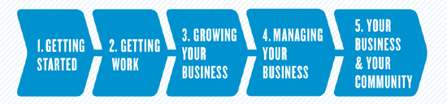

फ्रीलांसर बिबले
फ़ाउंडर और कार्यकारी निदेशक, फ्रीलांसरों का संघ
TONI SCIARRA POYNTER के साथ
कृष्ण प्रकाशन, न्यू यॉर्क
सामग्री
अध्याय 2 | आपका कार्यालय सेटअप
अध्याय 3 | आपका फ्रीलांस पोर्टफोलियो
अध्याय 9 | विपणन अपने आप को ऑनलाइन
अध्याय 10 | अपने फ्रीलांसिंग को अगले स्तर पर ले जाना
अध्याय 11 | द निंबल फ्रीलांसर: उपमहाद्वीप और बिल्डिंग टीम्स
अध्याय 12 | समुदाय — जहाँ व्यक्तिगत और व्यावसायिक मुलाकात होती है
भाग 4: अपने व्यवसाय का प्रबंधन
अध्याय 14 | अपने कार्यालय का प्रबंधन
भाग 5: आपका व्यवसाय और आपकी कम्यूनिटी
अध्याय 16 | अपने खेल के शीर्ष पर काम करना, खेलना और रहना
निष्कर्ष: भविष्य अब है। । । और इसे यू.एस.
आभार
मैं पीटर और रेचेल को धन्यवाद देना चाहूंगा - जो मेरे जीवन को इतना परिपूर्ण बनाते हैं।
सिडनी हिलमैन, बेयार्ड रस्टिन, एफडीआर और एलेनोर और मेरे दादा इज़राइल और आंटी एस्तेर को, जिनके जीवन ने मुझे बहुत कुछ सिखाया है और जो मेरे उत्तरी स्टार के रूप में काम करते हैं।
मेरी बहन ऐनी के लिए और रॉन और नताली के लिए - मैं तुमसे बहुत प्यार करता हूँ - और मेरी भतीजी जोसी, ऋषि, पॉलोट्टा और टेसा के लिए: अगली पीढ़ी के लिए। मिशेल मोलोत्स्की, मेरे सबसे प्रिय मित्र।
टोनी किन्नर पोयंटर के लिए, जो सहज ज्ञान या विचारों के सभी रूपों को लेने और उन्हें विचारशील, समझने योग्य, तार्किक गद्य में बदलने के लिए दिव्य रूप से प्रेरित है। आपने इस पुस्तक की यात्रा को एक आनंदमय बना दिया और मुझे पता है कि आपके लिए काम की अतिरिक्त मात्रा का क्रेज था। आपके विचार प्रतिभाशाली हैं और आप बूट करने के लिए एक अच्छे दोस्त हैं।
मेरे एजेंट, हीदर श्रोडर, जिन्होंने मेरे साथ दस साल तक दोपहर का भोजन किया, इससे पहले कि मैं एक किताब को जन्म दे सकूं। मुझे आपकी क्रूरता और आकर्षण पसंद है।
मैरी एलेन ओ'नील के लिए, जिन्होंने यहाँ और वहाँ अतिरिक्त ज़िंग को जोड़ा और पुस्तक को दुबला बना दिया।
सावन आशौर तक पहुँचने के लिए और धीरे से मुझे इस पुस्तक को बनाने के लिए राजी किया।
वर्कमैन की टीम के लिए - अपने जादू को काम करने के लिए बहुत धन्यवाद। और पीटर वर्कमैन, जो इस तरह के एक उद्यमी और स्टूवर्ड हैं, उनकी प्रकाशन कंपनी बहुत बर्बादी के बीच पनपती है।
फ्रीलांसर्स यूनियन-जो कैसरो, त्रिशला चंदारिया, ओहद फोलमैन, एंड्रयू कैसोय और विशेष रूप से चार्ल्स हेक्सचर, हानन कोलको और स्टेफ़नी बुकानन के बोर्ड के लिए, जिनकी बुद्धि और दयालुता में कोई सीमा नहीं है।
फ्रीलांसर्स यूनियन के कर्मचारियों के लिए, जिनके पास स्वतंत्र श्रमिकों के लिए भावना, संकल्प और समर्पण है। मैं विशेष रूप से एल्थिया एरिकसन, केटलिन पीयर्स, डैन लावोई, गैब्रिएल वूलो, कैटिलिन न्यूमैन, गिलियन सीवेक, हॉलिस काल्होन और जेन स्टर्न को इस पुस्तक पर सभी महान मदद के लिए धन्यवाद देना चाहता हूं। महान नेताओं और दोस्तों होने के लिए दीना सेना, डायलो पॉवेल, और एन बोगर को भी धन्यवाद। और बॉब बेलफ़ोर्ट के लिए, जिनकी कानूनी प्रतिभा केवल उनकी बुद्धि और मेरी विनम्रता (दुर्लभ अवसर पर) की सहिष्णुता से मेल खाती है।
उन मौज-मस्ती और दोस्तों के लिए, जो बड़े बदलाव के लिए संसाधनों को उत्प्रेरित करना चाहते हैं, जिसमें जेनिस निटोली, नैन्सी बर्रैंड, मारा मानुस और मारिया गोटश शामिल हैं। और फ्रीलांसर्स यूनियन प्राप्त करने के लिए फोर्ड फाउंडेशन के लिए शुरुआत की और हमें आगे बढ़ाया।
अशोक में बिल ड्रेयटन के लिए, जो बेयर्ड रस्टिन के लिए मेरे साथ एक प्रेम साझा करता है और यह महसूस करने के लिए कि कुछ अच्छे के प्रति दृढ़ता का जीवन वास्तव में एक अच्छा जीवन है।
सामाजिक उद्यमिता के रास्ते पर मुझे स्थापित करने के लिए चेरिल डोरसी और इको ग्रीन के लिए और रास्ते में बहुत समर्थन प्रदान करने के लिए।
निक साल्वाटोर और स्वर्गीय केट डेनियल ने मुझे श्रम इतिहास का गहरा प्यार देने के लिए और मुझे लगातार याद दिलाने के लिए कहा कि संघवाद सभी श्रमिकों के लिए एक सामाजिक आंदोलन का हिस्सा है।
रिचर्ड विंस्टन और न्यूयॉर्क स्टेट असेंबली के अध्यक्ष शेल्डन सिल्वर के लिए, जिन्होंने न्यूयॉर्क को देश का सबसे स्वतंत्र राज्य बना दिया है। शेल्ली कोरमैन के लिए, एक सच्चे कानूनी योद्धा और जीन टॉम, सभी तूफानों के माध्यम से एक विशेषज्ञ नाविक।
निम्नलिखित निपुण पेशेवरों के लिए मेरा गहरा धन्यवाद, जिन्होंने इस पुस्तक के लिए साक्षात्कार के लिए सहमति व्यक्त की और जिन्होंने अपने समय और विशेषज्ञता के लिए उदारता से हावर्ड जे। सैमुअल्स, सीपीए, एमएसटी, और गैलिया गिचोन को विशेष धन्यवाद दिया और उनके समय और समीक्षा में प्रयास के लिए धन्यवाद दिया। पांडुलिपि के कुछ अंश:
इलिस बेनुन, मार्केटिंग मेंटर ( marketing-mentor.com ) के कोफ़ाउंडर और कई पुस्तकों के लेखक, जिनमें क्रिएटिव प्रोफेशनल गाइड टू मनी शामिल है।
एरिका ईकर, द स्पेसियलिस्ट ( thespacialist.com ) की मालिक ।
गैलिया गिचॉन, डाउन-टू-अर्थ फाइनेंस ( downtoearthfinance.com ) की संस्थापक और माई मनी मैटर्स के लेखक , प्रतिज्ञान, टिप्स और वर्कबुक का एक बॉक्स सेट है।
एवलिन हेच, पीटी, एटीसी, ईएमएच फिजिकल थेरेपी के अध्यक्ष ( emhphysicaltherapy.com )।
जॉन इंडैलेकियो, ओटीआर / एल, सीएचटी।
पैगी पोस्ट, शिष्टाचार विशेषज्ञ, एमिली पोस्ट इंस्टीट्यूट ( emilypost.com ) के एक निदेशक , और अन्य लोगों के साथ व्यापार में शिष्टाचार के पीटर पोस्ट के साथ सह-लेखक हैं।
बारबरा सफानी, कैरियर सॉल्वर ( careersolvers.com ) के मालिक ।
हॉवर्ड जे। सैमुअल्स, सीपीए, एमएसटी, केडीएमएस एलएलसी प्रमाणित सार्वजनिक लेखाकार ( हॉवर्ड@केडीएमएससीपीए । कॉम )।
जेनिफर शाहीन, द टेक्नोलॉजी थेरेपिस्ट ® और टेक्नोलॉजी थेरेपी के ग्रुप ® ( Technologytherapy.com ) के अध्यक्ष , टेक थेरेपी टीवी (techtherapy.tv) के निर्माता हैं।
ब्रिगिट थॉम्पसन, डाटामास्टर अकाउंटिंग सर्विसेज, एलएलसी ( datamasteraccounting.com ) के अध्यक्ष , फ्रीलांस राइटर्स के लिए बुककीपिंग बेसिक्स के लेखक।
कोलीन वेनराइट, उर्फ "कम्युनिकेट्रिक्स" ( www.communicatrix.com )।
फ्रीलांसरों को मेरी ईमानदारी से धन्यवाद जिन्होंने अपनी व्यक्तिगत कहानियों, अनुभवों और अंतर्दृष्टि की पेशकश की। आपने इस पुस्तक में विचारों को जीवंत करने में मदद की।
अंत में, हर जगह फ्रीलांसरों और स्वतंत्र श्रमिकों के लिए धन्यवाद, जो हर दिन अपने स्वयं के समाधान ढूंढते हैं जबकि कुछ अभी भी मानते हैं कि वे अपने कंप्यूटर पर जैमियां पहनने वाले सुस्त दोस्त हैं। उन लोगों को कम ही पता है कि फ्रीलांसर्स चुपचाप अगले सुरक्षा जाल को डिजाइन कर रहे हैं, अर्थव्यवस्था को मजबूत कर रहे हैं, और अक्सर खुद के लिए बहुत सुंदर जीवन बनाते हैं।
-सारा होरोविट्ज़
सारा होरोविट्ज़ के साथ काम करना एक उपहार रहा है। हमारी कई बातचीत के माध्यम से और फ्रीलांसर्स यूनियन के साथ मेरे अनुभवों के माध्यम से, उसने मेरी चेतना को उभारा है कि फ्रीलांसरों को पेशेवरों और लोगों के रूप में क्या चाहिए। उसने इंसानों की क्षमता में मेरा विश्वास पैदा किया है कि वे ऐसे समाधान तैयार करें जहाँ पहले से कोई मौजूद नहीं था। उसने मुझे एक क्लोज-अप दृश्य दिया है कि कैसे कोई ऐसे लक्ष्यों की ओर आगे बढ़ना जारी रखता है जो बहुत बड़े और दूर लगते हैं। उसके और हमारे काम के लिए धन्यवाद, मैं एक बेहतर फ्रीलांसर हूं, और शायद एक बेहतर व्यक्ति भी।
फ्रीलांसर्स यूनियन में अद्भुत टीम के लिए धन्यवाद, जो हर मोड़ पर स्वागत और मददगार थे, खासकर जूडी ओस्टेलर, कैटलिन पीयर्स, जेनिफर स्टर्न और गैब्रिएल वूलो।
मैं भी धन्यवाद देना चाहूंगा:
मुझे सिफारिश करने के लिए एन ब्रैमसन; सारा के साथ काम करने का अवसर प्रदान करने के लिए सावन अशौर; मैरी एलेन ओ'नील ने अपने स्पष्ट संपादकीय अंतर्दृष्टि और इस परियोजना के सावधानीपूर्वक पालन के लिए; सुनने, सुनने और सुनने के लिए डोना मुंकर; जुलाई में अपने रहने वाले कमरे के सोफे के लिए नील फ़ेलसमैन और जोसलेन विल्सन, और "दीवार" के बारे में अपनी बुद्धि के लिए जोस; फर्न सैनफोर्ड अपनी संपादकीय विशेषज्ञता के लिए; जब मेरी फोन कॉल फ्रीलांसरों के लिए वकालत के मुद्दों पर एकालाप बन गई, तो मेरी बहन और मेरी मां ने उत्साहपूर्वक सुनने के लिए; और मेरे पति, डोनाल्ड, जो कुछ भी पूरा करने के बाद, हमेशा कहते हैं, "बेशक, मैं बिल्कुल हैरान नहीं हूं।"
—टोनी साइकार्रा पोयंटर
परिचय
स्वागत हे!
हैलो, फ्रीलांसर- या भविष्य के फ्रीलांसर। मैं यह पुस्तक लिख रहा हूँ, इसलिए हम पंद्रह वर्षों के लिए फ्रीलांसर्स यूनियन के प्रमुख होने और हजारों फ्रीलांसरों से मिलने के बारे में बात कर सकते हैं। मैंने सुना है कि वे व्यापार की चाल को साझा कर चुके हैं और उन्होंने आगे बढ़ने के लिए पूरा किया है। मैं आपको उन रणनीतियों को सिखाना चाहता हूं जो काम करती हैं।
मैंने फ्रीलांसरों की चुनौतियों के बारे में भी सुना है और उनसे मिलने के लिए उन्होंने क्या किया है। मैं इन चुनौतियों को पूरा करने में आपकी मदद करना चाहता हूंऔर बढ़ता है। सबसे अधिक, मैं उन सफलताओं के लिए मॉडल साझा करना चाहता हूं जो मैंने देखा है और ऐसे उपकरण प्रदान करते हैं जिनका उपयोग आप अपनी जरूरत के हिसाब से कर सकते हैं।
फ्रीलांसरों: एक तैयार की गई गाड़ी
जब आप फ्रीलांसरों से उनके काम के बारे में पूछते हैं, तो वे आपको न केवल एक चीज के बारे में बताने की संभावना रखते हैं, बल्कि पांच या छह: दिन के हिसाब से, रात के समय गायक, सप्ताहांत पर पेशेवर कार्यालय आयोजक, टैक्स सीज़न के दौरान अकाउंटिंग फर्म पार्ट-टाइमर, मुनीम अपने स्थानीय पेशेवर समूह के लिए- ओह, और पिछले साल उन्होंने Etsy पर अपने विशेष हस्तनिर्मित गहने बेचना शुरू कर दिया "सिर्फ मनोरंजन के लिए"!
एक फ्रीलांसर 1950 के दशक के "संगठन मैन" या वर्तमान क्यूबिकल भीड़ से एक अलग तरह का कार्यकर्ता है। क्यूबिकल वर्ल्ड में, आपको एक असाइनमेंट मिलता है, इसे पूरा करें और अपना अगला असाइनमेंट चुनें। एक फ्रीलांसर के रूप में, आप अक्सर और कई प्रकार के भुगतान किए गए कार्य कर सकते हैं। आप काम खोजने के लिए नेटवर्क और मार्केट करते हैं, काम पूरा करते हैं, और फिर इसके लिए बिल देते हैं (और, बहुत बार, भुगतान इकट्ठा करने के लिए लड़ते हैं)।
एक बार भुगतान करने के बाद, आप गियर को स्विच करते हैं और एक एचआर विशेषज्ञ बन जाते हैं, जो नियमित खर्चों को कवर करने और करों और लाभों का भुगतान करने के लिए प्रत्येक डॉलर को खाते में जमा करते हैं। आपको यह भी जानना होगा कि हेल्थ इंश्योरेंस कैसे खरीदें, रिटायरमेंट की योजना, वित्तीय योजना को लागू करें, और व्यवसाय के उद्यम और संरचनाएं।
फ्रीलांसिंग एक द्रव कार्य का माध्यम है जो निश्छलता और लचीलेपन को पुरस्कृत करता है। जब यह अच्छी तरह से काम कर रहा है, तो कोई बेहतर एहसास नहीं है। फ्रीलांसर की बाइबिल आपको अपने फ्रीलांस करियर में शुरू होने, बढ़ने, और पनपने का एहसास दिलाने में मदद करेगी। मैं इस प्रक्रिया को ध्वस्त कर दूंगा और आपको सलाह के माध्यम से छाँटने में मदद करूँगा जो अक्सर स्रोत से स्रोत तक फैल जाती है या विस्तार के साथ डूब जाती है। यह देखते हुए कि फ्रीलांसरों को अपने काम को अच्छी तरह से करने के लिए कई अलग-अलग कार्य करने पड़ते हैं, यह पुस्तक, किसी ऐसे व्यक्ति द्वारा क्यूरेट करना जिसने पहले छँटाई और पशुचिकित्सा किया है, आपको अपनी उंगलियों पर आवश्यक जानकारी डालनी होगी।
हम उन चीजों के लिए सर्वोत्तम प्रथाओं के बारे में बात करेंगे जो हर फ्रीलांसर को जानने की जरूरत है, कीमतों को शुरू करने से; ग्राहकों के साथ करों से निपटने, स्वास्थ्य बीमा, और सेवानिवृत्ति बचत से। मैंने जीवन शैली के मुद्दों को भी संबोधित किया है, जैसे कि अपने लिए समय निकालना, कार्यभार और कार्य की आदतों को संभालना, और दूसरों के साथ जुड़े रहना।
यदि आप फ्रीलांसिंग में नए हैं, तो यह पुस्तक रस्सियों को सीखने में आपकी मदद करेगी। यदि आप थोड़ी देर के लिए फ्रीलांसिंग कर रहे हैं, तो यह आपको बढ़ने और विस्तार करने में मदद करेगा।
मैं आपको फ्रीलांसिंग की दुनिया से भी परिचित कराऊंगा - एक ऐसी दुनिया जहाँ आप एक ऐसे समुदाय का निर्माण कर सकते हैं जो एक पेशेवर नेटवर्क से कहीं अधिक है। यह वह है जिसे मैं आपका "प्रेम" नेटवर्क कहता हूं: साथी फ्रीलांसरों का एक परिवार जो ज्ञान, संसाधन, प्रोत्साहन, और जो चल रहा है उसके बारे में नग्न सत्य साझा करता है। स्वतंत्र रूप से अकेले काम करने के रूप में परिभाषित किया जा सकता है, लेकिन सुपर-सफल फ्रीलांसरों को पता है कि वे अकेले नहीं हैं। जुड़े रहना उनकी सफलता की कुंजी है।
सबसे कुशल व्यवसायी जिसे आप जानते हैं कि शायद स्टिकिएस्ट वेबसाइट के साथ बहुत कुछ है। मुख्य रूप से वे सहायक हैं - बहुत सारे कनेक्शन, लिंक, इंटरैक्शन और जानकारी के साथ। वे देते हैं। वे एक निम्न और विशाल निष्ठा का निर्माण करते हैं। आप बहुत सारे लिंक और महान सलाह के साथ एक फ्रीलांसर होंगे ताकि लोग आपके पास विचारों, सहायता और बहुत सारे काम करेंगे जो उन्हें किए जाने की आवश्यकता है।
उदय पर एक प्रस्ताव
फ्रीलांसर कार्यबल में एक बड़ी पारी के केंद्र में हैं जो अंततः महत्वपूर्ण द्रव्यमान तक पहुंच गया है- और यह फ्रीलांसरों के लिए बहुत अच्छी खबर है:
संयुक्त राज्य में एक-तिहाई श्रमिक स्वतंत्र रूप से काम करते हैं।
हम उस बड़ी संख्या को कैसे मारेंगे? योर के व्यावसायिक दिनों में, कंपनियां वर्कफ़्लो की सटीक भविष्यवाणी नहीं कर सकती थीं, इसलिए उन्होंने कर्मचारियों को कर्मचारियों पर रखा, जब वे डेक पर सभी हाथों की आवश्यकता के लिए तैयार थे। जैसा कि तकनीक ने कंपनियों को वर्कफ़्लो की बेहतर भविष्यवाणी करने में मदद की है, उन्होंने "बस एक बार" को अपनायाहायरिंग मॉडल, पूर्णकालिक कर्मचारियों को काटना (वेतन, लाभ और अचल संपत्ति में भारी बचत) और अतिरिक्त श्रमिकों को केवल तभी काम पर रखना। जो सिर्फ-इन-टाइम कार्यकर्ता फ्रीलांसर हैं।
एक फ्रीलांसर के रूप में, आप उन चुनौतियों का सामना करते हैं जो कर्मचारी कर्मचारी नहीं करते हैं। आप गिग्स के बीच बेरोजगारी बीमा के लिए पात्र नहीं हैं। और जब कंपनियां पेनल्टी से पटक जाती हैं, अगर वे अपने पेरोल नहीं बनाते हैं, तो ऐसी कोई भी सुरक्षा नहीं है जो डेडबीट क्लाइंट्स से फ्रीलांसरों की रक्षा करती है। फ्रीलांसरों को भी अपना स्वास्थ्य बीमा खरीदना पड़ता है और अपनी सेवानिवृत्ति के लिए फंड देना पड़ता है। हम इन चुनौतियों को पूरा करने के बारे में बात करेंगे।
चूंकि समय-समय पर कार्यबल पहली बार मुख्य रूप से मीडिया और मनोरंजन (और बाद में, प्रौद्योगिकी) में विकसित हुआ, इसलिए फ्रीलांसिंग रचनात्मक कार्यों से जुड़ा था और इसे "जीवन शैली पसंद" के रूप में देखा गया था। उस व्यंजना ने व्यापार और सरकार को स्वतंत्र रूप से "हमारी समस्या नहीं" के रूप में फ्रीलांसरों की चुनौतियों को देखने की अनुमति दी। लेकिन स्वतंत्र लहर बढ़ती रही: 1995 और 2005 के बीच, स्वतंत्र श्रमिकों की संख्या में 27 प्रतिशत की वृद्धि हुई। अकेले न्यूयॉर्क शहर में, 1975 और 2007 के बीच दो-तिहाई नौकरी की वृद्धि को स्वरोजगार के लिए जिम्मेदार ठहराया गया था।
फिर 2008 में ग्रेट मंदी, एक आर्थिक गेम-चेंजर के रूप में आया जो कि ग्रेट डिप्रेशन के बाद से नहीं था। छंटनी और कंपनी के बंद होने से फ्रीलांस समुदाय में भारी वृद्धि हुई। एक अध्ययन के अनुसार, ग्रेट मंदी में अपने स्वयं के व्यवसाय शुरू करने वाले अमेरिकियों की संख्या पंद्रह साल की उच्च तक पहुंच गई- और अधिकांश एकमात्र मालिक थे।
आज, फ्रीलांसिंग की मुख्यधारा बन गई है। नियोक्ता अपने व्यवसायों को बनाए रखने और विकसित करने के लिए स्वतंत्र श्रमिकों पर अधिक से अधिक भरोसा करते हैं। फ्रीलांसर सभी प्रकार के व्यवसायों में मौजूद हैं: मीडिया, मनोरंजन, विनिर्माण, स्वास्थ्य देखभाल, वित्त, अचल संपत्ति, गैर-लाभकारी और कई और। वे कंप्यूटर प्रोग्रामर और nannies, ओपेरा गायकों और एनेस्थिसियोलॉजिस्ट हैं। वे सभी उम्र, सभी प्रकार के कारणों के लिए स्वतंत्र हैं:
• अपने करियर को शुरू करने के लिए नई ग्रेड फ्रीलांस।
• पूर्णकालिक कार्यकर्ता अपने बच्चों की शिक्षा के लिए अधिक कमाने के लिए, सेवानिवृत्ति के लिए अधिक बचत, या एक नए कैरियर में संक्रमण के लिए स्वतंत्र होते हैं।
• नौकरी से शिकार करते समय या काम पर जाने वाले श्रमिकों को उनके अगले कार्य के रूप में अकेला जाना पड़ता है।
• श्रमिक स्कूल या प्रशिक्षण के लिए अधिक काम-जीवन की संतुष्टि या अधिक लचीले घंटे के लिए स्वतंत्र होने के लिए पूर्णकालिक नौकरियां छोड़ देते हैं।
• माता-पिता जो बच्चों और / या माता-पिता की देखभाल करने के लिए एक लचीली अनुसूची चाहते हैं, वे फ्रीलांस होंगे।
• लोग अपने शौक को लाभदायक फ्रीलांस उद्यमों में बदल देते हैं, जिससे वे प्यार करते हैं।
• सीनियर्स फ्रीलांस को अपनी आय के पूरक और सक्रिय रहने के लिए।
नए कार्यबल में हर जगह फ्रीलांसर हैं, आखिरकार प्रमुख खिलाड़ियों के रूप में भाग लेने की स्थिति में है क्योंकि हमारा देश एक बदलती हुई विश्व अर्थव्यवस्था में समृद्धि के तरीकों की तलाश में है, और एक नई सामाजिक सुरक्षा नेट बनाने के लिए आवश्यक परिवर्तनों को चलाने के लिए उन्हें शामिल करेगा।
इस सारी वृद्धि के साथ, आपको लगता है कि एक फ्रीलांसर की आधिकारिक परिभाषा होगी। यह पता चला है कि कई हैं। और यह वास्तव में आपके दिन-प्रतिदिन के स्वतंत्र जीवन के लिए एक समस्या है।
कार्यालय में सामान्य दिन । । ।
सैम प्रेस्कॉट एक वरिष्ठ वीपी के रूप में अपनी नौकरी से प्यार करता है और जिस टीम के साथ वह एक्स कॉर्प में काम करता है, वह आज सुबह सबसे अन्य लोगों की तरह शुरू होती है: वह अपनी कॉफी खरीदता है और कंपनी कैफेटेरिया में टफ मफिन खरीदता है और टेड के साथ खेल में बात करता है, जो काउंटर के पीछे लड़का है।
अपने कार्यालय में, सैम के कार्यकारी सहायक, टीना, उन्हें संदेशों और दिन के लिए अपने कैलेंडर पर जानकारी देते हैं। फिर वह आईटी विशेषज्ञ गॉर्डन से मिलता है, जो कंपनी की पूर्ति प्रणाली के आसपास समस्या निवारण कर रहा है। गॉर्डन ग्राहकों की संतुष्टि के सर्वेक्षण से प्रतिक्रिया प्राप्त करता है, शिपिंग देरी से वित्तीय नुकसान का विश्लेषण करता है, और सिस्टम अपडेट के लिए सिफारिशें करता है।
दोपहर के भोजन के बाद, एंजी के साथ दोपहर का एक लंबा सम्मेलन होता है, जो एक नए उत्पाद के लिए विपणन अभियान पर पिछले अठारह महीनों से काम कर रहा है, अब लॉन्च करने के लिए उलटी गिनती में है। एंजी प्रस्तुत करता हैउसकी टीम की योजना और प्रेस किट, जिसे सैम घर पर देखने के लिए अपने ब्रीफ़केस में डालता है।
सभी में, एक अच्छा दिन का काम। अब, यहाँ पकड़ है: इस नाटकीयता में केवल एक व्यक्ति को वेतन मिल रहा है और एक्स कॉर्प से लाभ है। बाकी सब लोग एक फ्रीलांसर हैं। मुझे यकीन है कि आप अपवाद का अनुमान लगा सकते हैं: सैम!
आइए उन लोगों से मिलते हैं जो सैम के कामकाजी जीवन को इतना सफल बना रहे हैं:
टेड, एक ठेका श्रमिक जिसकी सेवाएं एक्स कार्पोरेशन को किसी अन्य कंपनी द्वारा लीज पर दी जाती हैं।
टीना, सैम के सहायक के लिए भरने के लिए एक एजेंसी के माध्यम से काम पर रखा गया अस्थायी कर्मचारी है, जो मातृत्व अवकाश पर है।
गॉर्डन, एक पूर्व पूर्णकालिक कर्मचारी जिसने छह महीने पहले बीमार माता-पिता की देखभाल के लिए अंशकालिक काम करने का फैसला किया था।
एंजी, एक स्वतंत्र सलाहकार या "पर्मलेंसर," पहले एक पूर्णकालिक एक्स कॉर्प कर्मचारी था, जिसे सैम में कंपनी द्वारा डाउनसाइज़ किए जाने के बाद सैम द्वारा रखा गया था।
एंजी की टीम, स्वतंत्र विपणन सलाहकारों, कॉपीराइटरों और डिजाइनरों का एक समूह, जिनके लिए वह उत्पाद लॉन्च के उप-खंडित घटक हैं।
ये सभी श्रमिक कुशल पेशेवर हैं, सभी सैम को एक्स कॉर्प के लक्ष्यों तक पहुंचने में मदद करते हैं (और अगर उत्पाद लॉन्च सफल रहा तो सैम को एक रसदार बोनस प्राप्त करने का लक्ष्य है)।
नीचे दी गई सूची, फ्रीलांसर्स यूनियन की वेबसाइट से अनुकूलित है, जो आपको फ्रीलांसिंग के कई चेहरों का पता देती है:
इंडिपेंडेंट कॉन्ट्रैक्टर (उर्फ फ्रीलांसर, कंसल्टेंट, एकमात्र प्रोप्राइटर): आप क्लाइंट्स को अपने दम पर प्राप्त करते हैं और उन्हें उत्पाद या सेवा प्रदान करते हैं।
अस्थायी कर्मचारी (एक अस्थायी एजेंसी के माध्यम से): आप एक अस्थायी एजेंसी के लिए काम करते हैं जो आपको क्लाइंट की साइट पर काम करने के लिए असाइन करती है।
अस्थायी कर्मचारी (प्रत्यक्ष किराया): आप एक कंपनी में एक अस्थायी स्थिति में काम करते हैं लेकिन एक एजेंसी के माध्यम से असाइन नहीं किए जाते हैं।
ऑन-कॉल या प्रति-डायम कर्मचारी: आपको आमतौर पर अनुपस्थित कर्मचारी के रूप में काम करने के लिए कहा जाता है, जो अनुपस्थित कर्मचारी को भरने या भारी कार्यभार को संभालने में मदद करने के लिए कहा जाता है।
अंशकालिक कर्मचारी: आप प्रति सप्ताह पैंतीस घंटे से कम समय तक एक स्थायी कर्मचारी के रूप में काम करते हैं।
लीज्ड कर्मचारी: आप एक ग्राहक के लिए एक स्थायी कर्मचारी के रूप में काम करते हैं, लेकिन पेरोल और लाभों को संभालने वाली किसी अन्य कंपनी द्वारा भुगतान किया जाता है।
अनुबंध कर्मचारी: आप एक ऐसी कंपनी के लिए काम करते हैं, जो अन्य कार्य करती हैएक अनुबंध के तहत फर्में। आप एक समय में एक ग्राहक के लिए काम करते हैं, आमतौर पर साइट पर।
दिहाड़ी मजदूर: आप अपने उद्योग में अन्य श्रमिकों के साथ इकट्ठा होते हैं और उस दिन काम करने के लिए एक नियोक्ता की प्रतीक्षा करते हैं।
ADVOCACY ALERT
खड़े हों और खुद को गिनवाएं । । । और क्यों यह COUNTS
As you flip through this book, you’ll notice boxes marked by various icons. The Advocacy Alerts provide often-surprising facts about freelancing and build solidarity among freelancers by clueing you in to key issues about indie life that could use improvement.
Building solidarity is tricky when there are so many different types of freelance work that even the government messes up the count! For example: The General Accounting Office (GAO) has eight different categories of “contingent” workers, but the Current Population Survey only tracks part-time and self-employed workers. And the Bureau of Labor Statistics, whose assessments are fundamental in policymaking, doesn’t even include independent workers in most reports.
हालांकि यह स्पष्ट रूप से नौकरशाहों को समझ में आता है, किसी और को, यह स्पष्ट रूप से पागल है कि मजदूरी के भुगतान, बेरोजगारी लाभ, करों, स्वास्थ्य बीमा कवरेज, सेवानिवृत्ति की बचत, और अन्य दबाव-गुणवत्ता वाले जीवन के बारे में राष्ट्रीय निर्णयों से एक तिहाई कार्यबल को बाहर करना है। श्रमिकों के लिए मुद्दे। और पारंपरिक कार्यकर्ता इन क्षेत्रों में फ्रीलांसरों की तुलना में बहुत बेहतर हैं।
इस प्रकार वकालत अलर्ट। यदि फ्रीलांसरों की गणना के लिए एक साथ खड़े नहीं होते हैं, तो उन्हें बिल्कुल भी नहीं गिना जा सकता है।
कब आज़ादी?
फ्रीलांस शब्द हमारी भाषा का हिस्सा इतने लंबे समय से है कि हम यह सवाल करना बंद नहीं करते हैं कि "स्वतंत्र" और "लांस" को अपने लिए क्या करना है। वैसे भी यह कहां से आता है? प्री-राफेलाइट कला के महल टावरों में बहने वाली महिलाओं की तरह, यह एक आविष्कार है। अठारहवीं और उन्नीसवीं सदी के उत्तरार्ध में औद्योगिक क्रांति के दौरान नि: शुल्क लांस का निर्माण किया गया था, जब कारखाने और मशीनें बदल रही थीं कि लोग कैसे रहते थे और काम करते थे। विक्टोरियन लोगों ने इन नाटकीय पारियों के खिलाफ एक सरल समय के लिए लालसा और मध्ययुगीन अतीत की एक रोमांटिक दृष्टि पैदा की। सर वाल्टर स्कॉट ने अपने 1820 के उपन्यास इवानो में शब्द की उत्पत्ति की ,क्रूसेड्स के दौरान सेट, लेखन: "मैंने (राजा) रिचर्ड को मेरे फ्री लांस की सेवाओं की पेशकश की" शूरवीरों का वर्णन करने के लिए एक विशेष सामंती प्रभु के प्रति निष्ठा नहीं है जो भुगतान के लिए अपनी सेवाएं प्रदान करेंगे। यह शब्द स्पष्ट रूप से एक राग है और एक आवश्यकता को फिट करता है, क्योंकि यह कलाकारों से लेकर जूलॉजिस्ट तक, पूरी तरह से स्वरोजगार को परिभाषित करने के लिए एक लोकप्रिय उपन्यास में संदर्भ से परे विस्तारित और विस्तारित हुआ है।
(स्टिल) एक नेट के बिना काम कर रहा है
जब मैंने फ्रीलांस मुद्दों से जुड़ना शुरू किया, तो मुझे पता चला कि फ्रीलांसरों को लंबे समय से अन्य श्रमिकों द्वारा प्राप्त सुरक्षा जाल का अभाव है, और यह कि कार्यकर्ता और सरकार के बीच मतभेद कम से कम बाइबिल के समय से हैं, जब फरो ने पूजा के लिए इजरायल के दिनों की अनुमति देने से इनकार कर दिया था। और उनकी जरूरत के पुआल की आपूर्ति बंद कर दी ईंटें बनाते हैं - जबकि अभी भी (किसी भी फ्रीलांसर के लिए कोई आश्चर्य नहीं) उन्हें उनके कोटा और समय सीमा बनाने की उम्मीद है।
यहां तक कि बहुराष्ट्रीय चीज की जड़ें गहरी हैं। फ्रीलांसिंग का कई पीढ़ियों पर नाम रहा है: कुटीर उद्योग, टुकड़ा-टुकड़ा, चांदनी, किनारे, टमटम, किचन-टेबल व्यवसाय, घर-आधारित व्यवसाय और भुगतान किए गए शौक। हाल ही में, हमने सलाहकार, स्वतंत्र कार्यकर्ता, स्व-नियोजित कार्यकर्ता, स्वतंत्र ठेकेदार, अस्थायी, परमैटेम्प, सोलोप्रीनुर, एकमात्र मालिक, आकस्मिक कार्यकर्ता, लचीला या वैकल्पिक कर्मचारी, क्राउड सोर्सिंग, और यहां तक कि "गिगोनॉमिक्स" भी जोड़ा है।
सभी प्रमाण जो कि कार्यबल हमेशा अर्थव्यवस्था को औपचारिक रूप से पहचानने की तुलना में अधिक विविध रहे हैं। लेकिन संख्या अब अधिक है, और आर्थिक दांव अधिक है। हमारे फ्रीलांसर्स यूनियन 2011 में 2,500 से अधिक स्वतंत्र श्रमिकों के सर्वेक्षण में पाया गया:
• सर्वेक्षण में शामिल 79 प्रतिशत स्वतंत्र श्रमिकों के पास पिछले वर्ष (2010) में पर्याप्त काम नहीं था।
• 44 प्रतिशत को अंतिम वर्ष में अपने बकाया वेतन का भुगतान करने में परेशानी हुई।
• 83 प्रतिशत का कहना है कि स्वास्थ्य बीमा के लिए भुगतान करना एक चुनौती है।
की तुलना करें? वहाँ मत जाओ!
जब आप फ्रीलांसिंग शुरू करते हैं, तो फ्रीलांस कैश फ्लो की रोलर-कोस्टर राइड डरावनी और तनावपूर्ण हो सकती है। यह महसूस करना महत्वपूर्ण है कि फ्रीलांसिंग अपना जानवर है, पूरी तरह से नियमित रूप से भुगतान किए गए काम से अलग है, अपनी मानसिकता और तरीकों के साथ। हम बाद के अध्यायों में उन रणनीतियों के बारे में बात करेंगे जो चोटियों और घाटियों को बाहर निकालने में मदद कर सकती हैं, जैसा कि इस फ्रीलांसर ने सीखा है:
फ्रीलांसिंग में चार महीने, मेरे पास उतना काम था जितना मैं कर सकता था और मैं बहुत उत्साहित था! लेकिन अनुबंधों को अंतिम रूप देने में कई महीने लग गए, और भुगतानों को उन वितरणों के अनुमोदन के लिए बांध दिया गया, जिनमें महीने भी लगे। मेरा नकदी प्रवाह निराशाजनक था। मुझे लगा कि इन बड़ी आय में उतार-चढ़ाव का मतलब है कि मैं पर्याप्त मेहनत नहीं कर रहा था- लेकिन मैं जा रहा था शीघ्रता से। अंत में, मेरे पति, एक आजीवन फ्रीलांसर, ने मुझे कुछ बेहतरीन सलाह दी: “आप अपने काम और आय की तुलना उन लोगों से नहीं कर सकते हैं, जिनके पास वेतन है। यदि आप करते हैं, तो आप कभी भी अपने बारे में अच्छा महसूस नहीं करेंगे। ” इसने मुझे एहसास दिलाया कि फ्रीलांसिंग एक बिजनेस मॉडल है। फ्रीलांसरों को नौकरी के हिस्से के रूप में नकदी प्रवाह में उतार-चढ़ाव से निपटना पड़ता है।
मैंने सीखा है कि मुझे लगता है कि सब कुछ से अधिक समय लगता है - टमटम को उतारने से लेकर इसके लिए भुगतान करने के लिए टमटम करना। इसलिए मैंने नेटवर्किंग कभी बंद नहीं की। मैं बहुत पहले से नए गिग्स के लिए पूर्वेक्षण शुरू कर देता हूं क्योंकि अन्य नीचे हवा करते हैं। यदि संभव हो तो मैं अपनी समय सीमा तय करता हूं। मुझे लगता है कि भुगतान होने में किसी से भी अधिक समय लगेगा - इसलिए मैं अपनी आय के खिलाफ अपने खर्चों का पूरा ध्यान रखता हूं। और मैं अन्य फ्रीलांसरों से पूछता हूं कि वे अपने लिए सर्वोत्तम सौदे प्राप्त करने के लिए कैसे बातचीत करते हैं।
चार विकल्प
हजारों फ्रीलांसरों को सुनने से लेकर वर्षों तक अपनी कहानियों को साझा करने तक, मैंने सीखा है कि जब फ्रीलांसरों को निश्चित रूप से स्टाफ कर्मचारियों की चुनौतियों का सामना करना पड़ता है, तो मैंने जिन बदलावों का वर्णन किया है, वे बड़े अवसर प्रदान करते हैं, जिन्हें हम इस पुस्तक में देखेंगे:
1 सुरक्षा का अवसर: लीनर कंपनियों का अर्थ है फ्रीलांसरों के लिए अधिक काम, अधिक लोगों को फ्रीलांसरों के रूप में सफल होने में सक्षम होना, और सूचना और रणनीतियों को साझा करने के लिए एक बड़ा और अधिक सहायक समुदाय बनाने की क्षमता।
2 स्थिरता का अवसर: समय के लिए स्वतंत्र जीवन के लिए एकदम सही है। प्रौद्योगिकी शाब्दिक रूप से आपके कार्यालय को आपके हाथ की हथेली में रख सकती है, इसलिए आप जहाँ कहीं भी हों, उत्पादक रह सकते हैं, अपने काम को सुव्यवस्थित करने के लिए ऑनलाइन उपकरणों का उपयोग कर सकते हैं, और दुनिया भर में खुद को बाजार में ला सकते हैं। इसे कई अन्य पुरस्कार फ्रीलांसरों के प्यार में जोड़ें: अपने ग्राहकों को चुनने का मौका, कोई लंबी यात्रा, कोई कॉर्पोरेट बैठक या राजनीति नहीं, जो भी होआप के लिए वास्तव में महत्वपूर्ण है, और कपड़े और भोजन पर बचत, बस कुछ ही नाम के लिए।
3 उत्तोलन का अवसर: फ्रीलांस सर्ज फ्रीलांसरों को कर, मजदूरी और लाभ के बारे में राष्ट्रीय निर्णयों में क्लॉथ देता है। जब फ्रीलांसर कार्यस्थल से अपना मूल्य वापस लेते हैं, तो यह दर्द होता है। जब वे अपने वोट वापस लेते हैं, तो दर्द होता है।
4 समुदाय का अवसर ("एक छत्ता जो पनपता है"): संख्याओं का लाभ उठाने के साथ, एक अधिक स्थिर आय, और एक पूर्ण जीवन शैली, जो मुझे पसंद है उसे "प्यार" कहने का अवसर है। यह वह भयावह स्वतंत्र कार्यकर्ता है जो एक-दूसरे को सूचित करने, समर्थन देने, स्वस्थ और नैतिक प्रतिस्पर्धा में संलग्न होने और एक जलवायु को बढ़ावा देने के लिए लंबे समय से एक-दूसरे के लिए विस्तारित है, जहां फ्रीलांसर्स सफल होते हैं। फ्रीलांसर्स यूनियन में, हम इसे "एक छत्ता जो पनपते हैं" कहते हैं। यह एकता, मेरा मानना है, व्यक्तियों के रूप में और एक संगठित, मान्यता प्राप्त समूह के रूप में फ्रीलांसरों के लिए दीर्घकालिक स्थिरता के निर्माण की नींव है।
ए पूष, ए जेएमपी। । । कौन परवाह करता है?
चाहे आपको फ्रीलांसिंग मिले या यह आपको मिले; चाहे आप नौकरी छोड़ दें या जाने दें; चाहे आप फ्रीलांसिंग में भाग गए या उसमें गिर गए - फ्रीलांस जीवन आपके लिए जीवन हो सकता है। लाखों लोगों ने किया है, लाखों लोग कर रहे हैं, लाखों लोग करेंगे। आप उनमें से एक हो सकते हैं। सफलता के लिए खुद को स्थापित करना यह पुस्तक है- और फ्रीलांसर्स यूनियन — यह सब है।
फ्रीलांसरों द्वारा निर्धारित: मेरी कहानी
यह पिता / बेटी अनिद्रा, एक स्मार्ट माँ, एक कार्यकर्ता दादा, क्वेकर स्कूलों, आलू छीलने और व्यंजन तोड़ना, एक किबुतज़, लॉ स्कूल में रहना, और एक स्वतंत्र कार्यकर्ता के रूप में मिसकॉलिफ़ाइड होना, जिसने मुझे फ्रीलांसरों के बारे में इतना भावुक बना दिया।
जब मैं एक बच्चा था, मेरे पिता और मैं देर से बात करने वाली राजनीति में रहना पसंद करते थे (हम वास्तव में अनिद्रा के शिकार थे)। एक श्रमिक वकील के रूप में और उसके आस-पास के आंदोलन में अपना जीवन व्यतीत करने के बाद, वह काम, इतिहास, नीति और लोगों से संबंधित सभी चीजों से मोहित हो गया था और इसलिए मैं और उसकी उम्र के कारण (वह 1918 में पैदा हुआ था), उन्होंने १ ९ ३० के दशक से १ ९ ६० के दशक तक सामाजिक आंदोलनों को जीवित रखा- न्यू डील और नागरिक अधिकारों के आंदोलनों के निर्णायक दशक।
उस पर, मेरी मां ने कहा कि मुझे लगता है कि एक बच्चे को सबसे ज्यादा जरूरत है: एक गले लगाने और एक धक्का। एक स्वतंत्र भावना जो कम उम्र में घर छोड़ कर जीने और अपने दम पर काम करने के लिए तैयार थी, वह दुखी थी। वह मुझे सबसे प्रेमपूर्ण तरीके से बताती है कि क) मेरे पास जीवन में करने के लिए चीजें हैं, और बी) उसने मुझसे उनसे करने की अपेक्षा की। उनके उदाहरण से, मैंने एक मंत्र विकसित किया जो मुझे आज भी काम के कठिन दौर से गुजर रहा है: "एक गहरी सांस लें, एक गिलास पानी लें, और एक पैर दूसरे के सामने रखें।"
यद्यपि वह पैदा होने से पहले ही मर गया था, मेरे दादा, इज़राइल होरोविट्ज़, अंतर्राष्ट्रीय देवियों गारमेंट वर्कर्स यूनियन (ILGWU) के उपाध्यक्ष के रूप में अपनी लंबे समय तक सक्रियता के लिए परिवार के घर में रहते थे, और उनके लिए एक समर्पित वाक्यांश जो उनके समर्पित कार्यकर्ता संबंधित हो सकते हैं : "मुझे क्षमा करें, लेकिन मुझे बकवास से एलर्जी है।"
मैंने क्वेकर स्कूलों में भाग लिया, जहां एक व्यापक विचार था कि व्यक्तिगत प्रयास के माध्यम से वैश्विक परिवर्तन न केवल संभव था, बल्कि आवश्यक था। मैं कॉर्नेल में औद्योगिक और श्रम संबंधों के स्कूल में श्रमिक मुद्दों का अध्ययन करने के लिए गया, जहां मैं श्रम और संघ कार्य में शामिल हो गया। वहाँ मैंने समूहों को संगठित करने और जुटाने के मूल सिद्धांतों को सीखा (मेरा पहला काम एक नर्सिंग होम में रसोई कर्मचारियों को संघबद्ध करना था - लंबे समय तक आलू के छिलके को शामिल करने वाली लंबी कहानी जिसमें बाइबिल के अनुपात का एक मिठाई-ट्रे क्रैश था! मैं रसोई से कहीं बेहतर आयोजक था। सहयोगी)।
तब मैं एक समय एक किबूट्ज पर रहता था, जहां मैंने देखा, अनिवार्य रूप से, हाइव का एक मॉडल: पूरे की भलाई के लिए अपनी ताकत के अनुसार काम करने वाले व्यक्ति। मुझे जो सबसे ज्यादा झकझोरा, वह थी उसकी खूबसूरत तरलता और सहजता: माता-पिता ने अपने बच्चों को बहुत अधिक देखा, उनके साथ भोजन और ब्रेक लिया। मैंने यह भी देखा कि जिस जीवन से आप काम कर रहे थे उससे प्यार करने वाले जीवन की भावना है: मैंने कभी वरिष्ठों को खुश, स्वस्थ या अधिक व्यस्त नहीं देखा। यह खंडित मॉडल से इतना अलग था कि हम में से अधिकांश बड़े हो गए: स्कूल जाओ, नौकरी पाओ, हो सकता है कि बच्चों को छुट्टी दे दो, रिटायर हो जाओ।
यह सब महत्वपूर्ण द्रव्यमान तक पहुंच गया, जब लॉ स्कूल के बाद, मुझे एक छोटे से लॉ फर्म में नौकरी मिली, जिसने मुझे एक स्वतंत्र ठेकेदार के रूप में, कुछ अन्य लोगों के साथ गर्भपात कराया! जैसा कि आप अध्याय 6 में सीखेंगे , वे कंपनियां जो श्रमिकों को स्वतंत्र श्रमिकों के रूप में मिसकॉल करती हैं, जब वे पूर्णकालिक कर्मचारियों का काम कर रहे होते हैं, वे बड़ी कर बचत प्राप्त करते हैं। कार्यकर्ता के लिए, हालांकि, इसका मतलब है कोई स्वास्थ्य लाभ, कोई बेरोजगारी बीमा, कोई सेवानिवृत्ति योजना, कोई मजदूरी संरक्षण नहीं। जब मेरे साथ ऐसा हुआ, तो मैं स्तब्ध था। हमने खुद को क्षणिक कामगार यूनियन करार दिया। हमने भी नकली लेटरहेड बनाया और मेरे साथी सदस्यों ने मुझे राष्ट्रपति नाम दिया।
मैं जानना चाहता था कि इस तरह की चीजें अभी भी क्यों हो सकती हैं। नई अर्थव्यवस्था में इतने सारे कामगारों को इतने तरीकों से क्यों पहचाना जाता है? हम ऐसे सिस्टम कैसे सेट कर सकते हैं जो नई, तरल कार्यबल की जरूरतों का जवाब देते हैं, nontraditional श्रमिकों को स्वयं मदद करने में मदद करते हैं, और उनके शोषण को रोकते हैं? मैं हार्वर्ड के जॉन एफ। कैनेडी स्कूल ऑफ गवर्नमेंट में एक बौद्धिक विश्राम-कक्ष में गया। जब मैं उभरा, तब तक मेरे पास संरचना की शुरुआत थी जो कि फ्रीलांसर्स यूनियन बन जाएगी।
जब मैंने 1995 में फ्रीलांसर्स यूनियन की स्थापना की, तो फ्रीलांसिंग को बेरोजगार होने के लिए या लैपटॉप के साथ एक कैफे में बाहर घूमने वाले सुस्त दोस्त होने के लिए एक व्यंजना के रूप में देखा गया था। लेकिन समय बदल गया है। जैसा कि उल्लेख किया गया है, कार्यबल का एक तिहाई अब स्वतंत्र है। जैसा कि यह पुस्तक प्रकाशित हुई है, एक गैर-लाभकारी संस्था फ्रीलांसर्स यूनियन में सदस्यतास्वतंत्र श्रमिकों के लिए सेवा और वकालत करने के लिए समर्पित संगठन, लगभग 200,000 राष्ट्रव्यापी है। एक सच्चे आंदोलन के लिए संख्याएं हैं।
हम फ्रीलांसर्स यूनियन को "असंबद्ध के एक संघ" के रूप में परिभाषित करते हैं, क्योंकि हम फ्रीलांसरों की स्वतंत्र आत्मा और विविधता को उस समुदाय के साथ जोड़ना चाहते हैं जो फ्रीलांसरों का स्वाद चखते हैं और, हमारा मानना है कि इसे पनपने की जरूरत है। हम फ्रीलांसरों को और अधिक स्थिर जीवन का आनंद लेने में मदद करने के लिए कार्यक्रमों को विकसित करने और कार्यान्वित करने का भी लक्ष्य रखते हैं क्योंकि वे काम से प्यार करते हैं।
उस अंत तक, 2001 में, फ्रीलांसर्स यूनियन ने फ्रीलांसरों को स्वास्थ्य बीमा की पेशकश शुरू की, और 2008 में हमने न्यूयॉर्क राज्य में स्वास्थ्य बीमा प्रदान करते हुए फ्रीलांसर्स बीमा कंपनी शुरू की। 2014 में न्यू यॉर्क, न्यू जर्सी और ओरेगन में सीओ-ओपी नामक गैर-लाभकारी स्वास्थ्य बीमा कंपनियों को प्रायोजित करने के लिए फ्रीलांसर्स यूनियन का भी चयन किया गया है। फ्रीलांसरों के लिए फ्रीलांसर्स रिटायरमेंट प्लान, पहली 401 (के) योजना 2009 में शुरू की गई थी।
फ्रीलांसर प्रशिक्षण के लिए कंपनियों पर भरोसा नहीं कर सकते। उन्हें स्वयं शुरुआत करनी होगी और खुद को और एक दूसरे को संरक्षक बनाना होगा। इसलिए हम करों से लेकर मार्केटिंग तक हर चीज पर सेमिनार करते हैं। फ्रीलांसर हमारे जॉब बोर्ड और चर्चा समूहों के माध्यम से जानकारी कनेक्ट, सहयोग और साझा करते हैं। हमारा ग्राहक स्कोरकार्ड सदस्यों को ग्राहकों की दर और संभावित समस्याओं के बारे में साथी फ्रीलांसरों को अनसुना करने देता है, और हमारे सदस्य-अनुबंधित अनुबंध निर्माता फ्रीलांसरों को एक समझौते पर बातचीत करने में मदद करते हैं जो उनके लिए उचित है।
वकालत की तरफ, हमारी बढ़ती सदस्यता का लाभ हमें स्वतंत्र श्रमिकों के लिए उचित उपचार के लिए लॉबी करने में मदद करता है, जिसमें गर्भपात पर रोक लगाने से लेकर डेडबीट क्लाइंट्स के लिए कड़ी सजा का प्रावधान है।
हमारा प्रतीक, बीहाइव, फ्रीलांसर की दुनिया के लिए हमारे द्वारा धारण किए गए आदर्श को दर्शाता है: व्यक्तियों का समुदाय जहां सभी की भलाई और प्रत्येक की भलाई एक है। फ्रीलांसरों को अच्छी तरह से, अकेले और सामूहिक रूप से प्राप्त करने में मदद करना, इस पुस्तक को लिखने में मेरा मिशन है।
स्वतंत्रता जीवन
कर्मचारियों को काम और घर की मांग के बारे में लिखा गया है। यह इन दिनों एक बहुत ही कृत्रिम अंतर है, क्योंकि लोग सप्ताहांत पर काम के लिए घर लाते हैं, कार्यालय से दाई के साथ जांच करते हैं, और अपने आवागमन के दौरान बॉस, ग्राहकों, दोस्त और बच्चों को फोन करते हैं। कई लोग आपको बताएंगे कि काम और घर के डोमेन के बीच खींची गई भावना एक बड़ा तनाव है।
वे डोमेन फ्रीलांस जीवन में मौजूद नहीं हैं, जहां आपका घर आपका कार्यालय हो सकता है, आपका परिवार आपका कर्मचारी हो सकता है, मित्र ग्राहक बन सकते हैं, ग्राहक मित्र बन सकते हैं, और साथी फ्रीलांसर सहकर्मी बन सकते हैं।
यह पता चला है कि जब कृत्रिम काम / घर की सीमा को समाप्त कर दिया जाता है, जैसा कि फ्रीलांसरों के लिए होता है, जीवन बहुत समृद्ध और अधिक संतोषजनक हो सकता है।
फ्रीलांसर बाइबिल स्वतंत्र जीवन के पूर्ण स्पेक्ट्रम को प्रतिबिंबित करने के लिए संरचित है:
जब आप उन्हें नीचे दिए गए ग्राफिक में देखते हैं, तो आप देख सकते हैं कि आप एक विशिष्ट फ्रीलांस कार्यदिवस के दौरान इस स्पेक्ट्रम पर बहुत आगे और पीछे चलते हैं।

यहां एक संभावित उदाहरण है: आप एक परियोजना (वर्किंग वर्क) पर सुबह काम कर रहे हैं। फिर आप एक डॉक्टर की नियुक्ति के लिए निकलते हैं, जहाँ आप प्रतीक्षा करते समय ईमेल का जवाब देते हैं, और घर के रास्ते पर कुछ व्यक्तिगत कामों को चलाते हैं (आपका व्यवसाय और आपका समुदाय; आपका व्यवसाय प्रबंधित करना)। घर पर, आप समाप्त करते हैं और अपने को भेजते हैंमासिक ईमेल न्यूज़लेटर (आपका व्यवसाय बढ़ रहा है) और एक अनुबंध पर सलाह प्राप्त करने के लिए कुछ फ्रीलांसर दोस्तों को बुलाएं (कार्य प्राप्त करना)। फिर आप अपने बच्चे को स्कूल से उठाते हैं और खाना पकाने के लिए आपूर्ति लेने के लिए किराने के लिए एक रन बनाते हैं, जहाँ आप अपने पड़ोस में कई माता-पिता के साथ बात करते हैं, स्कूल और सप्ताहांत के बच्चे की देखभाल के लिए व्यापार करने के लिए एक बच्चा सम्भालने की सह-स्थापना करते हैं। (आपका व्यवसाय और आपका समुदाय)।
जाना पहचाना? कुछ दिनों में ऐसा महसूस हो सकता है कि आप संभल रहे हैं। लेकिन अच्छे दिनों में, यह स्फूर्तिदायक, मुक्तिदायक और मज़ेदार है। और आप किसी भी चीज़ के लिए अपने फ्रीलांस जीवन का व्यापार नहीं करेंगे।
फ्रीलांसर की बाइबल लिखने में मेरा लक्ष्य आपकी कई, अच्छे दिनों में मदद करना है।
हमसे बात करें!
फ्रीलांसिंग के बारे में मैंने जो कुछ भी सीखा है, वह लगभग खुद फ्रीलांसरों से आया है। हम आपसे सुनना चाहते हैं- आपके अनुभव और स्वतंत्र जीवन के बारे में राय, आपके प्रश्न, आपकी समस्याएं और फ्रीलांसर यूनियन कैसे मदद कर सकते हैं। यहाँ हम तक पहुँचने के लिए कैसे:
फ्रीलांसर्स यूनियन
20 जे स्ट्रीट, सुइट 700
ब्रुकलीन, NY 11201
दूरभाष: 718-532-1515
फैक्स: 718-222-4440 फ्रीलांसरसूनियन. org
स्वतंत्र दुनिया लगातार बदल रही है। जबकि मैंने इस लेखन के रूप में वर्तमान जानकारी प्रदान करने के लिए हर संभव प्रयास किया है, फ्रीलांसिंग की कहानी तेजी से विकसित हो रही है। नवीनतम समाचार और जानकारी प्राप्त करने के लिए, कृपया फ्रीलांसर्स यूनियन की वेबसाइट ( freelancersunion.org ) पर जाएं, साथ ही साथ इस पुस्तक में सूचीबद्ध अन्य संगठनों और संसाधनों से संपर्क करें, क्योंकि हम उन मान्यताओं और सकारात्मक बदलाव की वकालत करते हैं जो फ्रीलांसरों के लायक हैं।
अध्याय 1
सीन स्टार्ट-अप स्टेप्स
आग, तैयार, उद्देश्य। यह वाक्यांश मुझे अक्सर लगता है जब फ्रीलांसरों ने मुझे बताया कि वे कैसे शुरू हुए। पहले टमटम उतरने से ज्यादा मीठा कुछ नहीं है। आप, बारिशवाला। Yesssss।
लेकिन आप अपने पहियों को स्पिन नहीं करना चाहते हैं। फ्रीलांसरों के लिए व्यर्थ गति, पैसा खो गया है। यह अध्याय आपको एक शांत, अधिक सफल, अधिक संतोषजनक फ्रीलांस जीवन लॉन्च करने में मदद करेगा।
शायद आपने सुना है या पढ़ा है कि आप इसे एक फ्रीलांसर के रूप में नहीं बना सकते हैं जब तक कि आप काम न करें और नेटवर्क 24/7, जोखिम और अस्वीकृति पर पनपे, एक भयंकर वार्ताकार हैं, और अपना खुद का आईटी कर सकते हैं।
हास्यास्पद।
मैंने उन फ्रीलांसरों को जाना है जो घड़ी के आसपास काम करते हैं और फ्रीलांसर्स जो व्यवसाय के करीब से बंद हो जाते हैं। । । फ्रीलांसरों को जो नेटवर्क से प्यार करते हैं और फ्रीलांसरों से जिन्होंने नेटवर्क सीखा है। । । सख्त-बालों वाले फ्रीलांसरों और निविदा-दिल वाले। । । कंप्यूटर गीक्स और टेक्नोफोब। वे सभी फ्रीलांसर हैं। वे सभी इसे काम करते हैं।
तो परफेक्ट फ्रीलांसर के मिथक को भूल जाइए। कोई सही फ्रीलांसर नहीं हैं। लेकिन होशियार हैं। यह नीचे दिए गए प्रश्न हैं।
चरण 1: आपको पता है कि आप कैसे स्वतंत्र हैं
तुम्हारा लक्ष्य क्या है?
क्या आप महत्वपूर्ण धन कमाना चाहते हैं, या परिवार की आय के पूरक हैं? क्या आप अपना करियर आगे बढ़ाना चाहते हैं, या नीचे टेंपर करना चाहते हैं? क्या आप परिवार के अधिक समय के लिए एक सीमित आधार (यानी एक अंशकालिक फ्रीलांसर) के रूप में स्वतंत्र होना चाहते हैं? यदि हां, तो क्या आप अभी भी अपनी जरूरत की आय बना सकते हैं, या आपको अपनी जीवन शैली बदलने की आवश्यकता होगी?
फ्रीलांसिंग से आप क्या चाहते हैं, इसके बारे में स्पष्ट होने से आपको इसे गले लगाने में मदद मिलेगी: “मैं हमेशा एक फ्रीलांसर बनना चाहता था - मैं धूप रहित कार्यालयों में मिलने के बाद बैठक में भाग लेने से घृणा करता था। जैसे ही मैं कर सकता था, मैंने घर से काम करने के लिए कॉर्पोरेट खोद खोद लिया। मुझे लगा कि मैं एक प्रोजेक्ट के लिए ठीक उतना ही समय लगाने में ध्यान केंद्रित कर सकता हूं और फिर टहलना चाहता हूं, कामों को चलाता हूं, या झपकी लेना चाहता हूं। ”
यदि आपको छलांग लगाने के लिए साहस की आवश्यकता है, तो आपके उद्देश्यों को जानने में मदद मिल सकती है: “जब तक मैं याद कर सकता था और मानसिक और शारीरिक रूप से थक गया था, तब तक मैं कॉर्पोरेट अमेरिका में काम कर रहा था। मैं भी सिंगल हूंमाता-पिता और लगा कि यह आवश्यक है कि मैं अपने बच्चे के मध्य-विद्यालय के वर्षों के दौरान उपस्थित रहूँ। मुझे ऐसा करने का एकमात्र तरीका अज्ञात में उड़ान की छलांग लेना और अपना व्यवसाय शुरू करना था। ”
अंत में, आपके लक्ष्य उन सभी प्रमुख फ्रीलांस कैरियर निर्णयों के लिए आपके आधार रेखा होंगे, जिनके बारे में हम इस पुस्तक में बात करेंगे: आप किस प्रकार की परियोजनाओं का अनुसरण करते हैं, आपकी दरें, आपकी कार्य गति और आपकी मार्केटिंग रणनीति।
क्या आपकी सपने और सच्चाई क्या है?
अब अपने परम जीवन की आकांक्षाओं के बारे में सोचें। एक फ्रीलांसर के रूप में, आप यहाँ से कैसे प्राप्त करेंगे? एक फ्रीलांसर ने सलाह दी, "अपने सपनों की जीवनशैली के विरुद्ध अपने उद्योग की वास्तविकताओं को देखें।" “मैं शहर से बाहर चला गया, और मेरे पेशे के लोगों के लिए, दूर जाना एक समस्या है। क्या आप वास्तव में जंगल में उस फंतासी केबिन में रह सकते हैं और अभी भी वही अच्छा जीवन व्यतीत कर सकते हैं, यहां तक कि आभासी सब कुछ के दिनों में भी? मैं नहीं कर सका। मेरा राजस्व बहुत कम वर्षों में आधे में कट गया था। ”
दूसरी ओर, फ्रीलांसिंग के अंतर्निहित लचीलेपन से आपको अपनी शर्तों पर जीवन जीने की अभूतपूर्व स्वतंत्रता मिल सकती है: एकल कैरियर पथ में बंद होने के बजाय कई कार्य हितों को आगे बढ़ाने के लिए; मालिक से समय मांगने के बिना सड़क पर मारना; परिवार के करीब रहने के लिए लेने और स्थानांतरित करने के लिए। । । या जलवायु में आप पसंद करते हैं। । । या जहाँ आपके पसंदीदा खेल या गतिविधियाँ भरपूर हैं। । । या जहां कर कम या स्वास्थ्य बीमा अधिक किफायती हैं। अनुसंधान और नियोजन के साथ, आपको एक रोमांचक नया जीवन मिल सकता है।
क्या आप किसी लॉयफ से बाहर आ रहे हैं या बाहर आ रहे हैं?
चीजों को छांटने में थोड़ा समय लें। किसी कंपनी में काम करना तनावपूर्ण हो सकता है। खराब बॉस, तंग बजट, लचीले समय की कमी, और अन्य असंतोष ने श्रमिकों के आत्मविश्वास और उनके करियर में गर्व और इनाम की भावना को खत्म कर दिया है। यह एक पनपने की जगह है।
जब तक आप बाहर निकलने की रणनीति नहीं बना रहे हैं, तब तक आपको पता नहीं चल सकता है कि आपके लक्ष्य क्या हैं, या क्या आप एक फ्रीलांसर के रूप में वहां पहुंच सकते हैं। लोग पूछेंगे कि आगे क्या है-कभी-कभी क्योंकि वे नासमझ हैं, लेकिन अक्सर क्योंकि वे मदद करना चाहते हैं। पानी का परीक्षण करें: उन्हें बताएं कि आप "बहुत सारे विकल्पों को देख रहे हैं, जिनमें मेरे अपने काम भी शामिल हैं।" हो सकता है कि आपको लगता है कि आप तेजी से जिग्स पा सकते हैं: "मैंने एक साहित्यिक एजेंट से कहा, 'मैं एक और कॉर्पोरेट नौकरी के लिए खुला हूं, लेकिन मैं अपने दम पर बाहर भी देख रहा हूं। मैं बहुत हाथों से संपादक हूं, और मैं भी लिखता हूं। मैंने एक रिश्ते की किताब लिखी है- '' तुम्हारे पास? '' उसने बाधित किया। 'मैं एक रिश्ते की किताब के लिए एक लेखक की तलाश कर रहा हूं।' इस तरह मुझे अपना पहला टमटम मिला। "
फ्रीलांसरों SPEAK
बाहर जला दिया, बाहर चला गया। । । हल निकाला!
बहुत से लोगों के लिए, अस्थिर, असंतोषजनक कंपनी की नौकरी से लेकर फ्रीलांसिंग तक की छलांग उतनी पागल-डरावनी नहीं है, जितनी पहले हुआ करती थी:
“The company where I worked wasn’t doing well. People were getting fired, and the environment had become toxic. I applied for a job in another division, but then thought: Do I really have what it takes to give 150 percent to a new job right now? I wanted to have kids, and I realized it made more sense to build a freelance business than devote myself to another in-house job. I withdrew my application, quit, and went freelance. One day, as a freelancer, I was sitting on my couch at home in the sun reading some really interesting research, and I thought, I can’t believe I get paid to do this!”
“बॉस के पालतू जानवर के साथ सार्वजनिक रूप से हाथापाई के बाद मेरा रोजगार अचानक समाप्त हो गया। मेरा प्रस्थान एक यात्रा प्रोमो के साथ हुआ जहाँ $ 600 के लिए आप एक महीने के लिए जितनी बार चाहें उतनी बार उड़ान भर सकते थे। मैंने पूरे अमेरिका में दोस्तों का दौरा किया। मैं किसी ऐसे व्यक्ति से मिला जो एक कोर फ्रीलांस क्लाइंट बन गया, साथ ही एक पुराना दोस्त जो एक लोकप्रिय पत्रिका में मेरे संपादकों में से एक बन गया। यह मेरे द्वारा किए गए सबसे अच्छे कामों में से एक था। ”
चरण 2: अपने प्रमुख स्थानों से बाहर निकलें
प्रौद्योगिकी दुनिया को अपना ग्राहक बना सकती है। एक क्लिक टोक्यो में एक ग्लास टॉवर कोकमो में आपके पालना से एक परियोजना भेजता है। बेशक, यह रिवर्स में भी काम करता है: कंपनियां इंडी टैलेंट पूल की अपनी पसंद हैं। आप कैसे बाहर खड़े होंगे?
कैसे शार्प अपने कौशल हैं?
हम सभी उत्कृष्ट नहीं हैं, और हम हर समय उत्कृष्ट नहीं हैं। क्या आपको गति, प्रशिक्षण प्राप्त करने, रिटूल, पुनरावृत्ति, क्रेडिट जोड़ने की आवश्यकता है? आपके कौशल जितना अधिक होगा, आप अपनी कीमतें निर्धारित कर सकते हैं। यदि आप पूरा समय काम कर रहे हैं, तो कुछ कौशल उन्नयन के लिए कुछ समय और धन निकालें, जबकि आपके पास अभी भी नियमित पेचेक की सुरक्षा है। यदि आप पहले से ही फ्रीलांस हैं, तो आपको उस वर्कशॉप, क्लास, या सर्टिफिकेशन के लिए सेव करते समय मिडलवेल जिग्स लेना पड़ सकता है। कुछ सफल फ्रीलांसरों से बात करें कि वे किस तरह की ट्रेनिंग या रिटूलिंग की सलाह देते हैं।
क्या आप क्या करते हैं?
यदि आप अपने काम के लिए नए हैं या एक अंतराल के बाद वापस आ रहे हैं, तो आपको क्लाइंट और अनुभव प्राप्त करने के लिए सबसे पहले अपनी दरें कम करने की आवश्यकता हो सकती है: “मुझे लगा कि एक दोस्त जो कॉपीराइटर है उससे कॉपी राइटिंग के लिए क्या शुल्क लिया जाए। मैंने उसकी दर लगभग तीस प्रतिशत कम कर दी, क्योंकि वह एक कैरियर संचार पुरुष है, और मैं लगभग एक दशक बाद कॉपी राइटिंग में बदलाव कर रहा था। "
जब आप बढ़ते हैं तो अपनी आय को स्थिर करने के लिए काम के समय पर विचार करें। छुट्टियों या पर्यटन के मौसम के दौरान लिपिकीय काम, वेटस्टाफ काम, खुदरा बिक्री, छुट्टी या मातृत्व अवकाश पर कर्मचारियों के लिए भरना, या किराए पर देने वाली फ्रीज से गुजरने वाली कंपनियों में अस्थायी हो सकता है। उन्होंने कहा, “मैंने रात में टेबल का इंतजार किया और दिन में अपने पोर्टफोलियो को इधर-उधर किया। धीरे-धीरे, मैंने अपना फ्रीलान्स डिज़ाइन वर्क बनाया, जिसमें एक असाइनमेंट मिला, फिर तीन,फिर दस। उस अंशकालिक नौकरी के बाद मुझे खुद को बढ़ावा देने और उपकरण खरीदने के लिए धन का निर्माण करने की अनुमति मिली। यह सिर्फ मूल बातों के प्रबंधन और उद्योग में दिखाई देने के बारे में रचनात्मक होने के लिए एक अच्छा सबक था। ”
एक सूची बनाओ, यह दो चिकोटी।
दो तरफा सूची बनाएं। एक पक्ष वे कौशल हैं जिनका आप उपयोग करना पसंद करते हैं और खुशी से दैनिक व्यायाम कर सकते हैं। दूसरी तरफ वे कौशल हैं जिनका आप अधिक आनंद नहीं लेते हैं, लेकिन वे आपके बैग में हैं।
अपने जीवन के सभी हिस्सों से, अपने सभी कौशल को शामिल करें , जिसे आप वैध रूप से शुल्क के लिए पेश कर सकते हैं। फ्रीलांसिंग आपको पूरी तरह से एक जीवित बनाने में मदद करता है। सभी प्रकार की क्षमताओं का भुगतान कर सकते हैं - सामान जिसमें आपने कभी भी चार्ज करने के बारे में नहीं सोचा है (बच्चों को उनके गणित के होमवर्क के साथ मदद करना। घर के चारों ओर फिक्सिंग करना। घर के बाहर जमे हुए कंप्यूटर स्क्रीन लगाना) या आपके द्वारा पसंद किया गया सामान (बुनाई, खाना बनाना) , कोचिंग, इंप्रूव, अपने दोस्तों के लिए प्लेलिस्ट बनाना, या पार्टियों में सबसे अच्छी तस्वीरें लेना)। वास्तव में, पूरे आप अपनी फ्रीलांस सफलता के लिए बेहद महत्वपूर्ण हो सकते हैं। अगले दो पृष्ठों पर दो नमूने सूची हैं:
आपकी कुंजी कौशल सूची आपको अपने आप को बाजार में लाने के लिए अलग-अलग तरीके देखने में मदद करेगी और परियोजना मिश्रण को सबसे अधिक संतोषजनक होने की संभावना है। क्या कोई ऐसा काम है जिससे आप प्यार करते हैं, जो दूसरों को नहीं मिलता है? बधाई हो- आपने अभी-अभी एक उच्च-भुगतान वाली जगह की खोज की है।
कभी-कभी सबसे अधिक भुगतान करने वाले कौशल वे नहीं होते जिन्हें आप सबसे अधिक पसंद करते हैं। दुबले समय में, आप अपने "अन्य कौशल" कॉलम को अधिक टैप कर सकते हैं। लेकिन आदर्श रूप से आपको बहुत लंबे समय तक "जीवित" नहीं रहना चाहिए: "मैं लगभग एक साल के लिए एक किताब का पैकेट था। मैं इसके हर मिनट से नफरत करता था। मैं छह महीने के लिए एक एजेंट था लेकिन बातचीत करने के लिए घबरा गया था। आखिरकार, मुझे एहसास हुआ कि अगर मेरे काम का मुख्य पहलू मुझे दुखी कर रहा है, तो मुझे इसे बदलना होगा क्योंकि मैं इसे दोबारा नहीं करूंगा। ”
अरे-अगर आप अपने नौकरी के विवरण से नाखुश होना चाहते हैं, तो एक कंपनी के लिए काम पर जाएँ!
आपके टॉप रेटेड स्किल्स क्या हैं?
क्षमता ग्राहकों को आप नहीं चाहते हैं। आप irresistibly मूल्यवान बनना चाहते हैं। किसी ऐसे व्यक्ति के बारे में सोचें जिसे आप जानते हैं कि एक अद्भुत पेशेवर कौन है। वहाँ शायद एक या दो चीजें हैं जो वे करते हैं कि वे पूरी तरह से सबसे अच्छा कर रहे हैं - जिन चीजों का आप उल्लेख करते हैं, जब आप उनके बारे में दूसरों को देते हैं।
आपके लिए उन टॉप-रेटेड कौशल क्या हैं?
एक काम की उपलब्धि या आपके द्वारा पार की गई बाधा को याद करें। मूल्य परिणाम बाहर खींचो:
• क्या आपने इसे तेजी से या अधिक कुशलता से किया?
• क्या यह अधिक सुरक्षित था। । । अधिक सुंदर । । । अधिक सरल। । । अधिक "वहाँ बाहर"?
• क्या इससे पैसे की बचत हुई। । । पैसा बनाएं । । । ग्राहकों को लाभ
• क्या यह एक नया बाजार मिला। । । वोट जीतें। । । पुरस्कार जीतें?
• क्या यह समय पर डिलीवरी के खिलाफ एक ऑल-ऑड्स था?
• क्या यह गलतियों की गड़बड़ी से एक आदर्श परिणाम था?
•। । । और क्या?
आपके शीर्ष कौशल आपकी प्रतिष्ठा का निर्माण करते हैं - जो आपके मार्केटिंग संदेश, आपकी बातचीत का लाभ उठाने और आपके मूल्य निर्धारण को संचालित करते हैं। नौकरशाही के अंदर कर्मचारी अपनी सामान्यता छिपा सकते हैं। आप, फ्रीलांसर, वहाँ बाहर हैं। ग्राहक तेजी से सीखते हैं कि कौन उत्कृष्ट है और कौन इसमें फ़ाओ कर रहा है। यदि आप चाहते हैं कि वे वापस लौटें और अपने दोस्तों को लाएं, तो मूल्य प्रदान करें।
नमूना कुंजी कौशल सूची 1
पसंदीदा कौशल
• पुस्तकों और लेखों का संपादन
• किताबें और लेख लिखना
• परियोजना का विकास
• शिक्षण संपादन / लेखन / प्रकाशन
• प्रूफ करना
• टीवी / फिल्म स्क्रिप्ट चिकित्सक
• चरित्र अभिनेता / समझदार
• [वगैरह]
अन्य कौशल
• संपादन ब्रोशर, विज्ञापन कॉपी, प्रेस विज्ञप्ति
• वेब सामग्री लेखन
• परियोजना प्रबंधन / उत्पादन
• तथ्य की जांच; अनुसंधान
• प्रतिलेखन
• टीवी / फिल्म की स्क्रिप्ट पढ़ना
• थिएटर अशर
• [वगैरह]
पसंदीदा कौशल
• वित्तीय विश्लेषण और लेखा, कॉर्पोरेट
• वित्तीय विश्लेषण और लेखांकन, लघु व्यवसाय / स्टार्ट-अप
• गैर-लाभकारी लेखांकन
• व्यापार योजना परामर्श
• गणित शिक्षक / शिक्षक
• [वगैरह]
अन्य कौशल
• अनुपालन मूल्यांकन
• बहीखाता
• कर प्रबंध
• डाटा प्रविष्टि
• शिक्षण लेखा / बहीखाता
• [वगैरह]
अपने धातु पता है।
हम डेटा-ओब्सेस्ड दुनिया में रहते हैं। आपके कार्य की सफलता जितनी अधिक मापनीय होगी, उतना ही बेहतर होगा।
• बिक्री कितनी बढ़ी?
• आपके अभियान ने वेबसाइट पर कितना ट्रैफ़िक चलाया?
• कितना समय बचा था?
• कितना पैसा बनाया गया था?
• नुकसान कितने प्रतिशत कम हुए?
• आपने कितने बेस्टसेलर पर काम किया है?
• आपने कितने डिजाइन पुरस्कार जीते हैं?
• आपने कितना अनुदान राशि जुटाई है?
अगर आप सेल्फ-मार्केटिंग में उपयोग कर सकते हैं, तो अपने काम से बिक्री के आंकड़े, वित्तीय या अन्य औसत दर्जे के परिणाम होने पर क्लाइंट (या सहकर्मी, यदि आप किसी स्टाफ की नौकरी से संक्रमण कर रहे हैं) से पूछें।
क्या आप विशेष कर सकते हैं?
विशेषज्ञता प्रतिष्ठा को बढ़ाती है। क्या कोई बहुत विशिष्ट उत्पाद या सेवा है जिसे आप जानते हैं कि ग्राहक चाहते हैं? आप चाहते हैं कि अच्छी तरह से भुगतान किया जाने वाला विशेषज्ञ आप बनें।
वास्तव में इस पर विचार करें। हो सकता है कि आप एक पेटू मिनी कप केक रेसिपी को पूरा करें जो आपके द्वारा पूरी की जाने वाली पार्टियों में आश्चर्यचकित कर दे। देखा! आप सुस्वाद उंगली-भोजन डेसर्ट के लिए जाने के लिए जा रहे हैं। या आपने संगीत के प्रति अपने प्रेम के लिए एक वीडियोग्राफर के रूप में अपना प्रशिक्षण दिया और नए बैंड के लिए संगीत वीडियो बनाया। या आप हिप सर्जरी के बाद पीटी में एक उप-विशेषता के साथ बुजुर्गों के लिए भौतिक चिकित्सा में विशेषज्ञ हैं। यदि प्रशिक्षण या प्रमाणपत्र मदद करेंगे, तो उनके लिए बजट ( करों और पेशेवर शिक्षा पर जानकारी के लिए अध्याय 15 देखें )।
सबसे अच्छी खासियतें हैं जहां आपके कौशल और जुनून में अंतर होता है। "मैं एक नर्तकी को जानता हूं, जो एक लेखक भी है," एक फ्रीलांसर ने मुझे बताया। “वह नृत्य की समीक्षा, नृत्य पर ब्लॉग, संबंधित वेबसाइटें डिजाइन करता है, और नृत्य सिखाना शुरू कर रहा है। यह इतना अच्छा है कि वह अपने करियर को इन चीजों के संयोजन से देखना पसंद करता है।
आप कर सकते हैं और कई विशेषताओं होनी चाहिए। यह आपको सूखे समय के दौरान ज्वार-भाटा देगा और आपको वर्षाकालीन बना देगा। मिनी-फ़ूड शेफ को छुट्टियों के खानपान के साथ बर्फ़ में डाला जा सकता है। आइएगर्मियों में, वह शेफ से लेकर टीचर तक की भूमिका निभाती है, ग्रिलिंग और फैंसी पिकनिक पर कक्षाओं का नेतृत्व करने के लिए एक बरतन की दुकान के साथ जुड़ती है। वह कंप्यूटर की आपात स्थितियों को भी संभाल सकती है और अनुभवहीन को ट्यूटर बना सकती है। हम में से अधिकांश के पास इस तरह की असमान क्षमताएं हैं। उन सभी को टैप करना फ्रीलांसिंग के महान खुशियों में से एक है। एक विशेषता के लिए स्टम्प्ड? यकीन नहीं है कि अगर तुम्हारा विपणन है? अपने कौशल और रुचियों के लिए प्रासंगिक पदों के लिए फ्रीलांस जॉब बोर्ड और रोजगार लिस्टिंग देखें।
क्या आपका कौशल स्थानांतरित हो सकता है?
अपने बिज़ में सुखाने का काम करें? दूसरों को अपने हाथों से जकड़ने दें। फुर्तीला बनो। एक अलग पूल में कूदो। यदि आप एक आवास ढलान में संघर्ष कर रहे एक वास्तुकार हैं, तो हो सकता है कि आप घर के सदस्यों को पैसे बचाने में मदद करें और अपने घरों को अधिक ऊर्जा और अंतरिक्ष-कुशल बनाकर उनकी संपत्ति के मूल्य में सुधार करें। यदि आप एक ही बाजार में एक रियल एस्टेट एजेंट हैं, तो शायद आप और आर्किटेक्ट टीम सामुदायिक सेमिनार करने के लिए तैयार हों और आप अपना संपर्क सूची उन घर मालिकों को खोजने के लिए साझा करें, जो शुल्क का प्रतिशत लेते हैं।
दूसरों को ये कनेक्शन याद आ सकते हैं। लेकिन आप, बॉक्स के बाहर काम करने वाले फ्रीलांसर, सादे दृष्टि में छिपे हुए आय के अवसरों की खोज करने की अधिक संभावना रखते हैं।
व्यक्तिगत ट्रेनों को आपके कौशल को क्या कहते हैं?
अच्छी तरह से संवाद करना, समस्या का समाधान करने के लिए नेतृत्व करना और पालन करना, जिज्ञासु होना, और अपने को शांत रखना - ये सब आपकी स्वतंत्र पहचान का हिस्सा हैं। वे अनुभव के साथ सुधार करते हैं और अक्सर ग्राहक आपके बारे में सबसे अच्छी तरह से याद करते हैं। वे आपकी प्रतिष्ठा का आधार हैं और वे वही हैं जो आपको दूसरे, समान रूप से प्रतिभाशाली श्रमिकों से अलग करेंगे। कभी-कभी आप मापन योग्य परिणाम प्राप्त कर सकते हैं: आप एक राक्षस परियोजना को फिनिश लाइन तक पहुंचाते हैं और यह कंपनी का अवकाश बेस्टसेलर बन जाता है। दूसरी बार आपको चमकदार संदर्भ और प्रशंसापत्र मिलेंगे। अवतार लेने वाले लोगों के साथ समय बिताकर इन लक्षणों का निर्माण करेंउन्हें। नेतृत्व, टीम वर्क और सामाजिक और भावनात्मक बुद्धि के गुणों पर पढ़ें। अपनी विशेष शक्तियों को पहचानने में सहायता के लिए कुछ व्यक्तित्व मूल्यांकन परीक्षण करने पर विचार करें।
चरण 3: अपने ग्राहकों की जरूरतों पर ध्यान दें
क्या आप ऐसे लोगों से घृणा नहीं करते जो हमेशा बिकते हैं? या अच्छा लेकिन क्लूलेस जो अपने काम के बारे में बताती हैं? जब हम घर पहुंचते हैं, तो हम उनके कार्ड को पिच कर देते हैं।
यह, निश्चित रूप से, आपके साथ नहीं होगा। क्योंकि आप जानते हैं:
तीनों ग्राहकों के तीन कार्यक्रम
सर्वश्रेष्ठ फ्रीलांसरों ने इस ट्रिफेक्टा को मारा:
1 वे अपने ग्राहकों की जरूरत के विश्लेषण में उनके अनुभवजन्य हैं।
2 उन्होंने उन जरूरतों के लिए अपने कौशल का मिलान किया है।
3 उन्होंने इसे पूरी तरह से सादगी की पिच में बदल दिया है।
वापस जाओ और अपने कौशल, अपने मेट्रिक्स और अपने विशेष विचारों से मेल खाएं कि आपके बाजार को क्या चाहिए- न कि आपको क्या लगता है कि उन्हें क्या चाहिए , लेकिन उन्हें वास्तव में क्या चाहिए। यदि आपकी विशेषता यह है कि "मैं शहर में सबसे अधिक विस्तार-उन्मुख फ्रीलांस एनिमेटर हूँ," लेकिन आपके ग्राहक की आवश्यकता है "हमें इसकी तीव्र आवश्यकता है, न कि परिपूर्ण," आप जल्दी से शहर में सबसे अधिक विवरण-उन्मुख बेरोजगार फ्रीलांसर बन जाएंगे।
उनके लिए क्या महत्वपूर्ण है, और किस क्रम में? स्पीड? दक्षता? शुद्धता? सुंदरता? स्थायित्व? विलासिता? सामर्थ्य? सादगी? स्वास्थ्य? सुरक्षा? विश्वसनीयता? लाभप्रदता? संकेत के लिए, देखें:
• अपने काम पर प्रतिक्रिया
• दूसरों की सिफारिश या प्रशंसा करते समय आप क्या कहते हैं
• संभावनाएं आपकी सेवाओं को क्यों कम करती हैं
• आपके क्षेत्र के लोग दूसरों का वर्णन कैसे करते हैं जो वे उत्कृष्ट या हीन के रूप में देखते हैं
यदि आपका ग्राहक खुश नहीं है, तो इससे कोई फर्क नहीं पड़ेगा कि आपने नौकरी के लिए पचास अन्य फ्रीलांसरों को हराया है। इसके अलावा, आपके साथी फ्रीलांसर एक समुदाय हैं जो आपकी मदद कर सकते हैं। उस पर और बाद में।
अब, यह जल्द ही!
अब जब आप अपनी फ्रीलांस आइडेंटिटी / आइएस को जान गए हैं, तो एक सक्सेस वाक्य के साथ आएं, जो कहता है कि आप क्या करते हैं। कभी-कभी इसे एक लिफ्ट भाषण कहा जाता है। या इसे "ट्वीट" समझें। यहाँ कुछ आप शुरू करने के लिए कर रहे हैं:
"मैं लोगों को प्रकाशित करने के लिए तैयार करने में मदद करता हूं।"
"मैं परिधानों को डिजाइन करती हूं, वस्त्रों को पुनर्स्थापित करती हूं और फैशन के इतिहास पर व्याख्यान देती हूं।"
"मैं वेबसाइटों का विकास करता हूं, छोटे व्यवसायों को अगले स्तर तक अपनी ऑनलाइन उपस्थिति को स्थानांतरित करने में विशेष ध्यान देने के साथ।"
नाम में क्या है?
If you want to give your business a name besides your own, to avoid brand confusion and possible legal hassles, make sure it isn’t already in use and that it’s not trademark or service mark protected. Check local listings and online sources such as Switchboard (switchboard.com) and The New Ultimates (newultimates.com). Your state’s website may have the secretary of state’s database of reserved corporate names. Log onto the U.S. Patent and Trademark Office (USPTO) website (uspto.gov) for a free trademark search. Consider paid searches of databases such as Trademarks, Etc. (trademarksetc.com)। सर्वोत्तम आश्वासन के लिए, एक पेटेंट और ट्रेडमार्क वकील से परामर्श करें। मुद्दों के अवलोकन के लिए, लघु व्यवसाय प्रशासन के लेख "एक व्यवसाय का नाम कैसे दें" ( sba.gov ) देखें।
चरण 4: आपको पता है कि आप क्या करेंगे (अधिक या कम)
जाना पहचाना? आपका लक्ष्य केवल अपने बिलों का भुगतान करना नहीं है, बल्कि यह भुगतान करना है कि आप किस लायक हैं। हम आपको यहां शुरू कर देंगे, लेकिन यह कुछ ऐसा है जिसे आप अपने करियर के दौरान जारी रखेंगे। में अध्याय 5 , हम संभावनाओं के साथ और वार्ता में पैसे के बारे में चर्चा के लिए रणनीति बात करेंगे। और अध्याय 17 में , आप फ्रीलान्स वित्त को एक महत्वपूर्ण कदम आगे ले जाने के बारे में सीखेंगे: आज पैसा कमा सकते हैं और कल के लिए पैसा बचा सकते हैं।
आपने मूल्य निर्धारण में पहला कदम उठाया है: अपने कौशल और अपने मूल्य को जानना। इसके अलावा, अपने पेशे में मानदंडों को देखें। शुल्क संरचना और मानदंड व्यापक रूप से भिन्न होते हैं, लेकिन यहां सामान्य शुल्क संरचनाओं और उनके पेशेवरों और विपक्षों का एक विस्तार है:
गोपनीयता सलाह
मूल्य निर्धारण के बारे में पता लगाने का एक कारण इतना मुश्किल है क्योंकि कानून उन गतिविधियों को प्रतिबंधित करते हैं जिनके परिणामस्वरूप किसी उद्योग का ओवरकंट्रोल हो सकता है या मुक्त व्यापार का संयम हो सकता है। उदाहरण के लिए, शर्मन एंटीट्रस्ट अधिनियम उद्योगों या समूहों को मूल्य निर्धारण में संलग्न होने से रोकता है। एकमात्र अपवाद यूनियनों हैं, और यह एक कठिन राजनीतिक लाभ था कि यह प्रदर्शित करने के लिए कि वेतनमान पर सहमत होने के लिए श्रमिक व्यापार को बहाल नहीं करते हैं।
One of Freelancers Union’s goals is finding ways to establish some reasonable pricing practices or standards so freelancers aren’t operating so much in the dark, and so they have some leverage against market forces that tend to push prices as low as possible. Otherwise, pricing becomes a race to the bottom—and the bottom could be an income that puts freelancers’ standard of living at modern-day Dickensian levels.
Sharing info with other freelancers about pricing and deal making is priceless not just because it helps you get paid what you’re worth, but because it helps all freelancers be paid what they deserve: “If we don’t talk about money, we’re at the mercy of low-balling clients who drive down the value of our work. We’ve divided and conquered ourselves.”
Here’s what other freelancers had to say:
“फ्रीलांसर बनने के तुरंत बाद, मैं एक छोटे नेटवर्किंग ग्रुप में शामिल हो गया। एक बैठक में, एक सदस्य ने कहा कि उसने प्रति घंटे क्या शुल्क लिया है। यह छोटी चुप्पी थी। फिर बातचीत फिर से शुरू हुई। और एक सदस्य ने मुझसे फुसफुसाया, 'मैं कभी इतना शुल्क नहीं लूंगा!' हम सभी समान काम कर रहे थे और समान स्तर का अनुभव था। इसलिए, वह उतना चार्ज क्यों नहीं करेगी - और हम सभी इसके बारे में बात क्यों नहीं कर रहे थे? "
उन्होंने कहा, '' फीस तय करना कठिन था क्योंकि मेरे पास संदर्भ का कोई ढांचा नहीं था। सौभाग्य से, जो दोस्त फ्रीलांसिंग थोड़ी देर कर रहे थे उन्होंने मुझे यह पता लगाने में मदद की। लेकिन निश्चित रूप से कुछ परीक्षण और त्रुटि हुई है। मैंने एक परियोजना के लिए कम आंका - मैं फिर से ऐसा नहीं करूंगा। क्या शुल्क के लिए सलाह के लिए संभव के रूप में कई फ्रीलांस दोस्तों से पूछें। "
एक आनंद में कॉमोन शुल्क संरचनाएं
प्रकार: प्रति घंटा
पेशेवरों: परिवर्तनशील नौकरी की गुंजाइश है। कम तनावपूर्ण बातचीत के लिए, चूंकि दर तय हो गई है। समयबद्ध नौकरियों के लिए एक भीड़ दर स्थापित किया जा सकता है।
विपक्ष: कौशल और गति को दंडित करता है: जितनी तेजी से आप काम पूरा करते हैं, उतना कम भुगतान किया जाता है। एक चुनौतीपूर्ण परियोजना या ग्राहक के लिए कोई दर लचीलापन नहीं है। अपनी आय का अनुमान लगाना कठिन हो सकता है। ग्राहक खुलेपन को नापसंद कर सकते हैं। और आप एक बाजार की छत तक पहुंच सकते हैं जो आपकी क्षमताओं को प्रतिबिंबित नहीं करता है।
प्रकार: इकाई- या मात्रा-आधारित (प्रति शब्द, प्रति फुट, प्रति दर्जन)।
पेशेवरों: एक बार गणना करने के बाद, बातचीत करने में आसान।
विपक्ष: आपको उन नौकरियों पर दंडित करता है जो आकार में छोटे हैं, फिर भी जटिल या समय लेने वाली हैं। जब तक आप एक भीड़ दर निर्धारित नहीं करते हैं, शेड्यूल शेड्यूल के लिए लचीला नहीं है। एक चुनौतीपूर्ण परियोजना या ग्राहक के लिए कोई लचीलापन नहीं है।
पेशेवरों: नौकरी के दायरे और ग्राहक के अनुरूप किया जा सकता है। आपको अपनी आय का अनुमान लगाने में सक्षम बनाता है। समायोज्य, व्यक्तिगत वित्तीय आवश्यकताओं, उपलब्ध समय, बाजार में परिवर्तन के आधार पर।
विपक्ष: गणना करना मुश्किल हो सकता है। यदि कार्यक्षेत्र में परिवर्तन होता है, तब तक पुनर्निमित होना चाहिए, जब तक कि "गुंजाइश रेंगना" को संभालने के लिए श्रेणियाँ या प्रावधान नहीं बनाए जाते हैं (परियोजना के चश्मे या आवश्यकताओं में वृद्धि या अचानक वृद्धि)।
प्रकार: मूल्य निर्धारण पैकेज (s)। उदाहरण: X राशि X / Y / Z सेवा खरीदेगी
पेशेवरों: सार्वजनिक रूप से पोस्ट किया जा सकता है। स्ट्रीमिंग वार्ता, चूंकि कई ग्राहक पैकेज का चयन कर सकते हैं या सेवाओं के मेनू से चुन सकते हैं। टायर किकर्स के साथ कम समय बर्बाद कर रहा है। एक लंबी अवधि के ग्राहक के साथ कुशल हो सकते हैं जिसे आप अच्छी तरह से जानते हैं।
विपक्ष: चुनौतीपूर्ण परियोजना या ग्राहक के लिए कोई लचीलापन नहीं।
प्रकार: न्यूनतम राशि
पेशेवरों: बातचीत के लिए कोई ज़रूरत नहीं है। एक छोटे से प्रोजेक्ट के लिए उपयोगी जो अन्यथा प्रभावी नहीं होगा। उदाहरण: एक कारपेंटर ग्राहक के घर जा रहा है जो एक ही शेल्फ लगा रहा है।
विपक्ष: परियोजना के दायरे या अवधि के विवाद में थोड़ा संभोग।
प्रकार: दिन की दर
पेशेवरों: न्यूनतम राशि, ऊपर देखें। यदि आपका काम विशिष्ट है (यानी, परियोजनाओं में समान गुंजाइश है) कुशल और यदि आपने अपनी लागत, ओवरहेड और प्रोजेक्ट आवश्यकताओं की सही गणना की है। एक लंबी अवधि में फैले समय वृद्धि में तोड़ा जा सकता है। उदाहरण: आठ घंटे के दिन के लिए $ 1,000 की एक दिन की दर को दो सप्ताह में काम करने वाले सप्ताह में चार घंटे में तोड़ा जा सकता है।
विपक्ष: यदि नौकरी की गुंजाइश आपकी दर को बढ़ा देती है, या यदि आपने अपनी लागत या ओवरहेड को गलत कर दिया है, तो आप कम कर सकते हैं। एक बार शब्द को उठाने में मुश्किल हो सकती है कि यह क्या है।
पेशेवरों: परियोजना के पूरा होने के बाद चल रही आय के लिए संभावित।
विपक्ष: बिना किसी आय के जोखिम, जब तक कि एक भुगतान योग्य राशि का भुगतान नहीं किया जाता है।
फ्रीलांसरों SPEAK
Pricing with Pride and Purpose
Think of all the nail-biting employees do around negotiating their salary. Now multiply that by every gig for freelancers.
Undercharging hurts you and other freelancers in your profession by dragging down what your skills are worth in the marketplace and conditioning buyers to expect lower prices. Help hold the line in what the market will bear: Price yourself right! It’s not only a matter of calculating what you’re worth, but accepting it:
“I love the work, and I hate talking about the money. But I’ve realized that I deserve to earn a decent living, and that it’s important to be forthright about money.”
“Be fearless about charging high. Other people are already charging more than you are.”
“After several years of barely beating insolvency as a freelancer, I discovered I’d adopted a very constrained earning ideology: To win, I only had to ‘make ends meet.’ If I needed another $1,500 to make my monthly expenses, I’d seek $1,500 and, in many cases, get it, nothing more, sometimes less.
“लेकिन क्या होगा अगर मैंने अपनी नौकरी को सिर्फ अपने वित्तीय दायित्वों को पूरा करने के लिए नहीं बल्कि अपनी वित्तीय इच्छाओं को पूरा करने के लिए उद्धृत करना शुरू किया? क्या होगा अगर मैं एक वर्ष में $ 80,000 बनाना चाहता था, और उस राशि को बनाने का एकमात्र तरीका वास्तव में इसे चार्ज करना था ? साथ ही खर्च! एक कंपनी के नए उत्पाद को नाम देने और उनकी अवधारणा कला के साथ सहायता करने के लिए मैंने इस दर्शन का उपयोग करते हुए पहली उद्धरण $ 5,000 का उत्पादन किया था। नौकरी में अनुमानित तीन सप्ताह लगेंगे, या मोटे तौर पर मेरे कार्य वर्ष का 6 प्रतिशत होगा, इसलिए उद्धरण आसान था। मेरे पास मेरी मंजिल थी और उसमें आत्मविश्वास था- और इसने भुगतान किया, जिससे नौ महीने का अनुबंध $ 5,000 प्रति माह और अधिक खर्च हो गया! ”
बाहर आने वाले फीचर्स
आप जो भी संरचना चुनते हैं, उसे निम्नलिखित बातों को ध्यान में रखना चाहिए:
बिल योग्य समय: मैं इस बात पर जोर नहीं दे सकता कि यह जानना कितना महत्वपूर्ण है कि विशिष्ट कार्य कितने समय के लिए होते हैं, आप वास्तव में प्रति घंटा की दर पर बोली लगाते हैं या नहीं: “मैंने अपनी कीमतें एक घंटे की दर पर आधारित कीं, हालांकि मैं जरूरी तौर पर रिले नहीं करता था। ग्राहक के लिए। यह एक आधार रेखा थी। ”
परियोजना से जुड़ी खरीदारी: जब तक ग्राहक उन्हें खरीदने के लिए सहमत नहीं होते हैं, तब तक आपूर्ति, सामग्री, विज्ञापन स्थान, डोमेन नाम, फोटो अनुसंधान और खरीद, या परियोजना को पूरा करने के लिए आपको कोई अन्य खर्च शामिल करना पड़ सकता है। यदि आप विशेष रूप से मजबूत ज्ञान या कौशल को कार्य में लाते हैं, जैसे कि फोटो अनुसंधान, तो आपकी कीमत यह दर्शा सकती है।
ओवरहेड: यह लौकिक का एक प्रतिशत है "रोशनी को चालू रखने के लिए क्या खर्च होता है।" इसमें वह सब कुछ शामिल है जो आपको आपके बंधक से या आपके इंटरनेट बिल से आपके बीमा के लिए आपके खाते की लागत, उपकरण, विपणन लागत, और बहुत कुछ के लिए रहने और व्यवसाय में सक्षम बनाता है।
आपका लाभ: यह जोड़ा गया प्रतिशत आपके मूल्य को दर्शाता है: आपका अनुभव, आपकी विशेषता, या वह कुछ खास चीज जो आपको अलग बनाती है। जैसे-जैसे आप बढ़ते हैं, यह बढ़ सकता है: “मैं अपने मुख्य ग्राहक के लिए बहुत सारी लेखन परियोजनाएँ करता हूँ जो केवल तीस से नब्बे मिनट लगते हैं। मुझे एहसास हुआ कि मैं जितना भुगतान कर रहा हूं उससे अधिक मूल्य जोड़ रहा हूं। परिवर्तनों में अधिक समय नहीं लगता है, लेकिन यह स्पष्ट है कि वे जिस तरह से सामग्री और संदेश को समझ रहे हैं, वे महत्वपूर्ण हैं। ”
आप लाभ के लिए कितना शुल्क लेते हैं, यह उद्योग के मानदंडों, आपके क्षेत्र, आपकी उत्कृष्टता और विशेषज्ञता के स्तर पर भी निर्भर करता है कि आप अपनी वार्षिक आय क्या चाहते हैं, और आपकी वार्षिक कमाई का कितना प्रतिशत इस परियोजना को लेने की संभावना है।
बाजार के विचार: आप ग्रह पर सबसे अच्छे हो सकते हैं लेकिन होबैठे बेकार अगर आपके काम की कोई मांग नहीं है, आपके उद्योग में मंदी है, या उसी काम के लिए बहुत कम हो सकता है। बड़ी अर्थव्यवस्था आपके द्वारा की जाने वाली माँग को प्रभावित करती है, जैसा कि ग्राहक करता है: “मैंने सीखा था कि जब अर्थव्यवस्था अच्छी थी, तब मेरी कीमतें बहुत अच्छी थीं। जब कंपनियां व्यक्तियों के विपरीत भुगतान कर रही थीं, तो मैंने अधिक शुल्क लिया। मेरी प्रति घंटा की दर 1983 में अब की तुलना में सौ डॉलर कम है क्योंकि जब मैंने शुरू किया था तो मेरे पास बहुत कम प्रतियोगिता थी। ”
एक विशेषता होने से बाजार परिवर्तन के खिलाफ आपकी आय को स्थिर करने में मदद मिल सकती है क्योंकि इसे उच्च मूल्य के रूप में माना जाता है। डिग्री, प्रमाणपत्र, प्रशिक्षण और पुरस्कार सहायता जैसे मूल्य-वर्धन भी।
अपने राज्य को शांत करें
नीचे कुछ दिशानिर्देश और संसाधन दिए गए हैं जो आपको अपनी दरों पर नियंत्रण पाने में मददगार हो सकते हैं। लेकिन यह निश्चित रूप से एक कला है, विज्ञान नहीं। अपने नंबर चलाएं, अपने साथियों से बात करें, अपनी आंत पर भरोसा करें और अनुभव से सीखें। बाकी सब करते हैं। यदि मूल्य निर्धारण के लिए सूत्र निर्धारित किए गए थे, तो यह अवैध होगा और मूल्य निर्धारण कहा जाएगा।
फ्रीलांस स्विच हर घंटे की दर कैलकुलेटर एक ऑनलाइन उपकरण है जो आपको प्रति घंटा की दर की गणना करने में एक शानदार शुरुआत दिलाने में मदद करता है। फ्रीलांस स्विच और एर्रम वेब कंसल्टिंग द्वारा विकसित, यह टूल आपकी वार्षिक व्यावसायिक लागतों, व्यक्तिगत लागतों, आपके द्वारा काम करने के घंटे (छुट्टी, छुट्टियों और व्यक्तिगत या बीमार दिनों के लिए अनुमति), और आपके वांछित स्तर पर प्लगिंग के माध्यम से चलता है। लाभ या बचत का। तब यह अपनी गणनात्मक जादू करता है और आपको एक ब्रेक-सम और "आदर्श" प्रति घंटा की दर देता है। वहां से, आप अपने पेशे और बाज़ार के बारे में अपने ज्ञान का उपयोग करके परिणामों को ठीक कर सकते हैं। आपके ब्राउज़र में लिखें: freelanceswitch.com/rates ।
उनकी पुस्तक द डिज़ाइनर गाइड टू मार्केटिंग एंड प्राइसिंग, इलिस बेनुन और पेलेग टॉप आपके वांछित वेतन, आपके व्यवसाय से प्राप्त मूल प्रति घंटा दर की गणना के लिए एक स्पष्ट चरण-दर-चरण प्रक्रिया प्रदान करते हैं।ओवरहेड, बिल योग्य घंटे, और वांछित लाभ - जिसे आप तब प्ले में अन्य कारकों (गिग और क्लाइंट की प्रकृति, वे कितनी तेजी से इसकी आवश्यकता है, एट वगैरह) के आधार पर समायोजित करते हैं।
आपको वास्तव में अपने लिए इसे निजीकृत करने की आवश्यकता है, लेकिन ध्यान में रखने के लिए एक बहुत ही सामान्य समीकरण है:
(वार्षिक वेतन + वार्षिक व्यय + वार्षिक लाभ) able वार्षिक बिल योग्य कार्य घंटे = आपकी मूल प्रति घंटा दर
वार्षिक वेतन: आप कितना बनाना चाहेंगे?
वार्षिक व्यय: आपकी दर को आपके व्यवसाय को ऊपर से ढंकना चाहिए। करों और स्वास्थ्य बीमा को शामिल करना याद रखें। जीवित खर्चों के बारे में क्या? करों और आपके मासिक रहने के खर्चों के लिए एक उचित अनुमान लगाने के तरीकों के लिए, अध्याय 17 में फ्रीलांसरों के लिए वित्त देखें ।
वार्षिक लाभ: बेनुन और शीर्ष बताते हैं कि लाभ वेतन के समान नहीं है। अपने वेतन को एक व्यवसाय व्यय (अपने खुद के मालिक के रूप में आपको भुगतान किया गया) पर विचार करें। आपके खर्चे के ऊपर और ऊपर से लाभ लिया जाता है। मानक के रूप में बेनुन और टॉप 10 से 20 प्रतिशत का सुझाव देते हैं।
वार्षिक बिल योग्य कार्य घंटे: छुट्टी के लिए अनुमति दें, बीमार समय (बच्चों सहित), और सप्ताहांत बंद। और "बिल योग्य काम के घंटे" का मतलब है परियोजना का काम समय, न कि आप प्रशासनिक या अन्य गैर-बिल योग्य काम करने में समय खर्च करते हैं - इसलिए कुल घंटों का प्रतिशत।
मूल प्रति घंटा दर: यह आपको जानने के लिए है, न कि आपके ग्राहक (जब तक आप साझा करने में सहज नहीं होते) आप इसे परियोजना शुल्क के साथ आने के लिए एक गाइड के रूप में उपयोग कर सकते हैं। और आप इसे किसी भी कारक के आधार पर समायोजित कर सकते हैं: आपका अनुभव; कितनी तेजी से उन्हें काम पूरा करने की आवश्यकता है; क्लाइंट कितना उच्च-रखरखाव करेगा; यह परियोजना आपके कैरियर को आगे कैसे बढ़ाएगी, वगैरह-वगैरह।
क्या आप सोच रहे हैं कि आपकी दरें कितनी ऊंची हैं - और उन क्लाइंट्स के साथ कैसे जुटाएं, जिनके साथ आपने अतीत में काम किया है? यदि आप अपने क्षेत्र में नए हैं, स्कूल से बाहर हैं, तो किसी को आप पर एक मौका लेने की ज़रूरत है, या उच्च स्तर के ग्राहक में सेंध लगाने की कोशिश कर रहे हैं, तो आप संभवतः निम्न-से-मध्य सीमा में होंगे, बढ़ते हुए अनुभव के साथ।
यदि आपकी फीस उच्च या अति-उच्च है, तो आप बेहतर होंगे।
यदि आप मध्य-से-निम्न वेतन श्रेणी के साथ ठीक हैं, तो यह एक मध्य-स्तरीय कार्यकर्ता होना अच्छा है। चूंकि आप फ्रीलांसरों के एक बड़े पूल में होंगे, जो कि जिग्स की तलाश में हैं, तो आप बाजार के ढलानों के लिए अधिक कमजोर होंगे, जब चारों ओर जाने के लिए कम परियोजनाएं होती हैं। यदि आपको अधिक पैसा बनाने की आवश्यकता है, तो आपकी पसंद या तो आपके प्रोजेक्ट वॉल्यूम को बढ़ाने या अपने मूल्य (कौशल, अनुभव) को बढ़ाने के लिए है ताकि आप अपनी कीमतें बढ़ा सकें।
मौजूदा ग्राहकों के साथ दरें बढ़ाना कठिन हो सकता है। यदि ग्राहक का स्थिर आय स्रोत है, तो यह 10 प्रतिशत की वृद्धि दर के संबंध में आपके रिश्ते को खतरे में डालने के लायक नहीं हो सकता है। इसके बजाय, नए ग्राहकों के लिए संभावना और उनके लिए उच्चतर बोली। शायद आपको एक नया स्थिर मिलेगा। फिर आप वित्तीय रूप से अधिक सुरक्षित जगह से कम भुगतान करने वाले ग्राहक के साथ बातचीत कर सकते हैं।
पाँच FEE-SETTING STRATEGIES
1 अपना समय ट्रैक करें। कार्य द्वारा कार्य। आप इसे पेंसिल-टू-पेपर ट्रैक कर सकते हैं या ऑनलाइन टूल का उपयोग कर सकते हैं ("व्यक्तिगत समय ट्रैकिंग," "खाली समय ट्रैकिंग सॉफ़्टवेयर," या "समय ट्रैकिंग फ्रीवेयर" के तहत खोज करने का प्रयास करें)।
2 दावत या अकाल मूल्य निर्धारण से बचें और अपने रॉक तल को जानें। उस क्षेत्र का पता लगाएं जो आपके मूल्य को दर्शाता है, लेकिन बातचीत करने के लिए कमरा छोड़ देता है। इसका मतलब है कि बाजार अनुसंधान करना और नौकरी के दायरे की भावना प्राप्त करना और, यदि संभव हो तो, ग्राहक से बजट को क्रंच संख्याओं से पहले (हम अध्याय 5 में पैसे के बारे में बात करेंगे )। बहुत कम या बहुत अधिक जाने से तनाव होता है और समय कम लगता है। "जब मुझे कम आंका जाता है, तो मुझे लगता है कि मैंने इसका फायदा उठाया है, भले ही मुझे पता है कि यह मेरी गलती है।" या: "मैं एक बार एक परियोजना के मूल्य निर्धारण के दिन बिताए। जब एल फोन करने के लिए इसे बाहर रखासंभावना, मृत चुप्पी थी। फिर उन्होंने कहा, 'वाह। हम बहुत दूर जा रहे हैं। ' दोनों पक्षों में निराशा के साथ कॉल तेजी से समाप्त हुई। ”
अपना सबसे कम नंबर भी जानें- जिस पर आप नीचे नहीं जाएंगे, चाहे वह कितना ही शानदार क्यों न हो।
3 अपना होमवर्क करो। अपने उद्योग में दरों के लिए मानदंड जानें। कुछ पेशेवर संगठन अपनी वेबसाइटों पर जानकारी पोस्ट करते हैं (उदाहरण के लिए, संपादकीय फ्रीलांसर एसोसिएशन: theefa.org/res/rates.php ) या एक कानूनी / अनुबंध शाखा है जो बातचीत की मदद दे सकती है। उद्योग चर्चा बोर्डों और पेशेवर नेटवर्किंग साइटों की जांच करें, जहां लोग कहानियों और रणनीतियों, और पत्रिकाओं और पुस्तकों की अदला-बदली करते हैं: "जब मैंने फ्रीलांसिंग शुरू की, तो मैं अक्सर मूल्य निर्धारण और नैतिक दिशानिर्देशों के ग्राफिक आर्टिस्ट गिल्ड हैंडबुक जैसी विभिन्न उद्योग मानक पुस्तकों का उल्लेख करता हूं । "
आप उन विश्वसनीय पेशेवरों से भी बात कर सकते हैं जो आपकी जैसी सेवाओं का उपयोग करते हैं: “मैंने एक एजेंट के साथ नाश्ता किया, जो एक दोस्त भी है, और उससे पूछा कि क्या मेरी दरें ठीक हैं। मुझे यह जानकर राहत मिली कि मैं आमतौर पर अपने ग्राहकों के लिए ऊपरी-तिहाई में था - और वास्तव में खुशी है कि मैंने अपनी दरें बढ़ा दीं, जहां से शुरुआत हुई थी। "
4 जो आप लायक हैं उसके बारे में ग्राहक को शिक्षित करें। अपने ग्राहकों के लिए अपने मूल्य की गणना और संचार करना आपका काम है: "मैं इसे अपने ग्राहक के लिए एक सेवा के रूप में देखता हूं कि मैं क्या और क्यों लायक हूं, इसके बारे में स्पष्ट हूं। यह जानना उनका काम नहीं है कि मैं क्या करता हूं। एक बहुत अच्छा फ्रीलांसर इसे सरलता से देखता है। इसलिए मुझे यकीन है कि मेरे ग्राहक कौशल के बारे में कुछ जानते हैं और सोचते हैं कि मेरे काम में जाना है। यह मेरी चॉप्स दिखाता है और दिखाता है कि मुझे परवाह है। ”
5 उतार-चढ़ाव से डरो मत। कुछ उद्योगों में, किसी दिए गए कार्य के लिए यह बहुत अधिक "एक मूल्य सभी फिट बैठता है"। लेकिन अगर वहाँ एक मूल्य स्पेक्ट्रम है, तो बोली 'उन्हें जैसा कि आप उन्हें देखते हैं। क्या आप अपने भविष्य में बैठकों और संशोधनों के घंटे देखते हैं? उस क्लाइंट की सेवा करने की लागत के बारे में सोचें, जो समय आपके पास अन्य परियोजनाओं के लिए नहीं होगा, साथ ही एग्रो फैक्टर। और अगर यह आपका व्यस्त मौसम है या आप इसे कम कर रहे हैंएक पूर्ण प्लेट पर गिग, जो कीमतें बढ़ाने का एक और कारण हो सकता है।
दूसरी ओर, क्या यह टमटम आपके करियर को बढ़ावा देगा, दृश्यता को बढ़ाएगा, या आपको एक नया कौशल देगा? क्या आप इस परियोजना में विश्वास करते हैं और ऐसा होने में मदद करना चाहते हैं? क्या आपको काम की जरूरत है? छूट देने के लिए सभी वैध कारण हैं।
ADVOCACY ALERT
एक स्वतंत्र मिडल क्लास का निर्माण
कर्मचारियों के लिए, प्रदर्शन समीक्षा और पदोन्नति आर्थिक सुरक्षा में सुधार के लिए बिल्ट-इन के रूप में काम करते हैं। फ्रीलांसरों को अपने स्वयं के आर्थिक स्थिरता, ग्राहक द्वारा ग्राहक, वर्ष दर वर्ष निर्माण करना है। एक बड़ा काम, अंडरपेड - या उससे भी बदतर, अवैतनिक-के लिए - सबसे सावधान बजट को मिटा सकता है। वह, प्लस एक उद्योग या आर्थिक मंदी, या एक व्यक्तिगत या चिकित्सा संकट, वित्तीय आपदा का जादू कर सकता है। इसलिए यह आवश्यक है कि आप अपने आसपास के फ्रीलांसरों का एक समुदाय होने में मदद करें ताकि आप यह समझ सकें कि क्या आप मूल्य-निर्धारण पर कम कर रहे हैं, और हमें उन सरकारी नीतियों की वकालत क्यों करनी चाहिए, जो फ्रीलांसरों के लिए अधिक आर्थिक सुरक्षा का समर्थन करती हैं।
चरण 5: अपने बजट से बाहर काम करें और किसी भी आवश्यक पेपर को करें
मैंने इसे पहला कदम क्यों नहीं बनाया? क्योंकि मैं नहीं चाहता था कि आप एक फ्रीलांसर के रूप में अपने भविष्य की कल्पना करें। अब जब आपने अपने कौशल और अपने मूल्य के बारे में परिश्रम किया है, तो आप फ्रीलांसिंग और अपने वित्त के बीच फिट दिखने के लिए बेहतर स्थिति में हैं।
आपका व्यक्तिगत बजट क्या है?
सबसे पहले, अपने आप को एक पेय डालना। फिर पिछले बारह महीनों में अपनी चेकबुक, अपना क्रेडिट कार्ड और बैंक स्टेटमेंट और कोई अन्य वित्तीय रिकॉर्ड प्राप्त करें।
यदि आप अभी एक विस्तृत बजट बनाना चाहते हैं, तो अध्याय 17 में मेरा बजट चार्ट देखें , और इसे भरने के लिए निर्देश दें। एक अनुकूलन योग्य पारिवारिक बजट फ़ॉर्म डाउनलोड करने के लिए, बिज़फिलिंग्स के बिजनेस ओनर के टूलकिट के "पर्सनल मंथली बजट वर्कशीट" ( टूलकिट.कॉम / टूल) देखें या अन्य उदाहरणों के लिए ऑनलाइन देखें। अपने वित्त के खिलाफ फ्रीलांसिंग को मापने के लिए कुछ बुनियादी रणनीतियाँ निम्नलिखित हैं।
बंधक या किराए से लेकर छुट्टियों और मेडिकल बिल (अगर किसी महीने में अप्रत्याशित खर्च होता है, जैसे कि एक बड़ा पशु चिकित्सक बिल आपके पड़ोस में लेने वाले बीमर की बदौलत) आपके रिकॉर्ड्स का उपयोग महीने भर के खर्चों की सूची बनाने के लिए करें। , एक समय की लागत के रूप में इसे छोड़ दें)। आप जल्दी से देखेंगे कि आपको घर पर अपने खर्चों को कवर करने के लिए प्रति माह कितनी कमाई करने की आवश्यकता है - उन महीनों सहित जहां आपको ट्यूशन या अन्य बड़ी रकमों के लिए अतिरिक्त नकदी की आवश्यकता होगी। जाहिर है, आपको आवश्यक होने पर लागत में कटौती के लिए स्थानों की तलाश में होना चाहिए।
यदि आप अभी कार्यरत हैं, तो अपनी आय (और आपके साथी की, यदि आपके पास एक है) लिखें और महीने दर महीने इसे तोड़ दें।
अब, फ्रीलांस आय को प्रतिबिंबित करने के लिए आय संख्या को संशोधित करें। मान लीजिए कि आप अपने साथी के काम करते समय पूरे समय फ्रीलांसिंग करेंगे। अपनी रोजगार आय को घटाएँ और आप हर महीने कमी को देखेंगे। खर्चों को पूरा करने के लिए आपके फ्रीलांस काम की जरूरत है।
लेकिन फ्रीलांस काम हमेशा हर महीने एक ही राशि में नहीं लाते हैं। इसलिए आपको खर्चों का भुगतान करने के लिए बचत करने की आवश्यकता है, साथ ही करों और सेवानिवृत्ति के लिए भी। आप इस सब के बारे में किताब में बाद में और जानेंगे, लेकिन अब जानते हैं कि प्रत्येक चेक जो एक क्लाइंट से आता है, आप इन बाल्टियों में भाग लेना चाहते हैं (आप अध्याय 17 में सीखेंगे )
• आपात स्थिति के लिए
• सेवानिवृत्ति
• अनुमानित कर
• खर्च
आपका व्यवसाय क्या है?
अब आइए देखें कि आपके फ्रीलांस करियर को शुरू करने के लिए क्या लागत आएगी।
किसी भी आवश्यक स्टार्ट-अप लागत की सूची, "एक बार" की लागत जैसे उपकरण से लेकर "चल रही" लागत जैसे आपूर्ति। कुछ बीमा के रूप में "निश्चित" लागतों का भुगतान नहीं किया जाएगा; कुछ "परिवर्तनीय" होंगे जैसे कि शिपिंग लागत। मुफ्त स्टार्ट-अप कैलकुलेटर ऑनलाइन खोजने के लिए, "स्टार्ट-अप लागत कैलकुलेटर।"
टैक्स के लिए जाओ
हम अध्याय 14 और 15 में बहीखाता पद्धति और करों के बारे में बात करेंगे , लेकिन आपके स्टार्ट-अप के दौरान, चाहे आप अपना स्वयं का कर रहे हों या किसी एकाउंटेंट को काम पर रख रहे हों, निम्नलिखित में भाग लें:
मतलब धंधा दिखाओ। आईआरएस यह सुनिश्चित करना चाहता है कि आप एक शौक पर डबिंग नहीं कर रहे हैं और इसे एक व्यवसाय के रूप में घटा रहे हैं, इसलिए एक आकलन यह लागू होता है कि क्या आप पांच साल में न्यूनतम तीन में शुद्ध लाभ की रिपोर्ट करते हैं। चूंकि यह एक स्टार्ट-अप के लिए एक लंबा आदेश हो सकता है, इसलिए यह आकलन करने के लिए भी मानक हैं कि आप समय लगा रहे हैं और इसे एक लाभकारी प्रयास बनाने का प्रयास कर रहे हैं। अपने सभी अपॉइंटमेंट्स, क्लाइंट सेशन, और प्रोजेक्ट डेडलाइन की एक व्यावसायिक डायरी रखें; व्यवसाय कार्ड, प्रचार सामग्री, वेबसाइट, या अन्य आइटम दिखा रहे हैं जो आप व्यवसाय के बाद जा रहे हैं, और:
रिकॉर्ड रखने और लेखांकन के साथ सही शुरुआत करें। गेट-गो से, व्यवसाय से संबंधित खर्चों का सावधानीपूर्वक रिकॉर्ड और रसीदें रखें। यदि आप व्यवसाय से संबंधित कर कटौती करते हैं, तो आपको उन्हें प्रलेखन के रूप में आवश्यकता होगी।
अपने व्यवसाय और व्यक्तिगत खातों को अलग करें। यह आपके सभी कार्य-संबंधित आय और व्यय को वित्तीय योजना, आपके एकाउंटेंट, और बस उस स्थिति में आपकी उंगलियों पर खर्च करेगा।
अपने घर कार्यालय पर घर। आईआरएस के पास आपके घर के व्यावसायिक उपयोग से संबंधित खर्चों में कटौती के लिए विशिष्ट आवश्यकताएं हैं। शुरुआत के लिए, आपके घर के कार्यालय को आपके व्यवसाय के प्रमुख स्थान के रूप में अनन्य और नियमित उपयोग के आईआरएस नियमों को पूरा करने की आवश्यकता है। इसलिए डाइनिंग रूम टेबल या मांद जहां आप टीवी भी देखते हैं, उसे नहीं काटेंगे। अधिक बारीकियों के लिए, अध्याय 2 देखें । और अगर आप कुछ चौकाने वाले पढ़ने के लिए खेल रहे हैं, तो आईआरएस के "टैक्स टॉपिक्स: टॉपिक 509: बिजनेस यूज ऑफ होम" और आईआरएस पब्लिकेशन 587, अपने घर का बिजनेस उपयोग ( irs.gov ) देखें, जिसमें एक आसान प्रवाह भी है।
PERMITS, LICENSES, और पंजीकरण - 'EM की आवश्यकता है?
अपने परिश्रम के कारण परिश्रम के हिस्से के रूप में, सुनिश्चित करें कि आपके पास आवश्यक आधिकारिक कागजी कार्रवाई है। उदाहरण के लिए:
व्यवसाय संरचना: आम तौर पर फ्रीलांसर एकमात्र मालिक के रूप में शुरू होते हैं और बाद में निर्णय लेते हैं कि क्या यह खुद को एक एलएलसी (सीमित देयता कंपनी) के रूप में तैयार करना या शामिल करना ( अध्याय 10 देखें )। अन्य विकल्पों में कानूनी कागजी कार्रवाई और विशिष्ट कर्तव्यों और कागजी कार्रवाई को आगे बढ़ाना शामिल है। यदि आपके पास कोई प्रश्न है कि आपके लिए किस संरचना का अधिकार है, तो एक जानकार वकील या एकाउंटेंट से परामर्श करें। एक खोजने का सबसे अच्छा तरीका स्थापित फ्रीलांसरों के एक जोड़े से पूछकर है। इसके अलावा अध्याय 5 और 15 में दिए गए दिशानिर्देश देखें ।
व्यवसाय परमिट, लाइसेंस और पंजीकरण: यह बहुत संभव है कि आपको इनमें से एक या अधिक की आवश्यकता होगी। सुनिश्चित करो। यूएस लघु व्यवसाय प्रशासन (SBA) ( sba.gov ) से "व्यापार लाइसेंस और परमिट के लिए खोज" टूल का उपयोग करके इसे देखें । आवश्यकताएँ उद्योग और स्थान से भिन्न होती हैं। इसके अलावा कैरियर लाइसेंस के तहत CareerOneStop पर राज्य लाइसेंसिंग आवश्यकताओं की जांच करें ( यूएसए श्रम, रोजगार और प्रशिक्षण प्रशासन विभाग द्वारा प्रायोजित)।
बिक्री कर और विक्रेता का परमिट: आपको अपने उत्पाद या सेवा पर काउंटी, शहर, या राज्य बिक्री कर (या कुछ राज्यों, बिक्री-प्रकार कर) को इकट्ठा करने, रिपोर्ट करने और भुगतान करने की आवश्यकता हो सकती है। यदि हां, तो आपको विक्रेता के परमिट (जिसे पुनर्विक्रय लाइसेंस या प्राधिकरण का प्रमाण पत्र भी कहा जाता है) की आवश्यकता होगी, ताकि आपको पुनर्विक्रय के लिए थोक विक्रेताओं से आइटम खरीदते समय बिक्री कर का भुगतान न करना पड़े।
चरण 6: अपने विश्वास को हासिल करें
विश्वसनीय आंतरिक मंडली ढूंढें जो आपको लॉन्च करने और बढ़ने में मदद कर सकती है, सलाह और विचारों की पेशकश कर सकती है, संभावनाओं का उल्लेख कर सकती है, समस्या को हल कर सकती है, और आपको खुश कर सकती है। यह साथी फ्रीलांसर, कंपनी के दोस्त, रिश्तेदार हो सकते हैं। वे ऐसे लोग होने चाहिए जिन्हें आप महसूस करते हैं कि आप पूरी तरह से ईमानदार हो सकते हैं। आपके ब्रेन ट्रस्ट के पास आपकी पीठ है और आप उनके पास हैं: “जब मैंने फ्रीलांसिंग शुरू की, तो एक पूर्व सहकर्मी से मुक्त-फ्रीलांसर मुझे दोपहर के भोजन पर ले गया और अविश्वसनीय रूप से उत्साहजनक था - और मूल्य निर्धारण के बारे में आगे। एक अन्य ने सलाह दी, 'इसे रोल करने के लिए एक अच्छा छह महीने दें' और मुझे बताया कि ऑनलाइन शानदार दिखने वाले बिजनेस कार्ड कहां से मंगवाएं। एक अन्य ने पैंतालीस मिनट बिताए और मुझे एक बड़ी बातचीत के माध्यम से कोचिंग दी, भले ही वह एक समय सीमा पर था। अब मैं उस आदमी के सवालों का जवाब देता हूं जो मुझे अपना 'फ्रीलांस मेंटर' कहता है। यह ऐसा है जैसे एक-दूसरे की मदद करने वाले लोगों की यह श्रृंखला है, नए लोगों को अंदर जाने के लिए खोल रहा हूं। इन फ्रीलांसरों ने कितनी उदारता बरती है। और यह मुझे इस तरह से खुद बनना चाहता है। ”
चरण 7: सार्वजनिक होने के लिए अपना गेम प्लान बनाएं
जब मैंने फ्रीलांसर्स यूनियन की शुरुआत की, तो यह मेरे श्रम, इतिहास, और राजनीति के अध्ययन के वर्षों से रचा गया यह पागल विचार था। जब मैंने लोगों को बताया कि मैं क्या करना चाहता हूं, तो मुझे यह खाली दिखना चाहिए, जैसे, वाहत? मुझे पता चला कि मुझे कुछ लोगों के बीच कुछ दोस्ताना दूरी रखनी थी और मैं क्या कर रहा था। हम अभी भी संपर्क में रहे; मैं सिर्फ उन्हें चर्चा में नहीं लाया कि मेरे जीवन के उस हिस्से में क्या चल रहा है।
इंडी श्रमिकों के साथ एक-तिहाई कार्यबल शामिल है, जो समय के लिए स्लैकर डूड्स या बेरोजगारों के लिए व्यंजना के रूप में स्वतंत्र रूप से देखने के लिए लंबे समय से है। उन लोगों के साथ खुद को घेरें जो फ्रीलांसिंग के बारे में व्यावहारिक और सकारात्मक हैं। कुछ ऐसे लोग होंगे जो सही कारणों से गलत बात कहते हैं: वे आपकी परवाह करते हैं और चाहते हैं कि सब कुछ महान हो। दूसरों के लिए, हालांकि, यह ईर्ष्या का मामला हो सकता है। जैसे सवाल: "आप इसे कैसे बर्दाश्त कर सकते हैं?" "स्वास्थ्य बीमा के बारे में क्या?" या "क्या यह अकेला नहीं है?" कम या निराशाजनक लग सकता है। लेकिन अक्सर जो लोग उनसे पूछते हैं वे चुपके से सोच रहे हैं कि कोई वास्तव में फ्रीलांसिंग का काम कैसे कर सकता है। तो इसके बारे में बात करते हैं। ऐसा नहीं है कि आपको अपना बचाव करना है, लेकिन किसी भी व्यवसायी की तरह एक गंभीर व्यवसाय चर्चा: इसके बारे में क्या अच्छा है, इसके बारे में क्या चुनौतीपूर्ण है, आप इसके बारे में कैसे जा रहे हैं। कौन जाने,
परिवार, मित्र, और साथी
आप काम के सहयोगियों की तुलना में चचेरे भाई के साथ समाचार को थोड़ा अलग तरीके से साझा करेंगे। लेकिन यहाँ आम भाजक हैं:
1 सभी को बताएं। स्वतंत्र जीवन का पहला नियम: सब कुछ एक विपणन अवसर है। यह कहने में संकोच न करें कि आप निर्माण कर रहे हैंआपका नेटवर्क और काम की तलाश: "यहाँ मैं क्या कर रहा हूँ / यहाँ मेरा कार्ड है / यहाँ मेरी वेबसाइट का लिंक है, यदि आप किसी ऐसे व्यक्ति को जानते हैं जिसे इस तरह के काम की आवश्यकता है।" लोग मदद करना चाहेंगे। उन्हें उस चीज़ को दें जो उन्हें शब्द को फैलाने की आवश्यकता है।
2 धक्का मत बनो। ग्लेज़-ओवर के लिए बाहर देखो जो कहता है कि उन्होंने पर्याप्त सुना है। वे पहले लोग हैं, संभावनाएं दूसरी हैं।
3 इसे पेशेवर बनाएं। मजबूत शुरू करो। अपनी एक-पंक्ति या छोटी पिच को पॉलिश करें। एक महान पहली छाप सेकंड लगती है और वर्षों तक चलती है।
कार्ड में यह है
आपका व्यवसाय कार्ड आपका स्टैंड-इन है, लोगों को याद दिलाता है कि आप उनकी मदद कैसे कर सकते हैं। मेक-अपने-अपने टेम्प्लेट और ऑनलाइन ऑर्डरिंग विकल्पों के बीच, जो आपको रंगों, फोंट और सजावटी रूपांकनों की एक शानदार सरणी से चुनने देते हैं, अपने व्यवसाय कार्ड प्राप्त करना फ्रीलांस शिथिलता की ललित कला में आपका पहला गंभीर कदम हो सकता है। आपका कार्ड सरल या जानकारी से भरा हो सकता है। यह पता लगाने के लिए कि आपके लिए क्या सही है, याद रखें कि व्यवसाय कार्ड क्या है। इसका मतलब दूसरों को समझाना और उनके बारे में याद दिलाना है:
• आप कौन हैं
• आप क्या करते हो
• आपका अद्वितीय मूल्य
• आपसे कैसे संपर्क करें
शामिल करने के लिए संपर्क जानकारी पर विचार करें। रियल एस्टेट एजेंट बहुत अधिक फोन पर रहते हैं, लेकिन एक लेखक एक फोन नंबर आवश्यक नहीं है और बस एक ईमेल पता शामिल कर सकते हैं तय कर सकता है। गोपनीयता पर विचार करें, भी: “मेरा अधिकांश व्यवसाय ईमेल द्वारा किया जाता है। बहुत ही एकमात्र कारण है कि ग्राहकों को मेरे पते की जरूरत है एक चेक मेलिंग के लिए - इसलिए मैंने इसे अपने चालान पर रखा। "
यहाँ कुछ अन्य विकल्प दिए गए हैं:
लिंक के साथ उन्हें फुसलाओ। यदि आपके पास एक वेबसाइट है, पेशेवर ब्लॉग, व्यावसायिक कारणों से सोशल मीडिया पर सक्रिय हैं या एक पेशेवर नेटवर्किंग वेबसाइट पर सूचीबद्ध हैं, तो लिंक शामिल करें। बहुत सारे का उपयोग करने के लिए बाहर देखो। दो या तीन एक अच्छी संख्या है; इससे अधिक और लोगों को कोई भी परेशान नहीं करता है। यदि आपकी अपनी वेबसाइट है, तो वह वही है जो वे देखेंगे और आपको सभी को शामिल करना होगा।
दोनों पक्षों को देखें। दो तरफा मुद्रण के साथ, आप एक तरफ अपनी संपर्क जानकारी और दूसरी तरफ एक टैगलाइन, बुलेट पॉइंट या डिस्टिल्ड लिफ्ट भाषण रख सकते हैं।
एक चित्र का मूल्य। । । यदि आपकी छवि आपकी पेशेवर पहचान का हिस्सा है, तो एक प्रोफ़ाइल चित्र काम कर सकता है। अपने सभी मीडिया में समान छवि का उपयोग करना एक अच्छा विचार है। यदि कोई फोटो आपके काम का हिस्सा नहीं है, तो इसे शामिल करने के लिए यह अजीब या अव्यवसायिक लग सकता है।
कार्ड पर क्विक रेस्पॉन्स (क्यूआर) कोड। इन दो-आयामी कोडों में पारंपरिक बार कोड के सैकड़ों गुना डेटा हो सकते हैं। उनके स्मार्टफोन पर उपयुक्त ऐप के साथ संपर्क कोड को स्कैन कर सकते हैं और आपकी संपर्क जानकारी प्राप्त कर सकते हैं - या आपकी वेबसाइट, चित्र, वीडियो, या संगीत से लिंक कर सकते हैं - इसलिए जो लोग आपसे मिलते हैं वे तुरंत आपके डेटा को बचा सकते हैं या आप क्या करते हैं । क्यूआर कोड खुद उत्पन्न करना आम तौर पर मुफ्त है; इसे अपने व्यावसायिक कार्ड या अन्य प्रोमो टुकड़े जैसे प्रिंट आइटम पर रखना आपकी छपाई लागत का हिस्सा होगा।
डिजिटल जाओ। एक वर्चुअल बिजनेस कार्ड आपके व्यवसाय कार्ड के किसी व्यक्ति के कचरे में समाप्त होने की संभावना को समाप्त कर देता है, क्योंकि डेटा आपके डिवाइस से प्राप्तकर्ता के पास सीधे डिजिटल रूप से जाता है। हालांकि यह तेज़ और हरा है, हर कोई इस तरह से नेटवर्क नहीं करता है, इसलिए संपर्कों के लिए भौतिक कार्ड ले जाएं जो उन्हें पसंद करते हैं। एप्लिकेशन और सेवाओं को ऑनलाइन खोजने के लिए, "वर्चुअल बिजनेस कार्ड" के तहत खोजें।
और यहां आप हैं, जाने के लिए तैयार हैं। अपने आप पर भरोसा। एक समर्थक के रूप में आप जो जानते हैं, उस पर विश्वास रखें। आपको और कुछ भी सीखने की जरूरत है, आप सीखेंगे। रैंकों में आपका स्वागत है!
“मैं और मेरे पति दोनों फ्रीलांसर हैं, घर पर काम कर रहे हैं। हमारे घर में एक पूल है और हम पूरे साल अपने पूल और हमारे पिछवाड़े का आनंद लेने के लिए तत्पर रहते हैं। गर्मियों के दौरान, वह हॉल से नीचे चला जाता है और छह बजे या पाँच बजे या कभी-कभी चार बजे भी मेरे कार्यालय में अपना सिर हिलाता है, और कहता है, 'क्या तुम डुबकी के लिए तैयार हो?' और मैं हाँ कह सकता हूँ। क्योंकि मैं एक फ्रीलांसर हूं। ”
अध्याय 2
आपका कार्यालय सेटअप
वर्षों के लिए, स्वतंत्र श्रमिकों ने अपनी स्वतंत्र स्थिति को छुआ, प्रभावशाली मेलिंग पतों और कार्यकारी-शैली की बैठक के स्थानों के साथ प्लग-एंड-प्ले कार्यालयों में शामिल होने के लिए भुगतान किया। जब "वास्तविक" नौकरी करने की तुलना में फ्रीलांसिंग को द्वितीय श्रेणी का दर्जा प्राप्त था। अब हम जानते हैं कि स्वतंत्र है एक वास्तविक नौकरी। और कोई भी परवाह नहीं करता है कि क्या आप घर में एक कार्यालय में काम करते हैं,एक कार में, या एक कैफे में। यह आपके काम करने के बारे में नहीं है, लेकिन कितना अच्छा है।
इन पारियों के साथ काम करने के नए तरीकों का एक विस्फोट हुआ है, सांप्रदायिक कार्यस्थलों से लेकर कार्यकर्ता के अनुकूल कार्यालय उत्पादों और डिजाइनों तक, स्वतंत्र कार्य तरीका अधिक उत्पादक, आरामदायक और मजेदार है। इस अध्याय में, हम उन विकल्पों को क्रूज़ करेंगे, जहाँ आप अपने फ्रीलांस होम को कहते हैं।
प्रश्न: घर पर काम करते हैं, या नहीं?
यह इस बात पर निर्भर करता है कि आप क्या कर सकते हैं और आप सबसे अच्छा काम कैसे कर सकते हैं। विचार करने के लिए कुछ प्रश्न:
1 क्या आप अंतरिक्ष या सहकर्मियों को किराए पर दे सकते हैं?
2 यदि आप अपने कार्यालय में ग्राहकों से मिलते हैं, तो वे आपके घर में होने के बारे में कैसा महसूस करेंगे?
3 यदि आपके पेशे में कार्यक्षेत्र के मानक हैं, तो क्या आप उनसे घर से काम कर सकते हैं?
4 क्या आपके पास विशेष आवश्यकताएं हैं, जैसे कि शोर उपकरण, 24-घंटे पैकेज रिसेप्शन, एट वगैरह की आवश्यकता है?
5 क्या बच्चे या परिवार की ज़िम्मेदारियाँ आपको घर से दूर कर देंगी?
6 क्या आप काम, शौक और सामान से विचलित हो जाते हैं?
7 क्या आपको घर से बाहर नहीं निकलने पर केबिन बुखार है?
8 जब आप दूसरों के साथ होते हैं तो क्या आप अधिक उत्पादक होते हैं?
9 क्या आपको काम के लिए कुल शांत की आवश्यकता है?
10 क्या आपके पास सहकर्मियों और मित्रों का एक नेटवर्क है जिससे आप जुड़ सकते हैं?
कुछ लोगों को घर का काम करना पसंद होता है। जब वे लोगों से मिलना चाहते हैं, तो वे ऐसा करने के लिए एक तारीख बनाते हैं। अन्यथा, वे सिर्फ काम पर ध्यान केंद्रित करते हैं।
दूसरे इसे अलग-थलग पाते हैं और पास के अन्य काम करने वाले शरीर से मिलने वाली ऊर्जा को पसंद करते हैं। यदि यह आप हैं, तो इन कम लागत वाले विकल्पों को आज़माएं:
• एक शेड्यूल बनाएं जो आपको नियमित रूप से लाइब्रेरी, एक पसंदीदा कैफे या सार्वजनिक स्थान, या यहां तक कि एक पार्क बेंच तक ले जाए।
• अपने ब्रेन ट्रस्ट और नेटवर्क का निर्माण करें ताकि आप लोगों को इनपुट के लिए या केवल बात करने के लिए बुला सकें।
• एक सहकर्मी अंतरिक्ष में शामिल हों।
• एक अन्य इंडी के साथ कार्यालय स्थान किराए पर लें।
• जब तक आप किराये पर नहीं ले सकते तब तक एक अंशकालिक काम करें।
गृह कार्यालय, आईआरएस के अनुसार
यदि आप घर से काम करते हैं, तो आप आईआरएस की परिभाषा को पूरा करने पर व्यवसाय व्यय के रूप में अपने करों पर अपने घर कार्यालय को कटौती करने में सक्षम हो सकते हैं। यदि ऐसा है, तो आपके घर की लागत का अनुपात, जैसे कि बंधक ब्याज, किराया, और बहुत कुछ, व्यावसायिक खर्चों के रूप में घटाया जा सकता है। यह आपकी व्यावसायिक आय को कम करता है - जो आपके स्व-रोजगार करों को कम करता है।
बड़े आईआरएस गृह कार्यालय का नियम: विशेष और नियमित उपयोग
एक घर कार्यालय के लिए कटौती योग्य होने के लिए, आईआरएस को आपके व्यवसाय के लिए एक विशेष और नियमित आधार पर अपवादों की आवश्यकता होती है (अपवाद: इन्वेंट्री को संग्रहीत करना या एक दिन की देखभाल सुविधा के रूप में आपके घर के हिस्से का उपयोग करना)। "अनन्य" का अर्थ है कि अंतरिक्ष, चाहे एक पूर्ण कमरा या एक निर्दिष्ट क्षेत्र, किसी अन्य उद्देश्य के लिए उपयोग नहीं किया जाता है। "नियमित" का अर्थ क्या है, इसके बारे में सोचें। आप कभी-कभी इस स्थान का उपयोग नहीं करते हैं। यह वह जगह है जहाँ आप काम करते हैं
इसके अलावा। । ।
आपको निम्न में से एक के लिए "हां" का जवाब देने में सक्षम होना चाहिए:
• आप अपना अधिकांश या सारा काम वहीं करते हैं। यदि आप कहीं और काम करते हैं, तो आपको यह साबित करने में सक्षम होना चाहिए कि आपके घर के कार्यालय में आपका सबसे महत्वपूर्ण काम पूरा हो गया है।
• आप नियमित रूप से वहां ग्राहकों से मिलते हैं।
• आपकी संपत्ति पर एक अलग संरचना है जिसे आप केवल व्यवसाय के लिए उपयोग करते हैं।
• आप अपने घर का उपयोग नियमित रूप से उत्पाद के नमूने या इन्वेंट्री को स्टोर करने के लिए कर रहे हैं। (यह तभी स्वीकार्य है जब आपके पास कोई कार्यस्थल या बाहर का कार्यालय न हो।)
• आप बच्चों, पैंसठ और उससे अधिक उम्र के वयस्कों के लिए एक घर पर देखभाल केंद्र संचालित करते हैं, या वे लोग जो खुद की देखभाल नहीं कर सकते हैं। यह एक नियमित होना है, हालांकि अनन्य नहीं है, उपयोग करें।
अंत में, घर कार्यालय कटौती और इसके साथ आने वाली हर चीज का अनुमान नहीं लगाया जाना चाहिए। यह सुनिश्चित करने के लिए कि आप पात्र हैं, अपने अकाउंटेंट से जाँच करें।
क्या आप सही हैं?
सुनिश्चित करें कि आप अपने घर के आकार के संबंध में अपने घर के कार्यालय के आकार को जानते हैं, क्योंकि इससे घर के खर्च का अनुपात प्रभावित हो सकता है।
नीचे दो गणना विधियों का अक्सर उपयोग किया जाता है। निर्धारित करने के लिए दोनों का प्रयास करें जो आपको अधिक कटौती देता है:
1 कमरे:
आपके काम के लिए उपयोग किए जाने वाले कमरों की संख्या exclud आपके घर में कुल कमरों की संख्या (अलमारी, अन्य भंडारण और बाथरूम को छोड़कर) = घरेलू खर्चों का प्रतिशत जो आप घटा सकते हैं
2 स्क्वायर फुटेज (आपके घर के कमरों का आकार लगभग एक जैसा है):
आपके कार्य क्षेत्र का वर्ग फुटेज home आपके घर का कुल वर्ग फुटेज (प्रवेश मार्ग, हॉल, सीढ़ियाँ, गैरेज और अटारी को बाहर रखा जा सकता है) = घरेलू खर्चों का प्रतिशत जो आप घटा सकते हैं
घर कार्यालय के टिकट के लिए सुझाव
यदि संभव हो तो, अपने फ्रीलांस काम के लिए सिर्फ एक कमरा है, इसलिए आपको अनन्य उपयोग नियम पूरी तरह से मिल गया है। यदि आपको एक बड़े कमरे में अंतरिक्ष की नक्काशी करनी है, तो रणनीतिक रूप से स्थित बुककेस, फाइलें, सोफे, या स्क्रीन, कार्यक्षेत्र को रहने की जगह से दूर करने में मदद कर सकते हैं।
एक बार जब आपका ऑफिस सेट हो जाए, तो कुछ पिक्स शूट करें। आप अपने कार्यालय क्षेत्र पर प्रकाश डालते हुए, अपने घर की एक बुनियादी मंजिल योजना भी बना सकते हैं। यदि ये सवाल किए गए आपके दावे (और आपके गणित) का समर्थन करने में मदद कर सकते हैं।
महान रिकॉर्ड रखें कि आपने गंभीरता से अपने व्यवसाय का पीछा किया (यानी, यह एक शौक नहीं है) इस स्थान से; उदाहरण के लिए, क्लाइंट मीटिंग्स, बिजनेस कार्ड, इनवॉयस, क्लाइंट प्रपोजल, और लेटरहेड पर पत्राचार के समय और तारीखों के समय को आपके ऑफिस ऑफिस के मेल पते के रूप में आपके घर के ऑफिस के पते पर दिखाया जाता है। उन घरेलू खर्चों के लिए रसीदें और बिल रखें, जिन्हें आप कटौती के रूप में दावा कर रहे हैं (बहीखाते और करों के विवरण के लिए, अध्याय 14 और 15 देखें )।
घर कार्यालय पर आईआरएस के व्याख्यात्मक प्रकाशन की जाँच करें: आईआरएस प्रकाशन 587, आपके घर का व्यावसायिक उपयोग। बाल देखभाल प्रदाताओं के लिए आईआरएस जानकारी के लिए, चाइल्ड केयर टैक्स सेंटर ( irs.gov/businesses/small/indenders ) देखें।
किसी भी व्यवसाय की तरह, आपके पास सुरक्षा के लिए दो क्षेत्र हैं: आपका भौतिक कार्यालय स्थान और आपका वर्चुअल। घर-आधारित फ्रीलांसर के लिए, इसका मतलब है कि आप जहां रहते हैं, उस स्थान को सुरक्षित करने के लिए अतिरिक्त कदम उठाना।
बीमा बढ़ाएं। अपने होम ऑफिस के लिए अपने घर के मालिकों या किराएदारों के बीमा कवर का पता लगाएं। आप विशेष रूप से घर-आधारित व्यवसाय के लिए डिज़ाइन किया गया कवरेज प्राप्त करना चाह सकते हैं। एक घर के शीर्ष पर एक व्यवसाय खोना एक घर-आधारित फ्रीलांसर के लिए एक वास्तविक जोखिम है, इसलिए कवरेज के तरीके में आपको क्या चाहिए, इसके बारे में सोचें।
Shore up safety. Protect against fire and water damage. Some examples: smoke alarms, fire extinguishers (including in your office), water sensors.
Strengthen security. Consider upgrading your door and window locks or investing in a burglar alarm system. Even just adding a lock on your office door boosts security. Ground-floor office? All this goes double.
Defend your data. Get a quality shredder that shreds paper and disks. Get good antimalware protection and keep it up-to-date. Passwords can protect your network router and block access to your computer and to specific files (you can keep passwords in an unmarked address book or journal, or in some other hard-copy form, hidden in a place only you and another trusted person know). If necessary, consult a security-smart IT person about file encryption, software that can shred data, and other protections. Be sure your equipment is UL-listed (meets Underwriters Laboratories’ safety requirements)—important for insurance reasons, among others.
एक आपदा योजना है। यदि आपको तेजी से उठना और छोड़ना पड़ा, तो क्या आपके पास महत्वपूर्ण कागजात, लाइसेंस, परमिट, और प्रमाण पत्र, पासवर्ड, बैकअप फाइलें, और आपका लैपटॉप मामला जाने के लिए तैयार है? सोचें कि आपको जल्दी से उठने और चलने की क्या आवश्यकता है, और आपको फ़ाइल या सुरक्षित स्थान पर साइट पर रखने के लिए किन दस्तावेजों की आवश्यकता है।
किराए पर लेने की जगह
यहाँ कुछ प्रश्न पूछे जाते हैं:
क्या मैं इसे बर्दाश्त कर सकता हूं? इसे बाहर लागत; अपने एकाउंटेंट या वित्तीय सलाहकार से बात करें। क्या आप अनुमानित नई लागत का भुगतान करने के लिए हर महीने आय में ला सकते हैं?
कैसे साझा करें? एक संभावित ऑफिस मेट या दो से बात करें। आप औपचारिक रूप से टीम बना सकते हैं: वह कैरियर कोच है; आप रिजवान हो। आप जो कुछ भी करते हैं, एक समाप्ति के साथ एक लिखित समझौता किया है ताकि कोई भी एक पट्टे के साथ नहीं छोड़ा जाए जो वे अकेले बर्दाश्त नहीं कर सकते।
सबसे अच्छा कहाँ है? किसी को प्रदर्शित करने वाले व्यापारी को एक चिकित्सक (क्लाइंट (निजी और शांत? सुरक्षित, आसान पार्किंग?) देखता है की तुलना में एक अलग सेटअप (अच्छा पैर यातायात? खिड़की की जगह?) की आवश्यकता होती है। एक सूची अवश्य बनाएं।
क्या मैं यहां रात और / या सप्ताहांत पर काम कर सकता हूं? क्या भवन खुला है? सुरक्षित? गर्मी या एयर कंडीशनिंग पर?
क्या कोई ज़ोनिंग प्रतिबंध या अध्यादेश हैं जो मेरे व्यवसाय को प्रतिबंधित कर सकते हैं?
लीज़ में कौन सी सेवाएँ शामिल हैं? उदाहरण के लिए: सुरक्षा, सफाई, दूरसंचार और उपयोगिताओं? यदि उपयोगिताओं को शामिल नहीं किया जाता है, तो उपयोग और बिलिंग इतिहास के लिए उपयोगिता कंपनी से पूछें। पूछें कि क्या आपको उपयोगिताओं पर सुरक्षा जमा का भुगतान करने की आवश्यकता होगी।
मेल और अन्य डिलीवरी कैसे नियंत्रित की जाती हैं?
स्थानीय बीमा दर क्या हैं?
न्यूनतम जमा क्या है?
यदि मैं पट्टे को जारी नहीं रखना चाहता हूं, तो मुझे मकान मालिक को कितना समय पहले सूचित करना चाहिए?
क्या यह स्पेस मेरे साथ बढ़ सकता है?
गायन के बारे में क्या?
सहकर्मी- सांप्रदायिक कार्यालय स्थान जहां इंडी कार्यकर्ता बैठक कर सकते हैं, बैठकें कर सकते हैं, बाहर घूम सकते हैं, या हुंकार कर सकते हैं - दुनिया भर में एक घटना है। एक ऐसी दुनिया में जहां छोटा सिर्फ सुंदर नहीं है, बल्कि शक्तिशाली है, सहकर्मी आपको अपने छोटे साइलो से बाहर निकालने के लिए सही आकार का स्थान प्रदान करता है। आप अंतरिक्ष को किराए पर देने के वित्तीय दबाव के बिना बड़े विचारों को पकड़ सकते हैं - एक अर्थव्यवस्था में एक अच्छा कदम जो बहुत तेजी से बढ़ता है।
चूँकि सहकर्मी समुदाय के बारे में है, विभिन्न स्थानों में अलग-अलग वर्ण, नीतियाँ और मूल्य निर्धारण हैं। कुछ एक विशिष्ट पेशे या समूह पर ध्यान केंद्रित करते हैं। कुछ मेजबान कार्यक्रम- स्क्रीनिंग, पार्टी, मीट-अप। कुछ तकनीकी सहायता और स्थानीय छूट या उपकरण या संचार तक पहुंच प्रदान करते हैं।
डिज़ाइन में वर्कस्टेशंस से लेकर फैमिली स्टाइल के टेबल हैं। कुछ चिकना और आधुनिक हैं; दूसरों को आपके अगले बड़े विचार का सपना देखने के लिए एक वीडियो गेम सेटअप और सोफे के साथ रखा गया है। इसे एक फ्रीलांस गांव के रूप में सोचें। आप अपने पड़ोसियों को कौन चाहते हैं? अधिक जानकारी के लिए, परिशिष्ट देखें ।
अपने कार्यों को पूरा करना
अधिकांश फ्रीलांसर इतने व्यस्त हैं कि उनके कार्यालय की तरह उनकी परियोजनाओं के आसपास बढ़ता है। यदि आप सामान के ढेर पर peering कर रहे हैं, तो आप जानते हैं कि यह काम नहीं करता है एक बार चीजें रोलिंग हो जाती हैं।
कुछ मुख्य कार्यक्षेत्र निर्णय आपकी दक्षता को बढ़ावा दे सकते हैं और बड़े समय को आराम दे सकते हैं। उन्हें बहुत अधिक खर्च करने की आवश्यकता नहीं है। और वे काम कर सकते हैं कि क्या आपकी मेज आरा या घोड़े की नाल पर झुकी हुई है; आपकी फाइलें स्टैकेबल क्रेट या स्लीक लैटरल हैं; या आपका कंप्यूटर एक बैटर लैपटॉप या ट्रिपल-स्क्रीन, स्टारशिप एंटरप्राइज सेटअप है।
कार्यालय सेटअप और प्रबंधन के बारे में अधिक जानकारी के लिए, अध्याय 14 देखें ।
आप इसे फिर से बनाते हैं
आपके लिए मानक-निर्गम कार्यालय-प्रभा नहीं है। क्या आपका कार्यक्षेत्र देश या क्रोम होगा? शांत या गर्म रंग? ज़ेन-शांत या आरामदायक? अपनी शैली की भावना प्राप्त करने के लिए फर्नीचर और कार्यालय स्टोर ब्राउज़ करें। सस्ती विंटेज टुकड़ों के लिए थ्रिफ्ट दुकानों को मिलाएं, या क्रेगलिस्ट और ईबे पर देखें।
SIZE COUNTS
अधिकांश लोगों को कम जगह, सतह क्षेत्र और भंडारण की आवश्यकता होती है। पाइल्स अक्षमता का एक प्रमुख स्रोत हैं। अपने आप को विकसित होने के लिए कमरा दें - क्योंकि आप करेंगे। एक के बजाय दो आदेश; छोटे के बजाय बड़ा।
यदि स्थान सीमित है, तो ऊर्ध्वाधर सोचें: अलमारियों, पार्श्व और स्टैकेबल फ़ाइलों, क्यूबियों, डिब्बे या पहुंच के भीतर अपने व्यापार के साधनों को बढ़ाने के लिए स्लेटवॉल।
अपने काम की सतह को अपवित्र रखने के लिए, पास की सहायक चीज़ों को खोजने के लिए पास की चीज़ों की ज़रूरत है जो आपको रोज़ाना नहीं चाहिए, लेकिन अक्सर पर्याप्त उपयोग करें कि वे दूर न हों - जैसे संदर्भ पुस्तकें, प्रिंटर और डेस्क की आपूर्ति, स्टेशनरी, या कला आपूर्ति। आप इसके लिए नॉनफॉइस फर्नीचर की भर्ती कर सकते हैं - एक ब्यूरो, एक पुरानी चिकित्सा कैबिनेट, या एक शस्त्रागार।
"मैं अपने कंप्यूटर पर काम करता हूं," आप कहते हैं। "मुझे ज्यादा डेस्क स्पेस की जरूरत नहीं है।" चेक लिखने के बारे में क्या? मेल खोल रहा है? फ़ोटो छाँट रहे हैं? एक प्रस्तुति के रूप में? एक दस्तावेज़ से टाइपिंग? एक मेडिकल बिलिंग मुद्दे को खोलना? विरोधाभासी लेकिन सच: एक गड़बड़ करने के लिए जगह होने से आपकी सोच और आपके काम को व्यवस्थित करने में मदद मिल सकती है।
तो, एक वापसी या एक काम की सतह के साथ एक सही कोण पर एक डेस्क के बारे में क्या आप पक्ष पर कार्य कर सकते हैं, उन्हें एक तरफ सेट करें, या अपने कंप्यूटर को एक तरफ ले जाएँ? सीधे आपके पीछे एक काम की सतह, दराज, अलमारियों या फाइलों के बारे में कैसे?
या अपने पेनी को बचाएं और कुछ बनाया है: “संतोषजनक तरीके से डेस्क और तालिकाओं को संयोजित करने के वर्षों के बाद, मैंने अंततः विशेष रूप से दस फुट के पार्सन की मेज का आदेश दिया। एक लेखक या संपादक के लिए फर्नीचर का सबसे अच्छा टुकड़ा। इसके अलावा, मेरे कार्यालय के बारे में जितना कम कहा जाए, बेहतर है। ”
आपका 24/7/360 क्या है?
आपके काम की सतह पर क्या होता है? केवल आइटम जो आप दैनिक (24/7) का उपयोग करते हैं, आपके चारों ओर (360 डिग्री) हाथ की पहुंच में। यदि आप एक एकाउंटेंट हैं, तो आप अपना कैलकुलेटर वहाँ चाहते हैं। एक लेखक को केवल एक चालान की आवश्यकता हो सकती है कि वह किसी चालान या बोली पर काम करे। ड्रॉर्स का आविष्कार उन चीजों के लिए किया गया था जो आपको हाथ में चाहिए, लेकिन दृष्टि में नहीं। दृढ़ रहें: यदि आप हर समय इसका उपयोग नहीं करते हैं, तो यह कटौती नहीं करता है।
ASK SARA
क्यू प्रिय सारा, मैं जानता हूँ कि मेरे कार्यक्षेत्र होना चाहिए "अच्छा ergonomics," लेकिन क्या मतलब है, वास्तव में?
एक अच्छा एर्गोनॉमिक्स आपको अच्छा काम करने में मदद करता है और इसे करने में बहुत अच्छा लगता है।
एर्गोनॉमिक्स लोगों और उन चीजों के बीच सुरक्षित और कुशल बातचीत से संबंधित है जो वे उपयोग करते हैं - इस मामले में, आप और आपके कार्यक्षेत्र।
आपके शरीर ने अपने वातावरण में हर बदलाव को नोटिस किया: "जब मैं पिछले महीने कुछ हफ्तों के लिए अपने सामान्य बैठे स्थानों से अलग था, तो मैं एक कुर्सी से पीठ के निचले हिस्से के दर्द के साथ समाप्त हो गया जो मेरे काम की जरूरतों के लिए गलत था।"
एक खराब एर्गोनोमिक स्थिति, जो बिना सोचे समझे शारीरिक समस्याओं का कारण बन सकती है। आपके कार्यक्षेत्र को आपको समायोजित करना चाहिए, न कि दूसरे तरीके से। और जब से तुम क्रिया के केंद्र हो, अपने आप को सही ढंग से बैठने, सही ढंग से काम करने, और ब्रेक लेने का पक्ष लेते हो। हर एक घंटे में उठना और चलना जरूरी है। आपको याद रखने में मदद के लिए अलार्म सेट कर सकते हैं।
आपके कार्यों के प्रमुख घटक
ऐसा कोई भी कार्यक्षेत्र व्यवस्था नहीं है जो सभी के लिए सही हो, लेकिन ध्यान में रखने के लिए एर्गोनोमिक सिद्धांत इस प्रकार हैं। यूएस डिपार्टमेंट ऑफ़ लेबर ऑक्यूपेशनल सेफ्टी एंड हेल्थ एडमिनिस्ट्रेशन की वेबसाइट ( osha.gov ) पर "कंप्यूटर वर्कस्टेशन" देखें ।
सर्फ़स डिस्कशन
रसोई की मेज या तह टेबल आठ घंटे के कार्यदिवस के लिए नहीं हैं। यहां काम की सतहों के लिए कुछ दिशानिर्देश दिए गए हैं।
• यदि आपके डेस्क की ऊंचाई समायोज्य (खड़े होने के लिए सहित) है, तो यह बहुत अच्छा है। आपको अपने पैरों को आराम से स्थानांतरित करने में सक्षम होना चाहिए और अपने कीबोर्ड तक आसानी से पहुंचने के लिए काफी करीब होना चाहिए। आपका डेस्क आपके कंप्यूटर कीबोर्ड को फिट करने के लिए काफी गहरा होना चाहिए और मॉनिटर (यदि नहीं, तो कंप्यूटर ट्रे की जांच करें) और इसलिए आपका मॉनिटर आपकी आंखों से कम से कम 20 इंच दूर हो सकता है। आम तौर पर, यह लगभग 30 इंच है। यह इतना गहरा नहीं होना चाहिए कि आप अपने फोन, पेन, या किसी और चीज का बहुत अधिक उपयोग कर सकें।
• यदि आपके कंप्यूटर का आपका मुख्य हथियार, कीबोर्ड, मॉनिटर और माउस आपके सामने होना चाहिए। जब आप बैठे हों, तो फर्श पर पैर सपाट हों, आपकी डेस्क की सतह कोहनी की ऊँचाई पर होनी चाहिए।
विराजना
रसोई या भोजन कक्ष की कुर्सियाँ और तह कुर्सियाँ काम के घंटों के लिए शरीर के अनुकूल नहीं हैं। सुनिश्चित करें कि आपकी पीठ का छोटा (काठ का रीढ़) समर्थित है और एक तटस्थ स्थिति में है, चाहे कुर्सी को पीछे समायोजित करके हो ताकि यह काठ की वक्र का अनुसरण करता है या काठ का तकिया खरीदता है: "मुझे पीठ में दर्द था, इसलिए मैंने एक काठ का तकिया खरीदा। मेरी कुर्सी। सबसे अच्छी बात मैं कर सकता थामेरे कार्यक्षेत्र के लिए करो। ” यहां तक कि एक तकिया या लुढ़का तौलिया भी काम कर सकता है। कुछ आदर्शों की आकांक्षा करना:
• कुर्सी वापस अपनी पीठ के निचले हिस्से की वक्र का पालन करना चाहिए और अपने हाथ आंदोलनों के साथ हस्तक्षेप नहीं करना चाहिए।
• सीट के लिए: लगभग 16 इंच ऊंचा, 15 से 17 इंच लंबा, समोच्च, गोल किनारों के साथ, विशेष रूप से सामने के किनारे पर, ताकि संचलन में कोई बाधा न हो। आपको अपने पैरों को ज़मीन पर सपाट रखने के लिए आगे की ओर नहीं झुकना चाहिए, क्योंकि इससे आपकी रीढ़ को अपनी वक्र रखने की कोशिश करना मुश्किल हो जाता है (पैरों की कोशिश करें)।
• आदर्श रूप से, सभी भाग समायोज्य हैं, यह 360 डिग्री तक घूमता है, और यह कैस्टर पर आसानी से यात्रा करता है। पांच-पैर वाला आधार अच्छी स्थिरता देता है।
• सबसे अच्छे आर्मरेस्ट दूरी और ऊंचाई के लिए गद्देदार, हटाने योग्य और समायोज्य हैं।
• कट्टरपंथी, निश्चित आकृतियों वाली कुर्सियों से बचें जो आप बैठ सकते हैं।
कुर्सी खरीदते समय आपको बैंक को तोड़ने की जरूरत नहीं है - लेकिन आपकी कुर्सी आपको नहीं तोड़नी चाहिए। व्यक्ति में इसके लिए खरीदारी करना सबसे अच्छा है। कुछ पढ़ने के लिए लाओ। 15 मिनट या तो कुर्सी पर बैठो, आदर्श रूप से स्टोर में एक मेज या डेस्क के सामने। जो भी एडजस्टेबल हो उसे एडजस्ट करें- हाइट, आर्म्स, बैक। कोहनी पर 90 डिग्री के कोण के लिए आर्मरेस्ट समायोजित करें; जाँच करें कि आप अपनी बाहों और हाथों को ठीक से टाइप करने या जो भी काम करते हैं, उसके लिए स्थिति बना सकते हैं। कुंडा और स्कूटर। क्या आप इस कुर्सी पर काम कर सकते हैं? क्या यह आपके शरीर की थकान को कम करने में मदद करेगा? क्या आप इस कुर्सी को घर ले जाना चाहते हैं?
अपने फोन का चयन
चाहे आप सेल फोन या लैंड लाइन का उपयोग करते हैं, आपके व्यवसाय और व्यक्तिगत कॉल को अलग करने के लिए तार्किक और कर कारण हैं: आप अपने परिवार को फोन के समय के लिए नहीं लड़ेंगे, परिवार के सदस्य व्यावसायिक कॉल नहीं उठा रहे हैं, और आप व्यक्तिगत कॉल द्वारा बाधित नहीं किया जाएगा।
एक समर्पित व्यवसाय सेल फोन या फोन लाइन भी कर कटौती के लिए आपके पेशेवर फोन की लागत को दस्तावेज करना आसान बनाता है। आपके पास हर बिल पर बिजनेस कॉल से अनचाही व्यक्तिगत कॉल की तुलना में बेहतर चीजें हैं।
यदि आप सेल फोन मार्ग पर जाते हैं, तो आपका सेल फोन, आपके कार्यालय जितना अधिक मोबाइल हो सकता है, आपको कॉल करने, ईमेल की जांच करने और उत्पादकता बढ़ाने वाले एप्लिकेशन का उपयोग करने की सुविधा देता है।
यदि आप सुपर-व्यस्त हैं या बहुत यात्रा करते हैं, तो सेवाएँ आपके कॉल को कवर कर सकती हैं, कॉल को एक निर्दिष्ट नंबर पर भेज सकती हैं, संदेश भेज सकती हैं, बुक अपॉइंटमेंट्स प्रदान कर सकती हैं। वे दूरस्थ रिसेप्शनिस्ट या वर्चुअल रिसेप्शनिस्ट कहलाते हैं और आसानी से ऑनलाइन पाए जाते हैं।
आप जो भी फोन इस्तेमाल करेंगे, आप उसका भरपूर इस्तेमाल करेंगे। इसलिए मैं राष्ट्रीय कैलेंडर में एक "Be Kind To Your Trapezius Day" जोड़ना चाहूंगा। उस दिन, लोग अपने फोन को गर्दन और कंधे के बीच नहीं बांधेंगे।
आपका ऊपरी ट्रेपियस वह बड़ा है, ढलान वाली मांसपेशी जो आपकी गर्दन के पीछे से आपके कंधे के जोड़ तक दौड़ रही है। श्रग, एक बैकपैक पर गोफन, बच्चे को दफनाने, या बस अपने सिर को अपने कंधों पर संतुलित करें और आप इसका उपयोग कर रहे हैं। ट्रेपियस बहुत सारी चीजों को अच्छी तरह से कर सकता है। फ़ोन पकड़ना उनमें से एक नहीं है। फोन क्लेंचिंग सांस लेने में शामिल गर्दन के क्षेत्र की मांसपेशियों को सिकोड़ती है - आपको सख्त फोन कॉल पर गहरी और तेजी से सांस लेने की आवश्यकता होती है। यहां तक कि यह सिरदर्द और जबड़े के दर्द का कारण बनता है। क्या इसमें से कोई भी आवाज़ आपको अच्छी लगती है?
यदि आप फोन पर बहुत अधिक हैं, तो हैंड्स-फ्री हेडसेट आपको दस्तावेज़ों की समीक्षा करने, अपने चलने वाले जूतों को टाई करने, या सूप को हिलाते हुए आपको टाइप करने देता है: "मैंने अपनी गर्दन में एक डिस्क खिसकाया और ऑर्थोपेडिस्ट ने मुझे बताया हैंड्स-फ्री हेडसेट प्राप्त करने के लिए। क्या अंतर है! मुझे नहीं पता था कि मेरे कंधे के सामने फोन को जकड़ने से मैं कितना तनाव में था। ”
ILLUMINATING IDEAS
सामान्य प्रकाश व्यवस्था को फैलाया जाना चाहिए ताकि आप आसानी से अपने कंप्यूटर स्क्रीन को पढ़ सकें, और टिमटिमा न सकें। विंडो लाइटिंग आपके मॉनिटर पर समकोण पर होनी चाहिए।
टास्क लाइटिंग से ऊर्जा और पैसा बचाया जा सकता है। कंप्यूटर पर, स्क्रीन की चकाचौंध से बचने के लिए सीमित कार्य प्रकाश व्यवस्था का उपयोग करें। एक स्क्रीन चमक फ़िल्टर मदद कर सकता है।
प्रिंट पर टास्क लाइटिंग के लिए, बड़े क्षेत्र, उज्ज्वल प्रकाश व्यवस्था के लिए, सीधे दस्तावेजों पर, बाईं ओर जाएं, अगर आप दाएं हाथ से हैं और इसके विपरीत। आदर्श रूप से, चमक और कोण समायोज्य हैं।
टेक काल
आपके प्रौद्योगिकी निर्णय आपके द्वारा किए जाने वाले कार्य पर निर्भर करेंगे, लेकिन यहां कुछ सामान्य बिंदु हैं।
जानें कि आप समस्या निवारण के लिए किसे कॉल करेंगे। “मैं बहुत तकनीक-प्रेमी नहीं हूं, इसलिए मुझे कंप्यूटर की समस्याएं चुनौतीपूर्ण लगती हैं। मैं अक्सर उन डिजाइनरों को बुलाता हूं जिन्हें मैं लेआउट मुद्दों की मदद के लिए काम करता था। " संभावना है, आपके ब्रेन ट्रस्ट में कोई व्यक्ति कंप्यूटर गीक की मदद या सिफारिश कर सकता है। शायद एक समूह के रूप में आप किसी को बनाए रख सकते हैं, या उसे कुछ ट्यूटोरियल दे सकते हैं। इसके अलावा, पेशेवर या उत्पाद चर्चा बोर्डों पर तकनीकी प्रश्न पोस्ट करें।
सबसे अच्छी इंटरनेट सेवा सौदे के लिए खरीदारी करें जो आपको आवश्यक गति से मिल सकता है। आम तौर पर, तेजी से बेहतर होता है, लेकिन वेबसाइट डेवलपर्स की जरूरतें लेखकों से अलग होती हैं।
वायरलेस जाओ। यह आपको अपने कार्यालय के डिजाइन में लचीलापन देता है: कंप्यूटर, प्रिंटर, कीबोर्ड, वगैरह, एक दूसरे के ठीक बगल में नहीं रहते।
एक बहुक्रियाशील प्रिंटर ढूंढें। कुछ लोगों को पेशेवर रूप से मुद्रित स्टेशनरी की आवश्यकता होती है, लेकिन कई फ्रीलांसरों को स्वयं प्रिंट करना पसंद करते हैं। यदि आपका प्रिंटर एक स्कैनर के रूप में दोगुना हो जाता है, तो आप कर सकते हैंकर प्रलेखन के लिए अपनी रसीदों को स्कैन करें। कई मॉडल कॉपी और फैक्स भी करते हैं।
देखें कि सॉफ्टवेयर कैसे स्टैक करता है। अपने वर्तमान और भविष्य के काम की जरूरतों की एक सूची बनाएं- लेखांकन? लिख रहे हैं? डाक से? ब्लॉगिंग? अपने क्षेत्र में दूसरों से बात करें कि वे क्या उपयोग करते हैं, उन्हें क्या पसंद है और क्यों। कई सॉफ्टवेयर प्रोग्राम मुफ्त संस्करण प्रदान करते हैं। खरीदने के पहले आज़माएं।
थोड़ा फुर्सत। मौज-मस्ती के लिए, या अधिक तनाव मुक्त काम करने के लिए। हो सकता है कि आप काम करते समय संगीत के लिए शानदार स्पीकर चाहते हैं, या हेडफोन को शोर से बाहर निकालने के लिए: “मैंने उच्च-गुणवत्ता वाले हेडफ़ोन पर छींटाकशी की क्योंकि मुझे कैफे और लाइब्रेरी में काम करना पसंद है, लेकिन मैं बहुत सारे साक्षात्कारों को प्रसारित करता हूं और पूरी तरह से सुनना चाहता हूं। अब मैं कहीं भी काम कर सकता हूँ। ” लागत के प्रति सचेत करने के लिए, ईबे और क्रेगलिस्ट जैसी जगहों की जाँच करें।
MONITOR PROGRESS: आपका स्क्रीन
आपकी निगरानी आपके सामने, 20 से 40 इंच की दूरी पर, आइब्रो की ऊँचाई पर स्क्रीन के शीर्ष के साथ होनी चाहिए। कंट्रास्ट, ब्राइटनेस, या फॉन्ट साइज को एडजस्ट करने के लिए लगातार झुकाव या स्क्वीटिंग से समायोजित करें।
वायरलेस कीबोर्ड के साथ एक लैपटॉप स्टैंड (बस आपका प्रकार देखें) एक लैपटॉप मॉनिटर को सही ऊंचाई पर रखने का एक शानदार तरीका है। यह कंप्यूटर के चारों ओर हवा को प्रसारित करने में भी मदद करता है और इसे अन्य परियोजनाओं के लिए काम की सतह को साफ करने के लिए स्थानांतरित किया जा सकता है। सही मॉनिटर दूरी के लिए अधिक कमरे की आवश्यकता है? अपने डेस्क को दीवार से दूर खींचने की कोशिश करें, अपने कीबोर्ड को एक समायोज्य ट्रे पर रखें और इसे अपनी ओर खींचे, या एक फ्लैट मॉनिटर।
मुख्य रूप से मुद्रित सामग्री से काम करना? इसे अपने सामने रखें और अपने मॉनिटर को एक तरफ से थोड़ा हिलाएं।
दस्तावेज़ धारक का उपयोग करना? कोण और ऊंचाई के लिए एक समायोज्य खोजें। यह ऊंचाई और दूरी में आपके मॉनिटर से मेल खाना चाहिए, इसलिए आपको एक से दूसरे को देखने के लिए अपने सिर को पलटने या हिलाने की ज़रूरत नहीं है।
हम सभी ने उस ज़ोंबी को बहुत अधिक स्क्रीन समय से देखा है। हर पंद्रह मिनट या तो, स्क्रीन से दूर देखो, अपनी आँखें नम करने के लिए पलक झपकाओ, 20 फीट या इतनी दूर किसी चीज़ पर ध्यान केंद्रित करो या बस धीरे से उन्हें बंद करो, एक पूरी साँस लो या दो, और फिर काम पर लौट आओ। या किसी अन्य कार्य को करते हुए कुछ मिनट बिताएं - एक फोन कॉल, कुछ फाइलिंग, या कुछ ऐसा जो आपको उठने और आगे बढ़ने में मदद करे।
ऑन-साइट क्विक फ़िक्स
यदि आप किसी ऐसे कार्यालय में काम कर रहे हैं जो आपका अपना नहीं है, तो यहां कुछ सरल चीजें हैं जो आप कार्यक्षेत्र को फिट बनाने के लिए कर सकते हैं। पूछें कि क्या आपके पास कुंडा कुर्सी हो सकती है। अपने पैरों के नीचे एक डिलीवरी बॉक्स रखें यदि वे फर्श पर सपाट नहीं हैं। अपने खुद के काठ का समर्थन तकिया या एंटीगल स्क्रीन लाओ। देखें कि क्या आप कंप्यूटर मॉनीटर को आपके सामने स्थानांतरित कर सकते हैं। पूछें कि क्या उनके पास कीबोर्ड और माउस के लिए एक समायोज्य ट्रे है, या फोन के लिए एक हैंड्स-फ्री हेडसेट है। ऐसी चीज़ों के बारे में पूछना गलत नहीं है जो आपको बेहतर काम करने में मदद करेंगी।
बस अपने टाइप करें
कोहनी के ठीक नीचे एक हाथ की उँगलियों को अपने विपरीत अग्रभाग के बाहर रखें। अब अपनी फ्री उंगलियों को टाइप करें। उन मांसपेशियों और tendons rippling महसूस करते हैं? टंकण के दूरगामी प्रभाव होते हैं।
जब आप टाइप करते हैं, तो आपकी कोहनी आपके पक्षों से होनी चाहिए, आपके ऊपरी बांह पर एक समकोण पर अग्र भाग है, और कलाई- यह वास्तव में, कीबोर्ड पर तैनात होने पर वास्तव में महत्वपूर्ण है-सीधे, या तटस्थ। अपनी उंगलियों के साथ टाइप करें, सपाट-उँगलियों से नहीं, और अपने हाथों को समानांतर रखें।
कुछ भी जो उस समकोण को तोड़ता है, आपकी कलाई को तटस्थ से बाहर निकालता है, आपकी उंगलियों के tendons को आपकी कलाई की हड्डियों के आसपास झुकने के लिए मजबूर करता है, जो उन्हें नहीं करना चाहिए। घंटे, दिन, महीने, साल के लिए करो, और तुम पाओगे कि यह वास्तव में दर्द होता है।
कीबोर्ड को अपने पास लाएँ, बनाम उसकी ओर पहुँचे। फ्रंट और बैक पर एडजस्टेबल पैरों वाले कीबोर्ड मदद कर सकते हैं। अगर आप कलाई का इस्तेमाल करते हैंबाकी, यह आमतौर पर कीबोर्ड से अलग होना सबसे अच्छा है, जिसमें निर्मित नहीं है। एक पारंपरिक डेस्क पर पेंसिल दराज को बाहर निकालें यदि यह आपको सही कीबोर्ड आसन के लिए अपनी सीट की ऊंचाई को समायोजित करने में मदद करता है।
या एक कीबोर्ड ट्रे का प्रयास करें: डेस्क सरफेस के नीचे एक स्लाइडिंग ट्रे जो झुकी हुई, उठी हुई या नीची हो। सुनिश्चित करें कि आप अभी भी अपने डेस्क के करीब स्कूटर कर सकते हैं।
लैपटॉप के साथ, यदि कीबोर्ड सही स्थिति में है, तो मॉनिटर बहुत कम है; यदि मॉनिटर की उचित स्तर पर, कीबोर्ड बहुत अधिक है। इसके अलावा, लैपटॉप का छोटा कीबोर्ड खराब कलाई की स्थिति को कुछ के लिए मजबूर करता है। जवाब एक वायरलेस कीबोर्ड और लैपटॉप स्टैंड है। वे सस्ती हैं, साफ-सुथरी हैं (बिना पीछे के तारों के), और जब आप काम करते हैं तो आपके साथ स्थिति बदल सकते हैं।
माउस और अधिक
एक माउस (या ट्रैकबॉल या अन्य डिवाइस) कलाई के तनाव की चोटों का कारण बन सकता है, यह उसके स्थान, आकार और आप इसका उपयोग करने के आधार पर कर सकते हैं। यहां तक कि सिर्फ अपने अंगूठे को ट्रैकबॉल पर बार-बार हिलाने से समय के साथ पुरानी समस्याएं हो सकती हैं।
आपका माउस और आपका कीबोर्ड समान स्तर पर होना चाहिए। A) कोशिश करें कि एक माउस जो आपके हाथ के आकार को फिट करता है और समोच्च करता है और आपकी कलाई को एक तटस्थ स्थिति में रखता है, b) सही स्तर पर कीबोर्ड और माउस को पकड़ने के लिए एक कंप्यूटर ट्रे, c) nondominant हाथ से माउस को सीखना, या d) a कीबोर्ड जो आपको माउस को दोनों तरफ कनेक्ट करने देता है। इसके अलावा:
• ऐसे माउस की तलाश करें जो या तो हाथ से फिट हो और जिसे संवेदनशीलता के लिए समायोजित किया जा सके।
• अपने अंगूठे का उपयोग करने के लिए आवश्यक ट्रैकबॉल का उपयोग न करें।
• माउस का उपयोग कम करें: कीबोर्ड शॉर्टकट का उपयोग करें।
• अपनी बांह का प्रयोग माउस से करें, अपनी कलाई से नहीं। आपकी हथेली की एड़ी को डेस्क की सतह या माउस पैड पर आराम नहीं करना चाहिए, लेकिन आपको माउस के साथ सतह पर स्लाइड करना चाहिए।
एक अंतःकरण (और भविष्य के लिए सुझाव) की व्याख्या
अच्छी एर्गोनोमिक आदतें काम से संबंधित मस्कुलोस्केलेटल विकारों (एमएसडी) या दोहराए जाने वाले तनाव की चोटों (आरएसआई) के खिलाफ आपकी सबसे अच्छी रक्षा हैं, जो आपकी उत्पादकता को रोक सकती हैं, दर्द और तनाव का कारण बन सकती हैं और आपके मेडिकल बिल को बढ़ा सकती हैं। गैर-सूक्ष्म या अजीब स्थिति में काम करने से आपकी मांसपेशियां थक जाती हैं, स्नायुबंधन और हड्डियों पर टेंडन, नसों और रक्त वाहिकाओं को खींचती हैं, और उन्हें चुटकी, प्रतिबंधित या यहां तक कि उन्हें भून सकती हैं। सूजन होती है, जो नसों और रक्त वाहिकाओं पर दबाव डालती है - विशेष रूप से आपकी कलाई और उंगलियों जैसे कॉम्पैक्ट क्षेत्रों में। क्या कठोरता, कोमलता, या व्यथा के रूप में शुरू होता है झुनझुनी, स्तब्ध हो जाना, दर्द, और एक पुरानी, अक्षम समस्या हो सकती है। ऊतक अपनी अच्छी तरह से तेल-मशीन की चिकनाई और दक्षता खो देते हैं - और आप इसे महसूस करते हैं।
जो कोई भी दोहराए जाने वाले काम करता है - कंप्यूटर का काम, स्काइलेट्स को हेफ़िंग करना, पेंट रोलर का उपयोग करना, एक वायलिन को झुकाना, एक ड्राइंग टेबल पर काम करना, वगैरह - आरएसआई विकसित कर सकते हैं। यदि आपको कोई दर्द या परेशानी है, तो अपने चिकित्सक से परामर्श करें। नीचे कुछ रणनीतियाँ हैं जो मदद कर सकती हैं, और कुछ चेतावनी संकेत।
आपका बैठने का स्थान
जब आप बैठने के लिए सही मुद्रा के बारे में सोचते हैं, तो अपने दिल से आगे बढ़ने के बारे में सोचें। उरोस्थि (आपकी छाती के केंद्र में वह बोनी क्षेत्र), धीरे से ऊपर की ओर उठा होना चाहिए। परिणाम: आपके कंधे नीचे और पीछे बसते हैं, आपकी पीठ के निचले हिस्से अपने S- आकार में रहते हैं, और आपकी ठुड्डी थोड़ा अंदर की ओर झुक जाती है। और यह सब आपकी पीठ के निचले हिस्से के साथ आपकी कुर्सी के पीछे के संपर्क में होना चाहिए।
ज़रूर, आप एक ड्राइंग पर एक विवरण खत्म करने या एक अनुबंध में ठीक प्रिंट पढ़ने के लिए चारों ओर घूमेंगे। लेकिन आप हमेशा अपने दिल से उठी हुई मुद्रा में वापस आते हैं - जो, पीएस, रक्त प्रवाह और श्वास के लिए भी इष्टतम है - स्पष्ट सोच के लिए दो उपयोगी रंगरूट।
कमर के नीचे आपको फर्श पर दो फीट सपाट होना चाहिए। यदि आप फर्श तक नहीं पहुँच सकते हैं, तो फोन की किताबों की एक जोड़ी, एक डिलीवरी बॉक्स या एक स्टूल मदद करेगा। जांघों को थोड़ा ऊंचा करने से निचली रीढ़ का नाश होता है। पैरों को पार करना संचलन के लिए बुरा है और ऐसा करने की इच्छा अक्सर बेहतर समर्थन के लिए शरीर का अनुरोध है।
फैक्टरी उत्पादक फ़िडिंग, केक बनाने के लिए, अपने फार्म की जाँच करें
आंदोलन में मिश्रण करने के लिए कार्यों को घुमाएं। थोड़ी देर बैठें, फिर फोन करें और बात करते समय खड़े हों या चलें (चारों ओर घूमना सोच को तेज कर सकता है)।
मोड़ और चिल्लाओ मत करो - एक छोटा काम करो। सीमा से बाहर किसी चीज तक पहुंचने या अपनी कुर्सी को लुढ़काने के लिए दबाव डालने के बजाय, उठो, उस कम शेल्फ या फाइल पर कुछ कदम बढ़ाओ, नीचे बैठो, जिस चीज की तुम्हें जरूरत है, उसे फिर से आगे बढ़ाओ। उन एब्स और क्वाड्स पर काम करें।
अपने शरीर को रिबूट करें। हर तीस से साठ मिनट या तो, अपने शरीर को कुछ मिनटों का ब्रेक दें। स्थिति बदलें। दूरी में कुछ पर ध्यान केंद्रित करें, अपनी आँखें बंद करें, गहरी सांस लें, उठें और कुछ स्ट्रेच करें, अपने पानी के गिलास को फिर से भरें। “मैंने साठ मिनट के लिए एक टाइमर सेट किया और फिर कुछ शारीरिक किया। मैं बर्तन धोता हूं या हटाता हूं, कचरा बाहर निकालता हूं, कमरा खाली करता हूं, थोड़ी धूल उड़ाता हूं। मैं बेहतर महसूस करता हूं, और मेरा घर साफ हो जाता है! "
एक वास्तविक लंच ब्रेक लें। अपने आप को डेस्क, ईमेल और फोन से दूर एक पूरे घंटे का आधिकारिक दोपहर का भोजन दें। एक सैंडविच लें, एक सैर करें, एक गलतफहमी चलाएं, व्यायाम करें या झपकी लें।
अपनी मुद्रा देखो। हम में से अधिकांश को पता नहीं है कि हम काम करते हुए, स्क्रीन पर पढ़ने के लिए या हमारे कंधों को छेड़ने के लिए सुस्त हैं। अपने कार्यक्षेत्र में एक दर्पण लटकाएं और जिम की तरह, अपने आसन की माइक्रोचेक करें।
चेतावनी संकेत और लाल ध्वज
यदि आप काम करते समय दर्द या असहज महसूस करते हैं, तो दर्द, आंतरायिक झुनझुनी या दर्द का थोड़ा "ज़िंग्स" महसूस करें, या पंद्रह मिनट तक नहीं बैठ सकते हैं या दर्द शुरू होने के बिना, इसे अनदेखा न करें। लक्षणों को जल्दी से संबोधित करना अधिक गंभीर समस्याओं को रोकने में महत्वपूर्ण है। कंप्यूटर के उपयोग से जुड़े कुछ चेतावनी संकेतों में शामिल हैं:
• संयुक्त कठोरता या सूजन
• एनिंग्स, झुनझुनी, ऐंठन या कमजोरी
• पीठ, गर्दन या कंधों में गति की कम सीमा
• पीठ, गर्दन, कोहनी, अग्र भाग या कलाई में दर्द
• स्तब्ध हो जाना, जलन, या पकड़ ताकत में बदलाव
• डबल या धुंधली दृष्टि, या गले में खराश, सूखी या खुजलीदार आँखें
यदि इनमें से कोई भी आपके साथ होता है, तो अपने कार्यक्षेत्र के डिजाइन और अपनी कार्य स्थिति का मूल्यांकन करें और एक योग्य स्वास्थ्य पेशेवर से परामर्श करें। क्या आपकी डेस्क पर काम करने वाला कोई व्यक्ति आपकी तस्वीर ले रहा है। अपने चिकित्सक और / या भौतिक चिकित्सक को यह दिखाने से उन्हें आपके कार्यक्षेत्र एर्गोनॉमिक्स और आसन का मूल्यांकन करने में मदद मिल सकती है। उन्हें बताएं: जहां आप चोट करते हैं। कब। कितनी देर से। चाहे वह तब चले जब आप काम करना बंद कर दें। यदि आपको निम्न में से कोई भी अनुभव हो तो अपने चिकित्सक से संपर्क करें:
• तेज, शूटिंग दर्द
• अचानक कमजोरी
• चीजों को रखने या छोड़ने की अक्षमता
• दर्द जो आंदोलन के साथ आसानी या बदलता नहीं है
• कोई स्पष्ट चोट के साथ दर्द जो एक सप्ताह से दस दिनों तक रहता है
• दर्द जो आपको रात में जगाता है
• दर्द जब आप खांसते या छींकते हैं तो आपकी बांह में दर्द होता है
• मतली, दस्त, चक्कर आना, धुंधली दृष्टि, कानों में बजना, सुन्नता, झुनझुनी, या आपकी बाहों या पैरों में कमजोरी
महान कार्यालय
आप अपने कार्यालय को ऊर्जा-कुशल उपकरण और पर्यावरण-अनुकूल आपूर्ति खरीदकर, और अपने इलेक्ट्रॉनिक्स को पुनर्चक्रित करके हरा सकते हैं। आपका इलेक्ट्रिक बिल और प्लैनेट अर्थ आपको धन्यवाद देंगे। यहाँ कुछ युक्तियाँ हैं। चयनित संसाधनों के लिए, परिशिष्ट देखें ।
एक महान कार्यालय के लिए शीर्ष टिप्स (और मिथक)
इसे बंद करें। यह पुराना स्कूल है, लेकिन यह काम करता है: जब आप एक कमरा छोड़ते हैं, तो रोशनी बंद कर दें। अपने प्रिंटर और अन्य मशीनों को लगातार उपयोग में न लें।
मल्टीटास्किंग मशीनों में निवेश करें। उदाहरण के लिए, प्रिंटर जो स्कैन भी करते हैं, कॉपी करते हैं, और फैक्स पावर और स्पेस को बचाते हैं।
पावर स्ट्रिप्स का उपयोग करें। एक स्विच पलटें; कई उपकरणों को बंद करें। बिजली स्रोत से कनेक्शन काटकर, आप "फैंटम" या स्टैंडबाय पावर लोड (पावर एक बंद-बंद उपकरण का उपयोग करता है) का उन्मूलन करते हैं, जो घर के कार्यालय उपकरण के लिए प्रति आइटम 20 से 40 वाट हो सकता है।
चार्जर्स या एडाप्टर को अनप्लग करें जब आप उनका उपयोग नहीं कर रहे हैं या चार्ज करने के बाद।
मिथक: चौबीसों घंटे उपकरण छोड़ना एक बड़ी ऊर्जा नाली नहीं है। सच्चाई: रनिंग मशीन 24/7 आपके पावर बिल को बढ़ाती है, आपके उपकरण को अधिक पावर सर्ज को उजागर करती है, और धूल में खींचती है।
मिथक: स्क्रीन सेवर ऊर्जा की बचत करते हैं। सच्चाई: अपने मॉनिटर को सोने जाने दें या इसे बंद करने से बिजली की बचत होती है।
ट्रिपल-सेव स्कोर करें। अपने उपकरणों पर पावर प्रबंधन सुविधाएँ (पावर-सेव, स्लीप मोड) सक्षम करें। आप बिजली बचाएंगे, अपने उपकरणों को ठंडा करेंगे, और अपने एसी बिल पर बचत करेंगे।
डिक्टर्स के बिना डिस्क और ड्राइव का उपयोग करें। पुनर्नवीनीकरण डिस्क और पृथ्वी के अनुकूल फ्लैश ड्राइव में सीसा, पारा, कैडमियम या अन्य जहरीले रसायनों से मुक्त देखें।
अपना पेपर उठाओ। पुनर्नवीनीकरण कागज उत्पादों की पोस्टकोन्स्यूमर सामग्री (उपभोक्ता सामग्री को त्याग दिया) की तुलना करें। उच्चतम स्तर आप पा सकते हैं। क्लोरीन मुक्त प्रसंस्करण के लिए देखो।
इसे उलटा करो; इसे काट दो। एक तरफ छपे कागज पर पलटें और अपने प्रिंटर ट्रे में इसे खाली जगह पर प्रिंट करने के लिए रख दें। या इसे तिमाहियों में काट लें और नोटों के लिए रिक्त पक्ष का उपयोग करें (इसके लिए जंक मेल अच्छा है)।
लैंडफिल को क्लीनर और लीनियर रखें: अपने इलेक्ट्रॉनिक्स को दान या रीसायकल करें। यदि आपके उपकरण काम करते हैं (या मरम्मत की जा सकती है), तो इसे दान करें। अन्यथा इसे रीसायकल करें ताकि धातु, प्लास्टिक, कांच और अधिक का पुन: उपयोग और हानिकारक सामग्री के निपटान के लिए काटा जा सके। दान या रीसाइक्लिंग कार्यक्रमों के लिए, अपने राज्य या स्थानीय सरकार की वेबसाइट देखें। पुनर्नवीरों से पूछने के लिए प्रश्नों की एक सूची के लिए (जिसमें वे व्यक्तिगत डेटा को कैसे नष्ट करते हैं), ई-साइकलिंग सेंट्रल ( ecyclingcentral.com/faqs ) पर लॉग ऑन करें ।
अपना फोन दान करें। सेल फोन, चार्जर, और जैसे कार्यक्रमों को दान में दिया जा सकता है जो उन्हें दान में प्रदान करते हैं या जरूरतमंदों को छूट पर बेचते हैं। सुनिश्चित करें कि आपका सेवा अनुबंध समाप्त हो गया है और सभी व्यक्तिगत डेटा मिटा दिए गए हैं (मैन्युअल रूप से और सिम कार्ड को हटाकर, और / या निर्माता या सेवा प्रदाता से निर्देश प्राप्त करें, या एक उपकरण का उपयोग करें जो डेटा मिटाता है)। अपने समुदाय में सेल फोन मेल-इन, ड्रॉप-ऑफ या संग्रह कार्यक्रमों के बारे में जानने के लिए, निर्माता, स्थानीय रिटेलर से संपर्क करें, या चैरिटी और राज्य और स्थानीय अपशिष्ट कार्यक्रमों की जांच करें। एक और अच्छा संसाधन: अमेरिकी पर्यावरण संरक्षण एजेंसी के "eCycle सेल फ़ोन" ( epa.gov/waste/partnerships )।
स्टार शक्ति
ऊर्जा स्टार ( एन अपेंडिक्स देखें ) ने नागरिकों और संगठनों को ऊर्जा-कुशल उत्पादों और प्रथाओं को अपनाने में मदद करने के लिए 17,000 से अधिक संगठनों के साथ भागीदारी की है। उत्पाद जो ऊर्जा स्टार कमाते हैं, ऊर्जा विभाग के मानकों या अमेरिकी पर्यावरण संरक्षण एजेंसी द्वारा निर्धारित ऊर्जा दक्षता मानकों को पूरा करते हैं - उदाहरण के लिए, ऊर्जा स्टार कंप्यूटर एक निश्चित अवधि के लिए निष्क्रिय होने के बाद "नींद" (यानी, कम शक्ति) पर जाते हैं। कुंजी या माउस के स्पर्श पर जागना ”। सुनिश्चित करें कि सुविधाएँ सक्षम हैं।
ऊर्जा स्टार लैंप और कॉम्पैक्ट फ्लोरोसेंट लाइट बल्ब (सीएफएल) मानक तापदीप्त बल्बों की तुलना में दस गुना अधिक समय तक चलते हैं और 75 प्रतिशत कम ऊर्जा का उपयोग करते हैं।
के लिए देखो ऊर्जा स्टार उत्पाद पर या उसके पैकेजिंग, साहित्य, और ऑनलाइन पर लेबल।
जब सभी ने कहा और किया है, तो आपके कार्यालय को किसी के अनुरूप नहीं है, लेकिन आप जिस काम से प्यार करते हैं और करते हैं, उसके लिए।
"काश मेरा कार्यालय भी एक अतिथि कक्ष नहीं होता और मुझे अपनी अचल संपत्ति का पचास प्रतिशत बिस्तर पर उपयोग नहीं करना पड़ता। लेकिन मुझे प्यार है कि, बिस्तर पर दीवार पर, मेरे द्वारा स्वामित्व वाले कैफे से संकेत है - यह व्यवसाय में मेरे पहले कदम का प्रतिनिधित्व करता है जिसे मैं अब फ्रीलांस करता हूं, और यह मुझे पूरी तरह से सूट करता है। "
अध्याय 3
आपका फ्रीस्टाइल PORTFOLIO
फ्रीलांसर अपने मान के लिए पेचेक, प्रमोशन या जॉब टाइटल को बेंचमार्क के रूप में नहीं गिन सकते। उन्हें हर दिन बाज़ार में अपना मूल्य बनाना होगा।
मैंने हजारों फ्रीलांसरों के साथ बात की है। नियमित खर्चों की दुनिया में लगभग सभी परिवर्तनीय आय उनका सबसे बड़ा तनाव है: “मैं बैंक में एक निश्चित राशि रखता हूं। यदि यह उस राशि से नीचे चला जाता है, तो मैंकॉर्पोरेट अमेरिका में लौटने पर विचार करें। अब तक यह नहीं है, लेकिन यह बहुत करीब हो रहा है, और मैं सामान्य से अधिक चिंतित हूं। यह मेरे लिए अच्छा नहीं है। ” लेकिन एक फ्लिप पक्ष है। चुनौतियों को कम करने के लिए नहीं, लेकिन एक फ्रीलांसर ने अचरज से टिप्पणी की, "मुझे लगता है कि फ्रीलांसिंग में खतरा यह है कि हम आसानी से संघर्ष करने के लिए खुद को शर्त कर सकते हैं।"
आप स्वतंत्र रूप से अस्थिर और जोखिम भरे, या लचीले और अवसर-संपन्न के रूप में सोच सकते हैं। क्या आपके पास आय के कई स्रोत नहीं हैं और कई पैसे बनाने के कौशल किसी नियोक्ता की टोकरी में आपके सभी अंडे डालने की तुलना में कम जोखिम वाले हैं? यह कोई दुर्घटना नहीं है कि 2008 की मंदी के दौरान, नेब्रास्का में देश की सबसे कम बेरोजगारी दर (4.8 प्रतिशत) में से एक था, आंशिक रूप से क्योंकि कई नेब्रास्कैन एक से अधिक काम करते थे (एक किसान भी उपकरण मरम्मत कर सकता है)।
फ्रीलांसिंग की मदद से आप गियर को शिफ्ट कर सकते हैं जब दुनिया करती है।
जब आप इस तरह से फ्रीलांसिंग को देखते हैं, तो सवाल यह नहीं बन जाता है कि "मैं उतार-चढ़ाव को कैसे रख सकता हूं?" लेकिन "मैं लहरों की सवारी कैसे कर सकता हूं?" फ्रीलांस पोर्टफोलियो दर्ज करें।
फ्रीलांस पोर्टफ़ोलियो
एक फ्रीलांस पोर्टफोलियो एक वित्तीय पोर्टफोलियो के समान है। एक वित्तीय पोर्टफोलियो आपके पैसे को जोखिम और वापसी के विभिन्न स्तरों के साथ कई निवेशों में फैलाता है। लक्ष्य आपको बाजार की अस्थिरता से बचाते हुए अधिकतम आय प्रदान करने के लिए अपनी होल्डिंग्स में विविधता लाने का है: जब एक निवेश नीचे है, तो दूसरा ऊपर; कुछ कम रिटर्न / कम जोखिम वाले हैं; कुछ उच्च-रिटर्न / उच्च-जोखिम वाले हैं, और इसी तरह।
आपका फ्रीलांस पोर्टफोलियो आपको अपने फ्रीलांस जीवन के जोखिम और पुरस्कारों को संतुलित करने में मदद करता है। यह आपको परियोजनाओं में "निवेश" करने के लिए कितना समय और ऊर्जा का वजन करने में मदद करता है, और कार्य बाजार और आपकी आय की जरूरतों के आधार पर मिश्रण को बदलता है। यह आपको यह तय करने देता है कि आपकी योजनाओं में काम कैसे फिट बैठता है , न कि दूसरे तरीके से।
फ्रीलांस पोर्टफोलियो के चार स्तर हैं, जिन्हें नीचे और अधिक विस्तार से समझाया गया है:
स्तर 1 | द ब्लू चिप्स
स्तर 2 | ग्रोथ इन्वेस्टमेंट
स्तर 3 | वन-शॉट्स और लॉन्ग शॉट्स
स्तर 4 | नए वेंचर्स और ग्रोथ
आप इन स्तरों को संतुलित करना चाहते हैं, इसलिए आपका फ्रीलांस पोर्टफोलियो इन तीन लक्ष्यों को पूरा करता है:
लक्ष्य 1 | सही तरह के पर्याप्त ग्राहक हों: बहुत कम और आप जितना संभाल सकते हैं उससे अधिक नहीं, जो अच्छी तरह से भुगतान करते हैं और / या किसी तरह से अपने कैरियर को आगे बढ़ा सकते हैं।
लक्ष्य 2 | नकदी प्रवाह उच्च और चढ़ाव को कम करने के लिए पर्याप्त स्थिर आय में लाओ।
लक्ष्य 3 | अपने कुल आय के लक्ष्यों को पूरा करें।
कलंकित लेन में जीवन
एक संतुलित फ्रीलांस पोर्टफोलियो कैसा दिखता है? यहाँ यह है कि यह कैसा दिखता है (और आप इसके बारे में क्या कर सकते हैं):
असंतुलन: आपकी पाइपलाइन भरी हुई है, आप पागलों की तरह काम कर रहे हैं, लेकिन मुश्किल से ही सिरों को पूरा करते हैं।
असंतुलन: लक्ष्य 1 के लिए अपने पोर्टफोलियो का पुनर्मूल्यांकन करें।
असंतुलन: आप एक सभ्य आय बना रहे हैं, लेकिन भुगतान अभी तक अलग हैं आप अपने मासिक खर्चों को पूरा करने के लिए संघर्ष करते हैं।
असंतुलन: लक्ष्य 1 और 2 पर ध्यान दें।
असंतुलन: आपको कुछ महान ग्राहक और गिग्स मिले हैं, लेकिन पैसे की हवस।
असंतुलन: तीनों लक्ष्यों को पूरा करना आवश्यक हो सकता है।
पोर्टफोलियो प्लानिंग सिर्फ इस बारे में नहीं है कि आप कितने व्यस्त हैं, बल्कि एक ऐसे ग्राहक मिश्रण को खोजने के बारे में जो आपके समय और प्रयास के लिए अधिकतम मूल्य प्रदान करता है। यह एक आसान समीकरण को उबालता है:
इष्टतम ग्राहक + स्थिर नकदी प्रवाह + अपने आय लक्ष्यों को पूरा करना = संतुलित फ्रीलांस पोर्टफोलियो
यहाँ एक संतुलित फ्रीलांस पोर्टफोलियो के लाभ दिए गए हैं:
कोई और अधिक जीवित प्रोजेक्ट-टू-प्रोजेक्ट नहीं। परिवर्तनशील अनुसूचियां स्वतंत्र जीवन का हिस्सा हैं: "परियोजना कार्यक्रम अनिवार्य रूप से शिफ्ट और टकराते हैं, इसलिए कुछ सप्ताह काम के साथ पागल होते हैं और अन्य बहुत शांत होते हैं। यदि आप इसे औसतन करते हैं, तो यह संभवतः एक सामान्य वर्कलोड जैसा कुछ दिखाई देगा, लेकिन यह कभी ऐसा महसूस नहीं करता है! "
जब ये एक संतुलित पोर्टफोलियो के साथ एक फ्रीलांसर के लिए फिट होते हैं और शुरू होते हैं, तो अन्य संभावनाएं और संभावनाएं शांत हो जाती हैं। यदि कोई प्रोजेक्ट वापस जल जाता है या कोई ग्राहक देर से भुगतान करता है या दूर हो जाता है, तो आप जल्दी से गर्मी को चालू कर सकते हैं और अंतर को भरने के लिए एक टमटम या दो को लैंड कर सकते हैं।
और नहीं "पाइपलाइन परिप्रेक्ष्य।" एक पूर्ण पाइपलाइन केवल उसी में जितनी अच्छी हो उतनी परियोजनाएं। आपका पोर्टफोलियो आपको अपनी परियोजनाओं को तौलने और एक मिश्रण तैयार करने देता है जो आपके आय लक्ष्यों को पूरा करता है।
कोई और अधिक "ओह, नेटवर्क के लिए भूल गया।" "यदि आप नए काम की तलाश और अपना वर्तमान काम करने के बीच अपना समय विभाजित नहीं करते हैं, तो आप अपनी परियोजना को समाप्त कर लेंगे और अपने बालों को फाड़ देंगे क्योंकि आपके पास कोई काम नहीं है।" आपका पोर्टफोलियो आपको अपने कार्यभार को ट्रैक करने, शांत अवधियों का अनुमान लगाने और आपके विपणन को रैंप करने देता है। अभी भी सूखा समय हो सकता है, लेकिन संभावना है कि वे कम और कम होंगे।
कोई और अधिक "आग, तैयार, लक्ष्य।" आपका पोर्टफोलियो आपको छेदों को देखने और आपके लक्ष्यों को बदलने देता है - चाहे वह ब्लू चिप की जगह ले रहा हो या बदल रहा हो, आपके नेटवर्क को बढ़ा रहा है, आपके नकदी प्रवाह को बढ़ा रहा है, या नए उत्पादों या सेवाओं के साथ आपके भविष्य का निर्माण कर रहा है।
आइए प्रत्येक स्तर को अधिक विस्तार से देखें। अध्याय के अंत में अपना खुद का फ्रीलांस पोर्टफोलियो बनाने के लिए एक टेम्पलेट है।
स्तर 1: ब्लू चिप्स
वे क्या हैं
आपके ब्लू चिप्स आपके फ्रीलांस पोर्टफोलियो के मूल हैं। ब्लू-चिप स्टॉक की तरह, वे आपके खरीदें-एंड-होल्ड निवेश हैं: प्रमुख ग्राहक (आकार में बड़े या छोटे) जिन्हें आप नियमित आय के स्रोतों के रूप में बनाए रखते हैं और सावधानीपूर्वक निगरानी करते हैं।
पसंद करने के लिए क्या है
आय लंगर। ब्लू चिप्स मार्केटप्लेस रॉक-एंड-रोल के खिलाफ आपकी हेजेज हैं। वे रोशनी चालू रखते हैं। वे आपकी प्राथमिकता हैं।
समृद्ध रिश्ते। एक सकारात्मक ब्लू चिप संबंध हर स्तर पर पुरस्कृत हो सकता है। आप पेशेवरों और लोगों के रूप में एक दूसरे को जानते हैं और उनका सम्मान करते हैं। आपका काम एक साथ गहरा और तेज होता है। यह संतोषजनक, आकर्षक और सिर्फ सादा अच्छा है। छुट्टी कार्ड और व्यवहार का आदान-प्रदान किया जा सकता है।
रेफ़रल। आपको संभवतः रेफरल मिल जाएगा, या यदि आपके संपर्क अन्य कंपनियों के लिए चले जाते हैं, तो वे नए ब्लू चिप्स बीज कर सकते हैं।
क्या चुनौती है
सिस्टम और बदलाव। आप कॉर्पोरेट नौकरशाही और राजनीति की दया पर हो सकते हैं: ग्लेशियल पेमेंट शेड्यूल और प्रोटोकॉल, प्रोजेक्ट्स सूट के झांसे में आ गए या विलंबित हो गए। यदि वे छोटी कंपनियां हैं, तो आप बाजार में उतार-चढ़ाव के लिए उनके संघर्षपूर्ण नकदी प्रवाह या उनके संघर्ष में बदलती रणनीतियों से प्रभावित हो सकते हैं।
महान परियोजना, भयानक लोग। आपको इसे तब तक चूसना पड़ सकता है जब तक आप एक और ब्लू चिप को तैयार नहीं कर सकते।
महान लोग, भयानक परियोजना। ऊपर देखो।
Poof! व्यवसाय में और कुछ की तरह, ब्लू चिप गिग्स रातोंरात गायब हो सकते हैं: “अर्थव्यवस्था के कारण, कंपनी जहां मेरे पास एक प्रमुख परामर्श अनुबंध था, उसने बहुत बड़ी कटौती की। मेरा एक खाता था जो कट गया। यहां तक कि जब आप एक महान संबंध रखते हैं, तो कभी-कभी स्थिति उनके हाथों से बाहर होती है। ”
संचार योग्यता
प्यार की थ्योरी और आपकी फ्रीलांस पोलोफोलियो
बस एक नई ब्लू चिप पर हस्ताक्षर किए और काम से अभिभूत? उपपट्टा! उस टमटम को हैक करें और अपनी देखरेख में भाग करने के लिए एक साथी फ्रीलांसर (या कई) को अनुबंधित करें। किसी को समय लेने वाले कार्यों जैसे ट्रांसक्रिप्शन या फोटो अनुसंधान, या किसी ऐसे व्यक्ति को प्राप्त करना, जिसे अनुभव और सलाह की आवश्यकता हो। सुनिश्चित करें कि आपका अनुबंध निर्दिष्ट करता है कि आप ग्राहक के साथ मध्यस्थ हैं और वे सीधे आपके साथ काम पर रखने के लिए नहीं जा सकते। उपठेकेदार होने पर कर आवश्यकताओं का अनुपालन सुनिश्चित करने के लिए अपने एकाउंटेंट से बात करें। (उपठेके पर अधिक के लिए, अध्याय 11 और 15 देखें ।)
बेशक, आप कभी भी किसी ऐसे व्यक्ति के प्रति उपद्रव नहीं करेंगे, जिस पर आपको भरोसा नहीं है। आप रिश्ते के माध्यम से विश्वास का निर्माण करते हैं। आप साझा जानकारी देकर - जानकारी, सहायता और (अंततः विश्वास के साथ) काम करके संबंध बनाते हैं। यही लव बैंकिंग है। ये रिश्ते व्यावसायिक लेन-देन नहीं हैं, क्योंकि आप अपने जीवन को कैसे जीना चाहते हैं, काम करना और उन लोगों के साथ खेलना और खेलना पसंद करते हैं जिनके बारे में आपको बहुत परवाह है।
सब-कॉन्ट्रैक्टिंग की बात करें तो आपके पास एक सब-कॉन्ट्रैक्टर के रूप में ब्लू चिप्स भी हो सकते हैं। हो सकता है कि एक एकमात्र मालिक हो, जिसे आपकी जैसी सेवाओं की पेशकश करने की आवश्यकता हो। यदि नियमित ग्राहक आपके प्रकार के काम में आम नहीं हैं, या यदि आप पूर्वेक्षण से घृणा करते हैं तो यह नियमित नकदी प्रवाह के लिए एक शानदार रणनीति है: कोई और पराग इकट्ठा करता है; तुम कार्यकर्ता मधुमक्खी हो।
ब्ल्यूंग चिप्स की बिक्री
एक से अधिक हैं। इसलिए यदि आप एक को खो देते हैं, तो आपको कम से कम एक अन्य मिल गया है।
लेवल 2 की संभावनाओं को बनाए रखें। आप ब्लू चिप्स (ऊपर "पूफ!" देखें) के साथ एक आरामदायक जगह पर जा सकते हैं। स्तर 2 की संभावनाओं को बनाए रखना आपको फुर्तीला बनाता है। एक विशेष ब्लू चिप बर्दाश्त नहीं कर सकता? पागल मत हो; एक नया प्राप्त करें और पुराने को चरणबद्ध करें (या उन्हें बढ़ाने के लिए अपनी दरें बढ़ाएँ)।
सीमाओं को याद रखें। कभी-कभी आप एक ब्लू चिप के लिए अतिरिक्त मील जाएंगे, जिससे एक प्रोजेक्ट उभार से बाहर निकल जाएगा। मिलनसार हो, लेकिन स्पष्ट है कि यह कभी-कभार की जाने वाली बात है, इसलिए सभी की अपेक्षाएं पूरी होती हैं। कठिन ब्लू चिप्स के साथ, सीमाएं आवश्यक हैं। आपको यह बर्दाश्त नहीं करना चाहिए कि कर्मचारियों को अपनी नौकरी रखने के लिए क्या करना है।
स्तर 2: सकल निवेश
वे क्या हैं
स्तर 2 आपके व्यवसाय और आपके ब्लू चिप इनक्यूबेटर के बढ़ते किनारे है। Gigs स्तर 1 से अधिक तेजी से मुड़ते हैं और आपके ग्राहक आधार को समृद्ध करते हुए उनकी मात्रा से आय उत्पन्न करते हैं। जितना अधिक आप स्तर 2 का पोषण करते हैं, उतना ही यह आपके करियर को स्थिर कर सकता है।
आपको क्लाइंट रेफ़रल, अन्य फ्रीलांसरों और अपने स्वयं के पूर्वेक्षण से स्तर 2s मिलेंगे, इसलिए यह नेटवर्किंग के बारे में है। जबकि हर लीड समय के साथ बाहर नहीं निकलती है, जैसा कि आप अपनी रणनीति का विस्तार और परिष्कृत करते हैं और अधिक से अधिक परियोजनाओं में लाते हैं, जिनमें से अधिकांश अधिक काम के लिए अच्छा राजस्व या रेफरल लाते हैं, आपका शुद्ध रिटर्न सकारात्मक होगा।
पसंद करने के लिए क्या है
आप नियंत्रण में हैं। आप तय करते हैं कि आप किस संभावनाओं को आगे बढ़ा सकते हैं और आप कैसे दिखना चाहते हैं। यह आप कह रहे हैं, "यह वही है जो मैं करता हूं, और मेरा काम आपकी मदद कैसे कर सकता है।" रास्ते से अधिक शक्तिशाली, "मुझे बताओ कि तुम्हें क्या चाहिए और मैं यह करूँगा।" व्यापारिक दुनिया न केवल लोगों से अपेक्षा करती है कि वे अपने मूल्य को स्पष्ट रूप से बताएं, बल्कि इसे पुरस्कृत करें।
अच्छा और स्मार्ट। स्तर 2 वह है जहाँ लाभदायक अवसर पैदा होते हैं। उदाहरण: आप एक ऐसा अवसर प्राप्त करते हैं जिसे अधिक विशिष्ट कंपनी कर्मचारी नहीं देखते हैं। आप इसे एक क्लाइंट के पास लाते हैं, जिसके साथ आपने अच्छा काम किया है। बेशक, आप सुझाव देते हैं कि आप इसे कैसे बनाने में मदद कर सकते हैं, केवल यह बताने के लिए कि आप कितना बड़ा वितरण कर सकते हैं। अचानक, आपको एक नया टमटम मिल गया है। लेकिन यदि नहीं, तो भी आपने बहुत बड़ी छाप छोड़ी है (उनके कितने कर्मचारी इस सक्रिय हैं?) और अगली बार जब उन्हें बाहरी मदद की आवश्यकता हो, तो बस लाइन के सामने चले गए। अच्छा लगा। और स्मार्ट।
क्या चुनौती है
करतब दिखाने। जब स्तर 2 रोलिंग हो जाता है, तो आपके पास बहुत कुछ होगा। यह फ्रीलांसिंग का धड़कता हुआ दिल है। सुनिश्चित करें कि आपके पास एक साथी फ्रीलांसर से एक हाथ, एक एहसान या सलाह की जरूरत है, अगर आपको प्यार हुआ है
नेटवर्किंग के साथ अपने स्ट्राइड को हिट करना। प्रतिष्ठा और मुंह का शब्द आपको केवल इतना आगे ले जाएगा: “मेरे पास एक ट्रैक रिकॉर्ड था और शुरू में उसी से एक ग्राहक बनाया गया था। लेकिन मैंने खुद को बढ़ावा नहीं दिया।मैं एक निजी, सेवानिवृत्त व्यक्ति हूं और कभी भी खुद के विपणन के बारे में नहीं सोचा। मैं इस गलतफहमी में था कि लोग मेरा नाम जानते हैं। ” हर कोई सफलतापूर्वक नेटवर्क कर सकता है। यह उस दृष्टिकोण को खोजने के बारे में है जो आपके लिए काम करता है और आपको अपनी इच्छित परियोजनाओं का स्तर लाता है। हम आपकी स्वयं की नेटवर्किंग शैली खोजने के बारे में बात करेंगे और बाद के अध्यायों में बारीकियों पर विचार करेंगे।
बैलेंसिंग लेवल 2
प्रतिस्पर्धा करने की कीमत। स्तर 2 में, आप अपने आप को उच्च मूल्य देना चाहते हैं ताकि कम-भुगतान, समय-चूसने वाले गिग्स को मात दी जा सके, लेकिन इतनी उच्च नहीं कि अच्छी संभावनाएं मान लें कि वे आपको बर्दाश्त नहीं कर सकते हैं (जैसे कि एक आशाजनक स्टार्ट-अप जो ब्लू बन सकता है। चिप, या एक उच्च-दृश्यता, कम-बजट गैर-लाभकारी)। यह आपके काम के कुछ घटकों पर मूल्य निर्धारण में मदद कर सकता है। एक ला कार्टे दृष्टिकोण आपको आपकी कीमत कम किए बिना एक व्यापक बाजार के लिए सस्ती बना सकता है।
दृढ़ता, दृढ़ता (क्या मैंने कहा कि दृढ़ता?)। “मुझे काम मिलता है क्योंकि मैंने इसे वहाँ रखा और इसे बाहर रखा और वहाँ से बाहर रखा और इसे वहाँ से बाहर रखा। मैं सिर्फ दरवाजों पर दस्तक देता रहता हूं। इस तथ्य के साथ, कि मैं मित्रवत हूं और तुलनात्मक है- और प्रतिभाशाली - मुझे काम करता है। ”
। । । लेकिन चयनात्मक हो। अपने हौसले पर भरोसा रखो। अगर आपको लगता है कि एक संभावना को खोने से ज्यादा रखने में ज्यादा खर्च होगा - कुछ भी नहीं करने पर, लगातार बदलाव करना, जिस तरह से वे भुगतान कर रहे हैं उससे अधिक की उम्मीद करना - के लिए कड़ी मेहनत के लायक अन्य संभावनाओं को खोजें। आप अधिक खुश होंगे, अधिक उत्पादक होंगे, और लंबे समय में संभवत: पॉकेटबुक में कोई बुरा नहीं है।
स्तर 3: एक-शॉट और लंबा शॉट
वे क्या हैं
ये अवसरवादी गिग्स हैं जो समय या आय अंतराल को भरते हैं (जैसे कि "मुझे अब पैसे की जरूरत है !") या आपको अधिक प्लग-एंड-प्ले को फ्रीलांसिंग करने के टमटम प्राप्त पहलुओं को बनाने दें। मैं दो स्तरों में स्तर 3 gigs के समूह स्रोतों:
1 निष्क्रिय बिचौलिये, या जिसे मैं "श्रोता" कहता हूं। ये स्रोत उपलब्ध नौकरियों को सूचीबद्ध करते हैं और बाकी प्रक्रिया को आपके और ग्राहक तक छोड़ देते हैं। इनमें प्रिंट क्लासीफाइड, ऑनलाइन जॉब बोर्ड जैसे क्रेगलिस्ट, मॉन्स्टर, फ्रीलांसर्स यूनियन और मीडिया बिस्ट्रो और पेशेवर एसोसिएशन जॉब बोर्ड लिस्टिंग शामिल हैं।
2 सक्रिय बिचौलिये। ये संस्थाएं फ्रीलांसर / कार्य प्रदाता संबंध को अधिक सक्रिय रूप से प्रबंधित करती हैं; उदाहरण के लिए, भुगतान संभाल कर, संचार या वर्कफ़्लो के लिए सिस्टम स्थापित करना, या कुछ लाभ प्रदान करना। अस्थायी और स्टाफिंग एजेंसियां इस श्रेणी में हैं। इसलिए काम के आदान-प्रदान हैं: ऑन-डिमांड वर्कफोर्स वेबसाइटें, जो विस्तार फ्रीलांस वर्कफोर्स के साथ-साथ आगे बढ़ी हैं क्योंकि कंपनियां कर्मचारियों को ट्रिम करती हैं और स्टार्ट-अप्स किराया नहीं दे सकते हैं, लेकिन दोनों को काम की जरूरत है।
सीधे शब्दों में कहें (और आदर्श रूप से), स्वतंत्र ठेकेदार अपनी प्रोफाइल पोस्ट करते हैं; कार्य प्रदाता अपनी परियोजनाएं पोस्ट करते हैं; जुड़वां अपने पारस्परिक लाभ के लिए मिलते हैं, जबकि मेजबान वेबसाइट भुगतान की देखरेख करती है और शुल्क के लिए बातचीत की सुविधा देती है। इस लेखन के कुछ उदाहरणों में Elance, oDesk और Guru.com शामिल हैं ।
दोनों श्रेणियां एक ही स्थान पर परियोजनाओं को एकत्रित करने में उपयोगी हैं। इसलिए — दो! वर्तमान रहने के लिए अक्सर उन्हें जांचें, एक अच्छा टमटम पकड़ो, या नकदी के लिए तेजी से जुटाओ, लेकिन आपको इन über-प्रतियोगी स्थानों को ट्रोल करने में बहुत समय नहीं बिताना चाहिए। विशेष रूप से कार्य एक्सचेंज या स्टाफिंग एजेंसी नौकरियों के मामले में, वेतन शायद ही कभी वारंट करता है।
पसंद करने के लिए क्या है
एक नज़र में अवसर। जैसा कि उल्लेख किया गया है, इन स्रोतों से त्वरित स्कैनिंग और तुलनात्मक खरीदारी होती है।
कोई कोल्ड कॉल या नेटवर्किंग नहीं। संभावनाएं आपको सुनने में लग रही हैं - एक कारण है कि नेटवर्किंग की कीमत पर ऑनलाइन गिग-शिकार में चूसा जाना आसान है।
आसान आवेदन। यदि आपका रिज्यूम या एप्लिकेशन सामग्री जाने के लिए तैयार है या यदि आपकी प्रोफ़ाइल पोस्ट की गई है, तो आप तेजी से आगे बढ़ सकते हैं।
पूरक आय, मसाला और चयन। काम का आदान-प्रदान चुटकी में काम लेने या अपनी आय के पूरक के लिए आसान हो सकता है। वे उपयोगी भी होते हैं यदि आप अपने उद्योग में नए हैं, नेटवर्किंग के लिए नए हैं, एक ब्रेक के बाद लौट रहे हैं, या अपने कार्यभार को नियंत्रित करना चाहते हैं - उदाहरण के लिए, घर पर एक नया बच्चा है, आप नौकरी-शिकार कर रहे हैं, या कभी भी आप चाहते हैं या अधिक अल्पकालिक, स्व-निहित परियोजनाओं की आवश्यकता है।
काम विनिमय साइटों के साथ, कोई पीछा भुगतान। यदि आप कार्य प्रदाता के मानदंड और विवादों के लिए प्रोटोकॉल प्राप्त करते हैं तो ये साइटें परियोजना की मंजूरी, प्रणालियों को भुगतान सुनिश्चित करने के लिए विज्ञापन देती हैं। हालांकि एक चिकनी सवारी की कोई गारंटी नहीं है, ये सुरक्षा उपाय उस इकाई के साथ काम करने के जोखिम को कम कर सकते हैं जिसे आप नहीं जानते हैं।
आपको कुछ ब्लू चिप्स मिल सकते हैं। हालांकि, इन स्रोतों को ट्रोल करने के लिए आपका तर्क नहीं होना चाहिए।
क्या चुनौती है
मवेशी कॉल करने के लिए आपका स्वागत है। आप नेटवर्किंग नहीं कर सकते हैं, लेकिन आप ऑडिशन दे रहे हैं। इन गिग्स के लिए आवेदन करना एक ब्रॉडवे कास्टिंग कॉल की तरह महसूस कर सकता है, जहां बारिश में घंटों तक इंतजार करने के लिए तीस सेकंड के लिए डांस टैप किया जाता है, और मुट्ठी भर कट बनाते हैं।
चेक इन या चेक अप? जबकि तकनीक श्रमिकों और ग्राहकों को एक दूसरे को खोजने में मदद कर सकती है, यह श्रमिकों के प्रदर्शन की अधिक निगरानी की भी अनुमति देता है। कार्य विनिमय वेबसाइटों में सिस्टम होते हैं जो इलेक्ट्रॉनिक रूप से फ्रीलांसरों की प्रगति और घंटे को लंबी दूरी की परियोजनाओं के प्रबंधन के रूप में ट्रैक करते हैं और काम पूरा करने के लिए भुगतान सुनिश्चित करते हैं। कुछ इसे पारदर्शिता कहते हैं; अन्य लोग इसे एक घुसपैठ कहते हैं जो स्वतंत्र ठेकेदार से "स्वतंत्र" लेता है और ओवरसाइड नियोक्ताओं के प्रकार के करीब अस्वीकार्य रूप से काम करता है, कर्मचारियों पर अभ्यास करने के हकदार हैं- लेकिन लाभ के बिना कर्मचारी बदले में हकदार हैं। नियोक्ता अपना केक नहीं खा सकते हैं और इसे भी खा सकते हैं: किसी भी लाभ को प्रदान करने के दायित्व से मुक्त एक सक्षम "ऑन-डिमांड" कार्यबल प्राप्त करना, फिर भी अपने काम के उत्पाद और स्वतंत्रता को सीमित करने की शक्ति के साथ जैसे वे कर्मचारी थे।
सौदेबाजी-तहखाने के मूल्य निर्धारण से सावधान रहें। नौकरी बोर्डों पर मूल्य निर्धारण बहुत ही परिवर्तनशील है। काम के आदान-प्रदान पर, यह आम तौर पर कम है। चूंकि आप एक वैश्विक प्रतिभा पूल के साथ प्रतिस्पर्धा कर रहे हैं, ए) आप उन्हें प्राप्त करने की कम संभावना वाले पदों के लिए आवेदन करने में समय बिताएंगे, और श्रम आपूर्ति की मांग से अधिक होने पर ख) कीमतों को नीचे धकेल दिया जाता है। इसलिए मेरी सलाह है कि आप अपने सभी अंडे लेवल 3 की टोकरी में न डालें। संतुलित फ्रीलांस पोर्टफोलियो का मंत्र याद रखें: एक ग्राहक मिश्रण जो आपके समय और प्रयास के लिए अधिकतम मूल्य बचाता है।
यदि आपको आय की आवश्यकता है, तो आप वह करते हैं जो आप करते हैं। अन्यथा, विचार करें कि क्या आप कार्य स्तर 2 से बेहतर होंगे और अपने पोर्टफोलियो में मात्रा से अधिक गुणवत्ता के लिए होंगे।
याद रखें, भी, कि एक फ्रीलांसर के रूप में आपके पास अपने सामान्य फ्रेम के बाहर काम करने का विकल्प है। उदाहरण के लिए, एक नमूना कुंजी कौशल अध्याय 1 में सूचीबद्ध "गणित ट्यूटर" परिष्कृत लेखांकन कौशल के साथ सूचीबद्ध है। हो सकता है कि फ्रीलांसर सोचता हो, “मुझे इन 3 स्तरों से कोई आनंद, नया कौशल या प्रतिष्ठा मूल्य नहीं मिल रहा है। उसी भुगतान के लिए, मैं कुछ गणित ट्यूशन उठा सकता था, जोमुझे करना पसंद है। साथ ही, मैं ऐसा ऑफ-आवर्स के दौरान भी कर सकता हूं और अभी भी अन्य काम देखने के लिए समय है। ” फ्रीलांसिंग आपको वह लचीलापन देता है; कर्मचारियों की नौकरी नहीं
यहाँ सौदेबाजी-तहखाने के मूल्य निर्धारण का एक और कारण है। जब कंपनियां ऑनलाइन काम लिस्टिंग के लिए उपलब्ध प्रतिभा के एक विशाल पूल से चुन सकती हैं, तो यह कृत्रिम चढ़ाव के लिए कीमतों को ड्राइव करता है जो काम के लिए आवश्यक कौशल के सही मूल्य को प्रतिबिंबित नहीं करता है। फ्रीलांसरों की मुख्य रणनीति आर्थिक शक्ति को बढ़ाना है ताकि ऑनलाइन काम करने पर निर्भर न रहें। फ्रीलांसरों को बॉटम-फीडर जॉब लेने से पहले दो बार सोचने और अपने काम पर लगाए जाने वाले उच्च मूल्य के लिए मानक रखने की आवश्यकता है। हमें यह भी सुनिश्चित करने की आवश्यकता है कि कार्य विनिमय स्थलों पर प्रथाओं को उचित बनाने के लिए फ्रीलांसरों की राजनीतिक शक्ति का निर्माण किया जाए।
3 स्तर पर चल रहा है
वे क्या हैं, इसके लिए स्तर 3s देखें: अल्पकालिक gigs, कार्य अनुभव, या त्वरित / वृद्धिशील / पूरक आय प्राप्त करने के तरीके-अपने प्राथमिक आय स्रोत के रूप में नहीं।
ट्रोलिंग टाइम को सीमित करें। आपके द्वारा निवेश किया गया समय आय क्षमता के अनुपात में होना चाहिए। स्तर 3 को स्तर 2 की कीमत पर खनन नहीं किया जाना चाहिए।
अपने ब्रेन ट्रस्ट और अन्य फ्रीलांसरों से पूछें कि क्या उन्होंने इस तरह से काम किया है। उनके लिए यह कैसा था? उन्होंने इसे कैसे काम किया?
तीन Ps के लिए देखें: मूल्य, परियोजनाएं और लोग। उच्च-भुगतान, उच्च-गुणवत्ता वाली परियोजनाओं पर ध्यान केंद्रित करें जो आपके कौशल या क्रेडिट को बढ़ावा देंगे, और ग्राहकों के लिए आपको लगता है कि आप अच्छी तरह से काम करेंगे। उनके सकारात्मक प्रशंसापत्र आपकी कमाई की क्षमता को बढ़ावा देंगे। और वे लेवल 2 या ब्लू चिप क्लाइंट बन सकते हैं।
विशिष्ट प्रकार की परियोजनाओं पर ध्यान दें। एक बार फिर, एक विशेषता मदद करती है।
भुगतान प्रक्रिया, निरीक्षण और विवाद नीतियों पर स्पष्ट रहें। क्या आप घंटे के हिसाब से भुगतान करते हैं या एक निश्चित मूल्य प्राप्त करते हैं? भुगतान कैसे ट्रिगर किए जाते हैं? वास्तव में ओवरसाइट और विवाद की नीतियां कैसे काम करती हैं?
सुनिश्चित करें कि परियोजना का वर्णन, निर्देश, और डिलिवरेबल्स अच्छी तरह से परिभाषित हैं। अगर नहीं, तो पूछिए। एक अच्छा परिणाम सभी के हित में है। यह दिखाते हुए कि आप इसे प्राप्त करना चाहते हैं, ग्राहकों को प्रभावित करता है।
अपना सर्वश्रेष्ठ खेल लाओ। परीक्षण ले लो और उन्हें इक्का। परियोजनाओं के लिए अपने पिच दर्जी। महान प्रशंसापत्र प्राप्त करें। यह है कि ये साइटें कैसे काम करती हैं, इसलिए उन्हें आपके लिए काम करें।
ASK SARA
क्यू डियर सारा, टेम्पिंग के बारे में क्या?
A I’d put temp or staffing agencies at Level 3. These agencies match workers with employers needing particular skills, in exchange for a fee from the employer or a percentage of the worker’s salary. It used to be that you’d register with one agency and become eligible for benefits by accruing hours. Now, it’s usually necessary to register with multiple agencies to make ends meet, reducing the likelihood of accruing enough hours though one agency to be eligible for benefits.
Upside: Someone else finds the gig and handles payment and administration, while you have a chance to make a good impression on the employer, which might lead to future gigs.
Downside: not much choice in the work, and lower pay.
एक एजेंसी के माध्यम से काम करना लंबे समय तक सूखे के दौरान उपयोगी हो सकता है या यदि आपको अनुभव की आवश्यकता है: "मुझे पता है कि मैं जो करता हूं, उसमें बहुत अच्छा हूं, लेकिन मैं कई वर्षों के अनुभव को इंगित नहीं कर सका। जब मैंने एक फ्रीलांसर के रूप में सेट किया, तो मैंने जितना संभव हो उतना अच्छा नेटवर्क दिया। और जब मुझे कोई नया काम नहीं मिला, तो मुझे तब तक प्रशासनिक सहायता मिली, जब तक मुझे काम नहीं मिला। ”
स्तर 4: नई सुविधाओं और विकास
स्तर 4 कुछ मायनों में आपके फ्रीलांस पोर्टफोलियो का सबसे अधिक सट्टा हिस्सा है, लेकिन यह सबसे रोमांचक भी है। यहां, आप सेवाओं, उत्पादों और गठबंधनों का निर्माण कर रहे हैं जो दीर्घकालिक भविष्य में आय लाएंगे।
ये वे उद्यम हैं जो आप स्वयं या दूसरों के साथ बना रहे हैं: एक संगोष्ठी विकसित करना, बोल चाल का पालन करना, शिक्षण कक्षाएं, एक पुस्तक लिखना, विस्तारित सेवाओं की पेशकश करने के लिए सहयोग करना। आप अपनी प्रोफ़ाइल बनाने के लिए उन्हें मुफ्त में टेस्ट कर सकते हैं या उन्हें "फ्रीमियम" के रूप में उपयोग कर सकते हैं, लेकिन अंतिम उद्देश्य आपको एक लाभदायक भविष्य के लिए तैयार करना है। जैसा कि एक फ्रीलांसर ने कहा, “मेरे व्यवसाय में बने रहने का एक बड़ा कारक यह था कि मैंने एक ही उद्योग में रहते हुए कई बार खुद को सुदृढ़ किया है। अपने दम पर होने के लिए आपको विचारों को उत्पन्न करना होगा, और आपको यह देखना होगा कि बाजार अभी कहां से कुछ साल होगा। ”
स्तर 4 उपक्रमों को चरणबद्ध और नियोजित करने की आवश्यकता है ताकि वे आपके रडार पर रहें, लेकिन अपने जीवन को बनाने के लिए आवश्यक समय पर नहीं लेते हैं और कटौती नहीं करते हैं। हम बाद के अध्यायों में उनके बारे में अधिक बात करेंगे, लेकिन यहाँ स्तर 4 पर खेती करने के कुछ तरीके हैं चाहे आप कितने भी व्यस्त हों:
वार्षिक लक्ष्य निर्धारित न करें। कम से कम, नहीं "सेट और भूल" जिस तरह से ज्यादातर लोग करते हैं। इसके बजाय, वार्षिक लक्ष्य निर्धारित करें और फिर एक मासिक, यहां तक कि साप्ताहिक करें, वहां पहुंचने के लिए छोटे, प्राप्त करने योग्य चरणों का टूटना।
उदाहरण के लिए, यदि आपका लक्ष्य सेमिनार का नेतृत्व करना है, लेकिन आपने कभी सार्वजनिक रूप से बात नहीं की है, तो चरणों में सार्वजनिक बोलने पर किताबें पढ़ना शामिल हो सकता है; बोलने पर क्लास लेना; अपने पेशेवर संगठन, अपने बच्चों के स्कूल, या अपने समुदाय या आध्यात्मिक समूह में सार्वजनिक भूमिकाओं के लिए स्वयं सेवा करना; सेमिनार में भाग लेने और बाद में वक्ताओं से पूछते हैं कि वे अपनी घटनाओं की योजना कैसे बनाते हैं; अपने पेशे के बारे में एक छोटी सी बात के लिए एक विषय को रेखांकित करना, फिर पिचिंग और बात देना; et cetera
कदम उठाएं, छलांग नहीं। यदि आवश्यक हो तो फेरबदल करें। हासिल किया गया एक लक्ष्य कई unmet से बेहतर है। स्थिर प्रगति के लिए बहुत छोटे कदम,जो आपको प्रेरित करता है और आपके जाते ही आपके पाठ्यक्रम को सही करने में मदद करता है। ऊपर संगोष्ठी का उदाहरण लेने के लिए, अगर ऐसा लगता है कि एक साल में बहुत कुछ करना है, तो कुछ किताबें पढ़ने और कक्षा लेने का लक्ष्य निर्धारित करें।
अपने कैलेंडर में प्रत्येक चरण रखें। बस इसे करें, भले ही यह "चरणों की एक सूची बनाएं।"
खुद को क्लाइंट की तरह ट्रीट करें। स्तर 4 परियोजनाओं को समझो जैसे कि आप एक परियोजना का इलाज करेंगे: इसे तोड़ दें, मुसीबत के स्थानों की पहचान करें, शेड्यूल सेट करें, इसे प्रबंधित करें।
"क्या समय" - जब तक कुछ भी नहीं आ रहा है
एक व्यस्त अवधि के बाद एक छोटा सूखा वर्तनी में सोने, जिम में वापस जाने और दाखिल होने पर पकड़ने का एक शानदार मौका हो सकता है। लेकिन जब आप आधी सुबह बिता रहे होते हैं तो अपने कीबोर्ड को बंद कर देते हैं। । । इतना मजा नहीं आया। सिर्फ इसलिए नहीं कि कोई पैसा नहीं आ रहा है, बल्कि इसलिए क्योंकि फ्रीलांसरों को सामान रखना पसंद है। अगर वे "सही काम नहीं" कहने के लिए समय बिताना चाहते हैं, तो वे कंपनी के पदों के लिए ट्रोलिंग करेंगे।
जब आप एक ब्लू चिप खो देते हैं और अपने नेटवर्क के साथ पकड़े जाते हैं, तो ड्राई टाइम काटता है। या जब एक के बाद एक धमाकेदार बात होती है: एक परियोजना को स्थगित कर दिया जाता है, दूसरे को बजट कटौती में रद्द कर दिया जाता है, एक ग्राहक देर से भुगतान करता है, और संभावना है कि आप निश्चित रूप से गिग के लिए नेतृत्व नहीं करेंगे।
शुष्क समय फ्रीलांसरों के लिए एक कठिन वास्तविकता है। हमारे 2011 के सर्वेक्षण से पता चला है कि:
• सर्वेक्षण में शामिल 79 प्रतिशत स्वतंत्र श्रमिकों के पास पिछले वर्ष (2010) में पर्याप्त काम नहीं था।
• बिना किसी काम के, औसतन पंद्रह सप्ताह के साथ, बिना किसी कार्य के साथ 49 प्रतिशत अनुभवी अवधि।
उन लोगों में से जिन्हें काम खोजने में परेशानी हुई:
• 35 प्रतिशत अन्य उद्देश्यों (जैसे सेवानिवृत्ति) के लिए बचत में डूबा हुआ है।
• 35 प्रतिशत ने क्रेडिट कार्ड का इस्तेमाल किया।
• 3 प्रतिशत को किसी प्रकार की सरकारी सहायता पर निर्भर रहना पड़ता था।
चार समय का लाभ
लाभ 1: ड्राई टाइम आपको करने के लिए कहता है "पूछो"।
काम मांगने में कोई शर्म नहीं है। आप लोगों को बता रहे हैं कि आपके कौशल उपलब्ध हैं। कुछ ऐसा आजमाएं। । ।
"नमस्ते। मैंने उस बड़े प्रोजेक्ट को पूरा किया और नए काम के लिए खुला हूं, इसलिए यदि आप किसी ऐसे व्यक्ति के बारे में सुनते हैं जिसे ऑनलाइन मार्केटिंग की आवश्यकता है, तो मुझे उम्मीद है कि आप मुझे सलाह देंगे या मुझे बताएंगे। और अब हम अंत में कॉफी के लिए मिल सकते हैं और पकड़ सकते हैं! अच्छा समय कब है? ”
"प्रिय सुश्री मेजर: एक्स कॉर्प में सैम प्रेस्कॉट ने सिफारिश की कि मैं आपसे संपर्क करूँ। सैम और मैंने एक साथ कई ऑनलाइन मार्केटिंग प्रोजेक्ट पर काम किया। मैं सोशल मीडिया अभियान विकसित करता हूं और [विशेष उदाहरण] के साथ विशेष सफलता मिली है। मैं मेजर प्रोडक्शंस के बारे में अधिक जानने के लिए एक संक्षिप्त कॉल या मीटिंग सेट करना चाहता हूं और क्या ऐसे तरीके हैं जिनसे मैं मदद करने में सक्षम हो सकता हूं। मैंने अपने काम के बारे में कुछ जानकारी संलग्न की है। । । [वगैरह]
"नमस्ते जैन। यह स्कूल हैलोवीन पार्टी में आपसे मिलना और आपकी कंपनी, मेजर प्रोडक्शंस के बारे में संक्षेप में बात करना बहुत अच्छा था। जैसा कि मैंने उल्लेख किया है, मैं सोशल मीडिया अभियान विकसित करता हूं और एक्स कॉर्प और अन्य लोगों के साथ काम किया है। [विशेष उदाहरण] के साथ मुझे विशेष सफलता मिली है। मुझे मेजर प्रोडक्शंस के बारे में अधिक जानने के लिए एक छोटी कॉल या मीटिंग करना पसंद है और क्या ऐसे तरीके हैं जिनसे मैं मदद करने में सक्षम हो सकता हूं। मैंने अपने काम के बारे में कुछ जानकारी संलग्न की है। आपके लिए अच्छा समय कब होगा? ”
“अरे - मैं आपको बताना चाहता हूं कि मुझे कुछ खुला समय मिल गया है, इसलिए यदि आप काम के बारे में सुनते हैं या यदि कोई ऐसी चीज है जिसे आप बाहर करना चाहते हैं, तो मैं बाजार में हूं। धन्यवाद!"
लाभ 2: शुष्क समय आपको याद दिलाता है कि काम कहीं से भी आ सकता है।
“पिछले महीने मेरा अब तक का सबसे धीमा महीना था। और यह एक महंगी घर की मरम्मत की ऊँची एड़ी के जूते पर आया था। कुछ वित्तीय हाथ-लेखन के बाद, हताशा में, मैं दो संपर्कों तक पहुंचा, जो थोड़ा ठंडा हो गया था। एक के साथ, मैंने पूछा- मेरे सबसे अच्छे स्वर में - अगर उसके पास कोई काम था। उसने किया! यह अच्छा काम है, अच्छी तरह से भुगतान करता है, और एक त्वरित बदलाव है। दूसरा संपर्क मुझे सुनकर खुशी हुई, और हमने इस सप्ताह को पकड़ने के लिए एक बैठक की। उसके पास राष्ट्रीय ग्राहक और एक महान प्रतिष्ठा है। अब मुझसे छह हफ्ते पहले बेतहाशा व्यस्त है। ”
लाभ 3: शुष्क समय आपको अपने पोर्टफोलियो को याद दिलाने के लिए याद दिलाता है।
“मैं एक साल से भी कम समय के लिए फ्रीलांसिंग कर रहा हूं, और मैंने वास्तव में कोई दीर्घकालिक कार्यक्रम नहीं बनाया है। मैं भाग्यशाली हूं कि मुझे अपने बिलों का भुगतान करने के लिए समय पर काम मिला। धीमे समय की मार से मुझे अपने ग्राहक सूची की योजना, रणनीति, और विविधता लाने के बारे में अधिक सोचना पड़ा। और सच कहूं, तो मुझे लगता है कि जब मुझे मौका मिले तो मुझे और मेहनत करने की जरूरत है। मैंने थोड़ा स्केट किया है, और यह मुझे काटने के लिए वापस आया है। मुझे अपनी प्रेरणा बरकरार रखनी है। ”
लाभ 4: लंबे समय तक सूखा समय बाजार के बदलाव की ओर इशारा करता है।
आपके पोर्टफोलियो के सभी स्तरों पर काम करना और फिर भी लंबे समय तक, कोई जिग्स नहीं? शायद बाजार की मांग बदल रही है। क्या आपको ट्रिक्स के अपने बैग में नए कौशल जोड़ने की आवश्यकता है? व्यवसायों की एक विस्तृत श्रृंखला में ग्राहकों की तलाश करें? अपने प्रसाद का विस्तार करने के लिए गठबंधन करें? जब आप रेटुल करते हैं तो वर्चुअल सहायक काम करते हैं? अपने ब्रेन ट्रस्ट से बात करें: “क्या यह बाजार है? क्या यह मैं हूँ?" यह आपकी ज़रूरत का समय है, इसलिए सुनिश्चित करें कि आप उन लोगों को वापस देते हैं जो अंतर्दृष्टि, सलाह, या लीड के साथ मदद करते हैं।
तीन टाइम ड्रैम कंट्रोल के लिए तीन कारखाने
1 एक रूटीन रखें। किसी अन्य की तरह अपने काम के दिनों का इलाज करें, लेकिन आप प्रोजेक्ट हैं: पूर्व क्लाइंट और संभावित ब्लू चिप्स (लेवल 1) के साथ टचिंग बेस, पूर्वेक्षण, कोल्ड-कॉलिंग, रेफरल की मांग करना, नए संपर्कों का पालन करना, उन घटनाओं पर जाना जहां आप कर सकते हैं नेटवर्क (सभी स्तर 2), और जॉब बोर्ड और वर्क एक्सचेंज की जाँच (स्तर 3)। कई प्रपत्र पिच पत्र बनाकर समय की बचत करें जिन्हें आप अनुकूलित कर सकते हैं (जैसे लाभ 1 में "पूछें" अक्षरों में से कई)।
2 कनेक्ट करें। न केवल इसलिए कि आप कभी नहीं जानते कि अगला टमटम कहां से आ सकता है, बल्कि इसलिए कि डी-आइसोलेशन शुष्क समय के अकेलेपन को कम करता है।
3 साफ-सुथरा। उस प्रशासनिक सामान को संभालें जो आप पाने के लिए अर्थ रखते हैं।
4 संतुष्ट ग्राहकों से प्रशंसापत्र के लिए पूछें। कहें कि आप अपनी वेबसाइट पर काम कर रहे हैं या अपनी पेशेवर प्रोफ़ाइल को ऑनलाइन अपडेट कर रहे हैं और प्रशंसापत्र पोस्ट करने में सक्षम होने की सराहना करेंगे।
5 अपने अधिनियम को ऑनलाइन साफ करें। यदि आपको ऐसी चीज़ें मिलें, जो आपकी संभावना को गलत समझ सकती हैं या आपकी सोशल मीडिया गतिविधि में आपत्तिजनक हैं, तो उन्हें संशोधित करें या हटाएं। प्लेटफार्मों भर में अपने जैव अद्यतन करें। हाल की उपलब्धियां, पुरस्कार, प्रशंसापत्र या अन्य उपलब्धियां जोड़ें। क्या यह स्पष्ट है कि आपकी विशिष्टताएं क्या हैं? क्या यह स्पष्ट है कि आप क्या मूल्य देते हैं? क्या यह स्पष्ट है कि ग्राहकों को आपके काम से क्या लाभ होने की संभावना है?
6 अपने व्यवसाय मॉडल का मूल्यांकन करें। शुष्क समय अधिक तनावपूर्ण है यदि आपको संदेह है कि आप अंडरचार्जिंग कर रहे हैं। अनुसंधान जहां आपकी फीस आपके पेशे के लिए स्पेक्ट्रम पर आती है। क्या आपके पास कुछ ऐसे कार्य हैं जो आपने खुद को कर सकते हैं? क्या आपके व्यवसाय और व्यक्तिगत खर्च में कमी आई है? सुसंगत बहीखाता पद्धति और बजट प्रणाली की स्थापना आपको ट्रैक करने और तुलना करने में मदद कर सकती है - अध्याय 14 और 17 देखें ।
7 कौशल जोड़ें। ऑनलाइन ट्यूटोरियल लें या साथी फ्रीलांसर से कोचिंग लें। यदि आप इसे बर्दाश्त कर सकते हैं, तो एक कोर्स या प्रमाणन कार्यक्रम में दाखिला लें, जो आपकी मार्केटिंग में जुड़ जाएगा (फिर अपने बायो अपडेट करें!)। अपने उद्योग, विपणन युक्तियाँ, वित्तीय नियोजन जानकारी और उत्पादकता रणनीतियों के बारे में अंतर्दृष्टि और सलाह के लिए ब्लॉग और वेबसाइट पर जाएं। इन सभी पुस्तकों पर किताबें - आपकी लाइब्रेरी एक निःशुल्क संसाधन है।
8 बार्टरिंग पर विचार करें। कभी-कभी जब पैसे की तंगी होती है, तो एक दोस्त या साथी फ्रीलांसर आपको अपनी नि: शुल्क विशेषज्ञता प्रदान करके एक एहसान करेगा - शायद आपकी वेबसाइट पर कुछ सुधार कर रहा है। और आप एहसान वापस करेंगे - शायद उन्हें एक बेहतर लेखा प्रणाली स्थापित करने में मदद करें। यदि आप सेवाओं को रोकते हैं, तो यह जान लें कि यह कर के निहितार्थ (जो आपको सूचित किया जाना चाहिए) प्राप्त कर रहा है और किसी भी गंभीर वस्तु विनिमय (अतिरिक्त जानकारी के लिए, अध्याय 11 और 15 देखें )में जाने से पहले अपने एकाउंटेंट की जाँच करें।
9 समर्थक या स्वयंसेवक काम करते हैं। यह बहुत अच्छा लगता है, और आपको नए दोस्त, कनेक्शन और समुदाय मिलेंगे। शायद यह कुछ काम करने के लिए नेतृत्व करेंगे, यह बात नहीं है। कनेक्टिंग आंतरिक रूप से अच्छा है।
10 शुष्क समय बनाओ “आप समय। "यदि आपके व्यवसाय में अनुमानित धीमी अवधि (पोस्ट-अवकाश, पोस्ट-टैक्स, शादी के बाद का मौसम, स्कूल के बाद का वर्ष) है, तो अपने व्यस्त समय के दौरान एक वित्तीय तकिया तैयार करें ताकि आप आराम और व्यक्तिगत विकास के लिए समय कम ले सकें: आपका छुट्टी, एक वर्ग, या कुछ भी आप चाहते हैं। नियोजित शुष्क समय इसे सूखा रहने से बचाता है।
11 कार्य स्तर 4. अपने बुद्धिशीलता और नए आय विचारों के विकास को बढ़ाएं ( अध्याय 10 में इस पर अधिक)। अपने सामाजिक नेटवर्किंग को गहरा करें: अपने ब्लॉग पर वापस जाएं या प्राप्त करें; संपर्कों, कनेक्शन, मित्रों और अनुयायियों को जोड़ें (विचारों के लिए, अध्याय 9 की जांच करें)। याद रखें कि हर समय काम अप्रत्याशित जगहों से होता है। आप वास्तव में कभी नहीं जानते कि आपके प्रयास कहाँ तक जाएंगे।
12 अपनी प्रमुख कौशल सूची को फिर से देखें। क्या आप उन सभी का उपयोग कर रहे हैं? क्या आप कुछ जोड़ सकते हैं? पूरा तुम देखो। गंभीर शूरवीर? एक बुनाई निर्देश समूह शुरू करें। गंभीर तैराक? लाइफगार्ड प्रशिक्षण ले लो और कुछ गर्मियों में नकद में लाओ। एक विशिष्ट प्रकार के सॉफ्टवेयर के साथ महान? इसे पढ़ाने वाले गिग प्राप्त करें।
13 खुस रहो। यदि आप कुछ समय के लिए बेतुका कम भुगतान करने वाले गिग्स लेते हैं, क्योंकि आपको वास्तव में पैसे की आवश्यकता है, तो क्या? यदि आप अस्थायी नौकरी लेते हैं, एक कैफे में काम करते हैं, या थोड़ी देर के लिए अप्रेंटिस काम करते हैं, तो क्या? तुम जीवन बना रहे हो। यही मायने रखता है।
ADVOCACY ALERT
विभिन्न काम करने वालों के लिए संयुक्त बीमा
The unemployment insurance system was set up in 1935 to ensure economic stability and protect employers and employees from financial devastation in economic downturns. Basically, employers pay payroll taxes into a fund administered by the federal and state governments. They can then lay off workers when necessary and (theoretically) rehire them in better times, and workers can weather layoffs by drawing on the money while they look for work, rather than depleting savings or accruing debt.
हालिया मंदी ने इस प्रणाली को बाधित कर दिया है, और अर्थव्यवस्था को बचाने के लिए इसकी शक्ति केवल कमजोर हो जाएगी क्योंकि स्वतंत्र कार्यबल बढ़ता है। फ्रीलांसर्स यूनियन सुधारों की वकालत कर रहा है। स्व-नियोजित श्रमिकों को बेरोजगारी के दौरान ड्रॉ करने के लिए प्रत्येक वर्ष प्रीटेक्स डॉलर का योगदान करने में सक्षम होना चाहिए। तथाकथित "पर्मलैंकर" या "पर्मटेम्प्स" - वे लोग जो स्थायी नियोक्ता के समान काम करने वाले एक नियोक्ता के लिए लंबे समय तक काम करते हैं लेकिन जिन्हें कर्मचारी की स्थिति और लाभों से वंचित किया जाता है - बेरोजगारी और अस्थायी और भाग के लिए अपनी पात्रता साबित करने के लिए आसान सहारा की आवश्यकता होती है -समय श्रमिकों को इस सुरक्षा के लिए आसान पहुँच की आवश्यकता है। शुष्क समय कभी भी तनाव-मुक्त नहीं हो सकता है, लेकिन फ्रीलांसरों को आर्थिक रूप से किनारे के करीब रहने के लिए मजबूर नहीं होना चाहिए क्योंकि यह निश्चित रूप से एक मामला है।
मुफ्त के लिए काम कर रहे: आप चाहते हैं?
जवाब "यह निर्भर करता है" - चाहे आप इसे बर्दाश्त कर सकते हैं, समय है, कनेक्शन बनाने के लिए देख रहे हैं, अनुभव विकसित कर रहे हैं, या बस सादा चाहते हैं: "मैं तब अच्छे काम करता हूं जब यह अच्छे कारण के लिए हो, जैसे कि एक दोस्त की शुरुआत मैं किसी गैर-लाभकारी संगठन के लिए प्रकाशन या योगदान कार्य करता हूं।
मुफ्त में काम करने से आपको अनुभव और कार्य करने में मदद मिल सकती है: "मैं अक्सर अपने छात्रों को बताता हूं कि वे अपने सबसे अच्छे पोर्टफोलियो टुकड़ों में से कुछ कैसे प्राप्त कर सकते हैं - यह मेरे लिए मामला साबित हो रहा है।"
शुष्क समय के दौरान नि: शुल्क काम करना आपको तेज और व्यस्त रखता है - और एक व्यस्त व्यक्ति की तरह व्यवसाय को आकर्षित नहीं करता है: “यह व्यस्त होने में मदद करता है। तब संभावित ग्राहक जानते हैं कि अन्य लोग आपकी प्रतिभा का उपयोग कर रहे हैं। ” (पुनश्च आपको यह बताने की आवश्यकता नहीं है कि आप निशुल्क काम कर रहे हैं।)
एक आत्म निहित कार्य करना अच्छा व्यवसाय हो सकता है। यह आपके चॉप्स को दर्शाता है, सद्भाव, मुंह के संभावित शब्द का निर्माण करता है, और, शायद, अधिक के लिए भुगतान की संभावना। गैर-लाभकारी संस्थाओं के लिए नि: शुल्क काम पुरस्कृत है और समय में मान्यता और रेफरल ला सकता है। और अगर इसमें से कुछ भी नहीं आता है, जो इस क्षेत्र के साथ आता है: "आप एक ग्राहक के साथ कुछ समय के लिए विचारशील ईमेल का आदान-प्रदान करते हैं, उम्मीद है कि यह एक अद्भुत परियोजना में बदल जाएगा। दस में से नौ बार, यह नहीं है।
यदि आप मुफ्त में काम करते हैं, तो मेरा मानना है कि आपको इसे अपने योगदान की संतुष्टि के अलावा किसी और चीज की अपेक्षा के साथ करना होगा। यह एक व्यक्तिगत निर्णय है: “मैंने मुफ्त में काम नहीं करना सीखा है। जब मैं अपनी एजेंसी शुरू कर रहा था, मैंने एक पुस्तक अवधारणा पर एक लेखक के साथ काम किया। हर हफ्ते हम इस पर काम करेंगे, और हर हफ्ते वह शुरू करेंगे। महीनों तक दीवार के खिलाफ मेरे सिर को पीटने के बाद, इसके लिए कुछ भी नहीं दिखाने के लिए, हम में से एक ने महसूस किया कि हमारे पास दो अलग-अलग विचार हैं। मुझे यकीन नहीं है कि निराशा और माइग्रेन को छोड़कर मुझे इससे बहुत कुछ मिला है। ” इसके अलावा, कभी-कभी लोग इस बात को महत्व देते हैं कि वे इसके लिए क्या भुगतान करते हैं: "मैंने मुफ्त में दिखावे के लिए काम किया है, लेकिन मुझे यह सफल नहीं लगा। मैं दिखा रहा था और कोई नहीं जानता था कि मैं आ रहा हूं। अब मैं एक शुल्क लेता हूं, और जब मैं पहुंचता हूं तो यह एक बड़ी बात है। ”
भुगतान के बदले माल स्वीकार करने से पहले सतर्क रहें। न केवल वस्तु विनिमय के साथ कर मुद्दे हैं, जैसा कि उल्लेख किया गया है, लेकिन ऐसे समय होते हैं जब ठंड, कठोर नकदी का कोई विकल्प नहीं होता है: “एक ग्राहक मुझे एक भव्य, ड्रॉप-डेड पोशाक के साथ भुगतान करना चाहता था। मैं डगमगाया और फिर महसूस किया कि आउटफिट जितना प्यारा था, मेरे पास ऐसी सुंदरता पहनने के लिए कोई जगह नहीं थी। यह एक अच्छी बात थी, मैंने कहा कि नहीं और नकदी चाहता था। जैसे ही मैंने घर छोड़ा, मेरी कार मर गई। मैं कर्ब को खींचने में कामयाब रहा, और जैसा कि मैं मैकेनिक को बुला रहा था (जिसने अभी इसकी मरम्मत की थी!) एक राहगीर ने कहा, 'अरे, महिला, आपकी कार में आग लग गई!' मैं एक सुरक्षित दूरी पर भाग गया और अग्निशमन विभाग को फोन किया। उस दिन बकाया पैसा एक नई कार पर डाउन पेमेंट के लिए चला गया। ”
जब समुदाय में अच्छा करने की बात आती है, तो फ्रीलांसरों के पास अपने कौशल का उपयोग करने का एक विशेष अवसर होता है। एक निगम में एक लेखाकार पूरे सप्ताह संख्याओं और सप्ताहांत पर एक सूप रसोई घर में स्वयंसेवक की कमी कर सकता है। बहुत सराहनीय है, लेकिन कुछ हद तक खंडित है। एक फ्रीलांस अकाउंटेंट एक हफ्ते में कुछ घंटों के लिए किताबों की गैर-लाभकारी किताबों को करने में सक्षम हो सकता है, जिसे लेखांकन सहायता की सख्त आवश्यकता होती है। आय का छोटा या कोई भी नहीं, लेकिन वास्तव में आपके कौशल की खोज के बारे में बहुत कुछ संतुष्टिदायक है; वास्तव में, वे उस संगठन के लिए एक जीवित अंतर बनाते हैं। एक फ्रीलांसर के रूप में, आप अपने व्यापार को चुन सकते हैं कि आप किसके लिए चुनते हैं - इसके अलावा कोई अन्य कारण नहीं है कि यह आपके लिए मायने रखता है।
फ्रीलांसर के बारे में सोचकर जिसकी टिप्पणी ने इस अध्याय को खोला है, मुझे फ्रीलांसिंग के दो पक्षों की याद दिलाई जाती है: इसकी स्वतंत्रता और इसकी जिम्मेदारी। वे वास्तव में एक ही सिक्के के दो पहलू हैं, और फ्रीलांस पोर्टफोलियो उन्हें एकजुट करता है। ठीक है, तो आप एक कर्मचारी की नौकरी नहीं करते हैं और एक हाथ से अपना काम नहीं कर सकते हैं, दूसरे के साथ खेल के स्कोर की जांच करें, और अभी भी एक नियमित पेचेक नीचे खींचें। लेकिन आप सप्ताहांत, सेवानिवृत्ति, कुल्हाड़ी या समय निकालने की अनुमति के इंतजार में कोई कार्यालय नहीं हैं। स्कोर की जांच करने के बजाय, आप दिन को बंद करने और खेल में जाने का फैसला कर सकते हैं। के बजायसप्ताहांत की प्रतीक्षा में, आप सप्ताह के किसी भी दिन अपना सप्ताहांत शुरू कर सकते हैं। आप अपने जीवन को अपने जुनून के लिए, खेलने के लिए, उद्देश्य के लिए, और परियोजनाओं और उन लोगों के लिए बना सकते हैं, जिनकी आपको परवाह है।
आपका फ्रीलांस पोर्टफोलियो आपको वह जीवन जीने की स्वतंत्रता देता है जिसे आप प्यार करते हैं - और उस प्यार को चारों ओर फैलाने के लिए - एक पेशेवर और व्यक्तिगत जिम्मेदारी को पूरा करते हुए जीवन यापन करना और इसे अच्छी तरह से करना। यह आपको अपनी बड़ी जीवन योजना से जोड़े रखता है। यह आपको उस योजना को बदलने में सक्षम बनाता है जब आपका जीवन लक्ष्य बदल जाता है। और यह आपको याद दिलाता है कि जब आप किसी चीज़ पर विश्वास करते हैं, तो आप सभी काम करने में सक्षम होते हैं: स्वयं।
मेरी स्वतंत्रता PORTFOLIO
स्तर 1: नीले चिप्स
आपके फ्रीलांस पोर्टफोलियो का मूल। तथाकथित ब्लू-चिप स्टॉक की तरह, वे आपके खरीद-और-पकड़ निवेश हैं: प्रमुख ग्राहक (आकार में बड़े या छोटे) जो नियमित आय और काम प्रदान करते हैं।
स्तर 2: सकल निवेश
आपके व्यवसाय के बढ़ते किनारे और ब्लू चिप्स के इनक्यूबेटर। स्तर 2s रेफरल, क्लाइंट प्रशंसापत्र, आपके नेटवर्क को बनाए रखने और नए संपर्कों और संभावनाओं की खेती से आते हैं।
स्तर 3: एक-शॉट और लंबा शॉट
अवसरवादी अंतराल जो समय या आय अंतराल को भरते हैं।
स्तर 4: नई सुविधाओं और विकास
स्तर 4 में, आप सेवाओं, उत्पादों और गठबंधनों का निर्माण कर रहे हैं जो दीर्घकालिक भविष्य में आय का उत्पादन करेंगे।
अध्याय 4
ग्राहकों को इकट्ठा करना
फ्रीलांसिंग अकेले काम करने से जुड़ा है, लेकिन कोई भी वास्तव में अकेले काम नहीं करता है। सफलता लोगों के साथ जुड़ने पर निर्भर करती है - और ग्राहकों को पाने का पहला सबक यह है कि कनेक्शन वास्तविक होना चाहिए। अन्यथा आप कुटिल, हताश या दोनों को देख कर बाहर आ जाएंगे। "मुझे लगता है कि मैं पहली बार हताश के रूप में आया था," एक फ्रीलांसर याद करता है। "मैं था, हालांकि।"
नेटवर्किंग और पूर्वेक्षण बस क्षेत्र को कम संख्या में लोगों तक सीमित करता है आप अंततः साथ काम करेंगे। ऐसा नहीं है कि आपको मिलने वाले 90 प्रतिशत लोगों से काम मिलेगा। इसलिए उसी के अनुसार अपनी उम्मीदों को स्थापित करें, दीर्घकालिक सोचें और इसमें आराम करें। जब आप करते हैं, तो आप स्वाभाविक रूप से जुड़ेंगे (हम इस अध्याय में कैसे बात करेंगे और अध्याय 8 में गहराई से जाएंगे ), संभावना के प्रति सतर्क हैं, लेकिन उन खौफनाक लोगों की तरह नहीं आ रहे हैं जो हर किसी को बिक्री लक्ष्य के रूप में देखते हैं।
यह उन लोगों की आलोचना करने के लिए नहीं है जो काम के लिए वास्तव में बेताब हैं। जो भी काम करने की जरूरत है, उसे पूरा करने में कोई शर्म नहीं है। सभी कार्यों में गरिमा होती है- क्योंकि कार्यकर्ता में गरिमा होती है। मेरा उद्देश्य आपको अपने फ्रीलांस जीवन को स्थापित करने में मदद करना है ताकि आपके पास बहुत अधिक शांत और उत्पादक खिंचाव और कम हताश-महसूस करने वाले लोग हों।
उपहार देने के बारे में अधिकार प्राप्त करने वाले ग्राहक जुटाना
सबसे बेतहाशा सफल फ्रीलांसरों दूसरों को प्रेरित करने के लिए चाहते हैं उन लोगों के साथ काम करने के लिए। गिग्स की लगातार बुकिंग होती है। उनका रहस्य क्या है?
सबसे पहले, गुप्त-गुप्त रहस्य: वे उत्कृष्ट हैं, इसलिए उन्हें दोहराए जाने वाले व्यवसाय और मुंह के शब्द मिलते हैं। एक्स-फैक्टर: वे लोगों को प्रभावित करने की क्षमता रखते हैं।
सिक्स इनफ्लुएंसियल फ़ंडामेंटल
मैं जिस तरह के प्रभाव की बात कर रहा हूं, उसके लिए पैसे या स्टेटस की जरूरत नहीं है। सामाजिक मनोवैज्ञानिक रॉबर्ट Cialdini ने प्रभाव या अनुनय के छह प्रमुख तत्वों को इंगित किया है। हम सभी उनका उपयोग करते हैं। एक बार जब वे आपके रडार पर होंगे, तो आप उन्हें हर जगह हाजिर करेंगे। आप उन्हें एक कनेक्शन बनाने, एक बंधन को मजबूत करने, बाहर खड़े होने या यहां तक कि मुश्किल परिस्थितियों को नेविगेट करने के लिए आवेदन कर सकते हैं।
मौलिक 1: पारस्परिकता
हम जल्दी सीखते हैं कि देने से हमें जीवन में आगे बढ़ने में मदद मिलती है। ब्लॉक साझा करें और आप एक साथ एक बड़ा टॉवर बना सकते हैं। अपने सोने के लिए जेनी को आमंत्रित करें, और वह शायद आपको पानी पार्क में आमंत्रित करेगी। यही पारस्परिकता है।
जब उपहार अप्रत्याशित होता है तो रेसिप्रोसिटी सबसे शक्तिशाली होती है और समय, ऊर्जा, या अन्य संसाधनों में देने वाले को कुछ खर्च करती है। यह एक अच्छा काम कर रहा है क्योंकि आपको करना नहीं है, लेकिन क्योंकि आप चाहते हैं। यह लव थ्योरी इन एक्शन है: अपने लव बैंक खाते का निर्माण करें, और आपके रिश्ते समय के साथ मूल्य में बढ़ जाएंगे।
उदाहरण के लिए: अपने आप से बहुत अधिक बात करें और लोग आपके उड़ाने वाले वाइब को छोड़ देंगे। इसके बजाय, दूसरों से बात करें- उन्हें जिग्स के लिए संदर्भित करें, परिचय बनाएं- और वे संभावना को पुनः प्राप्त करेंगे।
जानकारी साझा करना एक बड़ा लव बैंक उपहार है: “अरे, जैकी, मैं किसी ऐसे व्यक्ति से मिला, जिसे एक कुत्ता-प्रशिक्षण पुस्तक के लिए लेखक की आवश्यकता है। जानवरों के बचाव और बढ़ावा देने में आपके काम के साथ, आप एकदम सही होंगे। मैंने उसे तुम्हारे बारे में बताया। वह बात करना चाहता है। यहाँ उसका नंबर है। सौभाग्य!"
बिक्री में, पारस्परिकता नि: शुल्क परीक्षण, नमूना, या परामर्श है; छूट, "एक खरीद / एक मिलता है। । । "; मंदी और शुरुआती पक्षी विशेष; और उपहार "धन्यवाद" या "खुश छुट्टियाँ" कहने के लिए - सभी क्रियाएं जो ग्राहकों को वापस आती रहती हैं।
बातचीत में, यह आप में से प्रत्येक को सौदे को सील करने के लिए कुछ दे रहा है: "यदि हम चार-रंग के बजाय दो-रंग संस्करण करते हैं, तो यह डिलीवरी की तारीख के योग्य है।" “यह मूल्य दो संशोधन दौर के लिए काम करता है। यदि आप अधिक चाहते हैं, तो कैसे होगा अगर हम प्रति अतिरिक्त मूल्य निर्धारित करते हैं? "
मौलिक 2: संगति
जब कोई मुझे फोन करता है और कुछ कहता है, "क्योंकि आपके काम से फ्रीलांसरों को स्वास्थ्य लाभ मिल रहा है, तो मुझे उम्मीद थी कि मैं स्वास्थ्य देखभाल परियोजना के बारे में कुछ सलाह मांग सकता हूं जिसे मैं लॉन्च करने की कोशिश कर रहा हूं," मैं सुनता हूं। क्यों? क्योंकि स्वास्थ्य देखभाल में मेरी रुचि और सस्ती स्वास्थ्य लाभ के लिए एक वकील के रूप में मेरी प्रतिष्ठा के साथ मदद करना संगत होगा ।
यहां बताया गया है कि नेटवर्किंग में निरंतरता कैसी हो सकती है: “पिछले साल मुझे भाषा ट्यूटर के रूप में सिफारिश करने के लिए बहुत बहुत धन्यवाद। आपकी सिफारिश ने मुझे एक ग्राहक को जमीन पर लाने में मदद की, जो मैं अभी भी काम कर रहा हूं ट्यूशन इतना लोकप्रिय हो गया है कि मैंने अधिक छात्रों की मदद के लिए एक वेबिनार श्रृंखला बनाई है। संलग्न इसके बारे में एक संक्षिप्त घोषणा है। यदि आप ऐसे परिवारों या शिक्षकों को जानते हैं, जिनके बारे में जानने में दिलचस्पी हो सकती है, तो मुझे उम्मीद हैआप इसे अग्रेषित करेंगे। धन्यवाद फिर से और मुझे बताएं कि क्या मैं आपकी किसी भी तरह से मदद कर सकता हूं! "
यहां बताया गया है कि यह एक पिच में कैसे दिख सकता है: “मुझे पता है कि आप हमारे स्कूल बोर्ड में आपकी लंबी सदस्यता के कारण शिक्षा के बारे में गंभीर हैं। चूंकि आपने कंप्यूटर लैब के लिए धन प्राप्त करने के लिए अभियान का नेतृत्व किया था, इसलिए मुझे लगा कि आप हाई स्कूल के छात्रों के लिए विकसित की जाने वाली भाषा वेबिनार श्रृंखला के बारे में सुनने के लिए इच्छुक हो सकते हैं, अपने काम से भाषा ट्यूटर के रूप में। मेरा लक्ष्य हमारे स्कूल में इन की पेशकश करना है। कार्यक्रम के बारे में कुछ सामग्री दिखाने के लिए क्या मैं आपसे कुछ समय के लिए मिल सकता हूं? "
आप इसे बातचीत में भी इस्तेमाल कर सकते हैं: "मुझे लगता है कि पेआउट हमारे पिछले अनुबंध में सहमत हुए लोगों के अनुरूप होगा।"
मौलिक 3: सामाजिक मान्यता
एक रोमांटिक रेस्तरां के लिए खोज रहे हैं? मित्रों की सिफारिशें प्राप्त करें। एक पूर्वस्कूली के लिए शिकार? उन माता-पिता से पूछिए जिन पर आपको भरोसा है। एक संभावना से एक फोन मिला? उन संपर्कों से बात करें जो वहां काम करते थे। हम सभी ने इस तरह की चीजें की हैं।
जीवन हमें कई निर्णय देता है, किस टूथपेस्ट से किस उम्मीदवार को वोट देना है। यह पता लगाना कि अन्य लोग क्या कर रहे हैं, हमें अपने विकल्पों को तेजी से आकार देने में मदद कर सकता है। मार्केटर्स, निश्चित रूप से, यह जानते हैं। यही कारण है कि हमें बताया गया है कि कितनी प्रतियाँ बेची गईं, कितने संरक्षक पेश किए गए, समाचारपत्र के कितने सदस्य हैं और उम्मीदवार को कितने वोट मिले (या नहीं)।
जब आप सामाजिक सत्यापन कर रहे हों:
• जाँच करने के लिए एक संभावना के लिए संदर्भ प्रदान करें
• अपने काम के बारे में प्रशंसापत्र प्रदर्शित करें
• अपने सोशल मीडिया कनेक्शन की संख्या का निर्माण करें
• लोगों को बताएं कि आप अधिक सेमिनारों की स्थापना कर रहे हैं क्योंकि वर्तमान में बेचा जाता है
• पेशेवर पुरस्कार प्राप्त करने के बारे में समाचार पोस्ट करें
• आपके द्वारा काम किए गए या आपके द्वारा किए गए प्रोजेक्ट्स के बारे में संभावनाओं को बताएं
सभी का सुझाव है कि आप एक फ्रीलांसर चुनने के लायक हैं, क्योंकि दूसरों ने आपको चुना है।
आप बातचीत में सामाजिक मान्यता का उपयोग भी कर सकते हैं: "मुझे अपने अनुबंध से इस भाषा को हटाने के लिए कभी नहीं कहा गया है।"
मौलिक 4: लंबी पैदल यात्रा
मैं लोगों के बारे में उत्सुक हूं और जानना चाहता हूं कि वे आखिर क्या हैं। इसलिए जब मैं लोगों से मिलता हूं, तो सवाल पूछता हूं। ऐसा करना लगभग हमेशा हमें किसी ऐसी चीज की ओर ले जाता है जो हमारे पास सामान्य है - चाहे वह फ्रीलांसरों में हमारी रुचि हो, एक फिल्म जिसे हमने देखा था, या पिस्सू बाजारों के लिए हमारा जुनून।
यदि हम किसी प्रकार के बंधन को साझा करते हैं तो हम लोगों के साथ अधिक खुलेपन का अनुभव करते हैं। शायद हम एक ही स्कूल में गए थे, एक ही पेशेवर समूह के थे, या एक ही पूजा स्थल पर जाते थे। किसी को वास्तविक प्रशंसा देना एक साझा मूल्य दर्शाता है। तो एक लक्ष्य को पूरा करने के लिए सहयोग करता है: एक सामुदायिक परियोजना करना, एक पैनल का आयोजन करना, या टीम को प्रशिक्षित करने में मदद करना। पसंद करने के लिए बहुत सारे तरीके हैं।
लाइकिंग एक कारण है कि दोस्त और परिवार आपकी सबसे अच्छी बिक्री शक्ति और शायद आपके पहले ग्राहक हो सकते हैं। यही कारण है कि उद्योग के दिग्गजों ने उन सहयोगियों से चमकते हुए रेफरल प्राप्त किए हैं जो उन्होंने वर्षों से काम किए हैं। यही कारण है कि साथी हाई स्कूल या कॉलेज के अलम, एक पेशेवर संगठन के सदस्यों, या आपके पड़ोस, स्कूल या आध्यात्मिक समुदाय के साथ नेटवर्किंग करना समझ में आता है। यही कारण है कि, जब आप और एक ग्राहक महान हो जाते हैं, तो अक्सर आप दोनों एक सौदे पर हमला करने के लिए कुछ बातचीत बिंदु छोड़ देंगे।
जब आप लोगों से मिलते हैं, तो एक सामान्य कनेक्शन की तलाश करें, लेकिन इसके बारे में हास्यास्पद न हों। एक-दूसरे को जानने के लिए आपको एक या दो मिनट का समय मिला है, और आपको या तो वह कनेक्शन मिल जाएगा या आप नहीं। वास्तविक बनें और दिलचस्पी लें और आपके पास उस स्थान को खोजने का सबसे अच्छा मौका होगा जहां पसंद हो। जिन समूहों में आप शामिल हैं, वहां कदम रखें, स्वयंसेवक, मददगार बनें, और आपको पता चलेगा कि कितनी अच्छी ऊर्जा फैलती है और आप जैसे कितने लोग - और हाँ, शायद आपसे प्यार भी करते हैं।
सभी डॉक्टरों को मैंने कभी भी अपने कार्यालयों में अपने डिप्लोमा प्रदर्शित करने के लिए किया है। यह उनके अधिकार में विश्वास को बढ़ावा देता है। आप कई स्थानों और तरीकों से ऐसा कर सकते हैं: आपका रिज्यूम, वेबसाइट जैव, पोर्टफोलियो, क्लाइंट सूची, पेशेवर शीर्षक, सदस्यता, प्रमाणपत्र, विशेष प्रशिक्षण और पुरस्कार।
संभावनाओं के साथ, अपने अनुभव का उल्लेख करें: "मैंने हाल ही में एक फोटो हाउस के लिए काम किया है, और मुझे पता है कि यह बजट केवल आपके द्वारा वांछित छवियों का लगभग दो-तिहाई खरीदेगा।"
मौलिक 6: बिखराव
मेरा एक दोस्त है जो कहता है कि खाने के समय, उसका पति खाने के सबसे बड़े टुकड़े की ओर इशारा करता है और कहता है, "यह मेरा है।" वह सोचती है कि यह एक बड़े परिवार में बड़ा हो रहा है, जहां उसे अपने हिस्से का दावा करना था।
कमी निश्चित रूप से हमारे अस्तित्व के बटन को धक्का देती है। प्रतिष्ठित हॉलिडे टॉय की कमी के कारण मॉल स्टैम्प चला सकता है। सामानों की कमी के कारण कीमतें बढ़ जाती हैं क्योंकि लोग अपनी जरूरत के हिसाब से अधिक भुगतान करते हैं। Gigs की कमी के कारण फ्रीलांस मजदूरी कम हो जाती है क्योंकि फ्रीलांसर वे ले सकते हैं। यहां तक कि दुर्लभ सूचना के मूल्य आसमान छूते हैं - मीडिया को लगता है कि यह विशेष सेलिब्रिटी साक्षात्कार पर लड़ता है।
आपके स्वतंत्र जीवन में, कमी इस तरह दिख सकती है: "सीमित संस्करण प्रिंट।" "केवल तीन स्लॉट बचे हैं!" "बिक्री कल समाप्त होती है!" "ये अनुबंध शर्तें एक्स तारीख तक उपलब्ध हैं।" "कक्षा का आकार सीमित है - जल्दी नामांकन करें!" "साइन अप करने वाले पहले पचास लोगों को बीस प्रतिशत की छूट मिलती है।" "छवि पर विशेष अधिकार एक्स का खर्च आएगा।" या यहां तक कि: "मुझे कल शाम पांच बजे के लिए रद्द करना पड़ा। आपने उल्लेख किया था कि आपकी पीठ दर्द कर रही थी, इसलिए मैंने सोचा कि क्या आप मालिश करना पसंद कर सकते हैं। "
नेटवर्क की जरूरत-पता है
कभी-कभी आपकी गोद में गिग्स गिर जाते हैं, लेकिन ज्यादातर वे नेटवर्किंग से आते हैं। हम बाद के अध्यायों में अधिक विस्तार से नेटवर्किंग के बारे में बात करेंगे, लेकिनयहाँ आप बहुत से किसी के साथ जुड़ने के लिए कुछ "सर्वोत्तम अभ्यास" कर रहे हैं जैसे कि आप गिग्स की तलाश में हैं।
अपनी नेटवर्किंग स्टाइल का पता लगाएं
जो लोग गलत करते हैं उनकी वजह से नेटवर्किंग को एक बुरा रैप मिलता है। तुम्हें पता है, जो कमरे में स्कैन कर रहे हैं, जबकि वे आपसे बात कर रहे हैं। । । जो व्यवसाय कार्ड उगलते हैं। । । जो केवल तभी बुलाते हैं जब वे कुछ चाहते हैं। । । जो नहीं करते हैं। । । जो कभी सच में पता करने के लिए आप कैसे कर रहे हैं चाहते हैं। । । और अन्य अप्रिय व्यवहार।
इसलिए यदि नेटवर्किंग आपको अस्पष्ट रूप से गंदा महसूस कराती है, तो इसे कुछ और कहिए - पहुंच, जुड़ने, बात करने, साझा करने, संपर्क करने या मिलने तक।
मैं गंभीर हूँ। दूसरे शब्द का प्रयोग करें।
सबसे अच्छा नेटवर्किंग नेटवर्किंग है जो आप करने से बचेंगे। आपकी शैली को आपके व्यक्तित्व और आदतों के साथ नए दिशाओं में कोमल खिंचाव के साथ जाल करना चाहिए।
यदि मीटिंग के लिए कमरे में काम करना आपके लिए नहीं है, तो एक पेशेवर एसोसिएशन में शामिल हों और उनकी घटनाओं पर जाएं। छोटे वार्तालाप करो; लोगों को जानने के लिए। दिखाते रहो और आप जल्द ही newbies का नियमित स्वागत करेंगे। फिर मिलना-जुलना शायद ऐसे खूंखार त्यौहार जैसा नहीं लगता।
यदि आप सम्मेलनों में जाने के लिए और अपने नाम टैग को देखने वाले अजनबियों से खुद को परिचित कराने के विचार से एलर्जी महसूस करते हैं, तो यह देखने के लिए कि क्या आप "लायक" हैं, वहां मत जाओ। या वहाँ शुरू मत करो । वित्त, करों और विपणन पर फ्रीलांसर्स यूनियन में हमारे जैसे छोटे पैमाने पर सेमिनारों की कोशिश करें। लोगों से सीखने और मिलने के लिए हर कोई वहाँ है। बड़े समूहों तक अपने तरीके से काम करें।
यदि आप अपने कार्यदिवस के दौरान दोपहर का भोजन या कॉफी ब्रेक लेते हैं, तो हर हफ्ते उन लोगों के जोड़े को फ्रीलांसरों के साथ मिलें, जिन्हें आप बेहतर जानना चाहते हैं।
यदि आप कुछ करते समय सबसे अधिक आराम करते हैं, तो आपका सबसे अच्छा नेटवर्किंग ऑप स्कूल के कार्निवल के लिए जिम को ठीक करने के लिए, या पूजा के घर या अपने पसंदीदा दान समिति में एक समिति में सेवा करने के लिए अन्य माता-पिता के साथ काम करने वाले स्टेपलडर पर खड़ा हो सकता है।
ASK SARA
क्यू डियर सारा, मैंने अभी स्नातक किया है और मैं फ्रीलांसिंग में नया हूं। मैं नहीं जानता कि कैसे नेटवर्क है। मुझे कहां से शुरू करना चाहिए?
एक आप कर नेटवर्क के लिए कैसे पता है। परिसर में आपका पहला दिन, आप एक आत्मा को नहीं जानते थे। अब आप अपने रूममेट्स, डॉर्म-मेट्स, क्लासमेट्स, क्लब-मेट्स, टीममेट्स और प्रोफेसरों को जानते हैं।
Everyone has a network. Imagine concentric circles. In the inner circle are your parents, siblings, immediate relatives, closest friends, and close family friends. The next ring might be good friends, their families, school connections, and people you’ve worked with or for. Next might be people you meet through your activities, sports, alumnae organization, or spiritual community. Next would be contacts you make through people in all of these circles. And so on.
Start with your inner circle, and don’t worry about a polished pitch. Their questions and feedback will help you get a handle on your goals and the possible markets for your work. By the time you’re ready for the next circle, you’ll have more refined goals and an improved elevator speech. That’s when you’ll start zeroing in on people and professions for prospecting.
But work leads can come from anywhere. Now’s not the time to be embarrassed when loved ones brag about you. As one freelancer said, “A significant percentage of my work and income has come from reaching out to friends, letting them know what I’m doing, and asking if they know of anything going on.” Maybe you can offer a price break on some services in exchange for an introduction. It’s important not to make anyone feel obligated, though, or sound like you’re always pitching.
Make sure you show the love to thank that inner circle who listened, gave feedback, or offered help or kindness. They’re just as important as people who can more directly get you gigs. Write them a note, bake them a cake, take them to lunch.
यदि आप सोशल मीडिया पर हैं, तो याद रखें कि यह फेस-टू-फेस नेटवर्किंग फंडामेंटल्स पर आधारित है और इसे साझा हितों वाले लोगों को एक-दूसरे को खोजने में मदद करने के लिए बनाया गया था। इसमें पेशेवर हित शामिल हैं। यदि आपको ऑनलाइन पसंद किए जाने वाले स्थानीय लोग मिलते हैं, तो देखें कि क्या आप व्यक्ति से मिल सकते हैं।
अपने बैंक खाते को खोलें
उन सभी तरीकों के बारे में सोचकर नेटवर्किंग शुरू करें जो आप मददगार हो सकते हैं और देना शुरू कर सकते हैं। आप अपना लव बैंक खाता बना रहे हैं। कुछ मजबूत देने के बाद, आप मदद, सलाह, विचार मंथन, वगैरह मांगना शुरू कर सकते हैं। अक्सर जब लोग नेटवर्किंग के बारे में सोचते हैं, तो वे सोचते हैं, मुझे क्या मिल सकता है? यह या तो पहले उल्लेखित अप्रिय नेटवर्किंग या चिंता-ग्रस्त मुठभेड़ों की ओर जाता है, जहां आपको लगता है कि यदि आप "कुछ भी नहीं" के साथ दूर आए तो आप असफल हो गए। अपनी मानसिकता को "मैं क्या दे सकता हूं?" और यह बहुत आसान हो जाता है क्योंकि चिंता करने या असफल होने की कोई बात नहीं है।
इसलिए, उनके पड़ोस में मिलते हैं। कॉफी या दोपहर के भोजन के लिए भुगतान करें (खासकर यदि आपने निमंत्रण दिया था - जब तक कि आप डच जाने के लिए सहमत न हों)। उन्हें अपने अतिथि के रूप में किसी कार्यक्रम में आमंत्रित करें। एक काम का नेतृत्व, कुछ उद्योग की जानकारी, या एक समस्या को हल करने के लिए एक विचार प्रदान करते हैं जो वे काम कर रहे हैं। उन्हें उन लोगों से मिलवाएं जिन्हें आप जानते हैं।
कुछ व्यवसायों में, साझा करना दूसरों की तुलना में अधिक आदर्श है: "फ्रीलांस प्रचारक बहुत देते हैं। हम एक-दूसरे के साथ-साथ संभावित ग्राहकों के साथ मीडिया संपर्क साझा करते हैं। ” यदि आपका व्यवसाय कंजूस है, तो यदि आप एक अलग मानक निर्धारित करते हैं, तो क्या होगा?
जब पारस्परिकता के रूप में काम करना चाहिए, तो अन्य अपने तरीके से वापस दे देंगे। यदि आपको लगता है कि आप से सभी प्यार आ रहे हैं, तो आगे बढ़ें और इसे किसी ऐसे व्यक्ति को दिखाएं जो आप पार्टी में लाते हैं।
उपरोक्त प्रभाव के छह मूल सिद्धांतों के अलावा, यहां लव बैंकिंग के लिए कुछ अन्य अलिखित नियम हैं:
1 लोग उन लोगों की सराहना नहीं करते हैं, जो हर "देने" की "उम्मीद" करते हैं। “मुझे हाल ही में एक और फ्रीलांसर द्वारा एक बड़ी परियोजना के लिए सिफारिश की गई थी, जो इसे खुद नहीं ले सकता था। वह भी कुछ समय बिताते हुए मुझे आगे बढ़ने की दिशा दे रही है। इसके विपरीत हैएक और फ्रीलांसर जो मेरे लिए काम का संदर्भ देता था और रेफरल के लिए एक किकबैक के लिए कहता था। "
2 जब कोई आपको कुछ देता है, तो अधिक के लिए मत पूछो। “एक फ्रीलांसर दोस्त और मैं एक व्याख्यान में थे और मैंने उसे एक ऐसे आदमी से मिलवाया, जिसके साथ मैंने कुछ प्रोजेक्ट पर काम किया था। यह मेरे दोस्त निकला और इस आदमी का आम संपर्क था और उनके बारे में बात करने लगा। बाद में मेरे दोस्त ने सुझाव दिया कि मैंने एक शब्द इस आदमी को उसे काम पर रखने में लगाया! मैं नाराज था। मैंने उन्हें पेश किया, वे इसे मार देंगे, और अब यह मेरे दोस्त पर निर्भर था। जिस समय उसे मुझसे पूछने में समय लगा, वह खुद उस आदमी से संपर्क कर सकता था और अपनी महान बातचीत जारी रखने के लिए एक तारीख बना सकता था। और उन्होंने उन संपर्कों से बिल्ट-इन संदर्भों का उल्लेख किया था जो वे आम थे! "
पूरे उत्तर-पूर्व चरण को करें
मान लें कि आप किसी घटना में कुछ दिलचस्प लोगों से मिलते हैं और उनके कार्ड या संपर्क जानकारी एकत्र करते हैं। तीन चरण का पालन करें:
1 जब आप घर जाते हैं, तो उनके कार्ड पर कुछ मुख्य शब्दों को लिख दें, जिनके बारे में आपने व्यक्तिगत विवरण सहित बात की थी।
2 उन्हें अपनी संपर्क सूची में जोड़ें और नोट्स शामिल करें।
3 कुछ दिनों के बाद, अपने नए संपर्कों में से एक या दो को कॉल करें या एक साथ ईमेल करें। इस आदत में शामिल हों और देखें कि यह आपकी नेटवर्किंग को कैसे तेज करता है। दूसरों को ईमेल भेजें (एक फॉर्म ईमेल बनाएं जिसे आप निजीकृत करते हैं) यह कहते हुए कि उनसे मिलना और इस तरह के बारे में बात करना अच्छा था।
अगर आपको तुरंत संपर्क नहीं करना है, तो संपर्क न लिखें। अभी इतनी देर नहीं हुई है। समय बीतने के बाद किसी को याद किया जाना किसी तरह की चापलूसी है। यहां उन नोटों के बारे में बताया गया है, जिनके बारे में आपने बात की थी:
"प्रिय बार्ब, हम दिसंबर में सार्वजनिक पुस्तकालय व्याख्यान में मिले थे। मैं अभी भी अपने बच्चे की अपनी कहानी और पैनकेक बल्लेबाज के बारे में हँस रहा हूँ!मुझे आपके काम के बारे में और सुनने में दिलचस्पी है। मुझे लगता है कि ऐसे तरीके हो सकते हैं जिनसे हम एक-दूसरे की मदद कर सकें। । । । "
"हाय, बेन: मैं विश्वास नहीं कर सकता लिखने का एक साल पहले हुआ था! आप एक महान लेखन मित्र थे। मुझे एक साथ आना और पकड़ना अच्छा लगेगा। । । । "
“प्रिय जॉन, इस लेख ने मुझे गिज़मोफ़ेस्ट में शैक्षिक खिलौनों के बारे में हमारी बातचीत की याद दिला दी। तुम कैसे हो? क्या आपके पास मिलने और पकड़ने का समय है? ”
फैक्टरी क्रिएटिव (नहीं सृजन) संपर्क करें
उन "कॉल-ओनली-जब-वे-चाहते-कुछ" नेटवर्कर्स में से एक न बनें। ईमेल और ध्वनि मेल नरम पहुंच को आसान बनाते हैं:
कुछ भेजें: एक लेख या वीडियो क्लिप जिसमें उनकी रुचि हो सकती है; एक अच्छी चर्चा बोर्ड के लिए एक कड़ी; एक मजेदार वीडियो जिसे आप जानते हैं कि वे पसंद करेंगे।
उन्हें किसी चीज के लिए बधाई दें:
एक सौदा: “मैंने इंडस्ट्री वीकली में देखाकि आप बिग कहूना प्रोजेक्ट में उतरे। बधाई! मैं पूरा करने में व्यस्त हूँ [वर्णन]। । । "
एक प्रचार: “मैंने आपके प्रचार की घोषणा देखी। निरंतर सफलता के लिए बधाई और शुभकामनाएं। मुझे उम्मीद है कि आप ठीक रहे होंगे। मैं व्यस्त हो गया था । । । [वगैरह]
एक नई नौकरी: “मैंने गोलियत कॉर्प में आपकी नई नौकरी के बारे में सुना! यह बहुत अच्छी खबर है! [वगैरह]
एक नया उत्पाद: “मैंने आपके उत्पाद को ट्रेड शो में देखा। यह आश्चर्यजनक है! मुझे आशा है कि यह एक बड़ी सफलता है, और यह आप अच्छी तरह से कर चुके हैं। मैं व्यस्त हो गया था । । । "
उनसे कुछ पूछें: “क्या आपने उस नए सॉफ्टवेयर की कोशिश की है? यह लगातार मुझ पर भारी पड़ रहा है। यदि आपके पास कोई सलाह है, तो पेय हैंमुझ पर!" किसी व्यक्ति के अधिकार या कौशल के लिए एक वास्तविक अपील उन्हें अपने बारे में जानकारी के साथ साझा करके सुसंगत होने के लिए प्रेरित करती है।
आप किसी भी तरह से साइन-अप कर सकते हैं - जिसमें एक साथ पाने के बारे में एक सुझाव भी शामिल है: "बाद में इस गर्मी में एक साथ आना और पकड़ना बहुत अच्छा होगा" या एक निमंत्रण: "मुझे एक साथ मिलना और पकड़ना अच्छा लगेगा। इस महीने के अंत में कॉफी के बारे में कैसे? "
उनका समय बनाएं
उनके समय के प्रति संवेदनशील रहें: “मैंने वास्तव में दूसरी रात फ्रीलांसर्स यूनियन मीट-अप में हमारी बातचीत का आनंद लिया। क्या आपके पास अभी बात करने के लिए एक या दो मिनट हैं? ” यदि वे व्यस्त हैं, तो पूछें कि क्या आपके पास कॉल करने के लिए बेहतर समय है।
अपने कनेक्शन को पुनर्जीवित करने के लिए कुछ छोटी-छोटी बातों से शुरुआत करें। फिर एक स्पष्ट संक्रमण के साथ अपनी बात पर जाएं (मान लें कि वे मल्टीटास्किंग हैं!): "तो, नैट, मुझे पता लगाने के लिए बुला रहा हूं। । । यह देखने के लिए कि क्या हम एक साथ मिल सकते हैं। । । आपकी सलाह पूछना। । । "
उन्हें बात करने दें: "आप क्या सोचते हैं?" "आपकी क्या राय है?" "क्या आपने कभी कोशिश की है?" एक वार्तालाप एक दो तरफा सड़क है। आपको इसे अकेले नहीं ले जाना होगा।
अपनी पूछ को संयत रखें: “क्या आप एक्स कॉर्प के बारे में कुछ जानते हैं? मैं उन्हें पिच करने की योजना बना रहा हूं और उनके आरएंडडी पर ज्यादा जानकारी नहीं मिली है।
बेहतर अभी तक, बस कॉल करें क्योंकि आप उन्हें बेहतर जानना चाहते हैं।
दो अलग-अलग काम करते हैं
"धन्यवाद" में असीम शक्ति है। खासकर जब कोई आपको वर्क लीड देता है, तो उन्हें धन्यवाद दें और उन्हें बताएं कि क्या हुआ, भले ही वह काम नहीं करता हो।
मज़ा और लाभ के लिए प्रसंस्करण
सफल पूर्वेक्षण एक गुप्त सूत्र की तरह लग सकता है: "मैं संपर्क बनाने में अच्छा हूं, लेकिन मुझे नहीं लगता कि मैंने हायरिंग करने वाले लोगों के सामने कौशल या आराम का स्तर हासिल किया है।" या भाग्य: “मैं दो स्थानीय मीडिया आउटलेट्स के साथ जुड़ने के लिए पर्याप्त भाग्यशाली रहा हूं जिनके साथ काम करने में मुझे मज़ा आता है। दोनों के लिए, यह मौके पर एक संपादक से मिलने और पिच करने और काम करने के बारे में था। ”
वास्तविकता कहीं के बीच में है। प्रॉस्पेक्टिंग रणनीति, लव बैंकिंग को जोड़ती है, और खुद को अवसर के रास्ते में फेंक देती है।
प्रस्ताव करने के तीन वर्ष
सफल पूर्वेक्षण के तीन लक्ष्य हैं:
1 सही लोगों के साथ बातचीत शुरू करने के लिए। सुनिश्चित करें कि आप पूर्व- निर्धारित संभावनाओं से संपर्क कर रहे हैं : स्वस्थ व्यवसायों या व्यवसायों में जिम्मेदारी पर काम करने वाले लोग, जो किसी समय, अपनी सेवाओं का उपयोग कर सकते हैं। उस पर और नीचे।
2 एक संबंध बनाने के लिए। इसे एक सूचनात्मक साक्षात्कार की तरह व्यवहार करें। आप नौकरी नहीं माँगते। आप बात करते हैं और सीखते हैं कि आप कैसे उनकी मदद करने में सक्षम हो सकते हैं। उनके व्यवसाय, उनकी जरूरतों और उद्योग के बारे में उनके दृष्टिकोण के बारे में पूछें। यदि आप एक नौसिखिया हैं, तो अपने लक्ष्यों, पढ़ने के लिए अच्छे संसाधनों या परामर्श के बारे में उनकी राय और उन अन्य लोगों से पूछें जिनसे आप बात कर सकते हैं।
यह इस बारे में बात करने के लिए बहस कर सकता है कि आप उनके साथ कैसे काम करने में सक्षम हो सकते हैं, या उनके द्वारा किए जा सकने वाले परिचय। यदि नहीं, तो यह ठीक है - आपने एक नया संपर्क बनाया है। जानिए कब निकले उनके बाल। हालांकि एक साक्षात्कार के लिए हाँ नहीं हो सकता है, बहुत सारे दिलचस्प "नहीं-काफी-नोस" हैं: "मुझे कुछ जानकारी भेजें।" "मुझे तीन महीने में बुलाओ।" "आपको एक्स कॉर्प पर सैम प्रेस्कॉट से बात करनी चाहिए। उसे बताएं कि मैंने आपको कॉल करने के लिए कहा था।" अगर चीजें क्लिक नहीं करती हैं, तो इसका मतलब यह नहीं है कि वे कभी नहींमर्जी। अधिक बार नहीं, लोग अंततः टेबल पर लौट आते हैं। “मैं उन सभी से सूचनात्मक साक्षात्कार का अनुरोध करता हूं, जिन्हें मैं उद्योग समाचारों के बारे में पढ़ता या सुनता हूं। मैंने पाया है कि, जबकि अधिकांश लोग काम की पेशकश नहीं कर सकते, वे आपके साथ मिलकर खुश हैं, और आपके पास बहुत सारे संपर्क नहीं हो सकते हैं। ये संपर्क अक्सर दूसरों को सड़क के नीचे ले जाते हैं। मेरे सूचनात्मक साक्षात्कारों में से एक ने चार अल्पकालिक और दीर्घकालिक नौकरियों का नेतृत्व किया। ”
3 मन में सबसे ऊपर होने के लिए जब उन्हें आपके जैसे व्यक्ति की आवश्यकता होती है।आप उसे कैसे करते हैं? बिना खौफनाक बने रहकर, नेटवर्किंग करते समय आप जो कुछ भी करते हैं, बहुत कुछ करते हुए: उनके हितों में ट्यूनिंग और आपको लगता है कि वे उन्हें पसंद कर सकते हैं, उन्हें सफलताओं पर बधाई दे रहे हैं, और आप एक साथ काम करने में सक्षम कैसे हो सकते हैं के लिए विचार साझा कर रहे हैं। जब आपके पास आपके जैसे किसी व्यक्ति की आवश्यकता होगी, तो आपके पास सबसे अच्छा मौका होगा। एक प्रबंधक के रूप में, अब एक सलाहकार, ने मुझसे कहा, "मैंने शायद ही कभी ठेकेदारों के बाहर काम पर रखा था, लेकिन जब मैंने किया, तो मुझे हमेशा किसी की आवश्यकता थी - और मैं कभी किसी के बारे में सोच भी नहीं सकता था! यदि कोई अच्छा कौशल वाला व्यक्ति मेरे साथ एक या एक महीने पहले संपर्क में था, तो उन्हें मेरा फोन मिल गया होगा। जब भी मुझे पूर्वेक्षण के बारे में अजीब लगता है, तो मैं खुद को उसकी याद दिलाता हूं। ” एक ग्राफिक डिजाइनर कहते हैं, "मैं उन लोगों को नमूने भेजता हूं जिन्होंने मुझे यह कहते हुए काम पर नहीं रखा है, 'यहाँ कुछ डिज़ाइन हैं जो मैंने हाल ही में और-और के लिए किए थे, और मैं चाहता था कि आप उन्हें देखें। ' मैंने इस तरह कई नई नौकरियां प्राप्त की हैं। ”
क्या आप अपने आप को सुरक्षित रखने के लिए काम कर रहे हैं? एक पहेली
सकारात्मक रहने के बारे में बहुत अधिक संभावना है। क्या आप सूक्ष्म रूप से अपने आप को तोड़फोड़ कर रहे हैं? नीचे सही / गलत प्रश्नोत्तरी लें और पता करें।
1 सच / गलत: मैं उन लोगों को परेशान कर रहा हूं जो कुछ और कर रहे हैं।
असत्य। यदि आपने पहले से निर्धारित किया है कि वे एक हो सकते हैंयोग्य संभावना, फिर किसी भी व्यवसायिक समझ वाले व्यक्ति को कम से कम आपको जानने के लिए तैयार होना चाहिए। कुछ वर्षों में, वे काम की तलाश में हो सकते हैं और आप उपठेके की तलाश में रहेंगे। यदि वे वास्तव में बात नहीं करना चाहते हैं, तो वे ऐसा कहेंगे। याद रखें, आप ऐसे लोगों को चिन्हित नहीं कर रहे हैं जो आपके काम की कम परवाह नहीं कर सकते, आप ऐसे लोगों से बात कर रहे हैं जिन्हें आप जानते हैं कि आप अभी या भविष्य में उनकी मदद कर सकते हैं।
2 सच्चा / झूठा: मैं खुद को बेचने में भयानक हूँ।
असत्य। तुम तुम्हें बेच नहीं रहे हो; आप उनके साथ जुड़ रहे हैं। आप दुकान की बात कर रहे हैं। तुम उस पर महान हो। बहुत सारे लोग जो हर जगह दुकान की बात करते हैं, वे किसी भी तरह यह मानते हैं कि वे इस तरह के कॉल पर जीभ से बंधे होंगे।
3 सही / गलत: लोग ऐसे सवाल पूछेंगे जिनका मैं जवाब नहीं दे सकता।
असत्य। सवाल पूछने का मतलब है कि आपने बातचीत शुरू कर दी है - यह आधी लड़ाई है! संभावना है कि आप आसानी से सवालों के जवाब दे सकते हैं कि आप क्या करते हैं। यह भी देखें: जानें कि आप क्या करेंगे यदि वे पूछते हैं, "आपकी दरें क्या हैं?"
4 सच / गलत: मुझे नहीं पता कि उन्हें मेरी आवश्यकता होगी।
सच है, लेकिन आपने यह सोचने के लिए पर्याप्त होमवर्क किया है कि उन्हें आपकी आवश्यकता हो सकती है - शायद अभी तक नहीं। मुझे एक प्लम्बर टिल की आवश्यकता नहीं है मैं एक हाथ से फर्श को हटा रहा हूं और दूसरे के साथ 800-यूएनसीएलएलओजी डायल कर रहा हूं। Moral: किसी को किसी की ज़रूरत नहीं है - जब तक कि उन्हें किसी की ज़रूरत न हो। आप चाहते हैं कि ऐसा होने पर आप शीर्ष पर रहें।
5 सच / गलत: बहुत अस्वीकृति है।
सच है, लेकिन अस्वीकृति आपको कुशलता से संभावना बनाने में मदद करती है। यह आपको संभावनाओं पर ध्यान केंद्रित करने देता है जो कहते हैं कि "अभी नहीं," "शायद," "अभी तक नहीं" या "चलो बात करते हैं।"
6 सच / गलत: संपर्क करने के लिए बहुत सारे लोग हैं, यह भारी है।
आंशिक रूप से सत्य: आपके विचार से अधिक लोग आपके बारे में जानना चाहते हैं! और आंशिक रूप से गलत: यदि आप ध्यान से अपने उम्मीदवारों को योग्य करते हैं, तो आप समुद्र को एक नदी, नदी से झील, झील से धारा तक संकुचित कर देंगे। इसलिए जब आप अपनी लाइन डालते हैं, तो आप अधिक आश्वस्त होंगे कि ये मछलियाँ काट सकती हैं।
7 सच / गलत: उनमें से ज्यादातर कहीं भी नेतृत्व नहीं करेंगे।
सच। वास्तव में, बहुत समय से आपको ध्वनि मेल मिल रहा होगा। यदि आपको एक छोटी सी संख्या मिलती है, जो मामूली रूप से रुचि रखते हैं, तो आप बहुत अच्छा कर रहे हैं। याद रखें, लक्ष्य एक टमटम के साथ बाहर चलना नहीं है (हालांकि कुछ भी हो सकता है!), लेकिन बातचीत शुरू करने के लिए, अपने नेटवर्क का निर्माण करें, और अपने लव बैंक खाते का निर्माण शुरू करें।
प्रस्तावित सड़क मानचित्र
यद्यपि सफल पूर्वेक्षण का कोई सूत्र नहीं है, फिर भी आपकी प्रभावशीलता को बढ़ावा देने और ट्रैक पर बने रहने के तरीके हैं।
अपने परिणामों का चयन करें
अध्याय 1 से अपनी प्रमुख कौशल सूची की समीक्षा करें । किन व्यवसायों, व्यवसायों, उद्योगों, या कंपनियों को आपकी आवश्यकता हो सकती है? एक सूची शुरू करें।
फिर उन्हें नीचे आदर्श उम्मीदवारों से रैंक करें। क्या उन्हें आदर्श बनाता है? अपने कौशल के साथ उनके फिट? उनका वेतनमान? उनका आकार (बड़ा और स्थिर।। midsize और व्यस्त।। स्टार्ट-अप और बढ़ती)। उनकी प्रतिष्ठा? उनकी ब्लू चिप क्षमता? हाल ही में छंटनी की थी और बाहरी मदद की आवश्यकता हो सकती है?
अगला, उन लोगों के लिए संपर्क जानकारी प्राप्त करें, जो आमतौर पर आप जैसे लोगों को किराए पर लेते हैं। इंटरनेट ने इसे इतना आसान बना दिया है। आप उद्योग के कीवर्ड, ट्रेड एसोसिएशन, कंपनी के नाम या लोगों के नाम और शीर्षक से खोज सकते हैं।
इस बारे में सोचें कि आपकी संभावनाएं कहां हैं, व्यक्ति और ऑनलाइन में। वे किन संगठनों से जुड़ते हैं? वे किस वेबसाइट, ब्लॉग या चर्चा समूह पर जाते हैं? वे आप जैसे लोगों को काम पर रखने के लिए कहां जाते हैं? "मेरे लेखन की एक बहुत साहित्यिक एजेंटों के माध्यम से आते हैं जो सहयोगियों के साथ अपने ग्राहकों से मेल खाते हैं," दान कहते हैं। “इसलिए एक दिन मैंने एसोसिएशन ऑफ ऑथर्स रिप्रेजेंटेटिव्स के लिए वेबसाइट देखी, एक ऐसा संगठन था, जिसके कई एजेंट मुझे जानते थे। मैंने 'एजेंट्स' टैब पर क्लिक किया, और वॉइलिया! अप संपर्क जानकारी, वेबसाइटों और ब्लॉगों सहित चार सौ से अधिक एजेंटों की सदस्य निर्देशिका आई। साइट में अन्य प्रकाशन संघों के लिंक भी थे जिन पर मैं शोध कर सकता था। यह एक अद्भुत संसाधन था। ”
एक छोटा टुकड़ा लिखें
नहीं, आप इसे नहीं पढ़ेंगे। आप इसे आपके सामने रखेंगे, इसलिए अच्छी तरह से अभ्यास करें कि आप इसे मुख्य बिंदुओं के लिए देख रहे हैं। यह बोल्डफेस में महत्वपूर्ण शब्दों या वाक्यांशों के साथ बड़े प्रकार में हो सकता है, बात करने वाले बिंदुओं की एक सूची, या कानूनी पैड पर फ़्लोचार्ट हो सकता है। आपकी स्क्रिप्ट कहती है कि आप कौन हैं और आप क्या करते हैं। यह पूछता है कि क्या वे कभी ऐसे लोगों को नियुक्त करते हैं जो आप करते हैं। यह बताता है कि यदि आप रुचि रखते हैं तो आप क्या करेंगे। आम तौर पर, आपका लक्ष्य आपकी बातचीत को गहराई से ले जाना है, आमतौर पर उन्हें अपने बारे में कुछ जानकारी भेजकर और / या एक संक्षिप्त बैठक की स्थापना, या फिर उनसे संपर्क करने की संभावना को खोलकर। याद रखें, आप एक टमटम को सुरक्षित करने के लिए नहीं देख रहे हैं, बस बातचीत शुरू करने के लिए।
अपनी स्क्रिप्ट को थोड़ा निजी करना पसंद करने में मदद करता है। हो सकता है कि आप उसी पेशेवर समूह से हैं, आपके बच्चे उसी स्कूल में जाते हैं, आपने हाल ही में उसी सम्मेलन में भाग लिया, या आपने उस व्यक्ति को बात करते सुना। अपने शोध से इस संपर्क के बारे में या आपके द्वारा संपर्क किए जाने के बारे में जानने के लिए कुछ का उल्लेख करें: “मैंने आपके काम के बारे में पढ़ा और लैंडस्केप आर्किटेक्ट्स एसोसिएशन की सदस्यता सूची में आपकी संपर्क जानकारी प्राप्त की। । । आपकी कंपनी की वेबसाइट पर। । । लैंडस्केप आर्किटेक्ट्स एक्सपो सम्मेलन कार्यक्रम में। " यदि किसी ने आपको संदर्भित किया है, तो कहें।
फैक्टरी, फैक्टरी
अपने ब्रेन ट्रस्ट में कुछ लोगों के साथ अपनी स्क्रिप्ट आज़माएं। ईमेल भेजने की तुलना में कॉल करना बेहतर है (यहां तक कि वॉइसमेल पिच ईमेल पिच से अधिक व्यक्तिगत है - जो बिना पढ़े डिलीट हो सकती है)। एक संदेश छोड़ने और उन्हें फोन पर प्राप्त करने दोनों का पूर्वाभ्यास करें। अपने रिहर्सल पार्टनर से अलग-अलग तरीकों से जवाब देने के लिए कहें- स्वागत, जवाब, जल्दी में।
अपने तरीके से काम करें
कम महत्वपूर्ण संभावनाओं से संपर्क करें सबसे पहले गर्म होने के लिए और अपनी स्क्रिप्ट के साथ आराम करें। उन उद्योगों से शुरू करें जहां आपके पास पहले से ही काम है, अपने क्षेत्र को जानें, और अपने कौशल के साथ सबसे मजबूत मैच महसूस करें, बजाय कि आप जिन उद्योगों को तोड़ना चाहते हैं।
अपने परिणाम के लिए सुनो
कुछ लोगों के तरीकों में संभावना है कि आप असंभव धक्का-मुक्की पाएंगे। अगर यह आपकी शैली नहीं है तो वहां मत जाओ। ऐसा करने का कोई एक तरीका नहीं है। यदि आपके पेट की चीख, "उस आदमी के पास मत जाओ और अपना कार्ड उसके चेहरे पर फेंक दो, भले ही आपके दोस्त कहें कि नेटवर्किंग क्या है," तो ऐसा मत करो। अगर यह वास्तविक नहीं लगता है तो यह काम नहीं करेगा। इसका मतलब यह नहीं है कि आपको नई चीजों की कोशिश नहीं करनी चाहिए। लेकिन आप एक नई स्थिति और आंत-चीखने वाले घृणा के बारे में थोड़ा घबराहट होने के बीच के अंतर को जानते हैं।
आप इसके बारे में कैसे कह सकते हैं
अगर आपकी डिलीवरी सही नहीं है, तो चिंता न करें। सामान्य भाषण नहीं है। दरअसल, बहुत ज्यादा रिहर्सल करने से लोग असहज महसूस कर सकते हैं।
कम स्क्रिप्टेड ध्वनि करने का एक अच्छा तरीका मौखिक मिररिंग का अभ्यास करना है: शब्दों का उपयोग करके अपनी संभावनाओं का उपयोग करें। यदि वे अधिक औपचारिक हैं, तो थोड़ा और औपचारिक हो। यदि वे कम औपचारिक हैं, तो आइना। उदाहरण के लिए, यदि वे कहते हैं, "हम यहाँ के बारे में ग्राहक हैं," यदि आप कहें तो अजीब लगेगाग्राहक सेवा को प्राथमिकता देने के लिए अपने मिशन की सराहना करें। " यदि आप कहते हैं कि आप सिंक में अधिक होंगे, "ग्राहक के बारे में सब होना एक महान लक्ष्य है!"
यदि आप पूछें कि क्या आपके पास है, तो "आपके उदाहरण क्या हैं?"
उन्होंने कहा, 'जब तक वे मेरी दरों के बारे में पूछते हैं, तब तक मेरी जांच ठीक है। फिर मैं फ्रीज करता हूं, डरता हूं कि मैं खराब हो जाऊंगा। सबसे पहले, बधाई उन्हें पूछने के लिए पर्याप्त रुचि है! देखें कि एक पूर्वेक्षण वार्तालाप कितनी तेजी से बातचीत में रूपांतरित हो सकता है?
अब आपका उनसे कुछ सवाल पूछने का मौका है । आप शायद मूल्य निर्धारण पर बात करने की उनकी जरूरतों के बारे में अभी तक पर्याप्त नहीं जानते हैं। आप कुछ ऐसा कह सकते हैं, "मुझे मूल्य निर्धारण के बारे में बात करने में खुशी होगी, लेकिन पहले मुझे आपकी ज़रूरतों के बारे में थोड़ी और जानकारी चाहिए।" फिर अपने प्रश्न पूछें।
यदि आप इन शुरुआती वार्तालापों में मूल्य निर्धारण देते हैं, तो एक मूल्य सीमा (सुनिश्चित करें कि यह एक ऐसा है जिसके साथ आप सहज हैं - यानी, आपकी सबसे कम कीमत के साथ अग्रणी नहीं) आपको कुछ आकर्षक कमरे देगा और संभवतः अधिक विशिष्ट बातचीत के लिए बहस करेगा: "ठीक है, इसके घटकों के आधार पर, जिनके बारे में हम अधिक बात कर सकते हैं, एक प्रतिज्ञा अभियान की लागत X से X तक हो सकती है। ” मूल्य निर्धारण पर बातचीत की अधिक रणनीतियों के लिए, अध्याय 5 देखें ।
एक उत्तर प्रदेश योजना है
माना कि कॉल पर या मीटिंग में चीजें ठीक हैं, लेकिन उनके पास अभी काम नहीं है। मन में अगला कदम है। जैसे कि:
"मैं आपका अधिक समय नहीं लेना चाहता, लेकिन मैं आपको अपनी फाइलों के लिए अपने काम के बारे में कुछ जानकारी भेजना चाहता हूं।"
"जब आपके पास अधिक समय होगा तब मैं आपके साथ बात करना पसंद करूंगा या सोचूंगा कि आपको मेरे द्वारा किए जाने वाले काम की आवश्यकता हो सकती है।" यदि आप समय-समय पर आपके साथ जांच करते हैं तो क्या आप बुरा मानेंगे? धन्यवाद मैं इसकी सराहना करता हूँ।"
"आपके समय के लिए बहुत बहुत शुक्रिया। क्या आपको लगता है कि मुझे बात करनी चाहिए? "
“मैं वास्तव में मेरे साथ मिलने के लिए आपके समय की सराहना करता हूं। क्या कुछ किताबें या अन्य संसाधन हैं जो आपको लगता है कि व्यवसाय के इस पक्ष के बारे में अधिक जानने के लिए मुझे देखना अच्छा होगा? ”
“मुझे खुशी है कि हम मिल गए। आपके समय के लिए बहुत - बहुत धन्यवाद। वैसे, मैं इंडस्ट्री गोइंग-ऑन के बारे में एक ईमेल न्यूज़लेटर लिखता हूं। मैं इसे आपके पास भेजना चाहता हूं। बस मुझे इस ईमेल का जवाब देकर बताएं [या] मैं इसे आपके पास भेजूंगा। " (सुनिश्चित करें कि आपके न्यूज़लेटर में "सदस्यता समाप्त" विकल्प है। ईमेल न्यूज़लेटर के बारे में अधिक जानने के लिए अध्याय 9 देखें ।)
परसेंट या डेस्टिनेशन पर जाने कब
नेटवर्किंग के साथ के रूप में, डरावना होने के बिना पीछा करना महत्वपूर्ण है। हाँ, आप पीछा करेंगे, क्योंकि जिग्स प्राप्त करना आपके ऊपर है। लेकिन पता है कि कब रुकना है।
आप एक संदेश छोड़ कर शुरू कर सकते हैं, फिर एक सप्ताह या उसके बाद का पालन करें। आप एक लेख ईमेल कर सकते हैं जो आपको लगता है कि वे उसके कुछ सप्ताह बाद दिलचस्प पाएंगे। फिर उसके एक महीने बाद अपने काम के बारे में कुछ समाचार भेजें। जीवन का कोई लक्षण?
यदि आप प्रयास करते रहते हैं और कभी वापस नहीं सुनते हैं, या यदि आप तय करते हैं कि वे वास्तव में एक संभावना नहीं हैं, तो आप रोकना चुन सकते हैं। अगर कोई आपसे पूछे तो निश्चित रूप से रोकें।
अपने गड्ढे और रोल-अप को ट्रैक करें
अपनी प्रॉस्पेक्टिंग को ट्रैक करें ताकि जहां आप छोड़ दें, उसे उठाना आसान हो: जब आपने फोन किया या ईमेल किया और आपने जो भेजा; आपने जो वादा किया था; यहां तक कि आपके इंप्रेशन और जानकारी (अनिच्छुक, महान खिंचाव, विचलित; प्रीपिंग कन्वेंशन स्पीच; आपकी याददाश्त को जॉग करने के लिए बेटे के पास फुटबॉल टूर्नामेंट था) और आपको अपना अगला संपर्क बनाने में मदद करेगा।
आपका सिस्टम एक फ़ाइल फ़ोल्डर और आपके कैलेंडर में अनुवर्ती अनुस्मारक हो सकता है; यह एक स्प्रेडशीट हो सकती है; यह एक अधिक परिष्कृत संपर्क प्रबंधन प्रणाली या CMS (ऑनलाइन लिस्टिंग देखें) हो सकता है। बस एक ऐसी प्रणाली खोजें जो आपके लिए काम करे और इसे अपने वित्तीय रिकॉर्ड के अनुसार सावधानीपूर्वक बनाए रखें। आखिरकार, यह आपके समय और ऊर्जा का एक निवेश रिकॉर्ड है।
अंत में, नेटवर्किंग और पूर्वेक्षण समान विचारधारा वाले लोगों के साथ जुड़ने के बारे में हैं। जब आप उस जीत के स्थान से काम करते हैं, तो आपका आत्मविश्वास मजबूत होता है और आपका उत्साह संक्रामक होता है। आप यह देखना शुरू करते हैं कि जीवन आपके व्यापार को जोड़ने, प्लाई करने और लोगों और परियोजनाओं को आकर्षित करने के अवसरों से भरा है। जैसा कि इस लेखक की कहानी से पता चलता है, यह अपने सबसे अच्छे रूप में स्वतंत्र है:
“मैं सड़क पर था, अपने स्थानीय सार्वजनिक रेडियो स्टेशन के लिए एक संगीत खंड लिख रहा था। एक सुबह, मुझे आश्चर्यजनक रूप से सुंदर सार्वजनिक पार्किंग से सटे एक छोटे से कॉफी की दुकान मिली। मैंने बड़े प्रारूप वाले कैमरों के साथ काम करने वाले पांच-छः लोगों को देखा, जो लकड़ी के तिपाई पर 'पुराने स्कूल' वाले हैं, जिनमें लंबे एक्टीवेशन-स्टाइल लेंस आवरण और काली चादर जिसे आपने दृश्यदर्शी का उपयोग करने के लिए अपने सिर के ऊपर रखा है।
“मैंने तुरंत देखा कि यहाँ एक कहानी थी। मैं पंद्रह वर्षों से सार्वजनिक रेडियो सुन रहा था और जानता था कि यह श्रोताओं को रुचिकर लगेगा। मेरे बैग में मेरा फील्ड रिकॉर्डर था, और मैं बस एक आदमी के पास गया और पूछा कि वह क्या कर रहा है। यह पता चला कि मैं एक ऐसे वर्ग को पढ़ा रहा था जो तीस साल से बड़े-प्रारूप वाले कैमरे डिजाइन कर रहा था। कक्षा लेने के लिए छात्रों ने लंदन जितनी दूर से यात्रा की थी। उस तरह का कुछ खोजने की, उन सभी का साक्षात्कार करने की, और उस दिन कैन में एक महान कहानी होने का सबसे अच्छा एहसास था जो मैंने कभी किया था। ”
अध्याय 5
बिक्री हो जाना
एक अच्छा अनुबंध एक रिश्ते को भंग करता है, हर किसी के अधिकारों और दायित्वों को समझाता है और यह बताता है कि यदि बुरा सामान होता है तो क्या होता है। शब्द का लैटिन मूल, कड़ाई से - "एक साथ आकर्षित करने के लिए" - बहुत कुछ यह सब कहता है।
बातचीत यह पता लगाने के बारे में है कि आपके और दूसरे लड़के के लिए क्या उचित है। मैं प्रतिकूल I-got-everything-I-need से नहीं हूंठेके का स्कूल। यदि आपके सभी सौदे "मुझे पैसे दिखाते हैं" लेन-देन करते हैं, तो फ्रीलांस जीवन बहुत दुखी होगा, और आपके अधिकांश ग्राहक आपके साथ फिर से काम नहीं करना चाहेंगे।
एक मास्टर वार्ताकार जानता है कि कब मजबूत होना है और कब झुकना है। यह अध्याय आपको यह पता लगाने में मदद करने वाला है। आप अपनी बातचीत के उत्तोलन का आकलन करना सीखेंगे और एक हस्ताक्षरित अनुबंध आपकी सबसे अच्छी सुरक्षा क्यों है। फिर हम आपको संभालने वाले विचारों के साथ कई अनुबंधों में मिले मुख्य बिंदुओं की समीक्षा करेंगे। अंत में, हम बातचीत की रणनीति पर बात करेंगे।
तीन साल की छुट्टी लेने के लिए कुंजी
बातचीत के बारे में विवाद के एक शो में डाल नहीं है। यह ग्राहक के साथ आपके शक्ति संबंध को जानने के बारे में है।
1 अपने उद्योग के सौदा मानदंडों को जानें।
2 बाजार की जरूरतों को जानें।
3 अपने बाजार मूल्य को जानें।
प्रमुख 1: अपने उद्योग के सौदे को जानते हैं
इंडस्ट्री नॉर्म्स के बाहर डिमांडिंग टर्म्स तरीका आपको क्लूलेस लुक देता है। अपने फ्रीलांस समुदाय से डील की मदद लें और इसे दें। ऑनलाइन पेशेवर चर्चा समूहों में शामिल हों। कुछ संगठनों ने वेतन दरों का सुझाव दिया है। कुछ में मॉडल कॉन्ट्रैक्ट है। अगर तुम्हारा नहीं है, यह प्रस्ताव है। हम इसे फ्रीलांसर्स यूनियन में कर रहे हैं।
कुंजी 2: बाजार की जरूरतों को जानते हैं
यदि आपने अपना होमवर्क किया है, तो आप अपनी संभावनाओं की जरूरतों को जानते हैं। उनकी आवश्यकता जितनी अधिक होगी, आपका लाभ भी उतना ही अधिक होगा।
कुंजी 3: अपने बाजार मूल्य पता है
आपकी बातचीत मोजो कौशल और अनुभव के साथ बढ़ती है। एक इक्कीस वर्षीय नौसिखिया को इक्कीस साल की उम्र के साथ बीस साल के अनुभव से कम लाभ होता है। साथ ही, विभिन्न प्रकार के कौशलों को अलग तरह से मुआवजा दिया जाता है। आप जहां खड़े हैं, उससे खुश नहीं हैं? प्रशिक्षण प्राप्त करें, बड़े बजट या आवश्यकता वाले बाजार खोजें, या कम पैसे के लिए काम करें जब तक आपको अनुभव न हो कि उच्च वेतन के साथ पुरस्कृत किया जाएगा।
क्या यह आवश्यक है?
अगला, इस ग्राहक और परियोजना के महत्व का न्याय करें।
1 क्या यह मेरे फ्रीलांस पोर्टफोलियो को फिट करता है?
2 क्या यह मेरे जीवन के लायक है?
3 क्या यह मुझे फिट है ?
क्या यह मेरी स्वतंत्रता के लिए उपयुक्त है?
संभावित ब्लू चिप या लेवल 2 ग्रोथ गिग के लिए, आप अधिक लचीले हो सकते हैं। एक सौदा बहुत मुश्किल से करें और यदि आप इसे प्राप्त करते हैं, तो भी वे आपके साथ दोबारा काम नहीं करना चाहेंगे। स्तर 3 गिग्स अक्सर (हालांकि हमेशा नहीं) ज्यादातर दोनों तरफ के पैसे के बारे में होते हैं, इसलिए बाजार दर जानने के लिए अपने नेटवर्क का उपयोग करें।
उदाहरण के लिए, यदि वे भी एकतरफा हैं, तो वे मूल्य निर्धारण पर कोई दबाव नहीं डालेंगे या उनके अनुबंध से अटिला हुन को उसकी माँ को आँसू में बुलाएगी - पता है कि आप इसे क्यों ले रहे हैं (त्वरित नकदी? कैरियर को बढ़ावा?)। क्योंकि आप एक दोहराना इरादा नहीं है।
क्या यह मेरी ज़िंदगी है?
फ्रीलांसिंग आपके जीवन को उन तरीकों से फिट कर सकती है जो कर्मचारी काम नहीं कर सकते। यदि आप एक व्यक्तिगत समस्या को संभाल रहे हैं और स्थिर, कम भुगतान वाले काम की आवश्यकता है, क्योंकि यह स्थिर और निडर है, इसे करें।
यह मुझे फिट करता है ?
हाल ही में एक सहकर्मी ने "अपने पूर्ण स्व के साथ काम करने आने" की बात की। यदि एक टमटम सही लगता है, तो आप अलग तरीके से बातचीत कर सकते हैं। यदि नहीं, तो आप अभी भी सौदा ले सकते हैं, अच्छी तरह से काम कर सकते हैं, और अनुभव प्राप्त कर सकते हैं। अधिक पारस्परिक संबंध के लिए अपने पूर्ण स्व को बचाएं।
हांडेस नीस हैं। अनुबंध बेहतर हैं।
यह एक फ्रीलांसर्स यूनियन पोस्टकार्ड अभियान की हेडलाइन थी, फ्रीलांसरों से आग्रह करती थी कि वे हमारी वेबसाइट पर कॉन्ट्रैक्ट क्रिएटर टूल को आज़माएं ताकि सौदे करते और भुगतान करते समय बेहतर तरीके से अपनी सुरक्षा कर सकें।
एक हस्ताक्षरित अनुबंध आपका सबसे मजबूत सबूत है कि ए) एक सौदा मौजूद था, और बी) शर्तों पर पारस्परिक रूप से सहमत थे। यदि विवाद किसी उच्च अधिकारी के पास ले जाए तो यह महत्वपूर्ण है।
यदि आप और एक अन्य व्यक्ति एक साथ काम करने के लिए दोपहर के भोजन का फैसला करते हैं, तो आप एक समझौते पर पहुंच गए हैं - जो एक कानूनी अनुबंध का आधार है। लेकिन आपके समझौते का कोई सबूत नहीं है । यदि क्लाइंट बातचीत को अलग तरह से याद रखता है तो आपका लाभ क्या होगा?
एक ईमेल धागा एक मौखिक समझौते को धड़कता है। इससे भी बेहतर: एक सौदा ज्ञापन। लेकिन सभी द्वारा हस्ताक्षरित एक अनुबंध आपकी सबसे अच्छी सुरक्षा है। यही कारण है कि हम फ्रीलांसर्स यूनियन में कहते हैं कि आपके पास एक होना चाहिए- और क्यों हमने कॉन्ट्रैक्ट क्रिएटर के साथ आने के लिए अपने सदस्यों के साथ मिलकर काम किया, एक अद्भुत, आसान टूल फ्रीलांसर्स यूनियन के सदस्य एक उचित अनुबंध तैयार करने में मदद कर सकते हैं।
यदि ग्राहक अपने अनुबंध का उपयोग करने पर जोर देते हैं, तो आप इसकी समीक्षा कर सकते हैं और संशोधन सुझा सकते हैं। आप दोस्ताना या औपचारिक भाषा में अपना अनुबंध बना सकते हैं। जैसा कि उल्लेख किया गया है, कुछ पेशेवर समूहों के नमूने समझौते हैं। आपके नेटवर्क में कोई व्यक्ति एक वकील को सलाह दे सकता है (एक वकील को किराए पर लेना देखें) या आपके पास एक ऐसा टेम्पलेट हो सकता है जो आपके अनुकूल हो: "जब मैं उतरामेरी पहली बड़ी बात, मैंने एक सहकर्मी को बताया, जो एक वकील भी है, जिसे मैं अपने लिए एक अनुबंध का मसौदा तैयार करने के लिए किराए पर लूंगा। उसका जवाब? 'ओह कृपया!' और उसने मुझे एक का उपयोग करने के लिए भेजा, और एक उद्योग संघ से एक अनुबंध चेकलिस्ट। मैं लगभग कृतज्ञता से रोया। ”
कम से कम, एक सौदा पत्र भेजें या मेमो को शर्तों को दोहराते हुए कहें, मूल रूप से: "यह मेरी समझ है कि हम क्या सहमत हुए हैं।" आप इसे समाप्त कर सकते हैं: "अगर मैं आपसे नहीं सुनता, तो मैं मान लूंगा कि ये शर्तें आपको स्वीकार्य हैं।" इसे दत्तक प्रवेश कहा जाता है। या: "मैं इन शर्तों की पुष्टि प्राप्त करने के बाद शुरू करने के लिए तत्पर हूं।" या उन्हें बताएं कि आप अपना अनुबंध कब भेजेंगे या पूछेंगे कि आप उनसे कब उम्मीद कर सकते हैं।
यदि आप अपना अनुबंध या सौदा पत्र प्रमाणित मेल के माध्यम से भेजते हैं, तो रसीद का अनुरोध करें, आपके पास प्रमाण होगा कि ग्राहक को मिल गया है।
एक वकील की नियुक्ति
यदि कोई अनुबंध बहुत मानक है, तो आपको वकील की आवश्यकता नहीं हो सकती है, हालांकि कुछ अनुबंध करने वाले वकील के पास आपको बातचीत के बारे में बहुत कुछ सिखा सकता है। लेकिन एक जटिल या बड़े-पैसे का अनुबंध या परियोजना एक को किराए पर लेने का एक कारण है। एक वकील द्वारा शीघ्रता से लिया गया एक बातचीत का मुद्दा कानूनी लड़ाई में बीस से चालीस गुना अधिक खर्च कर सकता है - संभवतः दावे के मूल्य से परे।
एक वकील आपके अनुबंध का मसौदा तैयार कर सकता है, एक स्वतंत्र ठेकेदार समझौता (उपठेकेदारी के लिए), और एक परियोजना जब गोपनीयता की आवश्यकता होती है, तो एक nondisclosure समझौते; पीछा करने वाले ग्राहकों का पीछा करना; और छोटे-छोटे दावों वाले न्यायालय में या जब कोई कानूनी परिप्रेक्ष्य मदद कर सकता है, तब आपका प्रतिनिधित्व करता है।
अपने उद्योग में अपने ब्रेन ट्रस्ट और फ्रीलांसरों से सिफारिशें प्राप्त करें। एकाउंटेंट और वित्तीय सलाहकार से पूछें। आपकी स्थानीय बार एसोसिएशन में एक रेफरल सेवा हो सकती है। राज्य द्वारा कानूनी संसाधनों के लिए एक गाइड के लिए, अमेरिकन बार एसोसिएशन की वेबसाइट "कंज्यूमर गाइड टू लीगल हेल्प" ( americann.org ) पर लॉग ऑन करें ।
• एक बड़ा, "नाम" फर्म मुझे लाभान्वित करेगा, और क्या मुझे पर्याप्त ध्यान दिया जाएगा- या मुझे एक छोटी फर्म के साथ जाना चाहिए?
• क्या यह वकील मेरी जरूरतों और मेरे उद्योग को समझता है और स्पष्ट रूप से संवाद करता है?
• क्या वे एक आकस्मिक आधार पर, एक बिल योग्य घंटे के आधार पर, रिटेनर पर, या कुछ अन्य शुल्क संरचना पर काम करते हैं?
• क्या शुल्क कम करने के तरीके हैं, उदाहरण के लिए, कभी-कभी कनिष्ठ सदस्यों के साथ काम करके?
• क्या मुझे इस बात का अंदाजा हो सकता है कि इसकी लागत क्या हो सकती है, और क्या हम एक लागत सीमा स्थापित कर सकते हैं?
एक घंटे अनुबंध
Your contract should address anything that could cost you money, time, or skill—the three key commodities of business.
Below is an overview of common contractual issues for freelancers. It’s not exhaustive, as every profession (and practically every contract) is unique, but you can use these points as a general road map. You should be guided by your industry’s norms and by an attorney who knows your situation.
WHO, WHAT, WHEN, WHERE, HOW—AND HOW MUCH: TERMS
Your contract should spell out what you’ll do, what you’ll be paid, and what’s expected of the client.
The more detailed the terms, the better: “I undercharged for a project that had a million revisions. Next time, I’d set a limit on the amount of revisions and then start to charge for them.”
नीचे उन शर्तों का संक्षिप्त विवरण दिया गया है जो आमतौर पर अनुबंधों में पाए जाते हैं।
कार्य का विवरण
एक सारांश वाक्य या दो वर्णन जो आप वितरित करेंगे। उन सेवाओं के बारे में बताएं, जो आप व्यापक रूप से स्पष्ट स्ट्रोक में प्रदान करेंगे, जो तब प्रोजेक्ट स्कोप, डिलिवरेबल्स और डेडलाइन के अनुभागों में विस्तृत होंगे।
प्रोजेक्ट स्कोप और डिलीवरी
यहाँ आप गुंजाइश रेंगना को रोकने के लिए है। डिलिवरेबल्स को परिभाषित करें: आप क्या डिजाइन कर रहे हैं, लेखन, निर्माण, खाना बनाना, शिक्षण, फोटो खींचना, फिल्म बनाना, प्रदर्शन करना?
डिलिवरेबल्स को निर्धारित करें: कितने आइटम, घंटे, शब्द, व्यंजनों, मेहमान, छात्र, फोटो, प्रदर्शन?
नीचे विस्तृत विवरण कीलें: क्या प्रारूप, कार्यक्रम, प्रक्रिया, आयाम, रंग, स्थान, विषय?
इसे कैसे और कहां से तैयार किया जाएगा, वितरित किया जाएगा, भेज दिया जाएगा, तैयार किया जाएगा, सिखाया जाएगा, स्थापित किया जाएगा और नष्ट कर दिया जाएगा?
आप इस प्रक्रिया के बारे में क्या सहमत हुए हैं, जैसे: समीक्षा / संशोधन चक्र, बैठकें, फिटिंग, स्वाद, रिहर्सल?
क्या आपको अतिरिक्त कार्य को संबोधित करना चाहिए? उदाहरण के लिए, अतिरिक्त परिवर्तनों के लिए मूल्य निर्धारण, कि दरें बढ़ सकती हैं, या यह कि अतिरिक्त कार्य सहमत होने की शर्तों पर एक अन्य समझौते में शामिल किया जाएगा।
समय सीमा (रों)
जब डिलिवरेबल्स देय हैं? अगर चरणों में, कब? अगर आपको और समय चाहिए तो क्या होगा? क्या कोई अनुग्रह अवधि है?
स्वीकृति
संतोषजनक पूर्णता की कसौटी क्या है? क्या ग्राहक के पास अंतिम उत्पाद और अंतरिम चरणों की मंजूरी होगी? क्या अनुमोदन समय सीमा हैं? क्या होगा अगर ग्राहक उन्हें याद करता है? यदि क्लाइंट अंतिम को मंजूरी नहीं देता है, तो क्या ग्राहक को परिवर्तनों के बारे में विवरण देना होगा?एक उचित संशोधन अवधि क्या है? क्या होगा यदि ग्राहक अभी भी अनुमोदन नहीं करता है (देखें यह खत्म हो गया है: समाप्ति, जो निम्नानुसार है)?
अनुमोदन के बाद, अतिरिक्त प्रश्न, व्यंजन या परिवर्तन कैसे नियंत्रित किए जाएंगे (कुछ मुफ्त में, एक सेवा अनुबंध के लिए और अधिक शुल्क के साथ?)।
क्या होगा अगर त्रुटियों या समस्याओं को उत्तर-अनुमोदन प्राप्त होता है?
भुगतान संरचना
चरणों में भुगतान आपके नकदी प्रवाह को बढ़ाता है, परियोजना से संबंधित खर्चों को शामिल करता है, समय पर प्रतिक्रिया में बनाता है, और आपको धीमी गति से भुगतान करने या मृत ग्राहकों को सचेत कर सकता है। सुनिश्चित करें कि मील के पत्थर संभव हैं। अगर उन्हें इसकी ASAP जरूरत है, तो क्या आप एक भीड़ दर चार्ज करेंगे?
भुगतान संरचना आपके उद्योग पर निर्भर करती है। अन्य फ्रीलांसरों से पूछें कि वे क्या करते हैं: “मैं सबसे कम कुल के साथ चालान भेज सकता हूं। उदाहरण के लिए, अगर कोई मुझे प्रति स्क्रिप्ट के माध्यम से दो सौ पचास डॉलर का भुगतान कर रहा है, तो मैं हर दो स्क्रिप्ट के लिए पच्चीस सौ डॉलर के बजाय दस स्क्रिप्ट के लिए पांच सौ डॉलर का बिल दूंगा। मुझे लगता है कि छोटे वेतन वृद्धि का भुगतान मेरे ग्राहक के लिए एक मनोवैज्ञानिक अंतर है, जिसे भुगतान के लिए प्रत्येक बिल को मंजूरी देनी होगी। मुझे ट्रैक करने में मदद करने के लिए कि क्या भुगतान किया गया है और क्या बकाया है, मैं भुगतानों को अलग-अलग राशियों में तोड़ता हूं — पांच सौ डॉलर में एक चालान; सात सौ पचास डॉलर में से एक; फिर दो सौ पचास डॉलर में से एक - तो सभी चेक एक ही राशि के लिए नहीं हैं।
एक अप-फ्रंट भुगतान के लिए प्रयास करें। राज्य के ग्राहकों के साथ एक बड़ा हिस्सा एक अच्छा विचार है, क्योंकि उनमें से एक निर्णय एकत्र करना मुश्किल है। यह अंतरराष्ट्रीय ग्राहकों के लिए दोगुना हो जाता है। (पुनश्च: अमेरिकी डॉलर में भुगतान रूपांतरण मुद्दों को समाप्त करता है।)
यदि आपके क्षेत्र में अप-फ्रंट भुगतान स्वीकार्य है, लेकिन ग्राहक अनिच्छुक है, तो शायद वे बिना सूचना के हैं, या शायद यह संभावित समस्याओं का संकेत है। बकाया भुगतान से बहुत दूर काम करने के बारे में सावधान रहें।
आपका अनुबंध निर्दिष्ट करना चाहिए कि भुगतान कब देय है और यदि देर हो रही है तो क्या होगा। आप अनुग्रह अवधि या देर से शुल्क शामिल कर सकते हैं - जैसे कि कुल का प्रतिशत। (गैर-भुगतान पर अधिक के लिए, अध्याय 7 देखें ।)
ADVOCACY ALERT
यदि आप अपने शुल्क पर छूट के लिए सहमत हैं तो कुछ कंपनियां आपको तेजी से भुगतान करेंगी। कृपया हमें क्षमा करें यदि हम अपने forelocks, tob एक curtsy tug नहीं है, और कहते हैं, "बहुत बाध्य है।"
इसके बजाय हम बुरा अनुबंध कहते हैं! फ्रीलांसरों को भुगतान करने के लिए भुगतान नहीं करना चाहिए। इस तरह की इंटेल को अन्य फ्रीलांसरों के साथ साझा करें और इन अपराधियों को बाहर करने के लिए हमारे क्लाइंट स्कोरकार्ड का उपयोग करें। उनके खिलाफ एक स्टैंड लेने के लिए अपने पेशेवर समूह में एक आंदोलन शुरू करें।
WHO PAYS: अनुभव
कुछ व्यवसायों में, परिव्यय महत्वपूर्ण है: आपूर्ति, परमिट, उपकरण, किराया, यात्रा। क्या आपको प्रतिपूर्ति की जाएगी, या खर्चों को आपकी कीमत में बनाया जाएगा?
NONCOMPETE भाषा
ग्राहक आपको प्रतिस्पर्धियों के साथ काम करने से रोकना चाह सकता है। यह समझ में आता है, लेकिन यह आपके रहने को सीमित कर सकता है। यदि यह एक समस्या है, तो कम प्रतिबंधात्मक भाषा के बारे में जल्दी बात करें।
स्वामित्व
अनुबंध में यह बताया जाना चाहिए कि अंतिम उत्पाद का मालिक कौन है। यदि आप और आप इसे ग्राहक को लाइसेंस दे रहे हैं, तो बाहर काम करने के लिए कुछ मुद्दों में प्रारूप, क्षेत्र, अवधि, विशिष्टता, और क्या, यदि कोई हो, चल रहे मुआवजे आपको प्राप्त होते हैं (एक रॉयल्टी या आय का कुछ प्रतिशत?)। बौद्धिक संपदा की चर्चा देखें ।
वारंटियां, रिपोर्ट, और शिकायतें
इन के बारे में सोचो के रूप में आप प्रत्येक बनाने की गारंटी देता है। यदि वे असत्य हैं या टूट गए हैं, तो आपको नुकसान के लिए मुकदमा किया जा सकता है और सौदा समाप्त हो सकता है। वारंटियों को उचित रखना महत्वपूर्ण है।
कुछ सामान्य उदाहरणों में शामिल है कि आप इस समझौते को करने के लिए स्वतंत्र हैं (आप नहीं हो सकते हैं, कहते हैं, आपके पास एक प्रतियोगी के साथ एक गैर-समझौता समझौता है)। या कि आपकी सेवा या उत्पाद दूसरों को नुकसान नहीं पहुंचाते हैं या उनके अधिकारों का उल्लंघन नहीं करते हैं। उन चीजों की गारंटी न दें जिन्हें आप नियंत्रित नहीं कर सकते।
इन और अन्य वाचाओं के बारे में सोचें जिन्हें आपके ग्राहक को करना चाहिए। अपने दायित्वों को पूरा करने के लिए आपको अपने ग्राहक से क्या चाहिए? उत्पादन चश्मा, वित्तीय डेटा, कलाकृति, अनुसंधान, साक्षात्कार का समय, अतिथि सूची या अन्य संसाधन हो सकते हैं।
आप दोनों एक दूसरे के साथ साझा की जाने वाली सामग्री के बारे में गोपनीयता चाहते हो सकते हैं - आपकी और ग्राहक दोनों की। निर्दिष्ट करें कि आप अपने व्यवसाय के निर्माण के हिस्से के रूप में परियोजना के साथ अपनी भागीदारी के बारे में सार्वजनिक रूप से क्या कह सकते हैं।
आपकी फ्रीलांस ट्रेवल्स में कुछ बिंदु पर, आपको एक एनकॉन्डरेंस एग्रीमेंट (एनडीए) या गोपनीयता समझौते का सामना करना पड़ेगा। एनडीए ट्रेड सीक्रेट्स को साझा होने से रोकता है। यह दोनों पक्षों या एक से गोपनीय जानकारी को कवर कर सकता है। आपको एक पर हस्ताक्षर करने के लिए कहा जा सकता है, या आप एक पर हस्ताक्षर करने के लिए संभावनाओं, ग्राहकों, और उप-ठेकेदारों से पूछ सकते हैं।
अन्य बातों के अलावा, एक एनडीए को परिभाषित करना चाहिए कि क्या नहीं किया जा सकता है, क्या गोपनीयता बनाए रखने के लिए कोई समय सीमा है, और विवादों और उल्लंघनों को कैसे संभाला जाएगा।
एनडीए को ध्यान से पढ़ें, खासकर जब से एनडीए हेडिंग के साथ कुछ दस्तावेज वास्तव में गोपनीयता की छूट हैं, जो आपके व्यापार को गुप्त रूप से बताते हुए सुरक्षा से हटाते हैं , संक्षेप में, जानकारी साझा करने का मतलब यह नहीं है कि पार्टियों के बीच गोपनीयता है।
अधिकांश फ्रीलांसर कॉन्ट्रैक्ट में एक क्लॉज होता है, जिसमें कहा जाता है कि आप एक स्वतंत्र कॉन्ट्रैक्टर हैं, कर्मचारी नहीं हैं, इसलिए क्लाइंट पर आपके लिए नियोक्ता का दायित्व नहीं है (जैसे कि मजदूरी और लाभ देना)। बस सुनिश्चित करें कि यह भी स्पष्ट है कि आपके पास अपने ग्राहक के प्रति कर्मचारी के दायित्व नहीं हैं (जैसे कि उन्हें कब, कहां और कैसे काम करते हैं, इस पर नियंत्रण करने दें)।
देयता या क्षतिपूर्ति भाषा में यह शामिल है कि यदि कोई नकारात्मक घटना होती है और प्रत्येक पार्टी के दायित्व की सीमा के लिए कौन जिम्मेदार है। यदि आप उस तरह का काम करते हैं जहां देयता एक मुद्दा हो सकता है, तो आपको यकीन नहीं है कि भाषा का क्या मतलब है, या लगता है कि इसे बदलना चाहिए, एक वकील से परामर्श करें।
यदि आप एक लाइसेंस प्राप्त पेशेवर हैं, तो आप कदाचार के लिए व्यक्तिगत रूप से जिम्मेदार हैं और आपके पास देयता बीमा होना चाहिए। यहां तक कि अगर आप एक लाइसेंस प्राप्त पेशेवर नहीं हैं, तो उस तरह के काम के आधार पर देयता बीमा पर विचार करें।
अवधि और नवीकरण
यह बताते हुए भाषा हो सकती है कि समझौता कितने समय तक चलेगा और क्या यह नवीकरणीय है। बार-बार व्यापार मीठा होता है - लेकिन जरूरी नहीं कि एक ही शब्द पर हो। एक प्रतिशत वृद्धि के बारे में, या शर्तों पर नवीकरण पर सहमत होने के लिए कैसे? निक्स भाषा जो स्वचालित रूप से अनुबंध को नवीनीकृत करती है जब तक कि आप इसे एक निश्चित समय सीमा में समाप्त नहीं करते हैं। यदि आप बाहर निकलना भूल जाते हैं तो आप ऑप्ट नहीं करना चाहते हैं!
यह कानून है: कानून लाना
यह खंड निर्दिष्ट करता है कि विवाद में कौन से राज्य के कानून लागू होते हैं - यदि आपके पेशे के कानून अलग-अलग हैं।
आपका स्टेट या खान? अधिकार - क्षेत्र
यह खंड विवादों के बारे में सुना होगा जहां मंत्र। इसे अपने राज्य और काउंटी में रखने का प्रयास करें। यात्रा करना महंगा है, साथ ही स्थानीय वकील को काम पर रखने की लागत भी है। आम तौर पर यह मध्यस्थता या अन्य विकल्पों के माध्यम से विवादों को संभालने के लिए समझदार है - नीचे विवादों को देखें।
अप्रत्याशित घटना
यह भाषा कहती है कि यदि कोई घटना प्राकृतिक नियंत्रण या अन्य आपदा के रूप में उनके नियंत्रण से परे है, तो पार्टियां उत्तरदायी नहीं होंगी, जिससे उनके दायित्वों को पूरा करना असंभव हो जाता है। इस बात पर गौर करें कि आपके क्षेत्र में कौन सी ताकत राजसी समझी जाएगी; पता लगाएँ कि क्या आपके पेशेवर संघ इस पर जानकारी है। यदि आप अभी भी निश्चित नहीं हैं या विशिष्ट प्रश्न हैं, तो एक वकील से परामर्श करें।
यह है: यह समझौता
यह मूल रूप से कहता है कि यह समझौता आपके बीच किसी भी अन्य संचार को प्रभावित करता है, और यह कि लेखन में कोई भी बदलाव करना होगा। इसलिए सुनिश्चित करें कि अनुबंध पूरी तरह से आपकी समझ को दर्शाता है।
यह कभी नहीं है: अवधि
अफसोस की बात है कि कभी-कभी जिस्म की असमय मौत हो जाती है। हर अनुबंध को यह पता होना चाहिए कि ऐसा कैसे और क्यों हो सकता है। संभावित उदाहरण: वारंटी भंग, नॉनडेलीवरी, नॉनपेमेंट, डिलिवरेबल्स की अस्वीकार्यता के लिए। यह सबसे अच्छा है ताकि सभी को स्पष्ट किया जा सके: “मेरे पास एक मल्टीपार्ट लेखन कार्य के लिए एक समझौता था। मैं पहले भाग में मुड़ा और अपनी फीस प्राप्त की। तब मुवक्किल को लगा कि प्रकाशक अगला भाग करने जा रहा है, इसलिए उसे मुझे ऐसा करने की आवश्यकता नहीं है- या इसके लिए मुझे भुगतान करना होगा। मुझे एक स्पष्ट व्यवस्था करनी चाहिए थी इसलिए मुझे भुगतान करना पड़ा चाहे जो भी हुआ हो। ”
आपको चार समझौता लक्ष्य मिले हैं:
1 समाप्ति के लिए आधार निर्धारित करें।
2 उन्हें यथासंभव संतुलित करें (यानी, आप सभी जोखिम नहीं उठा रहे हैं)। समाप्ति की भाषा से सावधान रहें ग्राहक को आप से कहीं अधिक, या कम-से-प्रमुख कारणों से समाप्ति की अनुमति दें।
3 भुगतान योजना को परिभाषित करें। क्या आप भुगतान की गई राशि रख सकते हैं?क्या ग्राहक को कभी अतिरिक्त राशि का भुगतान करने की आवश्यकता होगी, जैसे कि खर्चों की प्रतिपूर्ति? कुछ व्यवसायों में रद्द करने की नीतियां हैं। अन्य लोग एक हत्या शुल्क निर्धारित करते हैं। यदि प्रारंभिक भुगतान हत्या शुल्क बन जाता है, तो क्या यह राशि स्वीकार्य है? “सोलह वर्षों में, मुझे एक बार, निकाल दिया गया’ था, और यह एक पारस्परिक निर्णय था। भगवान का शुक्र है, मेरे पास एक समाप्ति शुल्क था - मैंने इसे अर्जित किया। जिन लोगों के साथ मैं काम कर रहा था, वे मुश्किल से ही जाने जाते थे, इसलिए मैंने अपनी फीस में कॉम्बैट पे का निर्माण किया।
4 निर्दिष्ट करें कि नोटिस कैसे दिया जाएगा। पार्टियों को एक दूसरे को अग्रिम ब्रीच का लिखित नोटिस और समाप्ति अवधि से पहले चीजों को ठीक करने की कोशिश करने के लिए एक उचित अवधि देनी पड़ सकती है। लेकिन ऐसे समय हो सकते हैं जब आप तुरंत समाप्त कर सकते हैं; उदाहरण के लिए, यदि क्लाइंट कानून तोड़ रहा है, तो दूसरों के अधिकारों को चोट पहुंचाना या उनका उल्लंघन करना (आप शामिल हैं), आपको ऐसी स्थिति में डालते हैं, या ऐसे तरीकों से कार्य करते हैं जो आपकी प्रतिष्ठा को नुकसान पहुंचा सकते हैं।
विवादों
विवादों को हल करने की लागत इतनी अधिक हो सकती है कि जीतना भी हारने जैसा महसूस हो सकता है। यही कारण है कि फ्रीलांसर्स यूनियन ADR- वैकल्पिक विवाद समाधान पर इतना स्पष्ट है। यह पैसा और समय बचाता है, इसलिए कंपनियां आमतौर पर इसकी सराहना करती हैं, भी। मेरा मानना है कि कोई भी फ्रीलांसर अनुबंध एडीआर प्रावधान के बिना नहीं होना चाहिए जब तक कि वास्तव में कोई अच्छा कारण न हो। यहाँ तीन एडीआर दृष्टिकोण हैं:
1 मध्यस्थता। पार्टियां एक प्रशिक्षित मध्यस्थ को किराए पर लेने में उनकी मदद करने के लिए किराए पर लेती हैं। मध्यस्थ अंतिम निर्णय नहीं कर रहा है, इसलिए पार्टियों को एक समाधान तक पहुंचना चाहते हैं।
2 मध्यस्थता। आप प्रत्येक एक मध्यस्थ (कभी-कभी एक से अधिक) को अपना मामला प्रस्तुत करते हैं, जो एक पुरस्कार नामक निर्णय का प्रतिपादन करता है। न्यायाधीशों के विपरीत, मध्यस्थों को मामले की मिसाल या कानून का पालन नहीं करना पड़ता है; वे निष्पक्षता की भावना के आधार पर मामले का आकलन कर सकते हैं। हालांकि मध्यस्थता एक परीक्षण के रूप में औपचारिक नहीं है, वहाँ लागतें हैं, जिसमें एक वकील को काम पर रखना शामिल हो सकता है।
3 बातचीत। पक्ष या उनके वकील बातचीत करते हैं और निपटान पर पहुंचते हैं।
अक्सर एक मध्यस्थता खंड संगठन को नाम देता है जो मध्यस्थता को संभालता है, अक्सर अमेरिकन आर्बिट्रेशन एसोसिएशन, JAMS (न्यायिक मध्यस्थता और मध्यस्थता सेवा), या राष्ट्रीय मध्यस्थता फोरम ( परिशिष्ट देखें )। (छोटे दावों की अदालत के बारे में जानकारी के लिए, अध्याय 7 देखें ।)
फ्रीलांसरों SPEAK
फ्रीलांसर की कहानी से पता चलता है कि आपकी फ्रीलांस पोर्टफोलियो के लेवल 4 में आपकी बौद्धिक संपदा कितनी महत्वपूर्ण हो सकती है, जिससे नए उद्यम और आय की धाराएँ बन सकती हैं:
“About twenty years ago, a publisher paid me a $25,000 advance to write a book. After several years, they reverted the rights to me as copyright holder. My agent resold the rights to another publisher for $7,000 to republish the book. Eventually, we got the rights back again. Then we licensed custom edition rights to a retailer. It sold like crazy for several years (my first experience of royalties!). Then we licensed the remaining rights to another publisher for a $7,500 advance and published a new version. Recently, I successfully got those rights reverted to me. Now I’m considering retooling some of the content into short digital pieces.
“अब तक, इस सामग्री ने चार जीवन जीते हैं और हजारों डॉलर कमाए हैं। यह अपने तीसरे संस्करण तक नहीं था कि यह वास्तव में अच्छी तरह से बेचा-न केवल आय ला रहा है, बल्कि मुझे एक लेखक के रूप में खुद को बाजार में सक्षम करने में सक्षम है, जिसकी पुस्तक ने 100,000 से अधिक प्रतियां बेची थीं। अगर मैंने इसे किराए के काम के रूप में लिखा है और कॉपीराइट का आयोजन नहीं किया है, तो मेरे पास वह क्रेडेंशियल नहीं होगा, और मैंने पहले संस्करण के अलावा कुछ भी नहीं किया होगा। "
इंटेलेक्चुअल प्रॉपर्टी: आपका क्या चल रहा है (और आपका क्या है )?
यदि आप अमेरिकी संविधान की अपनी पॉकेट कॉपी के अनुच्छेद 1 की धारा 1 की ओर रुख करते हैं, तो आप पाएंगे कि कांग्रेस के पास "टाइम्स ऑफ ऑथर्स एंड इन्वेंटर्स को सीमित करने के लिए विज्ञान और उपयोगी कला की प्रगति को बढ़ावा देने के लिए" शक्ति है। उनके संबंधित लेखन और खोजों के लिए विशेष अधिकार। "
यह समय के लिए अपने मालिकों के साथ रहने वाले बौद्धिक संपदा अधिकारों के लिए सबसे आगे है। हमारे राष्ट्र के संस्थापकों ने रचनात्मक श्रमिकों के योगदान को इतना महत्व दिया कि युद्ध की घोषणा करने की शक्ति कम हो गई!
आपकी बौद्धिक संपदा (आईपी) आपके कौशल और अनुभव का उत्पाद है। यह प्रत्यक्ष आय (जैसे कि एक पुस्तक), आय को जन्म दे सकता है (जैसे कि आपकी फ़बबुली एनोटेट मेलिंग सूची), या आपकी पेशेवर पहचान (जैसे व्यवसाय का नाम, उत्पाद का नाम, या लोगो) के साथ अभिन्न रूप से जुड़ा हो।
बौद्धिक संपदा खिलौनों के लिए सॉफ्टवेयर प्रौद्योगिकी का विस्तार कर सकती है; डेटाबेस संगीत स्कोर करने के लिए; ब्लूप्रिंट की वेबसाइटें - पतवार और मास्क के लिए विशेष कॉपीराइट फॉर्म भी हैं!
यदि आपने कभी अनुबंध में आईपी स्वामित्व पर बातचीत करने और प्रमुख पुश-बैक प्राप्त करने की कोशिश की है, तो यह है क्योंकि आईपी का मूल्य है। कितना, और कैसेआप इसे बचाने के लिए जाने के लिए तैयार हैं, आम तौर पर मामले से तय किया जाना चाहिए।
फ्रीलांसरों को न्यूनतम संभव अधिकार प्रदान करना चाहिए। इसका उत्तोलन आपके उद्योग के मानदंडों और आपकी वार्ता शक्ति पर निर्भर करता है। लेकिन सिद्धांत रूप में, अपने अधिकारों को बनाए रखना एक अच्छी नीति है, क्योंकि प्रौद्योगिकी और व्यवसाय इतनी तेजी से घूम रहे हैं कि आप कभी नहीं जानते कि आपका आईपी आपको सड़क पर कैसे लाभ पहुंचा सकता है।
मैं देखना चाहता हूं कि फ्रीलांसरों को एक असीमित समय के लिए "सभी अधिकारों" को छोड़ने वाले अनुबंधों पर हस्ताक्षर करने से बचें, और "भविष्य" के अधिकारों को हथियाने वाले अनुबंधों का अभी तक आविष्कार नहीं हुआ है - क्योंकि उन अधिकारों का उचित मूल्य कैसे सौंपा जा सकता है जो अभी तक मौजूद नहीं हैं ?
फ्रीलांसर्स यूनियन का लक्ष्य इस प्रकार की प्रथाओं को प्रकाश में खींचना है, क्योंकि बातचीत की नीति में बदलाव आमतौर पर केवल होते हैं जब कार्यकर्ता उनके खिलाफ एकजुट होते हैं। हमें उन अधिकारों के मॉडल पर जोर देने की आवश्यकता है जो वैध और निष्पक्ष हैं और उद्योगों को सभी अधिकारों को आदर्श के रूप में निकालने नहीं देते हैं और उनके लिए कम और कम भुगतान करते हैं। जब तक हम प्रबल नहीं होंगे, तब तक इस तरह के अनुबंध होंगे, लेकिन हम उन्हें देखने के लिए एक मिशन पर हैं।
अपनी बौद्धिक संपदा की रक्षा में दो चरण शामिल हैं:
1 औपचारिक रूप से उपयुक्त एजेंसी (ट्रेडमार्क और पेटेंट के लिए, यह अमेरिकी पेटेंट और ट्रेडमार्क कार्यालय (यूएसपीटीओ) है, कॉपीराइट के लिए, यह अमेरिकी कॉपीराइट कार्यालय है- परिशिष्ट देखें ) के साथ अपने आईपी को पंजीकृत करना ।
2 अपने अधिकारों की रक्षा के बारे में सतर्क रहना। आप अपना ट्रेडमार्क खो सकते हैं, उदाहरण के लिए, यदि आप सतर्क नहीं हैं, तो अपने उद्योग के साथ रहें और नए उत्पादों और लॉन्चों के लिए सतर्क रहें।
व्यापार रहस्य उस स्थिति को खो देते हैं यदि वे आपके पेशे में ज्ञात या जानने योग्य हो जाते हैं, इसलिए अपने परिसर को सुरक्षित करें, अपनी फ़ाइलों को सुरक्षित रखें, गोपनीय सामग्री पर नोटिस डालें, और सुनिश्चित करें कि जिस किसी के पास स्वामित्व सामग्री के साथ संपर्क है वह एक गैर-कानूनी समझौते पर हस्ताक्षर करता है। अनधिकृत बिक्री या अपनी कॉपीराइट सामग्री के उपयोग के लिए सतर्क रहें। यदि आप संभावित उल्लंघन करते हैं, तो अपने वकील से परामर्श करें।
यदि बौद्धिक संपदा आपके लिए महत्वपूर्ण है या आप सुनिश्चित नहीं हैं कि यह होना चाहिए, तो आईपी में विशेषज्ञता वाले वकील से परामर्श करें। पेटेंट से संबंधित किसी भी चीज के साथ यह जल्दी करो, क्योंकि पेटेंट सुरक्षा प्राप्त करने की समय सीमाएं हैं।
एक डॉक्टर नेगेटिंग डॉस और डॉन्स
आप क्या और कैसे बातचीत करते हैं यह आपके उत्तोलन, आपके पेशे में सर्वोत्तम प्रथाओं और आपके वकील की सलाह पर निर्भर करता है यदि आप एक को किराए पर लेते हैं, लेकिन यहाँ कुछ डॉस और डॉनट्स हैं।
1: ब्लाइंड में मत जाओ।
अपनी संभावना के बारे में जानें (वे शायद आपके बारे में सीखे)। वित्तीय, प्रेस, समीक्षाएं, शिकायतें पढ़ें। उनकी वेबसाइट, ब्लॉग और सोशल मीडिया फीड पर जाएँ। अपने ब्रेन ट्रस्ट से पूछें कि वे क्या जानते हैं।
2: अपना शॉट दें।
कई बिंदुओं पर विचार करें जिन्हें आपको अवश्य मानना चाहिए; कई आप छोड़ सकते हैं, और कई आप या तो रास्ते पर जा सकते हैं। आप अपने डील ब्रेकर को जानकर शांत महसूस करेंगे और बातचीत के आधार पर आप क्या कर सकते हैं।
3: डेली नेल डस्ट स्पेश और एक्सपोर्ट्स।
मैं इसे पछाड़ नहीं सकता। यहां विफलता रिक्टर पैमाने पर फ्रीलांसर दर्द का कारण बन सकती है। तो ऐसी चीजों का पता लगाएं:
क्या परियोजना के दायरे में माना जाता है, क्या नहीं है, और क्या होता है अगर गुंजाइश बदल जाती है? कितने संशोधन राउंड, रिसेप्शन के मेहमान, या हॉर्स डी'ओवरेस के प्लैटर होंगे? इस परियोजना में लगभग कितने घंटे लग सकते हैं? जब आपका क्लाइंट "एनीमेशन" कहता है, तो क्या इसका मतलब किसी न किसी एनीमेशन, क्लीनअप या दोनों से है? क्या चित्र हार्ड कॉपी या इलेक्ट्रॉनिक फाइलों के रूप में दिए जाएंगे? किस सॉफ्टवेयर संस्करण का उपयोग किया जाएगा? "उचित" परिवर्तन क्या हैं? क्या "स्वीकार्य" माना जाता है? ग्राहक के पास अनुमोदन कब तक है? यदि ग्राहक अधिक काम करना चाहता है तो क्या होगा? आप क्या खर्च करेंगे? क्या आप खर्चों को कवर करते हैं या ग्राहक करते हैं? आप यह भी निर्दिष्ट कर सकते हैं कि यदि परियोजना का दायरा बदलता है, तो कीमत बढ़ सकती है।
अपने तरह के काम के लिए गुंजाइश के मुद्दों की एक सूची बनाएं और सौदे को अंतिम रूप देने के साथ वस्तुओं की जांच करें।
4: मूल्य, मूल्य, मूल्य बताएं।
एक फ्रीलांसर को यह बातचीत सलाह मिली: “आप जो कुछ भी कर रहे हैं उसे स्पष्ट करें ताकि आप अपनी कीमत को सही ठहरा सकें। समझाएं कि आप अपने प्रोजेक्ट में कैसे मूल्य जोड़ रहे हैं। ”
जब आप अपने मूल्य पर ध्यान केंद्रित करते हैं, तो आप पैसे से अधिक परेशान नहीं होते हैं, लेकिन यह समझाते हुए कि आपके कौशल उनकी परियोजना के लिए एक महान मैच क्यों हैं। हर हुनर की एक कीमत होती है।
"बहुत महंगा है," ग्राहक कहते हैं? एक अलग मूल्य पर एक अलग स्तर की सेवा प्रदान करें। कम डॉलर कम सेवाएं खरीदता है।
यदि आपके मूल्य तर्क काम नहीं करते हैं, तो उनकी कीमत देखें। आप अपने मूल्य के भुगतान के लिए तैयार ग्राहक की तलाश करते हैं।
5: यह ड्रॉ चालू न करें।
यदि आपको लागतों को चलाने के लिए समय चाहिए या उपलब्ध नहीं है, तो कहें कि आप कब प्रतिक्रिया देंगे। लेकिन मुस्तैदी दो तरफा होनी चाहिए: ठेके और भुगतान के लिए महीनों का इंतजार आपके नकदी प्रवाह और वर्कफ़्लो को खत्म कर सकता है। हो सकता है कि थोड़ी कमी जोड़ें और अपनी शर्तों पर एक उचित घड़ी लगाएं:
"अगर हमारे पास 1 सितंबर तक एक हस्ताक्षरित अनुबंध और प्रारंभिक भुगतान है, तो हम आपकी समय सीमा बता सकते हैं।"
"आपूर्ति की लागत वर्ष के पहले पर जाती है, इसलिए उस बिंदु के बाद किए गए काम को उच्च दर पर बिल किया जाएगा।"
6: लेकिन अगर आप की जरूरत है एक कदम वापस ले लो।
यह कहना ठीक है, "मुझे इस पर सोचने के लिए थोड़ा समय चाहिए।" "मुझे उन राशियों के लिए संख्याओं को फिर से निकालना होगा।" आप चाहते हैं कि आपका जवाब सही हो, जल्दबाज़ी नहीं।
7: अपनी कीमत कम करने से पहले दो बार सोचें।
कीमत पर थोड़ा नीचे आने के कारण हैं - एक बार की तरह एक आय अंतर को भरने के लिए छूट, एक सूखी वर्तनी को तोड़ना, या ब्लू चिप को बैग करना। लेकिन बहुत अधिक कीमत लचीलेपन से पता चलता है कि आपके काम का कोई स्पष्ट मूल्य नहीं है। यदि आप नहीं करते हैं तो अपने ग्राहक से अपने सम्मान की उम्मीद न करें। इसके अलावा, अगर आपके दरों के बारे में शब्द मिलता है, तो उन्हें उठाना कठिन हो सकता है।
इसके बजाय, दी गई सेवाओं को समायोजित करें, या अलग-अलग कीमत वाले खंडों में काम को तोड़ दें: "बहुत से लोग तब तक लंबी अवधि की व्यवस्था में बंद नहीं होना चाहते जब तक वे आपको बेहतर तरीके से नहीं जानते हैं, इसलिए काम को टुकड़ों में तोड़ दें।" या एक बार के अतिरिक्त के रूप में किसी चीज में फेंक दें। चीजों को काम करने के तरीके खोजने से आपके पाइपलाइन को भरने में मदद मिल सकती है जबकि ग्राहकों को अपने बजट को बढ़ाने में मदद मिलेगी।
8: सभी ग्राहकों और परियोजनाओं को पूरा नहीं किया जाता है।
तय करें कि आप कैसे भुगतान करना पसंद करते हैं और जानते हैं कि आपके उद्योग में मानक क्या है (परियोजना शुल्क? प्रति घंटा दर? अनुचर?)। लेकिन अपनी जरूरतों के आधार पर चीजों को बदलने का अधिकार सुरक्षित रखें। यदि आपके पास परियोजना के दायरे के बारे में कोई सुराग नहीं है, तो प्रति घंटा भुगतान काम कर सकता है। एक परिभाषित परियोजना शुल्क ग्राहक के लिए आश्वस्त है और आपको एक सौदे को अंतिम रूप देने में मदद कर सकता है जो आप वास्तव में चाहते हैं - लेकिन सुनिश्चित करें कि आप जानते हैं कि परियोजना में क्या शामिल है। यदि ग्राहक इसके लिए प्रतिबद्ध है तो एक अनुचर आपके नकदी प्रवाह को भी समाप्त कर सकता है।
आप अपनी पूरी प्लेट पर एक ग्राहक को निचोड़ने के लिए या एक उच्च-रखरखाव वाले ग्राहक को लेने के लिए अधिक शुल्क ले सकते हैं जो आपको अन्य काम के लिए कम समय देगा। आप सूखे समय में कम पैसे स्वीकार कर सकते हैं। एक ब्लू चिप के लिए, एक उच्च-भुगतान करने वाला क्लाइंट, या आपके द्वारा विश्वास किए जाने वाले प्रोजेक्ट या व्यवसाय के लिए, आप गुंजाइश रेंगने पर एक बार पास दे सकते हैं: “मैंने इसकी देखभाल की, लेकिन इसकी लागत X / जोड़ा X घंटे / थी हमारे अनुबंध के दायरे से बाहर। मुझे ऐसा करने के लिए जारी रखने में खुशी होगी; हमें इसे कवर करने के लिए बस अपने वित्तीय समझौते में संशोधन करने की आवश्यकता है। यह स्मार्ट लव बैंकिंग है।
9: डो का उपयोग करें, सोने का पानी चढ़ा।
मौन संवाद को नियंत्रित करता है, जो आपके बिना जारी नहीं रह सकता। अक्सर लोग इसे भरने के लिए दौड़ते हैं:
संभावना: "हम आपको केवल [कम राशि] दे सकते हैं।"
आप: [ मौन ]
संभावना: “हम थोड़ा ऊपर आने में सक्षम हो सकते हैं। । । "
आप: "आपके मन में क्या था?"
संभावना: "शायद [अपनी सीमा के नीचे]?"
आप: “हम्म। ठीक है, उस सीमा में, हम ए और बी कर सकते हैं।
संभावना: "सी, डी और ई नहीं?"
आप: "अगर हम आपके द्वारा सुझाई गई दर पर A और B कैसे करते हैं, और C, D, और E के लिए मूल्य निर्धारण को शामिल करते हैं तो आप चाहें तो बाद में उन्हें जोड़ सकते हैं।"
10: पैसे की बचत के बारे में कुछ बताइए।
लोग आपसे उम्मीद करते हैं। कुछ लोग इसे लाने के लिए आपका सम्मान करेंगे, या राहत महसूस करेंगे कि उन्हें नहीं करना था।
आप पैसे से बात करना सीख सकते हैं भले ही आप इसके साथ पूरी तरह से सहज न हों। यहाँ कुछ रणनीतियाँ हैं:
जल्दी आओ। जब तक आप अनुबंध के चरण में पहुंचते हैं, तब तक आपको अपनी संभावना के साथ कई पैसे की बातचीत करनी चाहिए थी। जल्दी पैसे की बात करना भी आपको टायर किक करने वालों को मात देता है जो आपको सलाह के लिए पंप करते हैं। बस अपने मूल्य की झलक पेश करें: “एक बात जो मैं बताऊंगा। । । , "अगर वे विवरण के लिए धक्का देते हैं, तो कुछ ऐसा कहें," मुझे परियोजना और आपकी आवश्यकताओं के बारे में अधिक जानना होगा, और इसका मतलब है कि अधिक विवरण प्राप्त करना और मूल्य निर्धारण के बारे में बात करना। "
उनकी उम्मीदों पर पानी फेर दिया। पूछने के कुछ तरीके: "क्या आपके पास एक परियोजना बजट है?" "क्या आपके मन में एक सीमा है?" "आपने पिछली बार क्या भुगतान किया था?" "क्या सस्ती है?" फिर बात करते हैं कि कौन सी सेवाएं खरीदेंगे।
चिंताओं के लिए सुनो। कहते हैं कि वे अप-फ्रंट पेमेंट में गंजे हैं। पता करें कि वह क्या चला रहा है। कैश फ्लो की समस्या? आप कुछ महीने कम ले सकते हैं और कुछ महीनों में अंतरिम भुगतान जोड़ सकते हैं। कीमत बहुत अधिक है? आप सेवाओं या परियोजना के दायरे को समायोजित कर सकते हैं: “कभी-कभी मेरा सुझाव है कि हम सिर्फ एक अध्याय को संपादित करते हैं, यदि वे एक संपूर्ण पांडुलिपि के लिए अनिच्छुक हैं। वे देखते हैं कि मैं क्या कर सकता हूं और मुझ पर विश्वास करना आता है। अक्सर हम बस चलते रहते हैं। छोटे कदमों ने उन्हें नियंत्रण में रखा- और परियोजना की कीमत चुकाने में मेरी मदद करें। ” यह उचित अनुबंध करने के लिए झुक रहा है। यह आपके शीर्ष मूल्य पर जोर देने और शायद इसे प्राप्त करने से बेहतर है, लेकिन इस बीच, दूसरे पक्ष ने आपको यह महसूस किया कि आपने उन्हें अगले टमटम के लिए बदलने का फैसला किया है।
लगता है कि "लागत," नहीं "फीस।" यदि वे पूछते हैं, "आपका शुल्क क्या है?" कार्यों और मूल्य पर बात करने के लिए इसे घुमाएँ: “आप जो करना चाहते हैं, उसके बारे में बात करें। फिर हम इस बारे में बात कर सकते हैं कि लागत क्या होगी। ”
यहां तक कि अगर आप घंटे के हिसाब से चार्ज करते हैं, तो आप कह सकते हैं, "लेखन की लागत प्रति घंटे X" बनाम "मैं प्रति घंटे X चार्ज करता हूं।" यह एक अलग सेवा के लिए अलग से चार्ज करने का विकल्प छोड़ देता है। यदि क्लाइंट को लगता है कि यह बहुत अधिक है, तो अपनी लेखन दर कम करने के बजाय, आप कहते हैं, "ठीक है, मैं आपके ड्राफ्ट को संपादित कर सकता हूं, जिसकी लागत प्रति घंटे X है।"
पर्वतमाला या विकल्प सोचो। एक ही मूल्य के बजाय, एक सीमा बोली। यह आपको गुंजाइश रेंगने के लिए अक्षांश देता है: “मुझे लगता है कि जटिल नौकरियां बड़ी और अधिक जटिल होती हैं, और आपके द्वारा बातचीत की गई शर्तें नए कार्यों को हाथ में नहीं लेती हैं। फिर आपको मूल शर्तों के तहत पांच डॉलर प्रति घंटे कमाने या नए शब्दों को फिर से लिखने की कोशिश कर रहा है, जिससे यह लगता है कि आप मुश्किल (चारा और स्विच) हो रहे हैं। यह कुछ 'wiggle कमरे' में बनाना महत्वपूर्ण है।
या कीमतों का एक सरणी दें: "जो एक्स, या वाई, या जेड खर्च कर सकता है।" अगर उन्हें लागत के बारे में कोई सुराग नहीं है तो यह उन्हें लूप देने में मदद करता है। फिर आप उन्हें बता सकते हैं कि वे राशियाँ कौन सी सेवाएँ खरीदेंगी। यह एक जीत है: आप अपनी सेवाओं को उनकी आवश्यकताओं के अनुरूप कर रहे हैं, न कि बहुत अधिक (उनके लिए) या बहुत कम (आपके लिए) उद्धृत करते हुए।
लो-बॉल ऑफर से सावधान रहें। "हमारा बजट छोटा है" या "कोई बजट नहीं है" जैसी टिप्पणियाँ का अर्थ यह हो सकता है कि वे बहुत मूल्य-चालित हैं।
यह वह जगह है जहां बाजार दरों को जानने में मदद मिलती है। प्रोजेक्ट स्कोप सीखें, एक मूल्य सीमा को पर्याप्त रूप से उठाएं ताकि आप सख्त ग्राहक होने की वजह से नाराज़ न हों और इसे उद्धृत करें।
उड़ता नहीं है? अपनी सेवाओं को संशोधित करें ताकि आप कम शुल्क ले सकें। नही जाओ? उन्हें ढीला काटें: "मुझे खेद है कि हमें साथ काम करने का मौका नहीं मिलेगा, लेकिन मुझे उम्मीद है कि परियोजना एक बड़ी सफलता है!" यदि आप बैकपेडलिंग सुनते हैं: "शायद हम कुछ काम कर सकते हैं," यह कहने के लिए आपका संकेत है, "हमें फिर से कब बात करनी चाहिए?"
यदि वे परियोजना के दायरे के बारे में पर्याप्त जानकारी नहीं देंगे, तो आप इसकी कीमत लगा सकते हैं, तो आप कह सकते हैं, “बिना अधिक जानकारी के किसी परियोजना को सही ढंग से लागत देना मुश्किल है। एक बार और जानने के बाद मुझे कुछ और बात करने में खुशी होगी। ” कभी-कभी संभावनाओं के आसपास खरीदारी करने की आवश्यकता होती है। वे आपके पास वापस आ सकते हैं। यदि वे किसी को अपनी कीमत पर पाते हैं, तो उनके लिए अच्छा है (हालांकि एक से अधिक फ्रीलांसर के पास एक संभावना है कि वह बाद में "बेहतर सौदा" के काम को ठीक करने के लिए उन्हें किराए पर दे दें- जब ऐसा होता है तो आपके लिए लाभ उठाना होगा।)
अगर चीजें कहीं नहीं जा रही हैं और आपके पास पर्याप्त है, तो आप बस कह सकते हैं, "मैंने इसे कुछ सोचा है, और मुझे नहीं लगता कि मैं इस परियोजना के लिए सही फिट हूं, लेकिन मुझे सोचने के लिए धन्यवाद। "
11: अपना समय निश्चित करें।
मान लीजिए कि आपकी कीमत मेज पर है, और। । । निःशब्द। शायद कुछ कमी को इंजेक्ट करें: “मैं वास्तव में आपके साथ काम करना चाहूंगा, लेकिन मेरे शेड्यूल में पूर्णता है। यदि अनुबंध पर हस्ताक्षर नहीं किए गए हैं और [दिनांक] द्वारा प्राप्त प्रारंभिक भुगतान किया गया है, तो परियोजना को जल्दबाज़ी दर पर करना होगा, जो [निर्दिष्ट] होगा।] या "मैं वास्तव में आपके साथ काम करना चाहूंगा, लेकिन मेरी अनुसूची जल्दी से भर रही है। यदि अनुबंध पर हस्ताक्षर नहीं किए गए हैं और प्रारंभिक भुगतान [दिनांक] को प्राप्त हुआ है, तो मैं ऐसा नहीं कर पाऊंगा। "
12: अपनी योग्यता पर विश्वास करें।
व्यवसायी ऐसे निर्णय ले सकते हैं जो गंभीर रूप से गूंगे और चौंकाने वाले व्यक्तिपरक हैं। "यह एक 'हॉर्सरैस' में होना चुनौतीपूर्ण है जहां एक ग्राहक विभिन्न फ्रीलांसरों पर विचार कर रहा है," एक फ्रीलांसर नोट। "मैं एक बार एक रेस हार गया क्योंकि फ्रीलांसर ए ने वादा किया था कि वह एक महीने की तरह काम पूरा कर सकता है। मेरा समय अनुमान छह महीने की तरह अधिक था। फ्रीलांसर ए को या तो पता नहीं था कि वह किस बारे में बात कर रहा है, या काम पाने के लिए झूठ बोल रहा है। जो उसने किया। "
आश्वस्त रहने का सबसे अच्छा तरीका यह है कि हम जिस होमवर्क के बारे में बात कर रहे हैं: बाजार के मानदंडों, मूल्य निर्धारण, अपने मूल्य और अपने फ्रीलांस पोर्टफोलियो में परियोजना के फिट के बारे में जानें। फिर आप यह जान सकते हैं कि आपने टमटम को उतारने के अपने अवसरों को अनुकूलित किया है।
अंत में, अपने Walkaways जानने में जाएं:
"सबसे कम कीमत के बारे में जानें कि आप इस परियोजना के लिए क्या करेंगे और इस बात को संतुलित करें कि इससे आपके लिए क्या हो सकता है। संपर्क? कुछ आप अपनी वेबसाइट पर उल्लेख कर सकते हैं? सड़क के नीचे और काम करने की संभावना? "
“मैं सिर्फ यह साबित करने के लिए स्वतंत्र काम नहीं करूंगा कि मुझे पता है कि मैं क्या कर रहा हूं। मुझे लगता है कि यह शोषणकारी है। अगर लोग आपके काम का एक नमूना देखना चाहते हैं, तो मुफ्त में एक संक्षिप्त नमूना पेश करें या शुल्क के लिए एक लंबा नमूना पेश करें। ”
“मैं संभावनाओं के साथ एक समझौते के लिए कड़ी मेहनत करता हूं। इसलिए जब मैं नहीं कहता हूं, तो वे जानते हैं कि मैं फूला नहीं समा रहा हूं तब तक वे आमतौर पर महसूस करते हैं कि मेरा चलना उनके प्रोजेक्ट के लिए नुकसान दायक होगा, और वे चीजों को काम करने के लिए अधिक तैयार हैं। ”
“दिन के अंत में, यह इस बारे में है कि किसे और किसकी ज़रूरत है। इसलिए मुझे लगता है कि आर्थिक सुरक्षा एक फ्रीलांसर का सबसे महत्वपूर्ण सौदेबाजी का उपकरण है। अगर मुझे पता है कि मैं एक बातचीत से दूर चल सकता हूं या एक ग्राहक को आग लगा सकता हूं अगर मुझे ऐसा करना पड़ता है क्योंकि मैं उनके बिना वित्तीय रूप से जीवित रह सकता हूं, तो यह मेरा बातचीत छेद में इक्का है। मुझे कभी ऐसा नहीं करना पड़ा, लेकिन मुझे जानने से मुझे आत्मविश्वास मिल सकता है। ”
अगर चीजें काम नहीं करती हैं, तो उन सभी जानकारी से सीखें जो आपने अनुभव से एकत्र की हैं - यहां तक कि अस्वीकृति भी। याद रखें ये लोग भगवान नहीं हैं; उन्हें आप अपर्याप्त महसूस नहीं होने देंगे।
यदि आप लगातार हड़ताल कर रहे हैं, तो आकलन करें: क्या आप अपने बाजार से बाहर निकल रहे हैं या कोई ऐसी सेवा बेचने की कोशिश कर रहा है जिसे कोई नहीं चाहता है? जानें, सही पाठ्यक्रम, और आगे बढ़ें।
बातचीत करने से तंत्रिका-विकृति महसूस हो सकती है। लेकिन अगर आपने अपने उद्योग का होमवर्क किया है, तो एक समुदाय है जिस पर आप के साथ परामर्श करने और अपने स्वयं के कौशल को जानने का भरोसा है, आपको अपने बातचीत मंच का आधार मिला है। बाकी आप नौकरी पर सीखते हैं।
“आप सभी पुस्तकों को पढ़ सकते हैं और दुनिया के सभी लोगों से फ्रीलांसिंग के बारे में बात कर सकते हैं, लेकिन जब तक आप अपना फ्रीलांस करियर शुरू नहीं करेंगे, तब तक आप वास्तव में इसे प्राप्त नहीं करेंगे। आपको वास्तव में प्रक्रिया से गुजरना होगा और सीखेंगे जैसे आप जाते हैं। आपको अपना रास्ता खुद बनाना होगा। केवल आप कल्पना कर सकते हैं कि रास्ता कहाँ है। आप अपने खुद के जहाज के कप्तान हैं। ”
अध्याय 6
ग्राहक 360 °
जब आप वास्तव में व्यस्त हो जाते हैं (और आप व्यस्त हो जाएंगे ) तो आप प्रत्येक ग्राहक को शानदार सेवा कैसे देते हैं ? इस अध्याय में हम देखेंगे कि ग्राहकों को वे कैसे दिए जा सकते हैं, जो वे चाहते हैं कि आप जो चाहते हैं, उसे खोए बिना - अपने दिन-आज की बातचीत और कुछ महत्वपूर्ण कानूनी मुद्दों के लिए सर्वोत्तम प्रथाओं के बारे में फ्रीलांसरों को पता होना चाहिए।
तीन मौतों के लिए सबसे महत्वपूर्ण वेतन का उपयोग करता है
इन तीनों चीजों को ज्यादातर समय करें, और अधिकांश ग्राहक अद्भुत सहिष्णुता दिखाएंगे यदि (ठीक है, जब ) आप कभी-कभी गड़बड़ करते हैं:
1 वहाँ रहो।
2 तैयार करें।
3 देखभाल।
1: यहां से
वहाँ होने का मतलब है अपने ग्राहकों के हितों की तलाश करना - अक्सर सिर्फ बगीचे-किस्म की सर्वोत्तम प्रथाओं की आवश्यकता होती है:
अपने सर्वश्रेष्ठ काम को समय पर चालू करें। यह परम होना है।
कहो कि तुम क्या कर सकते हो, न कि तुम क्या नहीं कर सकते।
मीटिंग और कॉल के लिए समय पर रहें। लोग इस पर टिप्पणी नहीं कर सकते हैं, लेकिन सुस्ती देखी जाती है। यहां तक कि कुछ मिनट के लिए कुछ कोठरी नियंत्रण शैतान को रैंक करते हैं।
कॉल पर मल्टीटास्क न करें। लगता है कि ग्राहकों को आपके कंप्यूटर की जयकार नहीं सुनाई देगी "हैलो, मैं चालू हूँ!" गाना? कुंजी क्लिक? ईमेल-विचलित विराम? क्या तुम नहीं?
जब तक आप एक संकट में बट रहे हैं, कॉल या क्लाइंट के साथ मीटिंग के दौरान कॉल न करें। यह डेटिंग की तरह है: ग्राहक जानते हैं कि आप अन्य लोगों को देखते हैं, लेकिन वे इसके बारे में सोचना नहीं चाहते हैं।
जब आपका काम न हो, तब भी मददगार बनें। आपके ग्राहक आपके लव बैंक में होने चाहिए। उन्हें कूरियर भेजने के लिए एक पैकेज को छोड़ दें। बैठक में एक अतिरिक्त प्रति लाएँ। पहली बार वे एक सत्र को रद्द न करें (एक दोस्ताना चेतावनी के साथ: "आम तौर पर, मैं रद्द किए गए सत्र के लिए शुल्क लेता हूं, लेकिन आपको पहली बार एक मुफ्त पास मिलता है।")।
संपर्क में रहना। जब आप होने के लिए भुगतान नहीं कर रहे हैं बस।
“हाय, डेव। मैंने आज एक Gizmofest विज्ञापन देखा और आपके बारे में सोचा। आप शायद जाने के लिए तैयार हो रहे हैं। शानदार प्रदर्शन करें। ”
“हाय, डारिया, नया साल मुबारक हो! मुझे आश्चर्य हुआ कि चीजें आपकी स्क्रिप्ट सबमिशन के साथ कैसे चल रही हैं। ”
“अरे, डेवोन। महान ब्लॉग पोस्ट कल! मैंने लिंक साझा किया। ”
ऐसा नहीं है कि आपको हमेशा रहना है। लेकिन जब तुम वहां हो, तुम वहां हो। "एक ग्राहक ने मुझे एक बार कहा था, 'आपके पास एक सौ समय सीमा थी, लेकिन मुझे कभी नहीं लगा कि आपके पास मेरे लिए समय नहीं है। अगर मैंने फोन किया जब आप व्यस्त थे, तो आप कहेंगे, “मुझे उस बारे में बात करना अच्छा लगेगा; चलो एक समय निर्धारित किया है। कल सुबह कैसे होगी? ” आपने हमेशा मुझे महत्वपूर्ण महसूस कराया, आप जानते थे कि आपको अपना समय कैसे प्रबंधित करना है, और आपने किसी तरह मेरे लिए समय पाया। '
| "मैं नहीं कर सकता" स्थिति | "मैं कर सकता हूँ" स्थिति |
|---|---|
| "मैं तीन बजे तक कॉल नहीं कर सकता" | "मैं यहाँ दोपहर तीन बजे से शाम पाँच बजे तक कब अच्छा समय होगा?" |
| "वह समय सीमा बहुत तंग है।" | "मैं इसे _____ द्वारा वितरित कर सकता हूं।" |
| "मैं तीन महीने के लिए शुरू नहीं कर सकता।" | "मुझे आपके साथ काम करना अच्छा लगेगा, अगर हम जून में शुरू कर सकते हैं।" |
| "जब तक मैं प्रारंभिक भुगतान प्राप्त नहीं करता, मैं शुरू नहीं कर सकता।" | "मैं प्रारंभिक भुगतान की प्राप्ति के बाद काम शुरू करने के लिए उत्सुक हूं।" |
2: पूर्वज
तैयारी ग्राहकों को बताती है कि वे महत्वपूर्ण हैं। अपने कार्यालय और खुद को व्यवस्थित रखने से मदद मिलेगी। उस पर रणनीतियों के लिए, अध्याय 2 , 13 और 14 देखें । इस बीच, कुछ सुझाव:
उन्हें बताएं कि आपने तैयारी की है: “मैंने आपकी वेबसाइट को देखा। । । " “मैंने कुछ प्रारंभिक शोध किए। । । " “मैं अपने नोट्स की समीक्षा कर रहा था। । । " “मैंने आपकी नवीनतम पुस्तक पढ़ी। । । "
गति के लिए उठें : "जब मुझे दस्तावेज़ ऑनस्क्रीन मिल जाए, तो मुझे कॉल करें।" "मैं आपका मेमो पढ़ने के बाद बेस को टच करूंगा।"
उनके समय का सम्मान करें: “आपने कहा कि आपके पास ग्यारह में एक और कॉल था। मुझे कुछ और सवाल मिले हैं और फिर हम लपेट लेंगे। "
3: देखभाल
देखभाल आश्चर्यजनक रूप से बहुत कम प्रयास करती है और सद्भाव के चमकदार महलों का निर्माण करती है। ट्रांसपेरेंसी देखभाल और विश्वास को दिखाती है - विशेष रूप से नए ग्राहकों के साथ विश्वास का निर्माण, क्योंकि लोग आमतौर पर किसी रिश्ते की शुरुआत में सबसे अधिक सतर्क होते हैं: "जब मैं एक ग्राहक की पांडुलिपि का संपादन शुरू करता हूं, तो मैं हर सुझाव का एक कारण देता हूं," ल्यूक कहते हैं। “एक बार जब वे मुझ पर भरोसा करते हैं, तो हम शॉर्टहैंड में संवाद कर सकते हैं। अंत में, चीजें तेजी से आगे बढ़ती हैं, उन्हें एक बेहतर किताब मिलती है, और मुझे वास्तव में खुश ग्राहक मिलते हैं। ”
व्यक्तिगत देखभाल बेहद मायने रखती है: “वर्षों पहले, मैं एक संभावना को पूरा करने वाला था, जो बहुत सारी बैठकों के लिए शहर में आ रही थी। एक दिन पहले, उन्होंने अपनी यात्रा रद्द करने के लिए एक ध्वनि मेल छोड़ा क्योंकि उनकी पत्नी का स्वास्थ्य आपातकाल था। मैंने उसे एक संदेश देते हुए कहा कि मुझे उम्मीद है कि उसकी पत्नी ठीक थी। वो सालों पहले की बात है। वह कभी नहीं भूल सकता है कि मैं केवल एक ही था जिसने अपनी पत्नी के लिए चिंता व्यक्त की थी। ”
ग्राहकों के साथ सामने लाइन पर
एक कठिन ग्राहक को संभालने वाले कंपनी कार्यकर्ता कंपनी की नीति के पीछे छिप सकते हैं, सुदृढीकरण (बॉस), या यहां तक कि भारी तोपखाने (कानूनी अधिकार) में ला सकते हैं।
आप, फ्रीलांसर, पैदल सेना, सामान्य और तोपखाने एक में लुढ़के हुए हैं। आपको अपनी नीतियां स्थापित करनी होंगी, उनसे संवाद करना होगा और उन्हें लागू करना होगाउन्हें। इस प्रकार फंकी व्हिपलैश आपको अच्छा पुलिस वाला / बुरा पुलिस वाला लगता है — यह देखते हुए कि आप कमरे में एकमात्र पुलिस वाले कैसे हैं: “हम समय सीमा के लिए ट्रैक पर हैं। लेकिन हमें उस भुगतान पर चर्चा करने की आवश्यकता है जो पिछले महीने हुआ था। ”
महान ग्राहक संबंध रखने का सबसे अच्छा तरीका है कि आप रणनीति का मानचित्र तैयार करें, अपने ग्राहक को बताएं कि क्या उम्मीद है, और फिर अभियान को ट्रैक पर रखें। आखिर कौन जानता है कि आपका काम आपसे ज्यादा हो गया है?
"मैं ऐसा नहीं करूँगा, यह नहीं है।"
यह आपकी पहली बातचीत से शुरू होता है, जहां आप समझाते हैं कि आप अपनी कीमत के लिए क्या प्रदान करते हैं, आप अपने दायित्वों को कैसे पूरा करेंगे, और ऐसा करने के लिए आपको अपने ग्राहक से क्या आवश्यकता होगी। साइकोबाबल में, आप सीमाएँ निर्धारित कर रहे हैं। व्यवसाय में, आप उम्मीदों का प्रबंधन कर रहे हैं।
उल्लंघन करने से पहले सीमाएं सबसे अच्छी होती हैं। बस सहयोगी होना चाहिए फिर भी आश्वस्त रहें: “मुझे यह काम मिल गया है [वर्णन]। मुझे लगता है कि यह यहाँ काम करेगा। तुम क्या सोचते हो?" आप विश्वास का निर्माण कर रहे हैं और सफलता के लिए प्रोजेक्ट स्थापित कर रहे हैं और इसलिए यह आपके लिए काम करता है।
सेटिंग BOUNDARIES: एक चेकलिस्ट
ग्राहकों के साथ अपनी सीमाओं को निर्धारित करने के लिए इस चेकलिस्ट का उपयोग या अनुकूलन करें। थोड़ा देने के लिए तैयार रहें, और उन्हें भी करना चाहिए। एक व्यक्ति जो अपना सब कुछ प्राप्त कर रहा है, आमतौर पर रिश्ते में एक खतरनाक असंतुलन का संकेत देता है ( अध्याय 7 में उस पर अधिक )।
1 किसी और बात पर हमें चर्चा करने की जरूरत है? संभवतः आपने अपने प्रोजेक्ट में प्रोजेक्ट स्पेक्स और स्कोप को समाप्त कर दिया है, लेकिन यदि कोई ढीला छोर है, तो उन्हें अभी संभालें: "जैसे ही हम कुछ अंतिम विवरणों पर काम शुरू करते हैं, मैं शुरू करने के लिए तैयार हूं।" यदि आवश्यक हो, तो एक अनुबंध संशोधन करें या एक पुष्टिकरण ईमेल या पत्र भेजें: “यहाँ हम आज पर सहमत हुए हैं। मैं आपके साथ काम करने के लिए उत्साहित हूँ।"
2 मेरी संचार पद्धतियाँ: कुछ फ्रीलांसर्स ईमेल की जाँच करते हैंऔर विशिष्ट समय पर फोन संदेश। यदि आप ऐसा कहते हैं, तो कोशिश करें कि शुरुआत में अपवाद न बनें।
3 मेरी सप्ताहांत उपलब्धता: कुछ फ्रीलांसर सप्ताहांत की तरह ही सप्ताहांत पर काम करते हैं। कुछ काम करते हैं, लेकिन ईमेल या कॉल का जवाब नहीं देते हैं। कुछ सप्ताहांत पूरी तरह से बंद हो जाते हैं। कुछ (जैसे पार्टी प्लानर या संगीतकार) सप्ताहांत में सबसे व्यस्त हो सकते हैं और सप्ताह के दौरान समय निकाल सकते हैं। अपनी नीति स्पष्ट कीजिए। किसी भी बाद के अपवादों के लिए अच्छा लव बैंक चीजें हैं।
4 कार्यदिवस के दौरान मेरी उपलब्धता: यदि आपके बच्चे स्कूल से घर आते हैं, तो सभी नरक ढीले हो जाते हैं, आप कह सकते हैं, “पारिवारिक दायित्वों के कारण मैं शाम चार बजे के बाद फोन नहीं उठाता। मैंने अपने सभी ग्राहकों [सामाजिक सत्यापन] के साथ इस तरह से काम किया है और यह कभी समस्या नहीं हुई। ” आपको समझाने की जरूरत नहीं है। हो सकता है कि बुधवार दोपहर को खेल, योग, व्यक्तिगत लेखन, संग्रहालय का दौरा, नुस्खा परीक्षण, बहीखाता पद्धति, किसी रिश्तेदार का दौरा, स्वयं सेवा, अपने ब्लॉग या समाचार पत्र लिखना, या स्तर 4 परियोजनाओं पर काम करना हो। बस एक "मैं कर सकता हूं" बयान दें: "बुधवार को, मैं दोपहर दो बजे तक उपलब्ध हूं"
5 हम चेक-इन कैसे करेंगे: क्या आप साप्ताहिक प्रगति रिपोर्ट ईमेल करेंगे? ऐसा बोलो। बाधित होने से नफरत है? इसे ध्वजांकित करें: “जब मैं लिख रहा होता हूं, तो कॉल ध्वनि मेल पर जाते हैं। लेकिन आप हमेशा मुझे एक संदेश छोड़ सकते हैं। मैं चौबीस घंटे में आपके पास वापस आ जाऊंगा। ”
6 हम कैसे प्रतिक्रिया और अनुमोदन की संरचना करेंगे: निर्णय के पेड़ को हटाने की कोशिश करें : निर्णय कौन करता है? क्या मंजूरी की परतें हैं? आदर्श रूप से, डील में बारीकियों को देखें ( अध्याय 5 देखें )। स्पष्ट हो कि आप एक टीम हैं, साझा जवाबदेही के साथ: "चलो एक प्रतिक्रिया प्रणाली सेट करें ताकि देरी शेड्यूल को खतरे में न डालें।" फिर सुनिश्चित करें कि ऐसा होता है।
7 मेरे लिए आपके साथ काम करने का सबसे अच्छा तरीका क्या है? "एक मुवक्किल ने उल्लेख किया कि वह एक सुबह का व्यक्ति है, इसलिए मैं हमारे कॉल को शेड्यूल करने की कोशिश करता हूं।""मैंने देखा कि एक ग्राहक मुझे रविवार को ईमेल कर रहा था - जाहिर है जब वह हमारी परियोजना के लिए समय निकाल रहा था। मैं अपने वर्कफ़्लो को सेट करने का प्रयास करता हूं ताकि मैं शुक्रवार को उसकी सामग्री भेज सकूं। "
8 क्या आपकी कोई ऐसी नीतियां या प्रक्रिया हैं जिनके बारे में मुझे पता होना चाहिए? क्या उन्हें अपनी दस मंगलवार की विपणन बैठकों के लिए सोमवार दोपहर तीन बजे तक लेआउट की आवश्यकता है? क्या वे गुरुवार को चेक काटते हैं और चालान की प्रक्रिया के लिए तीन सप्ताह की आवश्यकता होती है?
TELL 'EM तुम क्या कह रही हो यह कहना। तब आपने मुझे क्या कहा था।
जिन क्लाइंट्स के साथ आप काम करना चाहते हैं, वे बिजनेस वर्ल्ड के बड़े हो चुके हैं- अच्छे संचार को नोटिस करते हैं: “मैं एक महान कम्युनिकेटर हूं और शायद ही कभी चीजों को दरार के माध्यम से गिरने देता हूं। दुर्लभ समय पर ऐसा लगता है कि मैं एक समय सीमा को याद करने जा रहा हूं, मैं संचार में हूं, और मेरे ग्राहक इसकी सराहना करते हैं। ”
कर्मचारी संचार के लिए एक जीवित प्रयोगशाला में काम करते हैं, लेकिन फ्रीलांसरों को अपने दम पर सीखना होगा। संचार पर पढ़ें और उन लोगों का अध्ययन करें जो इसे अच्छी तरह से करते हैं। यहाँ कुछ नियम हैं:
आप विशेषज्ञ बनें।
यहां तक कि अगर आपके ग्राहक ने पहले फ्रीलांसरों के साथ काम किया है, तो हर किसी का अलग। अपनी वेबसाइट पर एक पेज लगाएं कि आप कैसे काम करते हैं। अपने क्लाइंट को बताएं कि आप कैसे काम करते हैं। सेटिंग बाउंड्रीज़ चेकलिस्ट का उपयोग करें। उनके प्रोजेक्ट पर अपने अगले कदम बताएं।
अनुसरण करके नेतृत्व करें।
इसका मतलब है कि ग्राहकों को यह जानने में मदद मिलेगी कि वे क्या चाहते हैं; फिर चतुराई से निर्णयों की ओर उन्हें ले जाना:
"आप घटना की कल्पना कैसे करते हैं?"
"आपको क्यों लगता है कि प्रतियोगिता आपको आउटसोर्स कर रही है?"
"आपको क्या लगता है कि विज्ञापन अभियान में काम नहीं कर रहा है?"
संपर्क में रहना।
मालिकों के विपरीत, ग्राहक यह नहीं देख सकते कि आप कितनी मेहनत कर रहे हैं। तो उन्हें बताएं:
"मैं आज अगला भाग शुरू कर रहा हूं।"
"मॉक-अप अगले सप्ताह तैयार हो जाएगा।"
"मैंने कोडिंग ग्लिट्स तय किए हैं।"
अगर समस्याएँ आती हैं, तो उन्हें पता चल जाएगा कि आप सबसे ऊपर थे। आप उन्हें आपको जानकारी देने के लिए एक उद्घाटन भी दे रहे हैं:
"मेरे पास उस अनुभाग के लिए नया डेटा है।"
"मैं अगले हफ्ते जूरी ड्यूटी पर हूं, इसलिए अगर आप चाहें तो और समय ले सकते हैं।"
और यह हर किसी को उसकी जिम्मेदारियों के बारे में बताता है:
आप: "फोटो अनुसंधान लगभग हो चुका है और अनुमतियाँ साफ़ करने के लिए तैयार है।"
ग्राहक: "मुझे लगा कि आप ऐसा कर रहे हैं।"
आप: "वास्तव में, हमारा अनुबंध कहता है कि मैं फोटो अनुसंधान कर रहा हूं और आप अनुमतियाँ साफ़ कर रहे हैं।"
विकल्पों की पेशकश करें - लेकिन केवल वही जिन्हें आप वितरित कर सकते हैं।
कौन से संस्करण पूछें। । । रंग की । । । मिठाइयाँ। । । प्रारूप। । । वे चाहेंगे। आपके द्वारा सुझाए गए कुछ विकल्पों को संकीर्ण करें और कहें कि क्यों। बहुत अधिक इनपुट के लिए पूछना आपको अशोभनीय लगता है, और आपके ग्राहक हर चीज पर असीमित इनपुट की उम्मीद करेंगे।
दस्तावेज, दस्तावेज।
जब आप किसी महत्वपूर्ण मुद्दे पर समझौते पर पहुंचते हैं, तो एक त्वरित ईमेल पुनः भेजें या एक अनुबंध संशोधन करें यदि यह प्रमुख है। यह सभी के लिए अच्छी सुरक्षा है। मान लीजिए कि आपका संपर्क या वह व्यक्ति जो प्रोजेक्ट को हरी-रोशनी देता है या बंद कर दिया गया है, या बॉस अभियान से नफरत करता है। आपको यह पुष्टि करने के लिए कागजी कार्रवाई की आवश्यकता है कि हां, बजट अधिकृत था, समय सीमा बढ़ाई गई थी, और रंगों को मंजूरी दी गई थी।
जवाब दो, जवाब दो।
यहां तक कि अगर यह सिर्फ: "मुझे आपका ईमेल मिला है और निर्देश के अनुसार आगे बढ़ेगा। धन्यवाद।" जब आप जवाब नहीं देते हैं - विशेष रूप से एक समस्या के बारे में - आप अपनी प्रतिष्ठा किसी और के हाथों में डाल रहे हैं वहाँ जाओ और धारणाओं को प्रबंधित करो। यहां तक कि सिर्फ यह कहते हुए, “मुझे आपके सवालों पर गौर करने की जरूरत है। मैं [तारीख या समय सीमा] तक आपके पास वापस आ जाऊंगा। "
निर्णय लें कि किस संचार विधि का उपयोग करना है।
चाहे वह आमने-सामने हो, फोन, टेक्स्टिंग, ईमेल, फैक्स या घोंघा-मेल आपके उद्देश्य और नियोजित प्रभाव पर निर्भर करता है।
ईमेल बहुत समय से ठीक है। बस इसे चुनें; यह डिफ़ॉल्ट नहीं है। एक ग्राहक जो आपको ईमेल करता है, आप अनुमान लगा सकते हैं कि आप किस तरह का जवाब देंगे (वही फोन के लिए जाता है)। लेकिन अगर आपको लगता है कि वार्तालाप किसी अन्य मोड में अधिक उत्पादक हो सकता है, तो आप उदाहरण के लिए, उनके ईमेल पर चर्चा करने के लिए कॉल करने का निर्णय ले सकते हैं। ग्राहक के आराम के स्तर पर विचार करें और जो चीजें आगे बढ़ेंगी।
यह मत समझो कि लोग लंबे ईमेल पढ़ेंगे, खासकर जब से उनके स्मार्टफोन पर बहुत सारे संदेश पढ़े जाते हैं। बिंदु पर जाएं, अपने प्रश्नों या विकल्पों को सूचीबद्ध करें, और जब योजना को अंतिम रूप देने के लिए उचित सुझाव दें।
जब आप गुस्से में हों, तो कीबोर्ड से दूर जाएं! गुस्से में लिखे शब्द हमेशा के लिए खत्म हो गए। फोन कॉल या मीटिंग एक बेहतर विकल्प हो सकता है।
फोन एक त्वरित निर्णय लेने, बुद्धिशीलता, और राजी करने के लिए बहुत अच्छा है, और यह आपको व्यक्ति के लहजे से मूल्यवान सुराग देता है। यह सूक्ष्म या संवेदनशील संचार के लिए शक्तिशाली है, बातचीत से समस्या निवारण तक।
घोंघा मेल उच्च-प्रभाव वाला है क्योंकि यह तेजी से दुर्लभ है: आमतौर पर औपचारिक प्रस्तावों, अनुबंधों और कानूनी पत्राचार जैसे "आधिकारिक" संचार के लिए आरक्षित है। आप त्वरित रसीद के लिए अनुलग्नक के रूप में डॉक को ईमेल कर सकते हैं और इसे एक घोंघा-मेल वाली हार्ड कॉपी के साथ अनुसरण कर सकते हैं।
फिर हस्तलिखित नोट है: गर्म, दुर्लभ, उच्च प्रभाव। एक टाइपराइटेड थैंक्यू नोट प्रभावशाली है; एक हस्तलिखित एक असाधारण है।
अपने शब्दों को चुनें। प्रूफरीड, प्रूफरीड।
यदि आपको लिखने में कुछ कठिन लगता है, तो इसे चंक्स में ड्राफ़्ट करें। उन अनुभागों से शुरू करें जहां विचार और शब्द बह रहे हैं, या ऐसे अनुभाग जिन्हें आप अन्य सामग्री से अनुकूलित कर सकते हैं। इस तरह आप प्रगति करते हैं और कठिन भागों के लिए प्रेरणा प्राप्त करते हैं। या अपने विचारों को बाहर करने के लिए एक फ़्लोचार्ट या आरेख खींचने की कोशिश करें।
एक से अधिक बार प्रसार; अपने कंप्यूटर की वर्तनी और व्याकरण पर भरोसा न करें सब कुछ पकड़ने के लिए। यदि यह वास्तव में महत्वपूर्ण है, तो अपने साथी या ब्रेन ट्रस्ट के दोस्त को प्रूफरीड करने और प्रतिक्रिया देने के लिए कहें। यह सुनिश्चित करने के लिए डबलचेक करें कि आप जिन लोगों को ईमेल पर cc'd चाहते हैं (या नहीं) शामिल हैं (या नहीं हैं)।
अंतरराष्ट्रीय ग्राहकों के साथ, गलतफहमी, रूपकों या संक्षिप्तताओं से बचें जो गलत समझा जा सकता है।
अंतरजनपदीय मुद्दों के प्रति संवेदनशील रहें। यदि कोई ग्राहक आपसे बड़ा या छोटा है, तो संचार शैली और प्रौद्योगिकी की समझ में अंतर हो सकता है।
बुरी खबर देना
एक फ्रीलांसर ने मुझे यह कहानी सुनाई: “मैंने एक बच्चे के रूप में घुड़सवारी का सबक लिया, और एक घोड़ा वास्तव में बुरा था और लोगों को मारना पसंद करता था। उसके पीछे चलने का सबसे सुरक्षित तरीका संपर्क था जहां वह आपको देख सकता है, पास उठ सकता है, और फिर संपर्क में रखते हुए, अपने दुम के चारों ओर स्लाइड कर सकता है। अगर उसने लात मारने की कोशिश की, तो आप असली नुकसान के लिए उसके बहुत करीब थे। ”
बुरी खबर आपके और आपके ग्राहक के बीच दूरी बना सकती है, इसलिए पास रहें। ईमेल लिखने के बजाय, शायद फोन उठाएँ, या मिलें।
जब आप इसे ठीक कर रहे हों, तब भी पास रहें। उन्हें बताएं कि आप इस पर काम कर रहे हैं। पूछें कि वे आपकी प्रगति रिपोर्ट कैसे प्राप्त करना चाहेंगे: "क्या आप मुझे ईमेल भेजना या भेजना चाहेंगे?" पास रहने से आपको धारणाओं को प्रबंधित करने में मदद मिलती है। बहुत अधिक समय और दूरी की अनुमति दें, और वे एक किक के लिए हवा कर सकते हैं।
CRITICISM: इसे लेना, इसे प्राप्त करना
फीडबैक का मतलब फ्रीलांसर से सब कुछ है। और यह नियंत्रित करने के लिए सबसे कठिन चीजों में से एक है। जब आप किसी प्रोजेक्ट को भेजते हैं और दिनों या हफ्तों तक कुछ भी नहीं सुनते हैं, जैसा कि एक फ्रीलांसर ने कहा, "आप मानते हैं कि वे इसे नफरत करते थे, 'जब वास्तव में अक्सर वे इतने व्यस्त होते हैं कि उन्होंने इसे देखा भी नहीं है।"
तब आपको या तो बहुत अधिक प्रतिक्रिया (समूह-समूह) मिलती है या पर्याप्त नहीं होती है: “मैंने एक परियोजना पर नौ महीने के लिए अपने रियर का भंडाफोड़ किया और प्रतिक्रिया में मूल रूप से दो वाक्य शामिल थे! अच्छी बात है कि पहले दो शब्द थे 'बढ़िया काम।'
या यह पूरी तरह से विरोधाभासी है: "कभी-कभी-ठीक है, अक्सर-ग्राहकों को यह पता नहीं है कि वे क्या चाहते हैं, और एक परियोजना एक दिशा में आसानी से जा सकती है और फिर अचानक बदल सकती है। मैं वर्तमान में संगीत के एक विशेष टुकड़े का उपयोग कर एक परियोजना पर काम कर रहा हूं। जब कंपनी ने डेमो सुना तो उन्हें लगा कि यह बहुत ही आकर्षक और उबाऊ लग रहा है, जबकि उन्होंने इसे मंजूरी दे दी है। एक वर्ग को वापस।"
इसे पाने के लिए सिक्स स्ट्रैटेजीज
यहां फीडबैक को आसान बनाने के छह तरीके दिए गए हैं:
1 अपने क्लाइंट को प्रेप करें। उन्हें परिवर्तन बताएं, संशोधन, और सुधार प्रक्रिया का हिस्सा हैं। एक स्केच, मॉक-अप, या नमूना बस यही है। आप इसे आकार देने के लिए उनके साथ काम करेंगे।
2 खुद को प्रेप करें। अलग होना कठिन है, लेकिन अपने ग्राहक को सुनना आपके काम का हिस्सा है, भी: “मुझे प्रतिक्रिया पर सोचने के लिए समय चाहिए। इसलिए मैं कहता हूं, 'मैं अभी सुनने और नोट्स लेने जा रहा हूं।' इस तरह से उन्हें मुझसे तुरंत जवाब देने की उम्मीद नहीं है।
3 यदि प्रतिक्रिया नकारात्मक है, तो संचार बेहतर हो सकता है? क्या आपके द्वारा पूछे जाने वाले महत्वपूर्ण प्रश्न हैं? क्या गलत धारणाएँ बनाई गई थीं? भविष्य की समस्याओं से बचने के तरीके सुझाएं: अधिक चेक-इन? पहले के चरणों में सामग्री दिखा रहा है?
4 शांत रहें (भले ही वे न हों)। "मुझे पता था कि एक कार्यकारी जो संगीतकार को फोन करता था, वह काम पर रखता था और एक संदेश छोड़ देता था," गीत मिला। हमें बहुत सारी समस्याएं हैं। मुझे बुलाओ, 'और रिसीवर को पटक दिया। वर्षों बाद, मैं एक संगीतकार से मिला, जिसने मुझे बताया कि जब उसने उन कॉल को प्राप्त किया तो उसे वापस बुलाने की हिम्मत जुटाने में पूरा दिन लग गया। लेकिन जब वह करती, तो वह पूछती, 'क्या आपको मेलोडी पसंद है?' 'माधुर्य ठीक है।' 'टेम्पो?' 'कोई बात नहीं।' 'उम। । । , गिटार?' 'मुझे गिटार पसंद है।' यह तब तक चलेगा जब तक वह पूरी व्यवस्था से नहीं गुज़रती और अंत में कहती, 'क्या यह टुबा है?' और अंजाम कहेगा, '' उह, मुझे तुबा से नफरत है! वह टुबा को बाहर निकाल लेती है - और सब ठीक हो जाएगा। इसलिए यदि आप 'हम इससे घृणा करते हैं' का कुछ संस्करण सुनते हैं, तो घबराएं नहीं। क्या पता लगाने के लिए प्याज की परतों को छीलेंवे नफरत करते हैं। यह आसान नहीं है - लेकिन यह स्वतंत्र जीवन का हिस्सा है। ”
गंभीर समस्याओं के लिए, वार्तालाप को आमने-सामने करें यदि आप कर सकते हैं, तो व्यक्ति या वीडियो कॉल द्वारा।
5 आप यहां से एक साथ आगे कैसे बढ़ेंगे, इस पर सहमति दें। वे चीजें जहां से होने की जरूरत है, वे कितनी दूर हैं? समस्याओं को ठीक करने के लिए एक उचित समय सीमा क्या है?
6 एक पुष्टिकरण ईमेल भेजें। और खुद को एक शानदार योजना के साथ आने के लिए सहारा दें।
क्या होगा यदि ग्राहक चाहता है कि परियोजना के दायरे से बाहर हो? जल्दी करो, शांत रहो: झंडा क्या है गुंजाइश से बाहर है और बात शब्दों और रसद (इस और अन्य समस्याओं को संभालने के लिए और अधिक के लिए, अध्याय 7 देखें )।
आईटी देने के लिए सिक्स स्ट्रैटेजीज
यह आश्चर्यजनक लग सकता है, लेकिन आपकी नौकरी का हिस्सा वास्तव में आपके ग्राहक को आलोचना देने के लिए है - अपने काम को अच्छी तरह से करने के लिए आपको जो आवश्यक है उसके बारे में रचनात्मक सुझावों के रूप में। यहाँ छह रणनीतियों की कोशिश कर रहे हैं:
1 प्रोजेक्ट केंद्रित रहें। टॉम कहते हैं, "मैं इसे परियोजना के लिए मदद करूंगा।" “यह चीजों को उद्देश्य रखता है। यहां तक कि अगर वे असहमत हैं, तो वे काम के अधिकार के लिए मेरी इच्छा के साथ बहस नहीं कर सकते। ”
2 अपने विचार एकत्र करें। यदि आवश्यक हो तो अपने बिंदुओं को नीचे लिखें: “मैं कुछ सोच रहा हूँ, और। । । "
3 ईमानदार बनो फिर भी सम्मान करो, और उसी की अपेक्षा करो। “अगली बार, मुझे बताएं कि क्या आपको डिज़ाइन अवधारणा पसंद नहीं है। मैं उन नए विचारों को खोजने में समय बिताऊंगा जिन्हें आप पसंद नहीं करते।
4 समाधान सुझाएं। “मेरे पास अगले चरणों के लिए कुछ विचार हैं। । । । "
5 सकारात्मक का हवाला देते हैं। "मुझे लगता है कि आपका विचार बहुत अच्छा है। बात यह है कि यह बजट में एक बड़ा सेंध लगाएगा, और आपको कुछ अन्य सुविधाओं को छोड़ना होगा जिन्हें आप चाहते हैं। ” "हमने आज बहुत सारे मैदान को कवर किया।" "मुझे खुशी है कि हमें एक योजना मिली है।" "मुझे खुशी है कि हमने यह बातचीत की।"
6 लिखने में फॉलो करें और खरीदें-इन करें। “आज हमारी बातचीत के लिए धन्यवाद। मैं सिर्फ मुख्य बिंदुओं और उस योजना को दोहराना चाहता था, जिस पर हमने काम किया था। । । । क्या यह आपकी समझ है? ”
रिपुशन = शक्ति
प्रतिष्ठा वह सम्मान है जिसे आप अपने पेशे में रखते हैं। हालाँकि यह आपके बारे में मौलिक रूप से है, आप इसे दूसरों के बारे में मौलिक रूप से निर्मित करते हैं: ग्राहक द्वारा ग्राहक, परियोजना द्वारा परियोजना, अतिरिक्त मील द्वारा अतिरिक्त मील। यह व्यक्तिगत एजेंडों के ऊपर उत्कृष्टता रखने के बारे में है। एक अच्छी प्रतिष्ठा आपको उच्चतम स्तर के काम और रिश्तों को आगे बढ़ाने की शक्ति देती है।
आपको मिलने वाला सम्मान केवल उतना ही महान है जितना आप सम्मान देते हैं, इन मूलभूत तरीकों से:
चार साल की बहाली के पाठ्यक्रम
1 अपने कौशल को ईमानदारी से लागू करें। हम सभी प्रतिभाशाली लोगों को जानते हैं जो दूसरों को सफाई करने के लिए गंदगी छोड़ते हैं। जब आप ईमानदारी के साथ काम करते हैं, तो आप परियोजना की प्रतिष्ठा या वेतनमान की परवाह किए बिना एक अच्छा काम करते हैं। आप अपने आप को सच्चाई से बाजार करें।
2 अपने ग्राहकों के समय का सम्मान करें। समय सीमा मिलना स्पष्ट उदाहरण है। “मैंने जो सबसे बड़ी गलती की, वह थी कि मैं एक कामकाजी माँ / फ्रीलांसर के रूप में कितना कुछ कर सकती थी। मैंने एक नौकरी स्वीकार की, जिसमें बहुत सारे पैसे दिए गए, लेकिन मैं यह सब खत्म नहीं कर सका। मैं व्यथित, अपमानित, शर्मिंदा था। मुझे कम काम करना पड़ा और कम पैसे स्वीकार करने पड़े और मैंने अपनी प्रतिष्ठा को नुकसान पहुंचाया। ”
यह घटिया या निराशाजनक काम के साथ लोगों के समय को बर्बाद नहीं करने के बारे में है - जो कम करने और बेहतर करने के लिए बेहतर है। और यह एहसान वापस करने के बारे में है जब लोग पेशेवर रूप से आपकी मदद करने के लिए समय लेते हैं, और संक्षिप्त और समयनिष्ठ होते हैं।
3 पैसे के बारे में जिम्मेदार हो। बजट से चिपके रहें, खर्च और ईमानदारी से कमाई की रिपोर्ट करें, पैसे के बारे में स्पष्ट रूप से संवाद करें, और अपनी वित्तीय प्रतिबद्धताओं को रखें।
4 माननीय बनो। शब्द खराब सेबों के बारे में निकलता है जो रिश्तों को खट्टा करते हैं और अपने व्यवसायों या उद्योग की मदद नहीं करते हैं। आखिरकार, वे अलग-थलग पड़ जाते हैं।
प्रतिष्ठा लव थ्योरी को अमल में लाने से आती है: “मेरे पिता के मरने के बाद सुबह मुझे कुछ दंत काम करना पड़ा। दंत चिकित्सक ने मुझे अभिवादन किया, पूछा कि मैं कैसा था - और मैं रोने लगा! हमने काम करने से पहले माता-पिता के बारे में एक अद्भुत बातचीत की। अगले दिन, एक फलों की टोकरी एक नोट के साथ पहुंची। वह हर लिहाज से उस दिन एक मरहम लगाने वाला था। मैं हमेशा के लिए उनका ग्राहक बन जाऊंगा। ”

अपने आप को मदद
सबसे अच्छा ग्राहक एक खुश ग्राहक है
आपने काम दिया, और यह बहुत बढ़िया है। गर्व करो। आपके ग्राहक की प्रशंसा अच्छी तरह से योग्य है।
अब वह क्षण है जब वे सबसे अधिक राज़ी होना चाहते हैं।
नहीं, आप एहसान के लिए नहीं चूसेंगे। लेकिन आप अपना चालान तुरंत भेज देंगे, जबकि आपकी अजीबता की याद ताजा है। आप व्यय प्रतिपूर्ति जैसे ढीले सिरों को बांधेंगे। और अब से बहुत लंबा नहीं, आप पूछेंगे कि क्या वे एक प्रशंसापत्र प्रदान करने के लिए तैयार हैं, या क्या आप एक छोटी क्लिप, या कुछ चित्र, या उनके नाम को संदर्भ के रूप में उपयोग कर सकते हैं, या क्या वे किसी से परिचय कर सकते हैं। वे जानते हैं, आपको अपना व्यवसाय बढ़ाने में मदद करने के लिए।
कार्यालय का स्थान: कार्य-स्थल पर काम करना
यदि आप एक ग्राहक के कार्यालय में एक परियोजना पर काम कर रहे हैं, तो आपकी मुख्य चिंताएं एक अच्छी धारणा बना रही हैं, अपने लिए चतुराई से वकालत करना, और किसी ऐसे व्यक्ति के रूप में फिटिंग करना, जो गिरोह का हिस्सा नहीं है।
फ्री-साइट पर काम करने वाले फ्रीलांसरों के लिए SIX स्ट्रेटेजीज
रणनीति 1: दिशानिर्देशों के लिए परियोजना पर्यवेक्षक से पूछें।
आपके अनुबंध को आपकी ज़िम्मेदारियों और परियोजना और भुगतान शेड्यूल को समझना चाहिए, लेकिन दिन के बारे में पूछें:
• आपको कितनी बार प्रगति पर रिपोर्ट करना चाहिए?
• क्या कोई और है जिसे आपको लूप करना चाहिए?
• यदि परियोजना बैठकें हैं, तो क्या आपको इसमें भाग लेना चाहिए?
• अगर आपको कोई सवाल करना है तो आपको किससे बात करनी चाहिए?
रणनीति 2: मित्रवत रहें और उनके सैंडबॉक्स का सम्मान करें।
अपना परिचय दें और कुछ करने की पेशकश करें: “हाय, मैं जॉन स्मिथ हूं। मैं यहाँ कुछ हफ्तों से वेबसाइट अपडेट पर काम कर रहा हूँ। मुझे कुछ कॉफ़ी मिलने वाली है। क्या में आपके लिए कुछ ला सकता हूँ?"
दर्पण कार्यालय के मानदंडों। यदि कोई हेडफ़ोन नहीं पहनता है, तो आप असामाजिक दिखेंगे यदि आप करते हैं। यदि अन्य अपने डेस्क पर नहीं खाते हैं, तो नहीं। लेकिन कर्मचारियों के साथ कुछ चीजें दूर हो जाती हैं यदि आप उन्हें देखते हैं, तो उन्हें एक अच्छे हाउसगेट की तरह बनाएं: अपने कॉफी मग को धोएं और अपने आप को साफ करें।
कुछ कर्मचारी मित्र बनाने की जहमत नहीं उठा सकते क्योंकि उनके लिए इसमें कुछ भी नहीं है। या वे आपको प्रतियोगिता के रूप में देख सकते हैं। प्रोजेक्ट-फोकस्ड, हाउ-कैन-वी-गेट-ए-दिस एप्रोच। यदि कोई कर्मचारी आप के साथ असभ्य या कमजोर है, तो परियोजना पर्यवेक्षक से बात करें कि क्या हैआपको अपना काम करने की आवश्यकता है, और चीजों को बेहतर बनाने के लिए आपने क्या किया है।
रणनीति 3: चीजों के साथ रोल करें, लेकिन मांगें कि आपको क्या चाहिए।
हो सकता है कि आपको अचानक कोई कार्यक्षेत्र साझा करना या स्थानांतरित करना पड़े। प्रोजेक्ट सुपरवाइज़र के साथ बात करें कि आपको क्या अच्छी तरह से काम करने की आवश्यकता है: "कुछ चीजें हैं जो मुझे अपने कार्यक्षेत्र के लिए आवश्यक हैं।" “मेरे पास परियोजना के बारे में कुछ प्रश्न हैं। बात करने का अच्छा समय कब होगा? ”
रणनीति 4: योगदान, कूटनीतिक रूप से।
ताजा विचार यह है कि उन्होंने आपको इस परियोजना के लिए काम पर रखा है, इसलिए अपना मिश्रण, चतुराई से बनाएं। यह सब डिलीवरी में है: “मैंने देखा। । । क्या तुमने कभी कोशिश की है । । । ? " "मैंने पाया है यह कभी-कभी काम करता है:। । । "
रणनीति 5: पिज्जा खाने से पहले पूछें।
कार्यालयों का गहरा सामाजिक स्थान है। इसमें हॉलिडे पार्टी, बर्थडे पार्टी, बेबी शॉवर्स और टीजीआईएफ पिज्जा हैं। आप एक दुर्घटनाग्रस्त होना नहीं चाहते हैं, लेकिन जब आप अपने चारों ओर प्रकट होते हैं, तो आप अपने क्यूब में हंकिंग करते हैं, जिससे आप एक शराबी या एक सेब-पॉलिशर की तरह दिख सकते हैं। जब संदेह हो, तो परियोजना पर्यवेक्षक से पूछें: "अगर यह उचित है, तो मुझे अच्छा लगेगा।"
रणनीति 6: विविधीकरण के लिए सचेत रहें।
उसके लिए, पर पढ़ें।
संदेश के लिए बाहर देखो!
जब मैं तीस साल का था, तो मैं एक श्रम वकील था जो कठिन बाजार में नौकरी की तलाश कर रहा था। आखिरकार, मैंने जादुई शब्द सुना: "हम आपको किराए पर लेना पसंद करेंगे।" मुझे एक स्वतंत्र ठेकेदार के रूप में काम पर रखा गया था, कर्मचारियों द्वारा प्राप्त फॉर्म डब्ल्यू -2 के बजाय कर फॉर्म 1099 प्राप्त कर रहा था। मैंने अपने स्वयं के लाभों को खरीदने के लिए अपने प्रति घंटे के भुगतान को पांच डॉलर से बढ़ा दिया और नौकरी करने के लिए आभारी था।
आखिरकार, हालांकि, मुझे पता चला कि मैं वेतन और लाभ के छोटे मामलों के अलावा हर व्यावहारिक अर्थों में एक कर्मचारी था। मैंने काम कियापरिसर में, W-2'd वकीलों के रूप में एक ही क्लाइंट काम और शेड्यूल था, कंपनी निर्देशिका में सूचीबद्ध किया गया था, फर्म के नाम को स्पोर्ट करने वाले व्यवसाय कार्ड थे, और फर्म के लिए एक वकील के रूप में संदर्भित किया गया था। और फिर भी कोई वेतन नहीं उठाता, बोनस, स्वास्थ्य लाभ, सवेतन अवकाश या बेरोजगारी बीमा। हम में से कई लोग इस नाव में थे।
मैं आर्थिक कारणों से समझता हूं कि व्यवसाय श्रमिकों को कैसे कम करते हैं (केवल शुरुआती के लिए पेरोल लागत पर 30 प्रतिशत या उससे अधिक की बचत)। लेकिन जब आप अपने सहकर्मियों के समान काम कर रहे होते हैं, तो उन्हें न्यू डील सुरक्षा उपायों का पूरा पैकेज मिलता है- बेरोजगारी संरक्षण, दौड़ / लिंग / आयु पूर्वाग्रह संरक्षण, और लाभ, श्रम विभाग द्वारा सभी निरीक्षण और आप। ' नहीं हैं।
गर्भपात के लिए एक भावनात्मक लागत भी है। मैंने वास्तव में कड़ी मेहनत की, लेकिन मेरे साथियों के साथ वैसा ही व्यवहार नहीं किया। इसने मुझे पहना।
मिसकैरेज होने के कारण मुझे बढ़ती स्वतंत्र कार्यबल की जरूरतों में दिलचस्पी हुई। आखिरकार, मैंने ग्रेड स्कूल में उस जांच को जारी रखने के लिए छोड़ दिया, और फिर फ्रीलांसर्स यूनियन को पाया। ऐसा लगता है कि मेरे जाने वाली पार्टी में, जूनियर वकीलों ने द मॉक ऑर्गनाइजर्स यूनियन नामक एक नकली संगठन के लिए स्टेशनरी का अनावरण किया। इसका आदर्श वाक्य है? “संघ हमें बनाता है। । । कमजोर नहीं है। ” इसके अध्यक्ष? मेरे।
MISCLASSIFICATION 101
विविधीकरण को आमतौर पर एक व्यक्ति को एक स्व-नियोजित स्वतंत्र ठेकेदार के रूप में काम पर रखने या पुस्तकों से भुगतान करने के रूप में परिभाषित किया जाता है, जब वे पूर्णकालिक कर्मचारी का काम कर रहे होते हैं और उन्हें इसके लिए हकदार होना चाहिए:
रोजगार की कानूनी सुरक्षा: मजदूरी और घंटे की सुरक्षा और समयोपरि, और नस्ल, उम्र, लिंग और कुछ नगरपालिकाओं के यौन अभिविन्यास के कारण भेदभाव के खिलाफ संरक्षण।
सार्वजनिक लाभ: जैसे श्रमिकों का मुआवजा, बेरोजगारी बीमा, सामाजिक सुरक्षा और चिकित्सा।
नियोक्ता द्वारा प्रायोजित लाभ: जैसे स्वास्थ्य बीमा, सेवानिवृत्ति कार्यक्रम, परिवार की छुट्टी और चिकित्सा अवकाश।
जानबूझकर या नहीं, गर्भपात:
1 श्रम और कर कानूनों का उल्लंघन करता है।
2 श्रमिकों का शोषण।
3 बेरोजगारी धन और श्रमिकों के प्रीमियम के देश को रोकें।
4 श्रमिकों पर बोझ की गणना करने, रिपोर्ट करने और करों का भुगतान करने के लिए, जो गलत तरीके से गणना करने पर राज्य और संघीय राजस्व और सामाजिक सुरक्षा को कम कर देता है।
5 उन व्यवसायों पर गलत तरीके से लाभ उठाता है जो अपने कर्मचारियों को उचित तरीके से नौकरी देते हैं और उनकी भरपाई करते हैं (एक अध्ययन का अनुमान है कि कर्मचारियों के गर्भपात से कंपनी की श्रम लागत में 20 से 40 प्रतिशत तक की कटौती हो सकती है)।
| क्या आपको मिला | उन्हें क्या मिलेगा |
|---|---|
| एक निश्चित वेतन दर। | उगाही और बोनस जो करियर की कमाई और बचत शक्ति को बढ़ाते हैं। |
| आप काम नहीं करते दिनों के लिए कोई भुगतान नहीं। | पेड वेकेशन, बीमार दिन और माता-पिता की छुट्टी। |
| आपके स्वास्थ्य बीमा को खरीदने के लिए 100 प्रतिशत जिम्मेदारी। | नियोक्ता-प्रायोजित योजनाएं (मेडिकेयर में नियोक्ता के भुगतान को बचाने, निवेश करने और खर्च करने के लिए और अधिक पैसा छोड़कर)। |
| सेवानिवृत्ति बचत के लिए 100 प्रतिशत जिम्मेदारी। | नियोक्ता-प्रायोजित सेवानिवृत्ति उपकरण (जिसमें मिलान योगदान शामिल हो सकते हैं), और सामाजिक सुरक्षा में भुगतान। |
| यदि आप रखी हैं तो कोई बेरोजगारी लाभ नहीं है। | नई नौकरी की तलाश के दौरान बेरोजगारी इकट्ठा करने का वित्तीय तकिया। |
गर्भपात की सटीक गुंजाइश और लागत स्पष्ट नहीं हैं। लेकिन 2000 के एक अध्ययन में, लेखा परीक्षित 10 से 30 प्रतिशत नियोक्ताओं ने कुछ कर्मचारियों का गर्भपात किया था। 2009 की एक रिपोर्ट में अनुमानित रोजगार कर में $ 54 बिलियन का अनुमान लगाया गया था।
कर्मचारियों को सुरक्षा का एहसास नहीं हो सकता है जब तक कि वे कर्मचारियों के लिए आरक्षित सुरक्षा की तलाश नहीं करते हैं, जब तक कि वे ओवरटाइम का भुगतान करने में विफलता के लिए मजदूरी की शिकायत दर्ज नहीं करते हैं - और वे इसके हकदार नहीं हैं।
सौभाग्य से, हमारे पास हमारे साथ जूझ रहे दो 800 पाउंड के गोरिल्ला हैं:
त्वरित तथ्य 1: एक कंपनी में जितने अधिक कर्मचारी होते हैं, उसके रोजगार कर उतने ही अधिक होते हैं। यही कारण है कि आईआरएस को जड़ से उखाड़ने और गर्भपात को दंडित करने में बहुत रुचि है क्योंकि स्वतंत्र कार्यबल बड़ा हो गया है और विशेष रूप से राज्य और संघीय बजट पर ग्रेट मंदी के हमले के बाद से। श्रमिकों को मिसकैरेज करने वाले नियोक्ताओं को अपने अवैतनिक बेरोजगारी बीमा प्रीमियम का भुगतान करना पड़ सकता है, और राज्य अदालत के फैसले उन पुस्तकों पर हैं जिनमें नियोक्ताओं को लाखों बेरोजगारी करों का भुगतान करने की आवश्यकता होती है।
क्विक फैक्ट 2: यूनियनें अपने पेशे के भीतर मिसकैरेज के लिए अलर्ट पर हैं।
एक स्वतंत्र ठेकेदार है स्वतंत्र
वर्गीकरण बनाम स्वतंत्रता को नियंत्रित करता है। एक कर्मचारी एक नियोक्ता को आर्थिक सुरक्षा की विशिष्ट गारंटी के बदले में रिश्ते के विशिष्ट पहलुओं को नियंत्रित करने का अधिकार देता है। यद्यपि कोई सेट फॉर्मूला नहीं है और कारक और प्रथाएं उद्योगों में भिन्न हैं, आईआरएस तीन क्षेत्रों का मूल्यांकन करता है:
1 व्यवहारिक नियंत्रण: क्या व्यवसाय को यह अधिकार है कि आप जो करते हैं, जहां आप इसे करते हैं, और कैसे करते हैं?
2 वित्तीय नियंत्रण: क्या व्यवसाय को आपके काम के व्यावसायिक पहलुओं को नियंत्रित करने का अधिकार है, जैसे कि क्या आप अन्य ग्राहकों को अपनी सेवाओं की मार्केटिंग और पेशकश कर सकते हैं?
3 रिश्ते का प्रकार: आपके और व्यवसाय के बीच वास्तविक कामकाजी संबंध भी समीकरण में गिना जाता है, भले ही किसी अनुबंध में कहा गया हो। उदाहरण के लिए, क्या यह एक सतत संबंध है, विशिष्ट परियोजना या समय सीमा से बंधा हुआ नहीं है?
मूल्यांकन करने के लिए इन श्रेणियों में कई कारक हैं, और अंत में इसके नियंत्रण और स्वतंत्रता के संतुलन के लिए पूरे रिश्ते को देखने की बात है।
MISCLASSIFICATION सहायता और पूर्वधारणा
हमारे द्वारा कवर किए जाने की तुलना में गर्भपात के लिए मूल्यांकन अधिक जटिल है, लेकिन अगर आपको लगता है कि आपके पास स्वास्थ्य बीमा और सेवानिवृत्ति हो सकती है क्योंकि आपका वेतन इन लागतों को कवर नहीं कर रहा है, तो एक विकल्प आपके राज्य के श्रम विभाग के माध्यम से शिकायत दर्ज करना या संपर्क करना है। यूएस डिपार्टमेंट ऑफ लेबर वेज एंड ऑवर डिवीजन ( dol.gov ) या टोल-फ्री 866-4USWAGE (866-487-9243) पर कॉल करें।
रोकथाम के लिए, एक अच्छा पहला कदम यह है कि गर्भपात मौजूद है और इसके लिए तलाश जारी है। कॉन्ट्रैक्ट होने से वज़न भी बढ़ सकता है क्योंकि यह दोनों पक्षों के इरादों को पूरा करता है।
अमेरिकी सरकार की जवाबदेही कार्यालय (जीएओ) कांग्रेस के अनुरोधकर्ताओं को रिपोर्ट करें: कर्मचारी विविधीकरण: बेहतर समन्वय, आउटरीच, और लक्ष्यीकरण बेहतर सुनिश्चित पहचान और रोकथाम (अगस्त 2009) [GAO-09 -717] ( gao.gov )।
ASK SARA
क्यू डियर सारा, पिछले एक साल में, मैंने एक मीडिया कंपनी के लिए कुल अट्ठाईस सप्ताह काम किया। क्या मैं गलत समझा जा रहा हूं?
एक फ्रीलांसर मुझसे हर समय यह पूछते हैं। दरअसल, उनके काम करने के हफ्तों की संख्या में अंतर होता है, लेकिन सवाल यह नहीं है। जो बिल्कुल समस्या है। कई श्रमिकों को लगता है कि एक नियम मौजूद है कि कितना समय पूर्णकालिक रोजगार का गठन करता है - और इस प्रकार लाभ के लिए पात्रता। लेकिन कोई स्पष्ट वास्तविक नियम नहीं है। यह उन सभी कारकों पर निर्भर करता है जिन्हें हमने इस अध्याय में रेखांकित किया है।
मेरा एक सिद्धांत है कि सभी कॉर्पोरेट वकील एक शीर्ष-गुप्त लक्जरी स्थान पर सालाना बैठक करते हैं जहाँ वे खाते हैं, पीते हैं, खेल का आनंद लेते हैं, और उस समय के नए पौराणिक "नियम" को काम के समय के बारे में बताते हैं, जिसे पूर्णकालिक रोजगार रखने के लिए डिज़ाइन किया गया है पहोच के बहार। वे मान सकते हैं कि यह विश्वास माउंट ओलिंप से आया है। मुझे लगता है कि यह एक स्कोरकार्ड पर पीछे नौ पर कहीं नीचे गिरा था। वास्तव में कोई नहीं जानता। सभी फ्रीलांसरों की कम से कम।
लेकिन यह और अधिक है।
राडार पर कम, लेकिन फ्रीलांसरों के लिए समान रूप से विषैले होने का एक अधिक घातक प्रकार है। विडंबना यह है कि यह सिर्फ वर्णित वर्णन के प्रकार पर सरकार की कार्रवाई की प्रतिक्रिया है। यहां बताया गया है कि यह आम तौर पर कैसे काम करता है।
हाइपोथेटिकल मेगा-कंपनी मिसकॉलिफिकेशन के ऊपर उल्लिखित 800-पाउंड गोरिल्ला के साथ उलझने से बचना चाहती है। यह मामले पर अपना सर्वश्रेष्ठ दिमाग लगाता है, और। । । देखा! प्रस्तुत है XYZ टेंप एजेंसी (जो स्थित हो सकती है-आश्चर्य, आश्चर्य-मेगा-कंपनी परिसर में)।
अब जब आप, फ्रीलांसर, किराए पर लेते हैं, तो यह मेगा-कंपनी द्वारा नहीं, बल्कि XYZ टेंप एजेंसी द्वारा होता है, जो आपको मेगा-कंपनी को किराए पर देता है। आपको एक परमिटमेट कहा जा सकता है। आपको XYZ Temp Agency से W-2 मिलता है। आईआरएस इसकी वजह से मिलता है। यूनियनों को रोना नहीं आ सकता। सुंदर और स्वच्छ।
यहां बताया गया है कि यह (अभी भी) आपको कैसे काटता है:
डब्ल्यू -2 द्वारा कवर की गई अवधि के लिए, आप एक स्वतंत्र ठेकेदार के रूप में कर कटौती नहीं कर सकते। इसलिए, उदाहरण के लिए, यदि वह अवधि आपके कुल कार्य समय के 50 प्रतिशत को कवर करती है, तो आप अपनी कटौती का 50 प्रतिशत खो देंगे। किसी भी तरह के कानूनी मुद्दे आने पर आपके असली नियोक्ता के रूप में एक बड़ा नकली ग्रे क्षेत्र भी है। और आप अभी भी अपने लाभ खरीदने के लिए समाप्त हो सकते हैं।
जो कंपनियां ऐसा करती हैं, वे लंबे समय तक, नियमित रूप से काम करते हैं, कई फ्रीलांसर्स चाहते हैं, और भुगतान करने के लिए पैसे के साथ काफी बड़े होते हैं। इसलिए एक टमटम जो आम तौर पर उत्सव के लिए एक कारण होगा ("एक ब्लू चिप-महान!") एक अजीब बदलाव बन जाता है: "स्थिर काम के हर दिन के लिए, मैं अपना फ्रीलांस टैक्स ब्रेक खो देता हूं।"
हां, यह केवल फ्रीलांसरों के लिए एक बहुत ही विशेष नो-जीत है:
या तो आप वास्तव में एक कर्मचारी हैं लेकिन आप एक फ्रीलांसर के रूप में मिसकॉलिफ़ाइड हैं।
या आप वास्तव में एक फ्रीलांसर हैं, लेकिन एक परमिटेट के रूप में मिसकॉलिफ़ाइड हैं।
पहले मामले में, आईआरएस परवाह करता है क्योंकि वे उन करों को चाहते हैं जो उचित वर्गीकरण लाएंगे। दूसरे मामले में, कोई भी परवाह नहीं करता है, सिवाय उन लोगों को छोड़कर जिनकी नाव आपके (आपके परिवार की तरह) बंधी हुई है। । । और फ्रीलांसर्स यूनियन।
बसते हुए? काम कर रहा है एकमात्र काम नहीं कर रहा है
इस अध्याय की शुरुआत में फ्रीलांसर की तरह आप क्या करते हैं, आप सोचने लगते हैं कि आप इसे कैसे पूरा करेंगे?
अल्पावधि में, आपको कुछ काम बंद करना पड़ सकता है। यदि ऐसा है, तो एक और फ्रीलांसर की सिफारिश करके एक पॉजिटिव वाइब छोड़ें, जो एक अच्छा मैच हो सकता है (और जबकि उस अच्छे वाइब के होने पर, अपने लेवल 4 का निर्माण यह पूछकर करें कि क्या वे आपके ईमेल न्यूजलेटर या एपिक अपडेट के लिए आपकी मेलिंग सूची में शामिल होना चाहते हैं? अप से)।
फिर उस फ्रीलांसर को बताएं कि आपने उनकी सिफारिश की है। रेफरल आपके लव बैंक में जुड़ते हैं और रिश्तों को बनाते हैं जिन्हें आप बाद में बड़ी परियोजनाओं से एक साथ निपटने के लिए टीमों में बना सकते हैं।
लंबी अवधि में, महसूस करें कि बड़ी परियोजनाओं को उतारना वह इनाम है जिसके लिए आप इतनी मेहनत कर रहे हैं। यदि आप अच्छे गिग्स को बंद कर रहे हैं, तो विचार करें कि क्या यह छोटे, कम भुगतान करने वाले गिग्स को मात देने का समय है (आपकी दरें बढ़ाने में मदद कर सकता है) और बड़ी परियोजनाओं के लिए समय खोलें। इसके अलावा, आपको क्लाइंट के साथ संपर्क के रूप में उप-काम करने और काम को प्रोजेक्ट-मैनेज करने की रणनीति बनाने की आवश्यकता हो सकती है।
सब-कॉन्ट्रैक्टिंग अन्य तरीके से भी काम करता है, बहुत अधिक: यदि आप सूखे में हैं, तो आप अपने फ्रीलांस दोस्तों से कह सकते हैं, “मुझे लगता है कि आप वास्तव में व्यस्त हैं। मैं अभी सूखे की चपेट में हूं, इसलिए यदि आपको अतिरिक्त जोड़ी की जरूरत है, तो मैं उप-निर्माण व्यवस्था का काम करने से ज्यादा खुश रहूंगा। ” हम अध्याय 11 में उपमहाद्वीप के बारे में अधिक बात करेंगे ।
यदि यह एक टमटम है जिसे आप नहीं चाहते हैं, तो आप अपने फ्रीलांस पोर्टफोलियो के प्रबंधन के हिस्से के रूप में अस्वीकार कर सकते हैं। कर्मचारियों को अक्सर ऐसे काम या ग्राहक सौंपे जाते हैं जिन्हें वे पसंद नहीं करते हैं। आप, फ्रीलांसर, कुछ भी असाइन नहीं किए जाते हैं और हमेशा नहीं कह सकते हैं। लेकिन अपने नेटवर्क के लिए कीचड़ उछालना मत।
वास्तव में आप जो कहते हैं वह इस बात पर निर्भर करता है कि आप बाहर क्यों झुक रहे हैं और क्या आप भविष्य के व्यवसाय के लिए दरवाजा खुला छोड़ना चाहते हैं। यहां कुछ विकल्प दिए गए हैं (आप पहले तीन पर एक रेफरल का सामना कर सकते हैं):
एक और समय, शायद? “मैं कुछ परियोजनाओं पर काम कर रहा हूं जो मुझे कुछ समय के लिए व्यस्त रखेंगे। लेकिन मैं वास्तव में आपके साथ काम करना चाहूंगा, और मैं संपर्क में रहना चाहूंगा। मैं [समय सीमा] में उपलब्ध रहूँगा। मैं तब आपके साथ बेस टच करूंगा। ”
माफ़ी पर नहीं। "दुर्भाग्य से, मुझे ठोस बुक किया गया है / मेरी प्लेट भरी हुई है / मैं इस समय नए ग्राहक नहीं ले रहा हूँ।"
यह आप नहीं मैं हूँ। "मुझे नहीं लगता कि मैं इस परियोजना के साथ मजबूत हूं, लेकिन मेरे बारे में सोचने के लिए धन्यवाद।"
मैं आपको अपने सबसे बुरे दुश्मन [अगर रेफरल के लिए कहा गया है] पर कामना नहीं करता। "हम्म, मैं किसी के बारे में सोच भी नहीं सकता, लेकिन अगर मैं करता हूं, तो मैं आपको बता दूंगा।"
ADVOCACY ALERT
By focusing on the first type of misclassification, the IRS can get the taxes they’re after and say they’re declaring war on misclassification. But they’re not addressing the second type, which allows companies to tap the ever-growing pool of independent talent in a way that remains unfair to workers. By some measures, it’s expected that by 2020, contingent workers will comprise more than 40 percent of U.S. workers. Misclassification won’t go away and will likely only become more entrenched. The government needs a comprehensive plan to address misclassification as it’s really happening in the workforce today. We need to change the laws so freelancing pays “a fair day’s wages for a fair day’s work.”
Freelancers Union is working to unite workers across professions to make things fair for freelancers.
We need to know exactly how many freelancers are being misclassified so we can calculate the financial losses to freelancers and the government and make the money case for policy change. It’s a huge reason why the government has to do a better, more consistent job categorizing and counting freelancers, as I mentioned in the Introduction.
Some changes Freelancers Union is working for:
• Streamline the misclassification claims filing process
• Increase misclassified workers’ knowledge about their rights
• Encourage better state-level tests for classification
• Change tax laws so independent contractors and employees have the same level economic playing field.
यदि आपको ऐसी नौकरियां लेने की आवश्यकता है जो आपको मिसकॉलिफाई करती हैं, तो दूसरे काम खोजने की कोशिश करें जिनसे आप संक्रमण कर सकते हैं जो आपको एक फ्रीलांसर होने के लिए दंडित नहीं करेंगे। गर्भस्राव के बारे में जागरूकता बढ़ाने के लिए अपने पेशेवर समूह में एक आंदोलन शुरू करें। और अपने अनुभवों को साझा करने के लिए फ्रीलांसर्स यूनियन जैसे समूहों में शामिल हों, अपनी आवाज़ हमारे फ़ोन अभियानों में, अपने पैरों को हमारे जुलूसों में, अपने विचारों को राजनीतिक उम्मीदवारों के साथ हमारी बैठकों में शामिल करें, और हमारी पॉलिटिकल एक्शन कमेटी (PAC) के लिए आपका योगदान ( freelancersion.org ) । आपकी भागीदारी से परिवर्तन हो सकता है।
बेसिकली अपने आप को ISN'T (YET) ए.एन. विकल्प चुन रहा है
यदि आप ईमेल, अपॉइंटमेंट्स, पत्राचार, बिलिंग और फाइलिंग में डूब रहे हैं, तो विचार करें कि क्या कोई वर्चुअल असिस्टेंट (VA) आपको केवल वही करने के लिए स्वतंत्र कर सकता है , जो आप कर सकते हैं , फ्रीलांसर कर सकते हैं: प्रोजेक्ट प्राप्त करें और उन्हें प्राप्त करें।
एक आभासी सहायक आपके साथ इलेक्ट्रॉनिक रूप से बातचीत करता है और कहीं भी रह सकता है और आपको बहुत अधिक कुछ भी मदद कर सकता है, केवल तभी जब आपको इसकी आवश्यकता हो, एक स्वतंत्र ठेकेदार के रूप में काम करना। कुछ कार्यों में शामिल हैं: पत्राचार टाइप करना, नियुक्तियों को निर्धारित करना, प्रूफरीडिंग करना, ऑर्डर भरना, ईमेल प्रबंधित करना, और ऑनलाइन फ़ाइलों को स्थापित करना और बनाए रखना। या वे बड़े काम कर सकते हैं जैसे कि शोध, लेखन, सामाजिक नेटवर्किंग को प्रबंधित करने में मदद करना, या अपने बिलिंग को संभालना और एकत्र करना (आप पत्र रचना करते हैं; वे भेजते हैं)।
आप एक आभासी सहायक सेवा के लिए विभिन्न स्तरों की सहायता के लिए साइन अप कर सकते हैं। बिलिंग, गुणवत्ता नियंत्रण, शिकायत और विशेष रूप से सुरक्षा (गोपनीय सामग्री के साथ काम करना, पासवर्ड या खाता संख्या और इसी तरह) सहित उनकी प्रक्रियाओं के बारे में जानने के लिए सेवा की शर्तें पढ़ें। सुनिश्चित करें कि आप सेवा, उसकी नीतियों और उन लोगों के साथ सहज हैं जो आपके साथ काम कर रहे हैं।
एक निजी व्यवस्था में एक छात्र के साथ काम करना शामिल हो सकता है जिसे साइड गिग या एक उद्योग नौसिखिया चाहिए जिसे आप सलाह दे सकते हैं। जाहिर है, प्रक्रिया और कर्तव्यों, बिलिंग, गुणवत्ता नियंत्रण और सुरक्षा के समान मुद्दों पर काम करना होगा।
जैसा कि मैंने इस अध्याय को समाप्त किया, मैं देख सकता था कि एक अच्छा फ्रीलांसर होना वास्तव में आपके काम के लिए अपने उच्च स्व को लाने के बारे में है। आप इसे अपनी नीतियों और प्रथाओं की पारदर्शिता, संपूर्णता और निष्पक्षता में दिखाते हैं। आप इसे सहानुभूति में दिखाते हैं जिसे आप अपने ग्राहक संबंधों में लाते हैं। यह आपके सभी व्यवहारों में मौजूद है। जब यह वहाँ होता है, तो ग्राहक इसे जानते हैं। उनकी सेवा करने का कोई बेहतर तरीका नहीं है। सबसे अच्छा, यह आपकी सेवा भी करता है।
अध्याय 7
समस्या निवारण
जैसे-जैसे आपका करियर बढ़ता है, आपको चुनौतीपूर्ण प्रोजेक्ट्स और क्लाइंट्स मिलने शुरू हो जाएंगे। सामान होगा। समस्याएं आपके चोप्स को दिखाने और अपरिहार्य बनने के अवसर हैं। एक एकल संकट, अजीब तरह से हल किया गया है, ग्राहक के प्यार को बिना शर्त जीत सकता है।
यह चैप्टर आपको अजेय, अप्राप्य, और फ्रीलांसरों के संसाधनों पर एक बड़ी नाली सहित, सबसे कठिन फ्रीलांसिंग समस्याओं में से कुछ के लिए गेम प्लान को टालने और रोकने में मदद करेगा: देर से भुगतान करने वाले या डेडबीट क्लाइंट।
लेखन में आईटी की शक्ति
जब आप इस अध्याय को पढ़ते हैं, तो आप देखेंगे कि यदि आपके पास कोई अनुबंध, समझौते का पत्र, सौदा ज्ञापन, दत्तक प्रवेश, या यहां तक कि पुष्टि की गई ईमेल के बारे में एक बहुत ही लाभकारी समस्या है, तो इस पर सहमति व्यक्त की गई थी ( अध्याय 5 देखें ) । हम जिस समस्या निवारण के बारे में बात करेंगे, उसके स्थान पर एक अच्छा समझौता हो सकता है। मैं इसे यहाँ कह रहा हूँ इसलिए मुझे इस अध्याय में इसे दोहराते हुए टूटे हुए रिकॉर्ड की तरह आवाज़ नहीं करनी पड़ेगी
इसी कारण से, जब आप किसी प्रोजेक्ट पर आगे बढ़ते हैं, तो निर्णय, स्वीकृतियाँ, दिशा परिवर्तन, और अन्य महत्वपूर्ण बेंचमार्क लिखित रूप में रखें: “खुशी है कि आपको समग्र रूप से अध्याय पसंद आया। मैं मानता हूं कि इसे और उदाहरणों की जरूरत है। ” “मॉक-अप को मंजूरी देने के लिए धन्यवाद। हम अंतिम रूप से आगे बढ़ेंगे और मैं डिज़ाइन अनुमोदन के कारण भुगतान के लिए एक चालान भेजूंगा। " “आज फोटोग्राफर और स्टाइलिस्ट के साथ हमारी बैठक के लिए धन्यवाद। जैसा कि चर्चा है, हम अगले सप्ताह के लिए एक स्टीमपंक थीम के साथ शूट सेट करेंगे। "
अपनी बातचीत पर ध्यान दें: “मेरे पास प्रत्येक ग्राहक के लिए एक सर्पिल नोटबुक है जो एक रनिंग फोन लॉग और प्रोजेक्ट नोट है। इसलिए अगर सवाल उठते हैं, तो मैं चतुराई से कह सकता हूं, 'मेरे नोट्स कहते हैं कि पिछले महीने हमने बात की थी। । । "
त्रिपल-एक ट्रॉबलशोटिंग
इस समस्या निवारण रणनीति का एक आसान संक्षिप्त वर्णन है ताकि आप इसे चुटकी में याद कर सकें:
1 इसे स्वीकार करें।
2 इसका विश्लेषण करें।
उस पर 3 अधिनियम।
1: ACKNOWLEDGE IT
अपने सभी बदसूरत वैभव में, समस्या को घूरें। निमिष से रखने के लिए टिप्स:
स्वीकार करना ≠ स्वीकार करना
यदि आपके क्लाइंट को कोई समस्या है, तो आप करें। इसका मतलब यह नहीं है कि वे सब कुछ के बारे में सही हैं।
अपने हौसले पर भरोसा रखो
आप विशेषज्ञ हैं, इसलिए यदि आपको कोई समस्या आती है, तो उसे देखें। आप एक संकट का सामना कर सकते हैं। फिर आप आराम कर सकते हैं और ड्रिंक कर सकते हैं। बेहतर अभी तक, अपने ग्राहक को बताएं: “यह हुआ। मैंने इसका ध्यान रखा। ” फिर ड्रिंक कर लो।
कभी-कभी, निश्चित रूप से, ग्राहक की समस्या। “अक्सर आप किसी प्रोजेक्ट पर काम करने वाले पहले फ्रीलांसर नहीं होते हैं। आप किसी अन्य व्यक्ति के नोट्स ढूंढकर या अस्पष्ट संदर्भ से 'जेन' नाम वाले किसी व्यक्ति की भूमिका का पता लगा सकते हैं, जिसकी भूमिका कभी भी स्पष्ट नहीं होती है, या आपको बताया जाएगा कि जेन बहुत अयोग्य था। "
यह वह जगह है जहां आपका नेटवर्क आपको बचा सकता है: “यदि संभव हो तो, नौकरी स्वीकार करने से पहले जेन से संपर्क करें। वह आपको बता सकती है कि वास्तव में क्या हुआ था। ” पीछे की कहानी प्राप्त करना आपको एक तंग अनुबंध पर बातचीत करने या पूरी तरह से एक बुरे सपने से बचने में मदद कर सकता है।
2: ANALYZE IT
ग्राहक को समस्या के लिए मत मारो। अपने स्वयं के समाधानों के साथ पहले वहां पहुंचें, जो आप शायद उनकी तुलना में बेहतर चाहेंगे, साथ ही उन मुद्दों को बाहर करने के लिए अंक प्राप्त करें, ताकि उनके पास न हो। ऐसे।
निर्धारित करें कि स्टेक में क्या है
यह एक मिस अंतरिम समय सीमा है या अंतिम एक? क्या फोटो शूट में एक हफ्ते या एक महीने की देरी है? दांव यह निर्धारित करता है कि आप क्या करते हैं, कितनी तेजी से, और इसकी कीमत क्या होगी। आपको अतिरिक्त भुगतान, एक एक्सटेंशन, कुछ समय और लागत, या उपरोक्त सभी खाने के लिए बातचीत करना पड़ सकता है।
तत्काल, मध्य-श्रेणी और लंबी-श्रेणी के परिणाम देखें। नकारात्मक परिणामों को रोकने या कम करने के लिए मंथन के तरीके।
यदि समस्या का संभावित गंभीर-वित्तीय नुकसान या अन्य क्षति, या संभव कानूनी नतीजे- अपने वकील से परामर्श करें।
अधिभार पर? अपने दिन-प्रतिदिन के सामान की सहायता करने या संभालने के लिए शुष्क समय के साथ अपने नेटवर्क में किसी को कॉल करें।
टॉस क्या काम नहीं किया है
अनुसंधान से पता चलता है कि हम उन निर्णयों या योजनाओं के साथ बने रहते हैं जो काम नहीं कर रहे हैं - खासकर जब हम उनके लिए जिम्मेदार हों कुछ भी आप या ग्राहक ने देखा कि समस्या में योगदान दिया।
अच्छे कारण हैं
हर सिफारिश के लिए एक "क्यों" है। सबसे अच्छा एक अभेद्य: "परियोजना की भलाई के लिए।" प्रस्तावित करें कि समय सीमा और बजट में क्या संभव है। अपने ग्राहक को बताएं कि आप समस्या का समाधान करना चाहते हैं लेकिन अवास्तविक वादा नहीं कर सकते।
याद रखें कि सभी ग्राहक समान नहीं हैं
यह तय करने के लिए कि किसी समस्या को ठीक करने के लिए कितनी दूर जाना है, अपने आप से पूछें कि यह ग्राहक आपके फ्रीलांस पोर्टफोलियो में कहां फिट बैठता है।
एक ब्लू चिप के लिए, एक ऐसी परियोजना जिस पर आप विश्वास करते हैं, एक कैरियर बिल्डर, या कोई व्यक्ति जिसे आप फिर से काम करने की उम्मीद करते हैं, आप घंटों में डालना या नुकसान उठाना तय कर सकते हैं।
यदि आपके साथ बुरा बर्ताव किया गया है, तो आप जितना हो सके उतना खत्म करने का फैसला कर सकते हैं, सुनिश्चित करें कि आपको भुगतान किया जाए, और आगे बढ़ें।
अनप्रोफेशनल मत बनो। लेकिन अपने संसाधनों का उपयोग करने के बारे में रणनीतिक रहें, क्योंकि संकट उन्हें सूखा देता है।
3: अधिनियम पर आईटी
हम बचपन से ही अपने आसपास के वयस्कों की जवाबदेही को ध्यान में रखते हैं। यह संचार की शुरुआत है। इसलिए क्लाइंट समस्या का जवाब देना बहुत महत्वपूर्ण है। यह आपको इस बात की परवाह करता है कि इस क्लाइंट को क्या जरूरत है- और क्लाइंट नोटिस करें। वास्तव में, यह पता चला है कि भले ही आप समस्या को पूरी तरह से हल नहीं कर सकते हैं, आपकी जवाबदेही का स्तर मायने रखता है। एक ग्राहक के रूप में अपने स्वयं के कुछ अनुभवों के बारे में सोचें। आप निराश हैं कि स्टोर में आपके आकार की शर्ट नहीं है,लेकिन आप सराहना करते हैं कि विक्रेता ने स्टॉकरूम को चेक किया और पड़ोसी स्टोर को यह देखने के लिए बुलाया कि क्या वे इसे ले गए हैं; आप नाराज हैं क्योंकि आपका आदेश सिस्टम में खो गया है, लेकिन यह स्वीकार किया कि ग्राहक सेवा वितरण में तेज़ी ला रही है। इसलिए जब मुसीबत आती है, तो त्वरित और स्पष्ट संचार के साथ प्रतिक्रिया महत्वपूर्ण होती है।
Twber-संचार के बारह अधिनियम
चूँकि समस्याओं को अक्सर अनुबंध स्तर पर, दिन-प्रतिदिन के स्तर पर, या दोनों में अच्छा-खासा संचार होता है, इसलिए जगह-जगह फिक्स लगाने के लिए अच्छा संचार महत्वपूर्ण है।
1 अपने आप को सुरक्षित रखें, परियोजना की रक्षा करें। यदि ऐसा कुछ होता है जो किसी परियोजना को पटरी से उतार सकता है, तो रिकॉर्ड पर जाएं। “यह परियोजना के दायरे से बाहर है, लेकिन मुझे इसे करने में खुशी होगी। हमें बस मुआवजा और एक कार्यक्रम निर्धारित करने की आवश्यकता है। ” “अगर मुझे सोमवार तक डिज़ाइनर की नकल नहीं मिलती है, तो मैं एक और डिज़ाइनर रखूँगा। मैं तुम्हें तैनात रखेंगे।" "मेरे पास बुरी खबर है। एक पारिवारिक आपातकाल है और मुझे समय सीमा को संशोधित करने की आवश्यकता है। ”
उचित ग्राहक ईमानदारी की सराहना करते हैं जो परियोजना द्वारा सही करने की इच्छा से आता है और समाधान निकालने में आश्चर्यजनक रूप से लचीला हो सकता है। “मैंने सीखा है कि भावनाओं या विवरणों में फंसना नहीं है। मैं हाथ में काम पर ध्यान केंद्रित करता हूं। मेरा दृष्टिकोण है, 'इस परियोजना को पूरा करने में मैं आपकी कैसे मदद कर सकता हूं?' मैं ग्राहकों को याद दिलाने की कोशिश करता हूं कि हम एक ही टीम में हैं और मेरे प्रयास परियोजना की सेवा में हैं। यह रवैया लगभग हमेशा हमें पटरी पर लाता है। ”
2 पास रहो। अध्याय 6 में मेरे दोस्त को याद रखें, जो कि घोड़े के घोड़े के करीब रहकर लात मारने से बचता था? आपके ग्राहक जितना अधिक परेशान या परिक्रमा करेंगे, आपको उतना ही करीब रहना चाहिए। उन्हें बताएं कि आप एक योजना के साथ ASAP में वापस आ जाएंगे। अपडेट भेजें: "यहाँ मैं समस्या को देखने के लिए क्या कर रहा हूँ," या "मैंने अभी तक डिजाइनर से कुछ नहीं सुना है। मैं आपको बता दूंगा कि मैं कब क्या करूंगा। ” उन्हें एक और फ्रीलांसर अस्तर के बारे में आश्चर्य करने के लिए कोई जगह नहीं दें। आप एक व्यावहारिक समाधान के वास्तुकार बनना चाहते हैं और इसके निष्पादन के लिए अपरिहार्य हैं।
3 पूर्व संचार करें। क्या आप किसी समस्या को लाने के लिए सही समय का इंतजार कर रहे हैं? या हो सकता है कि आप डेस्क के नीचे अपने भ्रूण की स्थिति से फोन तक नहीं पहुंच सकते? पूर्व-संचार एक महत्वपूर्ण बातचीत के लिए सभी को तैयार करने में मदद करता है: “कुछ ऐसा है जिसके बारे में मुझे आपके साथ बात करनी है। मैं आपको कब बुला सकता हूं? "
4 माध्यम चुनें। वास्तव में संवेदनशील बातचीत के लिए, आमने-सामने आपको मानव संचार की पूरी श्रृंखला तक पहुंच प्रदान करता है: शब्द, चेहरे के भाव और शरीर की भाषा। वीडियो कॉलिंग इसे कहीं से भी करने योग्य बनाती है।
ईमेल रिकॉर्ड पर चीजें डालती हैं, लेकिन अपने शब्दों और टोन को ध्यान से चुनें।
जब आप इसे समय-संवेदी संचार के लिए नहीं चुनते हैं, तो घोंघा मेल आधिकारिक (भुगतान के बारे में एक नोटिस) या व्यक्तिगत (माफी का एक नोट) हो सकता है, और एक ग्राहक पर प्रभाव डाल सकता है जो आप गंभीर हैं।
5 यदि उन्हें वेंट करने की आवश्यकता है, तो उन्हें जाने दें। भावनाएं ट्रम्प लॉजिक। यदि एक ग्राहक वास्तव में परेशान है, तो आपको उन्हें इसे बाहर निकालने की आवश्यकता हो सकती है: "मैं जानना चाहता हूं कि आपके दिमाग में क्या है।"
सुनने में शोर को बाधित या प्रोत्साहित न करें; यहां तक कि छू-फेक "मैं सुनता हूं कि तुम क्या कह रहे हो" चिढ़ सकता है।
आखिरकार, आप समझेंगे कि वे नीचे घुमावदार हैं। अब आपकी वास्तविक बातचीत हो सकती है: “मैं जानना चाहता था कि आप क्या सोच रहे थे। और मेरे कुछ विचार भी हैं। और कुछ सवाल। और कुछ विचार जहां हम यहां से जाते हैं। "
6 बातचीत में बने रहें। यह गर्मी को डायल करता है और आपको एक समाधान की ओर ड्राइव करने में मदद करता है। उंगली से इशारा करने के लिए बार को ऊपर उठाने के लिए, कार्रवाई योग्य डेटा प्राप्त करने के लिए प्रश्न पूछें: "आपको क्या लगता है कि परियोजना को ऑफ-ट्रैक बनाने के लिए क्या हुआ है?" “आपने मॉक-अप चुना, लेकिन आप कह रहे हैं कि आपको यह कभी पसंद नहीं आया। आपको क्या पसंद नहीं आया? ”
अगले चरणों में जाने के लिए जानकारी का उपयोग करें: “तेजी से प्रतिक्रिया समय के बारे में अच्छी बात। एक विचार मेरे पास है। । । " "तो, आपको लगा कि ग्राफिक्स ठीक थे, लेकिन रंग पॉप नहीं हुए?"
7 अच्छी खबर के लिए देखें। यह क्लाइंट को हर चीज को ट्रैश करने से रोकता है: “अच्छी खबर यह है कि पिछले संस्करण की फाइलें बैकअप की गई थीं। इसलिए जब खोए हुए काम को फिर से बनाने की जरूरत है, तो हम वर्ग एक से दूर हैं। ” "नया शेड्यूल बहुत कड़ा है, लेकिन हमने महीनों में आपकी टीम के साथ एक सुपर-कुशल समीक्षा प्रणाली स्थापित की है।"
8 उन्हें हल करें, समस्याएँ नहीं। याद रखें, समस्याएं अपरिहार्य बनने के अवसर हैं। "यहाँ मैंने इसे ठीक करने के लिए क्या किया है।" "यहां बताया गया है कि हम इसे दोबारा होने से कैसे रोक सकते हैं।" “यहाँ तीन नए डिजाइनरों से पोर्टफोलियो हैं। प्रत्येक तुरंत शुरू कर सकते हैं। ”
जितना अधिक प्लग-एंड-प्ले आप क्लाइंट के लिए समाधान बनाते हैं, क्लाइंट के लिए हां कहना उतना आसान होता है। “एक नए डिजाइन की लागत है। । । एक बार जब आप कीमत की पुष्टि करते हैं, तो हम जाने के लिए अच्छे हैं। " “हम संशोधित फ़ाइलों को भेजते ही प्रिंटर शुरू कर सकते हैं। यदि आप शेष लागतों को अवशोषित करेंगे, तो मैं संशोधन करने के लिए तैयार हूँ। "
इस प्रकार आपको सफल होने के लिए काम करना है। यह विशेष रूप से है कि आपको संकट के समय कैसे काम करना है।
9 जो आपकी गलती नहीं है, उसके लिए दोष न लें, लेकिन जब यह है तो जिम्मेदारी लें। अगर किसी चीज की आपकी गलती है, तो उसके सामने से निकलें। "मुझे डिजाइनर से सुनने के लिए उस अतिरिक्त सप्ताह का इंतजार नहीं करना चाहिए था।" संवाद करें, कबूल न करें। फिर समाधान के लिए जल्दी से चलें।
10 ज़्यादा मत करो। आप रक्तस्राव को रोकना चाहते हैं और सफल होना चाहते हैं, इसे बदतर और असफल नहीं बनाना है।
११ संकल्प को लिखित रूप में रखें। अपने सभी मरम्मत कार्य को गलत न समझें।
12 ट्रिपल-ए मार्ग का संचार करें। इस चार्ट को देखें ।
| परिस्थिति | ट्रिप्स-एक संचार: |
|---|---|
| खतरे में पड़ना या खो जाना | "हम अनुसूची के पीछे एक्स सप्ताह हैं। [स्वीकार करते हैं]। मेरे अंत में देरी के कारण थे। । । देरी भी हुई। । । [उनकी आकांक्षा] [विश्लेषण]। यहाँ एक संशोधित कार्यक्रम और आगे बढ़ने की योजना है:। । । [अधिनियम]। " |
| परिस्थिति | ट्रिप्स-एक संचार: |
|---|---|
| अपने अंत पर त्रुटियाँ | “मैं त्रुटियों के लिए माफी माँगता हूँ। हालाँकि, मेरे पास इस तरह की चीज़ों के खिलाफ सुरक्षा उपाय हैं, लेकिन जाहिर है कि यह उनके अतीत से जुड़ा है। हम नहीं चाहते कि फिर से हो [ACKNOWLEDGE]। इसका कारण यह था कि अतिरिक्त संशोधन के दौर थे, जिन्होंने काम [ANALYZE] की जाँच के लिए हमारा समय कम कर दिया। कुछ समाधान आपके लिए एक प्रूफरीडर के लिए बजट के लिए हो सकते हैं, और / या अपनी टीम की प्रतिक्रिया को संक्षिप्त करने के लिए। यहाँ कुछ प्रूफरीडर हैं, जिन्हें काम पर रखा जा सकता है, और एक कार्यक्रम आगे बढ़ सकता है:। । । [अधिनियम]। " |
सीमाओं को रीसेट करने के लिए छह प्ले
समस्याएँ तब हो सकती हैं जब आप नौकरी के दायरे, अपनी सेवाओं, कीमत, या अपनी दिन-प्रतिदिन की नीतियों और प्रथाओं के बारे में पूरी तरह से स्पष्ट नहीं थे। या हो सकता है कि आपका ग्राहक अधिक ध्यान, कॉल, मीटिंग, फिटिंग, सत्र, संशोधन, टच-अप या रीटेक की अपेक्षा कर रहा हो।
जब ग्राहक बाहर निकलते हैं तो यहां छह नाटक होते हैं:
1 चिकनी चाल। एक प्लग-एंड-प्ले समाधान में सीमा छिपाएं:
“ज़रूर, मैं ऐसा कर सकता हूँ। इसमें खर्च होता। । । मुझे बताएं कि आप कैसे आगे बढ़ना चाहते हैं। ”
2 फ्लाइंग चेंज। इसे वास्तविक समय में ठीक करें:
“मुझे यह उल्लेख करना चाहिए कि मैं अब सप्ताहांत कॉल नहीं करता। बेशक, हम आज बात कर सकते हैं, क्योंकि आप परिवर्तन के बारे में नहीं जानते थे - मैं चाहता था कि आप आगे जाने वाली नीति को जानना चाहते थे। "
3 सीधे हाथ। टैकल से वार्ड:
"मुझे आपके सवालों का जवाब देने में खुशी है, लेकिन मेरा सुझाव है कि हम उन्हें एक फोन परामर्श में बंडल करें, यह सुनिश्चित करने के लिए कि सब कुछ उत्तर दिया गया है। एक फोन परामर्श की लागत है: । । "(यदि आप शुल्क नहीं लेते हैं, तो भी आप रुकावट कम करने के लिए कॉल का सुझाव दे सकते हैं।"
4 रोकथाम के औंस। इसे संभालने के लिए एक सिस्टम सेट करें:
“यह एक बड़ा सवाल है। यह वास्तव में मेरी वेबसाइट पर / मेरे विवरणिका में पूछे जाने वाले प्रश्नों में से एक है। यदि वे सहायक होते हैं, तो मैंने नीचे उत्तर को दूसरों के लिए लिंक के साथ चिपका दिया है। "
5 रिफिल के लिए शुल्क। यदि कोई समस्या बहुत कुछ बढ़ाती है, तो शायद यह एक नई सेवा के लिए एक संकेत है। उदाहरण: समर्थन पैकेजों के अलग-अलग मूल्य स्तर (अनुवर्ती प्रश्नों के एक्स नंबर, संशोधन या सहमति)। यदि पुराने ग्राहक लौटते हैं, तो सुनिश्चित करें कि वे जानते हैं:
"मेरे पास एक नई सेवा योजना है - यहाँ जानकारी के साथ लिंक है।"
6 नींबू निचोड़। एक उत्पाद में एक समस्या चालू करें। एक एकाउंटेंट के लिए, यह हो सकता है:
आपकी ई-पुस्तक: 100 सबसे अधिक पूछे जाने वाले लघु-व्यवसाय कर प्रश्न । प्रीमियम स्तर की सेवा वाले ग्राहकों को मुफ्त।
आपकी कार्यशाला: ऑडिट-प्रूफ योर बिज़नेस! ग्राहकों को छूट मिलती है।
आपका वेबिनार: लघु व्यवसाय मालिकों के लिए शीर्ष दस कर अक्सर पूछे जाने वाले प्रश्न। ग्राहकों को छूट मिलती है।
और अब, सिर्फ तुम्हारे लिए
एक ग्राहक संकट के बाद, एक पोस्टमॉर्टम करें। टहलने के लिए एक फ्रीलांसर दोस्त के साथ जाओ, एक रन, या निकटतम पानी के छेद के लिए एक डगमगाता है। हँसो, रोओ, एक तकिया मारो, जो भी हो। यह सब गलत हो गया, नुकसान हुआ (डॉलर, समय, प्रतिष्ठा) और सीखे गए सबक। लाल झंडे क्या थे? आप अपने समझौते में क्या रख सकते हैं जो समस्याओं को रोक सके? क्या परियोजना का वर्णन अस्पष्ट था? क्या आप समय या धन के लिए जितना कर सकते थे, उससे अधिक लिया? क्या आपने अक्सर और स्पष्ट रूप से पर्याप्त संवाद किया?
तनावपूर्ण स्थिति में अच्छा संचार आपके दिमाग पर भार डाल सकता है और आपको निकाल देने से भी बचा सकता है, क्योंकि ये फ्रीलांसरों ने आपको बताए हैं:
“मैं एक कंपनी के लिए प्रकाशनों को संपादित करता हूं, जहां कार्यक्रम हमेशा तंग रहते हैं। एक बहुत ही कठिन प्रोजेक्ट पर, क्लाइंट ने मुझे एक कार्यदिवस में सौ पेज वापस करने के लिए कहा-संयोग से, एक दिन मेरा बच्चा स्कूल से घर आया था।
“उन्होंने असंभव पूछा। मैंने उन्हें बताया कि मैं इसे उसी दिन नहीं कर सकता, लेकिन अगली सुबह इसे वापस कर दूंगा। मुझे कोई जवाब नहीं मिला। मैंकंपनी के स्थानीय प्रतिनिधि के साथ बात की, जिन्होंने कहा कि प्रतिनिधि उनके तंग कार्यक्रम के बारे में उनसे बात कर रहे थे। मैं इस ग्राहक से भविष्य के किसी भी काम के लिए तीस प्रतिशत अधिभार जोड़ रहा हूं, जो एक सप्ताह से भी कम समय के लिए आवश्यक है। यहां तक कि अगर यह मुझे कुछ काम की लागत देता है, तो मुझे उम्मीद है कि यह उन्हें मेरे समय का सम्मान करने के लिए प्रोत्साहित करेगा - या कम से कम अपने स्वयं के बजट - थोड़ा और अधिक। ”
“मैं अपने पहले फ्रीलांस डिज़ाइन असाइनमेंट को पूरा करने के लिए बंदूक के नीचे था और एक संस्करण में मोड़ रहा था जो किनारों के आसपास थोड़ा मोटा था। मैंने मान लिया कि ग्राहक के जवाब देने के बाद मुझे इसे फिर से काम करने का मौका मिलेगा। इसके बजाय, उसने इसे दूसरों के पास फीडबैक के लिए भेजा। जब यह उड़ते हुए रंगों के साथ नहीं गुजरा, तो उसने मुझे निकाल दिया। सबक सीखा: मुझे डिजाइन प्रक्रिया के आगे-पीछे की व्याख्या करने की आवश्यकता है। इसके अलावा, अगर मैं समय से बाहर चल रहा हूं, तो मैं और समय मांगूंगा। मैं फिर से अपने सबसे अच्छे काम से कम में हाथ नहीं डालूँगा। बेशक, आपका सबसे अच्छा काम समय पर होना चाहिए । लेकिन अगर ऐसा नहीं है, तो और समय के लिए पूछें। (साइड नोट: ग्राहक कई डिजाइनरों के माध्यम से जा रहा है। इसलिए मैंने खुद को बहुत बुरी तरह से नहीं हराया। फिर भी, यह एक अच्छी शिक्षा थी। ""
स्थिति और समाधान
नीचे आम ग्राहक बीमारियों के लक्षण, उपचार और रोकथाम के उपाय दिए गए हैं। हो सकता है कि वे आपकी समस्या को पूरी तरह से ठीक न करें और कानूनी सलाह को प्रतिस्थापित न करें, लेकिन मुझे आशा है कि आप अपनी स्थिति में कुछ बदलाव ला सकते हैं।
SITUATION: "हम दूर-दूर हैं।"
लक्षण 1: ग्राहक प्रतिक्रिया के लिए धीमा है।
उपचार: जैसे ही आप पैटर्न देखते हैं, इसे ऊपर लाएँ: “हमें प्रतिक्रिया प्रक्रिया पर चर्चा करने की आवश्यकता है। इससे अधिक समय लगना चाहिए। ” रिकॉर्ड पर रहें: "मुझे पता है कि आप शेड्यूल को खतरे में डालने का मतलब नहीं है, लेकिन यह करता है।" फिक्स का सुझाव दें: एक साप्ताहिक कॉल, एक संशोधित कार्यक्रम। लेखन में मॉनिटर: "मुझे पता है कि आप व्यस्त हैं, लेकिन कृपया इस परियोजना को अपनी प्राथमिकता दें।" “जब तक मैं आपसे नहीं सुनता, डिलीवरी की तारीख पूरी नहीं हो सकती। । । "
रोकथाम: अपने अनुबंध में क्लाइंट देरी से बचाव करें। उदाहरण:
• ग्राहक परामर्श, साक्षात्कार, अनुमोदन, वगैरह के लिए उपलब्ध होंगे।
• ग्राहक आवश्यक सामग्री, डेटा और जानकारी प्रदान करेगा।
• यदि अनुबंध उचित अनुरोधों के बाद ग्राहक इन दायित्वों को पूरा करने में विफल रहता है, तो आप अनुबंध को समाप्त कर सकते हैं और एक हत्या शुल्क का भुगतान कर सकते हैं।
• प्रतिक्रिया और / या अनुमोदन के लिए समय सीमा निर्धारित करें।
• यदि एक्स टाइम पीरियड में कोई प्रतिक्रिया नहीं मिलती है, तो सामग्री को अनुमोदित माना जाता है।
यदि क्लाइंट निर्दिष्ट समय अवधि में जवाब नहीं देता है, तो आपको अपनी डिलीवरी की तारीखों तक आयोजित नहीं किया जाएगा।
• यदि ग्राहक में देरी होती है, तो समय पर पहुंचाने के लिए जल्दी दरों का शुल्क लिया जा सकता है।
लक्षण 2: क्लाइंट बहुत अधिक परिवर्तन कर रहा है।
उपचार: सुनिश्चित करें कि आप दोनों परियोजना की दिशा के बारे में सहमत हैं। ग्राहक को याद दिलाएं कि क्या अनुमोदित किया गया है, इसलिए आपके पास एक पेपर ट्रेल है, जो उन्हें स्वीकृत सामग्री या अंतिम को अस्वीकार करने से रोकता है। परिवर्तनों के लिए समय सीमा निर्धारित करें और उनसे चिपके रहें। यदि आप इन बिंदुओं के बाद परिवर्तन करते हैं तो आप परियोजना की समय सीमा को पूरा करने में सक्षम नहीं होंगे।
रोकथाम: अपने अनुबंध में बनाएँ:
• संशोधन राउंड की संख्या निर्दिष्ट करें - आपको किसी भी अतिरिक्त राउंड के लिए अतिरिक्त भुगतान मिलता है।
• "उचित स्तर" से परे परिवर्तनों के लिए प्रति घंटा की दर से भुगतान निर्धारित करें।
लक्षण 3: ग्राहक अभद्र है / उसका मन बदलता रहता है।
उपचार: आपकी नौकरी का हिस्सा क्लाइंट की संकीर्ण चीजों को कम करने में मदद कर सकता है। कम विकल्प प्रदान करें। राय पेश करें। समूह सम्मेलनों का सुझाव दें जहां हर कोई एक ही बार में प्रतिक्रिया दे।
रोकथाम: अपने अनुबंध में निर्दिष्ट करें:
• आपके द्वारा प्रदान किए गए मॉक-अप, ड्राफ्ट या नमूनों की संख्या।
• ग्राहक की प्रतिक्रिया के लिए एक समय सीमा (देखें "लक्षण 1: ग्राहक प्रतिक्रिया के लिए धीमा है")।
लक्षण 4: काम करना आपको जितना सोचा था उससे अधिक समय ले रहा है।
उपचार: ग्राहक को सचेत करें और इसे हल करने के लिए टीम बनाएं। “हमें एक नई अनुसूची बनाने की आवश्यकता है। यहाँ पर क्यों।" आप क्षतिपूर्ति कैसे संभालते हैं, यह निर्भर करता है कि शेड्यूल समस्या के लिए कौन जिम्मेदार है। यदि यह आपकी गलती है, तो आपको वेतन के बिना अतिरिक्त काम करना पड़ सकता है, चरणों को संपीड़ित करना, काम करना, लंबे समय तक खींचना, या उपरोक्त सभी।
यदि आप दोनों की जिम्मेदारी थी, तो चर्चा करें कि आप दोनों कुछ बोझ को कैसे उठा सकते हैं। यदि शेड्यूल उड़ा दिया जाता है क्योंकि ग्राहक जितना चाहता है, उससे अधिक सहमति हुई है, तो कोई बात कहने के बजाय, इस बारे में सोचें कि आप क्या चार्ज करेंगे ताकि आप कह सकें कि एक्स मूल्य के लिए आप उन्हें समायोजित करने में प्रसन्न होंगे।
रोकथाम: समय सीमा पर कुछ कुशन के लिए अपने अनुबंध में एक स्वचालित एक्सटेंशन बनाएं। अधिक सटीक विचार के लिए प्रोजेक्ट्स पर अपना समय लॉग करें कि लंबे कार्य कितने समय में होते हैं।
लक्षण 5: आपके पास बहुत अधिक अन्य काम हैं।
उपचार: कम महत्वपूर्ण परियोजनाओं पर बातचीत के विस्तार। नियमित काम को संभालने के लिए उपमहाद्वीप के हिस्से, और / या अस्थायी मदद (एक और फ्रीलांसर, एक छात्र, आपका साथी, एक आभासी सहायक)। बच्चे की देखभाल या घर के काम के लिए सहायता या वस्तु विनिमय करना। यदि समय सीमा अनुपलब्ध है, तो देर से वितरण, नॉनडेलीवरी और समाप्ति के परिणामों के लिए अपने अनुबंध की जांच करें। फिर ग्राहक को सचेत करें और इस अध्याय में संचार कौशल का उपयोग करके समाधान निकालें।
रोकथाम: देखें कि "काम करना आपके विचार से अधिक समय ले रहा है।" टकराव से परियोजनाओं को बनाए रखने में मदद करने के लिए, अपने ग्राहकों के साथ स्टार्ट-डेट शेड्यूल सेट करें (हो सकता है कि उस तारीख को जमा करने के लिए)। यदि परियोजना समय पर शुरू नहीं होती है तो उन्हें बताएं कि वे लाइनअप और / या डिलीवरी की तारीख में अपना "स्पॉट" खो सकते हैं।
लक्षण 6: आपके पास एक गंभीर व्यक्तिगत या पारिवारिक समस्या / संकट है।
उपचार: यह पता लगाएं कि आप वास्तविक रूप से कितना काम कर सकते हैं। उपमहाद्वीप के हिस्सों, या अन्य परियोजनाओं पर विचार करें। स्थिति के आधार पर (उदाहरण के लिए, यह बहुत विचलित करने वाला या लम्बा होगा) और ग्राहक (आपके पास एक दोस्ताना, व्यक्तिगत संबंध) है, तो आप क्लाइंट में सुराग लगा सकते हैं: “मैं एक पारिवारिक समस्या से जूझ रहा हूं। यह इस तरह से इस परियोजना को प्रभावित करता है:। । । "या:" यह परियोजना को प्रभावित नहीं करेगा, लेकिन कई बार ऐसा होगा जब मैं कम उपलब्ध होगा [या जो भी]। " यदि आप तय करते हैं कि आपको परियोजना से इस्तीफा देना चाहिए, तो समाप्ति और पुनर्भुगतान शर्तों के लिए अपने अनुबंध की जांच करें। अपने वकील से परामर्श करें यदि कानूनी नतीजे हो सकते हैं। यदि आप बाहर खींचते हैं, तो उन उम्मीदवारों को सुझाव दें जो आपको लगता है कि यहां से उठा सकते हैं।
रोकथाम: अपने नेटवर्क को सक्रिय रखें ताकि आप उप-कॉन्ट्रैक्टर पा सकें या, यदि आवश्यक हो, तो जिन लोगों को आप बदलने के लिए भरोसा करते हैं।
SITUATION: "हम कभी भी भूल जाते हैं / हम किसी भी प्रकार की प्रक्रिया को रोक रहे हैं।"
लक्षण 1: ग्राहक बजट में कटौती करता है।
उपचार: संशोधित परियोजना चश्मा / सेवाएं जमा करें। विनम्र रहें लेकिन जो संभव है उसके बारे में दृढ़ रहें।
रोकथाम: अपने अनुबंध में बजट (या न्यूनतम) लिखें, और / या यह निर्धारित करें कि यदि बजट बदलता है, तो परियोजना विनिर्देशों को तदनुसार संशोधित किया जाएगा।
लक्षण 2: ग्राहक वित्तीय या संगठनात्मक परिवर्तनों के कारण परियोजना को रोक देता है।
उपचार: ग्राहक को बताएं कि जब तक मुद्दों पर काम नहीं किया जाता है तब तक आप काम को स्थगित कर रहे हैं। चर्चा करें कि आपको काम पूरा होने के लिए कैसे भुगतान किया जाएगा / अब तक किए गए खर्च।
रोकथाम: बजट को अपने अनुबंध में रखें। शामिल करें कि यदि परियोजना में देरी हो रही है या आपके नियंत्रण से बाहर कारणों से निलंबित है तो आपको भुगतान कैसे किया जाएगा। एक मार शुल्क या अकाट्य अप-फ्रंट भुगतान या जमा में बनाएँ।
लक्षण 3: प्रक्षेपण के दौरान आपके खर्च / लागतें आ रही हैं।
उपचार: ग्राहक को बताएं कि प्रत्याशित की तुलना में लागत अधिक है। विक्रेताओं या उपमहाद्वीपों को बदलने पर विचार करें। परियोजना को संशोधित करने पर चर्चा करें। क्लाइंट के मना करने पर आपको फाइनेंशियल हिट लेना पड़ सकता है।
रोकथाम: एक कॉस्ट रेंज देकर एक कुशन बनाएं। सुनिश्चित करें कि आप सटीक अनुमान लगा रहे हैं। अनुबंध में निर्दिष्ट करें कि यदि ग्राहक देरी या देरी के परिणामस्वरूप शुरू करते हैं तो आप जिम्मेदार नहीं हैं। प्रॉजेक्ट को पूरा करने में पारदर्शी रहें ताकि अगर कोई समस्या हो, तो आप अपने क्लाइंट के साथ मिलकर मंथन समाधान के लिए भागीदार बन सकते हैं।
SITUATION: "हम इस बात से सहमत नहीं हैं।"
लक्षण: ग्राहक मूल रूप से जो सहमत था उससे अधिक कुछ चाहता है।
उपचार: यदि अनुबंध निर्दिष्ट नहीं करता है या आपके पास कोई अनुबंध नहीं है, तो ग्राहक को जो कुछ भी तय किया गया था उसे याद दिलाने के लिए अपनी बातचीत से ईमेल या नोट्स का उपयोग करें। कुछ भी अलग करने के लिए आवश्यक अतिरिक्त लागत या समय पर बातचीत करें।
नोट: यदि आप घंटे के हिसाब से चार्ज करते हैं, तो बस समय न निकालें और अपने समुद्र तट की छुट्टी के लिए टिकटों का मूल्य निर्धारण शुरू करें। यदि बिल ग्राहक की अपेक्षा पर है, तो आप इसके बजाय छोटे दावों के न्यायालय में बैठे हो सकते हैं। क्लाइंट को प्रोजेक्ट को दायरे में लाने का मौका दें।
रोकथाम: एक अनुबंध में नौकरी के दायरे, मेमो, या ईमेल की पुष्टि के बारे में विस्तृत विवरण रखें। फोन लॉग और ईमेल रिकॉर्ड रखें। लिखित में प्रक्रियाओं और अनुमोदन की पुष्टि करें। स्कोप प्रत्याशित करने के लिए अपने अनुभव का उपयोग करें और अपनी भूमिका का विस्तार करने, शर्तों को समायोजित करने, या सौदे के लिए दृढ़ रहने के तरीके सुझाएं।
स्थिति: "यह सही नहीं है।"
लक्षण: क्लाइंट फाइनल को अस्वीकार करता है, कहता है कि उन्होंने इसे कभी पसंद नहीं किया, या दावा नहीं किया कि आपने जो वादा किया था, वह वितरित नहीं किया।
उपचार: अपने प्रयासों के बावजूद स्वीकृतियों, निर्णयों, या गैरजिम्मेदारी के पैटर्न का दस्तावेज़ीकरण रखें (देखें "हम ऑफ-शेड्यूल हैं")।
रोकथाम: कभी-कभी ग्राहक यह भूल जाते हैं कि उन्होंने क्या मंजूर किया या अपना दिमाग बदल दिया। किसी भी तरह से, यह आपकी जिम्मेदारी नहीं है। ग्राहक के विचारों के बारे में शुरुआत में प्रश्न पूछें। यदि ग्राहक की अपेक्षाएँ यथार्थवादी नहीं हैं, तो उन्हें शिक्षित करें। पिछले रोकथाम युक्तियाँ देखें अच्छे रिकॉर्ड और लिखित पुष्टिकरण फिर से रखना। चरणों के अनुमोदन के लिए भुगतानों को बाँधें - यह दस्तावेज़ों को स्वीकृत करता है और सुनिश्चित करता है कि यदि वे अंतिम भुगतान का विवाद करते हैं तो आप बहुत अधिक धन नहीं खोएंगे। सुनिश्चित करें कि अनुबंध निर्दिष्ट करता है कि विवादों को कैसे संभाला जाएगा (विवाद शर्तों पर अधिक के लिए, अध्याय 5 देखें )। अपने फ्रीलांस पोर्टफोलियो में उनकी जगह का आकलन करें। ब्लू चिप के लिए, चीजों को काम करने की कोशिश करें। एक-बंद के लिए, साथ ही साथ समाप्त करें और आगे बढ़ें।
SITUATION: "UH-OH।"
लक्षण 1: एक गलती या निरीक्षण।
उपचार: यदि यह आपकी त्रुटि है, तो आपको इसे ठीक करना होगा, अपनी समय सीमा तय करनी होगी और लागतों को खाना होगा - जब तक कि ग्राहक एक मेन्च है और कुछ लागतों को कवर नहीं करेगा या समय सीमा बढ़ाएगा। यदि यह क्लाइंट की त्रुटि है, तो रिवर्स में भी यही लागू होता है। यदि आप मेन्च हैं, तो आपने इस ग्राहक के साथ बहुत प्यार किया है, जो भविष्य के व्यवसाय के लिए अनमोल हो सकता है। लेकिन उस उम्मीद के साथ हाँ मत कहो।
रोकथाम: जीना और सीखना। पेशेवर देयता बीमा या अन्य प्रकार के कवरेज में देखें ( अध्याय 10 देखें )।
लक्षण 2: कुछ अनपेक्षित होता है जो किसी की गलती नहीं होती है (क्लाइंट बंद हो जाता है, घटना को बंद कर दिया जाता है, उपकरण विफल हो जाता है या चोरी हो जाता है, शिपमेंट में देरी या क्षति होती है, व्यक्तिगत आपातकालीन, प्राकृतिक आपदाएं, वगैरह)।
उपचार: नुकसान नियंत्रण सर्वोपरि है। एक बड़ी गड़बड़ या आपदा के मामले में, एक दूसरे को तुरंत सूचित करें और अपडेट आते रहें। योजनाओं को रोकने, पुनर्विचार या संशोधित करने के लिए एक साथ एक आपदा योजना बनाएं। यदि आपके संपर्क को बंद कर दिया गया है, तो बहुत कुछ नहीं है जो आप यह जान सकते हैं कि आपका नया संपर्क कौन है, कनेक्ट करने के लिए कदम उठाएं और जल्दी से नए व्यक्ति को गति प्रदान करें, और आपने जो किया है उसके बारे में स्पष्ट होने में अपना मूल्य दिखाएं अब तक और आप अपने अनुबंध की शर्तों के अनुसार काम पूरा करने के लिए क्या करेंगे।
रोकथाम: इस हद तक कि बीमा, तैयारियाँ, गद्देदार समय सीमा, और अनुबंध की शर्तें जैसे बल की बड़ी भाषा, गैर-वापसी योग्य जमा, हत्या की फीस, और व्यय प्रतिपूर्ति सहायता, उन्हें करें।
कभी ना माने
Sometimes you might think asking questions might make you look bad; other times misunderstandings just happen. Better to ask than have to fix it later at your own cost.
Just saying “This might seem like an obvious question, but . . .” gets it done. If you do mess up, being a class act can pay off: “I had to write a piece for two investment advisers. I’d worked with the personal banking division of their parent company, but not the investments side. The banking side had a very specific brand voice that I was familiar with. I wrote the piece using that voice. I learned very quickly that banking and investments are very different markets—at least at this company. I apologized, talked with my contact, who explained the difference—he was very understanding about it—and rewrote the document in the style they wanted. I spent a lot of time reading their website, thinking about the brand, and made sure I had it right in the new document. They loved it and I’ve worked on several projects with them since then.”
डैमेज कंट्रोल: जब आप यूपी, बिग-टाइम पर आते हैं
यहां तक कि अगर यह आपकी गलती नहीं है, तो एक बड़ी त्रुटि का वित्तीय, प्रतिष्ठित और तनाव मूल्य अधिक हो सकता है। इसलिए आप देयता बीमा की जाँच करना चाहते हैं ( अध्याय 10 देखें )। कुछ क्षेत्रों में प्राप्त करना आसान है; दूसरों में कठिन। पेशेवर संघों की जाँच करें, अपने पेशे में देयता बीमा के लिए ऑनलाइन खोज करें और अपने क्षेत्र के अन्य फ्रीलांसरों से बात करें। लाइसेंस प्राप्त पेशेवरों को हमेशा कदाचार बीमा होना चाहिए।
यदि आप एक गलती करते हैं जो क्लाइंट के लिए (या हो सकती है) नुकसान पहुँचाएगी, तो आपके लिए, या दोनों के लिए, सब कुछ जो हम युद्ध-गति के स्तर की चाल के बारे में बात कर रहे हैं।
यदि आपके पास कोई अनुबंध है, तो यह सुनिश्चित करने के लिए भाषा जांचें कि आप अपने दायित्वों और ग्राहक के बारे में जानते हैं, और समाप्ति और विवाद कैसे निपटेंगे। आप कानूनी या वित्तीय गिरावट के बारे में एक वकील और अपने एकाउंटेंट से परामर्श कर सकते हैं (एक कारण है कि यह वकील और एकाउंटेंट होने के लिए स्मार्ट है जो पहले से ही आपके व्यवसाय से परिचित हैं)। (वकील चुनने की युक्तियों के लिए, अध्याय 5 देखें । लेखाकार चुनने के सुझावों के लिए, अध्याय 15 देखें ।)
फ्रीलांसरों SPEAK
मैस का सामना करने का महत्व
“I’m a freelance food writer and recipe developer and had written an article, including several recipes, for a major magazine. Between the time I did the work and the time the story ran, I realized one of the recipes was dangerously close, copyright-wise, to something I’d done for another client. I laid awake for a couple of nights worrying about it, vacillating between telling myself that no one would ever realize the similarities and telling myself that I had to come clean and tell my editor, even though I was convinced that if I did, I’d probably never work for that magazine, and maybe any other, again.
“I realized I had to clean up my mess—that any work I did after that would be on top of a mess and could therefore never feel good or satisfying. So I took a deep breath, called my editor, and explained what I’d realized. I also completely apologized for being so irresponsible and said I’d do whatever it took to make it right. The editor’s response was, ‘Your food is delicious. Now, give me a few more details and we’ll figure out what to do.’
“अंत में, सबसे बड़ा नतीजा यह था कि मुझे नुस्खा को थोड़ा सुधारना पड़ा। कोई बड़ी बात नहीं। और इस प्रक्रिया में, मैंने सीखा कि मेरे संपादक ने मेरे काम की कितनी सराहना की और अपनी ईमानदारी के लिए मुझे स्वीकार किया। नीचे पंक्ति - सभी प्रकार के संबंधों में, काम या अन्यथा, हमेशा बोलना बेहतर होता है। गंदगी को साफ करने में कुछ काम शामिल हो सकते हैं, लेकिन मेरे मामले में मैंने पाया कि इसे करने के लिए रिश्ता बेहतर, मजबूत था। ”
3-डी को देखना: डिसएस्पिफाईड, डिस्क्राइब्ड, या डिसिप्लिनफुल क्लिनिक्स
कर्मचारी अपने ग्राहकों को कतार में रखने के लिए भर्ती कर सकते हैं: “मेरे मालिक कहते हैं। । । बिक्री निदेशक चाहता है। । । यह कंपनी की नीति नहीं है। । । " फ्रीलांसरों के पास वह अंतर्निहित सुरक्षा नहीं है। क्या करें?
सबसे पहले, मानव स्वभाव को स्वीकार करें। जितनी देर आप फ्रीलांस करेंगे, उतनी ही जल्दी आप एक क्लाइंट को इस तरह हुक देंगे।
दूसरा, खुद को मेंटर करें। मनोविज्ञान और संचार पर पढ़ें; कठिन ग्राहकों के साथ व्यवहार करना सीखें।
तीसरे, फ्रीलांसरों को एक दूसरे का उल्लेख करना होगा। ऐसे समय में अपने ब्रेन ट्रस्ट में टैप करें।
चौथा, फ्रीलांसिंग आपको कंपनी कार्यकर्ता की तुलना में चलने की अधिक स्वतंत्रता देता है, जो लाभ, सेवानिवृत्ति योजना, और पेचेक के लिए हथकड़ी लगाए हुए है और इसे सहन करना और सहन करना है। अपनी स्वतंत्रता को बनाए रखने के लिए कुछ सुझाव:
कागज पर खुद को सुरक्षित रखें। सबसे आम ग्राहक विषाक्तता (स्कोप रेंगना, देरी) से आपकी रक्षा करने वाली सौदे की शर्तेंअनुचित मांगें, देर से भुगतान / भुगतान, अस्पष्ट दिशा)। बातचीत की रणनीति के लिए, अध्याय 5 देखें ।
बाहर निकलने की रणनीति हो। यदि आप बर्दाश्त नहीं कर सकते तो आप दूर नहीं चल सकते। जब आप 3-डी क्लाइंट महसूस करते हैं, तो हर लेनदेन और बातचीत के हत्यारे रिकॉर्ड रखें। और एक प्रतिस्थापन टमटम को लाइन करने के लिए काम करना शुरू करें। इसमें समय लग सकता है, इसलिए जब तक आप हताश न हों, तब तक प्रतीक्षा न करें। यदि आपका 3-डी एक बड़ा नाम है, तो इसका लाभ उठाने में आपकी मदद करने के लिए एक बड़ा (चलो आशा है कि अच्छे)।
एक ग्राहक को हावी न होने दें। अपने फ्रीलांस पोर्टफोलियो के हर स्तर पर काम करें। दो या अधिक ब्लू चिप्स लें। आपके द्वारा अपने फ्रीलांस जीवन को अचानक, काफी दयनीय बनने के लिए गिनाए जाने वाली कंपनी के लिए यह सब बुरा है।
लड़ाकू वेतन जोड़ें। यदि आप एक संभावना से एक बुरा खिंचाव प्राप्त करते हैं, लेकिन आय या कैरियर को बढ़ावा देने की जरूरत है, तो अपनी कीमत में उच्च रखरखाव का निर्माण करें। जब आप 3-डी का बच्चा पालने का समय बिताते हैं तो अन्य उपक्रमों से समय नष्ट हो जाता है।
और जब तक आप वहां से बाहर नहीं निकल जाते हैं, तब तक आपकी मदद करने के लिए कुछ रणनीतियाँ हैं:
मार उन्हें दया के साथ। अपने स्तर पर मत डूबो। इस बात पर गर्व करें कि आपने आखिर में चीजों को कैसे संभाला।
कुछ खोजने के लिए पसंद है। यह खेल में एक आम रुचि हो सकती है, या यहां तक कि उनके काम के प्रति समर्पण (जो, उह, उन्हें आपको रविवार की शाम को कॉल करने के लिए मजबूर करता है)। यह आपके बीच एक संबंध बनाने में मदद कर सकता है, हालांकि यह नाजुक है।
सकारात्मक दबाव का उपयोग करें। अधिकांश 3-डी प्रकार असुरक्षा को छिपा रहे हैं या एक फुलाया अहंकार है। इसलिए, उनके पिछले प्रदर्शन के लिए अपील करें, जिसे वे बरकरार रखना चाहते हैं: "आप चीजों के बारे में स्पष्ट विचार रखते हैं, इसलिए मुझे आश्चर्य है कि आपने अपने विचारों को मॉक-अप पर नहीं भेजा है।"
धीरे से मुखर हो। आप जानते हैं कि आमतौर पर चीजें किस तरह से की जाती हैंआपका उद्योग, इसलिए नेतृत्व करने के लिए स्वतंत्र महसूस करता है, कह रहा है, चतुराई से, "यह है कि यह कैसे काम करता है; हम यही कर रहे हैं। "
मेल प्रबंधन डाउनलोड करें
एक सच्चे ग्राहक मंदी से निपटने? यहाँ दो फ़िक्स हैं।
शॉर्ट-टर्म फिक्स: रेखा खींचें
यदि उनका वेंटिंग व्यक्तिगत हो जाता है, तो उन्हें बताएं कि यह बहुत व्यक्तिगत है और आपको उन्हें वापस कॉल करना होगा, और कहेंगे कि कब। कॉलबैक के लिए अपने विचारों को ठंडा करने और इकट्ठा करने के लिए ब्रेक का उपयोग करें। शायद वे भी करेंगे।
या आप ऐसा कुछ कह सकते हैं, “आप जानते हैं, मुझे इस तरह से नहीं बोला जा सकता। मैंने सुना है कि आप बहुत परेशान हैं और मैं समस्या की तह तक जाने के लिए आपके साथ काम करूँगा। लेकिन हम दोनों पेशेवर हैं, और हमें पेशेवर रूप से एक-दूसरे का इलाज करने की जरूरत है। ”
लॉन्ग-टर्म फिक्स: 3-डी फ्रीडम
3-डी स्वतंत्रता के लिए आपके अंतिम टिकट की प्रतिष्ठा और वित्तीय स्थिरता उन ग्राहकों के साथ काम करने की नहीं है जो आपका सम्मान नहीं करते हैं। नेटवर्क और संभावना, अपने चॉप्स को सर्वश्रेष्ठ और चार्ज टॉप डॉलर के साथ काम करने के लिए बनाएं और व्यवस्थित रूप से पैसे बचाएं और कर्ज कम करें। ऐसा करने के लिए बहुत कुछ लग सकता है, लेकिन प्रयास समय के साथ बढ़ जाते हैं।
चार डी: नकारात्मक ग्राहक
44 प्रतिशत, $ 10,000 से अधिक और छत्तीस घंटे क्या आम है? वे देर से भुगतान करने वाले ग्राहकों और फ्रीलांसरों के बारे में कुछ दुखद आँकड़े हैं:
फ्रीलांसर्स यूनियन के 2,500 से अधिक सर्वेक्षणों के अनुसार, 2010 में 44 प्रतिशत = स्वतंत्र श्रमिकों का प्रतिशत, जिन्हें भुगतान करने में समस्या थी।
• $ 10,071 = देर से भुगतान की गई औसत राशि।
• 36 घंटे = भुगतान का पीछा करने में बिताया गया औसत समय।
जिन लोगों को 2010 में भुगतान करने में परेशानी हुई, उनमें से 81 प्रतिशत को देर से भुगतान किया गया, और 37 प्रतिशत को कभी भुगतान नहीं किया गया। औसत राशि वे एकत्र नहीं कर सके: $ 4,643।
सबसे अच्छे समय में, फ्रीलांसरों ने धीमी गति से भुगतान करने वाले या गैर-भुगतान वाले ग्राहकों को खींचने के खिलाफ संघर्ष किया। और यह लंबे समय के लिए सबसे अच्छा समय नहीं रहा है। ग्रेट मंदी ने कारोबार की रिकॉर्ड संख्या को नकदी-प्रवाह संकट या व्यवसाय से बाहर कर दिया।
फ्रीलांसरों ने उस दर्द को महसूस किया। एक अध्ययन के अनुसार, अकेले न्यूयॉर्क राज्य में, राज्य के ४२,००० स्वतंत्र श्रमिकों में से ४२ प्रतिशत ने २०० ९ में भुगतान करने में समस्याओं का अनुभव किया। औसतन बकाया राशि: $ १२,००० - एक अनुमानित अनुमानित $ ४. total बिलियन।
ये कारक मदद नहीं करते हैं:
• अनुबंध के बिना फ्रीलांसरों के पास संग्रह के लिए कम लाभ है।
• फ्रीलांसरों की आर्थिक अस्थिरता उन्हें संग्रह का पीछा करने से डरती है क्योंकि वे ग्राहक या रेफरल को खोने का जोखिम नहीं उठा सकते हैं। यहां तक कि एकत्रित करना एक खोने का प्रस्ताव है:
• छोटे दावों के न्यायालय में आप क्या इकट्ठा कर सकते हैं, इस पर कैप हैं।
• हर मिनट जब आप चेज़िंग कलेक्शन (कॉल, लेटर्स, छोटे क्लेम कोर्ट, ऑब्सेसिंग) खर्च करते हैं, तो पेड वर्क के लिए समय नष्ट हो जाता है।
• आप डेडबीट क्लाइंट्स का पीछा करने के लिए एक वकील को रखने का जोखिम नहीं उठा सकते हैं। (कंपनी के कर्मचारियों के साथ इसकी तुलना करें, जिन्हें अवैतनिक मजदूरी की जांच करने और पुनर्प्राप्त करने के लिए श्रम विभाग से मुफ्त मदद मिलती है।)
• यदि आप अदालत में जीतते हैं, तो निर्णय लेने की कोशिश में अधिक समय और पैसा खर्च होता है।
फ्रीलांसरों ने भी डेडबाइट्स की देरी के लिए एक लंबी अवधि की कीमत का भुगतान किया है:
• व्यावसायिक खर्चों का भुगतान करने के लिए, फ्रीलांसर आय को सेवानिवृत्ति की बचत की ओर ले जा सकते हैं।
• वे कभी-कभी दैनिक जीवन के खर्चों को पूरा करने के लिए सेवानिवृत्ति आय पर आकर्षित करने के लिए मजबूर होते हैं।
• उन्हें अपने करों का भुगतान करने में समस्या हो सकती है।
जबकि उनके पेरोल पर डिफॉल्ट करने वाली कंपनियां गंभीर रूप से उत्तरदायी होती हैं (आपराधिक कार्यवाही के खतरे सहित), इस लेखन में, मृत श्रमिक ग्राहकों को रोकने के लिए कोई श्रम कानून मौजूद नहीं है।
एक ईमानदार दिन के काम के लिए भुगतान को सुरक्षित करने की कोशिश करने पर अमेरिका के एक तिहाई कार्यबल को हवा में घुमा कैसे छोड़ा जा सकता है? यह आबादी के एक बड़े हिस्से की खर्च करने की शक्ति को कम करता है।
ADVOCACY ALERT
फ्रीलांसर्स यूनियन में, हम मृत बीट्स और करियर देर से भुगतान करने वालों को बेनकाब करना चाहते थे। इस प्रकार हमारे "गेट पेड, नॉट प्लेड" अभियान का जन्म हुआ, जो ग्राहकों को भुगतान न करने के लिए फ्रीलांसरों को आमंत्रित कर रहा था।
इसके बाद, हमने क्लाइंट स्कोरकार्ड ( https://be.freelancersunion.org/client-scorecard/ ) लॉन्च किया , जिसके सदस्यों के लिए सार्वजनिक रूप से रेट करने वाली कंपनियों के लिए एक उपकरण। इसे देखें (और इसे भरें!)। जितने अधिक फ्रीलांसर एक-दूसरे को खराब व्यावसायिक प्रथाओं से बचाने के लिए काम करते हैं, उनका लाभ उतना ही अधिक होता है।
वास्तव में जरूरत है कि अपराधियों को दंडित करके फ्रीलांसरों को गैर-भुगतान से बचाने वाले कानून हैं, जैसे कर्मचारियों को कानूनी रूप से उन नियोक्ताओं से सुरक्षित किया जाता है जो भुगतान करने के लिए अपने दायित्व पर डिफ़ॉल्ट होते हैं।
वे कौन हैं
मूल रूप से चार प्रकार के नॉनपेइंग ग्राहक हैं:
1 अच्छी तरह से इरादा नॉनपेयर्स। ये ग्राहक कानूनी कारणों से भुगतान नहीं कर सकते हैं। छोटे वेतन वृद्धि का सुझाव दें। लिखित में एक समय सारिणी की पुष्टि करें। भुगतान करने की पुष्टि करने के लिए एक दिन पहले उनसे संपर्क करें।
यदि वे कहते हैं कि यह एक नकदी प्रवाह की बात है और वे एक्स तारीख तक पैसे की उम्मीद कर रहे हैं, तो भुगतान के समय आने पर शेष राशि के साथ आपको कुछ भुगतान करने का सुझाव दें।
2 दुखी नॉनपेयर्स। ये नॉनपेयर्स आपसे नाखुश हैं। हो सकता है कि आपने त्रुटियां की हों या नौकरी को कम करके आंका हो। यदि आपने त्रुटियां की हैं, तो क्षमा करें और समायोजित वेतन योजना पर काम करें। हिट लेना अब भविष्य के व्यवसाय को संरक्षित कर सकता है।
टमटम को कम आंकने के लिए, एक अनसेक्टिंग क्लाइंट के इनबॉक्स में एक विशाल इनवॉइस को लॉब करना मुसीबत के लिए पूछ रहा है - और आपकी डिलीवरी के बाद का फायदा उठाना है। समस्या का एहसास होते ही क्लाइंट के साथ कुछ काम करने की कोशिश करें।
यदि वे अनुचित कारणों से नाखुश हैं, तो "कुछ विकल्प के लिए" यह सच नहीं है, "" यह सच नहीं है, "और" 3-डी को देखें ""।
3 सीरियल नॉनपेयर्स।ये लोग कुछ भुगतान कर सकते हैं, फिर कोई और नहीं। संभावना है, उनके जागने में कड़े फ्रीलांसरों का एक निशान है। अपने नेटवर्क से पूछें और साइन इन करने से पहले फ्रीलांसर्स यूनियन के क्लाइंट स्कोरकार्ड संग्रह की जांच करें। यदि आपको किसी नॉनपेयर पर संदेह है, तो भुगतान करने से पहले ही सामने आ जाएं या जमा करवाएं, भुगतान किस्तों से बहुत आगे का काम न करें, और यदि आपके पेशे में संभव हो, तो अंतिम भुगतान करने का प्रयास करें जब तक आप भुगतान न करें। अतिरिक्त रणनीति के लिए, "3-डी को देखना" देखें। आपका आंत आपको सचेत कर सकता है, भी: "केवल एक बार मैं एक ग्राहक द्वारा जकड़ा हुआ था। वह मेरे काम से बाहर चली गई और उसने मुझे जो नौ सौ डॉलर दिए, उसने मुझे कभी नहीं चुकाया। वह सभी भड़क गई और घबराहट में कहा, किसी ने उसे लूटने की कोशिश की थी। उसने वापस आने और मुझे भुगतान करने का वादा किया। कुछ काफी सही नहीं था। मुझे अपनी वृत्ति के बारे में सुनना चाहिए था और उसे नहीं लिया। ”
4 मेगा-कॉर्प नॉनपेयर्स। ये व्यवसाय आपको देरी या कठोर करते हैं क्योंकि वे कर सकते हैं। वे बड़े हैं, आप छोटे हैं, और उन्होंने ऐसी नीतियां निर्धारित की हैं जो उनके नकदी प्रवाह को मीठा करती हैं। यदि आप उनके अनुबंध में एक मध्यस्थता खंड को जूता करने का प्रबंधन करते हैं, तो आपके लिए गोल्ड स्टार। डाउन इकोनॉमी में एक और प्रवृत्ति: लेखाकार छोटे व्यवसायों और अन्य लोगों को नब्बे-दिन के भुगतान चक्र पर फ्रीलांसरों को लगाने की सलाह देते हैं, प्रभावी रूप से उन्हें किसी भी खाते की तरह व्यवहार करते हैं। वह नीति सुगमता से हैफ्रीलांसरों पर मानव टोल के लिए अंधा, जिनके पास बड़े विक्रेताओं की नकदी प्रवाह तकिया नहीं है।
अपने फ्रीलांस पोर्टफ़ोलियो को विविधतापूर्ण बनाएं ताकि आपकी नाव इन मोनोलिथ्स से मेल न खाए। और डाक के लिए एक ग्राहक स्कोरकार्ड भरें।
एक दिवसीय ग्राहक के लिए सात पद
उपाय 1: एक भुगतान नीति रखें
डील टाइम पर अपनी पॉलिसी बताएं। यदि आपको पुश-बैक मिलता है, तो बातचीत करना या अपना मैदान खड़ा करना आपकी पसंद है। आपकी नीति में निर्माण करने के लिए कुछ विकल्प:
• एक समय सीमा तय की। अगर उनकी पॉलिसी 90 दिन की है और आपकी उम्र 30 है, तो शायद आप 60 पर सहमत हो सकते हैं।
• एक देर से शुल्क, अक्सर राशि का एक प्रतिशत, अपने अनुबंध में और अपने चालान पर निर्दिष्ट करें। यदि आप अंतरिम भुगतान नहीं कर रहे हैं तो आप और अधिक हार्ड-लाइन सामान भी निर्दिष्ट कर सकते हैं, जैसे कि कोई डिलीवरी नहीं।
उपाय 2: एक भाग भुगतान मोर्चा प्राप्त करें
समय स्लॉट आरक्षित करने के लिए कुछ भुगतान करें। । । अनुबंध पर हस्ताक्षर करने पर। । । काम शुरू करने से पहले। । । या कुछ अन्य शुरुआती बेंचमार्क। आपके उद्योग में मानक नहीं है? शायद आप मिसाल कायम कर सकते हैं यदि आप मांग में हैं, तो अपनी उत्कृष्टता के लिए धन्यवाद।
उपाय 3: अपने अनुबंध में "विवाद समाधान" शब्द लिखें
अपने अनुबंध में मध्यस्थता या मध्यस्थता भाषा रखें ( अध्याय 5 देखें )। विशेष रूप से आउट-ऑफ-स्टेट ग्राहकों के साथ, निर्दिष्ट करें कि अधिकार क्षेत्र आपके राज्य / काउंटी में आदर्श रूप से कहां होगा। एक निर्णय प्राप्त करना काफी कठिन है, लेकिन वास्तव में कठिन हिस्सा इस पर इकट्ठा हो रहा है। आप दूसरे राज्य में वकील रखना नहीं चाहते हैं और वहां इकट्ठा करने की कोशिश नहीं करते हैं।
उपाय 4: प्रैक्टिस प्रॉम्प्ट, प्रिवेंटिव इनवॉइसिंग
आपका चालान होना चाहिए:
• तुरंत डिलीवरी के बाद भेजना, जबकि हर किसी को आपके काम से प्यार हो। प्यार नहीं? उन्हें बिल देने और किताबों को बंद करने के सभी और कारण।
• तीन प्रतियों में भेजा जाना चाहिए: स्नेल मेल, ईमेल और एक फोन संदेश जिसमें चालान भेजा गया था। यदि आप राउंड वन पर ऐसा करते हैं, तो उन्हें कल्पना करें कि राउंड थ्री कैसा होगा।
• अक्षांश की ट्रैकिंग के लिए दिनांकित रहें।
• अपनी पूरी संपर्क जानकारी शामिल करें।
• भुगतान प्रसंस्करण के लिए सभी डेटा को शामिल करें, जैसे कि परियोजना का नाम, प्रोजेक्ट कोड या पहचान संख्या, सेवाओं का आइटमकरण, आपका भुगतानकर्ता नाम और कर आईडी नंबर, और भुगतान विधि के लिए निर्देश (भेजने सहित)।
• परावर्तन को प्रतिबिंबित करें ("दूसरा नोटिस-कारण से 30 दिन पूर्व")।
• किसी भी देर से भुगतान शुल्क को प्रतिबिंबित करें।
उपाय 5: लेखांकन में किसी से दोस्ती करें
आप उनकी प्रक्रियाओं के बारे में जानकारी प्राप्त करेंगे, किसी को मदद करने की स्थिति में जान पाएंगे, और अपने प्राथमिक संपर्क को पैसे की चीज़ से अप्रकाशित रख सकते हैं: “मुझे पता है कि आप व्यस्त हैं। क्या कोई ऐसा व्यक्ति है जिसे मैं बता सकता हूं? "
उपाय 6: इसे मेघ को सौंपें
प्रलेखन संग्रह खेल का नौ-दसवां हिस्सा है। आप परियोजनाओं पर अपना समय ट्रैक करने के लिए एक ऑनलाइन सेवा किराए पर ले सकते हैं, उनके लिए चालान (देर से भुगतान अनुवर्ती सहित), और भुगतान लेनदेन को संभाल सकते हैं। यह एक समय है जब चीजों को कम व्यक्तिगत बनाने से काम हो सकता है। सुनिश्चित करें कि आप साइट की सुरक्षा और बैकअप प्रथाओं के साथ सहज हैं। "ऑनलाइन चालान" या "ऑनलाइन बिलिंग" के तहत खोजें।
उपाय 7: एक अनुवर्ती प्रणाली है
आपका सिस्टम आपके ऊपर है। यह एक ईमेल के साथ शुरू हो सकता है, लेकिन इन पंक्तियों के साथ मित्रवत, लेकिन दृढ़: "हमारे रिकॉर्ड दिखाते हैं कि आपने भुगतान नहीं किया है [विवरण: चालान तिथि, देय राशि, नौकरी का नाम]। आप भूल गए होंगे, इसलिए यह एक त्वरित अनुस्मारक है। अगर आपका कोई प्रश्न हैं, तो मुझे से पूछें। यह आपका शीघ्र ध्यान देने के लिए धन्यवाद। ”
यदि कोई प्रतिक्रिया नहीं है या आपको एक या एक सप्ताह में भुगतान नहीं किया गया है, तो एक और अधिक औपचारिक नोटिस अगला हो सकता है, बिलिंग जानकारी को फिर से भरना और भाग में कहना: "यह भुगतान अब [कितने दिन / सप्ताह] देर से हुआ है। कृपया इस गंभीर मामले पर चर्चा करने के लिए मुझसे संपर्क करें। ” मैं एक ऐसे फ्रीलांसर को जानता हूं, जिसने किसी ऐसे व्यक्ति के रूप में एक अहम् परिवर्तन किया है, जो उसके भुगतान न करने के मामले में पूछताछ करता है।
यदि आप और ग्राहक भुगतान योजना बनाते हैं, तो इसे रिकॉर्ड के लिए ईमेल में सारांशित करें। हर पत्र और ईमेल और एक फोन लॉग की प्रतियां रखें। आप अदालत में या एक संग्रह एजेंसी के लिए संभावित उपयोग के लिए दस्तावेज़ बना रहे हैं।
अनुवर्ती पर विलंब न करें। पुराने ऋण, इकट्ठा करने के लिए कठिन है।
इसे सुलझाने के लिए क्या किया जा सकता है, इस पर सकारात्मक तरीके से ध्यान केंद्रित करते हुए अपने लहजे को पेशेवर, तथ्यपरक और समाधानपरक बनाएं रखें।
यह कहना या ऐसा कुछ भी नहीं करना आवश्यक है जिसे उत्पीड़न के रूप में देखा जा सकता है। व्यक्तिगत न हों या उनकी विफलताओं को सूचीबद्ध न करें। यदि वे आपको कॉल करने से रोकने के लिए कहते हैं, तो रुकें; यदि वे आपको बाद में कॉल करने के लिए कहते हैं, तो पूछें कि अच्छा समय कब होगा और वापस कॉल करेंगे; दिन में कई बार उनसे संपर्क न करें, और धमकी या आलोचना न करें। ऋण वसूली प्रक्रिया के आसपास सख्त नियम हैं। आप उत्पीड़न के किसी भी रूप से बचने के लिए पूरी तरह से पालन करना चाहते हैं। संघीय और राज्य नियमों के बारे में अधिक जानने के लिए, अपने ब्राउज़र में "उपभोक्ता ऋण संग्रह और विनियमन" टाइप करें। यदि आपके पास आगे बढ़ने के बारे में कोई प्रश्न है, तो एक वकील से परामर्श करें।
अगले स्तर पर इसे मार रहा है
आप अपने प्रारंभिक प्रयासों के बाद एक वकील को एक पत्र भेजने के लिए कह सकते हैं, या एक संग्रह एजेंसी को पत्र भेजने या कॉल करने के लिए भुगतान कर सकते हैं।
यदि आपके ग्राहक का उपयोग आपके द्वारा किया गया काम है, तो आप अपने वकील से बात कर सकते हैं कि क्या उन्हें रोकने का आदेश दिया जा सकता है। आप मध्यस्थता प्रस्तावित कर सकते हैं ( अध्याय 5 देखें )। यदि ऋण के बड़े, थोड़ी देर लंबित है, और संग्रह मंद लग रहा है, तो आप स्पष्ट करने के लिए रियायती भुगतान की पेशकश कर सकते हैंस्लेट। इसे लिखित रूप में रखें, इस पर एक समयसीमा डालें और स्पष्ट करें कि यह ऑफ़र केवल एक बार हो रहा है। यदि यह काम करता है, तो एक कानूनी समझौते के साथ समझौते को औपचारिक रूप से औपचारिक रिलीज और समझौता कहा जाता है।
यदि आप एक संग्रह एजेंसी को पूरा खेद गड़बड़ सौंपते हैं, तो वे आम तौर पर आपके द्वारा वसूल किए गए 50 प्रतिशत का भुगतान करेंगे। संग्रह सेवाओं की जानकारी के लिए, वाणिज्यिक संग्रह एजेंसी एसोसिएशन ( ccaacollect.com ) देखें।
मुकदमा लेन से पहले अंतिम पड़ाव के रूप में, आप एक मांग पत्र भेज सकते हैं कि क) संक्षेप में, स्पष्ट रूप से, विनम्रता से अपनी शिकायत का इतिहास दोहराता है, ख) एक प्रस्ताव का प्रस्ताव करता है, जैसे कि एक्स राशि, एक्स तिथि द्वारा भुगतान किया गया, और सी। यदि वे ऐसा नहीं करना चुनते हैं, तो आप मुकदमा दायर करेंगे। यदि वह काम नहीं करता है, तो आप अपने विवाद को संक्षेप में प्रस्तुत करने के भाग के रूप में पत्र को अदालत में प्रस्तुत करने में सक्षम हो सकते हैं।
यदि अन्य सभी विफल हो जाते हैं, तो आपको यह तय करना होगा कि मुकदमा करना है या इसे जाने देना है। कानूनी कार्रवाई को आगे बढ़ाने के लिए समय और पैसा खर्च होता है। कभी-कभी लोग नुकसान उठाने का फैसला करते हैं, आगे बढ़ते हैं, और ब्रह्मांड को अपने ब्रांड के बारे में बताता है कि क्या-क्या होता है। दूसरे लोग इसे अदालत में ले जाना चाहते हैं।
इससे पहले कि आप एक वकील को काम पर रखें, अपना गणित करें और खर्चों का वास्तविक आकलन करें, क्योंकि शुल्क ऋण से अधिक हो सकता है।
एक नज़र में छोटे दावे न्यायालय
यह क्या है: छोटे दावों का अदालत पैसे और कभी-कभी अन्य मुद्दों (राज्य के आधार पर) पर अपेक्षाकृत छोटे विवादों को हल करने के लिए एक स्थान है। जबकि यह महंगा नहीं है, इसमें समय लगता है। आप अपने आप का प्रतिनिधित्व कर सकते हैं या (फिर से, अपने राज्य पर निर्भर करता है) आप एक वकील का प्रतिनिधित्व कर सकते हैं, लेकिन सुनिश्चित करें कि वकील को भुगतान करने की लागत आपके द्वारा पुनर्प्राप्त करने के लिए क्या समझती है
यह कहां है: अपने शहर में किसी भी नियमों के बारे में छोटे दावों के क्लर्क से पूछें कि आप कहां मुकदमा कर सकते हैं। यह प्रतिवादी के निवास या व्यवसाय की स्थिति में हो सकता है, जो लागत और समय में जोड़ सकता है।
यह कैसे काम करता है: यह मध्यस्थता के समान एक अपेक्षाकृत अनौपचारिक प्रक्रिया है। आप (वादी) जज के सामने अपने सबूत पेश करते हैं; दूसरा लड़का (प्रतिवादी) भी यही करता है; और न्यायाधीश उस पर शासन करते हैं। न्यायाधीश आपको मध्यस्थता करने के लिए प्रोत्साहित कर सकता है ( अध्याय 5 देखें )। यदि आप करते हैं, तो आप शायद न्यायाधीश के पास वापस जाने में सक्षम नहीं होंगे।
आपको फ़ाइल करने के लिए बहुत लंबा इंतजार क्यों नहीं करना चाहिए: राज्यों के पास सीमाएँ क़ानून हैं कि आपको कब तक मुकदमा लाना है। आपके लिए नियमों की जाँच करें।
आप कितना वसूल कर सकते हैं: प्रत्येक राज्य यह सीमा रखता है कि आप छोटे दावों की अदालत में कितनी वसूली कर सकते हैं। यह आमतौर पर $ 3,000 से $ 10,000 तक होता है (जो आपके राज्य की सीमा से नीचे आने वाली राशियों में भुगतान को तोड़ने का मामला बनाता है - लेकिन ध्यान रखें कि आप केवल एक कार्रवाई के कारण मुकदमा कर सकते हैं; आप एक बड़े भुगतान को कई भागों में नहीं तोड़ सकते हैं; और एक से अधिक को इकट्ठा करना चाहते हैं। यही कारण है कि छोटे दावों की अदालत बड़ी मात्रा में वसूली के लिए काम नहीं करती है। यह बहुत छोटे मामलों के लिए डिज़ाइन किया गया है, इसलिए शब्द का दावा अदालत है । सीमा जानने के लिए अपने राज्य की जांच करें।
युक्तियाँ और रणनीति: जब आप खुद का प्रतिनिधित्व कर सकते हैं, तो यह एक कोचिंग परामर्श या दो के लिए वकील का भुगतान करने में मदद कर सकता है। इसके अलावा, जज को मनाने के लिए आपके द्वारा लाए गए साक्ष्यों का सावधानीपूर्वक संकलन करें। यह क्लाइंट के साथ आपका लिखित और स्पोकन संचार हो सकता है; आपके अनुबंध की प्रतियां, समझौते का पत्र, या मेमो सौदा; और चालान। यह तस्वीरें हो सकती है। या गवाह है।
जीतना just एकत्रित करना: यदि आप जीतते हैं, तो मज़ा अभी शुरू हुआ है। यदि ग्राहक भुगतान नहीं करता है, तो आपको भुगतान करना होगा, अपने आप में एक प्रक्रिया और अधिक समय की आवश्यकता होगी और (हां) अधिक पैसा।
संसाधन: अपने क्षेत्र में छोटे दावों की अदालत के बारे में जानकारी प्राप्त करने और प्रक्रिया के बारे में अधिक जानने के लिए, अपने ब्राउज़र में "छोटे दावों का अदालत" और अपने राज्य का नाम टाइप करें, और आधिकारिक सरकारी वेबसाइटों की तलाश करें, जो कि .gov या .us में समाप्त होती हैं।
वुडी एलन ने कहा, "सफलता का अस्सी प्रतिशत दिखा रहा है।" मेरा मानना है कि अन्य 20 प्रतिशत हिस्सा बना रहा है, खासकर जब समस्याएं सामने आती हैं। यह लचीलापन के बारे में है। में अध्याय 6 मैं अपने गलत वर्गीकरण कहानी सुनाई। यह हो रहा था जब यह किसी न किसी था। लेकिन अड़चन में, एक अजीब समरूपता है। उस अनुभव के बिना, मैं फ्रीलांसर्स यूनियन के लिए विचार नहीं करता था और मुझे जो काम पसंद है, वह करने के लिए विशिष्ट रूप से अनुकूल था।
नहीं, मैं चांदी के अस्तर और प्रतिकूल परिस्थितियों से सीखे गए सबक के बारे में रहस्यमयी बहस नहीं करूंगा। सकारात्मक स्पिन को धता बताने वाली बुरी स्थितियां हैं। हम सब उनके पास हैं। वे हमें अपनी गलतियों से सीखने के लिए प्रेरित करते हैं, खुद को बेहतर तरीके से बचाते हैं, और अंत में हम जो करते हैं उसमें बेहतर होते हैं। वे हमें अच्छी परियोजनाओं और अच्छे ग्राहकों को खोजने के बारे में होशियार बनाते हैं - जो प्रशंसनीय, बुद्धिमान, मिलनसार, ईमानदार और खुश हैं कि वे हमें भुगतान करने के लिए तैयार हैं जो हम समय पर हैं। और वे फ्रीलांसिंग के कठिन-पुरस्कृत पुरस्कारों को बनाते हैं - उनमें से महान लोगों के साथ काम करने का अवसर-यहां तक कि मीठा भी।
अध्याय 8
आपकी मार्केटिंग
हाल ही में मैं सामाजिक उद्यमियों के लिए एक नियमित रूप से आयोजित सम्मेलन में गया था जिसमें मैंने कई वर्षों में भाग नहीं लिया था। यह ऊपरवाले के चंगुल के रूप में शुरू हुआ था। अब दुनिया इस क्षेत्र के बारे में जानती है। सम्मेलन का एक बड़ा सौदा है और बहुत अधिक व्यापार केंद्रित है।
यह देखते हुए कि यह छोटा-सा सम्मेलन कैसे हुआ, पागल-व्यस्त होते हुए भी जुड़े रहने का एक सबक था। जैसा कि एक फ्रीलांसर ने कहा, "मैं भूल गया कि कुछ साल बीत जाते हैं और नए लोग एक व्यवसाय में प्रवेश करते हैं और नए कनेक्शन बनाते हैं।"
यहाँ बताया गया है कि हॉली ने अपनी फ्रीलांस पाइपलाइन को अब तक कैसे भरा रखा है: "मैं जल्दी टर्नआर्ड्स में अच्छा हूँ, और मैं तंग बजट पर छोटे व्यवसायों के साथ काम कर रहा हूँ।" लेकिन वह मानती हैं, '' मैं मुंह के शब्द पर निर्भर हूं। मैं जानना चाहता हूं कि अपने कौशल को बेहतर तरीके से कैसे बाजार में लाया जाए। ”
अकेले मुंह का शब्द आमतौर पर एक फ्रीलांस कैरियर को टर्बोचार्ज नहीं करेगा। आप नियंत्रित नहीं कर सकते कि कौन कॉल करे। और यदि आपका बाजार या संपर्क सूख जाता है, तो आपके पास एक योजना बेहतर होगी जब तक आप ऐसा नहीं करना चाहते।
कर्मचारी, सहकर्मियों से घिरे, व्यावहारिक रूप से अपने नेटवर्क में स्नान कर सकते हैं। फ्रीलांसरों को अपना बनाना है।
"मैं इस हिस्से को चूसता हूं," एक फ्रीलांसर लामेंट्स। "मैं जो करता हूं, उसमें अच्छा हूं, लेकिन मैं यह नहीं कह सकता कि मुझे काम पाने की रणनीति मिल गई है। जितना बोल्ड मुझे मिलता है उतना ही कोमल ईमेल रिमाइंडर है जो मुझे उपलब्ध है। "
आपको एक विपणन पद्धति की आवश्यकता है जिसके साथ आप सहज हैं जो आपके साथ बढ़ सकता है। इस अध्याय में हम आपके आउटरीच को विस्तारित करने और आपकी फ्रीलांस कैरियर के साथ-साथ आपकी मार्केटिंग शैली को विकसित करने पर विचार करेंगे।
ए फिश टेल
एक बार की बात है, दो भूखे मछुआरे थे। एक घाट के अंत में एक से निपटने के लिए छोड़ दिया, उसके हुक में छोड़ दिया साथ छोड़ दिया, रेत की बाल्टी में अपनी छड़ी लंगर, और घर के काम करने के लिए चला जाता है।
जब वह जानता है कि वे वहाँ होना चाहते हैं, तो अन्य मछुआरों की पंक्तियों को एक स्थान पर ले जाया जाता है। वह अपनी लाइन, रसदार कीड़ा, और थोड़ी देर इंतजार करता है। फिर वह एक अलग जगह पर पंहुचा और फिर से खड़ा हो गया। वह नदी और मछली के तरीकों को देखता है। वह दिन की सुंदरता का आनंद लेता है।
किस मछुआरे की संभावना अधिक है:
a) मछली पकड़ना (या दो या तीन)?
बी) क्या अगली बार मछली पकड़ने का बेहतर मौका है?
ग) खुशी महसूस करो?
हम यह जानने के सामान्य ज्ञान पर सवाल नहीं उठाते हैं कि आप किस प्रकार की मछली चाहते हैं, वे कहाँ जा रहे हैं और उन्हें पकड़ने के सर्वोत्तम तरीके सीख रहे हैं। ग्राहकों के लिए मछली पकड़ना अलग नहीं है। खुश विपणन के लिए एक सरल ट्रिफेक्टा है:
1 एक रणनीति है।
2 रणनीति के चलते हैं।
3 सोचो, नहीं मिलता है।
एक ताकत है
एक विपणन रणनीति के बिना, अपनी लाइन (तालाब? झील? नदी?) और किसके लिए (ट्र? सालमन? ग्रूपर?) छोड़ने के विकल्प भारी पड़ जाते हैं। बहुत सारे फ्रीलांसर ऑनलाइन gigs के लिए ट्रोल होते हैं और चर्चा समूहों में अन्य फ्रीलांसरों से बात करते हैं। अपने आप से, ये रणनीति फिशरमैन 1 के लाइन-इन-ए-बाल्टी दृष्टिकोण की तरह हैं: अपेक्षाकृत आसान; बहुत प्रभावी नहीं है। आप दुर्घटना से नहीं बल्कि डिजाइन, और नेटवर्क से उन लोगों को ढूंढना चाहते हैं, जिनके बारे में आपको पूरा यकीन है कि आप उनकी जितनी मदद कर सकते हैं करें। यह रणनीति बहुत अलग दर्शन द्वारा संचालित है। यह उन लोगों को खोजने के बारे में नहीं है जो आपको चाहते हैं, बल्कि उन लोगों को खोजने के बारे में हैं जिन्हें आप चाहते हैं।
इसके लिए, लेगवर्क और आमने-सामने नेटवर्किंग सोने के मानकों पर बनी हुई है - इंटरनेट के सीधे शॉट्स के साथ।
सबसे पहले, जानें कि आप कौन हैं
आप सही चारा के बिना एक मछली नहीं पकड़ सकते। इसलिए अध्याय 1 से अपनी प्रमुख कौशल सूची , और आपके शानदार मानवीय लक्षणों की समीक्षा करें - जो आपको अद्वितीय बनाती हैं। अपने बाजार की विशिष्टताओं को प्राप्त करें। विशेषज्ञ अधिक चार्ज कर सकते हैं और गिग्स के बारे में विकल्प चुन सकते हैं। (फिशरमैन 2 ने ट्राउट के साथ एक तरीका विकसित किया; फिशरमैन 1 को जो कुछ भी मिल सकता था उसे लेना पड़ा।)
शायद आप एक विशेष सेवा विकसित करेंगे: शियात्सू में जादुई चिकित्सक की मालिश करें। या एक उद्योग विशेषता: बैंकिंग संस्थानों के लिए वित्तीय लेखक। व्यवसाय का आकार एक विशेषता हो सकता है: वेबसाइट डेवलपर के लिएस्टार्ट-अप। विशेषज्ञ अपने बाजार की पसंद, नापसंद, दर्द और पीड़ा जानते हैं और जल्दी से एक बंधन बना सकते हैं।
आप कितना कारोबार करते हैं यह ग्राहक के कारोबार पर निर्भर करता है। ज्यादातर एक समय के ग्राहकों के साथ फ्रीलांसरों को चल रहे व्यापार के साथ फ्रीलांसरों की तुलना में व्यापक और अधिक बार कास्ट करना पड़ता है। (एक बार के प्रकारों के लिए, स्तर 4 उत्पाद आय धाराओं को जोड़ सकते हैं; सोशल मीडिया आपकी पहुंच को व्यापक बना सकता है।)
यदि आप गहराई से नहीं जानते कि आप कौन हैं और आप क्या खोज रहे हैं, तो कोई भी नहीं होगा।
जानिए वे कहां हैं
आपके बाज़ार का बढ़ता हुआ किनारा-नवप्रवर्तन, ऊर्जा, खर्च? यही वह जगह है जहाँ आपके मौके अभी और बाद के गिग्स के लिए सबसे अच्छे हैं।
बढ़ती बढ़त चिंतित, हैरान, या उत्साहित किस बारे में है? ट्रेंडिंग क्या है के लिए देखो। उस बढ़ते किनारे की जरूरतों के लिए अपने कौशल और सेवाओं को रखें।
फिर वे मछलियां कहां जाएं। पता करें कि वे क्या पढ़ते हैं, वे किस संगठन से संबंधित हैं, वे किस चर्चा समूह में जाते हैं, वे किन ब्लॉगों का अनुसरण करते हैं। वे नेटवर्क कहां से प्राप्त करते हैं, प्रशिक्षण प्राप्त करते हैं या लोगों को नौकरी पर रखते हैं? खिलाड़ी कौन हैं? "मैं उद्योग प्रकाशनों को पढ़ता हूं और संपर्क करने के लिए लोगों की सूची बनाता हूं," दवे कहते हैं।
संभावनाओं का पालन करने के लिए इंटरनेट का उपयोग करें। उनके सोशल मीडिया पोस्ट, ब्लॉग या न्यूज़लेटर देखें। उनकी वेबसाइट का अध्ययन करें। उन का उल्लेख या उद्धृत करते हुए लेख पढ़ें।
यह सब आपको उनके साथ बात करने के लिए कुछ देता है। लंगड़ा, सामान्य रेखाओं की कल्पना करके बड़ी मछलियों को छोड़ दें। आप बहुत बेहतर तरीके से जुड़ पाएंगे क्योंकि आप उनकी दुनिया से जुड़ गए हैं।
जबकि यह अपनी तरह का नेटवर्क है, आपको अपने फ्रीलान्स व्यवसाय को विकसित करने के लिए अलग-अलग पानी में मछली पकड़ने की आवश्यकता है। Shiatsu विशेषज्ञ एक्यूपंक्चर चिकित्सकों, योग शिक्षकों, भौतिक चिकित्सक, खेल चिकित्सा पेशेवरों और एथलेटिक कोच के साथ नेटवर्क कर सकते हैं। चर्चा समूह समय खा सकते हैं, इसलिए बातचीत में शामिल होने से पहले यह जानने के लिए कि क्या वे आपकी नेटवर्किंग आवश्यकताओं को पूरा करते हैं।
पेशेवर समूहों के बारे में भी विकल्प चुनें। उन्हें ऑनलाइन देखें। यदि किसी घटना को गैर-स्मारकों के लिए खोल दिया जाए, तो जाएं। अच्छी प्रतिष्ठा वाले समूहों के लिए देखें, एक सदस्यता जिसे आप मिलना चाहते हैं, और ऐसी घटनाएं जहां आप सीख सकते हैं और नेटवर्क कर सकते हैं। शामिल हों क्योंकि आप शामिल होना चाहते हैं।
सम्मेलनों और सम्मेलनों में समय और पैसा खर्च हो सकता है। फिर से, सीखने और कनेक्ट करने के अवसरों पर ध्यान केंद्रित करें: "जब मैं भोजन लेखन में बहुत भाग्य के बिना कोशिश कर रहा था, तो मैं 'व्हाट्सएप मैगज़ीन एडिटर्स वांट टुडे' नामक एक पैनल पर गया," एलिसन याद करते हैं। “बड़े खाद्य पत्रिकाओं के संपादकों, संपादकों ने इस बारे में बात की कि कैसे वे कहानी के विचारों को पसंद करते हैं। एक ने पिचों में भोजन के बारे में बात करने के महत्व का उल्लेख किया। उसने कुछ ऐसा कहा, 'मेरा मुँह तुम्हारे स्वादिष्ट भोजन पर पानी फेर दे।' मुझे एहसास हुआ कि मैंने अपने अधिकांश प्रश्नों को इस बारे में बात करने में बिताया है कि मेरे विचार उनकी पत्रिकाओं के लिए अच्छे क्यों थे, स्वादिष्ट, अद्भुत भोजन के बारे में बात करना भूल गया, जिनके बारे में मैं लिख रहा था! तब से, मैंने अपनी कहानियों में वर्णित व्यंजनों का वर्णन करने में अधिक समय बिताया। लगभग तुरंत मुझे अधिक असाइनमेंट मिलने लगे। ”
प्रश्नोत्तर सत्र के लिए प्रश्न रखें। यह आपको बाद में अपना परिचय देने के लिए देता है (वैसे भी): “धावकों की घुटने की समस्याओं के बारे में मेरे प्रश्न का उत्तर देने के लिए धन्यवाद। मैं एक शियात्सू व्यवसायी हूं और एथलीटों को चोटों से उबरने में मदद करना चाहता हूं। मुझे आपके काम के बारे में और जानना अच्छा लगेगा। क्या आपके पास कार्ड है? ” या उनकी बातों के लिए उन्हें धन्यवाद देने के लिए उन्हें ईमेल करें, और अपना प्रश्न पूछें।
आप उन लोगों से भी संपर्क कर सकते हैं जिनसे आप नहीं मिले: “मैं पिछले हफ्ते गिज़्मोफेस्ट में था और आपके बूथ से प्रभावित था। मुझे खेद है कि हम नहीं मिले, क्योंकि मुझे आपके काम में दिलचस्पी है [et cetera]। ”
यहां बताया गया है कि कैसे एक फ्रीलांसर के प्राकृतिक उत्साह और स्मार्ट कॉन्फ्रेंसिंग की संभावना का भुगतान किया जाता है: "मैंने एक पैनल में भाग लिया, जहां वक्ताओं में से एक वह व्यक्ति था जो मुझे नहीं मिला था जो एक पत्रिका के लिए नई असाइनमेंट की कहानियां थी जो मैंने बहुत काम किया था, लेकिन तब से जब वह नहीं थी असाइन करना शुरू कर दिया। मैं वहाँ जल्दी गया, सीधे उसके सामने एक सीट मिली, और उसने अपना नाम टैग समायोजित किया ताकि वह मदद न कर सके लेकिन मेरा नाम देख सके (मुझे पता था कि वह पहचान सकता हैयह)। मैंने उनकी कही हर बात पर ध्यान दिया। जिस क्षण सत्र समाप्त हुआ, मैं अपनी कुर्सी से बाहर निकला, अपना हाथ बढ़ाया और अपना परिचय दिया। उन्होंने तुरंत कहा, 'हमें आपको पत्रिका में वापस लाना है!' उस एक वाक्य ने सम्मेलन में मेरी उपस्थिति को सार्थक बना दिया। इससे भी बेहतर, उस दिन बाद में मैंने उन्हें कुछ कहानी के विचार बताए, और लगभग एक हफ्ते बाद, उन्होंने मुझे एक सौंपा! इसने सम्मेलन की कीमत और फिर कुछ को कवर किया। "
क्या काम करता है
आप मछली चारा के बाद से सबसे अच्छा विचार कर सकते हैं, लेकिन अगर आपके लक्षित बाजार में दिलचस्पी नहीं है, तो यह गलत चारा है। अपने बाजार, अपने चारा, या दोनों पर पुनर्विचार करें। कुछ दिशानिर्देश:
सामान बाहर की कोशिश करो। एक पत्रकार कहता है: "मैं संपादकों को लंबे समय तक, अधिक विस्तृत कहानी के विचार और केवल एक प्रति प्रश्न भेजता था। लेकिन मुझे लगता है कि कई विचारों को शामिल करने से एक संपादक को एक ऐसा विकल्प चुनने की अधिक संभावना होती है, जिसे वह सबसे ज्यादा पसंद करता है, और उन्हें दुखी और कम विशिष्ट बना देता है जिससे संपादक के लिए यह पढ़ना आसान हो जाता है कि वह विचारों में क्या दिलचस्पी ले सकता है। इसलिए 'अधिक, briefer विचारों' कहानियों को बेचने के लिए मेरी रणनीतियों में से एक है। "
सफलता? इसे अन्य फ्रीलांसरों के साथ साझा करें और पूछें कि उनके लिए क्या काम करता है।
एक अनुरोध या सवाल है, दस नहीं। “यदि आप कभी भी बाहर के ठेकेदारों को काम पर रखें तो मुझे आश्चर्य हुआ। । । " "मुझे लगता है कि कौन से समाचार पत्र या पेशेवर समूह आपको लगता है कि बाहर की जाँच करना अच्छा होगा।" “मेरी दिलचस्पी है कि आपने अपने फ्रीलांस बिजनेस को कैसे स्थापित किया। आप वे काम कर रहे हैं जो मैं किसी दिन करना चाहूंगा। ” यदि सब ठीक हो जाता है, तो आपके पास बात करने के लिए अन्य अवसर होंगे।
कोई रिपोर्ट नहीं, कृपया। जूली कहती है, “मैं इस लड़के से एक मुलाकात के दौरान मिली जिसने अपनी उपलब्धियों की एक सूची सुनाना शुरू किया। यह एक वार्तालाप नहीं था। यह एक एकालाप था। ” भाषाविज्ञान विशेषज्ञ डेबोरा तन्नन इसे "रिपोर्ट-टॉक" कहते हैं। यह एक प्रस्तुति की तरह अधिक है, जबकि "तालमेल-बात" कनेक्शन को आमंत्रित करता है।
ध्यान के साथ मछली। बस अपनी छड़ी को बाल्टी में न डालें और छोड़ दें।
हर दिन थोड़ी मछली: किसी तरह के आत्म-विपणन पर एक दिन में आधा घंटा बिताएं: एक नए संपर्क पर शोध करें; एक चर्चा समूह या ब्लॉग पर जाएँ; नामों की एक नई सूची खोजें; कुछ लोगों को लिखना या कॉल करना; या किसी के साथ फिर से जुड़ना। उस नेगिंग ने सोचा, मुझे और मार्केटिंग करनी चाहिए , गायब हो जाएगी।
अपना कैच ट्रैक करें। जहां आपने छोड़ा था वहां से उठाना आसान बनाएं। ट्रैक करें कि आपने किससे संपर्क किया (या चाहते हैं), कब, क्या चर्चा की, और आपके अनुवर्ती। यह एक स्प्रेडशीट या कानूनी पैड पर हो सकता है: “मैं उन लोगों की एक सूची रखता हूं जिनके साथ मैं संपर्क में रहना पसंद करता हूं और संपर्क करने के लिए नए लोगों की एक सूची। मैं उन्हें अपनी 'मास्टर प्लान' कहता हूं, क्योंकि वे मुझे याद दिलाते हैं कि दिन में रहने से सपने नहीं आते। " या एक प्रौद्योगिकी-आधारित पद्धति जैसे संपर्क प्रबंधन प्रणाली (CMS) या ग्राहक संबंध प्रबंधन (CRM) का प्रयास करें।
मिनी-कास्ट करें। घटनाओं में, कम से कम, पांच-प्लस मिनट के लिए तीन लोगों से बात करें। या अपने साथ मिले एक व्यक्ति को आमंत्रित करें।
कुछ देना और बताना। उदाहरण: "मैं आपको अपनी नवीनतम एनीमेशन परियोजना का वीडियो क्लिप भेजूंगा।" “मैंने अपनी नई रिलीज़ की एक ऑडियो फ़ाइल संलग्न की है। का आनंद लें!" “यहाँ मेरी किताब / मेरी कक्षा / मेरे अगले शो के बारे में पोस्टकार्ड है। आपके साथ इसके बारे में बात करने में मज़ा आया। आपके प्रोत्साहन के लिए धन्यवाद! " (थिंक थिंक गिव, नॉट गेट।)
"मैं कुछ सीखा है," कहकर दूर आओ। जैसे: उनसे कैसे संपर्क करें; लोगों, विचारों, पुस्तकों, एक वेबसाइट, या एक संगठन की जाँच करने के लिए; एक साझा ब्याज; उनके व्यवसाय, उनके बाजार या उनके द्वारा रखे गए ठेकेदारों के बारे में एक प्रश्न का उत्तर; या कि वे आपके बारे में कुछ जानकारी प्राप्त करना चाहते हैं, अपना समाचार पत्र प्राप्त करें, या फिर से एक साथ प्राप्त करें।
आपके द्वारा दिए गए सभी लीड का पालन करें। हां सभी। पर नहीं चल रहा हैकिसी का सुझाव मूल रूप से उनके समय और सूचना को नष्ट कर देता है और जो समय आप इसे प्राप्त कर रहे हैं। तो फॉलो करें। उन्हें पता है कि तुम किया था। उन्हें फिर से धन्यवाद।
जानिए आप क्या करेंगे “नहीं” मुझे नहीं सुनना पसंद है क्योंकि यह उपयोगी जानकारी है। यह मुझे सही में भेजता है: “आपके समय के लिए धन्यवाद। क्या कोई है जिससे आप सलाह देंगे कि मैं उससे बात करूं? अच्छी जानकारी वाली किताबें या स्थान? "
आप इस तरह से गैर-जिम्मेदारियों को भी संभाल सकते हैं। कोई प्रतिक्रिया नहीं होना जरूरी नहीं है। इसका मतलब हो सकता है: "अभी नहीं।" "मुझे नहीं पता।" "हो सकता है, लेकिन मैं इसके बारे में बात नहीं कर सकता।" "मैं इसे बाद में देखूंगा।" "कल से पुराना कोई भी ईमेल मेरे लिए मर चुका है।"
पता करें कि क्या काम कर रहा है। जब संभावनाएं आपसे संपर्क करती हैं, तो पूछें कि उन्होंने आपके बारे में कैसे सुना। क्या आप नेटवर्किंग या पेशेवर समूह के सदस्य से थे? आपकी वेबसाइट पर कौन से चर्चा समूह हिट चला रहे हैं? आपकी मेलिंग सूची साइन-अप कहां से आ रही है? यह जानते हुए कि यह कहाँ काम कर रहा है, आपको यह जानने में मदद करता है कि अपनी नाव को कहाँ पंक्ति में रखें
स्ट्रैटेजी का जाओ
यहां हम मछली के तरीके सीखते हुए दिन की सुंदरता का आनंद लेने के बारे में बात करते हैं। गतिविधियों को आगे बढ़ाने के बारे में न केवल संपर्क बनाने के लिए, बल्कि इसलिए कि आप चाहते हैं। परिणामों के अलावा, प्रक्रिया का आनंद लेने के बारे में।
कोई जप या मोमबत्ती आवश्यक नहीं। यह वास्तव में तर्कसंगत समझ में आता है।
जब आप हाइपरफोकस करते हैं, तो आपको सामान की याद आती है। बुलबुले की छोटी धारा की तरह कुछ गज की दूरी पर, जहां मछली वास्तव में काट रही हैं।
आपकी मार्केटिंग रणनीति का एक हिस्सा रणनीति को चलने देना चाहिए। एक बार जब आपकी लाइन पानी में हो जाती है, तो आराम करें और पल में ट्यून करें। आपको उपयोगी जानकारी लेने की अधिक संभावना होगी। और आप अपने आप को और अधिक आनंद लेंगे। यहां कुछ सुझाव दिए गए हैं जो मदद कर सकते हैं।
मित्र बनाएँ, संपर्क नहीं
जब मैं नए संगठनों तक पहुंचता हूं, तो मैं यह पता लगाना चाहता हूं कि वहां कौन सबसे चतुर, सबसे ज्यादा मददगार या सबसे ज्यादा जानकार है। जरूरी नहीं कि शीर्ष पर व्यक्ति ही हो।
अपनी नेटवर्किंग के बारे में लोकतांत्रिक रहें। सार्थक संपर्कों के लिए पदानुक्रम और स्थिति केवल बैरोमीटर नहीं हैं। प्रत्येक निर्णय वरिष्ठ प्रबंधन के साथ नहीं होता है। कमरे में सबसे महत्वपूर्ण व्यक्ति वह नहीं हो सकता है जिसे आपको मिलना चाहिए।
इसके अलावा, कम महत्वपूर्ण हो। हमेशा बेचना बुरी सांस लेने जैसा है: कोई भी आपको नहीं बताएगा, लेकिन सभी को नोटिस ("उसे वास्तव में काम की आवश्यकता होगी," "ओह, भगवान, यहां वह फिर से आता है।")। जोश कहते हैं, “बहुत समय पहले मैंने एक ऐसे लड़के की सिफारिश करने के बारे में सोचा था जिसे मैं किसी प्रोजेक्ट के लिए जानता हूं। मैंने ऐसा इसलिए नहीं किया क्योंकि वह इतना अथक नेटवर्क है कि मुझे डर था कि वह मुझे फोन करना बंद नहीं करेगा। ”
संयोग की अनुमति दें
जब मैं कैनेडी स्कूल में था, मैं एक महिला से मिला, मैं जेन को फोन करूंगा, जिसने हाल ही में एक नींव पर अपनी स्थिति छोड़ दी थी। जब मैंने उसे बताया कि मैं एक स्वतंत्र संगठन शुरू करने के बारे में सोच रहा था, उसने मुझे सुझाव दिया कि मैं उसके एक दोस्त को बुलाऊं जो एक अन्य आधार पर एक कार्यकारी था। जेन की वजह से, यह महिला मेरे साथ बात करने को तैयार थी, हालाँकि शुरू में उसने अपने संगठन के साथ एक फंडिंग फिट नहीं देखी थी। लेकिन एक घंटे की बातचीत के बाद, उसने कहा, “तुम्हें पता है क्या? चलिए इसे अगले चरण पर ले जाते हैं। ”
अंतत: वह मेरी पहली फ़नकार बन गईं। जेन हमें जोड़ने वाला पुल था। ऐसा कभी नहीं होता अगर मैंने तय किया होता कि जेन से बात करने लायक नहीं है क्योंकि वह सीधे मेरी मदद करने की स्थिति में नहीं थी। लेकिन मैं रणनीतिक रूप से नहीं सोच रहा था। मैं अभी अपना सपना साझा कर रहा था। जेन जैसे लोग हैं जो आपकी मदद करना चाहते हैं। संयोग की अनुमति दें और आप उन्हें ढूंढ लेंगे।
सीरिपिपिटस मीटिंग - निष्क्रिय बातचीत, एक ऐसी चीज़ के लिए खुला रहें जो कहीं से भी नहीं लगती है। परिकलित जीवन बहुत मजेदार नहीं है। और यह उतना उत्पादक नहीं हो सकता है।
समाजशास्त्री मार्क ग्रैनवॉटर ने "कमजोर संबंधों की ताकत" के बारे में अध्ययन किया और लिखा: यह विचार कि हममें से प्रत्येक के कुछ लोगों के साथ मजबूत संबंध हैं और दूसरों के साथ कमजोर संबंध हैं जिन्हें हम परिचित कहेंगे- और यह हमारे परिचितों के अपने स्वयं के मजबूत संबंधों के साथ है। , जो लोगों के लिए पुलों हैं, जानकारी, और अवसर जो हम अन्यथा नहीं पाते हैं।
अद्भुत संयोग तब हो सकता है जब आप खुले तौर पर वह कर रहे हैं जो आप प्यार करते हैं। जब फ्रीलांसर्स यूनियन नया था, हम सदस्यों को स्वास्थ्य बीमा देने के लिए बीमा कंपनी की मांग कर रहे थे। हम हड़ताल कर रहे थे। मेरे एक सहकर्मी ने उस विषय पर एक व्याख्यान दिया जिसमें वह दिलचस्पी ले रही थी। संयोग से, वह एक बीमा कार्यकारी के बगल में बैठी थी - जिसने फ्रीलांसरों के लिए हमारी पहली स्वास्थ्य बीमा योजना स्थापित करने में मदद की। हमने उसे यह कहते हुए नहीं भेजा, "जाओ उन लोगों को खोजो जो हमारी मदद कर सकते हैं।" वह रुचि का पीछा कर रही थी। एक बार, जब वह मदद करने की स्थिति में किसी से मिली, तो उसका जुनून मंद हो रहा था।
बरसों पहले मुझे उड़ने का डर था। मेरी मदद करने वाली एकमात्र चीज़ मेरे बगल वाले यात्री से बात कर रही थी (ठीक है, बड़बड़ाते हुए)। इसलिए, कैलिफ़ोर्निया की उड़ान पर, मैंने फ़्रीलांसर्स यूनियन के बारे में कहा कि मेरे बगल में अच्छा आदमी है। मैंने उसे अपना कार्ड दिया होगा, क्योंकि न्यूयॉर्क लौटने के बाद, नीले रंग से मुझे फ्रीलांसर्स यूनियन के लिए उसके पास से $ 250 का चेक मिला, जिसमें नोट के साथ मेरी किस्मत भी थी।
मैं सुझाव नहीं दे रहा हूं कि आप काम पाने के लिए संयोग पर निर्भर हैं। बस अपने व्यापार के बारे में जाने की अपनी सामान्य आदतों में फंस न जाएं। अपनी सर्वश्रेष्ठ मार्केटिंग करें; फिर बाहर निकलो और जीवित रहो। व्यापक जाओ, लंबे जाओ। अपने हितों को आगे बढ़ाएं। आप जो करते हैं उसे साझा करें। आप किसलिए खड़े हैं इन स्थानों पर:
• अलुमनाई समूह: हाई स्कूल, कॉलेज, पोस्टग्रेजुएट
• शौक / गतिविधियाँ: टीम के साथी, पुस्तक समूह के साथी, क्लब के सदस्यों की लंबी पैदल यात्रा, वगैरह
• सामुदायिक समूह, नागरिक समूहों से लेकर खाद्य सह-ऑप तक संघों को अवरुद्ध करने के लिए
• आपका स्थानीय रोटरी क्लब, वाई, या जूनियर लीग
• आपका आध्यात्मिक समुदाय
• आपके बच्चों के स्कूल, शिविर और खेल समूह; मूल समूह
• स्वयंसेवक / धर्मार्थ कार्य
• राजनीतिक भागीदारी
इस तरह के समूहों में शामिल होने से काम और जीवन को खूबसूरती से एकीकृत किया जाता है। यह आपकी नेटवर्किंग को तेज करता है क्योंकि आपके पास सदस्यों के साथ कुछ सामान्य है, जो पसंद, विश्वास और कनेक्शन को बढ़ावा देता है। कारण के लिए अपने व्यापार को प्लाई करें: पोस्टकार्ड या विवरणिका डिज़ाइन करें, एक निशुल्क परामर्श करें, रिफ्रेशमेंट बनाएं, इवेंट फोटोग्राफर या वीडियोग्राफर बनें, प्रेस रिलीज़ या पिच पत्र लिखें, किताबें करें, फंड-रेज़र एहसान दान करें ( हमारे पहले फ्रीलांसर्स यूनियन गाला में गुड बैग में हस्तनिर्मित साबुन, लिप बाम, डिस्काउंट ऑफर और सदस्यों के अन्य आइटम शामिल थे, जो 200 से अधिक लोगों के सामने अपना काम करते थे)।
कुछ करने की फिराक में होना
कौन जानता है कि अगर यह एक प्राइमरी से आग्रह करता है कि वह सबसे ऊर्जावान (संभवतः सबसे स्वस्थ) के साथ झुंड में हुक करने के लिए कहता है, लेकिन किसी ऐसे व्यक्ति की तुलना में अधिक आकर्षक नहीं है जो बहुत सारे दिलचस्प सामान ले रहा है। कुछ-भुगतान या प्रो-फ्री होने के नाते, आप जो उद्यम शुरू करने की कोशिश कर रहे हैं, या आप जो भी काम करना पसंद करते हैं, वह आकर्षक है। जब आप उस खिंचाव को छोड़ देते हैं, तो अन्य आपके सैंडबॉक्स में खेलना चाहेंगे। आप सक्षम व्यक्ति होने के नाते व्यस्त हैं जिसे वे किराए पर ले सकते हैं या सुझा सकते हैं।
ट्रैविस कहते हैं, "इससे पहले कि मुझे जिग्स के लिए कोई अनुबंध था, मैं गंभीर चर्चा के तहत परियोजनाओं के बारे में बात कर रहा था।" "यह कहना प्रभावशाली था, 'मैं एक्स फर्म के निदेशक के साथ एक नई परियोजना के साथ उनकी मदद करने के बारे में बात कर रहा हूं, और मैं एक प्रकार के पेशेवर के साथ मिल रहा हूं।Z सामान्य विषय पर परियोजना। । । ' मैंने यह सुनिश्चित किया कि मैं किसी गोपनीय विवरण को न दूं। मुझे संभावनाओं की आंखें चौड़ी दिखेंगी। वे सक्रिय सोच को सुनकर निष्क्रिय से चले गए। और उन्होंने महसूस किया कि अगर वे मुझे किराए पर लेना चाहते हैं, तो वे बेहतर तरीके से इस पर काम करेंगे। ”
थोड़ा सामाजिक सत्यापन जैसा कुछ नहीं है ("वहाँ पर चल रहा उन्माद क्या खिला रहा है?") और कमी ("वाह, बेहतर है कि किसी और को करने से पहले इस चारा को ले लो!") मछली को काटने के लिए लुभाने के लिए, जैसा कि जोडी ने सीखा: अंतिम वर्ष, मुझे एक परियोजना के लिए पेरिस की यात्रा करने का अवसर मिला। जैसा कि यह रोमांचक था, मैं जाने के बारे में अस्पष्ट था, जैसा कि मैंने लॉस एंजिल्स में निर्माता और निर्देशकों को एक फिल्म फिल्म विकसित करने के लिए प्रेरित करना शुरू कर दिया है, जिसके लिए एक छोटी सी खिड़की खोली गई थी। हॉलीवुड में, लोहे के गर्म होने पर यह हड़ताली का खेल है। मुझे डर था कि जब तक मैं लौटूंगा तब तक मेरा लोहा पत्थर का ठंडा हो जाएगा।
“एक कारण फीचर फिल्म परियोजनाओं को गति प्राप्त करने में इतना लंबा समय लगता है कि बोर्ड पर सभी को लाने में समय लगता है। यह स्टूडियो और एजेंटों द्वारा बढ़ाया जाता है, जिन्हें आपकी कॉल वापस करने में दिन या सप्ताह लग सकते हैं। । । अगर वे करते हैं।
“जब मैंने पेरिस की नौकरी स्वीकार की तो यह घटना बदल गई। मैं एलए को जगाने और अपनी कॉल करने के लिए लंबे समय तक बना रहा। इसने एक जादू की तरह काम किया! पहला, क्योंकि मेरे कॉल असामान्य रूप से उल्लेखनीय थे: मैं पेरिस से फोन कर रहा था । दूसरा, एलए में सहायक मेरी उपलब्धता की सीमित खिड़की को नोट करने के लिए त्वरित थे, जिससे कार्रवाई के लिए लगभग आकस्मिक कॉल पैदा हो गई। मुझे लौटी कॉल, नई नियुक्तियों, टेलीकांफ्रेंस बनाने में ऐसी सफलता कभी नहीं मिली।
“मैं घर पर इस घटना को फिर से बनाने के तरीकों के साथ प्रयोग कर रहा हूं। मैंने पाया है कि जब मैं उपलब्ध होता हूं तो वह कलात्मक नहीं होता है, यह बताता है कि मेरा शेड्यूल मुझे बनाता है, न कि किसी अन्य तरीके से, दूसरों को उनके कार्यों में शिथिलता देते हुए, जो बहुत फायदेमंद नहीं है।
कुछ दिलचस्प होने के नाते आप कैसे नेटवर्क बदल सकते हैं, जैसा कि कैरी ने पाया: "मैं बहुत से ऐसे लोगों से मिलता हूं जो संभावित ग्राहक हैं, और मैं अक्सर उनसे पूछता हूं, 'क्या आप कभी भी मेरे काम को किराए पर लेते हैं?' यह हमेशा थोड़ा शर्मनाक रहा है- जरूरी नहीं कि मैं पूछ रहा हूं, बल्कि इसलिएयह पूछने का एक बहुत शक्तिशाली तरीका कभी नहीं लगा। हाल ही में, एक कॉन्फ्रेंस डिनर में, एक बहुत बड़ी कंपनी के मार्केटिंग डायरेक्टर और उनकी पीआर एजेंसी का संपर्क मेरी टेबल पर हुआ। सम्मेलन में यह काफी देर हो चुकी थी कि मैं बहुत सारा 'काम' करने के लिए तैयार था, इसलिए हम सभी को रात के खाने का बहुत अच्छा समय था। शाम के अंत में, मेरे सामान्य, अस्थायी के बजाय, 'क्या आपको कभी ज़रूरत है कि मैं क्या करूँ?' मैंने कहा, "इस साल के लिए यह मेरा लक्ष्य है कि मैं अधिक एक्स-प्रकार का काम करूं, इसलिए अगर कभी ऐसा कुछ होता है जो मैं आपके लिए कर सकता हूं, तो यहां मेरा कार्ड है! ' और उन्होंने कहा, 'हम सोच रहे थे कि हम तुम्हारे साथ काम करना चाहेंगे!' तब से मेरे पास हैउनके साथ काम किया। मेरे लिए सबक यह है कि संभावित ग्राहकों और हां-न-कोई प्रश्न पूछने के बजाय, जो उन्हें मेरे प्रस्ताव को तुरंत स्वीकार करने या अस्वीकार करने के लिए कहता है, यह बहुत अधिक प्रभावी है कि उन्हें बताएं कि मुझे क्या दिलचस्पी है और उन्हें खेलने के लिए आमंत्रित करें। मैंने उन संभावित ग्राहकों को बताया कि मैं क्या करने के लिए प्रतिबद्ध था, और वे भाग लेना चाहते थे। इसलिए यह मेरी नई रणनीति है: मुझे जो प्रेरित करता है उसे साझा करें और संभावित ग्राहकों को खेलने के लिए आमंत्रित करें। "
लगता है, नहीं मिलता है
मैं दावोस क्लोस्टर्स, स्विट्जरलैंड में विश्व आर्थिक मंच की वार्षिक बैठक में आमंत्रित किए जाने के उत्साह और सम्मान को कभी नहीं भूलूंगा। प्रमुख निगमों और नींव के प्रमुखों के बीच एक स्टार्ट-अप गैर-लाभकारी के रूप में, मुझे व्हेल की फली में एक सुनहरी मछली की तरह महसूस हुआ।
एक कार्यशाला में, मैंने एक प्रमुख कंपनी के सीईओ को देखा, जिसे मैं थोड़ा जानता था। मैं उसके साथ बात करना चाहता था लेकिन जानता था कि मेरे साथ समय बिताने के लिए उसके पास कोई प्रोत्साहन नहीं है। मैं सोचने लगा कि मुझे क्या पेशकश करनी है जो उसके लिए दिलचस्प या सहायक होगी।
एक बात मुझे पता थी कि परोपकार है। इसलिए मैंने उनकी परोपकार की रणनीति क्या हो सकती है, इसके लिए दस विचार लिखे। जैसा कि हम बाहर चल रहे थे, मैंने उसे एक तरह से कॉर्नियर किया, एक गैर-लाभकारी उपस्थित व्यक्ति के रूप में खुद को फिर से प्रस्तुत किया, और कुछ इस तरह कहा, "वैसे, मैं उन तरीकों के बारे में सोच रहा हूं जो आप एक परोपकारी रणनीति विकसित कर सकते हैं और अपने दस विचारों के साथ आए। । "
हमने एक घंटे के करीब बात खत्म की। इसने घर को यह संकेत दिया कि यदि आप एक प्रमुख खिलाड़ी के साथ जुड़ना चाहते हैं, जबकि अन्य सभी इस बात की योजना बना रहे हैं कि उनका पाउंड कैसे प्राप्त किया जाए, तो आप उस व्यक्ति का ध्यान इस बारे में सोच सकते हैं कि आप क्या दे सकते हैं, क्या नहीं।
जब आप ऐसा करते हैं, तो आप सामाजिक पूंजी नामक एक प्रकार की संपत्ति का निर्माण कर रहे हैं। राजनीतिक वैज्ञानिक रॉबर्ट पुटनम के अनुसार, यह विश्वास है जो व्यक्तियों और समूहों के बीच देने और लेने से बढ़ता है।
मुझे लगता है कि हम उन लोगों द्वारा बंद कर दिए गए हैं जो हमेशा बेच रहे हैं क्योंकि हमें लगता है कि वे हमसे कुछ लेना चाहते हैं। यह भी क्यों, एक बार जब आप उन लोगों, स्थानों और समूहों को ढूंढ लेते हैं, जो आपके काम के लिए ग्रहणशील हो सकते हैं, तो आपको उनके साथ लटकते हुए समय बिताना होगा, न कि अनुरोधों के साथ शुरू करना। हिस्सा लेना। दे। एक नियमित के रूप में विश्वसनीय बनें। आप वास्तविक रिश्तों का निर्माण करेंगे जो वास्तव में आपके काम में मदद करेंगे। और आप एक खुशहाल मछुआरे होंगे।
TEN TERRIFIC GIVES
1 घटनाओं में भाग लें। “सालों तक, मैंने एक पेशेवर महिला समूह को बकाया भुगतान किया और कभी भी कार्यक्रमों में भाग नहीं लिया! अंत में, मैंने फैसला किया कि मैं या तो पैसे बचाऊंगा या लोगों को जानने के लिए जाऊंगा। मैंने इसकी अपेक्षा से बहुत अधिक आनंद लिया है। ”
2 कुछ व्यवस्थित करने में मदद करें। सम्मिलित हों या एक समिति बनाएँ। एक घटना का सुझाव दें और प्रयास का नेतृत्व करें। वेबसाइट को ट्विक करने या सोशल मीडिया आउटरीच के साथ सहायता करने के लिए स्वयंसेवक। व्याख्यान के लिए बैठने में मदद करें। आगे आना।
3 समूह चर्चा बोर्ड पर टिप्पणी पोस्ट करें। या भाला शुरू करना।
4 अपना खुद का पेशेवर समूह शुरू करें। ( अध्याय 12 देखें ।)
5 परिचय बनाओ; रेफरल दें। यदि आप जानते हैं कि लोग दूसरों से मिलना चाहते हैं, तो उन्हें सेट करें। रेफरल दें और उस व्यक्ति को बताएं जिसे आपने उन्हें संदर्भित किया है।
6 बातें साझा करें। सामान साझा करें जिसे आप जानते हैं कि आपके संपर्क और संभावनाएं सराहना करेंगे: एक उद्योग की प्रवृत्ति के बारे में एक लेख, एक शांत ब्लॉग का लिंक, एक फिल्म की समीक्षा जो वे देखना चाहते थे।
7 अन्य व्यवसायों के साथ कामरेड। एक दूसरे की वेबसाइटों से लिंक करें; एक दूसरे के कार्यालयों में पोस्टकार्ड या फ्लायर्स रखें; अपने गैलरी शो में अपने कैटरिंग हॉर्स d'oeuvres की सेवा करें; एक कार्यशाला में सहयोग करें।
8 मुफ्त में बोलने या सिखाने का प्रस्ताव। यह आपके कौशल या विशेषता के लिए बहुत अच्छा है। एक व्याख्यान, कार्यशाला, या वेबिनार हो सकता है; व्यापार-से-व्यापार या जनता के लिए। यह एक पेशेवर समूह द्वारा या स्थानीय व्यवसाय, स्कूल या गैर-लाभकारी संस्था के माध्यम से प्रायोजित किया जा सकता है (हो सकता है कि इस स्थान के लिए भुगतान-क्या-आप-इच्छा दान के साथ)। आप सभी घटना को अपने संबंधित संपर्कों (मीडिया सहित) में बढ़ावा दे सकते हैं।
9 एक व्यापार सम्मेलन में मदद करें। सम्मेलन मछली पकड़ने के प्रमुख स्थान हैं। पूछें कि आप कैसे मदद कर सकते हैं: “मैंने एक व्यापार सम्मेलन में एक नए सम्मेलन के बारे में एक धुंधला देखा। मुझे लगा कि आयोजक आयोजनों के लिए खुले हो सकते हैं, इसलिए मैंने अपने पेशेवर समूह के साथ बात की और हमने एक पैनल चर्चा की। आयोजकों को यह पसंद आया। अगले साल, हमने दो सत्र किए। उन्होंने हमसे सिर्फ तीन साल के लिए संपर्क किया। हम ब्रोशर और कार्ड पास करते हैं और प्रदर्शनी हॉल और सभी कार्यशालाओं में मुफ्त प्रवेश प्राप्त करते हैं। ”
10 अपने ग्राहकों को भी दें। इस तरह के वफादार क्लाइंट होने के लिए अपने ब्लू चिप्स को एक अतिरिक्त सेवा में छूट या फेंक दें। उन क्लाइंट के साथ चेक-इन करें, जिनसे आपने थोड़ी देर में बात नहीं की है- उपलब्ध काम के बारे में पूछने के लिए नहीं, लेकिन बस "यह कैसे हो रहा है?" एक सुझाव भेजें और इसे पिच के रूप में फ्रेम न करें। अपने उद्योग में होने वाली किसी चीज़ पर एक छोटी सी बात दें और ग्राहकों और दोस्तों को आमंत्रित करें। ग्राहकों, संपर्कों और संभावनाओं के लिए रिसेप्शन, हॉलिडे पार्टी या "बिजनेस बर्थडे" पार्टी हो। इन सभी शांत और दिलचस्प लोगों को जानने के लिए एक वर्ष का जश्न मनाएं। प्रदर्शन पर अपने काम के उदाहरण और एक जगह है जहाँ मेहमान आपके कार्ड, ब्रोशर, गुडी बैग, या अन्य ले-एवे ले सकते हैं।
मुफ्त में काम करना: बहुत कुछ देना?
कुछ फ्रीलांसर मुफ्त में काम करने के साथ ठीक हैं: “जैसा कि किसी ने बीस साल से अधिक समय तक जीवित रहने के लिए लिखा है, मैं किसी ऐसे व्यक्ति का सम्मान करता हूं जिसने वास्तव में लिखने का समय लिया है। मैं दोस्तों, परिचितों और व्यावसायिक सहयोगियों से काम पढ़ता हूँ और मुफ्त में रचनात्मक टिप्पणियाँ देता हूँ। ”
मुफ्त में काम करना युक्ति पर काम करने के समान नहीं है, क्योंकि किसी ने आपसे नहीं पूछा। सच देना स्वतंत्र रूप से दिया गया है और बहुत अच्छा लगता है। केवल तभी आप न्याय कर सकते हैं जब यह आपके लिए ऐसा हो।
कार्य को दायरे और शेड्यूल में कम रखें, इसलिए यह जीवन भर की तरह पॉप, विशेष बात है। या केवल उन लोगों और परियोजनाओं के लिए मुफ्त काम करें जिन्हें आप एक मजबूत कनेक्शन महसूस करते हैं: "मैं मुफ्त में काम करता हूं जब यह एक अच्छे कारण के लिए होता है, जैसे एक दोस्त के स्टार्ट-अप या एक गैर-लाभकारी संगठन जिसकी मुझे परवाह है।"
यदि आप फ्रीलांसिंग में नए हैं या एक नए प्रकार के काम को तोड़ना चाहते हैं, तो मुफ्त में काम करना आपके क्रेडेंशियल्स और आपके साथ फैलने वाले शब्द को जोड़ सकता है। यह एक जीत / जीत हो सकती है: “मैंने मुफ्त में बहुत काम किया है, ज्यादातर एक दिन काम करते हुए फ्रीलांसिंग करता है। लगभग सभी ने काम का भुगतान करने का नेतृत्व किया, ज्यादातर निर्माण अनुभव से और भविष्य के ग्राहकों को मेरे काम या किसी विषय के बारे में ज्ञान दिखाने में सक्षम होने के कारण। ”
लेकिन ऐसा न होने की स्थिति में, आपको अपने काम के लिए पूरी तरह से ठीक होना चाहिए।
हर किसी के स्पष्ट लेखन में नि: शुल्क काम करने के लिए यह स्मार्ट है। कुछ वस्तुओं को शामिल करने के लिए:
• आप क्या करेंगे, किसी भी ड्राफ्ट या संशोधन दौर, और डिलीवरी की तारीख का विवरण।
• कोई सहायता, सामग्री, या संसाधन जो संगठन प्रदान करेगा (कॉपी करना? लिफाफा भराई? टेबल्स / कुर्सियां सेट-अप? स्क्रीन, पोडियम और माइक?)
• आपके द्वारा प्राप्त किसी भी क्रेडिट का प्रकार और तरीका (शो प्रोग्राम या गाला जर्नल में, वेबसाइट पर, वीडियो पर?) या इनाम (फ्री गाला टिकट? प्रदर्शनी हॉल में मुफ्त प्रवेश?)
• चाहे आप संगठन को अपनी ग्राहक सूची में शामिल कर सकते हैं और अपनी वेबसाइट पर या अपने पोर्टफोलियो में काम का उल्लेख या दिखा सकते हैं।
• चाहे आप स्व-विपणन के लिए मैट्रिक्स का उपयोग कर सकते हैं: धन जुटाया, टिकट बेचा, वेबसाइट यातायात में वृद्धि हुई।
• स्व-विपणन के लिए एक प्रशंसापत्र यदि वे आपके काम को पसंद करते हैं।
यह पिच नहीं है, यह व्यक्ति नहीं है
इंटरनेट एक अद्भुत विपणन स्थान है - हम इसके बारे में अध्याय 9 में बात करेंगे । लेकिन एक वेबसाइट मूल रूप से एक डिजिटल वॉलफ्लावर है जो लाखों अन्य लोगों के साथ बैठती है, उम्मीद की जा रही है (इस प्रकार खोज परिणामों में शीर्ष स्थान के लिए प्रतिस्पर्धा)।
ऑनलाइन खोजों और पिचों- ईमेल, जॉब बोर्ड, बोली लगाने वाली साइटें- सभी का अपना स्थान है। लेकिन आप हमेशा ध्यान देने के लिए कई में से एक हैं। और एक ईमेल पिच, चाहे कितना भी अनुकूलित हो, अभी भी एक स्क्रीन पर सिर्फ शब्द है।
आप एक पैदल, बात कर रहे हैं, सोच रहे हैं, संभावित की चल दावत: लचीला और किसी भी समय, जगह, या आप का सामना करने वाले व्यक्ति के लिए उत्तरदायी। जब आप नेटवर्क और संभावना इस तरह से करते हैं कि आपके लिए सही फिट है, तो सही लोगों और स्थानों पर अपनी अद्भुतता का लोहा मनवाते हुए, आप एक मास्टर की तरह अपने फ्रीलांस पोर्टफोलियो स्तर 2 पर काम कर रहे हैं। आप यह सोचकर बहुत कम समय बिताएँगे कि अगला गिग कहाँ से आ रहा है। और आप उन सौभाग्यशाली फ्रीलांसरों में से एक होंगे जो कम प्रतिस्पर्धा करके , अधिक कनेक्ट करके , जिग्स हो जाते हैं ।
प्राकृतिक नेटवर्किंग के लिए दृश्य कुंजी
जिस लॉ फर्म में मैंने काम किया था, मैंने एक महिला के साथ कई वर्षों के छोटे से संबंध का उल्लेख किया था। आखिरकार, यह बन गया स्पष्ट है कि वह पारस्परिक रूप से नेटवर्किंग के लिए स्वाभाविक रूप से वापस नहीं दे सकती थी। उसे सिर्फ यह नहीं मिला कि मैं एक व्यक्ति था, पेशेवर सलाह का एक अंतहीन स्रोत नहीं था।
इसने मुझे एहसास दिलाया कि नेटवर्किंग वास्तव में दूसरे व्यक्ति में वास्तव में दिलचस्पी रखने के बारे में है, और अंततः आप समय के साथ अपने रिश्तों को कैसे जीते हैं। और यह जानने के बारे में है कि आप लोगों के साथ कैसे बातचीत करते हैं।
में अध्याय 4 , हम के बारे में कैसे सबसे अच्छा विपणन होता है जब आपके विपणन शैली आप के लिए प्राकृतिक लगता है बात की थी। फिट को परिष्कृत करने के लिए यहां सात कुंजी दी गई हैं:
1 अपने रास्ते जाओ। यह स्पष्ट करें कि आप एक पथ पर हैं: “मैं बच्चों को प्रशिक्षित कर रहा हूं और वर्षों से खेल कोचिंग कर रहा हूं। मैं अपने भुगतान किए गए कार्य में एक शिक्षण घटक जोड़ना चाहता हूं। " लोग आपके जुनून का जवाब देंगे और आपको कैसे मदद करनी है इसका बेहतर विचार है।
2 अपनी पिच को बदलते हुए अभ्यास करें। पेशेवरों के लिए एक तकनीकी एक है; पिछवाड़े बारबेक्यू के लिए एक सुपर शॉर्ट, रखी-बैक एक; और एक मध्यम-आकार, समझने योग्य-से-एक जन। जब "आप क्या करते हैं?" सवाल आता है, आराम करो और स्वाभाविक रूप से जवाब दो।
3 अपने कनेक्शन तैयार करें। इंटरनेट यह आसान बनाता है। जोया की कंपनी ने अभी एक नया प्रोडक्ट लॉन्च किया है। बॉब का एक अद्भुत, राय वाला उद्योग ब्लॉग है। हीदर ट्रेड शो के बारे में पोस्ट करती रही हैं। आप जो को नए उत्पाद लॉन्च के लिए बधाई दे सकते हैं (जो इस बारे में बातचीत का कारण बन सकता है कि जो की कंपनी अपने उत्पादों को कैसे बाजार में लाती है, और आखिरकार आप कैसे मदद कर सकते हैं)। जब आप बॉब को बताते हैं, "आपके ब्लॉग पोस्ट भयंकर हैं! आप अपने विषयों के साथ कैसे आते हैं? ” बॉब आपके साथ उस बारे में बात करना पसंद करेंगे। अब जब आप उसकी पोस्ट पर टिप्पणी करेंगे, तो वह आपको पहचान लेगा। हीथ के लिए, आप कह सकते हैं, "आपके पोस्ट इतने अच्छे हैं कि मैं उन्हें अपने सामाजिक नेटवर्क में साझा कर रहा हूं। मैं अगले साल शो में प्रदर्शन करने के बारे में सोच रहा हूं। क्या आपको लगता है कि यह खर्च के लायक है? ” अब आपने आपसी हितों और पारस्परिकता को जोड़ने का आधार बनाया है।
4 उन्हें आप को जानने दें। ऐसे तरीके अपनाएं जिनसे लोग आपके बारे में जान सकें। यह आपके कार्ड की जानकारी से शुरू होता है। यह आपके "हमारी बात के लिए धन्यवाद" ईमेल के साथ जारी रह सकता है: "मैंने मेरे द्वारा उल्लिखित वीडियो क्लिप को संलग्न किया है। यदि आप मेरा समाचार पत्र प्राप्त करना चाहते हैं, तो बस नीचे दिए गए लिंक पर क्लिक करें। और फिर आपकी वेबसाइट, पोर्टफोलियो, वीडियो या ऑडियो क्लिप, प्रेस पैकेट, बायो, या कुछ और है जो लोगों को यह जानने में मदद करता है कि आप क्या करते हैं।
5 स्टेटस मार्केटिंग में न खरीदें। आपको आश्चर्य होगा कि आप केवल एक मुट्ठी भर व्यवसाय कार्ड और ऑनलाइन पोस्ट की गई एक पेशेवर प्रोफ़ाइल या एक मूल वेबसाइट के साथ क्या कर सकते हैं। हो सकता है कि अन्य लोगों ने स्वयं-विपणन विश्व वर्चस्व (वेबसाइट-ब्लॉग-न्यूज़लेटर; सोशल मीडिया moguldom, व्याख्यान, कार्यशालाओं और सम्मेलनों में सर्वव्यापीता हासिल की हो; पेशेवर सदस्यों को वाज़ू से बाहर कर दिया)। आप जो चाहें बाद में आ सकते हैं। अब आपको वहां से निकलने से रोकने के लिए कुछ भी न करें: “मैंने होममेड बिजनेस कार्ड, एक-पेज बायो, और एक-पेज रिज्यूम के साथ शुरू किया जो मैंने लोगों को ईमेल किया था। बाद में मैंने कुछ पेशेवर वेबसाइटों पर अपना बायो पोस्ट किया ताकि लोग मुझे वहां पा सकें। फिर मैंने सोशल मीडिया पर टिप्पणियां पोस्ट करना शुरू कर दिया। लेकिन सिर्फ कार्ड और दो डॉक्स के साथ, मुझे शुरू करने के लिए पर्याप्त था। मेरी पाइपलाइन बहुत तेजी से भर गई। ”
६ इसे बनाये रखें। मैत्री की तरह, संपर्क, काम के लिए हाथापाई की ओर ले जाता है। इसलिए इंतजार न करें जब तक आपको किसी चीज की जरूरत न हो। संपर्क में रहने के लिए रोजाना कुछ न कुछ करें। आखिरकार, आपके पास जानकारी और काम के लिए मेरे पास बहुत सारे सक्रिय कनेक्शन होंगे।
7 वित्तीय स्थिरता की दिशा में कदम उठाएं। अधिक आर्थिक रूप से सुरक्षित होने से आपको विश्वास के साथ नेटवर्क बनाने में मदद मिलेगी और उस उन्मत्त वाइब को न छोड़ें जो लोगों को बंद कर देता है और संभावनाओं को सचेत करता है कि वे आपके साथ बातचीत की मेज पर अपना रास्ता बना सकते हैं। कुछ त्वरित वित्तीय राहत के लिए, अल्पावधि में अपने खर्चों को रोकने के तरीकों की तलाश करें। लंबी दूरी के सामान पर चिप दूर करें: ऋण का भुगतान करें, छोटी मात्रा में नियमित रूप से बचत करें, और यहां तक कि आप कहां और कैसे रहते हैं, यह भी देखें। आप एक बार में सब कुछ नहीं बदल सकते हैं, लेकिन फ्रीलांसिंग के साथ अपने जीवन को बेहतर बनाना एक बहुत बड़ा दबाव-रिलीवर है।
CARD THING
अपना व्यवसाय कार्ड देने के लिए या नहीं देने के लिए? वास्तव में, सवाल यह है कि यह कैसे अच्छा किया जाए और मार्च हरे ("यहां मेरा कार्ड, यहां मेरा कार्ड है।"), एटिला द हुन ( "टेक माई कार्ड।" ), या होमर सिम्पसन की तरह नहीं आया। ("मुझे भूल जाओ 'उन्हें। डी'ओह! ")।
आप दूसरों के कार्ड भी चाहते हैं ताकि आप उन लोगों की एक सूची बना सकें जो आपके उत्पादों और सेवाओं के बारे में जानना चाहते हैं, या आपकी अद्भुत जानकारी प्राप्त कर सकते हैं (बाद के अध्यायों में हम जिस चीज के बारे में बात करेंगे)।
हैंडऑफ़ करने के कुछ तरीके:
कुछ दें। आपके द्वारा चर्चा की गई किसी चीज़ के बारे में जानकारी भेजने का वादा करें। बेशक, आपको उनकी संपर्क जानकारी की आवश्यकता होगी। । । जब आप कार्ड का आदान-प्रदान करेंगे।
सिर्फ पूछना। “मुझे आपसे बात करके बहुत मज़ा आया। क्या आपके पास कार्ड है? ” यदि वे नहीं करते हैं, तो आप उन्हें रखने के लिए उनमें से एक के पीछे अपनी संपर्क जानकारी लिखने के लिए कहें, और फिर उन्हें अपना एक कार्ड दें।
इस पर बहस करें। "यदि आप इसके बारे में अधिक जानकारी चाहते हैं, तो यह मेरी वेबसाइट पर है, यहाँ मेरे कार्ड में सूचीबद्ध है।" या, "मैं आपको इसके बारे में कुछ जानकारी ईमेल कर सकता हूं। क्या आपके पास कार्ड है? ”
अपने कार्ड को सुविधाजनक जेब में या अपने बैग में रखें (कोई अनिच्छुक खुदाई नहीं!)।
यदि वे बातचीत के अपने अंत को मुश्किल से पकड़ रहे हैं, तो उन्हें कार्ड-अयोग्य मानें और बाहर निकलें: "यह आपसे बात करके बहुत अच्छा लगा।"
लोगों के लिए शीर्ष युक्तियाँ नेटवर्क से नफरत है
यदि आप अंतर्मुखी हैं या आपको लगता है कि आप नेटवर्किंग में अच्छे नहीं हैं, तो पढ़ें।
यह जानकारी और मदद के रूप में सोचें
सर्वश्रेष्ठ नेटवर्क मास्टर श्रोता हैं, जो लोगों को आकर्षित करने में सक्षम हैं। अपने लिफ्ट पिच के बारे में बताएं कि आप लोगों की कैसे मदद करते हैं। या अपने सर्वोत्कृष्ट ग्राहक की कल्पना करें और उस व्यक्ति का वर्णन करें।
आप के लिए सही आकार समूह की खोज करें
पच्चीस से तीस लोगों या उससे कम के साथ फ्रीलांसर्स यूनियन में मिलने-मिलाने जैसी छोटी घटनाओं को अपनी खासियत बनाएं। लिसा कहती हैं, “मेरे पेशेवर समूह ने हाल ही में लगभग आठ लोगों के साथ सदस्यों के घरों में छोटे रात्रिभोज शुरू किए, जहां हम वास्तव में एक-दूसरे को जानते हैं। यह बड़े लंच की घटनाओं को आसान बनाता है, क्योंकि मैं लोगों को रात्रिभोज से जानता हूं। "
क्या आपको लगता है कि आप अधिक पर डाल देंगे
“मैंने अपनी शर्म के साथ काम करना सीख लिया है इसलिए यह मेरे लिए काम करता है। मैं खुद से कहता हूं, 'आप प्रीमैच्योर मिंगलिंग पर जाने वाले हैं क्योंकि एक बार जब आप बैठ जाते हैं, तो यह नेटवर्क के लिए कठिन होता है।' तो मैं ऐसा करता हूं। बैठने से पहले, मैं अपने टेबल के साथियों को दिखाने और अपना परिचय देने की प्रतीक्षा करता हूं। शायद ही कोई और ऐसा करता हो, और वे इसे पसंद करते हैं। तालिका में लोगों के साथ आंखों के संपर्क से बचने के बारे में कोई अजीब नहीं है क्योंकि आप उनके नाम नहीं जानते हैं। फिर जब मैं अलविदा कहता हूं, तो मैं व्यवसाय कार्ड मांगता हूं। अगली बैठक इतनी आसान है। ”
अन्य रणनीति:
अपेक्षाओं को पहले कम रखें। आपको लोगों से बात करने की भी जरूरत नहीं है। बस अंतरिक्ष में टहलें और चीजों को बाहर निकालें।
भीड़ के आगे वहाँ पहुँचें। लोगों के कमरे में चलना कठिन हो सकता है। इससे पहले कि वह भीड़ जाए। तब आप बातचीत शुरू कर सकते हैं जैसे कि दूसरे आते हैं।
संलग्न मिल। एक योजना समिति पर जाएं और आपको समिति के सभी सदस्यों को जानना होगा। नामों पर बुरा? Nametags बाहर देने के लिए कहें। पेशेवर संगठनों को हर चीज के लिए स्वयंसेवकों की जरूरत होती है। यह लोगों से मिलने, देने और अपने दिमाग को खुद से दूर करने का एक स्वाभाविक तरीका है ताकि आप आराम कर सकें।
दूसरे लड़के के बारे में पूछें। याद रखें कि वे आपसे बात करना चाह रहे हैं कि वे क्या कर रहे हैं। सवाल पूछो; अपनी स्वाभाविक रुचि दिखाएं; बातचीत को विकसित होने दें। जब बात करने की आपकी बारी है, तो आप आराम से और तैयार होंगे।
एक देना और बताना है। हो सकता है कि आपके हाथ मिलाने के बाद, आप पहले सत्र / पहले खरीद छूट के लिए एक मजेदार सा फ्रीबी, या एक पोस्टकार्ड दें। आप बाहर खड़े रहेंगे और यह एक महान वार्तालाप स्टार्टर है।
लेट सोनोन एलएसई डू इट
यदि आप सेवा के लिए भुगतान करने या मुनाफे को साझा करने के लिए तैयार हैं, तो एक महान नेटवर्कर के साथ साझेदारी कर सकते हैं: “मेरे पास सबसे अच्छा साल था जब अन्य लोग मेरे कौशल का विपणन करते थे। मेरे पास एजेंट मेरा प्रतिनिधित्व करते थे। यह प्रतिशत के लायक था। मेरी आय बढ़ गई। ” या किसी को किराए पर लेने में मदद करने के लिए आप अपना खुद का करियर बना सकते हैं - एक कैरियर या मार्केटिंग कोच जो सॉलोप्रीनर्स में विशेषज्ञता रखते हैं।
लोगों के लिए शीर्ष टिप्स जो नेटवर्क के लिए प्यार करता है
सुपर-सामाजिक लोग सभी महान लोगों से मिलने और चीजों को करने के लिए इतने उत्साहित हो सकते हैं कि उनका विपणन ध्यान खो सकता है।
प्रभावी होने के लिए चयन करें
केवल इतने सारे लोग हैं जिनके साथ आप वास्तविक विश्वास, संदर्भ और काम का निर्माण करने वाले संबंध विकसित कर सकते हैं। क्या विचार करेंवास्तव में आपके करियर, शिक्षा, या आनंद को बढ़ाएगा और उन रिश्तों पर ध्यान केंद्रित करेगा।
DEPTH BEATS BREADTH
कुछ विषयों को चुनें जिनके बारे में आप वास्तव में जानकार होना चाहते हैं और उन घटनाओं पर जाएं। यदि आप इसमें शामिल होते हैं तो आप व्यक्तिगत रूप से और पेशेवर रूप से समूहों से अधिक बाहर निकलेंगे - तो आप वास्तविक रूप से कितने जुड़ सकते हैं? यदि आप फिटिंग के बजाय अधिक फ्लटिंग कर रहे हैं तो लोग नोटिस करेंगे।
टैक लेस, लिस्टेन मोर
अपने आप को नेटवर्क सुनो। क्या आप कमरे में सभी ऑक्सीजन को चूस रहे हैं? मिलने वाले प्रत्येक व्यक्ति से कम से कम दो प्रश्न पूछें।
"मैंने क्या सीखा?"
जैसे ही आप किसी इवेंट में अपने द्वारा चुने गए व्यवसाय कार्ड के माध्यम से छाँटते हैं, अपने आप से पूछें कि आपने प्रत्येक व्यक्ति से क्या सीखा। यह एक अच्छी परीक्षा है "क्या आपने कम बात की, अधिक सुनें?"
स्व-विपणन किसी को बेचने के बारे में नहीं होना चाहिए जो सुनता है, लेकिन उन लोगों को खोजने के बारे में जो सुनना चाहते हैं। और यह आराम करने और जानने के बारे में है कि आप कहीं भी जाते हैं, कुछ ऐसा हो सकता है जो आपको उन तरीकों से मदद कर सकता है जिनकी आप कल्पना करना शुरू नहीं कर सकते हैं। यह उस घटना पर हो सकता है जिसे आप अपने मीट-ऑफ-प्लेयर्स प्लान के साथ अटेंड करते हैं। या ऐसा हो सकता है कि बातचीत में आप विमान में आपके साथ बैठे अजनबी के साथ टकरा जाएं।
एक सफल फ्रीलांसर होने के लिए जो कुछ भी होता है वह वास्तव में एक सफल जीवन के लिए होता है। आप एक योजना के लिए पर्याप्त देखभाल करते हैं। आप अपने आप को बाहर रखने के लिए पर्याप्त देखभाल करते हैं। आप दूसरों की मदद करने के लिए पर्याप्त देखभाल करते हैंजो कर रहे हैं वही कर रहे हैं। सबसे शक्तिशाली विपणन लोगों को यह देखने और महसूस करने में मदद कर रहा है कि आप अखंडता, प्रतिबद्धता और आपके द्वारा वास्तविक समय में वितरित की जाने वाली गुणवत्ता की देखभाल करते हैं। सबसे अच्छी मार्केटिंग योजना वह है जो आपके खेल को ऊंचा करती है और आपका सर्वश्रेष्ठ प्रदर्शन करती है। इस तरह आप ग्राहकों को रखने लायक पाएंगे।
अध्याय 9
खुद को ऑनलाइन करना
इंटरनेट आपको वैश्विक पटल पर एक सीट देता है। यह उन लोगों तक आपकी पहुंच बढ़ाता है, जिनसे आप कभी नहीं मिल सकते, आपको हर जगह एक साथ रहने की अनुमति देता है, और जब आप नहीं होते हैं तो काम करते हैं: आप सो सकते हैं या महीनों में अपने सबसे अच्छे पोकर हाथ पर जा रहे हैं, जबकि कोई नौ बार ज़ोन दूर कॉफी पी रहा है। , अपनी वेबसाइट ब्राउज़ करना, और यह निर्णय लेना कि आप उस काम के लिए सबसे अच्छे व्यक्ति हैं जिसे उसने काम किया है।
वॉल्यूम ऊपर करना
Online marketing should amplify, not replace, in-person marketing. These freelancers tell how they use it to stay on contacts’ radar:
“When I updated my website last year, I sent an email blast to all my contacts. And every six months or so if things are slow, I send an email, basically saying, ‘Hi, I’m here for you if you need anything.’ I get responses.”
“मेरे पेशेवर समूह की मासिक बैठकों में, मैं एक सदस्य के साथ साल में 6 बार, हर बार लगभग 10 मिनट बात कर सकता हूं। क्या मैं उनसे उम्मीद करूंगा कि एक छोटी सी बात पर आधारित एक बड़ी परियोजना के साथ वह मुझ पर भरोसा करेंगे? नहीं, लेकिन अगर हम ऐसा करते हैं और ऑनलाइन कनेक्ट करते हैं , तो यह वास्तव में मेरी मार्केटिंग गति को धक्का देता है। वह मेरे सोशल मीडिया पोस्ट पढ़ता है; मैं पढ़ता हूं और उसकी टिप्पणी करता हूं। मैं उसे दिलचस्प लेख भेजता हूं। अगर मैं सप्ताह में 3 दिन, दिन में 5 पोस्ट करता हूं, तो प्रति सप्ताह 15 पोस्ट या प्रति वर्ष 750 पोस्ट (2 सप्ताह की छुट्टी की अनुमति देता हूं!)। 6. की तुलना में मैंने उस पर 750 अतिरिक्त छापे बनाए हैं।
आप व्यस्त हैं और इंटरनेट के विशाल हैं, इसलिए रणनीतिक रहें और ऑनलाइन मार्केटिंग के तरीकों को खोजें जो आपके लिए काम करते हैं। यह अध्याय आपको यह पता लगाने में मदद करता है।
वायरल VOCAB
इंटरनेट लाखों बातचीत के साथ चलता है। आपकी चुनौती: उन लोगों को खोजना जो आपको धुनना चाहते हैं। इस प्रकार कुछ शर्तों और प्रथाओं पर ध्यान दिया जाता है, जिनके बारे में आपको जानना चाहिए।
खोज यन्त्र
मेंने यह किया है। तुमने कर लिया है।
मैं अपने आप को ऑनलाइन देखने के बेशर्म-अभी-स्मार्ट अभ्यास का उल्लेख करता हूं।
जब आप ऐसा करते हैं, तो आप एक खोज इंजन का उपयोग कर रहे होते हैं, जो उन सभी स्थानों पर इंटरनेट खोजने और सूचीबद्ध करने का काम करता है जहां आपका नाम दिखाई देता है।
खोज इंजन सूचना होर्डर्स हैं जो साइबरस्पेस 24/7 के आसपास घूमते हैं, लगातार परिवर्तन पर नज़र रखते हैं। आप उनकी जानकारी-होर्डिंग प्रतिभाओं का दोहन करना चाहते हैं।
कीवर्ड
में अध्याय 4 , आप को विश्वास करने के लिए संभावनाओं को 'भाषा मिरर के बारे में सीखा। इंटरनेट संस्करण: आपके जैसे उत्पादों और सेवाओं की खोज के लिए लोग और वाक्यांशों का उपयोग करके ऑनलाइन सामग्री का उपयोग करते हैं।
खोज इंजन उन कीवर्ड को सांख्यिकीय विस्तार से बाहर निकालना जानते हैं। तो क्या आप Google Adwords: Keyword Tool ( adwords.google.com ) जैसे विश्लेषणात्मक उपकरणों (कुछ मुफ्त, कुछ भुगतान किए गए) का उपयोग कर सकते हैं । अपने साथियों से पूछें कि वे आपके जैसे किसी व्यक्ति को कैसे देखेंगे। विभिन्न कीवर्ड का उपयोग करके खोजें और शीर्ष-सूचीबद्ध वेबसाइटों का अध्ययन करें।
खोज इंजन अनुकूलन (एसईओ)
जितना अधिक आप अपनी संभावनाओं की भाषा का उपयोग करते हैं, उतने अधिक प्रासंगिक खोज इंजन आपको उन विषयों पर डीम कर सकते हैं, और उच्चतर आप खोज लिस्टिंग में दिखा सकते हैं। यह एक दुकान शेल्फ पर आंख के स्तर पर किया जा रहा है की तरह है, एक में अनुकूलित स्थिति देखा जा सकता है।
बेशक, यह वास्तव में इतना आसान नहीं है। खोज इंजन आपके द्वारा खोजा जाने वाले कीवर्ड खोजकर्ताओं के लिए आपकी सामग्री की प्रासंगिकता, इंटरनेट पर कहीं और पाई गई आपकी सामग्री के लिंक और अन्य कारकों को भी नोटिस करते हैं। खोजकर्ताओं के लिए आपकी संभावित प्रासंगिकता और इस प्रकार आपकी रैंकिंग की गणना करने के लिए गुप्त एल्गोरिदम का उपयोग करके सभी को तौला या अनुक्रमित किया जाता है। यह सही नकल नहीं है कि इंसान लोगों को कैसे आकार देता है, लेकिन यह सब इंटरनेट का है।
क्योंकि खोज इंजन लगातार धोखा दे रहे हैं, आपके पास अपनी सामग्री को अपडेट करने, अपने कीवर्ड को परिष्कृत करने और प्रासंगिक सामग्री बनाने, दूसरों को लिंक करने और उन्हें आप से लिंक करने के लिए ऑनलाइन बनाने, और सबसे महत्वपूर्ण एक सक्रिय होने के कारण अपनी रैंकिंग को अनुकूलित करने के लिए बहुत सारे मौके हैं। जानकारीपूर्ण उपस्थिति। यह मार्केटिंग ट्राइफेक्टा का "एक रणनीति" पहलू है जिसके बारे में हमने अध्याय 8 में बात की है ।
बेशक, सिर्फ स्टोर शेल्फ पर एक उत्पाद को आंख के स्तर पर खोजने का मतलब यह नहीं है कि आप इसे खरीद लेंगे। यही कारण है कि चालाक एसईओ रणनीति एक उत्पाद या सेवा लोग वास्तव में चाहते हैं के लिए कोई विकल्प नहीं है। अपने ग्राहकों के लिए सच्ची प्रासंगिकता, खोज इंजन को समझने के तरीकों में उस प्रासंगिकता को व्यक्त करने का तरीका जानने के साथ मिलकर, स्मार्ट एसईओ है।
क्योंकि एसईओ इतना जटिल है, एक बार जब आप एक वास्तविक विपणन अभियान में शामिल होते हैं, तो आप एक और फ्रीलांसर को किराए पर ले सकते हैं जो एक खोज में उच्च दिखाने में आपकी मदद करने के लिए आवश्यक सभी सामान कर सकते हैं। यह एक एकाउंटेंट को काम पर रखने की तरह है: कभी-कभी यह एक विशेषज्ञ को काम पर रखने के लिए भुगतान करता है। अरे-शायद यह एक अच्छा वस्तु विनिमय अवसर है ( अध्याय 11 और 15 देखें )।
सामाजिक मीडिया अनुकूलन (एसएमओ)
उन उत्पादों और सेवाओं के बारे में सोचें जिन्हें आप पसंद करते हैं और अनुशंसा करते हैं। हम कह सकते हैं कि आप उनके साथ एक रिश्ता रखते हैं। सोशल मीडिया ऑप्टिमाइज़ेशन में ऐसे लोगों के साथ ऑनलाइन संबंध बनाना शामिल है जो आपको ग्राहक बना सकते हैं या उनसे जोड़ सकते हैं। आप अध्याय 8 के "थिंक दे, नहीं मिलता है" दृष्टिकोण का उपयोग कर ऐसा करते हैं : उपयोगी, आकर्षक, रोचक जानकारी की पेशकश करना जो लोगों को आपको ऑनलाइन यात्रा करने के लिए प्रोत्साहित करता है, दूसरों के साथ आपकी शीतलता साझा करता है, और हो सकता है कि समय में, ग्राहक बन जाएं। आपकी सामग्री के आसपास की चर्चा खोज इंजनों द्वारा देखी जाती है।
कंटेंट और लिंक: एसईओ डायनामिक जोड़ी
आकर्षक कीवर्ड में पतली सामग्री पहनना आपको एसईओ पार्टी में नहीं मिलेगा। आपको ऐसी सामग्री चाहिए जो उपयोगिता और इष्टतम में समृद्ध होवेबसाइट के पेज के शीर्षक, हेडलाइंस, और ओपनिंग मटेरियल (खोजों में पॉप अप) में कीवर्ड होते हैं, इसलिए लोग आपके सामान पर क्लिक करते हैं। तब आपकी उच्च-गुणवत्ता, कीवर्ड-समृद्ध सामग्री आपकी साइट के गहरे पृष्ठों से लिंक हो सकती है, इसलिए लोग वहां रहना, ब्राउज़ करना और आनंद लेना चाहते हैं। आपको दूसरों के वेबसाइट पेज से भी लिंक करना चाहिए जो आपको उपयोगी, आनंदमय या महत्वपूर्ण लगता है। ऑनलाइन भयानक जानकारी के लिए एक केंद्र बनें।
जितना अधिक लोग आपकी सामग्री की सराहना करेंगे, उतने ही अधिक वे आपके लिंक साझा करेंगे। अधिक से अधिक हिस्सेदार का प्रभाव, अधिक संभावना है कि वे आपकी साइट पर ट्रैफ़िक लाएंगे।
यह सब SEO को बढ़ा देता है। एक हस्त-मैथुन करो! यदि इनमें से कोई भी व्यक्ति अंततः ग्राहक बन जाता है, तो एक हैंडश्रिंग और एक कार्टव्हील करें।
एक आइडिया फाइल रखें
एक विचार फ़ाइल आपके डिजिटल सामग्री की गुणवत्ता को उच्च रखने में मदद कर सकती है। आपके द्वारा साझा किए जा सकने वाले प्रत्येक विचार और प्रासंगिक लिंक को सहेजें। यहां आपको आरंभ करने के लिए कुछ हैं (अधिक जानकारी के लिए, ब्लॉग या स्लॉग देखें?):
राय के टुकड़े। एक उद्योग के मुद्दे पर वजन।
समस्याएं / समाधान / स्पष्टीकरण / पूछे जाने वाले प्रश्न। अपना चॉप दिखाएं: बताएं कि आप एक सामान्य समस्या को कैसे हल करते हैं, एक ग्राहक के प्रश्न का उत्तर दें, या बताएं या दिखाएं कि प्रक्रिया या उत्पाद कैसे काम करता है। यह एक वेबिनार या ट्यूटोरियल बन सकता है।
अंदर का नज़ारा। पता चलता है कि पेशेवरों को क्या पता है कि ग्राहक अक्सर नहीं करते हैं।
उत्पाद की समीक्षा। पाठकों को स्मार्ट उपभोक्ता बनने में मदद करें और उद्योग के सर्वोत्तम तरीकों के बारे में अपना ज्ञान दिखाएं।
CYBERSPACE में आपका आधार
साइबर स्पेस में आपका आधार क्या होगा? क्या आपकी अपनी वेबसाइट होगी? एक पेशेवर साइट पर एक जैव? सोशल मीडिया साइट पर एक व्यावसायिक पेज? ऊपर के सभी? अपने प्रयासों को केंद्रित करने के लिए एक केंद्र बिंदु चुनें।
वेल-अपोजित वेबसाइट
बच्चों के गीतकार जिंग कहते हैं, "मेरी वेबसाइट हर निकेल के लायक है, हालांकि इसे अपडेट रखने में परेशानी होती है।" “अक्सर लोग पहली बात यह देखते हैं कि आप ऑनलाइन हैं। यदि आपके पास एक वेबसाइट नहीं है जो उनका ध्यान आकर्षित करती है, तो संभावना है कि यह वह जगह है जहां यह समाप्त हो जाएगा। जब मैं स्कूलों में प्रदर्शन करता हूं, तो प्रत्येक शिक्षक सोचता है कि वे मुझसे पहले ही मिल चुके हैं क्योंकि उन्होंने मेरी वेबसाइट पर मेरा वीडियो देखा है। "
नीचे हम वेबसाइट जटिलता के तीन स्तरों को देखेंगे। सबसे पहले, कुछ सामान्य दिशानिर्देश।
अच्छी तरह से नियुक्त वेबसाइट:
जानता है कि क्या काम करता है और क्या नहीं। एक वेबसाइट यात्रा बनो। अन्य वेबसाइटों के डिजाइन, सामग्री और नौगम्यता का अध्ययन करें। क्या आपको अंदर खींचता है, आपको बाहर निकालता है? लेकिन याद रखें, आपकी वेबसाइट को यह दिखाने की जरूरत है कि आप कौन हैं। यदि आप नहीं हैं तो कॉर्पोरेट लुक के लिए न जाएं। अपने नेटवर्क से पूछें कि उन्होंने अपनी साइटें कैसे और क्यों बनाईं। वेबसाइट के विकास और ऑनलाइन मार्केटिंग पर कुछ कक्षाएं या वेबिनार पढ़ें और लें।
करंट लगता है। चूंकि खोज इंजन नोटिस में बदलाव करते हैं, यहां तक कि आपकी वेबसाइट पर मामूली अपडेट- एक फोटो और एक छोटा पाठ - अच्छी चीजें हैं। आपकी वेबसाइट को बनाए रखने और उसे नए सिरे से रखने के लिए तैयार होने से अधिक की आवश्यकता नहीं होनी चाहिए।
जानता है कि आगंतुकों को क्या दिलचस्पी है। एक सफल वेबसाइट आगंतुकों को उसके द्वारा खोले जाने वाले इंस्टेंट से अवगत कराती है और उसे उस चीज़ से संरचित करती है जिसे वे जानना चाहते हैं।
अपनी शैली को दर्शाता है। कॉर्पोरेट वेबसाइट पर सभी लोगों के लिए सभी चीजें होनी चाहिए, लेकिन आप अपनी वेबसाइट को अपनी स्पिन दे सकते हैं। खुद का होना भी आपको संभावनाओं को पूरा करने में मदद करता है: आप अच्छे मैचों को आकर्षित करने की अधिक संभावना रखते हैं।
आपको खोजने में आसान बनाता है। साइट पर किसी भी पृष्ठ से आपसे संपर्क करना आसान बनाएं। आगंतुकों के लिए अपनी संपर्क जानकारी प्रदान करना आसान बनाएंतो आप एक मेलिंग सूची बना सकते हैं। याद रखें "सोचें, न दें" और बदले में कुछ ऑफर करें: एक मुफ्त लेख, एक संसाधन सूची, एक नुस्खा, एक व्यायाम, एक गीत।
उत्तर अक्सर पूछे जाने वाले प्रश्न। यह हर किसी के समय को बचाता है और संचार करता है कि आप कैसे काम करते हैं।
अपनी दरों को सूचीबद्ध करना एक व्यक्तिगत निर्णय है। फिक्स्ड या न्यूनतम दरों वाले कुछ फ्रीलांसरों से पता चलता है कि यह टायर-किकर को खत्म करता है। ग्राहकों को पारदर्शिता पसंद आ सकती है। या एक वैकल्पिक अनुभाग आज़माएं जहां संभावनाएं आपको बता सकें कि उन्हें क्या चाहिए और एक मेनू से उनकी बजट सीमा का चयन करें।
आपको दिखाता है। अपनी पृष्ठभूमि और प्रशिक्षण, एक क्लाइंट सूची, कार्य नमूने (पहले ग्राहकों की अनुमति प्राप्त करें-यदि संभव हो तो इसे अपने अनुबंधों में बनाएं), वीडियो या ऑडियो क्लिप, और क्लाइंट प्रशंसापत्र साझा करें: “मुझे एक शानदार समर्थन मिला और इसे अपनी वेबसाइट पर डाल दिया। यह बिल्कुल अप्रत्याशित नहीं था, क्योंकि मैंने इसके लिए कहा था। लेकिन मुझे उम्मीद नहीं थी कि यह इतना शानदार होगा। इसने मुझे उस काम के बारे में बहुत अच्छा महसूस कराया जो मैंने किया था। ”
आपके अधिकारों और आपके आगंतुकों की रक्षा करता है '। आगंतुकों की संपर्क या व्यक्तिगत जानकारी साझा न करने पर अपनी नीति स्पष्ट करें। अपनी साइट में अपने कॉपीराइट को सुरक्षित रखें। क्या आपको अन्य नियम और शर्तें, खुलासे, नीतियां या अस्वीकरण शामिल करने की आवश्यकता है? एक वकील के साथ इस पर चर्चा करें।
अपरेंटिस स्तर
पहला कदम: एक डोमेन नाम खरीदना। रजिस्ट्रारों को खोजने के लिए "डोमेन नाम पंजीकरण" के तहत ऑनलाइन खोजें, देखें कि क्या आप चाहते हैं कि नाम उपलब्ध है, और इसे मामूली शुल्क पर खरीदें।
यह आपके व्यवसाय का नाम हो सकता है (जो आपके नाम को शामिल कर सकता है या शामिल कर सकता है), आदर्श रूप से उपलब्धता के आधार पर .com, या आपके अपने नाम (या संस्करण) के साथ समाप्त हो सकता है।
होस्टिंग सेवा की आपकी पसंद (कीमतें और क्षमताएं भिन्न होती हैं) आपकी आवश्यकताओं और जटिलता और क्षमता (वर्तमान और) पर निर्भर करती हैं अपनी वेबसाइट की प्रत्याशित)। समीक्षा पढ़ें और अन्य फ्रीलांसरों से पूछें।
क्या आपके लिए एक प्री-पैकेज्ड, होस्टेड वेबसाइट हो सकती है? डिजाइन और प्रौद्योगिकी आपको लाइसेंस प्राप्त है; आप सिर्फ सामग्री की आपूर्ति करें। आप कम लागत और आसान सेटअप के लिए कुछ विशिष्टता और अनुकूलन का त्याग करते हैं - लेकिन यह एक असफल, उचित रूप से कीमत, वेबसाइट नुस्खा है जिसे आप अपने स्वयं के स्वादों के साथ सीज़न कर सकते हैं और जल्दी से एक ऐसी साइट की सेवा कर सकते हैं जो आपको काम पर रखे बिना शर्मिंदा नहीं करेगी। एक डेवलपर या डिजाइनर।
यदि आप अपनी साइट के विकास को फास्ट-ट्रैक करने की योजना बनाते हैं या वास्तव में विशिष्ट दृष्टि रखते हैं, तो आपके लिए एक पूर्व-विकल्प विकल्प नहीं हो सकता है। इससे पहले कि आप प्रतिबद्ध हों, सेवा की शर्तें पढ़ें और जानें कि पैकेज आपको क्या करने देगा। ऑडियो या वीडियो अपलोड करना चाहते हैं? फ़ाइल का आकार सीमा प्राप्त करें। उत्पाद बेचना चाहते हैं (या योजना)? पता करें कि सुरक्षा और पूर्ति सहित आदेश कैसे संसाधित होते हैं।
यदि कोई आपकी साइट पर जा रहा है, तो वे आपके बारे में जानने के लिए प्रेरित होते हैं। इसलिए सुनिश्चित करें कि आपका होम पेज बहुत अच्छा लग रहा है, आगंतुकों को स्पष्ट रूप से निर्देशित करता है, और अन्य सामाजिक मीडिया स्थानों से लिंक करता है जहां वे आपको ढूंढ सकते हैं।
एसईओ स्टार्ट-अप: अपनी वेबसाइट के लिंक शामिल करें कहीं भी आप ऑनलाइन और अपनी ईमेल हस्ताक्षर फ़ाइल में दिखाई दे रहे हैं।
ASK SARA
क्यू डियर सारा, मैं एक पेशेवर मुनीम हूँ, और मैं गहने बनाता और बेचता भी हूँ। क्या मुझे अपनी वेबसाइट पर दोनों मिल सकते हैं?
एक फ्रीलांसिंग आपको लाभ के लिए कई जुनून का पीछा करने देता है। लेकिन अगर आप उन्हें एक वेबसाइट में जोड़ते हैं, तो कुछ संभावनाएं सवाल कर सकती हैं कि आप कैसे अलग-अलग चीजों में समान रूप से अच्छे हो सकते हैं और समर्पित हो सकते हैं। ("क्या वह मेरा मासिक बिलिंग कर रहा है या शिल्प शो के लिए प्रीपिंग कर रहा है?") यदि कोई गतिविधि कम भुगतान करती है या उसे निम्न-स्थिति के रूप में माना जाता है, तो यह आपकी सेवाओं का अवमूल्यन कर सकती है।
यदि आपके पास धारणा के बारे में कोई चिंता है, तो अपने क्राफ्टवर्क के लिए एक समर्पित वेबसाइट स्थापित करें या एक पेशेवर ऑनलाइन समूह जैसे कि ईटीसीई ( etsy.com ) से जुड़ें ।
अपने आप को मदद
यदि आप एक वेबसाइट डेवलपर को काम पर रख रहे हैं, तो पूछें कि प्रौद्योगिकी परिवर्तन के रूप में वे एक वेबसाइट को कैसे अनुकूल बना सकते हैं। उन सुविधाओं के साथ उनका अनुभव जो आप जोड़ना चाहते हैं? क्या वे कई ब्राउज़रों (जो?), और सुरक्षित भुगतान जैसी प्रक्रियाओं पर प्रदर्शन का परीक्षण करते हैं? उनका काम SEO की सुविधा कैसे देगा? इसके अलावा महत्वपूर्ण: मैलवेयर के खिलाफ सुरक्षा में निर्माण। और उनकी समर्थन नीति क्या है?
यात्री स्तर
कदम बढ़ाना चाहते हैं? बनाने के लिए विकल्प हैं। और संभवतः अधिक खर्च, यदि आप मदद पर काम कर रहे हैं (एक विकासशील कहानी देखें)।
सोचें कि आपकी साइट के विज़िटर इसका उपयोग कैसे करना चाहेंगे। कोई ऑनलाइन नियुक्ति या खरीद कैसे करेगा? क्या यह संभव है कि वे आपकी साइट तक पहुंचने के लिए स्मार्टफोन का उपयोग कर रहे हों? क्या आपकी वेबसाइट शानदार दिखेगी और विभिन्न आकार की स्क्रीन और उपकरणों के प्रकार पर पूरी तरह से प्रयोग करने योग्य होगी? अपने डिजाइनर और डेवलपर के साथ संभावनाओं पर चर्चा करें।
एसईओ पक्ष पर: लर्क कम; टिप्पणी और अधिक साझा करें। अन्य साइटों के साथ संबंध बनाने और उन्हें जोड़ने पर काम करें। नए ब्लॉग पोस्ट, लेख या अन्य सामग्री के साथ अपनी साइट को अपडेट करते रहें।
मास्टर स्तर
यदि आप ऐसी वेबसाइट चाहते हैं जो भयंकर दिखती है, तो आप एक रॉक स्टार की तरह बाजार में आते हैं, और एक गीक के बुखार के सपने की तरह कार्य करते हैं, ये क्षमताएं आमतौर पर एक व्यक्ति में नहीं आती हैं। आपको एक वेबसाइट डिजाइनर, वेबसाइट डेवलपर और एक मार्केटिंग कंसल्टेंट को नियुक्त करना पड़ सकता है।
एक डिजाइनर साइट के रूप और आगंतुकों के अनुभव पर ध्यान केंद्रित करता है। डेवलपर को प्रोग्रामिंग और फ़ंक्शन में विशेषज्ञ होना चाहिए। एक ऑनलाइन मार्केटिंग सलाहकार को अपने ग्राहकों की ज़रूरतों का पता लगाने में मदद करनी चाहिए और आपकी वेबसाइट में क्या विशेषताएं होनी चाहिए।
ऑनलाइन मार्केटिंग और वेबसाइटों पर ट्यूटोरियल, समाचार पत्र और ब्लॉग में गहराई से जाओ। महान वेबसाइटों के साथ फ्रीलांसरों से बात करें; पूछें कि उन्होंने किसे काम पर रखा। जितना आप चाहते हैं उतना स्पष्ट हो सकता है, आपकी टीम को बेहतर काम करने में सक्षम होना चाहिए और आपको जो कुछ भी चाहिए उसे वितरित करना चाहिए।
अपनी वेबसाइट को स्केलेबल बनाएं: अतिरिक्त सुविधाओं, बढ़ते ट्रैफ़िक और तकनीकी परिवर्तन को समायोजित करने के लिए बनाया गया। यदि ई-कॉमर्स आपका लक्ष्य है, तो अपने स्टोर को स्थापित करने के लिए अपने डेवलपर के साथ काम करें ताकि उत्पादों और सेवाओं को जोड़ा जा सके। और अपनी सुरक्षा को अप-टू-डेट रखें।
डिजिटल मार्केटिंग पर ड्रिल
आप पहले से ही अच्छे डिजिटल मार्केटिंग की कुंजी जानते हैं: उन विषयों पर मददगार हों, जहाँ आप जानकार हैं, और आप दृश्यता, विश्वास और निम्नलिखित का निर्माण करते हैं। वेबसाइट के साथ या उसके बिना, आप नीचे दिए गए किसी भी आइटम का अनुसरण कर सकते हैं।
अपना ईमेल संपर्क सूची तैयार करें
यह आपकी डिजिटल गोल्डमाइन है: उन लोगों के लिए एक त्वरित, कम लागत वाली, सीधी रेखा, जिन्होंने आपको अपनी संपर्क जानकारी प्रदान करने के लिए पर्याप्त भरोसा किया है। (महत्वपूर्ण नोट: इसका मतलब यह नहीं है कि उन्होंने डाक के लिए चुना है।) एक अच्छी मेलिंग सूची है:
लोकतांत्रिक: हर कोई एक को विकसित कर सकता है या कर सकता है।
बहुमुखी: आप एक व्यक्ति को ईमेल कर सकते हैं, एक समूह को हैंडपैक कर सकते हैं, या एक क्लिक के साथ सैकड़ों तक पहुंच सकते हैं।
ट्रैक करने योग्य: आप बता सकते हैं कि आपके ईमेल कौन खोलता है, लिंक पर क्लिक करता है, ऑप्स इन या आउट, नामांकन, रजिस्टर, वोट या खरीदता है।
यदि आपकी मेलिंग सूची चालू है, तो कोई भी स्तर 4 उद्यम बेहतर मौका देते हैं।
ईमेल सूची और कानूनी बातें
हमारे ईमेल इनबॉक्स डिजिटल डेंस जैसे हो गए हैं। जब लोग बिन बुलाए ही चले जाते हैं तो हमें अच्छा नहीं लगता। इस तरह से अपने ईमेल कॉन्टेक्ट्स पर ड्रॉप करें और आप ट्रैश में समाप्त हो सकते हैं या स्पैम के रूप में डिलीट हो सकते हैं।
स्पैम विरोधी कानूनों का उल्लंघन करने के लिए कानूनी दंड हैं, इसलिए इसे बहुत सुरक्षित तरीके से खेलें। कुछ सुझाव:
• अपनी मेलिंग सूची में किसी को भी जोड़ने से पहले हमेशा सहमति प्राप्त करें।
• स्पष्ट ऑप्ट-आउट या सदस्यता समाप्त करना शामिल करें।
• एक वैध रिटर्न ईमेल पता, आपकी कंपनी का नाम और आपका भौतिक डाक पता शामिल करें।
• कभी भी दूसरों को ईमेल पते की आपूर्ति न करें।
फेडरल ट्रेड कमिशन ऑफ ब्यूरो ऑफ कंज्यूमर प्रोटेक्शन बिज़नेस सेंटर ( http://business.ftc.gov/documents/bus61-can-spam-act-compliance-guide-) से "CAN-SPAM अधिनियम: व्यवसाय के लिए एक अनुपालन मार्गदर्शिका" देखें। व्यापार )। यह सुनिश्चित करें कि कानून आपकी स्थिति पर कैसे लागू होता है? एक वकील से सलाह लें।
और याद रखें:
सोचो, नहीं मिलता है। लोगों को अपनी मेलिंग सूची में साइन अप करने के बदले में कुछ दें।
हमेशा प्रासंगिक रहें। यदि लोग आपसे बहुत बार सामान के बारे में सुनते हैं, जिसमें वे रुचि नहीं रखते हैं, तो आप उन्हें खो देंगे।
ईमेल समाचार: एक क्लासिक, अद्यतन
एक ईमेल न्यूज़लेटर एक समय-परीक्षणित विपणन टूल का डिजिटल अपग्रेड है। जबकि वेबसाइट और ब्लॉग पर जाने का इंतजार है, एक ईमेल न्यूज़लेटर पर जाकर (पूरी तरह से सहमति प्राप्त करने वाले के रूप में, बस चर्चा की जाती है), आपकी वेबसाइट या ब्लॉग के मोहक लिंक को प्रभावित करता है।
कोई वेबसाइट या ब्लॉग नहीं? एक ईमेल न्यूज़लेटर लोगों को अपने उत्पादों और सेवाओं के बारे में याद दिलाने और नए लॉन्च करने के लिए एक सुपर-फास्ट, शानदार तरीका है।
पब्लिक से नफरत? एक ईमेल न्यूज़लेटर आपको एक टाई पर बिना हील्स पहने, हील्स पहनकर या ड्राई माउथ के हमले से पीड़ित दर्शकों को बनाने देता है।
आपके पाठकों को दिलचस्प, उपयोगी, या उलटाने वाले क्या मिलेंगे? अपने नेटवर्क से पूछें कि वे अपने न्यूज़लेटर कैसे बनाते हैं, डिज़ाइन करते हैं, भेजते हैं और प्रबंधित करते हैं।
अपना करने में नहीं? यदि आपके पेशेवर समूह में एक है, तो पूछें कि क्या सदस्य सामग्री में योगदान कर सकते हैं। कुछ विचारों को पिच करें। आपकी बायलाइन में आपकी वेबसाइट और संपर्क जानकारी शामिल हो सकती है।
सात EMAIL समाचार पत्र डॉस
1: एक संयोजक लाइन है।
लोगों को ईमेल खोलने के लिए भेजने में विश्वास महत्वपूर्ण है। प्रेषक के रूप में अपने नाम या व्यवसाय के नाम का लगातार उपयोग करें।
2: इसे एक मौका दें।
विषय पंक्ति में अपना ई-समाचार पत्र शीर्षक रखने से विश्वास और ब्रांडिंग का निर्माण होता है।
3: एक फैमिली रिक्वायरमेंट है।
यदि संभव हो, तो अपनी वेबसाइट या व्यावसायिक सामग्रियों के कुछ डिज़ाइन तत्व चुनें।
4: DO KEEP IT SHORT।
बहुत सारे लोग एक देखने वाले पैनल में ईमेल पढ़ते हैं, इसलिए अपनी लीड को सम्मोहक और अपनी प्रविष्टियाँ कम करें। या एक गहरी गोता के लिंक के साथ पचाएं दें: ब्लॉग पोस्ट, लेख, वीडियो, फोटो।
5: एक अनुसूची है।
इसे अपने कैलेंडर में लिखें। प्रत्येक दिन इस पर थोड़ा काम करें। आप खोने का जोखिमगति और विश्वसनीयता यदि आप एक दो मुद्दों को भेजते हैं, उसके बाद मौन।
6: DO PLUG IT।
अपनी ईमेल हस्ताक्षर फ़ाइल में, अपनी वेबसाइट पर और अपने ब्लॉग पर ऑप्ट-इन भाषा रखें। संभावनाओं से पूछें कि क्या वे आपका ईमेल न्यूज़लेटर प्राप्त करना चाहेंगे। यदि आप वार्ता देते हैं, तो एक साइनअप शीट पास करें या लोगों से पूछें कि यदि वे आपकी मेलिंग सूची में शामिल होना चाहते हैं तो वे आपको अपना व्यवसाय कार्ड दे सकते हैं।
7: रिमेंबर कंटेंट और लिंक करें।
एसईओ के गतिशील जोड़ी!
BLOG या SLOG
एक ब्लॉग (वेब लॉग के लिए संक्षिप्त-कोई शब्द जिसका कोई उपयोग नहीं करता है) आपके विचारों, विचारों, अंतर्दृष्टि, राय, खोजों और धारणाओं का एक ऑनलाइन लॉग है। ब्लॉग टेक्स्ट-, वीडियो- या इमेज-बेस्ड या माइक्रोब्लॉग हो सकते हैं: विजुअल और लिंक्स के साथ सुपर-शॉर्ट पोस्ट का मिश्रण।
आप जल्दी से एक मुफ्त ब्लॉग साइट पर एक ब्लॉग स्थापित कर सकते हैं, अपने ब्लॉग को अपनी वेबसाइट में एकीकृत कर सकते हैं, एक वेबसाइट के बजाय एक ब्लॉग का उपयोग कर सकते हैं, या एक वेबसाइट पर अग्रदूत के रूप में एक ब्लॉग शुरू कर सकते हैं।
ब्लॉग एसईओ बूस्टर और विपणन उपकरण हैं क्योंकि:
1 आप उन्हें ताजा, प्रासंगिक, कीवर्ड-समृद्ध सामग्री के साथ कभी भी अपडेट कर सकते हैं।
2 वे दूसरों की सामग्री से जोड़ने के लिए एक मंच हैं, और इसके विपरीत।
3 वे आपको रिश्तों को ऑनलाइन खेती करने देते हैं: पाठक आपकी पोस्ट पर टिप्पणी कर सकते हैं और आप जवाब दे सकते हैं।
4 वे आपके ईमेल न्यूज़लेटर में ग्राहकों को फ़नल कर सकते हैं।
5 आप टिप्पणियों और अभिरुचि को उत्पन्न करते हुए देख कर विचारों को जोड़ सकते हैं।
6 आप उस भरोसे का निर्माण कर सकते हैं जो व्यापार का मार्ग प्रशस्त कर सकता है।
एक अच्छा ब्लॉग एक महत्वपूर्ण समय निवेश है। कमिटेड ब्लॉगर हर दिन पोस्ट करते हैं। साप्ताहिक पोस्ट या प्रति माह न्यूनतम करने के लिए तैयार रहें। संगति प्रमुख है। हमने आपके ग्राहकों के लिए अध्याय 6 में बात की है। यह वहां ऑनलाइन किया जा रहा है।
यह एक लक्ष्य रखने में मदद करता है। क्या आप भुगतान करने वाले ग्राहक प्राप्त करना चाहते हैं? जब तक यह विज्ञापन प्रदर्शन से नहीं होता (तब तक आपका ब्लॉग विषय विज्ञापनदाताओं के लिए आकर्षक नहीं है) ब्लॉग से सीधे पैसा कमाना आसान नहीं है। इसके बजाय, आप एक ईमेल न्यूज़लेटर की कोशिश कर सकते हैं, जो उन लोगों को जाता है जो पहले से ही आप में अपनी रुचि की पुष्टि कर चुके हैं। क्या आप संभावनाओं से जुड़ना चाहते हैं? सुनिश्चित करें कि आपकी सामग्री उनके हितों को संबोधित करती है - यह स्पष्ट लगता है, लेकिन ध्यान केंद्रित खोना आश्चर्यजनक रूप से आसान है।
ब्लॉग के बारे में क्या?
यह पूरी तरह आप पर निर्भर है। लेकिन इसे वास्तविक रखें, बहुत औपचारिक नहीं, और अच्छी बातचीत की तरह जानकारीपूर्ण। कुछ विषय:
• जो आप हमेशा चाहते हैं कि लोग आपके उद्योग के बारे में जानें: यह शांत, निराशाजनक, अजीब, अद्भुत, या बेतहाशा अप्रत्याशित क्यों है। यह आपका अपना वर्चुअल सोपबॉक्स है। चढ़ो और अपनी बाहों लहर।
• आपके क्षेत्र में नए विकास और वे आपके ग्राहकों के लिए क्या मायने रखते हैं
• वास्तव में अच्छे संसाधनों की एक सूची
• अंदर युक्तियाँ, रणनीति, रणनीति, चेतावनी, या अद्यतन
• आप कैसे काम करते हैं और क्यों इसके उदाहरण हैं
• आपने एक कार्यशाला, सेमिनार, शो या भाषण में भाग लेने से क्या सीखा
• अपने क्षेत्र में पेशेवरों के साथ साक्षात्कार (संभावनाओं को कॉल करने के लिए एक महान बहाना और अन्य वेबसाइटों या ब्लॉगों से क्रॉस-लिंक)
• आप जैसे पेशेवरों को काम पर रखने के लिए क्या पूछना या देखना चाहिए
• उत्पाद की समीक्षा
• नियमित विशेषताएं: एक साप्ताहिक सारांश, नुस्खा, या परियोजना; एक मासिक पाचन; एक "सर्वश्रेष्ठ" सूची; एक वार्षिक राउंडअप
• कुछ कैसे किया जाता है या कैसे काम करता है (या जब यह नहीं करता है तो क्या करना है) का एक प्रदर्शन
• छुट्टियों या मौसम के लिए बंधे हुए पोस्ट
• समय, ऊर्जा, पैसा, या तीनों को बचाने के तरीके
"आपको क्या लगता है?" आप चाहते हैं कि आपका ब्लॉग "रपट-टॉक" हो, न कि "रिपोर्ट टॉक", जैसा कि अध्याय 8 में वर्णित है ।
ब्लॉग पर शुरुआत
आप कुछ ब्लॉगों का अनुसरण करके शुरू कर सकते हैं, जो अच्छा ट्रैफ़िक प्राप्त करते हैं, आपके लक्षित बाजारों में लोगों द्वारा पढ़े जाते हैं, और जो आपको पसंद हैं।
फिर कुछ पर टिप्पणी करना शुरू करें। पार्टी दुर्घटना मत करो; आप क्या करते हैं, इसके बारे में कुछ शब्दों के साथ अपना परिचय दें। पदों और दूसरों की टिप्पणियों की सराहना करें, और अपना योगदान दें। सहायक संसाधनों के लिए लिंक। सवाल पूछो। एक नियमित रूप से परिचित हो। (एक बार जब आप ब्लॉगिंग शुरू करते हैं, तो आपकी टिप्पणियों में कभी-कभी आपके द्वारा लिखे गए प्रासंगिक ब्लॉग पोस्ट के लिंक शामिल हो सकते हैं, लेकिन उन्हें आत्म-प्रचार के लिए बहाना नहीं होना चाहिए। दूसरों की सामग्री के लिए लिंक भी।)
एक अगला चरण अतिथि-ब्लॉगिंग हो सकता है। अपनी संभावनाओं को पढ़ें ब्लॉग चुनें। पदों की सामग्री, लंबाई, टोन और प्रारूप का अध्ययन करें, और विचारों को पिच करने से पहले अतिथि पदों पर उनकी नीतियों की जांच करें। अधिक विनम्र पाठकों वाले ब्लॉग सुपर-लोकप्रिय लोगों की तुलना में अधिक संवेदनशील हो सकते हैं।
आप इसे उस पर छोड़ सकते हैं। अतिथि-ब्लॉगिंग आपकी दृश्यता ऑनलाइन बनाने का एक शानदार तरीका हो सकता है।
आप एक ब्लॉग साझा कर सकते हैं: “मेरे पेशेवर समूह ने एक ब्लॉग शुरू किया। हम अपने संपर्कों के माध्यम से शब्द को पोस्ट करने, टिप्पणी करने और फैलाने की जिम्मेदारी साझा करते हैं। ”
अपना ब्लॉग लॉन्च करने से पहले, आप कई हफ्तों के पोस्ट को शेयर कर सकते हैं। उन दोनों के बीच लिंक बनाएँ। ऐसा करने से पाठकों को अपने ब्लॉग से जुड़े रहने के लिए आमंत्रित किया जाता है और यह शुरू से ही मजबूत लगता है।
शेड्यूल ब्लॉग आपके अन्य काम की तरह ही काम करता है, इसलिए आप मौसमी या छुट्टियों के पदों को प्रस्तुत कर सकते हैं, साक्षात्कार कर सकते हैं, कीवर्ड अनुसंधान कर सकते हैं, अतिथि पदों की व्यवस्था कर सकते हैं (जब आप छुट्टी पर हैं!), या एक श्रृंखला की योजना बनाएं।
ब्लॉग और कानून
यदि आप किसी कानूनी मुद्दे (राज्य, संघीय और अंतरराष्ट्रीय) के बारे में अपने वकील के साथ जाँच करना चाहते हैं, तो आप इसमें परिवाद, गोपनीयता का अधिकार या प्रचार का अधिकार, बौद्धिक संपदा का संरक्षण और व्यापार रहस्य (आपका और अन्य), शामिल हैं। और कुछ का नाम लेने के लिए गैरकानूनी और गैर-सरकारी समझौतों का उल्लंघन नहीं किया गया।
सेवेन ब्लॉग डॉस
1: अपने आप को रहो।
जानकारीपूर्ण बनें, लेकिन स्वयं बनें। कुछ ब्लॉगर्स विश्लेषण और आँकड़ों के लिए जाने जाते हैं। अन्य लोग संक्षिप्त रूप में जाते हैं, युक्तियों, सूचियों और लिंक से भरे होते हैं।
2: DO KEEP IT SHORT।
लगभग 500 शब्द या तो।
3: प्रारूप से भिन्न है।
प्रति पोस्ट एक तस्वीर बाँधना वास्तव में चीजों को जीवंत करता है। सुनिश्चित करें कि आप इसका उपयोग करने के लिए साफ़ हो गए हैं, और इसमें एक क्रेडिट लाइन शामिल है। या साथी की सुविधाफ्रीलांसरों की पिक्स, क्रेडिट लाइन और उनकी साइट के लिंक के साथ। या यदि आप इसमें अच्छे हैं तो किसी से पूछ लें (किसी से उनकी ईमानदारी से राय लें)। बुलेट पॉइंट, लिस्ट, सबहेड, वीडियो या फ़्लोचार्ट आज़माएं। सभी शबाब का प्रचार करते हैं।
4: उपयोग की रणनीति का उपयोग करें।
खासकर सुर्खियों में और पहले पैराग्राफ में।
5: DO REPLY।
अगर आपके पोस्ट पर किसी की टिप्पणी, बधाई हो! यह एक संभावना कॉलबैक पाने जैसा है। सुनिश्चित करें कि आप उत्तर दें, अच्छी चर्चा का एक धागा हो रहा है, या बस कह रहा है: "पोस्ट मददगार था!" "आपके कमेंट के लिए धन्यवाद!" "महान विचार!" "यह बात बताने के लिए धन्यवाद।" “मैंने ऐसा नहीं सोचा था। । । " et cetera आप "ट्रोल" (क्रैंक जो गंदा या अपवित्र हैं) से टिप्पणियों को ब्लॉक या हटा सकते हैं। जो लोग सम्मान से असहमत हैं, वे ट्रोल नहीं हैं। वे यह दिखाने के अवसर हो सकते हैं कि आप राय के मतभेदों को कैसे संभालते हैं।
6: डीओ बट्टन यूपी।
बटन रखें ताकि पाठक अपनी पसंद के सोशल मीडिया प्लेटफॉर्म पर 'n' शेयर पर क्लिक कर सकें।
7: दे दो।
एक मुफ्त लेख या एक छोटा वीडियो या पॉडकास्ट प्रस्तुत करें। यह एक स्वाद है कि अगर वे आपको काम पर रखते हैं तो लोग क्या कर सकते हैं।
अन्य विकल्प
लेखन में नहीं? ब्लॉग में बहुत व्यस्त? माइक्रोब्लॉगिंग, एक लघु-रूप, अत्यधिक तरल प्लेटफ़ॉर्म की कोशिश करें। एक वर्तमान उदाहरण Tumblr ( tumblr.com ) है, जहां आप छोटे लिखे बाइट्स, वीडियो, चित्र, लिंक या सभी का संयोजन या ट्विटर ( twitter.com ) पोस्ट कर सकते हैं । (एक नज़र में माइक्रोब्लॉगिंग देखें।)
समीक्षा पोस्टिंग आपको एक प्राधिकारी के रूप में नियुक्त करती है। क्या आप एक आईटी प्रो हैं? नए इलेक्ट्रॉनिक्स और सॉफ्टवेयर की समीक्षा करें। कैटरर? स्थानीय रेस्तरां की समीक्षा करें। लेखक या संपादक? पुस्तकों की समीक्षा करें।
एक प्रक्रिया को प्रदर्शित करने वाले लघु वीडियो पोस्ट करें (ठीक एक चिकन को कैसे डिबोन करता है, स्पार्क प्लग को बदलें, या बिल्ली को एक गोली दें?) या आपको प्रदर्शन (एक गीत, नृत्य, या एक छोटी प्रस्तुति) दिखा रहा है। यदि आप एक ऐसी बात देते हैं जो वीडियो टेप या रिकॉर्ड की गई है, तो पूछें कि क्या आप प्रचारक उद्देश्यों के लिए एक संक्षिप्त क्लिप का उपयोग कर सकते हैं)।
ऑडियो पॉडकास्ट जाने पर अपने काम को लोगों के साथ यात्रा करने दें। उन्हें अपनी वेबसाइट पर मुफ्त सामग्री के रूप में पेश करें, या उन्हें एक होस्टिंग सेवा पर पोस्ट करें और उन्हें सोशल मीडिया पर घोषित करें। यह प्लस ब्लॉगिंग आपको पूरे इंटरनेट में कई मीडिया में खोज करने योग्य बनाता है।
सामाजिक मीडिया: जादू या पागलपन?
सोशल मीडिया के बारे में फ्रीलांसरों की भावनाएं सभी मानचित्र पर हैं। नीचे दिए गए क्विज़ को लें और फिर पढ़ें कि आपके उत्तर सोशल मीडिया के साथ आपके संबंधों के बारे में क्या कहते हैं:
सामाजिक मीडिया और आप: एक प्रश्न
इनमें से कौन सा कथन सोशल मीडिया के साथ आपके संबंधों को सबसे अच्छा बताता है?
1 मुझे यह पसंद है।
2 मुझे लगा कि यह मेरे व्यवसाय की मदद करने वाला है - कुछ भी नहीं हो रहा है।
3 यह उन लोगों के साथ फिर से जुड़ने के लिए बहुत अच्छा है जिन्हें मैं जानता हूं।
4 मुझे यकीन नहीं है कि यह मेरे लिए है।
5 मैं इसके बारे में सीखना शुरू कर रहा हूं।
विश्लेषण
1 में। आप बंद हैं और सोशल मीडिया के साथ चल रहे हैं। लेकिन क्या आपके पास इसे एक पेशेवर के रूप में उपयोग करने की योजना है? आप दूसरों को कैसे प्रभावित करना चाहते हैं?
2 परिणाम साधक। आप समझते हैं कि सोशल मीडिया आपके व्यवसाय को कैसे मदद कर सकता है, लेकिन विश्वास बनाने में समय लगता है और प्रयास केंद्रित होता है। हो सकता है कि परिणामों के आकलन के लिए एक समय सीमा तय करते हुए, अभी के लिए एक सोशल मीडिया स्पेस पर ध्यान केंद्रित करें।
3 कनेक्टर। आपको सोशल मीडिया के संबंध पक्ष में महारत हासिल है। अब एक पेशेवर फ़ोकस जोड़ें: आप सबसे अच्छा कहाँ कर सकते हैं और सबसे सफल हो सकते हैं?
4 अनिर्धारित। आपने तय नहीं किया है कि सोशल मीडिया आपके लिए है या नहीं। क्या कोई सोशल मीडिया स्पेस है जहाँ आप किसी स्तर पर जुड़ाव में सहज महसूस करेंगे? यदि आपके पास कोई मौजूदगी नहीं है , तो आप अपने बाजार को तब तक सीमित कर सकते हैं जब तक कि आपका निजी नेटवर्क और वर्ड-ऑफ-माउथ संपन्न न हो।
5 सीखने वाला। हो सकता है कि आप इसके बारे में पढ़ रहे हों और अन्य फ्रीलांसरों से उनके सोशल मीडिया के तरीकों के बारे में बात कर रहे हों। हो सकता है कि आप ऑनलाइन दुबक गए हों, यह देखते हुए कि यह कैसे किया जाता है। सभी बहुत चालाक चाल। लेकिन आखिरकार, आपको करके सीखना होगा।
जहां आप इस स्पेक्ट्रम पर फिट होते हैं, वह इस बात पर निर्भर करता है कि आप अपने फ्रीलांस करियर में कहां हैं, तकनीक के साथ आपका आराम स्तर - शायद यह भी कि आप किस दिन पूछें। कुछ ने ब्लॉगिंग छोड़ दी हैसोशल मीडिया की गति और चपलता। कई इसे अपने अन्य ऑनलाइन विपणन के लिए एक एम्पलीफायर के रूप में उपयोग करते हैं।
यह अनुभाग आपके लिए काम करने वाले दृष्टिकोण का पता लगाने में मदद करेगा। सबसे पहले, प्रमुख खिलाड़ियों को प्रोफाइल करते हैं।
व्यावसायिक नि: शुल्क प्रशिक्षण एक चमक में स्थित है
वे क्या हैं: लिंक्डइन ( लिंक्डइन डॉट कॉम ) एक पेशेवर नेटवर्किंग साइट का एक उदाहरण है। यदि आपका प्राथमिक उद्देश्य विशिष्ट क्षेत्रों में अन्य पेशेवरों से जुड़ना है, तो इन नेटवर्किंग स्थानों की जाँच करें। वार्तालाप और साइट का समग्र जोर सोशल नेटवर्किंग साइटों की तुलना में अधिक व्यवसाय-केंद्रित है, जहां पेशेवर पहचान और विपणन में प्रवेश हो सकता है या नहीं हो सकता है।
मूल उपयोग: आप अपनी प्रोफ़ाइल, संपर्क जानकारी, अपनी वेबसाइट, ब्लॉग और अन्य सोशल मीडिया के लिंक और अपने काम के बारे में प्रशंसापत्र पोस्ट कर सकते हैं, और आप चर्चा समूहों में शामिल हो सकते हैं। यदि आपके पास एक वेबसाइट नहीं है, तो यह ऑनलाइन खोजने योग्य होने का एक तरीका है।
सकारात्मक सकारात्मकता: यह पुराने और नए संपर्कों को खोजने का एक शानदार तरीका है: “मैंने ऐसे लोगों को पाया है जिन्हें मैं भूल गया कि मैंने कभी काम किया है। और मैंने मिनटों में संपर्क स्थापित किया है कि मुझे नीचे ट्रैक करने में कई दिन लगेंगे। फिर आप उन नए संपर्कों तक पहुंच सकते हैं, जो आपने पहले ही बना लिए हैं। उदाहरण के लिए, आपको पता चल सकता है कि आपकी पहली नौकरी से आपका क्यूब-मेट अब एक कंपनी में सीएफओ को पता है, जहां आप एक गिग प्राप्त करना चाहते हैं और एक परिचय बना सकते हैं। आप न केवल फ्रीलांसरों के चर्चा समूहों में भाग लेकर भी ज्ञात हो सकते हैं, बल्कि उन पेशेवरों के भी हैं जिनके साथ आप विभिन्न क्षेत्रों में काम करना चाहते हैं।
कनेक्ट करने के लिए सुझाव: बिना पूछे गए प्रशंसापत्र दें। यदि दूसरे लोग एहसान लौटाते हैं, तो बढ़िया, लेकिन यह लव बैंक के बारे में है। ग्राहकों से पूछें कि क्या वे प्रशंसापत्र प्रदान करने के लिए तैयार हैं जिन्हें आप पोस्ट कर सकते हैं (या पूछ सकते हैं कि क्या उन्होंने आपको अन्य मार्केटिंग के लिए पोस्ट किया है)।
यदि कोई चर्चा समूह विषय है जिसके बारे में आप जानकार हैं, तो उपयोगी जानकारी और वेब पेज, आपके द्वारा पढ़े गए लेख, या आपकी वेबसाइट या ब्लॉग पर प्रासंगिक सामग्री के लिंक के साथ प्रतिक्रिया करें। जैसा कि आप नियमित रूप से जानते हैं, उन्हें कनेक्ट करने के लिए निमंत्रण भेजें। इस प्रकार समूह के सदस्य संपर्क बन जाते हैं, और अंततः फ्रीलांस मित्र या ग्राहक हो सकते हैं।
सामाजिक नेटवर्किंग एक चमक में स्थित है
वे क्या हैं: फेसबुक ( facebook.com ) एक सामाजिक नेटवर्किंग साइट का एक उदाहरण है, जिसमें सामाजिक घटक और व्यावसायिक पक्ष के लोग हैं, जो इसे व्यावसायिक रूप से उपयोग करना चाहते हैं।
संभावित उपयोग: पुराने दोस्तों के साथ फिर से जुड़ने से लेकर व्यावसायिक हितों और उत्पादों को लॉन्च करने के लिए सामान्य हितों (पेशेवर या व्यक्तिगत) के साथ लोगों से जुड़ना।
मिश्रण खोजना: आपके द्वारा साझा किया गया आपका व्यक्तिगत स्व आपके उद्योग पर निर्भर हो सकता है, जिस छवि को आप प्रोजेक्ट करना चाहते हैं, और क्या व्यक्तिगत पक्ष दिखाना आपके व्यवसाय के लिए अच्छा है। अपने नेटवर्क से बात करें; पता करें कि वे क्या कर रहे हैं और यह कितना अच्छा लगता है कि यह काम कर रहा है। सुनिश्चित करें कि साइट की गोपनीयता सेटिंग्स ठीक उसी तरह सेट की गई हैं, जैसा आप उन्हें चाहते हैं और आपको पता है कि आपकी सामग्री को देखते समय अन्य क्या देखते हैं। इस बारे में सतर्क रहें कि दूसरे आपके पृष्ठ पर क्या पोस्ट करते हैं; जो आपके मिश्रण में फिट नहीं है उसे हटा दें।
यदि आपके पास एक निजी पृष्ठ और एक व्यावसायिक पृष्ठ है, तो अपने व्यवसाय पृष्ठ पर एक अधिक पेशेवर फ़ोटो डालें, अपनी वेबसाइट और / या ब्लॉग से लिंक करें, और अपने सभी व्यावसायिक नेटवर्किंग में इस पृष्ठ को प्रचारित करें।
आप जो भी करते हैं, क्लासिक ईमेल सलाह को लागू करते हैं: कभी भी ऐसा कुछ भी पोस्ट न करें जिसे आप दुनिया द्वारा नहीं देखना चाहते।
वेबसाइट प्रतिस्थापन? संभवतः, लेकिन जरूरी नहीं। प्लस में तेज, डू-इट-खुद सेटअप सोशल नेटवर्किंग फंक्शंस के साथ जल्दी से जगह और आपके समर्पित पीपल और उनके सभी झांकियों के लिए एक हॉटलाइन शामिल हैं।
कुछ कमियां: आपको साइट के डिज़ाइन और फ़ंक्शन मापदंडों के भीतर काम करना होगा और इसके नियमों का पालन करना होगा, जो किसी भी समय बदल सकते हैं; कम यातायात "मृत पृष्ठ" धारणा बना सकता है; साइट के सदस्यों के लिए यातायात सीमित है; अंततः आपकी सामग्री या उत्पादों की संख्या आपके पृष्ठ को बढ़ा सकती है; और संभावना है, हालांकि, दूरस्थ, कि साइट मौजूद नहीं रह सकती है।
आप एक व्यवसाय पृष्ठ से शुरू कर सकते हैं और फिर एक फ्रीस्टैंडिंग वेबसाइट पर संक्रमण कर सकते हैं, या एक पृष्ठ हो सकता है जो अंततः आपकी साइट पर ट्रैफ़िक चलाता है।
एक आनंद पर माइक्रोब्लॉगिंग
यह क्या है: ट्विटर ( twitter.com ) एक माइक्रोब्लॉग का एक उदाहरण है: बहुत ही संक्षिप्त रूप ब्लॉगिंग (ट्विटर पर 140 अक्षरों तक सीमित है) जहां लोग उस पल से लेकर विचारों, विचारों, जानकारी तक सब कुछ साझा करते हैं , राय, चुटकुले, ब्रेकिंग न्यूज, रोती रोती, सवाल, और आकर्षक सामग्री के लिंक (अपने और दूसरों के)। ट्विटर ने मध्य पूर्व में राजनीतिक परिवर्तन से लेकर वॉल स्ट्रीट पर मार्च तक सभी चीजों में अपनी प्रवर्धित शक्ति दिखाई है- और यह क्षेत्र तेज़ी से बदल रहा है, जिसमें नई प्रौद्योगिकियां मौसम द्वारा उभर रही हैं।
सर्वोत्तम व्यवसाय उपयोग करता है: यदि आपका लक्ष्य बाज़ार इस स्थान में है, तो यह उपयोगी, दिलचस्प, विचित्र, रचनात्मक (या जो भी अन्य विशेषण आप पेशेवर रूप से जाना जाता है) सामग्री के स्रोत के रूप में प्रोफ़ाइल बनाने का एक तरीका हो सकता है, और ट्रैफ़िक चला सकते हैं। आपकी वेबसाइट या अन्य स्थान जहां लोग आपके बारे में अधिक जान सकते हैं।
चूंकि स्थान सीमित है, सोशल मीडिया के मूल नियम को याद रखना महत्वपूर्ण है: साझा करें, बेचें नहीं। कोई भी ब्लॉग विषय जिसके बारे में आप सोच सकते हैं कि माइक्रोब्लॉग आकार में दूसरों की मदद करने के लिए आपको प्रभावित किया जा सकता है - आप जिस पर काम कर रहे हैं, उसके बारे में छोटे-छोटे धब्बे हैं, जिन घटनाओं पर आपने राय व्यक्त की है, सवाल पूछ रहे हैं, या लोगों को आपसे आने वाली अच्छाइयों के प्रति सचेत करते हैं ( नया ब्लॉग पोस्ट, एक वेबिनार या बात, एक छूट, एक freebie)। दूसरों के लिंक को साझा करने और जहां यह देय है, बड़े समय पर लागू होने के बारे में लव बैंक साइबरनेटिकट।
यह कैसे मदद करता है: जैसा कि आप अपने पोस्ट के माध्यम से दृश्यता और विश्वसनीयता का निर्माण करते हैं, अन्य आपके पोस्ट को उनके कनेक्शन के साथ साझा करेंगे, जो उनके साथ साझा कर सकते हैं, और इसी तरह। इसी तरह आपका नाम और आप जो करते हैं, वह पूरी तरह से अपरिचित लोगों के लिए जाना जा सकता है, संभवतः पूरी दुनिया में। यह मुंह का डिजिटल शब्द है। जैसा कि उल्लेख किया गया है, यह सब आपके सोशल मीडिया पेज, वेबसाइट, ब्लॉग या ईमेल न्यूज़लेटर पर ट्रैफ़िक ला सकता है। और कुछ आपके साथ व्यापार करने के बारे में पूछताछ कर सकते हैं।
ट्रैफ़िक के लिए सुझाव: यदि संभव हो, या आप क्या करते हैं, तो अपना नाम या अपने व्यवसाय का नाम संभाल लें। अपने प्रोफ़ाइल में, कीवर्ड और अपनी वेबसाइट या अन्य ऑनलाइन जैव जानकारी के लिए एक लिंक शामिल करें। प्रासंगिक रहो। दूसरों के लिंक के साथ-साथ अपने भी साझा करें।
इसे स्वयं अपना बनाएं
चूंकि सोशल मीडिया मार्केटिंग की लागत बहुत कम है (जब तक आप एक सलाहकार को काम पर नहीं रखते हैं) और इतने तक पहुंच सकते हैं, इसमें पारंपरिक विपणन अभियानों के खर्च की तुलना में फ्रीलांसरों के लिए बहुत अधिक संभावनाएं हैं। हां, इसमें समय लगता है और सफलता की कोई गारंटी नहीं है, लेकिन पारंपरिक तरीकों से भी यह सच है।
सोशल मीडिया भी स्वतंत्र रूप से फिट बैठता है क्योंकि यह व्यक्तिगत कनेक्शन पर आधारित है - कुछ फ्रीलांसरों में हुकुम हैं जो बड़ी कंपनियों का अनुकरण करने के लिए संघर्ष करते हैं। कुंजी प्रामाणिक हो रही है और प्रक्रिया के नियंत्रण में है, उपकरण चुनने से लेकर उनका उपयोग करने तक।
सातवीं सामाजिक मीडिया डॉस
1: एक नीति है और जाओ सेट है।
कुछ लोग "दोस्त" हर किसी को पूछते हैं और उनका अनुसरण करने वाले सभी लोगों का "पालन" करते हैं। अन्य लोग पारंपरिक मित्रता या नेटवर्किंग मानकों को लागू करते हैं। आपकी अन्य व्यावसायिक नीतियों की तरह (क्या आप फोन कॉल लेते हैं)शाम? सप्ताहांत पर काम करें?) अपनी नीति को जानें और अपने लक्ष्यों के आधार पर चुनाव करके उसका पालन करें या बदलें: “जब मैं पहली बार लिंक्डइन में शामिल हुआ था, तो मैं केवल उन लोगों से जुड़ा था जिन्हें मैं व्यक्तिगत रूप से जानता था। अब जब मैं चर्चा समूहों में लोगों से जुड़ना शुरू कर रहा हूँ, तो मुझे अपनी नीति बदलनी पड़ सकती है। ”
लक्ष्य निर्धारित करें, आदर्श रूप से मापने योग्य हैं। (देखें "नियमित रूप से समीक्षा करें परिणाम।") क्या आप चाहते हैं:
• अधिक ग्राहक प्राप्त करें?
• अपना नेटवर्क बढ़ाएं?
• अपनी वेबसाइट या ब्लॉग पर ट्रैफ़िक लाएँ?
• अपने ईमेल न्यूज़लेटर की सदस्यता बढ़ाएँ?
• उत्पाद की खरीद बढ़ाएँ?
• और क्या?
ये सभी आपके लिए लक्ष्य हो सकते हैं। यदि हां, तो उन्हें रैंक करें ताकि आप) सर्वोत्तम परिणामों के लिए अपने प्रयासों को केंद्रित कर सकें, और बी) एक दूसरे के ऊपर एक लक्ष्य बनाएं। इससे पहले कि आप और अधिक क्लाइंट प्राप्त कर सकें, आपको अपना नेटवर्क बढ़ाना होगा। इससे पहले कि आप अपनी वेबसाइट पर ट्रैफ़िक बढ़ा सकें, आपको गहनता से न्यूज़लेटर या माइक्रोब्लॉग शुरू करना पड़ सकता है। उत्पाद की खरीद में स्पाइक देखने से पहले आपको अपनी वेबसाइट पर अधिक ट्रैफ़िक की आवश्यकता हो सकती है।
आपके लक्ष्य आपके सोशल मीडिया के फैसलों को भी प्रभावित करेंगे।
यदि आप अधिक ग्राहक चाहते हैं, तो सोशल मीडिया रिक्त स्थान खोजें, जहां वे हैंगआउट करते हैं।
यदि आप अधिक ईमेल न्यूज़लेटर सब्सक्राइबर, ब्लॉग रीडर या वेबिनार के छात्र चाहते हैं, तो आपकी पोस्ट को दिलचस्प बातचीत-शुरुआत और सीधे लोगों को आपकी वेबसाइट पर आपसे अन्य महान जानकारी तक पहुँचानी होगी, जहाँ वे आपके न्यूज़लेटर के लिए साइन अप कर सकते हैं (ऑप्ट-इन प्रमुखता से प्रदर्शित किया जाएगा, है ना?)।
यदि आप अपना नेटवर्क बढ़ाना चाहते हैं, तो अन्य फ्रीलांसरों से जुड़ें: “लिंक्डइन मुझे उन लोगों के बारे में जानने देता है जो मुझे मिले हैं या मिलना चाहते हैं, और इसने मुझे नए तरीकों से पुराने दोस्तों से जोड़ा है। उदाहरण के लिए, यह पता चलता है कि एक पुराने पारिवारिक मित्र का पति उसी तरह का हैजैसा मैं जानता हूं कि मैं केवल इसलिए काम करता हूं क्योंकि लिंक्डइन ने मुझे ऐसा बताया है। यह पता लगाने के लिए छुट्टी पार्टियों के वर्षों लग सकते हैं! अब हम एक परियोजना पर सहयोग कर रहे हैं। ”
2: अपने बाजार की खोज करें, और धीरे-धीरे आगे बढ़ें।
यदि वे माइक्रोब्लॉगिंग नहीं कर रहे हैं, तो वहां अपना प्रयास न करें। यदि वे ब्लॉग पर टिप्पणी कर रहे हैं, तो इसमें शामिल हों।
एक सोशल मीडिया स्पेस में शुरुआत करें और वहां से निर्माण करें। यदि आप अपने आप को बहुत पतला फैलाते हैं, तो आप यह नहीं आंक पाएंगे कि यह कितनी अच्छी तरह काम कर रहा है। यदि आप कई सोशल मीडिया स्पेस में हैं, तो उन्हें एकीकृत करें ताकि आपके पोस्ट दूसरों में दिखाई दें। आप समय बचाएंगे और एक सोशल मीडिया पार्टी जानवर की तरह दिखेंगे! इस तरह, भी, लोगों को जो भी जगह वे सबसे अधिक आरामदायक हैं, में प्रतिक्रिया और साझा कर सकते हैं।
3: सबसे अच्छी तरह से शेयर करें, और पहले से ही कुछ सीखें।
न केवल आप जो साझा करते हैं उसकी उत्कृष्टता के लिए आप विश्वसनीय बन जाएंगे, लेकिन यह कुशल है: आप अच्छी सामग्री के लिए कम स्काउटिंग करेंगे। और आप समय के साथ इन प्रभावितों के साथ एक प्रामाणिक संबंध स्थापित कर सकते हैं। उन लोगों की इंटरनेट प्रथाओं का भी अध्ययन करें जो नए सोशल मीडिया प्रथाओं को जल्दी अपनाते हैं। यह हो सकता है कि वे भविष्य की ओर इशारा कर रहे हों।
4: पूछें सवाल।
मदद और राय माँगना एक भीड़ को खींचता है। “टैक्स एफएक्यू पर एक ब्लॉग पोस्ट की तैयारी। तुम्हारे क्या हैं? मुझसे कुछ भी पूछो!" "महान सवालों के लिए धन्यवाद!" या "आपका घर का बना कुकी क्या है?" सबसे अधिक नामांकित व्यक्ति के लिए एक नुस्खा बनाएं और इसे मुफ्त डाउनलोड के रूप में पेश करें। “एक पुस्तक वीडियो ट्रेलर बनाना। कोई सुझाव?" तैयार ट्रेलर पोस्ट करें और मदद की पेशकश करने वालों को धन्यवाद दें।
आपको लेवल 4 वेंचर के लिए रेडीमेड रिसर्च पूल भी मिला है। सर्वेक्षण या क्विज़ बनाएँ और लोगों को उन्हें लेने और साझा करने के लिए आमंत्रित करें। आपके नए उत्पादों और सेवाओं को एक ही स्थान पर लॉन्च किया जा सकता है: "आपने बात की, हमने सुनी!"
5: मत दीजिए, लेकिन लोगों को कमिट या खरीदें।
उदाहरण के लिए, जब वे एक लिंक पर क्लिक करते हैं जो उन्हें आपकी वेबसाइट पर ले जाता है, तो उन्हें आपकी मेलिंग सूची में शामिल होने के लिए मुफ्त में कुछ मूल्य प्रदान करें। यह सोशल मीडिया में हार्ड-सेल के लिए बुरा रूप है, लेकिन एक बार जब वे उस प्रक्रिया को चुनने, पंजीकरण करने, खरीदने या खरीदने का फैसला करते हैं, तो यह प्रक्रिया तेज और सरल हो जाती है।
6: एक कार्य करें।
एक फ्रीलांसर कहते हैं: “मैं अपनी वेबसाइट को अपडेट करने के लिए एक समय सीमा निर्धारित करने की कोशिश करता हूं। लेकिन कभी-कभी यह काम नहीं करता है। ” एक और कहते हैं: "मुझे सोशल मीडिया की लत है।" वे डिजिटल मार्केटिंग के दो चरम हिस्से को बहुत अधिक जोड़ते हैं। इसमें समय लगता है, और आपके दिन में केवल इतने ही घंटे होते हैं।
सबसे पहले, अपने नए ऑनलाइन मार्केटिंग उद्यम के लिए एक किक-ऑफ डेट निर्धारित करें - यह आपका पहला ब्लॉग पोस्ट या पहला ट्वीट हो। पूर्व-लॉन्च टू-डॉस को शेड्यूल करने के लिए पिछड़े कार्य करें: बाजार अनुसंधान, ट्यूटोरियल, गुप्त, पढ़ना और अन्य ब्लॉगों पर टिप्पणी करना, अपना खाता स्थापित करना, अपनी पहली पोस्ट (एस), वगैरह का मसौदा तैयार करना।
याद रखें कि SEO के लिए गतिविधि आवश्यक है, इसलिए एक बार जब आप रोल कर रहे हों, तो अपने कैलेंडर में कार्य तोड़ दें: अपने ब्लॉग पोस्ट लिखना, अपने ईमेल न्यूज़लेटर की रचना करना, ऑनलाइन प्रोफाइल अपडेट करना, चर्चा समूहों का दौरा करना, उद्योग ब्लॉग पर टिप्पणी करना।
एक गति चुनें जिसे आप जानते हैं कि इसे बनाए रख सकते हैं और धीरे-धीरे इसे बढ़ा सकते हैं। सोशल मीडिया पर सप्ताह में कई बार शूट करें। या हर दिन कुछ करें, या इसे दो या तीन छोटे सत्रों में रोजाना करें। अपने सोशल मीडिया को एकीकृत करने और प्रबंधित करने के लिए टूल (कुछ स्वतंत्र, कुछ भुगतान किए गए) की जांच करें। फ्रीलांसरों से पूछें जो ऑनलाइन सक्रिय हैं कि वे इसे कैसे पूरा करते हैं।
7: नियमित रूप से परिणाम देखें।
नेटवर्किंग संबंध रातोंरात नहीं बने हैं, और ऑनलाइन रिश्ते कोई अपवाद नहीं हैं। इसे छह महीने या लगातार प्रयास के लिए दें। फिर पूछें:
• मैं अपने लक्ष्यों को पूरा करने के लिए कितना करीब आया हूँ?
• क्या मुझे अपने लक्ष्यों को संशोधित करने की आवश्यकता है?
• क्या मुझे अपने लक्ष्यों को छोटे वेतन वृद्धि में तोड़ने की आवश्यकता है?
• अगर मैं अपनी प्रतिबद्धता को आगे बढ़ाता हूँ, तो मैं क्या कर सकता हूँ?
• क्या मुझे अपनी रणनीति (अपनी सामग्री सहित) को विशिष्ट तरीकों से बदलना चाहिए?
• क्या मुझे अपना प्लेटफ़ॉर्म या प्लेटफ़ॉर्म मिलाना चाहिए?
• मैं फिर से प्रगति की जाँच कब करूंगा?
मूल्यांकन करने में सहायता के लिए मेट्रिक्स (सफलता को मापना देखें) का उपयोग करें।
MEASURING SUCCESS
• कौन सा सोशल मीडिया स्पेस आपकी वेबसाइट पर सबसे अधिक ट्रैफ़िक चला रहा है?
• एक बार जब आगंतुक वहां पहुंचते हैं, तो कितने उछाल (छुट्टी), कितने ब्राउज़ करते हैं, और कितने उत्पाद खरीदते हैं या अपने वेबिनार या अन्य पेशकश के लिए साइन अप करते हैं?
• आपकी साइट से कौन लिंक कर रहा है?
• कौन आपके ब्लॉग की सदस्यता ले रहा है, बनाम में छोड़ रहा है?
• क्या आपके वीडियो के विचार में कोई स्पाइक था?
• कौन से कीवर्ड दूसरों की तुलना में बहुत अधिक खोजे जाते हैं, और वे आपके ऑनलाइन कंटेंट में हैं?
• कौन से खोज शब्द आपकी वेबसाइट को लाते हैं, और जो वास्तविक यात्राओं का परिणाम हैं?
• कितने लोगों ने आपके ईमेल न्यूज़लेटर खोले- और फिर आपके द्वारा चलाए जा रहे प्रोमो के लिंक पर क्लिक किया?
आप विश्लेषणात्मक उपकरणों (मुफ्त या भुगतान) का उपयोग करके इन जैसे सवालों का जवाब दे सकते हैं। कई विकल्प हैं। शुरुआत के लिए एक परिचित, मुक्त संसाधन Google है, विशेष रूप से Google Analytics ( google.com/analytics/index.html ), Google AdWords: कीवर्ड टूल और वेबमास्टर्स Google ( google.com/webmasters )। यदि आपका ब्लॉग होस्टिंग सेवा विश्लेषिकी प्रदान करता है, तो उनका अध्ययन करें; वही जहाँ आप अपने वीडियो पोस्ट करते हैं। आरंभ करने के अन्य मुफ्त तरीकों के लिए, अपने ब्राउज़र में "मुफ्त वेब विश्लेषिकी" टाइप करें।
इंटरनेट आपको अपनी भौतिक पहुंच से परे एक समुदाय का हिस्सा बनने का मौका देता है। और फ्रीलांसिंग के अन्य पहलुओं की तरह, पुरस्कार मौद्रिक से कहीं अधिक हो सकता है। "किसी ने एक बार सोशल मीडिया की तुलना एक विशाल पार्टी लाइन से की," मैरीन कहते हैं। “कभी-कभी मुझे लगता है कि यह एक विशाल पार्टी में होने की तरह है। लोग सलाह, राय और निर्देश मांगते हैं। वे सूचना, विचार और सांत्वना साझा करते हैं। बहुत हँसी है। और इंटरनेट पर काम पर एक अद्भुत सामूहिक बकवास डिटेक्टर है। यदि आप कुछ अच्छा और वास्तविक कर रहे हैं, और आप इसे एक अच्छे और वास्तविक तरीके से सार्वजनिक करते हैं, जिससे यह चमकता है। और कनेक्शन सबसे आश्चर्यजनक स्थानों से आ सकता है। ”
जब आप अपने आप को ऑनलाइन विपणन करते हैं, तो आप वास्तव में कभी नहीं जानते कि परिणाम कहां से आएंगे। लेकिन यह व्यवसाय है - वास्तव में, जीवन-बड़ा लेखन। आप योजना बनाते हैं, रणनीतिक करते हैं, विश्लेषण करते हैं। वह अवसर की तैयारी है। लेकिन अंत में, लोगों के बीच किसी भी बातचीत की तरह, आपको बदले में कुछ वास्तविक प्राप्त करने के लिए रणनीति के अनुसार जाने देना चाहिए और वहां जाना चाहिए और वास्तविक होना चाहिए। सौभाग्य से, वास्तविक होना एक ऐसी चीज है जो फ्रीलांसरों, बोल्ड व्यक्तिवादियों, को पता है कि कैसे करना है।
अध्याय 10
अगले स्तर पर अपनी फ्रीलांसिंग को बढ़ाना
कभी-कभी आपका फ्रीलांस कैरियर रडार के नीचे बढ़ता है। कभी-कभी दूसरे हमारी वृद्धि को देखते हैं। कभी-कभी बढ़ने का धक्का एक भयंकर असंतोष के रूप में आता है।
जैविक और जानबूझकर विकास के बीच संतुलन बनाना महत्वपूर्ण है; अन्यथाआप एक अनफ़ोकस कैरियर के साथ समाप्त हो सकते हैं जो कभी भी संभावित या एक ओवरमैन नहीं पहुंचता है जो आपको अप्रत्याशित अवसर पर अंधा कर देता है। अंत में, आप एक स्व-सुदृढ़ीकरण करने वाले फ्रीलांसर बनना चाहते हैं - अपनी वृद्धि को निर्देशित करने और चीजों के साथ रोल करने में भी सक्षम है। इस अध्याय में, हम आपके व्यवसाय की स्थापना और अन्य चीजों पर पुनर्विचार करने के लिए आपकी दरें बढ़ाने से लेकर बढ़ने तक के तरीकों पर विचार करेंगे।
प्रश्न: आप कैसे जानते हैं कि समय बढ़ रहा है?
और यदि हां, तो कैसे? यहां कुछ प्रश्न और उत्तर दिए गए हैं जो आपको आरंभ करने के लिए हैं।
क्या आप नीचे दिए गए कथनों में "हां" का जवाब देते हैं?
1 मेरे पास अधिक काम है जिससे मैं ज्यादातर समय संभाल सकता हूं।
बढ़ने के तरीके:
• अपनी कीमतें बढ़ाएँ।
• उच्च स्तरीय ग्राहकों के लिए अपने आप को बाजार।
• आप जो लेते हैं, उसके बारे में चयनात्मक रहें।
• उपमहाद्वीप कार्य ( अध्याय 11 देखें )।
• निष्क्रिय आय धाराओं का विकास करना।
2 बढ़ते हुए, मेरे पास करने के लिए पर्याप्त काम नहीं है।
बढ़ने के तरीके:
• नई ग्राहक सेवाएँ विकसित करना।
• अतिरिक्त प्रशिक्षण प्राप्त करें।
• अपने वर्तमान बाजार में प्रमुख खिलाड़ियों का अध्ययन करें और बढ़ते हुए किनारे पर नए उत्पादों और सेवाओं का लक्ष्य रखें।
• नए बाजारों पर शोध।
• कई आय धाराओं का विकास करना।
3 मुझे पता है कि मैं खुद को बेहतर बना सकता हूं।
बढ़ने के तरीके:
• ऑनलाइन और इन-पर्सन मार्केटिंग के बारे में व्यवस्थित हों।
• पिछले ग्राहकों के साथ संपर्क में वापस जाओ।
• अपनी सेवाओं को नए संयोजनों में पैकेज करें।
• फ्रीलांसरों से नेटवर्क / सीखें जो खुद को अच्छी तरह से बाजार में लाते हैं।
4 मैं लंबे समय तक काम कर रहा हूं और लागत में कटौती कर रहा हूं — और अभी भी मुश्किल से अपने खर्चों को पूरा कर रहा हूं।
बढ़ने के तरीके:
• यह सुनिश्चित करने के लिए कि आपका समय / मूल्य अनुपात सटीक है, कार्यों पर अपना समय ट्रैक करें।
• अपने ग्राहक स्तर और अपने कथित मूल्य को शाफ़्ट करने के लिए अपनी दरों को बढ़ाएँ (खासकर यदि आप वर्षों में नहीं हैं)।
• अध्ययन करें कि कैसे उच्च स्तरीय फ्रीलांसर पैकेज और बाजार खुद बनाते हैं।
• अपनी मार्केटिंग सामग्री को अपग्रेड / संशोधित करें।
5 मेरे पास उन परियोजनाओं या विपणन पर ध्यान केंद्रित करने का समय नहीं है जो मैं वास्तव में करना चाहता हूं।
बढ़ने के तरीके:
• कम कीमत वाली सेवाओं ( अध्याय 11 देखें ) और निचले स्तर के ग्राहकों को चरणबद्ध या उपमहाद्वीप ।
• अपनी दरें बढ़ाएँ।
• उच्च स्तरीय ग्राहकों के लिए विपणन में चरण।
6 मुझे अपनी तकनीक / स्पेस / टूल्स को अपडेट / विस्तार / अपग्रेड करना होगा।
बढ़ने के तरीके:
• एक टेक / उपकरण निधि के लिए प्रत्येक ग्राहक भुगतान का एक प्रतिशत बजट।
• चरवाहे या किराए की जगह की जाँच करें ( अध्याय 2 देखें )।
• मोबाइल उत्पादकता के लिए क्लाउड कंप्यूटिंग में जाँच करें या टीमों के साथ काम करने की सुविधा प्रदान करें।
अपने फ्रीलांस पोर्टफ़ोलियो को रीबैलेंस करें
अपने फ्रीलांस पोर्टफोलियो में वापस जाएं और देखें कि क्या कुछ पुनर्संतुलन आपको बढ़ने में मदद करेगा।
1 क्या आपकी ब्लू चिप्स बहुत हावी है?
2 क्या आप ज्यादातर बोली लगाने वाली साइटों पर जांच कर रहे हैं (शायद इसलिए कि आपके शुरुआती जिग्स कहां से आए हैं)?
3 क्या आप नए लोगों से मिलने के लिए नेटवर्किंग कर रहे हैं, न कि केवल उन्हीं लोगों से?
4 आपने आखिरी बार लेवल 4 पर कब काम किया था?
यहाँ कुछ विचारों के पुन: संतुलन के लिए हैं:
पांच फ्रीलांस पोर्टफ़ोलियो REBALANCERS
1 अपनी मान्यताओं पर पुनर्विचार करें। सब-कॉन्ट्रैक्ट का काम जो आप स्वचालित पायलट पर कर रहे हैं, अपने आप को नए उपक्रमों के लिए मुक्त करना ( अध्याय 11 देखें )। क्या किसी ग्राहक को चरणबद्ध करने का समय आ गया है? एक सेवा? प्राकृतिक आकर्षण को प्रोत्साहित करने के लिए अपनी दरें बढ़ाएँ?
2 उन स्तरों पर संपर्क बनाएं, जिनकी आप आकांक्षा रखते हैं, न कि वे स्तर जो आप अभी हैं।
3 उन प्रत्येक समूह में अधिक दृश्यमान हों, जहां आप घटनाओं में मदद करते हैं। कदम और नेतृत्व।
4 सोशल नेटवर्किंग पर पूर्व में। दुबका हुआ है? टिप्पणी शुरू करें। टिप्पणी कर रहा है? अधिक दृश्यमान स्थानों में अधिक टिप्पणी करें। ब्लॉगिंग हो गया? अपनी पोस्ट बढ़ाएं, अधिक लिंक शामिल करें, अधिक सामयिक पेशेवर विषयों पर ले जाएं।
5 ट्रीट लेवल 4 पर विचार करें जैसे कि क्लाइंट का प्रोजेक्ट। वे महत्वपूर्ण हैं: “मेरे पास एक ures वेंचर्स’ फ़ाइल है जहाँ मेरे पास प्रत्येक विचार है। इसे देखकर मुझे काम करने का आइडिया याद आया। ”
सब कुछ और एक पेजर
निम्र फ्रीलांसर के लिए एक बिजनेस माइक्रोप्लेन
जब मैं नए विचारों को बढ़ा रहा हूं, तो मैं सबवे थिंकिंग नामक एक गेम खेलता हूं। एक नियम है: मुझे एक एकल मेट्रो स्टॉप में अपने विचार का वर्णन करने में सक्षम होना चाहिए। (कोई मेट्रो नहीं? वेरिएंट आज़माएं: ट्रैफ़िक लाइट्स के बीच, ट्रेडमिल पर पचास कदम, आपकी सुबह की दौड़ पर लैंडस्केप)।
अपने विचार को छोटा करने के लिए, मुझे इसे बड़ा करना होगा। जो मुझे इसकी क्षमता में जकड़ लेता है। मैं कैसे दूसरों को बोर्ड पर ले जाऊंगा।
तब मैं विकसित करता हूं कि फ्रीलांसर्स यूनियन में हम एक पेजर को क्या कहते हैं: एक एकल पृष्ठ जिसमें विचार, क्या और क्यों का वर्णन है।
लिखने में एक दिन, एक सप्ताह या तीन का समय लग सकता है। लेकिन हम इसे एक स्लॉग में नहीं बदलते हैं या किसी टेम्पलेट का उपयोग नहीं करते हैं। हम उस पेज को भयंकर बनाते हैं।
क्या हम इस दस्तावेज़ का उपयोग करके धन जुटाएंगे? नहीं, लेकिन हम इसे साझा करते हैं और एक हत्यारे के प्रस्ताव को तैयार करने के लिए प्रतिक्रिया प्राप्त करते हैं। एक लिफ्ट भाषण की तरह, एक पेजर लोगों को एक बुनियादी विचार देता है कि हम क्या कर रहे हैं। यह विकास को प्रेरित करने का एक शानदार तरीका है।
कोशिश करो! यहाँ कुछ संकेत दिए गए हैं:
पहले पैराग्राफ में नीचे बड़ी तस्वीर प्राप्त करें, लेकिन सुनिश्चित करें कि आपके पास पहले या दो साल में जो सामरिक चीजें हैं, वे आपके पास हैं। कारोबार तेजी से बदल रहा है। जैसा कि आप जाते हैं आप योजना को फिर से भेज सकते हैं और योजना बना सकते हैं।
एक-पृष्ठ की सीमा थोड़ी मनमानी है। लेकिन केवल थोड़ा। आप एक सुपर-शॉर्ट फॉर्म चाहते हैं जिसे आप जल्दी से साझा कर सकते हैं और पूछ सकते हैं, "वाड्डी सोचता है?" सोचें कि आपको पिच करने में क्या मदद मिलेगी। एक त्वरित सारांश के बाद, आपको यह कहने में सक्षम होना चाहिए, "मुझे एक-पेजर मिला है जिसे मैं आपको भेज सकता हूं।" इसके बाद आप का पालन करने के बाद वे इसे सोचने का मौका मिला है।
इसे अपने आंतरिक सर्कल, विचारशील लोगों के साथ पहले साझा करें जो आपको स्मार्ट प्रतिक्रिया दे सकते हैं। ये आपके ब्रेन ट्रस्ट, आपके उद्योग या अन्य बुद्धिमान लोगों में हो सकते हैं। यदि आप फंडिंग की मांग कर रहे हैं, तो शायद यह वित्तपोषण देने या प्राप्त करने में कोई विशेषज्ञ है आप इसे अपने वकील और एकाउंटेंट से भी उछाल सकते हैं।
अपने असामान्य भाव का उपयोग करें। अगर कोई आपसे पूछे गए सवाल का जवाब दे सकता है, तो खुद को बताएं, "यह जानने के लिए अच्छा है कि यह सामने आ सकता है।" इसकी प्रासंगिकता का आकलन करें, लेकिन चीजों को करने से बचने के लिए अपनी असामान्य भावना का उपयोग करें क्योंकि कोई और उन्हें इस तरह से करेगा। यदि यह आपकी अवधारणा को फिट और बेहतर बनाता है, तो बढ़िया।
आप एक वित्तीय योजना के तत्वों को शामिल करके अपने एक-पेजर में दांत जोड़ सकते हैं, जिसमें आपके ग्राहक आधार, लागत, लाभ मार्जिन, मासिक बजट, विकास लक्ष्य और उन्हें प्राप्त करने के लिए रणनीति शामिल हो सकते हैं।
क्या यह समय आपके व्यवसाय संरचना की समीक्षा करने के लिए है?
व्यावसायिक संरचना के बारे में आपकी पसंद आपके रिकॉर्ड रखने, कर प्रक्रियाओं और व्यक्तिगत देयता को प्रभावित करेगी, अन्य बातों के साथ-इसलिए अपने एकाउंटेंट और वकील से परामर्श करें। नीचे आपको आरंभ करने के लिए सामान्य संरचनाओं के प्रोफाइल दिए गए हैं। सुनिश्चित करें कि आप संघीय, राज्य, और स्थानीय विनियमों और आपके द्वारा बनाई जा रही किसी भी व्यावसायिक इकाई के लिए कर कानूनों की जांच कर सकते हैं। (उदाहरण के लिए, भागीदारी, एलएलसी / एलएलपी, और एस निगम संघीय कर का भुगतान नहीं करते हैं, लेकिन राज्य और शहर कर का भुगतान करना पड़ सकता है।) छोटे व्यवसाय पर चयनित संसाधनों के लिए, परिशिष्ट देखें ।
एक प्रसन्नता पर एकमात्र प्रस्ताव
यह क्या है: एक एकमात्र मालिक के रूप में, आप अकेले अपने असम्बद्ध व्यवसाय के मालिक हैं। कई राज्यों में, एकमात्र मालिक को अपने नाम के तहत काम करना चाहिए जब तक कि वे एक व्यापार नाम ("डूइंग बिज़नेस अस," या डीबीए) दर्ज न करें। अपने राज्य व्यापार इकाई पंजीकरण कार्यालय के साथ की जाँच करें।
कर के मुद्दे: आप अपने व्यक्तिगत रिटर्न पर अपनी व्यवसाय आय की रिपोर्ट करते हैं, शेड्यूल सी के साथ फॉर्म 1040 दाखिल करते हैं, अपने व्यक्तिगत और व्यावसायिक वित्त के बीच अंतर करते हैं। अनुसूची एसई का उपयोग करके स्व-रोजगार कर का भुगतान किया जाता है। आपको अनुमानित करों का भुगतान तिमाही में करना पड़ सकता है।
संभावित पेशेवरों: सेटअप (और विघटन) आसान है। किसी भी आवश्यक लाइसेंस या परमिट के अलावा, कोई शुल्क या फॉर्म नहीं हैं। निगमों की तुलना में रखरखाव न्यूनतम है। और तुम मालिक हो, केवल अपने लिए जवाबदेह हो।
कैविट्स: आप व्यवसाय में किसी भी ऋण या कानूनी समस्याओं के लिए व्यक्तिगत रूप से उत्तरदायी हैं। आपके जोखिम के प्रबंधन के हिस्से के रूप में उचित बीमा महत्वपूर्ण है। वित्तपोषण प्राप्त करना और स्वामित्व को स्थानांतरित करना कठिन हो सकता है।
एक आनंद पर पार्टनरशिप
यह क्या है: एक साझेदारी में, दो या दो से अधिक लोग पैसे, श्रम या अन्य योगदान में डालते हैं, और लाभ और हानि साझा करते हैं। एक सामान्य साझेदारी समान रूप से श्रम, देयता और लाभ को विभाजित करती है - या नहीं तो, विशिष्टताओं को साझेदारी समझौते में वर्तनी दी जाती है। एक सीमित साझेदारी में सीमित भागीदार होते हैं जिनकी देयता और इनपुट उनके निवेश के स्तर पर आधारित होते हैं। किसी भी आवश्यक लाइसेंस और परमिट के अलावा, साझेदारी को राज्य के साथ पंजीकृत होना चाहिए और उसका व्यावसायिक नाम होना चाहिए।
कर मुद्दे: साझेदारी आईआरएस को आय की रिपोर्ट करती है लेकिन कोई आयकर नहीं देती है। इसके बजाय, लाभ या हानि भागीदारों के माध्यम से गुजरती हैं, जो प्रत्येक अपने हिस्से की रिपोर्ट करते हैं और स्वरोजगार कर और अनुमानित करों का भुगतान करते हैं।
संभावित पेशेवरों: आप अकेले ही काम करने के लिए एक साथ मजबूत होने के लिए बलों में शामिल हो रहे हैं - न केवल काम के लिए, बल्कि वित्तपोषण या क्रेडिट की मांग करते समय संभवतः सहायक; इसके अलावा, साझेदारी कोई आयकर नहीं देती है।
कैविट्स: सुनिश्चित करें कि आपने अपने व्यक्तिगत कर्तव्यों और शक्तियों, मुनाफे के विभाजन को निर्दिष्ट करने के लिए एक साझेदारी समझौता किया है, निर्णय कैसे किए जाएंगे और विवादों को कैसे संभाला जाएगा, कैसे भागीदारों को जोड़ा या खरीदा जा सकता है, और साझेदारी कैसे भंग हो जाएगी। जब तक साझेदारी एक एलएलपी या एक निगम (नीचे देखें) नहीं है, तब तक साझेदार अपने स्वयं के और अपने भागीदारों के व्यवसाय ऋण और कार्यों के लिए उत्तरदायी हैं । इसलिए अपने साथी (ओं) को सावधानी से चुनें, ध्वनि और निष्पक्ष साझेदारी समझौता करें, और अच्छी तरह से संवाद करें।
एक चमक में वृद्धि
यह क्या है: एक निगम एक अलग इकाई है जो करों का भुगतान करता है और अपने शेयरधारक मालिकों को लाभ वितरित करता है, चाहे लाभांश, वेतन या बोनस के रूप में। C निगम और S निगम हैं (दोनों का नाम आंतरिक राजस्व संहिता के उपचरों के लिए है)। इसके अलावा, एक एलएलसी या सीमित देयता कंपनी कॉर्पोरेट वर्गीकरण का चुनाव कर सकती है। (एक नज़र में एलएलसी देखें।)
एक निगम और उसके व्यवसाय का नाम एक राज्य में पंजीकृत होता है, आमतौर पर राज्य कार्यालय के सचिव के साथ दायर निगमन के लेख के माध्यम से। विशिष्ट आवश्यकताओं के लिए अपने राज्य की जाँच करें।
संभावित पेशेवरों: आप व्यक्तिगत देयता से अधिक सुरक्षित हो सकते हैं, हालांकि यह दायित्व बीमा और अन्य सावधानियों के लिए कोई विकल्प नहीं है। यदि आप निवेशकों की तलाश कर रहे हैं तो एक निगम एक अच्छा विकल्प हो सकता है। कॉरपोरेशन स्टॉक की बिक्री के बावजूद धन जुटा सकते हैं, वे शेयरधारकों से परे रह सकते हैं, और स्वामित्व हस्तांतरण सीधा है।
कैविट्स: सेटअप में पैसा खर्च होता है, और आपको संभवतः एक वकील की सहायता की आवश्यकता होगी। इसके बाद चल रही प्रक्रियाएं और लागतें हैं- उदाहरण के लिए, शेयरधारकों की बैठकें, कागजी कार्रवाई और निगम के लिए अलग-अलग कर रिटर्न दाखिल करना।
ऋण या ऋण प्राप्त करने के लिए आपको व्यक्तिगत रूप से निगम के साथ-साथ व्यक्तिगत रूप से भी हस्ताक्षर करने पड़ सकते हैं, इसलिए आपकी व्यक्तिगत देयता सुरक्षा नहीं है - यदि आप नियमों को बनाए रखने के लिए नियमों का पालन नहीं करके निगम की वैधता को जोखिम में डालते हैं, तो आप अपनी सुरक्षा से समझौता कर सकते हैं। यह।
कर मुद्दे: जब आप प्रति वर्ष $ 100,000 से अधिक कमा रहे हैं, तो इसमें शामिल होने के कर लाभ प्रकट होने लगते हैं। निगम और मालिक अलग से टैक्स फाइल करते हैं। कारपोरेट कर दर पर कारपोरेट कर की दर सामान्यतः व्यक्तिगत दर से कम होती है। लेकिन एक दोहरी मार हो सकती है: निगम अपने मुनाफे पर राज्य और संघीय करों का भुगतान करता है; तब शेयरधारक अपने लाभांश पर कर का भुगतान करते हैं। इसकी भरपाई कुछ हद तक हो सकती है, जब निगम आपको और कंपनी के वेतन में काम करने वाले अन्य शेयरधारकों को भुगतान करे, जिसे निगम व्यावसायिक खर्चों के रूप में घटा सकता है। नोट: IRS में उचित भुगतान को परिभाषित करने वाले नियम हैं।
C Corporation संभावित पेशेवरों: यदि आप कंपनी में अपना मुनाफा डालना चाहते हैं और मामूली वेतन लेना चाहते हैं तो AC Corporation एक विकल्प हो सकता है। यह दोहरे कराधान को समाप्त करता है क्योंकि केवल निगम को अपने लाभ पर कर का भुगतान करना होगा, न कि आपको (आपके वेतन पर कर के अलावा अन्य)। दोहरे कराधान एक मुद्दा बन जाएगा यदि आपने कुछ लाभ लेने का फैसला किया, चाहे लाभांश के रूप में या उच्च वेतन के रूप में, जिस बिंदु पर आपको और आपके एकाउंटेंट को इसे संभालने के लिए सबसे अच्छा तरीका निकालने की आवश्यकता होगी।
सी कॉर्पोरेशन कैविट्स: सी कॉरपोरेशन को शेयरधारकों से अलग-अलग करों का भुगतान करना पड़ता है, और संबंधित अतिरिक्त कागजी कार्रवाई और लागत है, साथ ही आवश्यक कॉर्पोरेट प्रक्रियाओं का पालन करने का काम और लागत। आप एस कॉर्पोरेशन या एलएलसी स्थापित करके सी निगम के दोहरे कराधान से बच सकते हैं।
एस कॉरपोरेशन: एक एस कॉरपोरेशन घरेलू होना चाहिए, और इसके शेयरधारक भागीदारी, निगम या गैर-विदेशी एलियंस नहीं हो सकते। एक एस निगम आपके राज्य में शामिल किया गया है; आप आईआरएस (फॉर्म 2553) के साथ एस निगम की स्थिति भी दाखिल करते हैं।
एस निगम कर मुद्दे: एक एस निगम की स्थापना दोहरे कराधान को समाप्त करती है: एस निगम एक कर रिटर्न फाइल करता है, लेकिन इसके लाभ और हानि शेयरधारकों को अपने व्यक्तिगत संघीय रिटर्न पर दाखिल करने के लिए लाभ या हानि के रूप में नियुक्त किए जाते हैं (हालांकि कुछ आइटम एस हैं। निगम पर कर लगाया जाता है)। एस निगमों के लिए कर नियम राज्यों के बीच भिन्न होते हैं, इसलिए अपने राज्य के नियमों का पता लगाएं।
एस निगम संभावित पेशेवरों: एक प्रमुख सकारात्मक: दोहरे कराधान का उन्मूलन। एक एस निगम एक खुश माध्यम हो सकता है यदि आपका एकमात्र स्वामित्व अब आपको कर-वार प्रदान नहीं करता है, लेकिन आपको सी निगम की आवश्यकता नहीं है या नहीं चाहिए।
एस कॉर्पोरेशन कैविट्स: एक निगम के रूप में, एक एस निगम को विशिष्ट प्रक्रियाओं का पालन करना चाहिए, जिसका अर्थ है अधिक लेखांकन और कानूनी लागत। अपने वकील और एकाउंटेंट से परामर्श करें। इसके अलावा, आईआरएस मानता है कि आप एस निगम के लिए काम करते हैं, इसलिए वेतन प्राप्त करना चाहिए। यदि व्यवसाय नुकसान की रिपोर्ट करता है तो भी वे मजदूरी कर योग्य हैं। याद रखें IRS में उचित मजदूरी के नियम हैं। यदि वे आपको अंडरपेड करते हैं, तो वे यह निर्धारित कर सकते हैं कि आपके द्वारा निगम से प्राप्त अन्य वितरणों को वर्गीकृत किया जाना चाहिए और मजदूरी के रूप में लगाया जाना चाहिए।
अतिरिक्त नोट: एक LLC एस निगम की स्थिति का अनुरोध कर सकती है। (एक नज़र में एलएलसी (और एलएलपी) देखें।)
एलएलसी (और एलएलपी) एक आनंद पर
यह क्या है: एक एलएलसी (सीमित देयता कंपनी) में निगम के दायित्व संरक्षण और एक साझेदारी के कर लाभ हैं। यदि आपके पास एक या अधिक भागीदार हैं, तो आप LLP, या सीमित देयता भागीदारी बना सकते हैं। एक एकल सदस्य LLC, या SMLLC कुछ राज्यों में मान्यता प्राप्त है। अन्य राज्य और संघीय स्थितियों के लिए अपने वकील और एकाउंटेंट से बात करें।
आप अपने राज्य में फ़ाइल करते हैं, और आपकी स्थिति आपके व्यवसाय के नाम के बाद "एलएलसी" द्वारा नामित की जाएगी। एलएलसी को अपना नाम पंजीकृत करने की आवश्यकता नहीं हैके अतिरिक्त। विभिन्न राज्यों में सेटअप और विघटन सहित प्रक्रियाओं के बारे में अलग-अलग नियम हैं, इसलिए जाँच करें। आपको स्थानीय रूप से इस तथ्य को प्रचारित करने की आवश्यकता हो सकती है कि आपने अपनी एलएलसी का गठन किया था। आपको परिचालन समझौते की आवश्यकता हो सकती है या नहीं, लेकिन यदि आपके पास कई सदस्य हैं, तो आपके पास एक होना चाहिए। यदि आप राज्य के बाहर व्यापार करते हैं, तो पता करें कि आपके एलएलसी की स्थिति क्या होगी।
कर के मुद्दे: क्योंकि यह संघीय सरकार द्वारा एक अलग इकाई के रूप में (और इस प्रकार कर) नहीं देखा गया है, एक एलएलसी सदस्यों को लाभ और हानि पारित करके निगमों के अतिरिक्त दाखिल शुल्क और दोहरे कराधान के मुद्दों से बचता है, जो उन्हें अपने करों पर रिपोर्ट करते हैं। हालांकि, एलएलसी पर कुछ राज्यों में निगमों की तरह कर लगाया जाता है, इसलिए अपने एकाउंटेंट और वकील और आपकी राज्य आयकर एजेंसी से परामर्श करें।
यदि आप चाहते हैं कि आपके एलएलसी को एक निगम के रूप में कर दिया जाए (उदाहरण के लिए, एस कॉर्पोरेशन के रूप में - नीचे "एलएलसी / एस कॉरपोरेशन कॉम्बो देखें"), तो आपको आईआरएस के साथ फॉर्म 8832 दर्ज करना होगा। अन्यथा, आईआरएस इसे एकमात्र स्वामित्व या साझेदारी के रूप में कर देगा, जो भी लागू होता है।
संभावित पेशेवरों: जैसा कि उल्लेख किया गया है, एलएलसी निगमों के दोहरे कराधान के अधीन नहीं हैं और शुरू करने के लिए लागत कम है, लेकिन निगम के शेयरधारकों, एलएलसी मालिकों (सदस्यों के रूप में जाना जाता है) के पास एलएलसी के ऋण या कृत्यों से व्यक्तिगत देयता संरक्षण है। एस निगम की तुलना में एलएलसी आसान और कम खर्चीला है, और सदस्यों के बीच लाभ, निवेश, और श्रम का विभाजन कम विनियमित है। एक एलएलपी एक साझेदारी से शुरू करने के लिए अधिक जटिल और महंगा है, लेकिन एक एलएलपी में आपकी व्यक्तिगत जिम्मेदारी आपके कार्यों तक सीमित है, न कि आपके साझेदारों के लिए।
कैविट्स: एलएलसी सदस्य व्यक्तिगत रूप से एलएलसी के ऋण या कानूनी मुद्दों से सुरक्षित होते हैं, लेकिन ध्यान दें कि सीमित देयता- मेमर्स को अपने स्वयं के (या कर्मचारियों के) यातना कार्यों से संरक्षित नहीं किया जा सकता है।
एक निगम की तुलना में एलएलसी को चलाने में कम खर्च होता है, लेकिन जैसा कि उल्लेख किया गया है, एलएलसी पर कुछ राज्यों में निगमों की तरह कर लगाया जाता है, इसलिए अपने राज्य, अपने एकाउंटेंट और अपने वकील के साथ जांच करें, और सुनिश्चित करें कि आपके एकाउंटेंट को एलएलसी लेखांकन और करों से निपटने में अनुभव है। । यह भी देखेंअपने राज्य के साथ यह देखने के लिए कि क्या व्यवसाय को भंग करना है अगर एक सदस्य छोड़ देता है और एक नया एलएलसी बन जाता है। यदि ऐसा है, तो आपका परिचालन समझौता निर्धारित कर सकता है कि क्या होता है यदि सदस्य प्रस्थान करते हैं।
एलएलसी / एस कॉरपोरेशन कॉम्बो: जैसा कि उल्लेख किया गया है, आप कानूनी तौर पर एलएलसी हो सकते हैं, लेकिन आईआरएस से अपने एलएलसी में एस निगम कर उपचार लागू करने के लिए कह सकते हैं यदि आप विशिष्ट समय सीमा के अनुसार फॉर्म 2553 जमा करते हैं। ऐसा करने से आपके रोजगार करों में कमी आ सकती है, क्योंकि इनकी गणना आपके वेतन पर एस निगम के शेयरधारक / कर्मचारी की बजाय व्यवसाय की शुद्ध आय पर की जाएगी। अपने वकील और एकाउंटेंट से परामर्श करें। देखें कि क्या बचत एस निगमों के साथ शामिल लेखांकन लागतों की भरपाई करती है। यह भी पता करें कि क्या आपका राज्य इस प्रकार के चुनाव को स्वीकार करता है, और प्रक्रिया कैसे काम करती है।
बीमा, कोई भी?
काम के वर्षों में आप तेजी से "आग" कह सकते हैं। बीमा मन की शांति खरीदता है। विचार करने के लिए बहुत कुछ है और सभी की स्थिति अद्वितीय है, लेकिन यहां कुछ प्रारंभिक प्रश्न हैं:
• आप अपने व्यवसाय के लिए क्या संपत्ति रखते हैं?
• आपके द्वारा बेचे जाने वाले उत्पाद या सेवा से नुकसान हो सकता है?
• यदि आप उत्पादों या महंगी आपूर्ति को स्टोर करते हैं, तो क्या नुकसान का खतरा है?
• क्या आप (या आप) दूसरों को नौकरी पर रख सकते हैं?
• क्या सुरक्षा कदम हैं जो आप प्रीमियम पर छूट पाने के लिए ले सकते हैं?
• क्या आप यह सुनिश्चित कर रहे हैं कि आपके पास पहले से मौजूद कवरेज के साथ ओवरलैप होने वाला बीमा नहीं खरीद रहे हैं?
• क्या आप किसी पॉलिसी में कवरेज जोड़ सकते हैं?
• क्या आपने पूरी नीति पढ़ी है और क्या आप जानते हैं कि विस्तार से क्या ( और नहीं! ) कवर किया गया है।
सालाना इंश्योरेंस चेकअप कराएं। क्या आपने नए उपकरण खरीदे? उच्च-देयता सेवाएँ जोड़ें? ऑनलाइन अपने व्यवसाय का विस्तार करें? ये केवल कुछ उदाहरण हैं जिन्हें कवरेज में बदलाव की आवश्यकता हो सकती है।
नीचे सामान्य प्रकार के बीमा के संक्षिप्त विवरण दिए गए हैं। (उपठेके और स्टाफ से संबंधित बीमा के सुझावों के लिए, अध्याय 11 देखें । स्वास्थ्य बीमा की जानकारी के लिए, अध्याय 17 देखें ।)
बीमा पैकेज
पैकेज नीतियां कई आवरणों की मैश-अप हैं। यदि आप घर से काम करते हैं, तो संभावना है कि घर के व्यवसाय के लिए आपके घर के मालिकों की नीति कवरेज न्यूनतम से कम है। यदि ऐसा है, तो इन-होम पैकेज पॉलिसी लागत-प्रभावी हो सकती है यदि आप आवश्यकताओं को पूरा करते हैं।
लघु-व्यवसाय बीमा पॉलिसी भी हैं। एक व्यवसाय स्वामी की नीति, या BOP, संपत्ति को कवर कर सकती है, दूसरों को साइट पर चोट, और बहुत कुछ।
संपत्ति
संपत्ति के नुकसान और नामित-जोखिम कवरेज के खिलाफ सभी जोखिम कवरेज है, जो इसके खतरों को सूचीबद्ध करता है। नामित-जोखिम के साथ, यदि यह सूची में नहीं है, तो इसे बाहर रखा गया है। यहां तक कि ऑल-रिस्क कवरेज के साथ, इसे एक करीब से पढ़ें, ध्यान दें कि इसे बाहर रखा गया है या नहीं, और विचार करें कि क्या आपको अपने स्थान और अपने काम के आधार पर अतिरिक्त कवरेज की आवश्यकता है।
एक प्रतिस्थापन लागत नीति आपको मौजूदा बाजार मूल्य पर संपत्ति को बदलने की सुविधा देती है। इन नीतियों की कुल लागत कैप है। यदि आपको कोई ऐसा नहीं मिलता है जो मुद्रास्फीति के लिए टोपी को संशोधित करता है, तो इसे हर साल फिर से देखें कि क्या यह अभी भी पर्याप्त है।
देयता
एक ग्राहक आपके कार्यालय में आता है और एक कलाई में मोच आ जाती है। या आपके काम में गलतियों से नुकसान होता है। सामान की देयता बीमा के लिए है। ठीक प्रिंट पढ़ें ताकि आप समझ सकें कि क्या है और क्या कवर नहीं है।
बहुत ज्यादा किसी को भी, जिसका काम कौशल की एक उचित डिग्री पर जोर देता है, काम पर त्रुटियों के परिणामस्वरूप मुकदमा का खतरा हो सकता है। पेशेवर देयता बीमा के लिए अपनी आवश्यकताओं के बारे में अपने बीमा पेशेवर से बात करें। यदि पेशेवर समूहों या व्यापार संघों के माध्यम से खरीदा जाता है तो इसकी लागत कम हो सकती है। आसपास की खरीदारी करें, ध्यान से समीक्षा करें। सदस्यों से पूछें कि वे कवरेज के बारे में क्या सोचते हैं।
व्यावसायिक दायित्व बीमा कुछ क्षेत्रों में उपलब्ध है, लेकिन दूसरों में नहीं। अक्सर अगर यह उपलब्ध है, यह महंगा है, व्यापक नहीं है, या दोनों। ये अच्छी बातें नहीं हैं। आप यह देखने के लिए अपने क्षेत्र में बीमा एजेंसियों से संपर्क कर सकते हैं कि क्या वे आपके क्षेत्र में देयता बीमा प्रदान करते हैं।
फ्रीलांसर यूनियन फ्रीलांसरों के लिए छाता देयता बीमा बनाने पर काम कर रहा है।
। । । और अधिक
अन्य प्रकार के बीमा में शामिल हैं:
आश्रित गुण। यदि आपका व्यवसाय दूसरे के अस्तित्व पर निर्भर करता है (जैसे कि उत्पाद या सामग्री जिसे आप किसी अन्य स्थान पर संग्रहीत करते हैं), तो विचार करें कि क्या "निर्भर गुण" बीमा आपके लिए हो सकता है।
ऑटो। क्या आपका बीमा आपकी कार का व्यावसायिक उपयोग करता है?
व्यवसाय में बाधा। पेड़ सुंदर हैं। । । सिवाय जब वे आपके कार्यालय की छत पर गिरते हैं। व्यावसायिक रुकावट बीमा आपके खोए हुए लाभ (कमाई के इतिहास के आधार पर - अच्छे रिकॉर्ड रखने का एक और कारण) को कवर कर सकता है और मरम्मत के लिए बंद रहने के दौरान आपके खर्चों का भुगतान कर सकता है और फिर से खोलने के बाद संभवत: रैंप-अप समय।
वेब बीमा। यदि आपकी व्यावसायिक वेबसाइट सेवा से समझौता कर लिया गया, तो क्या आप व्यवसाय को नुकसान पहुंचाएंगे?
विकलांगता। यदि बीमारी या दुर्घटना वास्तव में आपको कमीशन से बाहर निकाल देती है, तो आपके व्यवसाय के लिए परिणाम विनाशकारी हो सकते हैं। विकलांगता बीमा (अल्पकालिक या दीर्घकालिक) एक प्रतिशत का भुगतान करता हैजिस समय आप काम नहीं कर सकते, उस दौरान आपकी औसत कमाई हुई आय। कवरेज में आने से पहले प्रतीक्षा अवधि होती है।
जीवन बीमा। व्यवसाय ऋण के लिए यह आवश्यक हो सकता है। यदि आप बिना किसी कर्मचारी के एकमात्र मालिक हैं, तो आमतौर पर परिवार की सुरक्षा एक व्यक्तिगत जीवन बीमा पॉलिसी प्राप्त करना है।
छाता नीति। आप छाता कवरेज के रूप में भी जाना जा सकता है जो भुगतान और देयताओं को कवर करता है जो आपके अन्य कवरेज के बाहर आते हैं।
एक ऋण के बारे में क्या?
जब ऋण की बात आती है, तो फ्रीलांसरों को दंडित किया जाता है कि वे कौन हैं। यहां तक कि जब उनकी आय साल के अंत तक ठीक हो जाती है, तो यह परिभाषा के अनुसार एपिसोडिक होता है। उधारदाताओं को हर महीने एक स्थिर-आय आय स्ट्रीम को देखना पसंद है: इस बात का प्रमाण कि आप ऋण चुकाने के लिए एक अच्छा जोखिम हैं।
स्थिर-एडी नहीं? तब वे या तो ऋण आवेदन को अस्वीकार कर देते हैं या आपको ऋण पर अधिक भुगतान करके जोखिम को पास कर देते हैं। यहां तक कि छोटे व्यवसाय ऋण कार्यक्रम भी अधिकांश फ्रीलांसरों को फिट करने के लिए नहीं किए जाते हैं। परिणाम: जब आप बढ़ना चाहते हैं तो अपने व्यवसाय को भुनाना मुश्किल हो सकता है।
इससे पहले कि आप ऋण आवेदन और व्यवसाय योजना-लेखन कार्य में शामिल हों, यह पता लगाने के लिए गणित करें कि क्या आप जीवित रह पाएंगे- यानी, अपने नियमित, रोज़मर्रा के खर्चों का भुगतान करें - यदि आपकी योजना ठीक नहीं है और आप ' ऋण चुकाने के लिए अटक गया और बहुत कुछ नहीं। यदि नहीं, तो उस समय और प्रयास पर पुनर्विचार करें, जो आप वित्तपोषण की तलाश में हैं।
ADVOCACY ALERT
फ्रीलांसरों के लिए वित्तीय सहायता
फ्रीलांसरों के व्यवसाय बड़े व्यवसायों की तरह नहीं हैं - या कई छोटे व्यवसायों की तरह भी। लेकिन जब फाइनेंसरों ने फ्रीलांसरों को आकार दिया, तो वे बेंचमार्क हैं जो वे अक्सर लागू होते हैं।
वे बेंचमार्क विनिर्माण युग में अटक गए हैं, जब आय हम में से अधिक के लिए अधिक अनुमानित थी। अपने जोखिम वाले मॉडल पर पुनर्विचार करने के बजाय वे आज के कर्मचारियों की वृद्धि में निवेश कर सकते हैं, ऋणदाता ऋण से इनकार करते हैं या फ्रीलांसर पर जोखिम को कम करते हैं: उच्च भुगतान शर्तें।
Successful microcredit programs exist. Grameen Bank in Bangladesh provides collateral-free loans with interest limits and incremental repayment. The bank’s mostly borrower-owned, a cooperative, self-monitoring model helping ensure loan repayment.
Freelancers Union aims to do for loans what we’ve done for health insurance:
1 Start by looking to ourselves for answers in professional or voluntary associations, co-ops, unions, et cetera. This is not where government has all the answers.
2 Create alliances to develop freelance-friendly local models. Start with your network or social media sites or civic groups to see if others have the same problems or opportunities and find a local place to meet and see if you can join together to achieve your collective goal.
3 उन मॉडलों का उपयोग करके सफलताओं को हासिल करें।
4 इन मॉडल को फ्रीलांसरों और अर्थव्यवस्था को कैसे लाभ मिलता है, यह दिखाते हुए व्यापार और नीति मामले का निर्माण करें और व्यापक उपयोग के लिए इसे बढ़ाया जा सकता है।
व्यापार और सरकार में फ्रीलांसरों के बारे में बातचीत को बदलने के तरीकों के बारे में अधिक जानने के लिए, अध्याय 12 देखें । इस बीच, ऋण पूर्वाग्रह के खिलाफ आपका सबसे अच्छा बचाव अपने वित्त को हर मोर्चे पर किनारे करना है: लगातार बचाओ। ऋण को कम करें और विरोध करें। (दोनों के लिए, अध्याय 17 देखें ।) और अपनी आय को बाहर करने के लिए अपने फ्रीलांस पोर्टफोलियो को संतुलित करने पर भी काम करें।
LOANS: क्रेश कोर्स
एक ऋण उधार के पैसे को जमा करता है, जिसे मूलधन के रूप में जाना जाता है, और ऋणदाता को नियमित अंतराल पर ब्याज के साथ समय की एक निर्धारित अवधि में चुकाना होता है, एक प्रक्रिया जिसे परिशोधन कहा जाता है। उधारकर्ता भी संपार्श्विक प्रतिज्ञा करते हैं: यदि ऋण चुकाया नहीं गया है तो ऋणदाता संपत्ति बेच सकता है। इसे ऋण कहा जाता हैवित्तपोषण, इक्विटी वित्तपोषण के विपरीत, जिसमें एक निवेशक व्यवसाय में कुछ हिस्सेदारी के बदले आपके उद्यम में निवेश करता है।
कुछ ऋण परिदृश्यों के साथ खेलना चाहते हैं? एक टेम्पलेट खोजने और संख्याओं में प्लग करने के लिए "परिशोधन कैलकुलेटर" के तहत खोजें।
अपसाइड: इक्विटी फाइनेंसिंग के विपरीत, लोन मिलने पर आप स्वामित्व साझा नहीं कर रहे हैं। और ब्याज कर-कटौती योग्य है।
नकारात्मक पक्ष: यह आप पर है। आपको भुगतानों में देरी नहीं हो सकती। यदि आप व्यक्तिगत रूप से ऋण की गारंटी चाहते हैं तो आप व्यक्तिगत रूप से उत्तरदायी हैं। यदि आप ऋण को सुरक्षित करने के लिए संपार्श्विक के रूप में उपयोग करते हैं तो आप संपत्ति खो सकते हैं।
कोनसा बैंक? एक भी उत्तर नहीं है। यदि आपके पास पहले से कोई बैंक है जिसे आप पसंद करते हैं, तो उनके प्रसाद की जांच करें। एक बड़े बैंक के पास सेवाओं का अधिक विकल्प हो सकता है, लेकिन एक सामुदायिक बैंक अधिक व्यक्तिगत संबंध प्रदान कर सकता है, जो प्रक्रिया के साथ आगे बढ़ने में मदद कर सकता है। बेहतर अभी तक, देखें कि क्या आप क्रेडिट यूनियन में शामिल हो सकते हैं। (परिशिष्ट देखें।) अपने शहर, राज्य या पेशेवर क्षेत्र में एक क्रेडिट यूनियन के लिए ऑनलाइन खोजें। आप बैंक, इसकी प्रथाओं और उन लोगों के साथ सहज महसूस करना चाहते हैं, जिनके साथ आप काम कर रहे हैं। क्या वे आपके लक्ष्य को समझते हैं? क्या बैंक ने आपके पेशे में व्यवसायों के साथ काम किया है? क्या यह अन्य फ्रीलांसरों को ऋण देता है?
यदि आप ऋण के लिए स्वीकृत हैं, तो हस्ताक्षर करने से पहले सब कुछ ध्यान से पढ़ें। अनुसूची, या पूर्व भुगतान से पहले चुकाने के लिए दंड का पता लगाएं। आपको लगता है कि वे खुश हो जाएगा - लेकिन noooooo । प्रशन? अपने वकील या एकाउंटेंट से बात करें। आगे जा रहे हैं, अपने बैंकर में पाश कि चीजें कैसे चल रही हैं। आप चाहते हैं कि यह व्यक्ति उच्च-अप के साथ एक सूचित वकील हो।
अस्वीकृत? सकारात्मक बने रहें। पता करें कि आप अपने व्यवसाय, अपने व्यवसाय की योजना या दोनों को बेहतर बनाने के लिए क्यों काम कर सकते हैं।
एक और दिलचस्प मॉडल पीयर-टू-पीयर लेंडिंग है जिस तरह से आप प्रॉस्पर ( समृद्ध.कॉम ) पर देखते हैं , जहां लोग जोखिम का मूल्यांकन करते हैं और आपको एक ऐसा ऋण देने के लिए तैयार होते हैं जहां बैंक नहीं हो सकता है।
बैंक की तरह कैसे सोचें
आप नहीं बल्कि चाहते हैं? आराम करो, यह अस्थायी है। यहां कुछ ऐसे प्रश्न दिए गए हैं, जिनका ऋणदाता उत्तर देना चाहते हैं।
आप कितने सफल हैं? ऋणदाता आपकी ऋण चुकाने की क्षमता का प्रमाण चाहते हैं। वे लाभप्रदता और नकदी प्रवाह के लिए आपके वित्तीय विवरणों का आकलन करेंगे। यदि आपका व्यवसाय नया है या यदि लाभ कम या धब्बेदार है, तो आपको अपने व्यवसाय की वृद्धि की संभावनाओं और ऋण का भुगतान करने की आपकी क्षमता के लिए एक मजबूत मामला बनाने की आवश्यकता होगी।
आपका कोलैटरल क्या है? आपके संपार्श्विक का मूल्य महत्वपूर्ण है, क्योंकि सैद्धांतिक रूप से बैंक इसे (पूर्ण मूल्य से छूट पर) बेच देगा यदि आपने ऋण पर चूक की है।
क्या आप वास्तव में जानते हैं कि आपके लक्ष्य क्या हैं, और आप यह ऋण क्यों चाहते हैं? यह वह जगह है जहाँ एक पेजर आपकी मदद कर सकता है। यह उद्यम, खरीद या निवेश आपको अपने लक्ष्यों को प्राप्त करने में कैसे मदद करेगा?
आपके पेशे में क्या हो रहा है? क्या यह बढ़ रहा है? करार? क्या आपके लक्ष्य फिट हैं जहां उद्योग चल रहा है? आपकी प्रतियोगिता कौन है? यदि आप अपनी पूर्वेक्षण के साथ रख रहे हैं, तो आपको एक मास्टर मार्केट पर्यवेक्षक होना चाहिए।
आपका क्रेडिट कितना अच्छा है? यदि आपने पिछले वर्ष में अपनी क्रेडिट रिपोर्ट की जाँच नहीं की है या आने वाले महीनों में ऋण लेने की योजना बनाते हैं, तो अपनी क्रेडिट रिपोर्ट प्राप्त करें। आप तीन क्रेडिट रिपोर्टिंग कंपनियों में से प्रत्येक के लिए किसी भी बारह महीने की अवधि में एक बार मुफ्त में ऐसा कर सकते हैं। किसी भी त्रुटि को ठीक करने या आपके क्रेडिट को सुधारने में समय लगता है, इसलिए जल्दी शुरू करें। नोट: प्रत्येक बैंक प्रत्येक क्रेडिट रिपोर्ट को समान रूप से नहीं देखता है। अपनी क्रेडिट रिपोर्ट और क्रेडिट स्कोर के बारे में अधिक जानने के लिए, अध्याय 17 देखें ।
आपके व्यवसाय में कितनी इक्विटी है? ऋणदाता व्यवसाय में निवेश की तलाश करते हैं (चाहे आपका खुद का या निवेशक का) और यह देखने के लिए कि व्यवसाय के ऋण उसकी इक्विटी के अनुपात से बाहर नहीं हैं, जो इसे संभावित रूप से कम हार्डी बनाता है।
डॉलर-से-ऋण प्रवाह क्या है? उधारकर्ता यह जानना चाहते हैं कि आपके बिलों का भुगतान करने के लिए आपकी आय समय पर आएगी या नहीं। आपको नकदी प्रवाह प्रक्षेपण प्रदान करना पड़ सकता है।
लोन एप्लीकेशन, बिजनेस प्लान, एट सेटेरा
आपका एक-पेजर आपके फ्रीलांस कैरियर को बढ़ाने के लिए आवश्यक हो सकता है। लेकिन अगर आप ऋण या इक्विटी वित्तपोषण का पीछा करते हैं, तो वे आपके ऋण आवेदन और व्यवसाय योजना की नींव बन सकते हैं।
ये दस्तावेज़ ब्लूप्रिंट हैं जो विस्तृत वित्तीय कागजी कार्रवाई के साथ, वित्तपोषण के लिए एक व्यापक मामला बनाते हैं। उन्हें सही करने से निर्णय लेने की प्रक्रिया में तेजी लाने में मदद मिलती है। यह एक नौकरी के साक्षात्कार के बराबर वित्त है। इसलिए आप फुल-आउट जाना चाहते हैं।
आप अपने पहियों को स्पिन करने में बहुत व्यस्त हैं, इसलिए उन्हें निपटने से पहले वित्तपोषण, ऋण अनुप्रयोगों और व्यवसाय योजनाओं पर पढ़ें। एक बड़ा संसाधन यूएस स्मॉल बिजनेस एडमिनिस्ट्रेशन ( sba.gov ) है। इसके अलावा SCORE (सेवानिवृत्त अधिकारियों की सेवा वाहिनी), एक राष्ट्रीय स्वयंसेवक लघु व्यवसाय मेंटरिंग प्रोग्राम जो मेंटरिंग, वर्कशॉप और अन्य जानकारी प्रदान करता है ( स्कोर . org )।
पैसिव इनकम: फ्रीलांसर बेस्ट फ्रेंड
बढ़िया है! लेकिन आप कैसे अधिक पैसा कमाते हैं जब आप केवल इतनी सारी परियोजनाओं को टाल सकते हैं और केवल अभी तक कीमतें बढ़ा सकते हैं?
निष्क्रिय आय दर्ज करें।
निष्क्रिय आय शब्द बहुत कुछ फेंक दिया जाता है। जबकि IRS में "निष्क्रिय गतिविधि" (जो आपको अपने करों को करते समय लागू करना चाहिए) की एक बहुत ही विशिष्ट परिभाषा है, आम बोलचाल में और हमारे उद्देश्यों के लिए, निष्क्रिय आय का उपयोग अक्सर किसी भी चीज़ का वर्णन करने के लिए किया जाता है जो आपके हिस्से में आगे श्रम के बिना आय लाता है। एक बार प्रारंभिक काम पूरा हो गया है। कुछ उदाहरण: एक पुस्तक, वीडियो, या ऑडियो उत्पाद। विचार यह है कि वे पैसा बनाते हैं जबकि आप अन्य चीजें करते हैं। निष्क्रिय आय वास्तव में एक बड़ी अवधारणा का हिस्सा है: कई राजस्व धाराएं।
आय बढ़ाने और विविधता लाने के तरीकों की खोज पहले पूर्वज की तरह पुरानी है जिन्होंने खोजा कि न केवल आप जो कुछ भी बढ़ा सकते हैं उसे बेच सकते हैं, बल्कि आप उम्र, किण्वन, मंथन, स्पिन, बुनाई, या अन्यथा इसे अन्य में भी बदल सकते हैं। कमोडिटीज को आप अच्छे समय में अपने धन को बढ़ाने और दुबलेपन में बनाए रखने के लिए बेच सकते हैं।
एकाधिक आय धारा आपको जीवित परियोजना से परियोजना के लिए मुक्त करती है। वे आपको भविष्य के लिए खर्चों को पूरा करने, निवेश करने या बचाने में मदद करते हैं, या फेंकने के लिए कुछ अतिरिक्त पैसे होते हैं: “मैं अपनी किताबों की एक दर्जन या इतनी प्रतियां अपनी कार की डिक्की में बेचने के लिए रखता हूं। मैं प्रति पुस्तक कुछ रुपये कमाता हूं - कोई बड़ा झटका नहीं, लेकिन यह मेरे बटुए में थोड़े पैसे खर्च करता है। और किसी के लिए एक पुस्तक पर हस्ताक्षर करना वास्तव में मजेदार और फायदेमंद है। ” वे आपका सबसे अच्छा अपराध और रक्षा कर रहे हैं : वे आपके व्यवसाय को बढ़ाएंगे और आपको फ्रीलांसिंग के सबसे बड़े तनाव-एपिसोडिक आय से बचाने में मदद करेंगे ।
उचित चरणों में तैरना
राजस्व धाराओं के लिए विचारों के साथ आने से लेवल 4 की सोच में बदलाव आता है। कुछ समय और एक जगह खोजें जहाँ आप ध्यान केंद्रित कर सकें। हर उस विचार को लिखें जिसे आप सोच सकते हैं। कुछ भी ऑफ-लिमिट नहीं।
नीचे कुछ उदाहरण दिए गए हैं। मुझे आशा है कि वे आपके विचारों को जानेंगे। इनमें से कोई भी उत्पाद या सेवा दूसरों में से किसी को जन्म दे सकती है और इसे बढ़ाया या बढ़ाया जा सकता है। वे आपके लक्ष्यों के आधार पर मुफ्त या भुगतान कर सकते हैं (अनुभव प्राप्त कर रहे हैं? एक मेलिंग सूची बना रहे हैं? विभिन्न मूल्य-उत्पादों की एक श्रृंखला बना रहे हैं?)। सभी को बढ़ावा दिया जा सकता है कहीं भी तुम जाओ, ऑनलाइन सहित। सभी भविष्य के उपक्रमों के लिए संपर्क जानकारी और विपणन डेटा एकत्र करने में आपकी सहायता कर सकते हैं।
अपने विचारों को टुकड़ा करने, पासा करने, विस्तार करने और पीछे हटने के तरीकों की तलाश करें। एक बात एक वेबिनार बन सकती है, शायद ऑनलाइन रिकॉर्ड और बेची जा सकती है। वह वेबिनार एक श्रृंखला बन सकता है; शायद बंडल और एक कोर्स के रूप में बेचा जाता है। श्रोताओं या पाठकों के लिए, आपकी सामग्री को ऑडियोबुक या ई-बुक में विकसित किया जा सकता है।
व्याख्यान, वार्ता, कार्यशालाएँ, संगोष्ठियाँ
कल्पना कीजिए कि आप एक समय में केवल एक व्यक्ति के साथ ही नहीं, बल्कि पूरे कमरे में नेटवर्क बना सकते हैं और अपनी मनचाही चीज के बारे में बात कर सकते हैं। व्याख्यान और कार्यशालाएँ दर्ज करें। एक संगठन के अनुरूप एक बात पिच करें जिसकी सदस्यता या ग्राहक आपके विषय के साथ एक अच्छा मेल होगा। वे स्थल प्रदान करते हैं और उनकी मेलिंग सूची और मीडिया संपर्कों को बढ़ावा देते हैं; आप ऑनलाइन सहित अपने झाँक तक पहुँच सकते हैं। आप अपने अद्भुत आत्म और अपने ज्ञान, साथ ही कुछ उपहार देने और / या बेचने के लिए लाते हैं।
प्रवेश का अनुमान लगाने के लिए कोई सही फॉर्मूला नहीं है, लेकिन एक वक्ता के रूप में आपकी मांग में कैसे कारक हैं, दर्शकों के आकार पर एक यथार्थवादी अनुमान और वे कितना तैयार हैं या भुगतान करने में सक्षम हैं, इस घटना के लिए आपकी लागत, और आपकी कीमत उत्पादों है कि अगर में बनाया गया है।
teleclasses
आप इन्हें फोन द्वारा दर्शकों के लिए एक सामान्य संख्या में डायल कर संचालित कर सकते हैं। वे एक लोकप्रिय चर्चा या संगोष्ठी या टेस्ट-ड्राइव विचारों का विस्तार करने के लिए एक महान कम-तकनीक, कम लागत वाला तरीका हैं जो आप कक्षाओं, वेबिनार, पॉडकास्ट, या पुस्तकों में विकसित कर सकते हैं।
वेबिनार / वेबकास्ट
इन दोनों को इंटरनेट के माध्यम से संचालित किया जाता है। एक वेबकास्ट में "बात करने" की भावना अधिक हो सकती है। एक वेबिनार में "बातचीत के साथ" पहलू है, जो स्पीकर और दर्शकों के बीच संचार की अनुमति देता है। मूल्य निर्धारण और ऑनलाइन सेवाओं की सुविधाओं पर शोध करने के लिए अपने ब्राउज़र में "वेबिनार सेवाओं" या "वेबकास्ट सेवाओं" टाइप करने का प्रयास करें। कुछ मुफ्त परीक्षण की पेशकश करते हैं। आप लाइव वेबिनार के लिए, उसकी रिकॉर्डिंग के लिए, या आपके द्वारा प्रचारित उत्पादों के लिए शुल्क ले सकते हैं। आप बाद में एक श्रृंखला के रूप में बेचने के लिए कई भुगतान या मुफ्त वेबिनार बना सकते हैं। या ई-बुक्स को कंटेंट से बाहर कर दें।
लेख, श्वेत पत्र और रिपोर्ट
लेख में अपने विशेषज्ञ जानकारी क्राफ्ट। संपर्क जानकारी के बदले उन्हें ऑनलाइन देकर अपनी मेलिंग सूची बनाएं। उन्हें प्रिंट करें और बोलने की घटनाओं में उनका उपयोग हैंडआउट के रूप में करें। मिलने पर उन्हें संभावनाएं दें।
पुस्तकें
एक पुस्तक का प्रकाशन कुछ ऐसा हुआ करता था जिसे ज्यादातर लोग केवल करने की आकांक्षा रखते थे। अब और नहीं। अभी भी कई प्रकाशक मानक प्रकाशन व्यवस्था कर रहे हैं, लेकिन यदि वह मार्ग आपके लिए नहीं है, तो आप स्वयं-प्रकाशन को आगे बढ़ा सकते हैं: किसी प्रकाशन सेवा से सीधे अपनी व्यवस्था बनाना, डिजिटल किताबें (ई-पुस्तकें) या भौतिक पुस्तकें प्रकाशित करना ( प्रिंट-ऑन-डिमांड तकनीक स्टोरिंग इन्वेंट्री को अतीत की बात बनाती है)।
ASK SARA
क्यू डियर सारा, मैं यह कैसे तय करूं कि मुझे क्या बेचना चाहिए?
एक मुफ्त सामान-लेख, वार्ता, नमूने, प्रारंभिक व्यंजन, और जैसे - संभावनाओं को आपकी अजीबता का स्वाद देता है और आपके "विचार दें, न मिले" दर्शन का हिस्सा होना चाहिए। एक स्तर तक।
Too much free stuff conditions customers to devalue your work, dragging down the earning potential of everyone in your industry. It can erode quality: “Hey,” some unprofessional professionals might say, “it’s not like they can demand their money back if they’re not satisfied.” And it builds customer loyalty to the freebie, not the freelancer. All of this ultimately reduces value for everyone.
So:
1 Ask other freelancers who are growing their businesses how they deal with “free.”
2 Analyze your free-to-paid conversion rate: How much paying business comes from free events?
3 अपनी जरूरतों और लक्ष्यों को देखें। सभी मौद्रिक नहीं हैं। नए उत्पाद लॉन्च करने से पहले आपको समुदाय बनाने या सर्वेक्षण करने में मदद मिल सकती है। उदाहरण के लिए: आप एक ब्लॉग पोस्ट लिखते हैं जिसमें बहुत सारी टिप्पणियां मिलती हैं। आप इसे एक मुफ्त पॉडकास्ट में विस्तारित करते हैं। जो इसे डाउनलोड करने वाले से बोलने का निमंत्रण देता है। जो एक स्टैंडिंग रूम-केवल बोलने वाली घटना, आपकी मेलिंग सूची को बढ़ावा देने और कुछ स्थानीय मीडिया हिट्स की ओर जाता है। जो आपको एक पेड वेबिनार विकसित करने की ओर ले जाता है। फिर एक मल्टीपार्ट टेली-कोर्स। फिर शायद एक ई-बुक। आप सभी अपने बढ़ते समुदाय को उपलब्ध कराते हैं, जो अधिक ट्रैफ़िक, सामुदायिक भवन और अंततः बिक्री करता है।
आप कभी नहीं जानते कि "मुक्त" कहाँ जा सकते हैं। लेकिन आपको इसे वहां ले जाना होगा।
ऑडियो / वीडियो उत्पाद
लघु वीडियो ऑनलाइन पोस्ट करना आपकी विशेषज्ञता को दर्शाने, अपनी प्रोफ़ाइल को ऑनलाइन बढ़ावा देने और भुगतान किए गए उत्पादों में रुचि दिखाने का एक शानदार तरीका है। एक बिल्डर दिखा सकता है कि विशिष्ट उपकरणों का उपयोग कैसे करें या घर की मरम्मत कैसे करें। एक डेकोरेटर कम लागत वाले घरेलू डेको मेकओवर साझा कर सकता है। एक ट्रेनर अभ्यास कर सकता है। एक कंप्यूटर प्रो नए ऐप्स की समीक्षा कर सकता है।
ऑडियो पॉडकास्ट आपको अपने क्षेत्र में लोगों को संपादकीय, सलाह या साक्षात्कार करने देता है। आप एक हेडसेट माइक का उपयोग करके रिकॉर्ड कर सकते हैं, ऑडियो संपादन सॉफ्टवेयर का उपयोग करके खुद को संपादित कर सकते हैं, और इसे अपनी वेबसाइट या ब्लॉग के माध्यम से पेश कर सकते हैं।
ऑनलाइन विज्ञापन
एक लोकप्रिय ब्लॉग या एक वेबसाइट है? खोजशब्द विज्ञापन की मेजबानी से आपको राजस्व प्राप्त हो सकता है। ये विज्ञापन कीवर्ड-संचालित हैं, इसलिए जो दिखाई देता है वह आपकी सामग्री के कीवर्ड पर निर्भर करेगा। ब्लॉग आपको बहुत सारे कीवर्ड के साथ खेलने देते हैं। यदि आपकी साइट पर आने वाले लोग विज्ञापनों पर क्लिक करते हैं, तो आमतौर पर आपको भुगतान मिलता है। दरें भिन्न हो सकती हैं और बहुत कम हो सकती हैं, लेकिन यह एक राजस्व प्रवाह है जो कुछ के लिए बढ़ सकता है। आप अपने ऑनलाइन वीडियो या वीडियो ब्लॉग पर विज्ञापनों की अनुमति देने का विकल्प चुन सकते हैं।
कुछ पेशे इन विज्ञापनों को दूसरों की तुलना में बेहतर मानते हैं। क्या ऐसे उत्पाद या सेवाएँ हैं जो आपकी ऑनलाइन सामग्री के लिए अत्यधिक प्रासंगिक हैं? यदि आप एक कैटरर हैं, तो यह खाना पकाने के उपकरण, बर्तन, खाद्य पदार्थ और पार्टी सामान हो सकता है। यदि आप एक तकनीकी विशेषज्ञ हैं, तो आप उत्पादों की समीक्षा कर सकते हैं, तकनीकी समस्या निवारण के बारे में पोस्ट कर सकते हैं और तकनीकी उपकरणों के लिए विज्ञापन होस्ट कर सकते हैं। एक लैंडस्केप आर्किटेक्ट? बागवानी उपकरण, आपूर्ति, पौधों और बीजों के विज्ञापन। हालांकि, विज्ञापनों के साथ अपनी साइट को पैप करने से सावधान रहें। यह आगंतुकों को परेशान कर सकता है और राजस्व इसके लायक नहीं हो सकता है।
ब्लॉग आय
यदि आप एक ऐस ब्लॉगर हैं, तो लोग आपको ब्लॉग पर रख सकते हैं। यदि आपका ब्लॉग एक सुपर-जानकारीपूर्ण और लोकप्रिय गंतव्य है, तो संबंधित व्यवसाय इसे प्रायोजित कर सकते हैं। या आगंतुक सदस्यता के लिए भुगतान कर सकते हैं। जब ये होते हैं, तो ये विकास महान हो सकते हैं, लेकिन वे वास्तव में ब्लॉगिंग को अपने आप में एक व्यवसाय बनाने के बारे में हैं, और संभावित रूप से आपके उद्योग और आपके समय, ब्याज स्तर, लेखन क्षमता, और उसके आधार पर इसे आगे बढ़ाने की इच्छा पर निर्भर करता है। ब्लॉग-आधारित व्यवसाय आपके लक्ष्यों के साथ कैसे फिट बैठता है।
सहबद्ध विपणन
सहबद्ध विपणन एक विज्ञापन का एक रूप है जहाँ आप अपनी वेबसाइट या ब्लॉग सामग्री में लिंक (अक्सर उत्पादों या सेवाओं के लिए) डालते हैं, और आपको एक कमीशन का भुगतान किया जाता है यदि बिक्री आपके रेफरल के माध्यम से की जाती है, या यदि आपके द्वारा संदर्भित व्यक्ति कुछ और करता है। विज्ञापनदाता चाहता है, जैसे कि एक सर्वेक्षण लेना या अपनी संपर्क जानकारी प्रदान करना (व्यवस्था भिन्न होती है)।
यह एक विकल्प हो सकता है यदि आपकी वेबसाइट या ब्लॉग उत्पादों और सेवाओं की चर्चा के लिए खुद को उधार देता है (पुस्तकों के बारे में ब्लॉगिंग; सॉफ्टवेयर उत्पादों की समीक्षा; संगीतकार नई रिलीज प्रोफाइल)। यदि आप ब्लॉगिंग पर विचार कर रहे हैं तो आप अपने विषय से संबंधित संबद्ध कार्यक्रमों पर शोध कर सकते हैं।
आगंतुकों के विश्वास को बनाए रखना महत्वपूर्ण है, इसलिए जिन उत्पादों या उत्पादों के बारे में आपको जानकारी नहीं है या जिन पर आप विश्वास नहीं करते हैं, उनका निरीक्षण या प्रचार न करें। यदि आप उत्पाद समीक्षा लिखते हैं, तो उन्हें उद्देश्य बनाएं।
आप कैसे खुलासा करते हैं कि ये सहबद्ध लिंक हैं, अपने वकील के साथ और संबद्ध विपणन करने वाले लोगों के साथ चर्चा करने के लिए कुछ है।
सह-वेंचर्स
इनमें से कई विचारों को अन्य फ्रीलांसरों के साथ विकसित किया जा सकता है। काम साझा करें; लाभ साझा करें। एक एकाउंटेंट और एक मुनीम एक टैक्स प्रीप टॉक का नेतृत्व कर सकता है। यदि आप वास्तव में क्लिक करते हैं, तो आप ग्राहकों को एक टीम के रूप में सेवाएं प्रदान करने और एक-दूसरे की वेबसाइटों पर क्रॉस-प्रमोशन करने के लिए एक व्यापारिक समझौते को औपचारिक रूप दे सकते हैं। आपने उन्हें स्वयं विकसित करने के बिना तुरंत आउटरीच और सेवाओं को जोड़ दिया है।
अपने कौशल को बढ़ाना
कंपनियां कर्मचारी प्रशिक्षण और शिक्षा में निवेश करती हैं। फ्रीलांसरों को खुद में निवेश करना होगा। चल रही शिक्षा को आगे बढ़ाने के लिए कुछ पेशेवरों की आवश्यकता होती है। सेमिनार, कार्यशालाएं, प्रमाणन कार्यक्रम या डिग्री आपको नई राजस्व धाराएं बनाने और अपनी दरें बढ़ाने में मदद कर सकते हैं। अपने स्तर 4 की योजना में सीखना जोड़ें।
यह एक बहुत खर्च करने की जरूरत नहीं है। आप कंप्यूटर कौशल सीखने के लिए मुफ्त ऑनलाइन ट्यूटोरियल ले सकते हैं, एक साथी फ्रीलांसर के साथ कैसे व्यापार कर सकते हैं, या एक समूह प्राप्त कर सकते हैं और आप सभी को सिखाने के लिए किसी को किराए पर ले सकते हैं। व्यावसायिक संघों के माध्यम से व्याख्यान और कार्यशालाओं की तलाश करें (फ्रीलांसर्स यूनियन करों, विपणन, वित्त और बहुत कुछ पर कम लागत के व्याख्यान और वेबिनार प्रदान करता है)।
यदि आप एक शिक्षण टमटम प्राप्त कर सकते हैं, तो आप मुफ्त में या छूट के लिए कक्षाएं लेने में सक्षम हो सकते हैं। “मेरी पत्नी एक स्वतंत्र ग्राफिक कलाकार है और स्थानीय कॉलेज में पढ़ाती है। उसे वहां मास्टर डिग्री मिल रही है। यह उसे और अधिक शिक्षण gigs के लिए विपणन योग्य बना देगा, जो स्थिर काम है। उसे ट्यूशन पर बहुत बड़ा ब्रेक मिलता है। ”
कुछ पेशेवर शिक्षा कर कटौती योग्य हैं, इसलिए अपने एकाउंटेंट के साथ जांच करें।
अब आपकी विकास योजना पर मंथन करने की बारी है। आपको रोल करने के लिए यहां कुछ सवाल दिए गए हैं।
आपकी विकास योजना क्या है?
• क्या आपके पास आने वाले वर्ष के लिए एक विशिष्ट आय लक्ष्य है?
• क्या आपके पास उत्पाद, सेवा, अपनी वर्तमान सेवाओं को संशोधित करने की योजना या उस लक्ष्य को प्राप्त करने के लिए अन्य विचार हैं?
• क्या ऐसी किताबें हैं जिन्हें आप पढ़ सकते हैं या अन्य शोध आप अधिक जानने के लिए कर सकते हैं?
• क्या ऐसे जानकार लोग हैं जिनसे आप बात कर सकते हैं?
• क्या आपकी योजनाएं या विचार अन्य चीजों से जुड़े हैं जो आप पहले से करते हैं? यदि ऐसा है, तो आपकी अन्य सेवाओं के साथ-साथ मार्केटिंग आसान हो जाएगी।
• आप बाजार के साथ संपर्क बनाने की योजना कैसे बनाते हैं? और फिर लॉन्च और बेचना?
• क्या आपकी योजनाओं या विचारों को निरंतर आधार पर प्रयास और समय देने की आवश्यकता है?
• आपके विचार कितने अनोखे हैं, जो वहाँ से हैं?
• आपके बाजार अनुसंधान के आधार पर मूल्य बिंदु क्या होना चाहिए?
• क्या विनिर्माण, भंडारण और पूर्ति लागत हैं? किसी भी सुरक्षा या कानूनी मुद्दों पर गौर करने के लिए?
• अगर आप सफल होते हैं तो आप इसे कैसे बढ़ा सकते हैं?
• क्या कुछ ऐसा है जो आप ब्याज का परीक्षण करने के लिए मुफ्त में कर सकते हैं?
• एक-पेजर की कोशिश करें। आपने जो देखा क्या वह आपको पसंद है? कौन आपको अच्छी प्रतिक्रिया दे सकता है?
• आने वाले हफ्तों, महीनों या साल में आप अपनी योजनाओं को कैसे विकसित कर सकते हैं?
अध्याय 11
निम्र फ्रीलांसर: प्रकाशन और निर्माण कार्य
फ्रीलांसरों की तुलना में किसी की निंबल नहीं है। अनियंत्रित परियोजनाओं के डर से बेकार, दुबले लेकिन मतलब नहीं, कभी भी जहां हिरन बंद हो जाता है, वे इसे काम पाने के लिए सबसे तेज़ तरीका खोजने में सरल हैं। उन्हे करना होगा।
लेकिन जैसे-जैसे आपकी परियोजनाएँ बड़ी होती जाती हैं और आपकी पाइपलाइन फुलर होती जाती है, आपको मदद की ज़रूरत हो सकती है। हो सकता है कि आप सुपर-साइज़ की ब्लू चिप लगा लें। या एक परिवार आपातकालीन हमले करता है और आपको एक ही बार में सोलह स्थानों की आवश्यकता होती है - आपकी डेस्क उनमें से एक नहीं है। या उप-निर्माण और काम पर रखने को आपकी विकास योजना में लिखा गया है। (आपको एक योजना मिली है? प्रभावशाली।)
फ्रीलांस जनसंख्या विस्फोट के लिए धन्यवाद, टैप करने के लिए प्रतिभा का एक टन है। आप एक dime को चालू कर सकते हैं और एक बड़े प्रोजेक्ट को जीतने के लिए एक टीम को इकट्ठा कर सकते हैं, एक दोस्त को एनरजिस्टेंट कर सकते हैं, जो आपको एक घमंडी टमटम पर खत्म करने में मदद करेगा, या अपने काम को कवर करने के लिए एक साथी फ्रीलांसर को संलग्न कर सकता है ताकि आप घर पर किसी समस्या को सुलझा सकें। जब क्रंच खत्म हो जाता है, तो टीम अगले अवसर (या आपदा) के साथ आने तक विघटित हो सकती है।
के रूप में अनौपचारिक "Yikes!" फोन कॉल या एक साझेदारी समझौते के रूप में संरचित, ये रिश्ते बाज़ार के अच्छे को चारों ओर फैलाते हैं जब एक फ्रीलांसर जीतता है, तो अन्य करते हैं। जैसा कि जॉन एफ। केनेडी ने प्रसिद्ध रूप से कहा: "एक बढ़ती ज्वार सभी नावों को लिफ्ट करती है।"
इस संदर्भ में फुर्तीला बने रहने का मतलब है कि सही मदद प्राप्त करना और चीजों को आसानी से चलाने के लिए तैयार करना। इस अध्याय में, हम आपको कौशल या सेवाओं में टैप करने के एक तरीके के रूप में बार्टर करने के बारे में बात करेंगे। फिर हम उप-निर्माण और टीम निर्माण के लिए जमीनी कार्य करेंगे। अंत में, हम कर्मचारियों को काम पर रखने पर विचार करने के लिए कुछ मुद्दों को देखेंगे।
ASK SARA
प्र प्रिय सारा, एक फ्रीलांसर और एक छोटे व्यवसाय के मालिक के बीच क्या अंतर है?
एक अच्छा सवाल है, और दिलचस्प है कि कोई निश्चित जवाब नहीं है। कुछ लोगबहुत छोटे व्यवसाय उद्यमों का वर्णन करने के लिए सूक्ष्म उद्यमीशब्द का उपयोग करते हैं। यहां तक कि अगर यह सिर्फ आप अपने पसीने में नारे लगा रहे हैं, तो क्या आप अभी भी खुद को एक व्यवसाय नहीं मानते हैं?
लेकिन इस बात पर मतभेद हैं कि फ्रीलांसरों और छोटे व्यवसायों को समाज द्वारा और उपचार द्वारा कैसे देखा और इलाज किया जाता है - जो छोटे व्यवसायों की सहायता, प्रतिनिधित्व और वित्त करते हैं। और हाँ, एक बार फिर फ्रीलांसरों को नेट से बाहर छोड़ना होगा।
मेरी अपनी त्वरित और गंदी परिभाषा? यदि आप कभी-कभी सहायता लेते हैं या यहां तक कि कुछ कर्मचारियों तक भी हैं, तो आप छोटे व्यवसाय के स्वामी की तुलना में अधिक स्वतंत्र हैं। लेकिन एक बार जब आपके पास चार या अधिक लोग काम करते हैं या आपके साथ किसी भी तरह के नियमित आधार पर होते हैं, तो आप छोटे व्यवसाय के दायरे में जाने लगते हैं।
bartering
बार्टरिंग कुशलता से दो मनुष्यों को एक साथ रखता है, जिनमें से प्रत्येक के पास कुछ अन्य आवश्यकताएं या इच्छाएं हैं।
जब मैं छोटा था, मेरे माता-पिता और कई अन्य परिवारों ने एक बच्चा पैदा करने वाले सह-ऑप का गठन किया। एक परिवार किसी और के बच्चे को बेबीसिट करेगा, सह-ऑप में अन्य माता-पिता से अपने बच्चों के लिए बेबीसिटिंग टाइम "खरीदने" के लिए घंटों लॉग इन करेगा। इस प्रणाली को औपचारिक रूप से टाइम डॉलर के रूप में जाना जाता है।
समय डॉलर प्रणालियों को विभिन्न समुदायों में बढ़ाया जा सकता है और व्यवसायों में बढ़ाया जा सकता है। एक वेडिंग वीडियोग्राफर, कह सकता है कि, पांच टाइम डॉलर दूसरे समुदाय के सदस्य की शादी को फिल्माते हैं और उन इकाइयों का उपयोग समूह में किसी से भी, दांतों की सफाई से लेकर खिड़की की सफाई के लिए खरीद सकते हैं।
बहुत ज्यादा कुछ भी बदला जा सकता है। आप एक-दूसरे को बढ़ने में मदद करने के लिए सेवाओं को रोक सकते हैं ("मैं आपका ब्रोशर लिखता हूं; आप मेरी वेबसाइट डिज़ाइन करें।")। या ग्राहक सेवाओं का आदान-प्रदान करें ("मैं, ठेकेदार, अपनी अलमारियों को लगाओ; आप, चिकित्सक की मालिश करें, मुझे एक मालिश दें।")। या व्यक्तिगत कार्य ("मैं आपके बच्चों को बचाना चाहता हूं, आप मेरे लॉन की नकल करते हैं।")। या सलाह: ("मैं, सोशल मीडिया wunderkind, आपको ऑनलाइन मार्केटिंग की मूल बातें सिखाता हूं; आप, पूर्व कॉर्पोरेट खाता निष्पादन, एक ग्राहक संबंध संकट के माध्यम से मुझे कोच करें।")। यह फ्रीलांसरों को अलग-थलग करने और ताकत बनाने का एक और तरीका है।
नकदी की तंगी होने पर वस्तु विनिमय अर्थव्यवस्था में निश्चित रूप से वृद्धि होती है। लोग सीधे विज्ञापन रोक सकते हैं, ऑनलाइन विज्ञापन पोस्ट कर सकते हैं (क्रेगलिस्ट एक उदाहरण है), या एक वस्तु विनिमय विनिमय में शामिल हों।
सुनिश्चित करें कि आप जिस किसी के साथ वस्तु विनिमय करते हैं, उस पर भरोसा करें। अपना होमवर्क करें (उन्हें ऑनलाइन देखें; संदर्भ प्राप्त करें; प्रश्न पूछें)। व्यवसायी बनें - इसका मतलब है कि एक हस्ताक्षरित समझौता और विस्तृत लेखा रिकॉर्ड रखना, क्योंकि आपको कर रिपोर्टिंग के लिए दस्तावेज की आवश्यकता है। बार्टरिंग पर चयनित संसाधनों के लिए, परिशिष्ट देखें ।
क्लब में शामिल हों: बार्टर एक्सप्रेस
बार्टर एक्सचेंज या क्लबों में, आप एक सदस्य बनने के लिए भुगतान करते हैं और क्लब को प्रत्येक लेनदेन का प्रतिशत देते हैं। किसी सेवा के उचित बाजार मूल्य के आधार पर सदस्यों के खातों को एक्सचेंजों (आमतौर पर इकाइयों को बार्टर या ट्रेड डॉलर कहा जाता है) के लिए क्रेडिट या डेबिट किया जाता है। सदस्य अपनी इकाइयों को कभी भी, किसी भी चीज़ के लिए खर्च कर सकते हैं। आपको प्राप्त होने वाली आय को कर योग्य आय के रूप में सूचित किया जाना चाहिए, जैसे कि आपको नकद भुगतान किया गया हो।
ट्रेड डॉलर का उपयोग करने से असमानताओं को रोकने में मदद मिलती है, जहां एक पार्टी को दूसरे की तुलना में कहीं अधिक मूल्यवान अच्छा या सेवा मिलती है। बार्टर एक्सचेंज आईआरएस रिपोर्टिंग में भी सहायता करते हैं, क्योंकि ज्यादातर मामलों में उन्हें फॉर्म 1099-बी दाखिल करना पड़ता है, इसलिए आईआरएस को सभी लेनदेन का रिकॉर्ड प्राप्त होता है, जैसा कि कर रिपोर्टिंग उद्देश्यों के लिए एक्सचेंज सदस्य करते हैं।
बार्टरिंग और टैक्स
आईआरएस सामान या सेवाओं के विनिमय या व्यापार के रूप में बार्टरिंग को परिभाषित करता है, आम तौर पर मुद्रा के आदान-प्रदान के बिना। टैरिफ, माल और सेवाओं पर रोक के कारण है। आपको अपने करों पर किसी भी सामान या सेवाओं के उचित बाजार मूल्य की सूचना देनी होगी। राज्य कर भी हो सकते हैं। अधिक जानकारी के लिए, अध्याय 15 देखें ।
प्रकाशन: इसे कब करना है, इसे कैसे करें
जिस दिन फ्रीलांसरों के लिए संघीय और राज्य सरकारों की आर्थिक सुरक्षा के लिए योजनाएं होती हैं, जिस दिन हम सभी जीतते हैं फ्रीलांसरों की सुरक्षा के अधिकार हम उस दिन की पैरवी कर रहे हैं, आप काम को बंद कर सकते हैं।
उस दिन तक, काम को बंद न करें। यह सिर्फ एक फ्रीलांसर होने का नियम है।
ठीक है, मुझे इसमें संशोधन करने दीजिए। गंदे काम और काम को बंद करें जो आपके फ्रीलांस पोर्टफोलियो को फिट नहीं करते हैं, यह मानते हुए कि आपको बहुत कुछ करना है और जीने के लिए आटा है। लेकिन आपको अच्छे काम को सिर्फ इसलिए बंद नहीं करना चाहिए क्योंकि अकेले काम करने के लिए नौकरी बहुत बड़ी है, आपके पास कुछ आवश्यक कौशल नहीं हैं, आप छुट्टी पर रहेंगे, आपका जीवन पागल है, या आपने अपने साथी से वादा किया है हर रात आधी रात तक काम करना बंद करो।
अच्छे प्रबंधक चीजों को सेट करते हैं ताकि काम जारी रह सके या नहीं। चाहे वह एक तदर्थ बात हो या एक औपचारिक अनुबंध जहां आप परियोजनाओं या कार्यों में भागीदार हों, किसी और के साथ काम साझा करें-या कई किसी और के साथ — और आप सभी पुरस्कारों को बैंक कर सकते हैं।
आपके स्पीड-डायल पर क्या है?
एक डॉक्टर के अभ्यास की तरह अपने काम के बारे में सोचें: आपको कम से कम एक अन्य उत्कृष्ट, विश्वसनीय व्यक्ति की आवश्यकता है जो कॉल पर हो सकता है, और जिसके लिए आप भी ऐसा ही करेंगे। उन रिश्तों को विकसित करने का मतलब है समय के साथ लोगों को जानना।
इसकी शुरुआत नेटवर्किंग से होती है। मीट-अप्स पर जाएं, पेशेवर बैठकें, व्यापार कार्डों पर अपने बगल में बैठे लोगों के साथ बातचीत करें, ऑनलाइन पेशेवर चर्चा समूहों में भाग लें, और अपनी संपर्क सूची चमकते क्रम में रखें। अपने नेटवर्क के उन लोगों से पूछें, जिन्हें वे चुटकी में बुलाते हैं या जो उन्हें लगता है कि उत्कृष्ट है। कुछ ऐसे लोगों को चुनें जिनसे आपको एक अच्छा वाइब मिले, जिन्हें आप बेहतर जानना चाहते हैं। आगे और पीछे ईमेल करें, कुछ कॉफ़ी या बियर, स्वैप युद्ध की कहानियां और सलाह दें और आम तौर पर एक दूसरे के साथ रहें। जब तक आपको स्पीड-डायल पर उस व्यक्ति की आवश्यकता होती है, तब तक आपको यह महसूस होना चाहिए कि वह क्या कर सकता है, वह कितना अच्छा है, वह कितना तेज है, वह कितना अच्छा है, और वह आपके घंटे में आपकी मदद कैसे कर सकता है। की जरूरत है - और वह आपके बारे में एक ही भावना होनी चाहिए। आप पहले से ही एक दूसरे के लिए एहसान कर सकते हैं और आपके बीच अच्छे लव बैंक खाते हैं। आपने रिश्ते को परखने के लिए एक-दूसरे के लिए कुछ छोटे-मोटे काम भी किए होंगे। आप ऐसा करने के लिए स्मार्ट हैं कि किसी बड़े उपमहाद्वीप की नौकरी पर भरोसा करने से पहले।
आप इसे एक नए फ्रीलांसर के रूप में भी कर सकते हैं, जो एक फावड़े पर काम करता है। दूसरों के बारे में जान लें, जो शुरुआत कर रहे हैं। ज्ञान और कौशल साझा करें। उदाहरण के लिए, यदि किसी और व्यक्ति ने नए सॉफ़्टवेयर का पता लगाया है, तो उसे एक ट्यूटोरियल के लिए भुगतान करें या बदले में कौशल को रोकें। यह एक स्पीड-डायल रिश्ते की शुरुआत है।
एक वयोवृद्ध फ्रीलांसर नए फ्रीलांसरों को उपविभाजन कर सकता है यह दिग्गज के लिए एक जीत है (नए फ्रीलांसर साथियों की तरह महंगे नहीं होंगे), और नए फ्रीलांसरों के लिए एक जीत (जो एक समर्थक से जुड़ सकते हैं जो उन्हें सलाह दे सकते हैं)। नए फ्रीलांसरों के लिए उपमहाद्वीप उपन्यास विचारों और धारणाओं के साथ आपके काम को बेहतर बना सकता है।
तीन मुख्य प्रश्न अपने आप से पूछें
1 मुझे वास्तव में उपमहाद्वीप की क्या आवश्यकता है? परियोजनाओं के कौन से भाग आप किसी ऐसे व्यक्ति से अलग कर सकते हैं जो उन्हें आपसे बेहतर, तेज, या अधिक धैर्यपूर्वक कर सके, जो काम करने के लिए आप सबसे अच्छे हैं, उसे करने के लिए स्वतंत्र (और इसके लिए संभावना भी)?
2 मैं कितना रिकॉर्ड रखना चाहता हूं? यदि आप किसी को भी किसी भी आवृत्ति के साथ भुगतान कर रहे हैं, तो आपको कर-संबंधी कागजी कार्रवाई करनी पड़ सकती है। (पढ़ें और अध्याय 15 देखें ।)
3 मुझे कितनी औपचारिकता चाहिए? क्या यह एक तदर्थ, जैसा कि आवश्यक सौदा है, या कुछ और अधिक औपचारिक है जहां आपके दायित्वों को स्थापित करने वाला अनुबंध है? क्या आप प्रयोग के रूप में एक छोटे उद्यम की कोशिश करना चाहते हैं और वहां से जाना चाहते हैं? जरूरत पड़ने पर जिन लोगों को आप कॉल करते हैं, उनका एक रेफरल नेटवर्क सबसे कम संरचित होता है। एक सब-कॉन्ट्रैक्टिंग संबंध मध्यम-संरचित होगा। आप एक अनुबंध या ईमेल की पुष्टि कर सकते हैं।
ASK SARA
क्यू डियर सारा, अगर मैं किसी और को काम करने के लिए पैसे दे रहा हूं, तो मैं खुद काम करने से ज्यादा पैसा कैसे कमा सकता हूं?
A Paying someone else to do work allows you to make money by extracting surplus value. It’s why Karl Marx didn’t like capitalists. Example: Capitalist Freelancer (that would be you) engages a worker to produce a product and pays that person, say, $10. Capitalist Freelancer then sells that product to a customer for $20. Capitalist Freelancer has extracted $10 of surplus value.
Couldn’t Capitalist Freelancer just make the product herself, sell it for $10, and get her value that way? Yes, but if she subcontracts that work, she frees herself up to do other profitable work: Maybe perform a service she wouldn’t have had time to do . . . develop a new product to sell at a higher price . . . prospect for new business . . . or sleep so she can be bright-eyed for the Blue Chip pitch the next morning. That’s how you can make more money paying someone else to work rather than doing it yourself.
क्या कार्यकर्ता को $ 10 का भुगतान करने वाला व्यक्ति हार गया था? नहीं अगर वह काफी भुगतान किया है। असल में, उसने उत्पाद को इकट्ठा करने में मदद करने के लिए एक और श्रमिक को $ 5 का भुगतान किया होगा, इसलिए उसे $ 5 का अधिशेष मूल्य मिला। या नहीं, तो वह $ 10 है वह अन्यथा नहीं होता है। यह प्रक्रिया तभी टूट जाती है जब सिस्टम उत्पादन पक्ष (स्वेटशॉप वर्क के लिए अबीज़ल रेट्स), सेलिंग साइड (गॉज-लेवल प्राइस) या दोनों पर काम करता है, जो कि कॉमरेड मार्क्स ने सोचा था कि हर समय बहुत ज्यादा था।
एक सार्वजनिक वितरण प्रणाली बनाने के लिए
क्या उपमहाद्वीप? प्रतिनिधि माने। और कुछ के लिए - ठीक है, शायद बहुत कुछ - यह आसान नहीं है: "मैं एक हाथ से काम कर रहा हूं, लेकिन कभी-कभी मैं करियर-एडवांस सामान को करने से बचने के लिए व्यस्तता करता हूं जो मेरे लिए कठिन होता है, जैसे मार्केटिंग और पूर्वेक्षण। । मुझे एहसास हुआ कि चीजों की एक आश्चर्यजनक रूप से छोटी सूची थी जो मुझे वास्तव में स्वयं करनी थी : नेटवर्किंग, पूर्वेक्षण, बातचीत, कर और कानूनी सामान, और मेरे परियोजना कार्य के उच्च-कौशल पहलू। अगर मुझे चुना जाता है तो कुछ और भी प्रत्यायोजित किया जा सकता है। ” यह पता लगाने का एक तरीका: कार्यों को उनके घटक में तोड़ देंभागों। आप एक क्रम या दिनचर्या को उभर कर देखेंगे। दूसरों को दिनचर्या के कुछ हिस्सों को करने से आप अधिक उत्पादन कर सकते हैं (अधिक भी कमा सकते हैं), जिस तरह से एक डॉक्टर के कार्यालय में एक नर्स व्यवसायी अधिक रोगियों की सहायता के लिए अभ्यास की अनुमति देता है क्योंकि चिकित्सक अधिक विशिष्ट कार्य कर सकता है जबकि नर्स व्यवसायी प्रदर्शन कर रहा है कई अन्य।
यदि आपने पहले कभी इस तरह से अपने काम को नहीं देखा है, तो आप आश्चर्यचकित हो सकते हैं कि आप कितना कर रहे हैं - और आप किसी और को कैसे करने में सक्षम हो सकते हैं ताकि आप उन चीजों पर ध्यान केंद्रित कर सकें जो केवल आप कर सकते हैं।
आप उपमहाद्वीप में क्या कर सकते थे? अपनी सूची बनाओ।
SUBCONTRACTORS के साथ काम करने के लिए पांच कुंजी
1 आप वास्तव में जरूरत कौशल स्तर बाहर चित्रा। उपमहाद्वीप की सफलता का एक बड़ा हिस्सा कौशल को कार्यों से मिलान करने के लिए काम को सही ढंग से तोड़ रहा है। एक अयोग्य उपठेकेदार एक ऊब और ओवरपेड उपमहाद्वीप हो सकता है। एक अयोग्य व्यक्ति ने आपदा का जादू किया।
2 कार्य के बारे में स्पष्ट रहें। वास्तव में उनके कर्तव्य या उद्धार क्या हैं? अंतिम समय - सीमा? “अन्य फ्रीलांसरों को व्यस्त करना पैसे की समस्या को बढ़ाता है। यह एक बातचीत है। मैंने हमेशा दूसरे व्यक्ति के दृष्टिकोण को बहुत अधिक ध्यान में रखा। परिणामस्वरूप, अंशकालिक सहायक, डिजाइनर और अन्य लोगों ने मेरा फायदा उठाया। ”
3 चेक इन करें, लेकिन होवर न करें। आप यह सुनिश्चित करना चाहते हैं कि आपके निर्देश समझे गए हैं, कार्य प्रगति कर रहे हैं, और यह कि आपका उपमहाद्वीप आपको लगता है कि आप प्रश्नों का उत्तर देने के लिए उपलब्ध हैं। लेकिन एक उपमहाद्वीप एक फ्रीलांसर है, आपकी तरह, और आप एक ग्राहक हैं, उनके नियोक्ता नहीं। अध्याय 6 में गर्भपात के बारे में पढ़ने से याद रखें : नियोक्ता विशिष्ट नियंत्रणों का उपयोग कर सकते हैंकुछ वित्तीय दायित्वों को पूरा करने के बदले में व्यवहार नियंत्रण सहित कर्मचारी। आप अपने उपमहाद्वीपों को कैसे काम करते हैं, इसे नियंत्रित या नियंत्रित करते हुए दिखाई नहीं देना चाहते हैं। इसलिए उद्देश्यों को निर्धारित करें और उन्हें इसके साथ आने दें। यदि समस्याएँ हैं, तो यह उनका काम है कि आप उन्हें, क्लाइंट को ठीक करें।
4 यह मत मानिए कि हर कोई आपके काम करने के तरीके को बताता है। विभिन्न फ्रीलांसरों में प्रशिक्षण और कौशल के विभिन्न स्तर हो सकते हैं। हालांकि यह प्रशिक्षित करने के लिए आपका काम नहीं है, आपको यह पता लगाने की ज़रूरत है कि लोग क्या कर सकते हैं और उन्हें कुछ मार्गदर्शन की आवश्यकता हो सकती है।
5 अच्छे काम के लिए नैतिकता और रवैया देखें। सबसे अच्छा उपमहाद्वीप आपका व्यक्ति बनना चाहता है और उस तरह की ईमानदारी के साथ काम करेगा। एक बार आपके पास एक ठोस आधार हो, तो रिश्ता बढ़ सकता है।
क्या ग्राहक को पता है की जरूरत है? नहीं!
एक कंपनी के कार्यकारी ने ग्राहक को अपना सहायक नहीं बताया और उसने जिस पत्र पर हस्ताक्षर किए, उसे टाइप किया। अक्षर की सामग्री के लिए निष्पादन अभी भी जिम्मेदार है, जैसा कि आप उपठेकेदार काम के लिए हैं। क्या मायने रखता है कि आपका ग्राहक उस काम से संतुष्ट हो, जिसकी आपने गारंटी दी है, उसे एक निश्चित गुणवत्ता और कीमत पर वितरित किया जाएगा। यही कारण है कि जिन लोगों को आप उप-निर्माण करते हैं, उन्हें उत्कृष्ट होना चाहिए: वे आपके लिए स्टैंड-इन हैं।
अगर काम की छीछालेदर? संभवतः इससे पहले कि आप आपदाओं का सामना करने के लिए चौकियों में बने हों: इससे पहले कि आप बाकी हिस्सों के साथ आगे बढ़ें, आपने एक हिस्से की समीक्षा की; आपने मोटे ड्राफ्ट देखे हैं; एक मोटा कटौती; शुरुआती रेखाचित्र; प्रारंभिक स्प्रेडशीट-प्लस संशोधन या अन्य प्रमुख चरण जो आपको किसी भी समस्या के लिए सचेत करेंगे, और आपने क्लाइंट को भेजने से पहले इसे और अधिक कार्य की आवश्यकता होने पर इसे ठीक करने के लिए शेड्यूल में समय की अनुमति दी। अन्यथा आपको एक रेस्क्यू सब-कॉन्ट्रैक्टर ASAP (जल्दी दरों-ऊग) को लाइन अप करना होगा या इसे स्वयं ठीक करना होगा - जिस स्थिति में यह बहुत लंबी रात होने वाली है।
SUBCONTRACTING कानूनी हैं
की जाँच करें अध्याय 5 पर जानकारी के लिए क्या, क्यों, और सौदा एक लिखित समझौते होने के महत्व को बनाने सहित और उस में क्या होना चाहिए की कैसे। एक ही सिद्धांत और व्यावहारिकता उपठेकेदारों को काम पर रखने पर लागू होती है। एक बॉयलरप्लेट उपठेकेदार समझौते को आकर्षित करने के बारे में एक वकील के साथ बात करना एक अच्छा विचार है, खासकर यदि आप नियमित आधार पर उपठेके की उम्मीद करते हैं - या यदि आप खुद उपठेकेदार हैं। यहाँ शुरू करने के लिए एक धोखा पत्र है:
• व्यापार की शर्तें (उदाहरण के लिए: प्रदान की जा रही सेवाएं, डिलिवरेबल्स, समय सीमा, मूल्य, भुगतान)। अनुसंधान उद्योग दरों और विभिन्न सेवाओं के लिए भुगतान शर्तों पर सलाह के लिए अपने नेटवर्क से पूछें।
• आपकी कानूनी सुरक्षा और जिम्मेदारियाँ
• समाप्ति के लिए आधार और शर्तें
• विवाद समाधान ( मध्यस्थता के गुणों की चर्चा के लिए अध्याय 5 देखें )
• गोपनीयता / संज्ञा
• नॉनकोम्पेटी (यदि शामिल है, तो यह आपके और आपके ग्राहक को नुकसान से बचाने के लिए पर्याप्त प्रतिबंधात्मक बनाता है जो आपके लिए काम करते समय एक प्रतियोगी के लिए काम करने वाले ठेकेदार से आ सकता है, लेकिन उपकेंद्र को जीवन-यापन करने के लिए अनुमति देने के लिए पर्याप्त रूप से उत्तरदायी है और यदि आपको आवश्यकता है noncompete, यह एक संकेतक हो सकता है कि आपको सुरक्षा के लिए समझौते का ठीक से मसौदा तैयार करने के लिए एक वकील की आवश्यकता है।)
• भाषा यह बताती है कि उप-ग्राहक आपके क्लाइंट द्वारा लगे रहने के लिए आपके चारों ओर एक अंतिम रन नहीं कर सकता (फिर एक जगह जहां एक वकील मददगार हो सकता है)
• बौद्धिक संपदा (यह सुनिश्चित करें कि कार्य उत्पाद में बौद्धिक संपदा अधिकार आपके हैं, इसलिए आप अपने ग्राहक के साथ जो भी बौद्धिक संपदा व्यवस्था कर रहे हैं उसका पालन कर सकते हैं - फिर भी एक वकील से परामर्श करने का दूसरा कारण)
• स्वतंत्र ठेकेदार की स्थिति (स्पष्ट करती है कि यह नियोक्ता / कर्मचारी संबंध नहीं है)।
SUBCONTRACTING वित्त
अपनी आवश्यकता से पहले उपमहाद्वीप के लिए बजट बनाना शुरू करें। जब आपकी मार्केटिंग बंद होने लगती है और आप यह देखना शुरू कर देते हैं कि प्रमुख गिग गेटेबल हैं, तो एक सब-कॉन्ट्रैक्टर बचत परियोजना शुरू करें, इसलिए जब आपको सुदृढीकरण की आवश्यकता होती है, तो पैसा वहाँ है।
आप कितना अलग सेट करते हैं यह इस बात पर निर्भर करता है कि आप किन कार्यों को उपमहाद्वीप में और कितने समय तक करना चाहते हैं। आपके द्वारा बनाई गई कार्य सूची को देखें और एक जोड़े को बाहर निकालें जो आपकी सबसे अधिक मदद कर सकता है। यदि आप सुनिश्चित नहीं हैं तो वेतन दर के बारे में अपने नेटवर्क में पूछें: “मुझे एक बार साक्षात्कार की ऑडियो रिकॉर्डिंग को ट्रांसलेट करने में मदद की ज़रूरत थी और पता नहीं था कि क्या चार्ज करना है। मैंने एक चर्चा समूह में प्रश्न पोस्ट किया है जो मैं एक ऑनलाइन नेटवर्किंग साइट पर हूं। मुझे कई प्रतिक्रियाएं मिलीं, जिनमें ट्रांसक्राइबर शामिल हैं। ”
करों के लिए उपठेकेदार स्थापित करने की जानकारी के लिए, अध्याय 15 देखें ।
साझेदारी की शक्ति
कभी-कभी आपके पास एक और फ्रीलांसर के साथ इतना अच्छा संबंध होता है कि आप एक अधिक औपचारिक, चल रहे तरीके से टीम बनाने का फैसला करते हैं, हो सकता है कि आप प्रत्येक में कौशल लाने के लिए दूसरे का उपयोग ग्राहकों को अधिक सेवाएं देने के लिए कर सकते हैं: एक कर लेखाकार एक वित्तीय योजनाकार के साथ मिलकर ; वेब डेवलपर के साथ एक छोटा व्यापार कोच टीम; एक भौतिक चिकित्सक के साथ एक व्यक्तिगत ट्रेनर टीमों।
आप अपनी वेबसाइटों और मेलिंग पर एक-दूसरे को क्रॉस-प्रमोशन या सुविधा दे सकते हैं। आप एक दूसरे के लिए अतिथि ब्लॉग कर सकते हैं। या सिखाएं, बातचीत दें, या साथ में लेख या किताबें दें। आप प्रत्येक व्यक्ति को दूसरे पक्ष के पक्ष में लाने के लिए और एक लिखित समझौते में इसे औपचारिक रूप देने के लिए वित्त का काम करते हैं।
आप एक व्यक्ति के साथ या कई लोगों के साथ ऐसा कर सकते हैं। कौन जानता है, आप अपने सोलोप्रीनूर अस्तित्व को समाप्त कर सकते हैं और एक साझेदारी शुरू कर सकते हैं!
टीम: नया, NIMBLER काम करने के लिए
मुझे गेट पर हवाई जहाज के आसपास प्रीफ़्लाइट गतिविधि के बीहाइव को देखना पसंद है। ईंधन ट्रक, सामान ट्रक, यांत्रिकी, सफाई कर्मचारी, और अधिक सभी चलते हैं, चढ़ाई करते हैं, चारों ओर ड्राइव करते हैं, भरते हैं, लोड करते हैं, उतारते हैं, स्टॉक करते हैं, जांच करते हैं, मरम्मत करते हैं, और अन्यथा यह सुनिश्चित करते हैं कि यह विशाल चीज जमीन से उतर जाएगी। फिर यात्री मंडल; विमान रवाना हो जाता है, और वह सब गतिविधि चुपचाप दूर हो जाती है - जब तक कि अगला विमान नहीं आ जाता।
यह है कि कैसे मैं फ्रीलांसरों की टीमों को देखता हूं जो एक प्रोजेक्ट-बाय-प्रोजेक्ट आधार पर निंबल और इकट्ठा होते हैं: सही कौशल वाले सही लोग, जब और जहां जरूरत होती है, अपनी उत्कृष्टता को ठीक से लागू करते हैं। स्विफ्ट, स्केलेबल, और टिकाऊ। इक्कीसवीं सदी में काम का सार।
आज के तरल कार्यबल आपको अवसर के साथ धुन में विस्तार और अनुबंध करने देता है। ये हाई-ट्रस्ट, सहयोगी संबंध हैं: ब्रेन ट्रस्ट के दोस्त, लंबे समय तक उपठेकेदार, या साथी कॉर्पोरेट शरणार्थी जिनके साथ आपने घर में काम किया था। आप एक लेखक को लिखने और पुस्तक प्रकाशित करने में मदद करने के लिए विविध-कौशल वाली टीमें बना सकते हैं (जैसे, एक संपादक, कवर डिज़ाइनर, टेक्स्ट डिज़ाइनर, बाज़ारिया और प्रचारक टीम)। यह कौशल सेट भर में नेटवर्क करने का एक अच्छा कारण है, न कि केवल अपने साथ घूमना। या आप एक ही-कौशल टीम बना सकते हैं (उदाहरण के लिए, एनिमेटरों का एक बैंड एक कार्टून को क्रैंक करता है)।
आप प्रोजेक्ट मैनेजर के रूप में टीम का नेतृत्व कर सकते हैं। या आप बराबरी की टीम हो सकती है। आप में से एक बारिशवाला हो सकता है जो व्यवसाय में लाता है और ग्राहक संपर्क के रूप में कार्य करता है। या पूरी टीम व्यक्तिगत रूप से या एक साथ एक कुत्ते और टट्टू शो के रूप में पिच या संभावना हो सकती है। एक सुपर ब्लू चिप टमटम के लिए, आप एक मिनी-निगम भी बना सकते हैं, और फिर निगम को निष्क्रिय कर सकते हैं या इसे भंग कर सकते हैं जब इसकी आवश्यकता नहीं होती है।
इसे में? यहां कुछ बातें विचार करने के लिए हैं:
स्थान। क्या आप सभी अपने-अपने कार्यक्षेत्रों से काम करेंगे, एक आम जगह में इकट्ठा होंगे (किसका? या यह एक चरवाहे का स्थान होगा?), या दोनों में से कुछ? (नीचे कनेक्शन देखें)
देयता। क्या आपके पास खुद को कवर करने के लिए आवश्यक बीमा है? यदि आप अपने स्थान से बाहर काम करते हैं, तो क्या आपको वहां घायल होने वाले किसी व्यक्ति को कवर करने के लिए अतिरिक्त बीमा की आवश्यकता है?
नौकरी विवरण। वास्तव में यह कैसे काम करेगा? प्रत्येक व्यक्ति की जिम्मेदारियों का एक फ्लोचार्ट, रूपरेखा, या कुछ अन्य रिकॉर्ड बनाएं।
एमओ उपठेकेदारों के लिए वित्तीय, संविदात्मक, और कर के मुद्दे आपकी टीम के आकार, इसकी स्थायित्व के स्तर और आपके द्वारा निपटने वाली परियोजनाओं की जटिलता के अनुपात में बढ़ते हैं। यदि आप अपने फ्रीलांस कैरियर में इस बिंदु पर हैं, तो अपने और समूह के लिए कानूनी सुरक्षा और वित्तीय स्थापित करने के लिए सबसे अच्छे कदमों के बारे में अपने वकील और एकाउंटेंट से बात करें।
अगर आपको अपनी टीम मिल गई है, तो भी नेटवर्किंग करते रहें। हर महान टीम के पीछे एक महान नेटवर्क है। यदि आपको वह मिल गया है, तो आपको काम करने से इंकार करने के लिए बुनियादी ढाँचा मिल गया है क्योंकि परियोजना अकेले करने के लिए बहुत बड़ी है।
अपने आप को मदद
कनेक्शन बनाएं
आप और आपकी टीम बड़ी-कंपनी की आईटी लागत के बिना बड़ी-कंपनी के परिणाम प्राप्त कर सकते हैं। सुरक्षित फ़ाइल-साझाकरण के लिए इंटरनेट का उपयोग करने से आप डेस्क से डेस्क तक प्रोजेक्ट को पास करने या सैकड़ों मील दूर से वास्तविक समय में सहयोग करने के बराबर करते हैं, और आपकी हार्ड ड्राइव के लिए भी बैकअप का काम करते हैं। इंटरनेट-आधारित वीडियो और फोन कॉन्फ्रेंसिंग के साथ, आप एक कमरे में सभी प्रमुखों को प्राप्त कर सकते हैं। समय पर नज़र रखने वाले टूल आपको प्रति कार्य में समय बिताने वाले टैब पर रखकर बजट पर बने रहने में मदद कर सकते हैं। संभावनाओं की जांच शुरू करने के लिए, "ऑनलाइन सहयोग" के तहत खोजें।
STAFF और STUFF
हम समझते हैं। यदि आप कर्मचारियों के साथ व्यवसाय चलाना चाहते हैं, तो आप शायद इस पुस्तक को नहीं खरीदेंगे। लेकिन कभी-कभी फ्रीलांसर्स अपने कैरियर के विकास के रूप में अपने लिए एक नई दृष्टि विकसित करते हैं। काम पर रखने वाले कर्मचारी अधिक जटिल परियोजनाओं और लक्ष्यों को लेने का एक तरीका बन जाते हैं।
आपको पूर्णकालिक मदद नहीं लेनी है। और यह एक और फ्रीलांसर हो सकता है जो एक नियमित टमटम का उपयोग कर सकता है।
यदि उपठेकेदारों से अधिक किराया करने का समय है तो आप कैसे बता सकते हैं? निश्चित रूप से जानने का कोई तरीका नहीं है, लेकिन यहां कुछ गेज हैं।
बाहर की घटनाओं जैसे, "बस सभी gigs की माँ उतरा मत जाओ!" वह टमटम कल जा सकता है: आपका संपर्क निकाल दिया जाता है और नया आदमी पुराने आदमी की परियोजनाओं को मार देता है; कंपनी बिक जाती है और नया मालिक सभी परियोजनाओं को रोक देता है; ख़राब प्रबंधन या रचनात्मक लेखांकन रोस्ट करने के लिए वापस आते हैं; और इस तरह से। आपको यह मानना होगा कि कर्मचारियों को लेने से, आप समय के साथ अधिक लाभ कमा सकते हैं, यहां तक कि अधिक समय में, अधिक अंतर्निहित क्षमता के लिए धन्यवाद। अन्य संकेत: यदि आप जानते हैं कि आप अपने पेशे के बढ़ते हुए छोर पर हैं और अक्सर आपके पास जितना काम हो सकता है उससे अधिक काम है।
पारस्परिक पक्ष पर, आपको उन सभी कार्यों पर नियंत्रण रखने के लिए तैयार रहना होगा जो आप इस समय स्वयं कर रहे हैं। ज़रूर, आपको गुणवत्ता सुनिश्चित करने की ज़रूरत है (जो कि नौकरी के विवरण और प्रदर्शन की समीक्षा का उद्देश्य है), लेकिन आपको रास्ते से हटने के लिए तैयार रहने की भी ज़रूरत है और अपने (संभवतः उच्च योग्य) कर्मचारियों को वही करने दें जो वे अच्छी तरह से करते हैं।
आपके और स्टाफ के बीच फिट का पता लगाने का एक तरीका व्यस्त अवधि के दौरान एक अस्थायी एजेंसी के माध्यम से अस्थायी मदद करना है। अस्थायी मदद कंपनी नौकरी विवरण के लिए कार्यकर्ता से मेल खाती है, इसलिए आपको खोज को बचाया जाता है। आपको बेरोजगारी, स्वास्थ्य लाभ, या अन्य सुरक्षा नियोक्ता को आमतौर पर प्रदान करने की आवश्यकता नहीं है। सुनिश्चित करें कि आपको पता चल गया है कि किस प्रकार के कर्मचारी का मुआवजा और देयता बीमा अस्थायी कंपनी वहन करती है; आप बनना नहीं चाहतेदावे से झुलाया गया। पूछें कि वे अपने श्रमिकों को कैसे ढूंढते हैं और प्रदर्शन की निगरानी करते हैं, और क्या होता है अगर अस्थायी नौकरी के लिए एक अच्छा मैच नहीं है। अन्य ग्राहकों से संदर्भों का अनुरोध करें और पूछें कि कंपनी किस व्यापार संघ से संबंधित है (उदाहरण के लिए, अमेरिकन स्टाफिंग एसोसिएशन), जो कंपनी की नैतिकता, मुद्रा और प्रतिबद्धता का एक बैरोमीटर हो सकता है।
पता करें कि क्या आपके क्षेत्र के कॉलेज इंटर्नशिप प्रदान करते हैं। इंटर्न को स्टाइपेंड का भुगतान किया जा सकता है, या वह काम कर सकता है। यह आपके पेशे में युवाओं को सलाह देने का एक शानदार तरीका है, और कौन जानता है कि वे रह सकते हैं और एक सपने के कर्मचारी बन सकते हैं!
अंशकालिक श्रमिकों के लिए, छात्रों पर विचार करें: उनका शेड्यूल इसकी अनुमति देता है और उनका वेतनमान कम हो सकता है, हालांकि उनके स्कूलवर्क या अन्य गतिविधियां उन्हें कम भरोसेमंद बना सकती हैं। रिटायर लोगों पर भी विचार करें। आम तौर पर, उनके कार्यक्रम लचीले होते हैं, वे अतिरिक्त आय के लिए खुश होते हैं, और अक्सर वे व्यवसाय की दुनिया के दिग्गज होते हैं। एक अन्य संभावित संसाधन: माता-पिता जो चाहते हैं और कुछ भुगतान किए गए काम की आवश्यकता है, लेकिन अपनी पेरेंटिंग जिम्मेदारियों के कारण पूर्णकालिक काम नहीं कर सकते हैं।
यहां कर्मचारियों को काम पर रखने और उपमहाद्वीपों को काम पर रखने के बीच कुछ अंतर हैं।
नियंत्रण। यदि आप एक नियोक्ता बन जाते हैं, तो आपको नियोक्ताओं के व्यवहार, वित्तीय और संबंध नियंत्रण का अधिकार होगा। आप यह निर्धारित करने में सक्षम होंगे कि काम क्या है और आप इसे कैसे और कहाँ चाहते हैं। बदले में, आपके पास अपने कर्मचारियों के प्रति जिम्मेदारियां होंगी। (निचे देखो।)
फार्म और कर मुद्दे। एक नियोक्ता के रूप में, आप रोजगार कर, बेरोजगारी कर और आयकर रोक सकते हैं। आपको विभिन्न रूपों को प्राप्त करने और भेजने की आवश्यकता होगी। विवरण के लिए, अध्याय 15 देखें ।
बौद्धिक संपदा और स्वामित्व। आपके पास कोई भी कार्य उत्पाद है जो आपके कर्मचारी कर्मचारियों के रूप में बनाते हैं। लेकिन इसे साइन आउट करने के लिए अभी भी एक हस्ताक्षरित समझौता करना सबसे अच्छा है।
निष्पक्ष रोजगार कानून। आप राज्य और संघीय रोजगार के विरोधी कानूनों के अधीन हो सकते हैं।
फ्रीलांसर और छोटे व्यवसाय के बीच स्पेक्ट्रम पर, जिसके बारे में हमने इस अध्याय की शुरुआत में बात की थी, आप छोटे व्यवसाय की ओर अधिक बढ़ रहे हैं। छोटे व्यवसाय के मुद्दों और विशेष रूप से रोजगार पर पढ़ना शुरू करें। किताबें, पत्रिकाएँ और लेख लाजिमी हैं। अपनी योजनाओं और संभावित अगले चरणों के बारे में अपने एकाउंटेंट और वकील से बात करें।
हमने इस अध्याय की शुरुआत शून्यता के विचार से की है। तुम अकेले बहुत फुर्तीले हो। टीम बनाकर आपको फुर्तीला महसूस करना चाहिए, भले ही आप टीम को आगे बढ़ाने की ताकत के साथ ऊंची छलांग लगा सकें। आप जिस तरह से आगे बढ़ते हैं और नई चुनौतियों का सामना करते हैं, उसमें संभावना और आनंद की भावना होती है। सभी को उठा लिया, सबको फायदा। यह जानना एक अद्भुत भावना है कि आपने कुछ अधिक शक्तिशाली बनाया है, जो आप अकेले हो सकते हैं। मुझे आशा है कि आपको वह अनुभव करने का अवसर मिलेगा।
अध्याय 12
समुदाय - जहां व्यक्तिगत और व्यावसायिक विदेश मंत्रालय
में अध्याय 6 , मैंने कहा कैसे, कंपनी, जहां हम स्वतंत्र श्रमिकों के रूप में वर्गीकृत कर रहे थे पर, अपने सहकर्मियों नारे के साथ एक नकली संघ क्षणिक वर्कर्स यूनियन बुलाया बनाया है, "संघ हमारे बनाता है। । । कमजोर नहीं है। ”
फ्रीलांसरों के लिए वे जितना जानते थे उससे कहीं ज्यादा यह दुखद था। जबकि यूनियनों का विकास कुछ निश्चित थाट्रेड्स, जब तक फ्रीलांसर्स यूनियन साथ नहीं आया, तब तक किसी भी संगठन ने एक समूह के रूप में सभी फ्रीलांसरों के लिए बात नहीं की। सरकार को फ्रीलांस-फ्रेंडली नीतियों को अपनाना एक संख्या का खेल है जिसे तभी जीता जा सकता है जब फ्रीलांसरों को एक विविध अभी तक एकीकृत समुदाय के रूप में व्यवसायों में एक साथ आना चाहिए और उनके साथ दोबारा मतदान करने के लिए मतदान बल बनना चाहिए।
जब वे करते हैं तो एक बोनस होता है: वे एक दूसरे को पाते हैं!
फ्रीलांसर्स यूनियन कार्यक्षेत्र, विचारों, कौशल, रणनीति और ऊर्जा साझा करने के लिए फ्रीलांसरों के बीच घास-जड़ों की एकजुटता की बढ़ती लहर का हिस्सा है। इस अध्याय में, हम देखेंगे कि समुदाय कैसे फ्रीलांसरों को व्यक्तियों के रूप में और एक समूह के रूप में सफल होने में मदद करता है-और कैसे फ्रीलांसर इस समुदाय को बनाना शुरू कर सकते हैं जहां वे हैं। इंडी कार्यकर्ता अद्भुत लोग हैं। उन्हें एक साथ प्राप्त करें और वे क्या कर सकते हैं इसकी कोई सीमा नहीं है।
न्यू म्युटिमिसम: प्रोब्लम-सॉल्विंग और प्रोफ़िट के लिए काम कर रहा है
फ्रीलांसर-इन-कैफे-साथ-लैपटॉप की छवि एक कारण के लिए एक क्लिच है। हम में से ज्यादातर लोग बेहतर करते हैं जब हम कम से कम कुछ समय दूसरों के साथ घूमते हैं। आखिरकार, हमारे प्राचीन पूर्वजों ने शिकारियों को बाहर निकालने, शिकारियों को भगाने और कठिन वातावरण में पनपने और एक और दिन के लिए जीवित रहने के लिए साझा किया। समुदाय और उत्पादकता मनुष्यों के हाथ में जाते हैं।
लेकिन लाभदायक सहकारी समुदायों (व्यापार के मार्गदर्शक, कार्य और कृषि सहकारी समितियों, क्रेडिट संघों और विकासशील देशों और इटली के एमिलिया-रोमाग्ना में समुदायों) के कई उदाहरणों के बावजूद, हाल ही में विशेषज्ञों ने मुख्य रूप से इस बात पर ध्यान केंद्रित किया है कि पदानुक्रम और बाजार कैसे मुनाफा कमाते हैं।
हाल ही में, हालांकि, लाभ और समुदाय के बीच की कड़ी को करीब से देखने का मौका मिला है- मुझे लगता है क्योंकि 2008 का ग्रेट मंदी एक आकर्षक सबक था कि कैसे बाजार और पदानुक्रम जंगली चले गए हमें परेशानी के ढेर में उतारा जा सकता है।
मंदी अन्य कारणों से भी बहुत महत्वपूर्ण थी: छंटनी के कारण स्वतंत्र जनसंख्या विस्फोट, बेरोजगारी और सामाजिक सुरक्षा जैसे सामाजिक सुरक्षा जाल पर तनाव, दीर्घकालिक बेरोजगारी के कारण, और अमेरिकियों की क्षमता में विश्वास का संकट। संस्थान अपने आर्थिक और राजनीतिक हितों की सेवा करने के लिए इंटरनेट की बढ़ती वायरल शक्ति से टकरा गए।
परिणाम: लोग अपने स्वयं के समुदायों का निर्माण कर रहे हैं, स्थानीय से लेकर वैश्विक तक, अब हम जिस समय में रहते हैं, एक दूसरे की मदद करने के लिए। हम मानव-स्केल, स्व-देखभाल करने वाले समुदायों के एक पूर्व-औद्योगिक मॉडल पर लौट रहे हैं जो पीढ़ियों के लिए संयुक्त राज्य अमेरिका में आदर्श थे - लेकिन एक नई जागरूकता के साथ कि हमारे समाधान अल्पावधि में टिकाऊ और टिकाऊ होने चाहिए। दीर्घावधि, और प्रौद्योगिकी के साथ हमारे संपर्क की गति, चौड़ाई और गहराई को बढ़ाता है। फ्रीलांसर्स यूनियन में, हम इसे न्यू म्यूचुअलिज्म कहते हैं।
हर जगह नया परस्परवाद है।
स्थानीय प्रेम। खाद्य सह-ऑप्स, किसानों के बाजारों और स्थानीय उत्पादों की मांग में पुनरुत्थान हुआ है, जहां हमारे डॉलर अर्थव्यवस्था में रहते हैं।
कारीगर उत्पादन। हम उन उत्पादों के पीछे के लोगों को जानना चाहते हैं जिन्हें हम खरीदते हैं।
व्यापार, उधार, और समुदाय दे रहे हैं। हस्तनिर्मित और व्यक्तिगत के लिए हमारी भूख को क्रेगलिस्ट, ईबे और एट्सी पर वस्तुओं और सेवाओं का आदान-प्रदान करने वाले लोगों के विशाल इंटरनेट समुदायों में बढ़ाया गया है। क्रेडिट एसोसिएशनों ने बैंकिंग करने और ऋण प्राप्त करने के लिए एक अधिक स्थानीय, व्यक्तिगत तरीके के रूप में लोकप्रियता में वृद्धि की है। लोनिंग क्लब जैसे स्रोतों के माध्यम से पीयर-टू-पीयर लेंडिंग की ओर भी रुझान है, जो बैंक को आर्थिक द्वारपाल के रूप में दरकिनार करता है। और स्थानीय परियोजनाओं के लिए आने वाले अनुदानों के साथ, स्थानीय लोग कदम बढ़ा रहे हैं। मैंने हाल ही में स्थानीय परियोजनाओं की फंडिंग के लिए प्रमुख शहरों में "सूप समूहों" के बारे में सीखा। लोग समुदाय के प्रोजेक्ट के लिए छोटी पिचों को सुनने और स्वादिष्ट सूप खाने का आनंद लेने के लिए एक छोटी राशि दान करते हैंफंडिंग, फंडिंग और अंत में यह तय करने के लिए कि एकत्रित दान कौन प्राप्त करेगा। इस लेखन में, ब्रुकलिन-आधारित समूह के माइक्रोग्रांट $ 17,000 से अधिक हैं।
ऑनलाइन समीक्षा साइटों और ग्राहक मंचों। ये स्थान कंपनियों और उत्पादों के सार्वजनिक निरीक्षण का खर्च उठाते हैं।
संसाधनों का लोकतंत्रीकरण। प्रौद्योगिकी ओपन-सोर्स सॉफ़्टवेयर को सबसे छोटे स्टार्ट-अप के साथ-साथ भीड़-सोर्स वाले विचारों और व्यावसायिक नवाचार के लिए धन उपलब्ध कराती है।
परस्पर विरोधी संगठन। फ्रीलांसर्स इंश्योरेंस कंपनी (FIC), एक उदाहरण है। पूरी तरह से एक सदस्यता संघ के स्वामित्व में है और सदस्यों की जरूरतों का जवाब देने के लिए बाध्य है।
एक नया, अति-जुड़ा हुआ, स्थानीय-वैश्विक युग आ गया है। और फ्रीलांसरों को परिवर्तन से नेतृत्व करने और हासिल करने के लिए तैयार किया गया है।
क्यों सबसे सफल फ्रीलांसर्स GIVERS हैं
फ्रीलांसर समुदाय और लाभ के बीच इस पुन: खोजे गए कनेक्शन से प्रदर्शित और लाभ दोनों के लिए सही समूह हैं। हम पिछले अध्यायों में लव बैंक के बारे में बात कर रहे हैं - फ्रीलांसरों की मदद करने, सूचना देने, सिखाने, नेटवर्किंग, रणनीतिक करने और एक-दूसरे के साथ वकालत करने के लिए। द लव बैंक एक्शन में न्यू म्यूचुअलिज्म है; यह फ्रीलांस अलगाव और स्थायी फ्रीलांस सफलता का मार्ग है।
हालांकि पारंपरिक कर्मचारी हॉल के नीचे चलने से बंध सकते हैं या क्यूब विभाजन पर प्रैरी-डॉगिंग कर सकते हैं, फ्रीलांसरों को सचेत रूप से कनेक्ट करना होगा। और यह आपके साथ शुरू होता है। यह अच्छा है जब दूसरे आपसे संपर्क करते हैं और बॉल रोलिंग शुरू करते हैं, और यह निश्चित रूप से होता है। लेकिन वास्तविकता यह है कि हर कोई व्यस्त है और कभी-कभी लोग (फ्रीलांसर)शामिल हैं) एक दूसरे पर भरोसा करने की एक छोटी सी लीक। एक समुदाय तभी दे सकता है, जब उसमें व्यक्ति दे।
जब आप करते हैं, तो सभी को लाभ होता है। स्वतंत्र और निम्न वेतन के माध्यम से फ्रीलांसरों को नीचे की गतिशीलता के खिलाफ रेखा कैसे पकड़ सकती है? उदाहरण के लिए, यदि कोई कंपनी फ्रीलांसरों या मजबूत हथियारों वाले फ्रीलांसरों को घटिया अनुबंध की शर्तों को स्वीकार करने के लिए कहती है, तो आप और कैसे जान पाएंगे? कंपनियां फ्रीलांसरों का शोषण कैसे रोकेंगी जब तक कि फ्रीलांसर उन्हें बाहर नहीं निकालेंगे और एक समूह के रूप में सम्मान के साथ व्यवहार करने पर जोर देंगे? मेरा मानना है कि फ्रीलांसरों को कनेक्ट होना चाहिए । यदि वे नहीं करते हैं, तो वे कम सफल होंगे और उनकी सामूहिक आवाज आज नहीं होने वाली कार्यबल की बहसों में सुनी जाएगी।
क्योंकि लव बैंक प्राप्त करने पर जोर देता है, यह बाजार के मॉडल को अपने सिर पर रखता है। एक बाजार संचालित दुनिया में, समुदाय के सदस्यों को उनकी सामग्री की जरूरतों को पूरा करने (यानी, संसाधनों की प्रतिस्पर्धा करने की कोई आवश्यकता नहीं) का अंतिम परिणाम है। आदर्श वाक्य हो सकता है: "समृद्धि समुदाय को जन्म देती है।"
न्यू म्यूचुअलिज्म में, साझा हितों वाले समुदाय सहयोग को बढ़ावा देते हैं, जो सफलता को आगे बढ़ाता है। न्यू म्यूचुअलिज्म का आदर्श वाक्य हो सकता है: "समुदाय समृद्धि लाता है।"
न्यू म्यूचुअलिज्म ग्रुप हग्स या ग्रैंड जेस्चर के बारे में नहीं है। यह बूट-ऑन-द-ग्राउंड सामान है, और जब तक आपके पास समुद्री स्लग का सामाजिक विवेक नहीं है, आप शायद पहले से ही ऐसा कर रहे हैं - यदि, उदाहरण के लिए, आपने इनमें से किसी भी तरीके से साथी इंडी की मदद की है:
• टमटम के लिए किसी को भेजा गया
• एक मृत ग्राहक के बारे में चेतावनी दी
• एक अनुबंध पर बातचीत में मदद की
• एक पेशेवर समस्या के माध्यम से बात की
• विचारों का मंथन
• यह कैसे हो रहा है यह पूछने के लिए एक नया फ्रीलांसर बुलाया
• एक प्रशंसापत्र या दूसरों की वेबसाइट या अन्य ऑनलाइन सामग्री से जुड़ा हुआ है
• समझाया कि आपने कुछ कैसे किया
मुझे यकीन है कि आपने ये सब और बहुत कुछ किया है। मुझे यकीन है कि आप जानते हैं कि आपके लिए उन्हें किसने किया है: "जब मैंने अपनी नौकरी खो दी, तो कई लोगों ने मुझे कॉफी या दोपहर के भोजन पर सांत्वना देने की पेशकश की। लेकिन एक व्यक्ति, रोब, जिसे मैं अभी दो सप्ताह पहले मिला था, ने एक बहुत ही अलग प्रस्ताव के साथ बुलाया: उन्होंने कहा कि मेरे लिए उनके पास एक परियोजना हो सकती है और जानना चाहते हैं कि क्या वह जो भुगतान कर रहा था वह स्वीकार्य था (यह मेरी तुलना में अधिक था) चार्ज किया होता!)। मैंने दूसरों से संपर्क करना शुरू किया और अन्य परियोजनाएं हासिल कीं। वह कॉल सबसे अच्छी चीज थी जो मेरे साथ हो सकती थी। अगर यह रोब की पेशकश और मुझ पर उनके विश्वास के लिए नहीं होता, तो मैं फ्रीलांसिंग पर विचार नहीं करता। ”
इस मामले में देने का एक एकल कार्य, एक अच्छे टमटम के साथ एक नए फ्रीलांसर पर भरोसा करने वाला व्यक्ति- किसी के जीवन को बदल सकता है। हम सभी जानते हैं कि यह सच है; मैं सिर्फ सुझाव दे रहा हूं कि हम सभी इसके बारे में थोड़ा और सचेत हो जाएं।
देने वाले को भी सफल बनाता है। पारस्परिकता का हिस्सा - वे लोग जिन्हें हम अक्सर एहसान वापस करते हैं। लेकिन आज की स्थानीय-वैश्विक दुनिया में, आखिरकार आपके देने वाले reverberates और बड़े पैमाने पर होश में हैं। आप विपणन परिणाम के लिए मर जाते हैं: सकारात्मक ब्रांडिंग। जब आपका देने वाला दिल और दिमाग को छूता है, तो आप वास्तव में सुनहरे हो जाते हैं, जिस तरह का व्यक्ति हर किसी के साथ काम करना, सिफारिश करना और हमेशा के लिए दोस्ती करना चाहता है।
आपसी रिश्तों में औपचारिकता और संरचना के विभिन्न स्तर हो सकते हैं। कम से कम संरचित सिर्फ एक महान नेटवर्क का निर्माण कर सकता है। मध्यम संरचित सब-कॉन्ट्रैक्टिंग रिश्तों या टीमों की खेती हो सकती है। सबसे संरचित एक कानूनी संरचना के साथ सह-ऑप या साझेदारी हो सकती है।
फ्रीलांसरों ने एक दूसरे से क्या कहा
लव बैंकिंग और न्यू म्यूचुअलिज्म का आपका अनुभव क्या है?
क्या यह सब बहुत दुर्लभ है:
“ईमानदारी से, मुझे स्वतंत्र लेखकों का समुदाय थोड़ा मुश्किल लगता है। जाहिर है, हर कोई वहाँ बाहर जीवित रहने की कोशिश कर रहा है। लेकिन पच्चीस वर्षों में, मैं स्वतंत्र लेखकों को उलझा रहा हूं, केवल एक ने कभी एहसान वापस किया। "
बहुत नेटवर्क:
“मैं अन्य फ्रीलांसरों से मिलने के लिए एक आकस्मिक, सामाजिक तरीका पसंद करूंगा, जरूरी नहीं कि काम या। नेटवर्किंग’ के बारे में बात करूं। "
एकतरफा:
"मुझे लगता है कि मैं जितना मिल रहा हूं उससे अधिक मदद दे रहा हूं। मैं लोगों का फायदा नहीं उठाना चाहता हूं या उन लोगों की सलाह को अस्वीकार कर सकता हूं, जिनकी मैं मदद कर सकता हूं, लेकिन मुझे इस बात पर ध्यान देने की जरूरत है कि मेरी नेटवर्किंग कैसे और कहां से मेरी आय में मदद कर रही है या बाधा डाल रही है। ”
या होने के लिए एक अच्छी जगह:
“मैं हमेशा अन्य फ्रीलांसरों के साथ बहुत अधिक जानकारी साझा करने के बारे में डरता हूं कि मैं क्या कर रहा हूं, और कितने के लिए, और मैं हमेशा दूसरों के बारे में बहुत अधिक घबराहट करता हूं जो मेरे साथ बहुत कुछ साझा करता है। आमतौर पर, यह एक अच्छा विचार रहा है।
"मुझे यह पसंद है कि अन्य फ्रीलांसर - विशेष रूप से छोटे बच्चों के साथ-वास्तव में इस तरह से काम करने की पागल, अनियमित गति प्राप्त करते हैं।"
जब फ्रीलांसर एक दूसरे को नेविगेट करने में मदद करते हैं तो बाजार बड़े और छोटे परिवर्तन करता है, हर फ्रीलांसर को अधिक स्थिरता मिलती है, और समूह अधिक लचीला और आत्मनिर्भर भी हो जाता है।
अपना फ्रीलांस कम्यूनिटी बनाना
अपने आदर्श स्वतंत्र समुदाय की कल्पना करें। यह कैसा होगा? इसमें किस तरह के लोग होंगे? आपको सबसे अधिक क्या मदद मिलेगी (कार्य लीड? उद्योग समाचार? व्यावसायिक सलाह? उप-निर्माण या टीम-निर्माण के लिए संपर्क? घर पर मदद? अच्छे श्रोता? उपरोक्त सभी?)
आप जिस तरह के समुदाय की तलाश कर रहे हैं, उसका निर्माण करने के लिए आप क्या कर सकते हैं? मुझे लगता है कि जब मुझे कोई आवश्यकता होती है, तो मैं जो सबसे अच्छी चीज कर सकता हूं, वह है। बड़ी जरूरतें? बड़ा दे। यह वही है जो लोग कम से कम उम्मीद करते हैं - और सबसे अधिक मूल्य और याद रखें।
अपनी सामुदायिक इच्छा सूची बनाकर प्रारंभ करें।
मेरी कम्युनिटी विश लिस्ट
• मैं उन लोगों के साथ जुड़ना चाहता हूं जो । ।
• मैं एक ऐसे समुदाय में रहना चाहता हूँ जो। । ।
• कुछ चीजें जो मैं उस समुदाय को खोजने या बनाने के लिए कर सकता हूं, जिसकी मुझे तलाश है। । ।
यहां दो अलग-अलग नमूने सूचियां हैं - एक नए फ्रीलांसर से; किसी से जो थोड़ी देर के लिए स्वतंत्र रहा है।
नमूना 1: मेरी कम्युनिटी लिस्ट - नई स्वतंत्रता
मैं उन लोगों से जुड़ना चाहूंगा जो:
1 शुरू हो रहे हैं या कुछ वर्षों से फ्रीलांसिंग कर रहे हैं।
2 कुछ कौशल मेरे पास नहीं हैं।
3 सुपर-प्रतिस्पर्धी नहीं हैं।
4 काम करना पसंद है लेकिन खेलना भी पसंद है।
5 ग्राहकों के प्रकार मैं करना चाहते हैं।
मैं एक समुदाय में रहना चाहता हूं:
1 शेयर काम होता है।
2 ग्राहकों के साथ कैसे व्यवहार करें, इस बारे में बात करता है।
3 शेयरिंग स्ट्रैटेजी।
4 नए लोगों में लाता है।
5 नियमित रूप से संपर्क में रहता है / साथ रहता है।
मैं जिस तरह के समुदाय की तलाश कर रहा हूं, उन्हें खोजने या बनाने के लिए कुछ चीजें मैं कर सकता हूं:
1 मेरे क्षेत्र में नए या हाल ही में कब्रों को पूरा करने के लिए मेरे एल्यूमनी समूह में सक्रिय हो जाओ।
2 एक पेशेवर संघ में शामिल हों और स्थानीय सदस्यों को जानें।
3 फ्रीलांसर्स यूनियन में शामिल हों और सदस्य से मुलाकात करें।
4 मेरे स्थान पर मिलने और सप्ताह के बारे में बात करने के लिए एक शुक्रवार की रात फ्रीलांस समूह शुरू करें।
5 ऑनलाइन कुछ पेशेवर चर्चा समूहों में शामिल हों।
SAMPLE 2: मेरी कम्युनिटी विश लिस्ट- अनुभवी फ्रीलांसर
मैं उन लोगों से जुड़ना चाहूंगा जो:
1 जब तक मैं अपने क्षेत्र और संबंधित क्षेत्रों में ऐसा कर रहा हूं।
2 अपने व्यवसाय को एक नए स्तर पर पहुंचाना चाहते हैं।
3 कड़ी मेहनत करें लेकिन परिवार के लिए समय निकालें।
4 नए उपक्रमों के लिए टीम बनाने में रुचि रखते हैं।
5 मेरे व्यवसाय के बारे में गोपनीय जानकारी के साथ भरोसा किया जा सकता है।
मैं एक समुदाय में रहना चाहता हूं:
1 शेयर काम होता है।
2 उद्योग प्रवृत्तियों पर चर्चा करता है।
3 अच्छी तरह से सहयोग करता है।
4 नए बिजनेस आइडिया के बारे में बात करना पसंद करते हैं, खासकर मार्केटिंग के लिए।
5 हाथ उठाया है और बहुत बड़ा नहीं है।
मैं जिस तरह के समुदाय की तलाश कर रहा हूं, उन्हें खोजने या बनाने के लिए कुछ चीजें मैं कर सकता हूं:
1 वह व्यक्ति बनें जिसे मैं इस समूह की ओर आकर्षित करना चाहता हूं: अपने पेशेवर संगठन (ओं) को मुख्य समितियों में कदम रखें, घटनाओं को व्यवस्थित करें, और दिखाई दें।
2 संबंधित क्षेत्रों के लोगों से मिलने के लिए सेमिनार और सम्मेलनों में जाएं।
3 मार्केटिंग, कानूनी मुद्दों और नेटवर्क के लिए वित्त पर फ्रीलांसर्स यूनियन कार्यशालाओं के लिए साइन अप करें और अपने व्यवसाय को बढ़ाने के बारे में जानें।
4 फ्रीलांसरों का एक छोटा मासिक कोचिंग समूह शुरू करें जो नए उद्यम शुरू करना चाहते हैं।
5 कुछ छोटे फ्रीलांसरों को मैं अंत में ले जाने के लिए काम कर सकता हूं, स्तर 4 परियोजनाओं के लिए समय खाली कर रहा हूं।
अपना आदर्श समुदाय बनाने के लिए तैयार हैं? आपके पास पहले से ही समुदाय हैं। आपका ब्रेन ट्रस्ट है, जिसके साथ आप अपने फ्रीलांस जीवन में क्या हो रहा है, इसके बारे में पूरी तरह से स्पष्ट हो सकते हैं। लेकिन वहाँ बंद मत करो। अन्य समूहों से खींचो: परिवार, दोस्त, भिक्षा, पूर्व सहकर्मी, आपके बच्चों के स्कूल में माता-पिता, स्वयंसेवक समूह, आपके आध्यात्मिक समूह, यहां तक कि आपके वर्कआउट साथी: "कल रात मैंने हमारे कार्डियो क्लास से पहले एक लड़के के साथ बात करना शुरू किया। हम वर्कआउट से काम पर गए थे। पता चला कि वह ठीक वही करता है जो मैं करता हूँ! यह साबित करता है कि सही व्यक्ति आपके बगल में सही हो सकता है - लेकिन आपको कनेक्ट करना होगा। ”
ऑनलाइन चर्चा समूहों के बारे में भी सोचें, जहां आप जानकारी और समर्थन प्राप्त करने और देने के लिए दुनिया भर के फ्रीलांसरों से जुड़ सकते हैं: “किसी ने एक सवाल पोस्ट किया कि क्या किसी को कभी भी ग्राहक को आग लगाना पड़ा। दिलचस्प, जानकारीपूर्ण प्रतिक्रियाओं के टन थे। मेरे सदस्यों ने मुझे निजी संदेश भेजते हुए कहा कि उन्हें मेरी टिप्पणियाँ और मेरे काम के बारे में पूछना पसंद है। ”
कोई अकेले नहीं। आपके पास आपके महसूस करने की तुलना में बहुत अधिक कनेक्शन हैं।
अपने बैंक खाते को बढ़ाना
में अध्याय 8 हम एक प्रेम बैंक बुनियादी नियम के बारे में बात: सोचो दे, नहीं मिलता है। अगर आप रिफ्रेशर चाहते हैं तो वहां जाएं; फिर साथी फ्रीलांसरों को देने के और तरीकों के लिए पढ़ें:
टीच। अपने समुदाय में संभावना के लिए शिक्षण का एक शानदार तरीका है, लेकिन फ्रीलांसर आपसे भी सीख सकते हैं। योग प्रशिक्षक? अपने कंप्यूटर-कंट्रोल्ड, स्मार्टफोन-स्पैश कोहॉर्ट्स को कुछ योग प्यार दें। मुनीम? फ्रीलांसरों के लिए कर कटौती, कर-रिकॉर्ड रखने, या टैक्स-प्रीप सॉफ़्टवेयर का उपयोग करने पर एक कार्यशाला की पेशकश करें। वकील? बौद्धिक संपदा संरक्षण के बारे में क्रिएटिव से बात करें। एक औपचारिक फ्रीलांस समूह चला रहा है या एक अधिक तदर्थ जेली समूह (नीचे वर्णित) की मेजबानी कर रहा है? फ्रीलांसरों को बातचीत के लिए आमंत्रित करें, या अपने संसाधनों को पूल करें और प्रशिक्षण कार्यशाला देने के लिए किसी को भुगतान करें।
अच्छा करो, अच्छा करो। अपने पड़ोस, स्कूल जिले, धार्मिक समुदाय, या शहर में कारणों और घटनाओं के पीछे जाओ। यह फ्रीलांसरों सहित समान विचारधारा वाले लोगों से मिलने का एक शानदार तरीका है।
बार्टर से होशियार हो जाओ। बार्टरिंग आपको पैसे की तंगी होने पर भी अन्य फ्रीलांसरों के साथ व्यापार करने की सुविधा देता है। जब आपको कर कारणों के लिए विनिमय के मूल्य को ट्रैक करना होगा ( अध्याय 11 और 15 देखें ), तो बार्टरिंग के बारे में ताज़ा कुछ शुद्ध है: आपको लगता है कि आप डॉलर के अत्याचार के खिलाफ काम कर रहे हैं।
अपना स्वयं का स्वतंत्र समूह शुरू करें। अपने होशियार कभी दे सकता है। अपने लक्ष्यों का पता लगाने के लिए ऊपर दिए गए मेरे सामुदायिक इच्छा सूची को पूरा करें। आप चाहें तो इसे एक वर्चुअल ग्रुप बना लें।
फ्रीलांसर्स यूनियन में शामिल होने पर विचार करें। एक बात के लिए, यह मुफ़्त है! और हमारे सदस्य मंच के माध्यम से, आप फ्रीलांसर्स यूनियन के सदस्यों को संयुक्त राज्य में कहीं भी पा सकते हैं। हो सकता है कि आप अपने पड़ोस, शहर या शहर में अपने फ्रीलांस नेटवर्क को बढ़ाना चाह रहे हों। या हो सकता है कि आप यात्रा कर रहे हों या चल रहे हों और दूसरे शहर में फ्रीलांसरों से जुड़ना चाहते हों। आपके पास पहुंचने के लिए एक तैयार तरीका है।
उन समूहों में शामिल हों जिनमें आप शामिल हैं - हालांकि खुद को बहुत पतला फैलाने के बारे में सावधान रहें। ऑनलाइन पेशेवर चर्चा समूहों में शामिल होने से आपको फ्रीलांसरों के साथ दूर-दूर तक बंधन होता है। प्रश्नों के उत्तर दें और उनसे पूछें। यदि कोई ऐसा व्यक्ति है जिसके साथ आप एक अच्छा व्यवहार महसूस करते हैं, तो उनके काम के बारे में अधिक पूछने के लिए एक सीधा संदेश भेजें या यह कहें कि आप वास्तव में उनके पदों की सराहना करते हैं। "मैं पहले कई समूहों में शामिल हुआ और चर्चाओं की संख्या से अभिभूत हो गया!" पाम कहता है। उन्होंने कहा, “मुझे एहसास है कि जिन लोगों को मैं सबसे ज्यादा पसंद करता हूं वे सबसे ज्यादा भाग लेते हैं। मैं अपने समूहों को कम करने और गुणवत्ता से अधिक मात्रा में जाने की योजना बना रहा हूं। ”
एक सहकर्मी समूह में शामिल हों या शुरू करें। फ्रीलांसरों को वाटर-कूलर वार्तालाप बनाने की आवश्यकता है कर्मचारियों के पास सलाह, व्यापार गपशप, या एक हंसी साझा करने के लिए हर समय है। हमने अन्य अध्यायों के साथ समुदाय के निर्माण के एक अन्य तरीके के रूप में अन्य अध्यायों में सहकर्मियों के बारे में बात की है, साथ ही अपने घर के बाहर कार्यक्षेत्र को किराए पर लेने के खर्च के बिना है। सभी प्रकार के व्यवसायों, व्यावहारिक आवश्यकताओं, बजट और व्यक्तित्व को फिट करने के लिए सहकर्मी स्थान हैं।
एक ऐसी व्यवस्था चाहते हैं जो मुक्त और अधिक तरल हो? एक जेली समूह में शामिल हों- किसी के घर पर लटकने वाले कर्मचारी, सोफे, टेबल और वाई-फाई साझा करना, या कॉफी शॉप या अन्य इंटरनेट-सुलभ स्थान पर बैठक करना जहां वे बात कर सकते हैं और एक दूसरे की मदद कर सकते हैं।
एक सहकर्मी समूह शुरू करने के इच्छुक हैं? जेली समूह शुरू करने की कोशिश करें - सिर्फ एक अनौपचारिक लेकिन केंद्रित समूह - यह देखने के लिए कि क्या आपको शो चलाना पसंद है और उस मिश्रण का परीक्षण करना है जो इसे काम करता है। एक सहकर्मी स्थान शुरू करना अधिक जटिल है (स्थान प्राप्त करना और फीस और इस तरह का अनुमान लगाना)। आप इस पर पढ़ सकते हैं ( चयनित सहकर्मियों और जेली समूह संसाधनों के लिए परिशिष्ट देखें ) और एक को जोड़कर देखें कि यह अंदर से कैसे काम करता है।
गुरु। आप शायद एक स्टार्ट-अप फ्रीलांसर या अपने क्षेत्र में किसी को नया ऑफर करने के लिए एक मीट्रिक टन या दो ज्ञान प्राप्त कर चुके हैं। कर्मचारियों के पास हैदीवार से दीवार में मदद। फ्रीलांसरों को एक दूसरे से खोजना, सिखाना और सीखना होता है।
अपने उद्योग में नई कब्रों को शुरू करने में मदद करने के लिए अपने एल्यूमनी एसोसिएशन या स्कूल कैरियर नियोजन कार्यालय में शामिल हों। आप जिस पेशेवर समूह में हैं, उसमें एक सलाह कार्यक्रम शुरू करें: “मेरे पेशेवर समूह व्यवसाय में अध्ययन या इंटर्नशिप करने वाली युवा महिलाओं का उल्लेख करते हैं। हम कॉफी के लिए मिलते हैं, उनके व्यवसाय या नौकरी-शिकार के सवालों का जवाब देते हैं; उनके दिमाग में जो भी है। पेशेवर होने के बारे में और व्यवसायियों के साथ व्यवहार करने के लिए उन्हें क्या चाहिए, इसकी बहुत सी युक्तियाँ हैं। ”
रस्सियों को सीखते समय इंटर्न और नई कब्रों को शामिल करें।
क्या छंटनी हुई है? पता करें कि कौन जाने दिया गया है और पूछें कि क्या वे कुछ उपमहाद्वीप के काम में दिलचस्पी लेंगे। आप कभी नहीं जान सकते हैं कि इस तरह की टीम कहां तक बढ़ सकती है।
एडवोकेट। एक समूह के रूप में फ्रीलांसरों को क्या चाहिए, इस पर प्रकाश डालें। हम फ्रीलांसर्स यूनियन में हैं, और यह काम कर रहा है। हमें बहुत मज़ा आ रहा है- पिज्जा-फ्यूल मंथन मंथन सत्र, फ्रीलांसरों के गिरोह अपने फोन को काम करने और राज्य की राजधानी में फील्ड ट्रिप लेने, राज्य प्रतिनिधियों, भीड़ के लिए क्लिक-एन-शूट ईमेल अभियान शुरू करने के लिए। फ्रीलांसरों के लिए हमारे अनुबंध निर्माता उपकरण का सोर्सिंग।
संचार योग्यता
एक समूह प्राप्त करें
एक ऐसा समूह नहीं खोजा जा सकता जो सही हो? अपनी शुरुआत करें!
पेशेवर के लिए सामाजिक का मिश्रण चुनें, आप किसे और कितना आमंत्रित करेंगे, आप कहां और कितनी बार मिलेंगे, और यह कितना संरचित होगा:
• Purely pro: Want to ramp up your career? Form a group that helps members meet business goals. Keep it small and build it by group invitation as you meet freelancers with solid reputations who can be trusted to respect confidentiality, who are ready to grow, and who can support others in doing the same. Write up some group guidelines, so everyone’s on the same page.
• Mostly pro: “I belong to a group of local freelancers in my industry. We meet for a monthly brown-bag lunch and keep membership to the max that’ll fit around our dining-room tables. We swap news, deals, who’s working where, and negotiating strategies. Every few months, we order in sandwiches and invite industry guests to speak—people who could send clients our way, but sometimes experts in a field we need to learn about to serve our clients better. We invited a social media consultant to speak at one meeting. We have a brochure, a website, and started a blog. Anyone can suggest a new member. We meet them, look at their creds, and vote. The main requirement is that everyone’s been in the business at least 15 years. There’s a modest new-member fee. Otherwise we hit up members when we need money to print more brochures or fund the guest lunches. I’ve gotten a number of work inquiries through the website. Although we refer prospects to one another, everyone’s completely independent. It’s a great blend of community and autonomy.”
• अर्धविराम / अर्धवार्षिक: “हम में से एक जो एक कंपनी में कर्मचारियों पर एक साथ काम किया हर कुछ महीनों में रात के खाने के लिए मिलते हैं। हम रेस्तरां और लोगों के अपार्टमेंट में मिले हैं, जहां हम पिज्जा ऑर्डर करते हैं और सभी लोग शराब लाते हैं। हम में से कुछ एकमात्र मालिक हैं; कुछ बड़ी कंपनियों में काम करते हैं, कुछ छोटे व्यवसाय चलाते हैं, इसलिए यह एक महान उद्योग क्रॉस-सेक्शन है। हम बहुत हँसी और शराब के बीच काम की खबर, विश्व समाचार, गपशप, छुट्टियों और व्यक्तिगत सामान के बारे में बात करते हैं। यह काम पाने के बारे में कभी नहीं है, लेकिन मैं इस समूह में किसी से एक रेफरल के लिए एक बड़ी परियोजना के लिए धन्यवाद देता हूं। "
फ्रीलांसरों की क्या आवश्यकता है - और यह कैसे काम करता है यह उन्हें मिलता है
फ्रीलांसरों को हमेशा अपना सुरक्षा जाल बनाना पड़ता है - विशेष रूप से स्वास्थ्य बीमा खोजने और सेवानिवृत्ति के लिए बचत करने के लिए - जबकि कर्मचारियों ने लंबे समय तक कानून द्वारा इन लाभों का आनंद लिया है। और कुछ देर से भुगतान करने वाले या घातक ग्राहकों के साथ "ऐसा, मुकदमा करो" रवैया एक फ्रीलांसर की आजीविका को नष्ट कर सकता है, जबकि कंपनियां जो अपने पेरोल नहीं बनाती हैं उन्हें प्रमुख कानूनी स्मैकडाउन मिलता है। वे ऐसे ही कुछ उदाहरण हैं कि कैसे फ्रीलांसर अन्य श्रमिकों के तरीकों से असुरक्षित हैं।
फ्रीलांसरों के लिए सस्ती स्वास्थ्य देखभाल की कमी फ्रीलांसर्स यूनियन शुरू करने का मेरा मुख्य कारण था, क्योंकि फ्रीलांसरों ने बार-बार मुझे बताया कि यह एक विशाल मानसिक और वित्तीय तनाव था। मैं यह देखना चाहता था कि क्या इस मुद्दे को संबोधित करने से फ्रीलांसरों के जीवन को स्थिर करने में मदद मिल सकती है, और क्या हम इसे इस तरह से कर सकते हैं जो स्वयं फ्रीलांसरों के प्रति जवाबदेह था। तो हम एक बीमा कंपनी की स्थापना करते हैं जो पूर्ण रूप से एक सदस्यता संघ के स्वामित्व में है। हम सरकारी संस्थानों पर भरोसा किए बिना व्यक्तिगत बाजार में अनुपलब्ध कीमतों पर फ्रीलांसरों को समूह-दर स्वास्थ्य योजना की पेशकश करने में सक्षम हैं, और दंत चिकित्सा, जीवन बीमा और विकलांगता के लिए समूह लाभ। न्यूयॉर्क राज्य अब हमारे मॉडल को पहचानता है। हम इसे अन्य राज्यों के लिए बढ़ा रहे हैं। और हम सेवानिवृत्ति और अन्य लाभों के लिए एक ही चीज का निर्माण कर रहे हैं।
फ्रीलांसर्स यूनियन सदस्यता मुक्त करके समुदाय को प्रोत्साहित करता है। सदस्य हमारे जॉब बोर्ड के माध्यम से, हमारे ब्लॉग के माध्यम से, सदस्य बैठकों में, और करों, वित्त और अन्य फ्रीलांस जरूरतों पर सस्ती कार्यशालाओं और वेबिनार के माध्यम से जुड़ सकते हैं। हमने कार्यालय की आपूर्ति, बिलिंग सेवाओं, और सहकर्मियों के लिए रिक्त स्थान से लेकर जिम सदस्यता, कार किराए पर लेने और फूलों के ऑर्डर करने के लिए खुदरा विक्रेताओं के साथ गठजोड़ किया है।
दस साल में, फ्रीलांसर्स यूनियन आर्थिक रूप से आत्मनिर्भर है और इस लेखन की सदस्यता 200,000 के करीब है।
इसलिए मैं कुछ दृढ़ विश्वास के साथ कह सकता हूं कि समुदाय और न्यू म्यूचुअलिज्म जीवित हैं, अच्छी तरह से, और फ्रीलांसर्स यूनियन में प्रभावी साबित हुए हैं। जो वास्तव में एक अच्छी बात है, क्योंकि हम एक ऐसे युग में प्रवेश कर चुके हैं जहां नया सामान्य है, "यदि यह टूट गया है, तो इसे स्वयं ठीक करें।"
नई अर्थव्यवस्था में, फ्रीलांसरों को जो कुछ भी उपलब्ध कराने की जरूरत है, उसे हासिल करने का हमारा सबसे अच्छा मौका है क्योंकि हम खुद को उन समूहों के माध्यम से मुक्त कर सकते हैं जो फ्रीलांसरों से जुड़े हुए हैं- फ्रीलांसर यूनियन, पेशेवर संगठन, विश्वास-आधारित समुदाय और अन्य गैर-लाभकारी संगठन और सूक्ष्म स्वयं फ्रीलांसरों द्वारा गठित समुदाय - और फिर एक सामूहिक इकाई के रूप में सांसदों से संपर्क करें और उन्हें बताएं कि यह वास्तव में हास्यास्पद है कि फ्रीलांसरों को जारी रखना है संख्या में वृद्धि करने के लिए, इन सभी करों का भुगतान करना जारी रखें (नीचे टैक्स कोड को अपडेट करें देखें), लगातार सुरक्षा विकसित करने के लिए सतत, सहकारी तरीके विकसित करना जारी रखें - फिर भी सुरक्षा शुद्ध चर्चाओं में कोई विचार नहीं करना जारी रखें जहां परिवर्तन होना है नीति स्तर।
मेरा मानना है कि कई मामलों में हम सरकार की तुलना में फ्रीलांसरों की समस्याओं को हल करने के लिए सहकारी समाधान तैयार कर सकते हैं। मुझे यकीन है कि फ्रीलांसर हर किसी को बेल्ट-कसने के बारे में एक या दो सिखा सकते हैं। लेकिन कुछ चीजें हैं जो सांसदों को करने की जरूरत है।
हेड COUNT को फ़िक्स करें
शुरुआत के लिए, सरकार को फ्रीलांसरों की गिनती करने का बेहतर काम करना चाहिए। सामान्य लेखा कार्यालय (जीएओ) में स्वतंत्र श्रमिकों की आठ अलग-अलग श्रेणियां हैं, वर्तमान जनसंख्या सर्वेक्षण केवल अंशकालिक और स्व-नियोजित ट्रैक करता है, और श्रम सांख्यिकी ब्यूरो (बीएलएस) आमतौर पर अपनी रिपोर्ट में फ्रीलांसरों को शामिल नहीं करता है। ! क्या बायाँ हाथ दाहिने हाथ से बात कर सकता है? यह वास्तव में अजीब है, अपने राजकोषीय हितों को देखते हुए, कि अंकल सैम के पास वास्तव में कितना फ्रीलांसरों का काम अर्थव्यवस्था में योगदान देता है, इस पर बेहतर संभाल नहीं है। और चूंकि बजट और नीति-निर्माण के लिए बीएलएस नंबर का उपयोग किया जाता है, इसलिए फ्रीलांसरों को पाई का उचित टुकड़ा कैसे मिलेगा?
टैक्स कोड का अद्यतन करें
कर कोड तरीका है, रास्ता बहुत जटिल है - सभी के लिए, लेकिन यह और भी अधिक जटिल है और फ्रीलांसरों के लिए महंगा है। नियोक्ता अपने कर्मचारियों के लिए पेरोल करों का भुगतान करते हैं, लेकिन क्योंकि वे दोनों मालिक और कार्यकर्ता हैं, फ्रीलांसरों को दोनों के रूप में करों का भुगतान करना पड़ता है। जबकि नियोक्ता नियमित रूप से कर्मचारियों के पेचेक से कर रोकते हैं, फ्रीलांसरों को अपनी कागजी कार्रवाई और लेखा लागतों को जोड़ते हुए तिमाही अनुमानित कर भुगतान करना पड़ता है। कर्मचारियों को अपने नियोक्ता से एक अच्छा नीट डब्ल्यू -2 मिलता हैकर समय पर; फ्रीलांसरों को 1099 के मुट्ठी भर तैयार (और तैयार करने और भेजने) पड़ सकते हैं। इन सभी के लिए आवश्यक रिकॉर्ड रखने के अलावा, कर कटौती पर नज़र रखने से, उन्हें भुगतान करने के काम से दूर हो जाता है और अक्सर कर सॉफ्टवेयर की खरीद और लेखांकन और बहीखाता सहायता को किराए पर लेने की आवश्यकता होती है। हां, फ्रीलांसर उम्मीद करते हैं और अपने करों का भुगतान करना चाहते हैं। लेकिन क्या आपको इसे इतना कठिन बनाना है? फ्रीलांसर्स यूनियन ने न्यूयॉर्क शहर में अनइंस्टॉर्पोरेटेड बिजनेस टैक्स (यूबीटी) को सफलतापूर्वक सुधार दिया, इसलिए प्रति वर्ष $ 100,000 से कम कमाने वाले लोगों को अब भुगतान नहीं करना पड़ता है, और $ 150,000 तक कमाने वाले लोग कम कर का भुगतान करते हैं। हालांकि, फिलाडेल्फिया (बिजनेस प्रिविलेज टैक्स) और अन्य शहरों में इसी तरह के टैक्स अभी भी मौजूद हैं। क्या करों को वास्तव में इतना जटिल और इतना जटिल होना चाहिए?
कार्यक्रम में आने वाले फ्रीलांसरों को शामिल करें
लघु व्यवसाय प्रशासन (SBA) अच्छा काम करता है और अद्भुत जानकारी प्रदान करता है। लेकिन फ्रीलांसरों को वास्तव में एक उधार कार्यक्रम की आवश्यकता होती है जो उनके वित्त के लिए बढ़ाया जाता है। बांग्लादेश में ग्रामीण बैंक सफल माइक्रोक्रेडिट का सिर्फ एक मॉडल है। कागज पर बुरा दिखने की बात करो! ग्रामीण ऋण कार्यक्रम के प्रत्येक मानक अभ्यास का बहुत उल्लंघन करते हैं: यह बहुत गरीबों को संपार्श्विक-मुक्त ऋण प्रदान करता है, जो ब्याज लगाया जा सकता है उस पर सीमा के साथ बहुत कम किश्तों में चुकाया जाता है, और बैंक 95 प्रतिशत स्वयं उधारकर्ताओं के स्वामित्व में है। उधारकर्ताओं के ऋण की अदायगी उनके साथियों द्वारा की जाती है और 96 प्रतिशत से अधिक है, जिसमें 8 मिलियन से अधिक उधारकर्ता (अक्टूबर 2011 तक सभी आँकड़े) हैं। बैंक और इसके संस्थापक, मुहम्मद यूनुस को 2006 में शांति का नोबेल पुरस्कार मिला।
अर्थव्यवस्था के एक बड़े और बढ़ते क्षेत्र के रूप में, फ्रीलांसर और भी अधिक योगदान दे सकते हैं यदि ऋण मॉडल थे जो उन्हें उन आय के लिए दंडित नहीं करते थे जो कि अधिकांश फ्रीलांसिंग के लिए आदर्श है। मेरा मानना है कि फ्रीलांसरों को तलाश शुरू करनी होगी - और हमें नए संस्थानों का निर्माण शुरू करना होगा जो फ्रीलांसरों को फंडिंग के विकल्प देते हैंकेवल एक ऋण के लिए बैंक जाने से परे। इन नए संस्थानों को स्व-सहायता और पारस्परिकता के विचार पर आधारित होने की आवश्यकता है। हमें अपनी आर्थिक ताकत को पूल करने की आवश्यकता है क्योंकि अगर हम नहीं करते हैं, तो हमारी मदद करने के लिए कोई अन्य संस्थान नहीं होगा। जैसा कि भारत में ग्रामीण गरीबों ने सीखा, बिना ग्रामीण के, कोई भी उन्हें ऋण नहीं देगा। फ्रीलांसर्स यूनियन इन नए संस्थानों को सक्षम करना चाहता है - चाहे हम उनका निर्माण करें, दूसरों के साथ साझेदार, जो इस विचार को बनाने में मदद करें, या कुछ नवोदित सामाजिक उद्यमी ऐसा कर सकते हैं।
UNPAID WAGES पर वार करें
2011 के फ्रीलांसर्स यूनियन के सर्वेक्षण में पाया गया कि 44 प्रतिशत स्वतंत्र श्रमिकों को 2010 में भुगतान करने में समस्याएँ आईं, जो सभी को बताया गया है। हमारी घास की जड़ें पेड हो जाएं, न चलाए गए अभियान और क्लाइंट स्कोरकार्ड दोनों जागरूकता बढ़ाते हैं, ऐसे व्यवसायों को बाहर करते हैं जो उचित वेतन (और करों की सरकार) के फ्रीलांसरों को लूटते हैं।
लेकिन इस समस्या को भी ऊपर से दबाव की जरूरत है। सांसदों को उनके लिए भुगतान संरक्षण का समर्थन करके फ्रीलांसरों के आर्थिक योगदान और अधिकारों को पहचानने की जरूरत है, जैसे वे कर्मचारियों के लिए करते हैं।
MISCLASSIFICATION पर नेट को देखें
यह बहुत अच्छा है कि श्रम विभाग और आईआरएस उन नियोक्ताओं के साथ हार्डबॉल खेल रहे हैं जो श्रमिकों को मिसकॉल करते हैं। लेकिन वे उस अन्य प्रकार के मिसकैरेज को याद कर रहे हैं, जहां कंपनियां ersatz अस्थायी एजेंसियों की स्थापना करती हैं और एजेंसी से श्रमिकों को काम पर रखती हैं (हे, लाभ का भुगतान करने की कोई आवश्यकता नहीं है - एजेंसी इसकी देखभाल करती है, पलक झपकते हैं)। खैर, एजेंसी हमेशा नहीं है। और फ्रीलांसर इस काम के लिए कोई कर कटौती नहीं ले सकते क्योंकि वे कर्मचारी हैं, स्वतंत्र ठेकेदार नहीं। स्थिर काम करने के लिए दंडित किया गया? श्रम नीति किस प्रकार की है?
निवेश के तीन स्तर
फ्रीलांसर्स यूनियन की स्थापना से मैंने जो सबसे बड़ा सबक सीखा है, वह यह है कि फ्रीलांसरों को सबसे अच्छी मदद खुद फ्रीलांसरों से मिलती है। वे विशेषज्ञ हैं जो उन्हें चाहिए।
फ्रीलांसरों के लिए जीवन की बेहतर गुणवत्ता की वकालत करने में बहुत समय नहीं लगता है। वास्तव में, आप पहले से ही एक व्यक्ति और एक पेशेवर के रूप में खुद की अच्छी देखभाल करके वकालत कर रहे हैं। यह स्व-वकालत का हिस्सा है। यह घर पर शुरू होता है। दूसरों के लिए वकालत तब होती है जब फ्रीलांसर अन्य फ्रीलांसरों की मदद करते हैं। सामुदायिक वकालत तब होती है जब फ्रीलांसर एक समूह के रूप में वकालत करते हैं।
स्तर 1: SELF-ADVOCACY
हर दिन जब आप अपने फ्रीलान्स जीवन को प्रो जैसे आप होते हैं, तब आप फ्रीलांस समुदाय को मजबूत कर रहे हैं, जैसे कि जब आप:
• अपने गिग्स के लिए लिखित समझौते किए हैं।
• अपने लिए उचित शर्तों को समझें।
• अपने फ्रीलांस पोर्टफोलियो को संतुलित करने और गर्भपात से बचने पर काम करें।
• ग्राहकों के साथ उचित सीमा निर्धारित करें।
• आप की जरूरत पेशेवर और व्यक्तिगत बीमा प्राप्त करें।
• अपने बिलिंग और बहीखाते के शीर्ष पर रहें।
• अपने ऋण का भुगतान करें / सीमित करें और बचत और सेवानिवृत्ति कार्यक्रमों की स्थापना करें।
• स्वास्थ्य बीमा विकल्पों के बारे में जानें और आप जो सबसे अच्छा खर्च कर सकते हैं उसे प्राप्त करें।
स्तर 2: दूसरों के लिए सलाह
यह एक या एक से अधिक फ्रीलांसरों की मदद कर रहा है, जैसे कि जब आप:
• किसी भी तरह से एक और फ्रीलांसर की मदद करें।
• शेयर काम होता है।
फ्रीलांस-फ्रेंडली बैंकों, बीमा कार्यक्रमों और अन्य सेवाओं के बारे में जानकारी साझा करें।
• पेशेवर संघों, फ्रीलांसर्स यूनियन, चर्चा समूहों और अन्य समुदायों में शामिल हों जहां स्वतंत्र कार्यकर्ता संसाधनों को जोड़ और साझा कर सकते हैं।
• अपना खुद का पेशेवर समूह शुरू करें।
• साथी फ्रीलांसरों के साथ बातचीत की रणनीति तैयार करें।
• स्वतंत्र ठेकेदार समझौतों के लिए उद्योग मानकों को स्थापित करने के लिए काम करते हैं।
• अपने उद्योग में फीस के बारे में बात करें और क्या उचित भुगतान करता है।
फ्रीलांसर्स यूनियन के क्लाइंट स्कोरकार्ड का उपयोग करने सहित क्लाइंट (नॉनपेयर्स, 3-डर्स) के बारे में जानकारी साझा करें।
यदि आपका पेशा उनके पास नहीं है, तो नैतिकता और सर्वोत्तम प्रथाओं के कोड सेट करें।
स्तर 3: समुदाय की सुरक्षा
जब फ्रीलांसरों ने अपने हितों को दूसरों के प्रतिनिधित्व के लिए एक साथ काम किया, तो यह सामुदायिक वकालत है। यह एक आवाज के साथ बोल रहा है और आपकी राजनीतिक और आर्थिक शक्ति को जान रहा है और उपयोग कर रहा है, जैसे कि जब आप:
• कानूनों, प्रणालियों और कार्य दुनिया को और अधिक स्वतंत्र बनाने के लिए पहल की योजना बनाने में हमारी मदद करने के लिए फ्रीलांसर्स यूनियन वार्षिक सर्वेक्षण पूरा करें।
• फ्रीलांसर्स यूनियन और / या एक पेशेवर समूह के माध्यम से फ्रीलांसरों के जीवन में सकारात्मक बदलाव के लिए काम करने में शामिल हों।
• फ्रीलांसर्स यूनियन क्लाइंट स्कोरकार्ड भरें और इसे दूसरों के साथ साझा करें।
• अन्य फ्रीलांसरों के साथ बात करें कि फ्रीलांसरों को क्या चाहिए।
• फ्रीलांस लाइफ के बारे में नॉनफ्रीलेन्कर्स से बात करें।
• उन राजनीतिक उम्मीदवारों का समर्थन करें जो फ्रीलांसरों के मुद्दों की वकालत करते हैं।
• ऐसे उत्पाद और सेवाएँ खरीदें जो फ्रीलांसरों को विशेष छूट या प्रोत्साहन प्रदान करते हैं।
• निर्वाचित अधिकारियों से संपर्क करने के लिए फ्रीलांसर्स यूनियन पॉलिटिकल एक्शन कमेटी (PAC) और स्वयंसेवक को योगदान दें।
नई पारस्परिकता सिर्फ एक अच्छी बात नहीं है। यह एक अस्तित्व की बात है। हर कोई - न सिर्फ फ्रीलांसरों को - खुद के लिए और एक दूसरे के लिए क्या करना है सरकार और सामाजिक समर्थन प्रणाली नहीं कर सकते हैं, करने के लिए डिज़ाइन नहीं किए गए थे, या अभी तक करने के लिए मौजूद नहीं है।
इसलिए जब हम बदलाव की वकालत करते हैं, तो हमें बदलाव करना होगा कि हम कहां हैं। न्यू म्यूचुअलिज्म के साथ, हम छोटे प्रयोग और मॉडल सेट कर सकते हैं, देखें कि क्या काम करता है, और फिर बड़े होने के लिए मॉडल के रूप में विकसित होते हैं और दिखाते हैं। जैसे ही हम उन्हें आज़माते हैं, वे बन जाते हैं:
• प्रशंसनीय - सजीव अनुभव में निहित।
• टिकाऊ-चुनौतियों का सामना करने और परिवर्तन को एकीकृत करने में सक्षम।
• सुरुचिपूर्ण - सबसे सरल संभव तरीके से सबसे बड़ी संभव जटिलता से युक्त।
इस तरह से अनौपचारिक समूह सहकर्मियों के स्थानों में विकसित होते हैं, जिसे इंटरनेट ईटीएस जैसे विशाल आभासी पित्ती में बदल देता है। यही कारण है कि पड़ोस के बच्चा सम्भालने वाले सह-ऑप्स टाइम डॉलर समुदाय और बार्टर एक्सचेंज बन जाते हैं। यही कारण है कि गेट पेड, नॉट प्ले अभियान क्लाइंट स्कोरकार्ड बन जाता है। माइक्रो मैक्रो से मिलता है।
और यही वह जगह है जहाँ आप और समुदाय मिलते हैं आप एक फ्रीलांसर के रूप में क्या करते हैं, सभी फ्रीलांसरों को प्रभावित करता है। सभी फ्रीलांसरों को क्या प्रभावित करता हैआप। इसे आश्वासन के रूप में लें, यदि आपको इसकी आवश्यकता है, कि जब आप स्वतंत्र हों, तो आप कभी अकेले न हों।
एक समिति के लिए शीर्ष दस का उपयोग करता है
1 सवाल का जवाब देने के लिए, "मुझे क्या करना चाहिए?"
2 वहाँ काम करने के लिए साझा करें।
3 आपको सिफारिश करने के लिए।
4 सुनने के लिए।
5 साथ हंसना।
6 के साथ मंथन करने के लिए।
7 के साथ मनाने के लिए।
8 आपको ऐसे ग्राहकों के बारे में चेतावनी देना जो फ्रीलांस-फ्रेंडली नहीं हैं।
9 फ्रीलांसरों के अधिकारों के समर्थन में आपके साथ मार्च करने के लिए।
10 आपको किसी और की मदद करने का अवसर देना।
अध्याय 13
आप का प्रबंधन
अपना समय और अपने जीवन को फिट करने के लिए काम करने की स्वतंत्रता एक भयानक भावना है। फिर ऐसे दिन आते हैं जब ईमेल आपके काम की योजनाओं को टारपीडो कर देता है, आप नहीं बैठ सकते हैं, और आपके द्वारा स्थगित की गई परियोजना (ठीक है, शिथिल हो गई) एक रसदार छोटी भीड़ नौकरी से टकराती है जो अच्छे पैसे लाएगी लेकिन एक ड्रॉप-सब कुछ है गिग। ओह, और क्या हमने शहर के विपरीत किनारों पर दो बैठकों में भाग लेने का उल्लेख किया है, कुत्ते के लिए एंटीबायोटिक दवाइयाँ उठाएँ, और उसे पेंट करने में मदद करेंबेस्ट फ्रेंड का लिविंग रूम? उन दिनों, फ्रीलांसिंग पागल महसूस कर सकता है।
अराजकता में यह धीमी या तेजी से उतरना किसी के लिए भी हो सकता है, विभिन्न कारणों से। एक नई परियोजना एक विशाल परियोजना में फिर से शुरू करने के लिए नई हो सकती है। एक निष्पादक-प्रेरित, अचानक सहायक, फोन कॉल और कागजी कार्रवाई में भटक सकता है।
इस अध्याय में, हम आपके समय, ऊर्जा, और काम की आदतों को प्रबंधित करने के तरीकों के बारे में बात करेंगे ताकि आप "भयानक" में अधिक समय और अराजकता में कम समय बिता सकें। (कार्य, व्यक्तिगत और पारिवारिक आवश्यकताओं के संतुलन की चर्चा के लिए, अध्याय 16 देखें ।)
उत्पादकता और समय प्रबंधन
हमने इस बारे में बात की है कि कंपनियों का अपने कर्मचारियों पर व्यवहारिक नियंत्रण कैसे है। क्या होगा यदि आपका ध्यान केंद्रित काम के लिए सबसे अच्छा समय सुबह के कर्मचारियों की बैठक के बीच में स्मैक है? कठोर। क्या होगा अगर लगातार रुकावट ("हम अपनी कॉल को यहां स्क्रीन नहीं करते हैं") आपको सामान रखने से रोकते हैं? इसे चूसो; देर से काम। क्या होगा यदि आपका रात-उल्लू का स्वभाव अक्सर आप अपने डबल-ग्रैंड जावा में आधे घंटे देर से रेंगते हैं? अपनी प्रदर्शन समीक्षा में इस पर चर्चा करने की अपेक्षा करें।
एक फ्रीलांसर के रूप में, आप तय करते हैं कि आप कैसे काम करेंगे:
“कॉर्पोरेट जगत मेरा बेंचमार्क था। दोपहर के भोजन के घंटे में फैक्टरिंग के बाद, सहकर्मियों के साथ बातचीत, हॉल में भटकना, और व्यक्तिगत कॉल, वास्तविक कार्य करने में बिताया गया समय, ठीक है, जैसा कि विज्ञापित नहीं था। इसलिए एक फ्रीलांसर के रूप में, मैंने फैसला किया कि छह घंटे बिना किसी रुकावट के अच्छे दिन का काम है। म्यूट पर फोन और उत्तर देने वाली मशीन के साथ, दुनिया को बंद करना काफी आसान था। ”
“मैंने सीखा है कि मैं रात में जो भी काम करता हूं — चाहे मुझे लगता है कि यह कितना अच्छा होता है — दिन की रोशनी में सबपर है। इसलिए जब तक मुझे एक महत्वपूर्ण समय सीमा नहीं मिल जाती, मैं शाम को अकेले ही बाहर निकलता हूं।
। । । और कितना कठिन है:
"मैंने अपने कॉर्पोरेट जीवन में काम करने की तुलना में अब बहुत मेहनत की है (और मैंने कड़ी मेहनत की है!)।" क्योंकि मैं उन परियोजनाओं पर काम कर रहा हूं, जिन्हें मैं चुनता हूं, जिस तरह से मैं चुनता हूं, मेरे पास काम करते समय बहुत अधिक ऊर्जा और संतोष है। "
"मैं वास्तव में यह पसंद करता हूं कि मैं खुद का बॉस हूं और ईमानदार होने के लिए, मुझे उस कड़ी मेहनत करने की जरूरत नहीं है।"
और आप अपने जीवन में क्या हो रहा है उसके आधार पर चीजों को बदल सकते हैं:
"मेरे लिए 'विशिष्ट दिन' जैसी कोई चीज नहीं है।"
"घड़ी देखने के बजाय, मुझे दिन के माध्यम से अपने परिवार की लय का पालन करने के लिए मिलता है।"
एक फ्रीलांसर के रूप में उत्पादक होना उत्पादकता के बारे में सिस्टम, विधियों या दूसरों के नियमों का पालन करने के लिए खुद को मजबूर करने के बारे में नहीं होना चाहिए। दरअसल, मुझे लगता है कि हममें से ज्यादातर लोग जानते हैं कि हमें क्या फायदा होता है और जब हम ऑफ-ट्रैक होते हैं।
यहाँ उत्पादकता की एक कार्यशील परिभाषा है:
उत्पादकता: सही समय पर, सही समय पर सही काम करना
आइए जानें कि आपके लिए इसका क्या मतलब है।
प्रश्न: आपका IDAY DAY क्या है?
आपका आदर्श कार्यदिवस कैसा दिखता है? निम्नलिखित क्विज़ को डाउनलोड करने और प्रिंट करने के लिए लिंक पर क्लिक करें- अपने उत्तर नीचे लिखें और देखें कि आपका आदर्श और आपकी वास्तविकता कितनी अच्छी है। हम विस्तार चाहते हैं! पढ़ते समय अपने उत्तरों को ध्यान में रखें।
कृपया इस क्विज़ का एक PDF यहाँ डाउनलोड करें:
workman.com/ebookdownloads
इरादे के साथ काम करना
चलिए आप ज्यादातर अपने काम को पसंद करते हैं और सामान प्राप्त करना चाहते हैं, क्योंकि आप इसके खत्म होने का इंतजार नहीं कर सकते हैं, लेकिन क्योंकि उपलब्धि (और भुगतान किया जा रहा है) अच्छा लगता है। इसलिए यदि आपको अपने बेहतरीन इरादों के बावजूद काम करने में समस्या हो रही है, तो आपके दृष्टिकोण में कुछ को समायोजित करने की आवश्यकता हो सकती है। यह बदल जाता है वहाँ के बीच एक बड़ा अंतर है बाहर इच्छुक काम करने के लिए और के साथ काम करने के इरादे ।
आप कहाँ काम करना पसंद करते हैं?
कुछ लोग घर पर काम करना पसंद करते हैं: “मैं अपने घर के कामों में घर की सफाई या भोजन का बहाना करता हूँ। मुझे लगता है कि दिन के अंत में मैं हर चीज के साथ पकड़ा जा सकता हूं। दूसरों को घर / काम के कॉम्बो से वंचित किया जाता है: "बस एक बार मैं चाहता हूं कि मैं अपने टॉवर में खुद को बंद कर सकता हूं और मेरे प्रेरित पल के दौरान किसी और के लिए रात का खाना पकाना है।" और कुछ को मिलना पसंद नहीं है: “मेरे पास एक अलग कार्यालय है। अगर मैं चाहता हूं तो मैं घर पर काम कर सकता हूं, लेकिन उन्हें अलग रखना बेहतर है। ”
आपके लिए भौगोलिक आदर्श क्या है?
प्रयोग! एक कैफे में या लाइब्रेरी में सप्ताह में एक सुबह की कोशिश करें। पिछले अध्यायों में सहकर्मियों और जेली समूह की जानकारी देखें। क्या आप घर से अधिक उत्पादक हैं, इससे बाहर निकलते हैं, या इसे मिलाते हैं? "मैं घर पर काम करवाता हूं, लेकिन कॉफी शॉप या लाइब्रेरी में जल्दी से काम करवाना इतना आसान है, जहां कोई कपड़े धोने का काम नहीं है, कोई भुगतान करने के लिए बिल नहीं है, और मेरे पास काम करने के लिए अधिक प्रोत्साहन है अपना लैपटॉप बंद कर सकते हैं और अपने जीवन में वापस आ सकते हैं। ”
आपकी ज़रूरतें बदल सकती हैं, इसलिए भी उस तरलता की अनुमति दें।
समय कहां निकल जाता है?
आप बिल्कुल देख सकते हैं कि कुछ दिनों के लिए समय लॉग रखकर , लोगों के भोजन को लॉग रखने का तरीका। काम और नॉनवर्क सामान पर खर्च किए गए हर मिनट को लॉग करें। परिणाम दोनों आँख और समय-उद्घाटन हो सकते हैं: “मैं कभी-कभी किसी परियोजना पर जितना समय लगाता हूं उससे अधिक समय खर्च करता हूं, उदाहरण के लिए, दो-सौ शब्दों के लेख के लिए अपेक्षाकृत व्यापक शोध करना।मैं सुखद परियोजनाओं से बहक जाता हूं और अपने समय / आय संतुलन के बारे में भेदभाव करना भूल जाता हूं। ”
अपना समय ट्रैक करना आपको अपने समय की प्रतिबद्धताओं को संपादित करने और अपने कार्यों को महत्व देने में मदद करता है। अन्यथा आप बहुत अधिक ले सकते हैं और अपने व्यवसाय को विकसित करने के लिए अभिभूत, अंडरपेड और लापता वास्तविक अवसरों को समाप्त कर सकते हैं, शायद छोटे तलना को आउटसोर्स करके ताकि आप बड़े खेल पर ध्यान केंद्रित कर सकें।
जब आप अपना सर्वश्रेष्ठ काम करते हैं? एक पॉप क्विज
क्या आप जानते हैं कि आपके दिमाग कब सबसे अच्छे हैं?
• क्या आप वास्तव में जानते हैं कि आप अपने सबसे अच्छे कौन से घंटे हैं?
• क्या आप अपना सबसे महत्वपूर्ण काम उस जगह पर कर रहे हैं?
• क्या आप जानते हैं कि आपकी ऊर्जा कब टेंपरिंग करने लगती है, और क्या आप कम-मांग वाले काम में बदलाव करते हैं (शायद ईमेल की जाँच कर रहे हैं)?
क्या आप जानते हैं कि जब आप गैस से बाहर होते हैं और धक्का देना बंद कर देते हैं?
• क्या आप एक उत्पादकता रणनीति के लिए मजबूर कर रहे हैं जो काम नहीं कर रही है (जल्दी उठो! लगातार ब्रेक लें! हर दिन लिखें!)।
• क्या आप अक्सर महसूस करते हैं कि आप रुके हुए हैं, विचलित हैं, या महसूस करते हैं कि आप "अधिक" कर सकते हैं? "काश मैं पहले उठता और अपना काम एक दिन पहले शुरू करता। मुझे हमेशा ऐसा लगता है कि मैं पीछे हूं और / या पर्याप्त उत्पादक नहीं हूं और / या खुद को विचलित होने की अनुमति देता हूं। मैं प्रत्येक दिन यह महसूस कर रहा हूं कि दो या तीन और चीजें हैं जो मुझे वास्तव में उस दिन करनी चाहिए थीं जो एक बेहतर, अधिक उत्पादक, होशियार व्यक्ति - एक और अधिक पैसा और सफलता के लिए प्रतिबद्ध है - किया होगा। "
आपके उत्तरों के आधार पर, शायद आप गलत समय पर गलत चीजों पर काम कर रहे हैं। अपने समय लॉग के साथ, एक फोकस लॉग सेट करें, जो पूरे दिन आपकी मानसिक तेजता को दर्शाता है।
ऊर्जा स्तर प्रत्येक फ्रीलांसर के लिए एक व्यक्तिगत चीज है। यहाँ बताया गया है कि किसी ने क्या किया: “मैं पूरी सुबह एक परियोजना पर ध्यान केंद्रित करने की कोशिश करता हूं, जितना संभव हो सके ईमेल की जाँच करें। मैं दोपहर का खाना खाता हूं और बारह तीस के आसपास टीवी देखता हूं, संभवत: थोड़े से घर के काम में भी डूब जाता हूं, फिर दोपहर में काम पर वापस जाता हूं, जो आमतौर पर मेरा सबसे रचनात्मक और उत्पादक समय होता है। ”
कृपया इस लॉग का एक पीडीएफ यहां डाउनलोड करें:
workman.com/ebookdownloads
* (1-5 के पैमाने पर; 1 = पूरी तरह से टैप आउट; 5 = लेजर-शार्प)
आपको किस प्रकार के काम करने की आवश्यकता है?
पांडुलिपि लिखना। । । एक व्यवसाय योजना विकसित करना। । । फिल्म बना रहे हैं। बिग-प्रोजेक्ट का काम बहुत ज्यादा मानसिक बैंडविड्थ की मांग करता है। अब जब आपने अपने सर्वोत्तम कार्य समय का पता लगा लिया है, तो क्या आपका कार्य उनके साथ समन्वयित है?
यह सिर्फ समय होने के बारे में नहीं है, बल्कि समय की सही गुणवत्ता के बारे में है । शायद गर्मियों में जब बच्चे स्कूल से घर आते हैं, आपके स्तर 4 परियोजनाओं पर बड़ी प्रगति की उम्मीद करने का समय नहीं है। कम मांग के लिए संभावना, छोटी सूअर जाने का रास्ता हो सकता है जैसा कि एक फ्रीलांसर कहता है, "मेरे तकनीकी काम को शांत करने की आवश्यकता है क्योंकि यह प्रक्रिया और व्यवस्था के बारे में है। यह किसी परियोजना के बीच में होने और लगातार खींच लिए जाने से निराशा होती है। यह मेरी सोच को खंडित करता है और मैं उग्र हो जाता हूं। लेकिन मैं क्राफ्टवर्क भी करता हूं और एक लेखन परियोजना पर शोध कर रहा हूं। उन दोनों को उठाना और नीचे रखना आसान है। ”
अपने बाहरी व्यवधानों को जानने से आप अपने दिन के साथ-साथ अपने काम के सप्ताह और यहां तक कि मासिक और वार्षिक कैलेंडर की योजना बना सकते हैं ताकि आपके व्यक्तिगत जीवन और वरीयताओं को अपने काम के जीवन से मिलान किया जा सके।
तुम्हारा लक्ष्य क्या है?
आप उन दिनों को जानते हैं जब आप काम से उछलते हैं और महसूस करते हैं जैसे आपको कुछ नहीं मिला? जब आप प्राथमिकताएं निर्धारित नहीं करते हैं, तो अन्य लोगों के लक्ष्य आपके शो को चलाने लगते हैं, या आप व्यस्तता में फंस जाते हैं।
समय वास्तव में फ्रीलांसरों के लिए पैसा है। हर मिनट जो आप लाभहीन रूप से बिताते हैं, ठीक है, लाभहीन है। (पुनश्च: समय बर्बाद करना या हारना जल्दी खत्म करने और एक रन लेने का निर्णय लेने जैसा नहीं है। यह समय का उत्पादक नियंत्रण है।)
अपने लक्ष्यों को वज़न दें और सबसे महत्वपूर्ण लोगों को अपने चरम समय पर ध्यान केंद्रित करें: "मैं प्रोजेक्ट स्टेटस नोट्स का एक शब्द दस्तावेज़ रखता हूं, जिसे तीन खंडों में विभाजित किया गया है: टू डू, ऑन होल्ड, एंड कम्प्लीटेड (प्रतीक्षा भुगतान)। मैं इसे जाँचने के लिए प्रत्येक कार्यदिवस की शुरुआत में समीक्षा करता हूँमुझे मेरी प्राथमिकताएँ मिल गई हैं। " एक अन्य फ्रीलांसर कहते हैं, "मैं तीन चीजें चुनता हूं, जिन पर मुझे आगे बढ़ना चाहिए, उन्हें एक स्टिकी पर लिखना चाहिए, और अपने कीबोर्ड के ठीक बगल में थप्पड़ मारना चाहिए। मैं अपने दिन को वापस देखने में सक्षम होने के लिए जोर देता हूं और कहता हूं कि मैंने इन चीजों पर प्रगति की है। ”
क्या आपका काम रूटीन काम करता है?
आप शायद बिस्तर से पहले ज्यादातर रातें ऐसा ही करते हैं: उदासीन हो जाओ, धो लो, दाँत ब्रश करो, थोड़ा पढ़ो, और फिर तुम सो जाओ। नींद विशेषज्ञों ने गरीब नींद लेने वालों को शरीर और दिमाग को तैयार करने के लिए बेहतर "नींद स्वच्छता" दिनचर्या विकसित करने की सलाह दी है।
फ्रीलांसरों को अपने काम के लिए दिनचर्या बनानी पड़ती है क्योंकि नौ-से-पांच दुनिया उनके लिए ऐसा करने के लिए नहीं है: “यह कार्यदिवस की शुरुआत और अंत को चिह्नित करने के लिए, विशेष रूप से खुद के लिए कुछ संरचना स्थापित करने के लिए चुनौतीपूर्ण रहा है। मैंने जितना अधिक पाया है, उतना ही अनुशासित हूं। जब मैंने एक साल पहले शुरू किया था, तब की तुलना में अब मेरे पास बहुत अधिक सेट शेड्यूल है।
विश्लेषण करें कि आपने वास्तव में उत्पादक दिवस पर क्या किया। क्या शुरू किया? क्या अपनी ऊर्जा मजबूत रखा? आपने क्या कार्य किया, किस क्रम में किया? आप कैसे लपेटे गए? उन तत्वों को दोहराएं। यहां कुछ रणनीतियों पर विचार किया गया है:
बीग-डाउन मारो। “सुबह मैं कल के काम की समीक्षा करता हूं और बदलाव करता हूं। फिर मैं आत्म-संपादन के बिना, जल्दी से आयोजन और काम करता हूं। मैं बस चलता रहता हूं। ”
अपॉइंटमेंट्स और एरंड गैंग। "अगर मुझे एरंड चलाने की ज़रूरत है (किराने का सामान खरीदना, कपड़े धोना, बैंक जाना, डॉक्टर के पास जाना) तो मैं उन्हें देर दोपहर तक बचा सकूँगा अगर संभव हो तो मैं अपने वर्कफ़्लो को बाधित नहीं करता।"
फोन पकड़ना। “मुझे चुप रहने की ज़रूरत है। मैं अपने सिर के अंदर काम करता हूं। जब मैं काम कर रहा होता हूं तो मैं फोन का जवाब नहीं देता। "
गुस्सा काबू में रखें। "मैं बहुत जल्दी जवाब देता हूं, लेकिन कभी-कभी हर चीज के नुकसान के लिए।"
जानिए कैसे समय बीतता है। “मैं यह जानकर बहुत अच्छा हो गया कि कब तकएक स्क्रिप्ट, एक फिर से लिखना, या एक लेख को पूरा करने और उसके हिसाब से मेरे काम के घंटे की गणना करने में मदद मिलेगी। अगर मैं किसी खास प्रोजेक्ट पर काम कर रहा होता, तो मुझे पता होता कि मुझे अपनी डेडलाइन पूरी करने के लिए हर दिन कितने घंटे लिखने पड़ेंगे। ”
एक रोडमैप बनाएं। “मेरे पास सोमवार से शुक्रवार तक की चीजों की साप्ताहिक सूची है। कभी-कभी वे सभी समाप्त नहीं होते हैं, लेकिन अब तक मुझे पता है कि कौन सा ग्राहक चीजों को देर से भेज रहा है, मुझे कौन सी परियोजना की आवश्यकता नहीं है, और जहां मेरे लिए कल्पना परियोजनाओं पर काम करने या ब्रेक लेने की खिड़की है। "
दिनचर्या ut रट। "सर्दियों में, मैं घर पर काम करता हूं, बिल्ली के साथ आरामदायक। गर्मियों में, चूंकि मेरे पास एयर-कंडीशनिंग नहीं है, मेरे दिन पूर्वानुमान का पालन करते हैं। गर्मी की लहर में, मैं जल्दी उठता हूं और नाश्ते से कुछ घंटे पहले काम करता हूं। फिर मैं लाइब्रेरी के खुलने तक काम करता हूं या पढ़ता हूं, जहां मैं दिन के लिए काम करता हूं (एयर कंडीशनिंग! फ्री वायरलेस!)। यदि मैं रात के खाने के बाद काम करता हूं, तो मैं एक कैफ़े में एक आइस्ड कॉफी के साथ घूमूंगा। मैं एक शहरी किसान की तरह महसूस करता हूं, जो मौसम के अनुसार काम करता है। यह मुझे खुद को गति देता है और याद दिलाता है कि हम इंसान हैं और हमारा काम हर चीज का केंद्र नहीं है। ”
व्हाट्स योर आइडियल डे के अपने उत्तरों को देखें? प्रश्नोत्तरी। काम करने के लिए घर बसाने में आपकी दिनचर्या कैसे बदल सकती है?
अपने आप को एक ब्रेक दे रहा है
Do you know when you need a break? It’s tempting to keep pushing (and deliver, and get paid). But there’s usually a point of diminishing returns. Where is that for you? “When my work’s going well, I’m totally energized and stay up until all hours. When it’s going badly, I stay up too late trying to get it to a better place. I’m learning to accept that hammering at something when I’m tired won’t improve it enough to be worth losing sleep over. I say, ‘This will be here tomorrow.’”
Not everyone needs breaks: “I like to work straight through, without interruptions. Call it my ‘finish line’ mentality.” But most of us need at least a few minutes of putting our minds on something else: “On my lunch break, I usually read the paper and distract myself completely from my work.”
शरीर को भी एक ब्रेक की जरूरत है। हमने कंप्यूटर स्क्रीन के काम से अपनी आँखों को आराम देने के बारे में अध्याय 2 में बात की । इसके अलावा, मस्तिष्क और शरीर को फिर से भरना: "मैं दोपहर के भोजन के लिए निश्चित रूप से तीस- पैंतालीस मिनट का ब्रेक लेता हूं।"
प्रयोग करें और जानें कि क्या आपको एक मिनी मानसिक अवकाश देता है: दिन के बीच में आनंद के लिए पढ़ना कुछ लोगों के लिए काम करता है। किसी और के लिए यह आधे घंटे के लिए टीवी देखना, संगीत सुनना और मेल खोलना, किसी मित्र को कॉल करना या कुछ यार्ड काम करना हो सकता है।
बेहतर काम करने में मदद करने के लिए डाउनटाइम की शक्ति पर भरोसा करें - अधिक रचनात्मक, अधिक संसाधन और अधिक खुशी से।
वर्तमान / पूर्व / भविष्य: काम करने के लिए एक नया रास्ता
क्या आप इनमें से किसी से संबंधित हो सकते हैं?
“जब मैंने फ्रीलांसिंग शुरू की, तो मैंने ग्राहकों के लिए एक साथ अपना काम किया, लेकिन प्रशासनिक सामान एक और कहानी थी। मैंने आठ महीनों में अपने बैंक स्टेटमेंट को देखा या दायर नहीं किया था। क्या झंझट है।"
"यह आवश्यक है कि व्यक्तिगत परियोजनाओं पर काम करने या काम करने के लिए कॉल करते समय अनुशासित होना आवश्यक है जो कि आय-जनक नहीं हैं। लेकिन ऐसा तब है जब इसे जारी रखना सबसे महत्वपूर्ण है। ”
“एक चीज जो मुझे फ्रीलांसिंग से नफरत है, वह है अपना शेड्यूल बनाने की आजादी। मुझे कोई नहीं बता रहा है कि मुझे क्या करना है और कब करना है। अगर मैं पूरा दिन समुद्र तट पर बिताने का फैसला करता हूं, तो कोई मुझे बताने वाला नहीं है कि मैं ऐसा नहीं कर सकता- लेकिन फिर काम पूरा नहीं होता। ”
फ्रीलांसरों के पास कई अलग-अलग कार्य होते हैं, जो आपके काम में आसानी से लग जाते हैं और फिर देखते हैं और आश्चर्य करते हैं कि दिन कहां गया। यदि आपको ऐसा लगता है कि आपका फ्रीलांस जीवन आपको चला रहा है, न कि दूसरे तरीके से, तो अपने काम को वर्तमान, अतीत और भविष्य की श्रेणियों में विभाजित करने का प्रयास करें- और हर दिन उन सभी श्रेणियों को संबोधित करें।
वर्तमान
"वर्तमान" कार्य आपके वर्तमान अंतराल और परियोजनाएं और समय के प्रति संवेदनशील कार्य हैं। उदाहरण:
• जिन परियोजनाओं पर आप अभी काम कर रहे हैं, और संबंधित कॉल और ईमेल
• कोई भी समय-चालित कार्य (बिल जो देय हैं, अनुमानित करों का भुगतान या कर प्रस्तुत करने के लिए अपने एकाउंटेंट के साथ बैठक करना, अपना ईमेल न्यूज़लेटर भेजना, अपना ब्लॉग पोस्ट प्रकाशित करना)
• महत्वपूर्ण या निजी व्यवसाय को दबाकर (बीमार बच्चे के लिए डॉक्टर की नियुक्ति करना, माता-पिता-शिक्षक सम्मेलन में जाना, उस स्टोर को बुलाना जो आपका नया काउच देने में विफल रहा)
अतीत
"पास्ट" कार्य वे प्रशासनिक सामान हैं जो आप अपनी परियोजनाओं के बाद साफ करने के लिए करते हैं, अपने कार्यालय और अपने जीवन को बनाए रखने के लिए, या रखरखाव कार्यों को जो अभी तक संवेदनशील नहीं हैं। उदाहरण:
• चालान और बिल-भुगतान
• बहीखाता / लेखा
• फाइलिंग (कागज और डिजिटल)
• व्यक्तिगत व्यवस्थापक कार्य (स्वास्थ्य बीमा दावों का प्रसंस्करण, बच्चों का स्कूल कागजी कार्रवाई)
• संबंधित कॉल और ईमेल
भविष्य
"भविष्य" कार्य आपके व्यवसाय के विकास का समर्थन करते हैं। उदाहरण:
• नेटवर्किंग और पूर्वेक्षण (बैठकें, कॉल, ईमेल, पेशेवर कार्यक्रमों में जाना और बैठकें, बाजार अनुसंधान)
• ऑनलाइन विपणन (सोशल मीडिया गतिविधि, एक ब्लॉग पोस्ट का मसौदा तैयार करना, आपकी वेबसाइट पर काम करना)
• स्तर 4 परियोजनाओं का विकास करना
• संबंधित कॉल और ईमेल
प्रत्येक क्षेत्र को प्रतिदिन संबोधित करना आपको भीतर खो जाने या उनसे अभिभूत होने से बचाता है। यहां तक कि सिर्फ पंद्रह मिनट के लिए दाखिल करने से आपको चीजों के शीर्ष पर अधिक महसूस करने में मदद मिलेगी। रोजाना कुछ मार्केटिंग और लेवल 4 के काम करने से आप अपने फ्रीलांस सपनों और अपने बिजनेस को बढ़ाने के तरीकों के संपर्क में रहेंगे: “मेरी कोशिश है कि मेरी स्थानीय मैगज़ीन की दुकान में ब्राउज़ करके या संपर्क में रहते हुए किस तरह के डिज़ाइन का काम हो। सामुदायिक वेबसाइट और ब्लॉग के साथ। मैं खुद को कुछ समय के लिए अनुमति देता हूं, लेकिन शोध के लिए कुछ घंटे भी आरक्षित रखता हूं। ”
आप दिन भर में वर्तमान / भूत / भविष्य से गुजर सकते हैं, यह इस बात पर निर्भर करता है कि आपका मानसिक ध्यान सबसे मजबूत है और सबसे अधिक समय के लिए क्या संवेदनशील है। एक सुपर-रश टमट आपके कार्यदिवस का 75 प्रतिशत मोड़ सकता है। लेकिन बाकी को पिछले / भविष्य के कार्यों से अलग कर दें और जब आप प्रोजेक्ट किल मी नाउ से बाहर हो जाएंगे, तो आप अपनी बिलिंग के साथ रहेंगे और खाली पाइपलाइन का सामना नहीं करेंगे।
टेक कंट्रोल
प्रौद्योगिकी आपके फोन का जवाब दे सकती है, आपको तारीखों की याद दिला सकती है, आपकी समय सीमा को ट्रैक कर सकती है और टन कर सकती है। प्रौद्योगिकी के लिए प्रतिनिधि कार्य आपको उन चीजों को करने के लिए स्वतंत्र छोड़ देता है जो केवल आप ही कर सकते हैं - एक भवन डिजाइन करना, कोड लिखना, एक ग्राहक की सलाह देना। अन्य फ्रीलांसरों से ट्रेड के उनके तकनीकी ट्रिक्स के बारे में पूछें, उत्पाद की समीक्षा पढ़ें, और उत्पाद ट्यूटोरियल लें और खुद को परिचित करें कि वहां क्या है।
डिजिटल सजावट
समाचार फ़्लैश: आप वास्तव में ईमेल में डूब नहीं सकते । अपने आप को सहेजना आपके डिजिटल स्पेस को व्यवस्थित करने का एक मामला है, जैसा कि आपके भौतिक स्थान के साथ, आपका व्यवसाय बढ़ता है।
यदि आपकी ईमेल सेवा आपको कई ईमेल पते सेट करने देती है, तो आप अपने ईमेल अलग कर सकते हैं - उदाहरण के लिए, न्यूज़लेटर, कैटलॉग और अन्य सदस्यता के लिए; वित्तीय वक्तव्यों के लिए एक और; वेबसाइट आगंतुकों से ईमेल के लिए एक और। एक स्वतंत्र जीवन जी रहे हैं (दिन के हिसाब से एकाउंटेंट, रात और सप्ताहांत के गायक)? बहुत अलग पेशेवर पहचान के लिए अलग-अलग ईमेल पते हों।
आप शायद जानते हैं कि आप अपने ईमेल को संग्रहीत करने के लिए फ़ाइलों को सेट कर सकते हैं, जैसे कागज के दस्तावेज़। फ़िल्टर के साथ भी प्रयोग करें, जो ईमेल की पूरी श्रेणियों को आपके इनबॉक्स को स्वचालित रूप से बायपास करने और विशेष रूप से नामित फ़ाइलों में छोड़ने की अनुमति देता है: “मेरे पास एक परियोजना थी जिसमें ऑनलाइन शोध की बहुत आवश्यकता थी। मैंने मर्फी प्रोजेक्ट रिसर्च नामक एक फिल्टर स्थापित किया। जब मुझे ऐसे लेख मिलते हैं जिनकी मुझे आवश्यकता होती है, तो मैं खुद को एक ईमेल में लेख लिंक भेजूंगा, जिसमें विषय पंक्ति में फ़िल्टर नाम (और एक संक्षिप्त विवरण) होगा। यह उस फ़ाइल में सही गया। जब मैं शोध को समाप्त करने के लिए तैयार था, तो सब कुछ वहीं था। ”
नई करने के लिए डॉस करना है
कंप्यूटर मॉनिटर को फीका शिलालेखों जैसे स्टिकीज़ के लिए कभी भी पोस्ट नहीं किया गया था जैसे: "लेख ढूंढें" और "जे। जे। पुनः गुरुवार।" और "$ 300.00 !!!" अपने कंप्यूटर के डेस्कटॉप पर सिर्फ-डॉस के लिए एक फ़ाइल सेट करें और अपने कार्यों को पुनः प्राप्त करने के लिए वहां जाएं। अपना साप्ताहिक बैंक डिपॉजिट करने के लिए फॉलो-अप करने, डेट करने, कॉल करने की आवश्यकता है? उस सामान को अपने कैलेंडर और संग्रह से संबंधित ईमेल में डालें।
डिजिटल टू डू ट्रैकर हैं। तलाश शुरू करने के लिए, "टूडू सूची" के तहत खोजें। पोर्टेबल नोट्स ऐप्स आपको अपने सुबह के समय या चेकआउट लाइन के दौरान दिमाग या उन कार्यों को करने में मदद कर सकते हैं, जिन्हें आप अपने दिमाग में करना चाहते हैं।
परियोजना और समय प्रबंधन
ट्रैकिंग लागतों और लॉगिंग टाइम से लेकर कौन क्या कर रहा है, के लिए परियोजनाओं के सबसे जंगली सरसों को वश में करने के लिए मुफ्त और सशुल्क ऑनलाइन टूल हैं क्या, कब, यदि आप उपमहाद्वीप में हैं। आप सभी प्रोजेक्ट के चलते भागों को शामिल करने के लिए एक प्रणाली को मजबूत करना चाहते हैं, लेकिन इतना थकाऊ नहीं कि आप इसका उपयोग नहीं करेंगे।
प्रोजेक्ट प्रबंधन प्रणाली आपको यह ट्रैक करने में भी मदद कर सकती है कि विशिष्ट कार्य कितने समय तक चलते हैं, जिससे आपको भविष्य की परियोजनाओं को पूरा करने और निर्धारित करने में मदद मिलती है। प्रोजेक्ट प्रबंधन टूल पर शोध शुरू करने के लिए, अपने ब्राउज़र में "प्रोजेक्ट मैनेजमेंट सॉफ़्टवेयर" और "कार्य प्रबंधन सॉफ़्टवेयर" टाइप करें।
जब आप इस पर हों, तो ऐसे ऐप्स देखें जो आपकी फ़ाइलों को अलग-अलग कंप्यूटरों या मोबाइल फोन पर काम करेंगे और किसी भी डिवाइस पर नवीनतम फ़ाइलों को एक्सेस करने की आवश्यकता होगी।
यह सब अपने डिजिटल 24/7/360 के रूप में सोचें ( अध्याय 2 देखें )।
मिनटों और दिनों का हिसाब
मैं एक पुराने ज़माने के कागज़ के कैलेंडर को रखता हूँ, लेकिन इसने मुझे कभी भी डिजिटल कैलेंडर को फ्रीलांसरों की सिफारिश करने से नहीं रोका है, खासकर अगर आप अपने स्मार्टफोन और कंप्यूटर कैलेंडर को सिंक करने के दौरान आसान पर मक्खी पर अपनी डेटबुक का उपयोग करते हैं। मिनटों की गणना करें, भी: व्यवसाय या व्यक्तिगत कार्यों के लिए अपना कंप्यूटर टाइमर सेट करें।
मुझे, प्रचार करें?
प्रोक्रैस्टिनेशन एक लंबे समय के आसपास रहा है - यह "कल के लिए बंद करने के लिए" लैटिन शब्द में निहित है। विशेषज्ञों ने इस व्यवहार में संलग्न होने के लिए हमारी चकरा देने वाली प्रवृत्ति का अध्ययन किया है जिसे हम जानते हैं कि आत्म-पराजय है और हमें उन मोहकताओं की ओर भेजती है जो मोड़ प्रदान करती हैं लेकिन अंततः थोड़ा संतोष देती हैं।
क्यों हम विलंब करते हैं, इस बारे में विभिन्न विचार हैं, जिनमें से एक यह है कि समय के साथ हमारे निर्णय लेने के तरीके में क्या बदलाव आते हैं: हम उस चीज़ को "सही" काम करना चाहते हैं - जब एक समय सीमा समाप्त होती है - भविष्य में बंद है, लेकिन समय सीमा के करीब पहुंचते ही, हम अधिक प्राप्य, तत्काल पुरस्कारों से लालच में आ जाते हैं।
हम में से ज्यादातर लोग जानते हैं कि हम कब से हैं; हम अभी पता नहीं क्यों या कैसे रोक सकता है। चलो पेशेवरों के लिए "क्यों" छोड़ दें। और चलो स्वीकार करते हैं कि हर कोई समय-समय पर विलंब करता है, इसलिए जब ऐसा होता है तो इसे सही करने के बारे में इतना रोकना नहीं है।
TEN PROCRASTINATION BUSTERS
शिथिलता पर विजय पाने के लिए ये दस तरीके आजमाएँ:
1 क्या आप खुद से बहुत ज्यादा उम्मीद कर रहे हैं? यदि आप अपने आप को सब कुछ ठीक होने की उम्मीद करते हैं, तो इसे निष्पादित करना कठिन है। अपने आप को थोड़ा वास्तविकता की जाँच करें कि आप किसी और से कम इंसान नहीं हैं। जिसका अर्थ है कि ए) आप महान चीजों में सक्षम हैं, और बी) आप गलतियां कर सकते हैं। पृथ्वी पर आपका स्वागत है। हम खुश हैं कि तुम यहां हो।
2 क्या आप गलत समय पर गलत काम कर रहे हैं? यदि आप कम-फोकस समय पर उच्च-फोकस कार्य करने की कोशिश कर रहे हैं, तो शिथिलता बेमेल संकेत कर सकती है।
3 क्या आप एक समय में एक काम के लिए पर्याप्त हैं? यदि आप विरासत में हैं क्योंकि आपको लगता है कि आप अपने समय में वास्तविक प्रगति नहीं कर सकते हैं, तो अपने काम को शुरू करने के लिए अपने शेड्यूल को शिफ्ट करने की कोशिश करें जो आपको काम शुरू करने के लायक बनाने की आवश्यकता है: "जब भी मैं कर सकता हूं, मैं बना सकता हूं दोपहर के भोजन की तारीखों के बजाय नाश्ते या कॉफी की तारीखें क्योंकि मुझे अपने डिजाइन का काम करने के लिए बड़े ब्लॉक की आवश्यकता होती है। यदि मेरे पास लंच की तारीख है, तो मुझे ऐसा लगता है कि मैं बस व्यवस्थित हो गया हूं और जोन में पहुंच गया हूं और फिर मुझे निकलना होगा। जब मैं नाश्ते और कॉफी का उपयोग किताबों के रूप में करता हूं और काम बीच में छोड़ देता हूं, तो मुझे बहुत कुछ करना पड़ता है। ”
4 वेतन वृद्धि में कार्यों को तोड़ो। "मैं हास्यास्पद रूप से छोटे चरणों में परियोजनाओं को तोड़ता हूं क्योंकि जब मैं प्रत्येक चरण पूरा कर लेता हूं तो मुझे बहुत खुशी मिलती है- और मैं और अधिक करने के लिए इंतजार नहीं कर सकता।" एक टास्क ब्रेकडाउन आपको कार्यों को समय और फोकस स्तर से मेल खाने में भी मदद करता है। पर्याप्त समय नहींया लेखन के लिए अभी ध्यान केंद्रित? ठीक है, कुछ फोन कॉल करें या थोड़ा शोध करें। कुछ दूर चिप। चलते रहो। प्रगति प्रगति को भूल जाती है।
5 उत्तेजना वापस ले, परिणाम या पुरस्कार थोपना, समझौता करना। इन युक्तियों में आप गहरी गहराई से संलग्न होते हैं जो सामान से नफरत करता है और सामान प्राप्त करने के लिए तरसता है। ऑफ़लाइन जाएं या समय की अवधि के लिए ईमेल लॉग ऑफ करें। अपने साथी को हर दिन पांच डॉलर का भुगतान करें जो कार्य पूरा नहीं हुआ है। जब आप समाप्त करें तब अपने आप को कुछ अच्छा करने का वादा करें। एक समूह शुरू करें जहाँ आप रिपोर्ट करें और एक दूसरे को अपने लक्ष्यों को पूरा करने में मदद करें। बुद्धिशीलता की रणनीतियाँ जो आपके भीतर के रिलीवर को रिलीज़ करती हैं।
आपके शरीर में 6 ट्यून। आपका ध्यान के भटक रहे हैं, तो हो सकता है आपके दिमाग या शरीर खाली पर चल रहा है और क्या तुम सच में कर थोड़ी देर के लिए कुछ और करने की जरूरत है। क्या आप भूख से परेशान हैं या मानसिक रूप से धुँधला महसूस कर रहे हैं? हो सकता है कि आपको नाश्ते या पेय की आवश्यकता हो। क्या आप पूरी रात बच्चे के साथ थे और आपकी मेज पर सो रहे थे? शायद आप बीस मिनट की झपकी का उपयोग कर सकते हैं। क्या आप विरासत में हैं क्योंकि आप एक समस्या के साथ बहुत कठिन और लंबे समय तक कुश्ती कर रहे हैं? हो सकता है कि आपको अपने दिमाग को ताज़ा करने के लिए दृश्य परिवर्तन की आवश्यकता हो या यह आपके नेटवर्क में कुछ सलाह और एक छोटी चैट के लिए एक फ्रीलांसर को कॉल करने में मदद करेगा। फ्रिटर समय के बजाय, वास्तव में उत्पादक ब्रेक लें और फिर ताज़ा करें।
7 छोटी किक के लिए इच्छा शक्ति। आप इच्छाशक्ति के बल पर आगे बढ़ सकते हैं, और ऊपर दिए गए कुछ सुझाव आपको ऐसा करने में मदद करेंगे, लेकिन विशेषज्ञों का मानना है कि इच्छाशक्ति एक स्प्रिंट के समान है- छोटी अवधि के लिए प्रभावी, मैराथन के लिए अच्छा नहीं है।
8 अपने उद्देश्य को याद रखें। जब कोई चीज नारे की तरह लगती है, तो बड़े लक्ष्य को याद रखना आपको प्रेरित, प्रेरित, प्रोत्साहित या अंडा दे सकता है। “कभी-कभी मैं अपने चेक जमा करने पर वास्तव में शिथिल हो जाता हूँ! मैं बहीखाता पद्धति की बजाय परियोजनाओं पर काम करूँगा। लेकिन मैं प्यार अपने खाते की शेष ऊपर जाना देखने के लिए। तो मुझे लगता है कि उस छोटे से एटीएम रसीद को देखकर और मुझे कितना गर्व महसूस होगा। यह मदद करता है।"
9 बड्डी ऊपर। एक नया सॉफ्टवेयर प्रोग्राम सीखने के लिए क्या अर्थ है? एक और फ्रीलांसर को आमंत्रित करें और ट्यूटोरियल को एक साथ ले जाएं। पैसे के बारे में अधिक जानना चाहते हैं, लेकिन समय नहीं मिल रहा है? एक फ्रेंड के साथ "फ्राइडे फाइनेंस" कॉल सेट करें जहां आप एक दूसरे को उस सप्ताह पढ़े गए लेख के बारे में बताते हैं। आपको एक ब्रेक मिलता है, थोड़ा सामाजिक समय होता है, और परिणाम उत्पन्न करने के लिए कुछ कोमल सहकर्मी दबाव लागू करते हैं।
10 अच्छे के लिए उपयोग करें, बुराई के लिए नहीं। यदि शिथिलता अपरिहार्य प्रतीत होती है, तो इसे कुछ सकारात्मक उपयोग के लिए रखें। इंटरनेट सर्फिंग या सोशल मीडिया की जाँच? कुछ फ्रीलांसरों के साथ जुड़ें या अपने पेशेवर नेटवर्क के लिए कुछ उपयोगी जानकारी पोस्ट करें। लेख पढ़ना? सामान की एक फ़ाइल रखें जिसे आप पढ़ना चाहते हैं लेकिन आपके पास समय नहीं है - उद्योग समाचार, तकनीकी विषय, वित्त जानकारी, कुछ भी जो आपको मोहित करता है कि आप और अधिक सीखना चाहते हैं। एक उठाओ और इसे पढ़ो। जब आप कर लें, तो उसे हटा दें या उसे हटा दें और अपना काम चुनें।
वितरण और अंतर
आप इनमें से कौन से कथन की पहचान करते हैं - या आप बीच में कहीं गिर जाते हैं:
"मैं आसानी से अन्य परियोजनाओं और उन चीजों से विचलित हो जाता हूं जिन्हें करने की आवश्यकता है।"
“मैं बेहद अनुशासित हूं। मैं अपने सामने की परियोजना पर ध्यान केंद्रित कर सकता हूं और उन चीजों के क्षेत्र में नहीं फंस सकता हूं जो मुझे विचलित कर सकती हैं- कोरस, स्नैक्स, एक दोस्त को फोन करना, इंटरनेट, वगैरह। जो भी कारण हो, मैं अन्य सामान एक तरफ रख सकता हूं। ”
विक्षेप और रुकावट आवश्यक और अच्छा हो सकता है, और वहाँ रगड़ है। बाहर की दुनिया व्यापार, सूचना और संपर्क लाती है, लेकिन एक तेज़ गति से।
“जब आप काम की तलाश कर रहे हैं, तो आपको यह जानना होगा कि आपके उद्योग में क्या हो रहा है। तो आप उद्योग वेबसाइटों की सदस्यता लेते हैं कि कौन क्या खरीद रहा है और किसके पास नौकरी है। संगठन से पोस्टिंग के कुछ सेकंड के भीतर, आने वाली ईमेल गति से क्लिक करना शुरू कर देती हैप्रकाश का। नेटवर्किंग हमेशा किसी भी काम का एक महत्वपूर्ण हिस्सा रहा है। लेकिन सोशल मीडिया नेटवर्क स्टेरॉयड पर नेटवर्किंग कर रहा है। ”
यह भी शिथिल करने के लिए एक अविश्वसनीय रूप से प्रभावी तरीका है।
"सोशल मीडिया मेरे काम का हिस्सा है, लेकिन काम का भुगतान करने से और काम से और अधिक संघर्ष या चुनौती से एक व्याकुलता है।"
। । । और अंत में, आपको इसके लिए क्या दिखाना है?
“जब तक आप अप-टू-डेट हैं तब तक आपके आसपास क्या हो रहा है, कुछ भी नहीं हो रहा है। कुछ बिंदु पर यह आपको हिट करता है: पता होने के नाते एक पूर्णकालिक स्थिति हो सकती है। काश, एक अवैतनिक
क्योंकि हम सामाजिक और जिज्ञासु हैं, सोशल मीडिया, ईमेल, टेक्स्टिंग और फोन कॉल अप्रतिरोध्य हो सकते हैं। वास्तव में, यह प्रतीत होता है कि यह सब मानसिक पिस्सू-hopping आदत-बनाने वाला है। ऐसा लगता है कि हमारे मस्तिष्क को एक रासायनिक महसूस होता है, जब कुछ दिलचस्प अचानक होता है - जैसे कि अच्छी खबर वाला ईमेल। यह एक पुरस्कृत रासायनिक भीड़ पैदा करता है जो बार-बार होने लगती है - जैसे चलो देखते हैं कि क्या फिर से होता है! इस प्रकार हम लगातार फोन संदेश या ग्रंथों की जांच करते हैं, ईमेल की जांच करते हैं, देखें कि चैट के लिए कौन उपलब्ध है या फेसबुक पर कौन लटका हुआ है। जब हम इन छोटे उत्तेजना शॉट्स के बिना जाते हैं, तो हम बेचैन या सुस्त महसूस कर सकते हैं: "मैं वास्तव में अपनी उंगली को चिकोटी महसूस करता हूं क्योंकि यह 'चाहता है' कि मैं अपने हर अनुच्छेद को लिखने के बाद अपने ईमेल पर क्लिक करूं!" एक फ्रीलांसर कहता है।
आप महसूस कर सकते हैं कि आप कार्य से कूद कर बहुत कुछ कर रहे हैं, लेकिन यह सुझाव दिया गया है कि हर बार जब हम गियर बदलते हैं, तो एक समायोजन अवधि होती है जहां हमें फिर से शून्य करने के लिए ऊर्जा प्राप्त करनी होती है, समय और मानसिक रस (विचार करें) अपने पैर को एक्सीलरेटर से दूर करने के लिए- आपको गति बढ़ाने के लिए गैस को मारना होगा)। एक अध्ययन में पाया गया कि औसतन पच्चीस मिनट का समय लगा!
तो एक फ्रीलांसर क्या करना है?
यह कॉल नहीं करता है
पहले, चलो व्याकुलता के पूरे विषय से निपटने के लिए एक दयालु, सज्जनतापूर्ण तरीका खोजें।
इंसान के मन में चुस्ती होती है। नई उत्तेजनाओं का पता लगाने में सक्षम होने के कारण - कभी-कभी पलक झपकते-और जल्दी से हमारी जागरूकता पर काम करने से हमारे पूर्वाभास खतरे या अवसर पर प्रतिक्रिया करने में मदद कर सकते हैं। तो आइए हमारी दुनिया को समझने और अपना ध्यान स्थानांतरित करने की असाधारण क्षमता से कलंक को हटा दें। इसे व्याकुलता कहने के बजाय, आइए इसे प्रवासन कहें। हम ऐसा करने में सक्षम होने के लिए त्रुटिपूर्ण या बुरे नहीं हैं।
लेकिन सिर्फ इसलिए कि हम तेजी से सोच सकते हैं और रुकावटों का जवाब देने का मतलब यह नहीं है कि हमें हमेशा चाहिए ।
छोटा सा भूत
यह सब बहुत आसान है कि मैं क्या छोटा सा भूत (इंटरप्रेन्योर / माइग्रेशन / प्रोक्रैस्टिनेशन) कहलाता हूँ - एक छोटी सी संख्या जो "खराब फ्रीलांसर" भावनाओं का कारण बनती है। देखो कि यह कैसे काम करता है:
आप सुबह की शुरुआत बड़े इरादों से करते हैं ताकि आप दिन के लिए अपने बड़े लक्ष्य पर ध्यान केंद्रित कर सकें और इसे पूरा कर सकें। आप अपनी कॉफ़ी और । । फ़ोन बजता है (व्यवधान)। आप उठाते हैं (प्रवास)। कॉल का छोटा लेकिन रोमांचक-एक संभव टमटम। आप अपनी नई संभावना (प्रवासन) पर थोड़ा शोध करने के लिए ऑनलाइन कूदते हैं।
बीस मिनट एक घंटे तक फैला है। आप जानते हैं कि आपको अपनी परियोजना (शिथिलता) पर वापस जाना चाहिए। लेकिन आपने अपने प्रोजेक्ट पर ध्यान केंद्रित करने के लिए आज सुबह ईमेल की जांच नहीं की। हो सकता है कि आप अब एक बेहतर नज़र डालें (माइग्रेशन)।
बहुत से ईमेल हैं, जिनमें से कई आप के लिए इंतजार कर रहे थे और एक यह जरूरी (व्यवधान) है। आप तत्काल का ध्यान रखें। जब आपका इनबॉक्स खुला होता है, आप आंकते हैं कि आप दूसरों को भी जवाब दे सकते हैं (माइग्रेशन)।
यह दोपहर का भोजन है और आपने अपनी परियोजना को नहीं छुआ है। जब आप कंप्यूटर गेम खेलते हैं और कुछ दोस्तों के साथ चैट करते हैं, तो आप प्रोटीन बार पकड़ लेते हैं और अपने डेस्क पर खाते हैं (अरे, आप मूल रूप से दोपहर का भोजन छोड़ रहे हैं, इसलिए आप थोड़ा ब्रेक के हकदार हैं?)।
डेढ़ घंटे बाद (शिथिलता) आप अंततः अपनी परियोजना शुरू करते हैं। आप इस बात को लेकर बहुत भद्दा महसूस कर रहे हैं कि आप अपना दिन कैसा कर रहे हैं। अब ठीक है। काम करने के लिए। और एक घंटे के लिए, आप करते हैं। यह बहुत अच्छा चल रहा है। तब आपको याद आता है कि आपने जिस अतिथि ब्लॉग पोस्ट को लिखने का वादा किया था, वह दो दिनों (व्यवधान) के कारण है। ओह। आपका मन विचारों (प्रवासन) के लिए तड़पता है। आह, यहाँ एक है। आप नोट्स टाइप करना शुरू करें। व्हीव, इनको नीचे उतरना अच्छा लगता है - लेकिन आप इन डेडलाइन को अपने कैलेंडर में रखना और पहले शुरू करना कब सीखेंगे? तुम बहुत अव्यवस्थित हो।
उफ़-स्कूल से बच्चों को लेने का समय (व्यवधान)। स्नैक्स, होमवर्क और डिनर के बीच, जब तक बच्चे बिस्तर पर न हों, तब तक काम करने की कोशिश नहीं करनी चाहिए। आप उनके साथ पागल हो गए हैं और आप दोषी महसूस करते हैं - यह उनकी गलती नहीं है कि आप अपना कार्य एक साथ नहीं कर सकते।
रात नौ बजे, आप बैठते हैं और एक घंटे के लिए काम करते हैं लेकिन यह धीमा चल रहा है; तुम एक सुबह के इंसान हो। आप ईमेल और मूवी को अपने साथी के देखने (व्याकुलता) में चूसाते रहते हैं। अंत में, आधी रात को, आप हार मान लेते हैं और बिस्तर पर चले जाते हैं। कल आपके पास जवाब देने के लिए और अधिक ईमेल होंगे, साथ ही वह प्रोजेक्ट जो आपने पूरा नहीं किया है, साथ ही वह ब्लॉग पोस्ट भी जिसकी वजह से है क्या हुआ था दिन को? आप ग्रह पर सबसे खराब फ्रीलांसर की तरह महसूस करते हैं।
जब मैंने एक फ्रीलांसर को यह कहानी दिखाई, तो उसने मुझे बताया कि इससे उसे निराशा हुई है। आईएमपी लूप में फंसना पेट मोड़ना हो सकता है। अपने आप से यह मत करो।
तीन साल की यात्रा के बाद
1 प्रवास स्वीकार करें और इसके साथ काम करें। मन की एक स्वाभाविक प्रवृत्ति के रूप में प्रवास को स्वीकार करें। जब आपका ध्यान भटकता है, तो उसे धीरे से कार्य पर लौटें। कोई भी "खराब फ्रीलांसर" बात नहीं करता है। बस, “ओह, तुम वहाँ जाओ। चलो तुम्हें वापस लाते हैं। ” (आप इसे मन को शांत करने के लिए एक ध्यान तकनीक के रूप में पहचान सकते हैं।)
2 अपने माइग्रेशन मैग्नेट का पता लगाएं। खाद्य पदार्थों की तरह गतिविधियाँ हैं, हम विरोध नहीं कर सकते। अपनी सभी गतिविधियों के लिए एक समय लॉग रखें - जिसमें आपके ऑनलाइन दैनिक पहेली पर सबसे तेज़ समय को हराने के लिए आपके फलहीन प्रयास शामिल हैं। उन लोगों पर काम करें जो आपको सबसे ज्यादा चूसते हैं। चिकोटी ईमेल उंगली के साथ फ्रीलांसर याद है? “मैंने ईमेल की जाँच करने से पहले जो समय बिताया, उसे विस्तार देने पर काम किया। यह पहली बार में असुविधाजनक था, लेकिन मैंने इसे ध्यान में रखा। बहुत जल्द मैंने एक चिकनी विचार पैटर्न देखा।
3 क्या यह स्थितिजन्य प्रवास है, या आदतन प्रवास है? लगातार ईमेल की जाँच कर रहे हैं क्योंकि आप एक महत्वपूर्ण संदेश की प्रतीक्षा कर रहे हैं स्थितिजन्य प्रवासन। महत्वपूर्ण आने के बाद ईमेल की लगातार जांच जारी है। वहाँ से, यह शिथिलता की एक छोटी आशा है जहाँ समय उन कार्यों में गायब हो जाता है जिन्हें आप कभी करने का इरादा नहीं करते हैं। एक बार जब आप अंतर जानते हैं, तो आप खुद को अधिनियम में पकड़ना शुरू कर सकते हैं।
4 उस विचार को मत पकड़ो। विचार-विचार, टू-डॉस - मानसिक बैंडविड्थ की चोरी। उन्हें एक होल्डिंग टैंक में फेंक दें - एक डेस्कटॉप फ़ाइल; अपने आप को एक पाठ; एक नोटपैड: “मैं अपने काम के दौरान कागज की एक शीट अपने पास रखता हूँ। अगर मुझे उन अन्य चीजों के बारे में सोचना शुरू हो जाता है जो मुझे करने की ज़रूरत है, तो मैं उन्हें बाद के लिए अनुस्मारक के रूप में लिखता हूं। ” हां, यह प्रवाह को बाधित करता है, लेकिन यह एक त्वरित टॉस है; तो आप काम पर वापस आ गए हैं।
5 फ्रंट-लोड प्रयास। यदि आप किसी कार्य की शुरुआत में अधिक निर्बाध समय लगाते हैं, तो आप बाद में होने वाले विक्षेपों से तेजी से पुन: उत्पन्न होने की संभावना रखते हैं।
6 एक टाइमर की कोशिश करो। एक टाइमर सेट करें और उस समय के लिए अपने निर्दिष्ट कार्य पर एक पागल की तरह काम करें। जैसे ही टाइमर बंद हो जाता है, एक ब्रेक लें। यह उन कार्यों को भी तोड़ने के लिए काम कर सकता है जिन्हें आप कम काटने से नफरत करते हैं, या अपने माइग्रेशन मैग्नेट को शामिल करने के लिए: "मैं केवल एक निश्चित समय तक सोशल मीडिया पर खुद को अनुमति देने के लिए छड़ी करने की कोशिश करता हूं।"
7 अपना प्राइम टाइम ढूंढें। फ्रीलांसर कर सकते हैं; कार्यालय कार्यकर्ता नहीं कर सकते। यदि आप एक प्रारंभिक पक्षी या एक रात के उल्लू हैं, तो इसके साथ जाएं और अपने प्राइम टाइम में अपने प्राइम प्रोजेक्ट डालें। किनारों के आसपास अन्य सामान को स्टफ करें। तो क्या हुआ अगर आप दोपहर तीन बजे दस्तक देंगे और फिर रात के दो बजे तक काम करेंगे? आपको यह जानने की जरूरत है कि आप जिम लॉकर रूम या म्यूजियम गार्डन से क्या कह रहे हैं? “मुझे अपने ग्राहकों को अपना ठिकाना समझाने की ज़रूरत नहीं है। अगर मैं एक दोस्त के साथ दोपहर का भोजन कर रहा था, जब उन्होंने फोन किया, तो मैं कहता हूं कि मैं बाहर था, या कि मेरी बैठक थी। "
8 “सिर्फ एक काम करो”। आज आपको जो सबसे जरूरी काम करना है, उसे चुनें। इसे हर चीज़ के आगे रखें- आपके ईमेल, आपके संदेश, सब कुछ। खत्म करने के लिए बहुत बड़ा? इसे तोड़ दें या प्रयास को लोड करें (ऊपर देखें)।
9 एक विलंब बस्टर की कोशिश करो।
10 एक गाजर दंगल। टास्क के अंत में अपनी पसंद का कुछ डालें: “मैं एक फ्रीलांसर से मिलने के लिए दोपहर की तारीख बनाता हूं जो मेरे पास रहता है। बाद में किक मारने और आराम करने की संभावना अन्य विकर्षणों को कम लुभाती है। ”
11 अपने आप को याद दिलाएं कि कौन मालिक है। आप इस शो को चलाते हैं, जो आप करते हैं और जब आप इसे करते हैं, के प्रभारी। अधिकांश कॉलर्स, टेक्स्टर्स, चैटर्स और ईमेलर्स इंतजार कर सकते हैं।
12 बंद करें, लॉग ऑफ करें, साइन आउट करें, बंद करें। हाँ, आप इस सलाह को हर समय सुनते हैं, लेकिन क्या आपने ऐसा किया है? यह करो, बॉस। अपने सेल फोन, रिंगर, पिंजर, उछलते आइकन, गज़िल टैब को बंद करें। ईमेल से लॉग आउट करें, इंटरनेट से बाहर निकलें, राशन चैट करें। यहां तक कि ऑनलाइन उपकरण भी हैं जो आपके पसंदीदा माइग्रेशन मैग्नेट तक पहुंच को रोक देंगेऑनलाइन। यह तय करें कि आप कब और कितनी बार जांच करेंगे, साइन इन करें, लॉग ऑन करें, चालू करें। कॉल का उपयोग ध्वनि मेल के लिए किया जाता है; बस उन्हें बहुत लंबे समय तक लटका मत छोड़ो।
13 इसे बड़े पर्दे पर देखें। कंपित कंप्यूटर स्क्रीन आपका ध्यान केंद्रित करते हैं और अपना समय बर्बाद करते हैं क्योंकि आप एक छोटी सी जगह में प्राथमिकताओं को छाँटने और देखने के लिए तनाव करते हैं। यदि बड़ी स्क्रीन विकल्प नहीं है, तो अपनी स्क्रीन सामग्री को यथासंभव सुव्यवस्थित रखें।
इसे महसूस नहीं कर रहे हैं या कर रहे हैं? अन्य फ्रीलांसरों से पूछें कि वे कैसे समय का प्रबंधन करते हैं, शिथिलता का प्रबंधन करते हैं और प्रवास का प्रबंधन करते हैं। आरंभ करने के लिए पुस्तकों और ऑनलाइन संसाधनों की जाँच करें - "उत्पादकता उपकरण" के अंतर्गत खोजें।
अपने आदर्श दिन पर वापस जाएं? इस अध्याय में पहले प्रश्नोत्तरी। उन छोटी जगहों में से एक चुनें जहाँ आपके आदर्श और वास्तविकता सिंक से बाहर हैं। वहां कुछ फिक्स में डालना शुरू करें। एक बार में बहुत अधिक बदलने की कोशिश न करें। आप बस कुछ पढ़ना, अनुसंधान, या कुछ फ्रीलांस दोस्तों के साथ बात करना शुरू कर सकते हैं। मैं आपको सभी की कहानियों और रणनीतियों की गारंटी देता हूं। चीजों को आज़माएं और खुद से काम करें। यह अपने आप को "खराब फ्रीलांसर" बात के साथ पिटाई के बारे में नहीं है। यह आपके काम की कमान लेने के बारे में है, ऐसा करने से आपको अपना सर्वश्रेष्ठ प्रदर्शन करने में मदद मिलती है, और इसके सभी प्रकारों में अपने स्वतंत्र जीवन का आनंद मिलता है। जब आप करते हैं, यह मीठा है:
“यदि आप कभी भी यह जानने की भावना को पसंद करते हैं कि दिन-प्रतिदिन क्या होगा और कौन आपसे संपर्क करने जा रहा है, तो आप शायद एक फ्रीलांसर होने के उतार-चढ़ाव को नेविगेट कर सकते हैं। हर दो सप्ताह में कोई तनख्वाह नहीं मिलती है, लेकिन जब आप कुछ जानते हैं तो बहुत अच्छा लगता है। यदि आप सकारात्मक सोचते हैं, तो प्रत्याशा की भावना एक भयानक है। आपको नौ-से-पांच ग्राइंड पर काम करने का अहसास नहीं है। ”
अध्याय 14
अपने कार्यालय का प्रबंधन
कहना आसान है, कभी-कभी करना मुश्किल होता है। इसलिए नहीं कि आप संगठित होना नहीं चाहते हैं, बल्कि इसलिए कि कई अलग-अलग काम फ्रीलांसर करते हैं। और यह फाइलिंग और बहीखाता रैंक की तरह नहीं है जो जीवन की बड़ी रोमांचकारी सूची में उच्च स्थान पर है।
हो सकता है कि हम रोमांचक आयोजन कर सकते हैं नहीं है, लेकिन हम यह स्पष्ट कर सकते हैं और आसान और वहाँ है में काफी संतुष्टिअपनी ज़रूरत की चीज़ को तुरंत ढूंढने में सक्षम होना, या उस फाइल के लिए कमरे को पार न करना या होल्ड पर एक कॉलर के साथ दराज के माध्यम से पंजे लगाना, या ठीक सुबह अपने कार्यालय में चलने और एक प्राचीन काम की सतह को देखने का आनंद लेना है। आप।
हर व्यवसाय अलग-अलग होता है और इसलिए प्रत्येक फ्रीलांसर होता है - इसलिए निम्न प्रकार अनिवार्य नहीं होते हैं, लेकिन फाइल, पाइल्स, ईमेल, और अधिक का नियंत्रण पाने के लिए विकल्प और विचार, साथ ही बहीखाता पद्धति और लेखांकन के लिए कुछ मूलभूत संरचनाओं और आदतों को रखना आपको अपने सिस्टम को अपने उद्योग और स्थिति में अनुकूलित करना चाहिए, जिसमें आपके एकाउंटेंट के साथ बात करना या यदि आपके रिकॉर्ड रखने की ज़रूरतों के बारे में एक वकील आवश्यक है। (उपठेके और किराए पर लेने से संबंधित कागजी कार्रवाई के बारे में जानकारी के लिए, अध्याय 15 देखें ।)
पांच साल पहले क्रेडिट कार्ड प्राप्त करें
1: टैक्स वसूली
संगठित रिकॉर्ड रखने से आपको कर समय की बचत होगी। आप अपने रिकॉर्ड के माध्यम से अपने अकाउंटेंट को सुरंग में भुगतान नहीं करने के लिए पैसे बचाएंगे। और आप अंकल सैम के साथ अपने छिपाने को बचा सकते हैं, क्योंकि आपके पास व्यापार आय, नुकसान, खर्च और कटौती के कर दावों को साबित करने के लिए बैकअप होना चाहिए। जिसमें रसीदें, क्रेडिट कार्ड स्टेटमेंट्स, बैंक स्टेटमेंट्स, रद्द किए गए चेक, डिपॉजिट स्लिप्स, आइटम किए गए फोन बिल्स, और आपके रिटर्न में जानकारी से संबंधित कोई अन्य रिकॉर्ड शामिल है। आप ग्राहकों द्वारा भेजे गए 1099-MISC फॉर्म के माध्यम से आसानी से फ्लिप करना चाहते हैं और अपने जमा रिकॉर्ड के खिलाफ जांच कर सकते हैं। और निश्चित रूप से आपको किसी भी आय की रिपोर्ट करने के लिए अपने स्वयं के रिकॉर्ड पर निर्भर रहने की आवश्यकता है जिसमें 1099 की आवश्यकता नहीं है।
यदि, भगवान न करे, तो आपको ऑडिट किया जाता है, आप बैकअप का एक सत्यनिष्ठ बर्फ़ीला तूफ़ान बनाना चाहते हैं - प्रचुर, स्पष्ट, सटीक रिकॉर्ड के रूप में। विशेष रूप से यदि आप नुकसान का दावा कर रहे हैं, तो संगठित बहीखाता आपके दावों की विश्वसनीयता को उधार देता है। (करों की चर्चा के लिए, अध्याय 15 देखें ।)
तो अपने आप को एक एहसान करो और हर रसीद या रिकॉर्ड को बचाओ। आप और आपका एकाउंटेंट हमेशा बाद में निर्णय ले सकते हैं कि क्या आपको वास्तव में इसकी आवश्यकता है। सोचिए आपको सभी विवरण याद होंगे? क्या आपको याद है कि आपने डेढ़ साल पहले गुरुवार को किसके साथ दोपहर का भोजन किया था, कहाँ, आपने किस व्यवसाय पर चर्चा की थी, और इसकी लागत क्या थी? वास्तव में आप कितनी बार क्लाइंट ट्विस्टेड नाइकर्स से मिलने के लिए चले गए हैं जो पिछली गर्मियों में भी कई बार आए थे? जब आप समय सीमा पर दुर्घटनाग्रस्त हो जाते थे, तो आपके कंप्यूटर को ठीक करने में क्या खर्च होता था, और गवाहों ने कॉफी की दुकान में एक जंगली-आंखों वाले व्यक्ति को कंप्यूटर स्टोर में फटते हुए देखा, चिल्लाते हुए बताया, “इसे शुरू करो! इसे शुरू करो! ”।
2: देयता नियंत्रण
विवादों या कानूनी मुद्दों के लिए, आपको कार्यों और इंटरैक्शन को साबित करने के लिए बैकअप की आवश्यकता हो सकती है: आपने या दूसरों ने जो कहा (या नहीं किया), वादा करो, वितरित करो, भुगतान करो, एट वगैरह। डरावना, हाँ। लेकिन ऐसा होता है। जब यह होता है, ईमेल, मेमो, शेड्यूल, वित्तीय रिकॉर्ड, यहां तक कि फोन लॉग भी बेहद महत्वपूर्ण हो सकते हैं।
3: परियोजना विकास, प्रबंधन, और इतिहास
आप एक नए अनुबंध पर बातचीत कर रहे हैं और दो साल पहले आपके द्वारा किए गए सौदे से भाषा का उपयोग करना चाहते हैं। वह अनुबंध कहां है ?
आप एक दुःस्वप्न परियोजना के साथ कुश्ती कर रहे हैं जब आप अचानक महसूस करते हैं कि आप इस राक्षस को नियंत्रण में लाने के लिए किसी अन्य परियोजना से शेड्यूल को वापस ले सकते हैं। वह अनुसूची कहां है ?
आपका ग्राहक कहता है, "आपने एक ईमेल भेजा है कि आप ऐसा करेंगे, याद है?" नहीं, तुम नहीं। वह ईमेल कहाँ है ?
घर के रास्ते में एक रात आपके पास एक हत्यारा व्यापार विचार है। हर विवरण स्पष्ट है। एक साल बाद, आपने पढ़ा है कि किसी और ने इसे किया है और आटा गूंथ रहा है। आप बीमार महसूस करते हैं क्योंकि आप घर जाने के बाद इसके बारे में भूल गए।
4: विपणन
आपकी वेबसाइट काम करती है! आप इसे उन परियोजनाओं की समीक्षाओं के साथ आबाद करना चाहते हैं जिन पर आपने काम किया था। । । आपके द्वारा विकसित सॉफ्टवेयर के बारे में लेख। । । आपके द्वारा डिज़ाइन किए गए विज्ञापनों के आँसू। जितना बेहतर रिकॉर्ड आप अपनी उपलब्धियों के लिए रखेंगे, उतने ही प्रभावी ढंग से आप खुद की मार्केटिंग कर सकते हैं।
5: आप किस तरह से देख रहे हैं!
अच्छे रिकॉर्ड आपकी मदद करते हैं कि आपका फ्रीलांस कैरियर कैसे बढ़ रहा है, इस पर नजर रखें। क्लाइंट भुगतानों पर नज़र रखने से तुरंत पता चलता है कि कौन देर से और कब फॉलो-अप या चेतावनी देता है कि जब तक वे भुगतान नहीं करते तब तक काम जारी नहीं रह सकता है। यह देखने के लिए अपने खर्चों को ट्रैक करें कि क्या वे रेंग रहे हैं। अपने वार्षिक खर्चों को पूरा करने के लिए आवश्यक न्यूनतम आय जानना चाहते हैं? एक संक्षिप्त विश्लेषण आपको बताएगा। एक व्यापार भागीदार या धन की तलाश है? अच्छी बहीखाता पद्धति आपको एक व्यवसाय योजना के लिए वित्तीय रिपोर्टों को एक साथ खींचने की सुविधा देती है।
यह पता चल रहा है: संगठन का कार्यालय
जब आप पहली बार फ्रीलांसिंग शुरू करते हैं, तो आप हमेशा यह नहीं जानते कि आपको चीजों को व्यवस्थित करने की आवश्यकता कैसे है। यदि चीजें अभी तक अच्छी तरह से व्यवस्थित नहीं हुई हैं, तो अपने आप से नीचे न उतरें। इसे शुरू करने में कभी देर नहीं हुई।
प्रबंधन (जनहित याचिका और फ़ाइलें)
हर किसी का व्यवसाय अलग है, लेकिन यह खंड आपको उन ढेरों और फाइलों के बारे में नए तरीकों से सोचने को मिलेगा।
क्या काम करता है
आपकी आदतों के लिए आपकी कार्यालय प्रणाली यथार्थवादी होनी चाहिए और आपको अपने सर्वोत्तम काम करने देना चाहिए।
यह उस सामान के बारे में जागरूक होने से शुरू होता है जो आप कर रहे हैं जो काम नहीं कर रहा है: “जब मैं व्यस्त हो जाता हूं, तो बवासीर को शांत करता है। नोट्स, बिल, रिमाइंडर, सदस्यता फॉर्म। यह मुझे विचलित करता है और मुझे अव्यवस्थित महसूस कराता है। ”
इसके बाद, अपनी आदतों को चुनौती देने के लिए छोटे कदम उठाएँ: “मैं एक ग़ैर-सोच विचारक हूँ, और मेरी जगह यह दर्शाती है। मैं चीजों को फेंकने के लिए बहादुरी से कोशिश करता हूं। धीरे-धीरे मैं इसमें बेहतर हो रहा हूं। ”
फिर अपने आप से पूछें कि क्या आप कुछ बदलाव कर सकते हैं, जो दर्शाते हैं कि आप स्वाभाविक रूप से कैसे काम करते हैं - लेकिन आप अपने सबसे अच्छे तरीके से काम करते हैं। उदाहरण के लिए, इस फ्रीलांसर को पता है कि वह एक कागज़ का व्यक्ति है, इसलिए उसने अपने कार्यालय को अपनी कागज़ की आदत का समर्थन करने के लिए स्थापित किया: “मैं कभी भी बातचीत या प्रोजेक्ट पर पीछे नहीं देखता और काश कि मैं कम नोट्स लेता। मेरा कार्यक्षेत्र समय रेखाओं, रेखाचित्रों, फ़्लोचार्ट और अनुबंध वाले फ़ोल्डरों से भरा है। यह चीजों को व्यवस्थित रखने के लिए एक संघर्ष हो सकता है, लेकिन यह मेरी उंगलियों पर हर परियोजना के बारे में सभी जानकारी रखने और ग्राहकों को खुद को दोहराने के लिए न कहने के लिए इसके लायक है। मुझे प्रत्येक प्रोजेक्ट से जुड़ी सामग्री को संभालने के लिए पर्याप्त शेल्फ स्पेस चाहिए। मुझे पसंद है कि मैं सब कुछ व्यवस्थित रख सकता हूं और अभी भी पुस्तकों और कागज के ढेर से काम कर सकता हूं - मेरी पसंदीदा संगठनात्मक विधि। ”
और यहाँ एक कागज न्यूनतम है: "मैं कई फाइलें नहीं रखता, क्योंकि मुझे अव्यवस्था पसंद नहीं है। यदि मैं इसे फाइल करता हूं, तो मैं इसे फिर कभी नहीं छूता हूं, इसलिए फाइल क्यों? मैं केवल एक बार कागज के एक टुकड़े को छूने की कोशिश करता हूं और फिर उसे हमेशा के लिए त्याग देता हूं। ”
कुंजी थोड़ा बदलने और अपनी आदतों को चलाने के लिए खुद को चुनौती देने के बीच एक संतुलन पा रही है: “यदि आप जो कर रहे हैं वह आपको व्यवस्थित रखता है और आप एक फोन नंबर, शोध का एक टुकड़ा, या एक पिच विचार लगभग तुरंत पा सकते हैं, आप अच्छी हालत में हैं। ”
अपने 24/7/360 को चेक करें
में अध्याय 2 अपने 24/7/360-क्या तुम हाथ की दूरी (360) बनाम क्या, एक दराज में stowed किया जा सकता कमरे में, या दृष्टि से बाहर में लगातार (24/7) की जरूरत है हम चारों ओर अपने कार्यक्षेत्र के आयोजन के बारे में बात की, समझ के बाहर। अब हम इसे एक कदम आगे बढ़ाएँगे।
अपने बवासीर, फाइलें, रिकॉर्ड, नोट्स, कागजात और "सामान" को देखें और अपने आप से पूछें कि आपको प्रति घंटा, दैनिक, साप्ताहिक, मासिक, केवल विशेष कारणों से उपयोग करने की आवश्यकता है या शायद बिल्कुल भी नहीं। आप उच्च, मध्यम और निम्न स्तर प्रदान कर सकते हैं। तुरंत आप अपने सेटअप को अलग तरह से देखना शुरू करेंगे।
आपका 360 अल्पकालिक सामान है। जितनी बार या अधिक तत्काल इसे संभाला जाना चाहिए, उतना ही करीब होना चाहिए।
मान लीजिए कि आप व्यवसाय के समापन पर अपनी व्यावसायिक व्यय पत्रक को प्रतिदिन अपडेट करते हैं। आप अपने डेस्क पर एक स्थान निर्दिष्ट कर सकते हैं जहाँ आप दिन की रसीदें रखते हैं। एक बार जब वे आपके व्यय पत्रक में प्रवेश कर जाते हैं, तो आप उन्हें अपने 24/7/360 के बाहर की फ़ाइल में स्थानांतरित कर देते हैं।
लेकिन अगर आप अपनी व्यय पत्रक साप्ताहिक या मासिक (कहते हैं, जब आप इसे अपने क्रेडिट कार्ड और बैंक स्टेटमेंट में समेटते हैं) को अपडेट करते हैं, तो यह उच्च-स्तर से अधिक मध्यम स्तर का होता है। आपको अपने 360 में इसकी आवश्यकता है, लेकिन आपकी नाक के नीचे नहीं। आप अपने डेस्क टर्नअराउंड पर, आपके पीछे, या आपके 360 में समतल पर, आपके रडार पर लेबलिंग फाइलों, स्टैक्ड या स्टेंडिंग फाइल्स, क्यूब्स, बॉक्स या अन्य कंटेनरों में मध्यम स्तर की चीजें रख सकते हैं, लेकिन जब यह ध्यान नहीं दे रहा हो उनकी बारी नहीं।
360 के लिए अन्य संभावनाएं:
• आज या इस सप्ताह आप जिन ग्राहकों के साथ काम कर रहे हैं, उनके लिए फाइलें: “मैंने देखा कि मेरे डॉक्टर ने उस दिन मरीजों की फाइलों के लिए उनकी डेस्क पर एक स्थायी फाइल रखी है, जो उस दिन (मेरा वहां था)। अच्छा विचार।"
• रसीदों के लिए समर्पित फाइलें, जमा पर्ची, या अन्य लेन-देन जब तक आप अपने मासिक विवरण प्राप्त नहीं करते, तब तक जब आप सामंजस्य करते हैं और उन्हें दूर करते हैं।
• कार्यों में आपको व्यक्तिगत या पारिवारिक मुद्दों के लिए आसान पहुँच की आवश्यकता होती है (छुट्टी की योजना, एक चिकित्सा बिलिंग समस्या, एक पार्टी): “हम अपने भवन में एक अपार्टमेंट के मकान मालिक हैं। यदि कोई आपात स्थिति है या हम एक रिक्ति भर रहे हैं, तो इसमें बहुत समय लग सकता है। ”
• "वेटिंग-टू-सुन-बैक" सामान जो आप जैसे ही संभालेंगे
• कुछ भी आप एक सप्ताह में कई बार सौदा करते हैं
• छोटे पैमाने पर अनुसंधान परियोजनाएं प्रक्रिया में हैं - याद रखें, इंटरनेट पर सब कुछ नहीं
• एक सहायक, दाई, अपने साथी, या अपने बच्चों के लिए निर्देश, नोट्स, या संदेश रखने के लिए एक निर्दिष्ट फ़ोल्डर, यदि वे काफी बूढ़े हैं, तो वे अकेले घर में रहते हैं - वे इसे तब भी पकड़ सकते हैं जब आप वहां नहीं हों।
• अल्पावधि में कुछ भी लंबित ।
अब: अपने 360 में सामान देखें जिसमें कुछ होना नहीं है? इसे अपनी कक्षा से बाहर ले जाएँ और छाँटना शुरू करें, पिचिंग करें, और पता लगाएँ कि आपको वास्तव में क्या, कैसे और कहाँ रखना चाहिए।
स्थिति को कम करना (एस)
यदि आप एक स्टैकर हैं, तो उन फ़ाइलों को रखने का प्रयास करें, जहाँ आप उन चीजों को रखते हैं जो एक सप्ताह या उससे कम समय में बदल जाएंगी। यदि किसी चीज़ की लम्बे समय से लंबित है, तो उसे अपने 24/7/360 के बॉक्स या स्टैंडिंग फ़ाइल में ले जाएँ, जब तक आपको ज़रूरत न हो। खड़ी फाइलों के साथ, आखिरकार आपको फ़ाइल या पिच करना होगा।
"मैं एक हार्ड-कॉपी रीडर हूं," गेल कहते हैं, "मेरा कार्यक्षेत्र एक गड़बड़ है - मैं कागज में डूब रहा हूं।" यदि आप इस तरह के फ्रीलांसर हैं, या यदि आपकी परियोजनाओं को नल पर सामान रखने की आवश्यकता होती है, तो जब तक आपको उनकी आवश्यकता न हो, तब तक अपने डेस्क से उनके लिए एक होल्डिंग टैंक रखें: "मेरे पास सोलह कूबियों के साथ ग्रिड-शैली की किताबों की अलमारी है।" मैं प्रत्येक परियोजना को एक असाइन करता हूं (और एक तकनीकी आपूर्ति, एक रसीद, एट वगैरह)। मेरा डेस्क स्पष्ट रहता है, और मैं जिस भी प्रोजेक्ट से निपट रहा हूं, उसके लिए स्टैक आउट करता हूं।
इसके टुकड़ें करें
एक बड़े मुंह और एक बड़े पेट के साथ फास्ट फूड खाने वाले श्रेडर को अपने सहयोगी के रूप में भर्ती करें और अपनी व्यक्तिगत जानकारी की रक्षा करने में। पहचान की चोरी एक वास्तविकता है, और आपको अपने और अपने ग्राहकों के स्वामित्व या गोपनीय जानकारी की सुरक्षा के लिए हर सावधानी बरतनी चाहिए। आपका श्रेडर एक गमले में जितना अधिक खा सकता है और जितना अधिक वह पकड़ सकता है, उतनी ही आसानी से कागज़ के ढेर को कंपकपी जमा करने में हराया जा सकता है। सुनिश्चित करें कि यह डिस्क भी खा सकता है। अन्य फ्रीलांसरों से सिफारिशें प्राप्त करें; ऑनलाइन उत्पाद समीक्षाएँ पढ़ें।
POCKET OR BOX IT
यदि आपको विभिन्न आकारों के बिल, विभिन्न प्रकार के बिल, या स्वैच या नमूने व्यवस्थित करने हैं, तो उन पॉकेट फ़ोल्डरों को आज़माएँ, जहाँ आप समूह को पसंद कर सकते हैं, या लेबल वाले बॉक्स जहाँ आप पेपर, सीडी, डीवीडी, नोटबुक और जैसे स्टोव रख सकते हैं।
SNAIL मेल के साथ काम करना
क्या आप अपना मेल तुरंत खोलते हैं या बाद के लिए छोड़ देते हैं? एक प्रणाली है जो आपकी आदत से मेल खाती है। मुझे ऊपर खड़े मेल को खोलने के बारे में फ्रीलांसर की टिप पसंद है। मैं जोड़ना चाहता हूँ: अपने तकलीफ के पास खड़े हो जाओ और सामान सही छोड़ दो। जमा किए गए और भुगतान किए जाने वाले स्थानों में चेक और बिल रखो। अस्थिर सामान के लिए आप "कुछ समय" पढ़ने की योजना बनाते हैं, इसे अपने 24/7/360 के बाहर एक बॉक्स या खड़ी फ़ाइल में स्टोव करें। उस बॉक्स के माध्यम से जाओ जब ढेर शीर्ष या फ्लश फ़ाइल के साथ फ्लश है। एक महीने से अधिक पुराना कुछ भी, इसे टॉस करें। यदि आप अभी भी इसे पढ़ना चाहते हैं, तो इसे अपने अगले मूल्यांकन के लिए रखें। इस तरह से आपके पास ऐसी चीजों के लिए होल्डिंग टैंक है, लेकिन वे आपको प्रभावित नहीं करते हैं। "मैं हमेशा अपने रास्ते पर किसी चीज को पकड़ लेता हूं पढ़ने के लिए दरवाजे से बाहर कभी भी कहीं भी इंतजार कर रहा हूं। खेल है: यह घर में कभी वापस नहीं आता है। मुझे घर जाने से पहले इसे पढ़ना और पिच करना होगा। ”
आपके डेस्क में क्या जाता है
डेस्क ड्रॉर्स पर भी 24/7/360 का नियम लागू होता है। वे चीजें जो आप अक्सर पर्याप्त उपयोग करते हैं, जिन्हें आप उन्हें हर बार (स्टिक, सीम कट स्क्रू ड्रायर्स;) डेस्क ड्रॉअर-योग्य पाने के लिए उठने के लिए परेशान होंगे।
दरवाजे से बाहर निकलने से पहले जिन चीजों को आप पकड़ते हैं, उन्हें पकड़ने के लिए एक ग्रैब-एन'एन-गो दराज नामित करें: बिज़नेस कार्ड, सनग्लास, रीडिंग ग्लासेस, सांस मिंट, पेन / स्मॉल नोटबुक, फ्लैश ड्राइव, जिम लॉक, या जब आपको ज़रूरत हो तब और कुछ भी। 'मोबाइल। इसे अपने बैग, अटैची या बैकपैक के लिए लोडिंग डॉक पर विचार करें।
वहॉ पर
आपके 24/7/360 के बाहर मध्यम-कम और कम-एक्सेस सामान है। कम पहुंच, आगे (या उच्चतर) यह हो सकता है। वर्तमान लेखांकन और वित्तीय फ़ाइलें जिन्हें आप जोड़ रहे हैं, उन फ़ाइलों की तुलना में अधिक सुलभ होना चाहिए जिनकी आपको वर्ष में केवल एक बार आवश्यकता हो सकती है, यदि कभी भी। कार्यालय आपको नियमित रूप से आपूर्ति करता है और अतिरिक्त डिजिटल उपकरण पास में भी हो सकते हैं।
आप कर रिकॉर्ड, कर रिटर्न, परमिट, लाइसेंस, पट्टे या अन्य आधिकारिक कागजी कार्रवाई के लिए एक सुरक्षित स्थान चाहते हैं।
आपके पास बहुत ही महत्वपूर्ण कागजात (आपके घर, पासपोर्ट, सामाजिक सुरक्षा कार्ड, जन्म प्रमाण पत्र, विवाह प्रमाण पत्र, वगैरह) के लिए एक सुलभ फ़ाइल हो सकती है जिसे आप आपात स्थिति में खाली करने की आवश्यकता होने पर हड़प सकते हैं। (और यदि आप उन अविश्वसनीय रूप से स्मार्ट लोगों में से एक हैं जो वास्तव में ऐसा करते हैं, तो आप वास्तव में एक नायक हैं।)
अन्यथा, उपयोग की आवृत्ति को अपने मार्गदर्शक होने दें। यदि सामान दायर नहीं किया जा रहा है या आप विरासत कर रहे हैं, क्योंकि कुछ फाइलों तक पहुंचना बहुत मुश्किल है, तो उनके स्थान को फिर से पढ़ें। "वहाँ पर" सामग्री शामिल हो सकती है:
• कार्यालय की आपूर्ति
• वित्त और लेखा लॉगबुक और फाइलें
• टैक्स रिकॉर्ड और टैक्स रिटर्न
• ग्राहक फाइलें
• उपकरण मैनुअल, वारंटी, और सेवा अनुबंध
• स्तर 4 विचार फ़ाइलें
• मीडिया आपके काम के बारे में बताती है
• संदर्भ वस्तु।
बेशक, आप भौतिक के बजाय डिजिटल फाइल बना सकते हैं। आप महत्वपूर्ण फाइलों की डिजिटल और हार्ड कॉपी रख सकते हैं।
जा रहे हैं
यदि आप पेपरलेस और गर्वित हैं, तो इस अनुभाग को छोड़ दें। या पढ़ते रहें और जानें कि अगर आप इस बदलाव को नहीं करना चाहते हैं तो कोई सार्वजनिक झड़प नहीं होगी। यह एक व्यक्तिगत निर्णय है, और एक जिसे आप चरणों में ले सकते हैं।
शुरू करने के लिए एक अच्छी जगह: कैटलॉग और वित्तीय संभावनाओं को ईमेल में स्थानांतरित करना। फिर न्यूज़लेटर्स, पेशेवर प्रकाशन और अन्य सदस्यताएँ। तैयार? ऑनलाइन वित्तीय विवरण और बिल प्राप्त करें। तब शायद आप कुछ बिलों का भुगतान ऑनलाइन करें, यदि आप सहज महसूस करते हैं। आपका बैंक ऑनलाइन बिल-भुगतान की पेशकश कर सकता है, जो इस प्रक्रिया को केंद्रीकृत करता है: “मेरा भाई अपने सभी बिलों का भुगतान अपने बैंक के माध्यम से ऑनलाइन करता है। इस तरह उसे अन्य संस्थाओं को अपने बैंक खाते की जानकारी नहीं देनी है। "
कुछ बिल जिनके बारे में आपको अधिक जानकारी हो सकती है। उदाहरण के लिए, यदि आप सुनिश्चित नहीं हैं कि आपके पास बिलों को कवर करने के लिए नकदी होगी (विशेषकर चर राशियों के साथ) तो बिलों का भुगतान करने से पहले खातों के बीच धन हस्तांतरित करने की आवश्यकता होगी, धीमी गति से जाएं या स्वचालित भुगतान के बारे में चयनात्मक रहें।
यदि आपके बैंक स्टेटमेंट एक समर्पित ईमेल पते पर आ रहे हैं, तो आपको हर महीने वहां जाना, स्टेटमेंट डाउनलोड करना और उन्हें अपने कंप्यूटर सिस्टम में सहेजना, उन्हें अपने भौतिक रिकॉर्ड के साथ सामंजस्य स्थापित करना और ईमेल डिलीट करना याद रखना होगा। अपने कैलेंडर में अनुस्मारक रखें। सुनिश्चित करें कि कोई भी जरूरी या कार्रवाई योग्य ईमेल, जैसे कि बिल, अपने रडार पर बड़े-समय पर मिलें और न मिलने वाले सामान के साथ न मिलाएं या किसी फ़ाइल में न बैठें!
फिर आपके कंप्यूटर पर, आप कर वर्ष के लिए, अपने डाउनलोड किए गए कथनों के लिए फाइल सेट कर सकते हैं। जब आप अपनी फ़ाइलवर्ष के लिए कर कागजी कार्रवाई, उस वर्ष की फ़ाइल को एक डिस्क पर जलाएं और इसे अपनी हार्ड-कॉपी कर रिटर्न और कर रिकॉर्ड के साथ दर्ज करें। उन्नत डिजिटल आयोजन में डिप्लोमा चाहते हैं? बैकअप के रूप में हार्ड कॉपी के साथ, अपने रसीदों और टैक्स रिकॉर्ड को स्कैन करें और डिस्क पर पूरे शेलबंग को जलाएं।
आप नए साल में डिजिटल जाने का फैसला कर सकते हैं। या कैटलॉग के आते ही आकस्मिक रूप से जाएं, सदस्यताएँ नवीनीकृत हो जाती हैं, और बिल या स्टेटमेंट आते हैं। इसके अलावा, आप बिलों को डिजिटल रूप से प्राप्त कर सकते हैं, लेकिन उन्हें मैन्युअल रूप से भुगतान कर सकते हैं। आपकी स्थिति और आराम के स्तर के लिए क्या काम करता है।
बैकप के लिए कॉलिंग
आपके पास बहुत अधिक बैकअप नहीं हो सकता है क्योंकि आपके पास कितना भी हो या कितना भी हो, आप सभी की दया पर हैं, ठीक है। हार्ड ड्राइव, एक्सटर्नल ड्राइव, फ्लैश ड्राइव और डिस्क्स मदर नेचर (अग्नि, बाढ़), चिपचिपी उंगलियों (चोरी), पुराने घरों (फट पाईप्स), माउथ पेट्स, पेय के साथ घनिष्ठ मुठभेड़ों के अधीन हैं या कभी-कभी बस उठो और मरो। इंटरनेट बैकअप सेवाओं ने आपको तकनीशियन त्रुटि, व्यापार का पर्दाफाश, या आपके द्वारा पढ़ी जाने वाली फाइन प्रिंट या नीति को काफी समझ में नहीं आने की दया पर डाल दिया। हाँ, यह वहाँ बाहर डरावना है। लेकिन जब से डर रहा था किसी भी फ्रीलांसर वापस पकड़ लिया?
मान लेते हैं कि आप नियमित अंतराल पर अपने काम को बचाते हैं और साइबर आक्रमणकारियों के खिलाफ आपके कंप्यूटर की अच्छी तरह से टीका लगाते हैं। लेकिन अगर आपके कंप्यूटर के डेटा के साथ छेड़छाड़ या आपका कंप्यूटर क्रैश हो जाता है या नष्ट हो जाता है या नष्ट हो जाता है, तो आपको अपने डेटा को बाहरी रूप से भी सहेजना चाहिए। और आपको अपने बैकअप का बैकअप लेना चाहिए। बर्निंग डिस्क का एकमात्र विकल्प हुआ करता था, लेकिन अब सस्ती बाहरी हार्ड ड्राइव हैं जो बहुत सारा डेटा रखती हैं।
अपने बाहरी हार्ड ड्राइव (जो आपके कंप्यूटर के समान सॉरी फेट्स को पूरा कर सकता है) का बैकअप लेने के लिए, आप किसी अन्य बाहरी ड्राइव और / या सुरक्षित रूप से बंद परिसर में डिस्क, इंटरनेट बैकअप सेवा या उपरोक्त सभी का उपयोग कर सकते हैं।
कुछ लोग अपने आप को महत्वपूर्ण दस्तावेज़ ईमेल करके इंटरनेट स्टोरेज का "लाइट" संस्करण करते हैं। आधिकारिक इंटरनेट भंडारण एक समर्पित सेवा के लिए साइन अप करने के लिए मजबूर करता है। यह आपकी आवश्यकताओं को पूरा करने वाली सुविधाओं के साथ एक अच्छी तरह से चलने वाला, स्थिर व्यवसाय होना चाहिए। हां, यह हुआ है कि इन संगठनों ने तकनीकी खराबी को बंद कर दिया है या हमेशा के लिए फाइलों को खो दिया है।
स्वतंत्र और सशुल्क संस्करण हैं (आपका इंटरनेट सेवा प्रदाता बिना किसी अतिरिक्त शुल्क के सीमित भंडारण प्रदान कर सकता है)। आसपास की खरीदारी करें, उत्पाद की समीक्षा पढ़ें और फ्रीलांसरों से बात करें।
यदि आपके पास विशेष बैकअप की आवश्यकता है (बड़ी मात्रा में डेटा, गोपनीय डेटा, लंबे समय तक या अनिश्चित काल तक डेटा रखने की आवश्यकता है), तो एक जानकार विशेषज्ञ से परामर्श करें।
लेखा और बुकिंग मूल बातें
शायद इससे पहले कि आप अकेले गए काम किया। लेकिन जैसा कि आपका फ्रीलांस व्यवसाय बंद हो जाता है, आपको शुकोबॉक्स / ड्रॉअर स्कूल ऑफ बुककीपिंग से स्नातक होना चाहिए।
रिकॉर्ड रखने के दो बुनियादी घटक हैं:
1 लेखा पुस्तकें या डिजिटल रिकॉर्ड जहां आप अपनी आय और खर्चों को संक्षेप में प्रस्तुत करते हैं, और
2 आईआरएस "सहायक दस्तावेजों" को क्या कहता है (उदाहरण: रसीदें, जमा पर्ची, चालान, रद्द किए गए चेक, आपके द्वारा भुगतान किए गए बिल, वगैरह) जो आपकी पुस्तकों के लिए डेटा प्रदान करते हैं और आपके कर के दावों का समर्थन करते हैं।
दोनों को बनाए रखने के दो घटक हैं:
1 वर्तमान कर वर्ष के दौरान अपनी पुस्तकों को अद्यतन करने के लिए एक प्रणाली, और
2 साल-दर-साल सब कुछ सुरक्षित रूप से दर्ज करने और संग्रहीत करने के लिए एक प्रणाली, आमतौर पर सहायक दस्तावेजों को प्रकार द्वारा व्यवस्थित करना।
कई फ्रीलांसरों के पास एक से अधिक व्यवसाय-ग्राफिक कलाकार सोमवार से शुक्रवार, सप्ताहांत में आभूषण निर्माता और स्ट्रीट फेयर प्रदर्शक हैं। यदि आप करते हैं, तो आपको प्रत्येक व्यवसाय के लिए पूरी तरह से अलग लेखांकन रखने की आवश्यकता है।
अपने विधि का चयन करें
पहले साल जब आप अपने फ्रीलांस बिजनेस के लिए टैक्स रिटर्न फाइल करते हैं, तो आपको एक अकाउंटिंग मेथड चुनना होगा (इसे आईआरएस अप्रूवल की आवश्यकता हो सकती है)। अनिवार्य रूप से दो प्रकार हैं:
1 नकद विधि। बहुत से लोग इस विधि का उपयोग करते हैं। आप उस वर्ष की आय और (आमतौर पर) खर्चों की रिपोर्ट करते हैं जो उन्हें प्राप्त या भुगतान की जाती हैं। इसलिए यदि आप 15 दिसंबर को एक ग्राहक को $ 1,000 का बिल देते हैं और आपको 12 जनवरी को भुगतान किया जाता है (यानी, अगले कर वर्ष), तो आप अगले कर वर्ष में उस आय को प्राप्त करने की रिपोर्ट करते हैं। व्यवसाय बिल प्राप्त करने और भुगतान करने के लिए डिट्टो।
2 क्रमिक विधि। आमतौर पर इस पद्धति में, उस वर्ष में आय और व्यय रिपोर्ट किए जाते हैं जो वे अर्जित या खर्च किए गए हैं, भले ही आप वास्तव में उन्हें अभी तक प्राप्त या भुगतान नहीं कर पाए हैं। 15 दिसंबर को आपके द्वारा भुगतान किए गए ग्राहक के ऊपर उदाहरण लेते हुए, जो आपको 12 जनवरी को भुगतान करता है: आप रिपोर्ट करते हैं कि 31 दिसंबर को समाप्त होने वाले कर वर्ष के लिए $ 1,000 है, क्योंकि यह कर वर्ष है जिसे आपने अर्जित किया था। इसी तरह, आप उस वर्ष के खर्चों की रिपोर्ट करते हैं जो आप उन्हें देते हैं, न कि जब आप उन्हें भुगतान करते हैं। इस प्रणाली में, आप प्राप्य खातों और देय खातों के लिए किताबें सेट करते हैं।
कुछ हाइब्रिड का उपयोग करते हैं। आपकी पसंद को आपकी आय और खर्चों का दस्तावेजीकरण करने के सबसे स्पष्ट तरीके पर निर्भर होना चाहिए, और आपके व्यवसाय के लिए क्या आवश्यक है। आपको तरीकों को बदलने की आवश्यकता हो सकती है, उदाहरण के लिए, आप भौतिक उत्पादों को बेचना शुरू करते हैं। निश्चित नहीं? एक एकाउंटेंट या एक पेशेवर मुनीम से बात करें।
स्मार्ट फ्रीलांसरों ने केवल व्यवसायिक उपयोग के लिए एक अलग चेकिंग खाता स्थापित किया है। यह आपकी बहीखाता पद्धति और कर प्रस्तुत करने को बहुत आसान बनाता है (नहींव्यापार और व्यक्तिगत लेनदेन के माध्यम से छंटनी)। यदि आपके कर रिटर्न के बारे में कोई प्रश्न उठता है तो यह आपकी व्यावसायिक आय और खर्चों का अधिक पारदर्शी दस्तावेज है।
किस बैंक को चुनना है? आप पर निर्भर करता है। यह आपकी ज़रूरत की सेवाओं पर निर्भर हो सकता है: चाहे आप बहुत सारे चेक (और हाथ से या इलेक्ट्रॉनिक रूप से) लिखते हैं, बैंक आपके द्वारा किए जाने वाले लेन-देन के लिए क्या शुल्क लेते हैं, उनकी न्यूनतम शेष नीतियां, और इसी तरह। आसपास की दुकान; आरईएस के लिए अन्य फ्रीलांसरों से पूछें।
कैसे, कब, क्या
अपने रिकॉर्ड को कैसे रखा जाए, इसके बारे में कुछ कठिन और तेज़ नियम हैं, लेकिन यहाँ तीन दिशा-निर्देश हैं:
1 यह एक ऐसी प्रणाली होनी चाहिए जो उस पेशे के लिए काम करती है जिसमें आप हैं और आपके पास जिस तरह की व्यावसायिक इकाई है (उदाहरण के लिए, निगमों को उनके निदेशक मंडल की बैठकों से मिनटों को रखने की आवश्यकता है)।
2 इससे आपको पहले बताए गए महान रिकॉर्ड रखने के लिए पांच कारणों के लिए आवश्यक रिकॉर्ड्स को बनाए रखने में सक्षम होना चाहिए।
3 यह आपको सक्षम और उपयोग करने के लिए तैयार होना है।
कुछ लोग पाते हैं कि स्प्रैडशीट सही है (और सॉफ़्टवेयर चीजों को जोड़ सकता है ताकि मानव त्रुटि की संभावना कम हो): “मेरे स्प्रेडशीट-पति ने मुझे फ्रीलांसिंग शुरू करने पर एक चालान / आय ग्रिड बनाया। मैंने इसका उपयोग तब से किया है जब से मैंने इनवॉइस किया है कि क्या मुझे भुगतान किया गया है या नहीं, और क्या मैं वर्ष के लिए अपने आय लक्ष्यों को पूरा करने के लिए ट्रैक पर हूं। वह लगता है कि यह काफी सरल है, लेकिन मुझे लगता है कि यह एक चमत्कार है। ”
या आप प्राप्तियों, बिलों और अन्य अभिलेखों को फ़ोल्डर में या बड़े लिफाफे को हस्तलिखित प्रविष्टियों के साथ छांट सकते थे।
कुछ और भी कम तकनीक से चलते हैं: “मैं उन मासिक योजनाकारों का उपयोग करता हूं जिन्हें आप कार्यालय की आपूर्ति दुकानों पर खरीदते हैं। मैं सबसे अच्छा प्रबंधन कर सकता हूं। मैं उन सभी चालानों की प्रतियाँ रखता हूँ, जो बाहर जाती हैं और जो भी जाँच आती है, उसकी फोटोकॉपी करती है। ”"मैं एक सर्पिल-बाउंड नोटबुक में टेप खर्च रसीदें देता हूं, पृष्ठों पर नोट्स लिखता हूं, और वर्ष के अंत में इसे जोड़ देता हूं।"
अन्य फ्रीलांसरों से पूछें कि वे क्या करते हैं, जिसमें उनके द्वारा उपयोग किए जाने वाले किसी भी लेखांकन सॉफ्टवेयर सहित, खासकर यदि आपको लगता है कि आप चाहते हैं कि वित्तीय विवरण बनाने की आवश्यकता हो या जैसा कि आपका व्यवसाय बढ़ता है। आपके व्यवसाय और वित्त को व्यवस्थित करने के लिए बहुत सारे रोमांचक डिजिटल उपकरण उपलब्ध हैं। अब जो लोकप्रिय है वह अब से छह महीने बाद और भी अद्भुत हो सकता है। विकल्पों की जांच करें और देखें कि क्या कोई आपके लिए काम कर सकता है। बस सुनिश्चित करें कि आप समझते हैं कि सिस्टम का उपयोग कैसे किया जाए, या गंभीर लेखांकन स्नारल्स हो सकते हैं। क्लास लें या अच्छी मदद लें। इसके अलावा, सुनिश्चित करें कि आपके डिजिटल रिकॉर्ड सहायक दस्तावेजों के साथ आसानी से मेल खाने के लिए पर्याप्त हैं।
बस इसमें नहीं? अपनी सीमाएं जानें; इसे सही करने के लिए किसी को भुगतान करें: “मुझे बहीखाता और लेखांकन करने में आनंद नहीं आता है, इसलिए मैंने अपनी पुस्तकों और सीपीए को प्रबंधित करने के लिए एक आभासी सहायक को काम पर रखने में मदद की। यह मेरे व्यवसाय को बनाने के लिए रचनात्मक कार्य करने के लिए मुझे मुक्त करता है। ” अपने अकाउंटेंट, अन्य फ्रीलांसरों, और छोटे व्यवसाय के मालिकों से बुककीपर की सिफारिशें प्राप्त करें जो आप जानते हैं: “मैं अगले सप्ताह एक अकाउंटेंट के साथ मिल रहा हूं जो एक दोस्त के लिए किताबें करता है जो कई वर्षों से सफलतापूर्वक फ्रीलांसिंग कर रहा है। यह एक सरल प्रणाली है जो मेरे दोस्त के लिए बहुत अच्छी तरह से काम करती है। मुझे विश्वास है कि यह मेरे लिए चाल चलेगा। ”
जब आप अपनी बहीखाता पद्धति करते हैं तो यह इस तरह के रिकॉर्ड पर निर्भर करता है। आप अपने खर्चों को दिन-प्रतिदिन कर सकते हैं, जबकि विवरण ताजा हैं, जल्दी से किसी भी रसीद को दाखिल करना। यदि आप उन्हें साप्ताहिक रूप से करते हैं, तो इसे अपने कैलेंडर में लिखें और आपके 24/7/360 में एक स्थान है, जहाँ वे रसीदें देखने में हैं, "मुझे रिकॉर्ड करें!"
आपके पास एक समान साप्ताहिक जमा प्रणाली हो सकती है: आपके 24/7/360 में एक सुरक्षित स्थान जहां आप चेक जमा करते हैं और एक जमा पर्ची जिसे आप जोड़ते हैं, वे आते हैं। बिल भुगतान और एटीएम सामंजस्य साप्ताहिक भी हो सकता है। यदि आप पेपरलेस हैं तो अपने सभी पेपर बिलों को अपने 24/7/360 या एक डिजिटल फ़ाइल में एक स्थान पर रखें। जाँच करें कि क्या होने वाला है; एक चेक या भुगतान लिखेंयह ऑनलाइन है। बिल और अपने बहीखाता अभिलेखों में चेक नंबर, भुगतान की गई तिथि और राशि लिखें और अपनी हार्ड कॉपी दर्ज करें।
हर महीने, अपनी चेकबुक को पकड़ो, इसे अपने मासिक बैंक स्टेटमेंट (किसी भी बैंक शुल्क सहित) के साथ सामंजस्य स्थापित करें और बयान दर्ज करें।
साथ ही प्रत्यक्ष और अप्रत्यक्ष व्यावसायिक खर्चों के लिए अलग-अलग रिपोर्ट के साथ अपनी आय और खर्चों को मासिक रिपोर्ट, डिटेलिंग डेट, क्लाइंट / प्रोजेक्ट, राशि, चेक नंबर और किसी भी अन्य प्रासंगिक जानकारी में खींचें। यह देखना कि हर महीने क्या हुआ और कैसे आया, यह देखने का एक शानदार तरीका है कि आपका व्यवसाय कैसे कर रहा है और आपको फ्रीलांस पोर्टफोलियो निर्णय लेने में मदद कर सकता है।
यदि आप इस तरह से अपने खाते में शीर्ष पर बने रहते हैं, तो करों के लिए रसीदों और कागजात का कोई भी नुकसान नहीं होता है। आप बस अपने मासिक व्यय और आय योग को वार्षिक योगों में खींचते हैं जो आप या आपके एकाउंटेंट आपके कर रिटर्न को पूरा करने के लिए उपयोग करते हैं। कर प्रस्तुत करने का एक बहुत तेज़ और आसान हो जाता है, क्योंकि इस फ्रीलांसर ने ध्यानपूर्वक नोट किया: "दिसंबर के अंत में और जनवरी के माध्यम से, मैं सब कुछ के माध्यम से जाता हूं और प्राप्त धन की एक मास्टर सूची बनाता हूं और पैसा खर्च होता है और इसे अपने एकाउंटेंट को भेज देता हूं- लेकिन मैं इच्छा है कि मैं मासिक जानकारी दर्ज करूँ। ”
एक बार जब आपका टैक्स रिटर्न दाखिल हो जाता है, तो अपने सामान को स्कैन करें यदि वह आपका चुना हुआ स्टोरेज मोड है, तो किसी भी डिजिटल रिकॉर्ड का बैकअप बनाएं, और इसे और अपने पेपर रिकॉर्ड को एक सुरक्षित स्थान पर स्टोर करें।
फनल 'एन' फ़ाइल
मैं इस प्रक्रिया को एक फ़नल के रूप में कल्पना करना पसंद करता हूं: आप अपने दिनों से सभी लेनदेन को एक सप्ताह के मूल्य में फ़नल कर रहे हैं; एक महीने का मूल्य और एक साल का मूल्य, जो तब आपके टैक्स रिटर्न में फीड होता है। आप जाते ही कागजात दाखिल करते हैं और फिर कर दाखिल होने के बाद पूरी चीज बिस्तर पर रख देते हैं। यदि प्रश्न उठते हैं, तो आप प्रक्रिया को वापस ट्रेस करने और रसीद, बिल, या अन्य मूल सहायक प्रलेखन खोजने के लिए उल्टा करते हैं।
पैसा ठीक है
अपने बिलों और कथनों को कभी भी त्रुटिपूर्ण न मानें। गलतियाँ होती हैं। एक गलत दशमलव बिंदु नकदी का एक हिस्सा वाष्पीकृत कर सकता है। फिर अपराधियों को ईमानदार लोगों के पैसे के लिए खुद की मदद करने की तलाश है। हमेशा अपने रिकॉर्ड के खिलाफ बिल और स्टेटमेंट की जांच करें। कुछ भी जाँचें जो गलत है या संदिग्ध लग रहा है।
प्रत्यक्ष और अप्रत्यक्ष कारोबार का अनुभव
आप अलग-अलग दो प्रकार के व्यावसायिक खर्चों पर नज़र रखेंगे। हम अध्याय 15 में इनके बारे में अधिक बात करेंगे , लेकिन यहाँ मूल परिभाषाएँ हैं।
प्रत्यक्ष व्यय
ये पूरी तरह से आपके व्यवसाय से जुड़े खर्च हैं। काफी कुछ हैं, लेकिन कुछ उदाहरण उपकरण और फर्नीचर हैं जिनका उपयोग केवल व्यवसाय के लिए किया जाता है (नीचे देखें प्रशंसा, नीचे देखें), डाक, आपूर्ति, विपणन लागत, पेशेवर बकाया और सदस्यता, परिवहन और व्यवसाय भोजन और मनोरंजन।
अप्रत्यक्ष व्यय
यदि आप वैध रूप से एक गृह कार्यालय का दावा कर सकते हैं ( अध्याय 2 और 15 देखें ), तो आप अप्रत्यक्ष खर्चों में कटौती कर सकते हैं, जो कि आपके व्यवसाय और गृह जीवन का खर्च है । प्रत्यक्ष खर्चों के विपरीत, आप अपने घर के बाकी हिस्सों की तुलना में अपने घर के कार्यालय के आकार से संबंधित प्रतिशत में कटौती करते हैं। आपको इन्हें प्रत्यक्ष खर्चों से अलग रखने की आवश्यकता है।
यहां फिर से सूची लंबी हो सकती है, लेकिन कुछ उदाहरणों में शामिल हैं: आपके बिजली और अन्य उपयोगिता बिल, आपका किराया या बंधक ब्याज, और संपत्ति कर।
सुनिश्चित करें कि कटौती के रूप में एक व्यय का दावा करने के लिए आपका व्यावसायिक कारण पूरी तरह से स्पष्ट है, और आप राशि पर कैसे पहुंचे। इसीलिए आपके दावों के बैकअप के रूप में सहायक दस्तावेजों (भुगतान किए गए बिल, रसीदें, वगैरह) की जरूरत होती है। इस प्रकार फ़नल 'n' फ़ाइल प्रक्रिया ऊपर है औरआप अपनी यादों पर भरोसा करने के बजाय अपनी रिपोर्ट पर विवरण क्यों लिखते हैं।
भोजन और मनोरंजन के खर्च के लिए, उदाहरण के लिए, तिथि, स्थान और / या विवरण, व्यावसायिक संबंध (नाम, व्यवसाय, शीर्षक या आपके बीच व्यावसायिक संबंध), व्यय के लिए व्यावसायिक उद्देश्य और राशि पर ध्यान दें।
अलग-अलग खर्चों को अलग करें भले ही वे एक साथ हुए हों। मान लीजिए कि आप एक ग्राहक को रात के खाने के लिए और फिर एक गेंद के खेल में ले जाते हैं। उन्हें आपके रिकॉर्ड में अलग-अलग खर्च के रूप में दिखाना होगा।
यात्रा खर्च के लिए रिकॉर्ड रखने के बारे में यहां एक शब्द: प्रत्येक यात्रा व्यय घटाया नहीं जाता है, इसलिए अपनी सभी गतिविधियों और लागतों को दस्तावेज करें और अपनी सभी रसीदें रखें ताकि आप बाद में उन पर जा सकें और निर्धारित कर सकें कि क्या घटाया जा सकता है, या क्या हिस्से हैं।
यह मानते हुए कि आप यात्रा को वैध रूप से घटा सकते हैं, आपको यात्रा, गंतव्य, यात्रा के लिए आपके व्यवसाय का कारण, आपके परिवहन की लागत, आपके ठहरने, और किसी भी अन्य के लिए सहायक दस्तावेजों (प्राप्तियां, बिल, वगैरह) की आवश्यकता होगी। सड़क पर व्यापार करने से संबंधित लागत। अपने सभी भोजन के लिए रसीदों को नोट करना और रखना भी एक अच्छा विचार है, जब तक आप यह तय नहीं कर सकते कि आप वास्तविक लागत का उपयोग कर रहे हैं या आईआरएस के मानक भोजन भत्ते का उपयोग करेंगे। यात्रा व्यय पर अधिक जानकारी के लिए, अध्याय 15 देखें ।
APPRECIATING DEPRECIATION
यह सामान्य ज्ञान है कि आप आवश्यक रूप से उसी कीमत के लिए कुछ नहीं बेच सकते हैं जिसे आपने खरीदा था। ऐसा इसलिए है क्योंकि कई आइटम समय के साथ मूल्य खो देते हैं। इस उम्र बढ़ने की प्रक्रिया को मूल्यह्रास कहा जाता है।
रिकॉर्ड रखने के साथ इसका क्या करना है? यदि आप कुछ ऐसी वस्तुओं की लागत में कटौती कर रहे हैं, जिनकी तुलना में उपयोगी जीवन है, तो कहें, एक वर्ष (उदाहरण के लिए: आपका कंप्यूटर, आपका कार्यालय फर्नीचर, आपकी कार), आप पहली बार में पूरी लागत नहीं निकाल सकते हैं। साल। आपको मूल्यह्रास को ध्यान में रखना पड़ सकता है। उसके लिए आपको कब और कैसे का रिकॉर्ड चाहिएआपके पास यह कैसे आया, आपने इसके लिए क्या भुगतान किया, जब आपने इसे व्यवसाय के लिए उपयोग करना शुरू कर दिया, तो आप इसे व्यवसाय के लिए कितना उपयोग करते हैं (एक प्रतिशत के रूप में, यदि आप इसे निजी उद्देश्यों के लिए भी उपयोग करते हैं), तो आपने जो सुधार किए हैं, उसका आपने क्या भुगतान किया है इस पर, आपने इसे कब और कैसे बेचा (यदि आपने किया), बिक्री मूल्य (या इसका उचित बाजार मूल्य), और बिक्री से संबंधित कोई भी खर्च।
उन परिसंपत्तियों का रिकॉर्ड सेट करें जिन्हें आप अपने कर प्रस्तुत करने की सामग्रियों के साथ रखते हैं और आसानी से अपडेट कर सकते हैं, अपने करों पर मूल्यह्रास के आधार के रूप में उपयोग करने के लिए। सहायक दस्तावेज़ों को भी रखा जाना चाहिए, बिक्री रसीदें, चालान और रद्द किए गए चेक जैसी चीजें।
अतिरिक्त जानकारी के लिए अध्याय 15 देखें । और आईआरएस वेबसाइट पर जाएं या अपने अकाउंटेंट के साथ बात करें कि आप क्या कर सकते हैं, और बिल्कुल कैसे।
अपने कार मिलाने की कोशिश
यदि आप व्यावसायिक उद्देश्यों के लिए अपनी कार का उपयोग करते हैं और उन खर्चों में कटौती करना चाहते हैं, तो अपनी कार के महत्वपूर्ण आँकड़े: मॉडल, मेक, और वर्ष, और उस वर्ष का उपयोग करें जिसे आपने व्यवसाय के लिए उपयोग करना शुरू किया है।
आपके पास अपनी लागत को ट्रैक करने और रिकॉर्ड करने के लिए दो विकल्प हैं।
यदि आप अपने लाभ की गणना करने के लिए आईआरएस मानक लाभ दर (आईआरएस द्वारा वार्षिक रूप से स्थापित मील प्रति निर्धारित दर) चुनते हैं, तो आप प्रत्येक यात्रा को रिकॉर्ड करते हैं: तिथि, आपकी यात्रा के प्रारंभ और अंत में ओडोमीटर रीडिंग, आपका स्थान प्रारंभ करें और आप कहां जा रहे हैं, व्यवसाय का कारण, और इस यात्रा के लिए आपके द्वारा की गई मील की संख्या।
ऐसा करने का एक आसान तरीका एक महीने की प्रविष्टियों के लिए एक टेम्पलेट स्थापित करना है, इसे कॉपी करें, चादरें एक बांधने की मशीन में डालें और इसे अपनी कार में फेंक दें। जब भी आप किसी व्यावसायिक कॉल पर बाहर जाते हैं तो बस जानकारी भरें। उस वर्ष के लिए आपके कर रिकॉर्ड के साथ पत्रावलियों को अंत में दाखिल कर दिया जाएगा। या अपने कैलेंडर में लाभ की जानकारी रिकॉर्ड करें जहां आपने नियुक्ति को नोट किया है।
अन्य विधि में आपकी कार का उपयोग करने और बनाए रखने के लिए वास्तविक खर्चों पर नज़र रखना शामिल है, जैसे कि ईंधन, तेल, मरम्मत, बीमा, लाइसेंस, शुल्क (टोल, पार्किंग और गेराज सहित), वगैरह। इसके लिए, आप कार के खर्चों के लिए रसीदें रखते हैं, और कर वर्ष की शुरुआत और अंत में अपने ओडोमीटर पढ़ने को रिकॉर्ड करते हैं।
यदि आप व्यवसाय और व्यक्तिगत उद्देश्यों के लिए अपनी कार का उपयोग करते हैं, तो आप केवल व्यावसायिक उपयोग से संबंधित प्रतिशत में कटौती कर सकते हैं, इसलिए आपको मानक लाभ दर विधि के लिए ऊपर वर्णित एक रिकॉर्ड रखने की आवश्यकता होगी, व्यक्तिगत या व्यवसाय के लिए एक पदनाम जोड़ना यात्राएं। वर्ष के अंत में आप यह पता लगाते हैं कि आपकी यात्रा का कितना प्रतिशत व्यापार के लिए था और वास्तविक खर्चों के सही प्रतिशत की गणना करने के लिए उपयोग करें।
चयनित आईआरएस टैक्स रिकॉर्ड-कीपिंग संसाधन
यहां आंतरिक राजस्व सेवा प्रकाशनों का चयन है जो आपको कर रिकॉर्ड रखने के बारे में अधिक जानने के लिए सहायक हो सकते हैं। अपने ब्राउज़र में शीर्षक टाइप करें।
• आईआरएस प्रकाशन 463, यात्रा, मनोरंजन, उपहार और कार व्यय
• आईआरएस प्रकाशन 583, एक व्यवसाय शुरू करना और रिकॉर्ड रखना
• आईआरएस प्रकाशन 946, संपत्ति का मूल्यह्रास कैसे करें
• आईआरएस कर विषय, विषय 704, मूल्यह्रास
अपने कार्यक्रम की जाँच करें
हर दिन समाचार पत्र पढ़ें और आपको वर्तमान घटनाओं पर वर्तमान मिलता है। नए संगीत के बारे में अपडेट प्राप्त करें और आप जानते हैं कि आपके पसंदीदा कलाकारों के साथ क्या हो रहा है। हर हफ्ते अपने पसंदीदा शो देखें और आप हर चरित्र और एपिसोड को विच्छेद कर सकते हैं।
यह रिकॉर्ड कीपिंग के साथ उसी तरह काम करता है। हर दिन थोड़ा सा करने से आप अपने व्यवसाय के निवासी विशेषज्ञ बन जाएंगे। आपको पता चल जाएगा कि कितना अंदर आ रहा है और बाहर जा रहा है। क्या आपकी मासिक आय और व्यय की रिपोर्ट में आने से अधिक होने का पता चलता है? हो सकता है कि आपको अपने बेल्ट को कसने, उच्च दर चार्ज करने, बेहतर-भुगतान करने वाले ग्राहकों के लिए संभावना, कुछ ब्लू चिप्स की तलाश करने या धीमी गति से भुगतान करने वालों को नंगा करने की आवश्यकता हो। क्या आप पिछले साल की तुलना में अधिक पैसा ला रहे हैं? आपको अधिक अनुमानित करों का भुगतान करने की आवश्यकता हो सकती है। अच्छा रिकॉर्ड रखने से आपको सही कोर्स करने में मदद मिलती है।
एक कदम और आगे जाना चाहते हैं? कुछ शोध और शायद एक वित्तीय पेशेवर की मदद से, आप विभिन्न वित्तीय विवरणों को बनाने के लिए अपने डेटा को स्लाइस और पासा कर सकते हैं: लाभ और हानि बयान, ब्रेक-सम एनालिसिस और बैलेंस शीट। यदि आप व्यवसाय योजना लिख रहे हैं तो ये आपके द्वारा की जाने वाली रिपोर्ट के प्रकार हैं।
यह एक आदर्श की ओर काम करने के लिए बहुत अच्छा है- आपका आदर्श कार्यालय, फाइलिंग सेटअप और संगठनात्मक आदतें। लेकिन अगर सेटअप सही नहीं है, तो निराशा न करें। बस अपना सामान्य अच्छा काम करें और बेहतर जगह पाने के लिए बच्चे के कदम उठाएं। यह हो जाएगा।
“जब मैंने फ्रीलांसिंग शुरू की, तो मेरा इनबॉक्स कॉफी टेबल का एक वर्ग फुट था। मेरा आउट-बॉक्स काउच था, जहाँ मैं दायर या मेल की जाने वाली चीजें डालता था। मेरी मेज एक आधा चाँद के आकार की मेज थी, जो बमुश्किल-मेरा लैपटॉप और मेरी टू-डू सूची थी। फोन डेस्क द्वारा स्टूल पर बैठ गया। मेरी फाइलें प्लास्टिक स्टोरेज डिब्बे थे। लेकिन मेरी छोटी सी जगह सूरज की रोशनी से भर गई थी और यह सब मेरा था। उस कायरता भरी जगह में, मैंने कॉपी के बारे में लिखा, विदित लोगों से मेल खाता था, विचारों से नफरत करता था और विचार-मंथन करता था। मैंने सीखा कि अच्छा काम कहीं भी हो सकता है। क्योंकि अच्छा काम मेरे ऊपर है। ”
अध्याय 15
टैक्स का ध्यान रखना
सबसे पहले, एक अस्वीकरण। करों के बारे में जानने के लिए सभी फ्रीलांसरों को एक अध्याय में शामिल नहीं किया जा सकता है। कर नियम भी समय के साथ बदलते हैं और राज्य से राज्य में भिन्न होते हैं। हम इस अध्याय में एकमात्र मालिक के लिए संघीय करों पर ध्यान केंद्रित करेंगे, एकमात्र स्वामित्व के लिए कुछ महत्वपूर्ण कर बिंदुओं को कवर करेंगे, फ्रीलांसरों के लिए कुछ शीर्ष कर कटौती और रूपरेखा तैयार करेंगे।अनुमानित कर और कर मुद्दों की मूल बातें जब उपठेकेदार या काम पर रखने हैं। अध्याय के अंत में एक चयनित आईआरएस कर संसाधन अनुभाग है जो आईआरएस प्रकाशनों को सूचीबद्ध करता है। लेकिन वहाँ मत रोको! आईआरएस वेबसाइट उपयोगी जानकारी के साथ भरी हुई है जो कर कोड की पागल जटिलता को देखते हुए आश्चर्यजनक रूप से समझने योग्य है। राज्य और स्थानीय कर नियमों के लिए, अपने राज्य कर विभाग की जाँच करें। अपनी स्थिति के बारे में योग्य पेशेवरों (आपके एकाउंटेंट; आपके वकील) के साथ पढ़ने और बातचीत करने के माध्यम से अपने ज्ञान का निर्माण करें। रिकॉर्ड रखने की जानकारी के लिए अध्याय 14 की भी समीक्षा करें ।
इस संक्षिप्त सत्य या गलत प्रश्नोत्तरी को लें:
1 सही या गलत: फ्रीलांसरों को कर्मचारियों के कर्मचारियों की तुलना में बड़े कर बिल के साथ चोट लगती है।
उत्तर: सच। नियोक्ता चिकित्सा और सामाजिक सुरक्षा कर का भुगतान करने का बोझ साझा करते हैं। फ्रीलांसर, मालिक और कार्यकर्ता मधुमक्खी के रूप में, दोनों को स्वरोजगार कर के रूप में भुगतान करते हैं।
2 सही या गलत: स्व-नियोजित श्रमिकों के कर रिटर्न में पारंपरिक कर्मचारियों की तुलना में अधिक आईआरएस जांच हो सकती है।
उत्तर: आईआरएस के तरीके केवल आईआरएस के लिए जाने जाते हैं। हमें क्या पता है कि आईआरएस को डब्ल्यू -2 फॉर्म की एक प्रति मिलती है जो कर्मचारियों को उनकी आय का विवरण देने वाले नियोक्ताओं से प्राप्त होती है। आईआरएस कर्मचारी के कर रिटर्न के खिलाफ इसका मिलान कर सकता है और कह सकता है, "हां, यह जांच करता है।"
आप, फ्रीलांसर, एक खुला-और-बंद मामला नहीं हैं। आपको कई स्रोतों से आय होती है। आप व्यावसायिक व्यय घटा रहे हैं। दोनों में उतार-चढ़ाव रहा। यह आपको संभावित रूप से दिलचस्प और संभवतः किसी ऐसे व्यक्ति के लिए जटिल बनाता है जिसका नौकरी विवरण है: "सुनिश्चित करें कि अंकल सैम को उसका कारण मिलता है।"
3 सही या गलत: फ्रीलांसरों को पारंपरिक कर्मचारियों की तुलना में अधिक विस्तृत कर रिकॉर्ड रखना होगा।
उत्तर: सच। कथन 2 में दिए गए कारणों के लिए, चाहे वे अपनी स्वयं की बहीखाता पद्धति या किसी को किराए पर लें, यह अपनी आय का दस्तावेजीकरण करने के लिए और कभी-कभी धन और कटौती को साबित करने के लिए विस्तृत रिकॉर्ड और फाइलों को बनाए रखने के लिए फ्रीलांसरों का समय खर्च करता है।
4 सही या गलत: कर्मचारी श्रमिकों की तुलना में फ्रीलांसरों को करों के लिए पैसे बचाने के बारे में अधिक सुसंगत होना चाहिए।
उत्तर: सच। जबकि सभी को करों के लिए बचत करनी होती है, नियोक्ता कर्मचारियों की तनख्वाह से कर को रोकते हैं और भुगतान करते हैं। फ्रीलांसरों, कि बिल्ट-इन चरण का अभाव है, उन्हें अक्सर साल में चार बार (अनुमानित कर) को बचाने और भुगतान करना पड़ता है, भुगतान पर किताबें रखनी होती हैं, और अक्सर उनकी गणना करने के लिए एक एकाउंटेंट का भुगतान करना पड़ता है।
मैं बुरी ख़बरों को सामने रख रहा हूँ क्योंकि यह यह समझाने में मदद करता है कि आप जो घटा सकते हैं उसके बारे में स्मार्ट होने के लिए भुगतान क्यों करता है, और क्यों अच्छा रिकॉर्ड रखना और रिपोर्ट करना आवश्यक है, इसलिए आप आत्मविश्वास के साथ अपनी कटौती कर सकते हैं। उल्टा, याद नहीं रहने के अवसर हैं।
मूर्त वस्तुओं को बेचना और यहां तक कि कुछ सेवाओं को अपने ग्राहकों से बिक्री कर एकत्र करना और बिक्री कर रिटर्न दाखिल करके अपने राज्य में भेजना पड़ सकता है। लाइसेंसिंग और प्रक्रियाओं के बारे में अपने राज्य या अपने एकाउंटेंट के साथ पहले से जाँच करें, क्योंकि नियम अलग-अलग हैं और राज्य बिक्री कर प्रेषण को गंभीरता से लेते हैं। यदि आप किसी संस्था को आइटम बेच रहे हैं जो उन्हें आम जनता को बेच देगा (उदाहरण के लिए, एक थोक व्यापारी के रूप में), तो आपको अपने राज्य के साथ पंजीकरण करना चाहिए और यह सुनिश्चित करना चाहिए कि आपको उन ग्राहकों से पुनर्विक्रय प्रमाण पत्र प्राप्त करना है, जो संक्षेप में, कि वे , नहीं, आप बिक्री कर को हटाने के लिए जिम्मेदार हैं।
एक FEUND FAMAMENTALS
आप कौन हैं
जब तक आपने एक अलग व्यवसाय संरचना का चयन नहीं किया है, आप कर उद्देश्यों के लिए एकमात्र मालिक हैं। एक अलग व्यवसाय संरचना चुनने के लिए वैध कर कारण हो सकते हैं, इसलिए अपने एकाउंटेंट के साथ इस पर चर्चा करें।
आपका कर वर्ष
आपके कर रिटर्न में एक कर वर्ष शामिल होता है, आम तौर पर लगातार बारह महीने। व्यवसाय के आधार पर, यह एक कैलेंडर कर वर्ष (31 दिसंबर से 1 जनवरी), एक वित्तीय वर्ष (लगातार बारह महीने जो दिसंबर के अलावा महीने के अंतिम दिन समाप्त हो सकता है), या एक पचास-दो या पचास- हो सकता है। तीन-सप्ताह का कर वर्ष, जिसमें महीने का अंतिम नियम नहीं है। आपको अपना कर वर्ष बदलने के लिए आईआरएस अनुमोदन प्राप्त करना पड़ सकता है। बहुत दुर्लभ अपवादों के साथ, एक एकल मालिक कैलेंडर वर्ष का उपयोग करता है।
कब, क्या, और कौन सा फ़ॉर्म
"कब," आईआरएस प्रकाशन 509, कर कैलेंडर देखें ।
"क्या" और "कौन से रूप" आपकी व्यावसायिक संरचना या संगठन पर निर्भर करते हैं। एक एकल मालिक का भुगतान करने वाले कुछ करों में शामिल हो सकते हैं:
• फार्म 1040 का उपयोग करके संघीय आयकर व्यक्तिगत व्यक्तिगत आयकर रिटर्न और अनुसूची सी (फॉर्म 1040) लाभ या व्यापार से नुकसान (एकल स्वामित्व), अलग-अलग शेड्यूल के साथ यदि एक से अधिक व्यवसाय हैं।
• स्वरोजगार कर, अनुसूची एसई (फॉर्म 1040) दाखिल करना। यह सामाजिक सुरक्षा में आपका योगदान है, जो दूसरों के बीच सेवानिवृत्ति और विकलांगता लाभ और मेडिकेयर के माध्यम से अस्पताल बीमा प्रदान करता है।
• फॉर्म 1040-ईएस, व्यक्तियों के लिए अनुमानित कर (अनुमानित कर देखें) का उपयोग करके अनुमानित कर।
• राज्य और स्थानीय कर (अनुमानित करों सहित)।
फाइल कब करें
आयकर का भुगतान किया जाना चाहिए क्योंकि पैसा बनाया जाता है (हे, यहां तक कि सरकार को भुगतान की प्रतीक्षा करना पसंद नहीं है!)। इस प्रकार कर्मचारियों के पास उनकी तनख्वाह से लिए जाने वाले कर हैं। यदि आपके पास रोक नहीं है (यायदि आप करते हैं, लेकिन फिर भी आपको अधिक कर का भुगतान करने की आवश्यकता है), तो आपको अनुमानित करों का भुगतान करना पड़ सकता है (अनुमानित कर देखें)।
हाउ यू फिगर 'एम
यहाँ एक अत्यधिक सरलीकृत स्नैपशॉट है:
आप एक एकल मालिक के रूप में अपनी सभी आय (सकल आय) के सावधान रिकॉर्ड रखते हैं। आपको और आईआरएस को ग्राहकों से फॉर्म 1099-एमआईएससी विविध आय प्राप्त करनी चाहिए, जिन्होंने कर वर्ष के दौरान आपको $ 600 या अधिक का भुगतान किया था, लेकिन आपको 1099-एमआईएससी प्राप्त होने या नहीं होने पर सभी आय की रिपोर्ट करनी चाहिए । अपने रिकॉर्ड के साथ अपने 1099-MISCs जिव पर मात्रा सुनिश्चित करें। यदि आप एक विसंगति पाते हैं, तो प्रेषक को सचेत करें। यदि 1099-MISC त्रुटि में है, तो वे आपको एक सही फ़ॉर्म भेज सकते हैं और भेज सकते हैं।
आप अपने सभी व्यावसायिक खर्चों का सावधानीपूर्वक रिकॉर्ड भी रखते हैं। कुछ "प्रत्यक्ष व्यय" होंगे - जो आपके फ्रीलांस व्यवसाय के चलने से संबंधित हैं। कुछ "अप्रत्यक्ष व्यय" हो सकते हैं - व्यापार से संबंधित खर्चों का आंशिक रूप से आपके व्यवसाय के साथ और आंशिक रूप से आपके व्यक्तिगत जीवन के साथ जुड़ा हुआ है (इस पर अधिक आ रहा है)।
आप कर कानून के आधार पर, अपने व्यावसायिक खर्चों के लिए उचित कर कटौती की गणना करते हैं। आपकी शुद्ध आय आपकी सकल आय और आपके कटौती के बीच का अंतर है। एक सकारात्मक संख्या = एक शुद्ध लाभ। ऋणात्मक संख्या? एक शुद्ध नुकसान।
आप इस सत्य को सभी समय पर रिपोर्ट करते हैं, और आपके द्वारा दिए गए किसी भी कर का भुगतान करते हैं, क्योंकि दंड, ब्याज शुल्क, ऑडिट, या बदतर आपके समय और कड़ी मेहनत के पैसे खर्च करने का कोई तरीका नहीं है।
एक आशावादी व्यक्ति की नियुक्ति
कुछ लोग वास्तव में करों के मजाकिया-किरकिरा हो जाते हैं और कर सॉफ्टवेयर द्वारा कसम खाते हैं, लेकिन यदि आप (या भले ही यह नहीं है, लेकिन आप चीजों पर आंखों की एक और जोड़ी चाहते हैं), अपने करों को तैयार करने के लिए एक पेशेवर को किराए पर लें। एक जानकार लेखाकार आपको व्यावसायिक निर्णयों के वित्तीय प्रभावों को समझने में भी मदद कर सकता है। उस व्यक्ति को अच्छी तरह से समझें क्योंकि आप अपने टैक्स रिटर्न की सटीकता के लिए जिम्मेदार हैं, कोई फर्क नहीं पड़ता कि कौन इसे तैयार करता है।
CPAs (प्रमाणित सार्वजनिक लेखाकार) को आमतौर पर कॉलेज की डिग्री, कुछ राज्यों में स्नातकोत्तर अध्ययन और राष्ट्रीय परीक्षा उत्तीर्ण करनी होती है। उन्हें अपने उद्योग में वर्तमान बने रहने के लिए निरंतर व्यावसायिक शिक्षा क्रेडिट (CPE) भी लेना पड़ता है। एक एकाउंटेंट चुनने के लिए कुछ सुझाव:
• विश्वसनीय परिवार, दोस्तों और फ्रीलांसरों से सिफारिशें प्राप्त करें।
• ग्राहक संदर्भ के लिए उम्मीदवारों से पूछें, और उनका पालन करें।
• पता करें कि उन्हें अपना कर और लेखा प्रशिक्षण, डिग्री और अभ्यास करने के लिए लाइसेंस कहां से मिला। कुछ राज्यों में, कर तैयार करने वालों को लाइसेंस या पंजीकरण की आवश्यकता होती है। पूछें कि क्या वे आपके लाइसेंस में हैं। कुछ राज्यों में दूसरों की तुलना में लाइसेंस की आवश्यकताएं अधिक हैं - यही कारण है कि आपको संदर्भों की भी जांच करनी चाहिए।
• पूछें कि क्या उनके पास आपके जैसे व्यवसायों वाले ग्राहक हैं। आपको किसी ऐसे व्यक्ति की आवश्यकता है जो फ्रीलांसरों की कर आवश्यकताओं को समझता हो।
• पूछें कि वे किन पेशेवर संगठनों से संबंधित हैं। क्या वे संगठन निरंतर शिक्षा प्रदान करते हैं? आचार संहिता के बारे में क्या?
• सवालों के जवाब देने के लिए उनकी उपलब्धता के बारे में पूछें और आपको सलाह दें-जाहिर तौर पर अगर आईआरएस आपसे संपर्क करता है।
• पूछें कि दिन-प्रतिदिन कौन संभालेगा और यदि वे वरिष्ठ व्यक्ति नहीं हैं तो वे कितने ज्ञानी हैं।
• देखें कि क्या वे आपको एक बॉलपार्क लागत दे सकते हैं। एक फ्रीलांसर की तरह, एक अनुभवी अकाउंटेंट को ध्यान में रखें, अधिक चार्ज कर सकते हैं लेकिन मूल्यवान अनुभव प्राप्त कर सकते हैं और काम तेजी से पूरा कर सकते हैं। तो यह केवल शुल्क के बारे में नहीं है।
• ध्यान दें कि क्या वे आपके व्यवसाय के बारे में प्रश्न पूछते हैं। आप अपने व्यवसाय में रुचि रखने वाले किसी व्यक्ति को चाहते हैं जो आपको निर्देशित कर सके कि आपके लिए कर कानून कैसे लागू होते हैं।
• लाल झंडे: यह कहना कि वे आपको अन्य तैयारी करने वालों की तुलना में बड़े रिफंड प्राप्त करने में मदद कर सकते हैं, वापसी के प्रतिशत के रूप में उनकी फीस की गणना करते हुए, वापसी पर हस्ताक्षर करने या आपको प्रतिलिपि भेजने के लिए नहीं चाहते हैं।
• CPAs के अमेरिकी संस्थान ( aicpa.org ) देखें। पीएस लेखा और कर प्रस्तुत करने की फीस घटाया जाता है!
डाक्यूमेंट खरीद और भुगतान
स्टेफ़नी को अपार्टमेंट हेवन पसंद है, जो एक अपार्टमेंट है जो अपार्टमेंट निवासियों के लिए अंतरिक्ष-कुशल सामान बेचता है। एक यात्रा पर, वह अपने घर के कार्यालय के लिए रंगीन स्टैकिंग बक्से और स्टैंडअप फ़ाइलों का एक सेट खरीदती है। वह उनसे अपने क्रेडिट कार्ड पर शुल्क लेती है। कर के समय में, वह व्यवसाय व्यय के रूप में स्टोर को भुगतान की गई राशि में कटौती करता है और भुगतान के प्रमाण के रूप में अपने क्रेडिट कार्ड स्टेटमेंट पर स्टोर प्रविष्टि का उपयोग करता है।
लेकिन रुकें। हम कैसे जानते हैं कि वह खरीदी गई हर वस्तु व्यापार के लिए थी? हो सकता है कि उसने अपने व्यंजनों के लिए एक बंधने योग्य सुखाने वाला रैक भी खरीदा हो। यही कारण है कि, आईआरएस के लिए, भुगतान का प्रमाण केवल कटौती को वैध नहीं करता है। स्टेफ़नी को अपनी खरीदारी के लिए स्टोर रसीद की बचत करने की ज़रूरत है, जिससे साबित होता है कि वे व्यवसाय के लिए थे।
फिर क्या उसे क्रेडिट कार्ड स्टेटमेंट की भी जरूरत है? हाँ। यह साबित होता है कि वह, किसी और ने नहीं, व्यावसायिक वस्तुओं के लिए भुगतान किया। अन्यथा, उसे अपने प्रेमी की खरीद के लिए स्टोर रसीद जमा करने से रोकने के लिए क्या है?
खरीद के सबूत (रसीद) और भुगतान के प्रमाण (जैसे क्रेडिट कार्ड स्टेटमेंट, रद्द किए गए चेक, डेबिट कार्ड रिकॉर्ड) के बीच एक सहजीवन है। व्यावसायिक व्यय का दावा करते समय आपको दोनों बैकअप की आवश्यकता होती है (रसीदों की स्कैन या फोटोकॉपी ठीक है)। रिकॉर्ड रखने पर अधिक जानकारी के लिए, अध्याय 14 देखें ।
ASK SARA
क्यू प्रिय सारा, Can मैं घटा व्यवसाय खर्चों से पहले मैं ग्राहकों है और वास्तव में स्वतंत्र शुरू?
A आप अपने फ्रीलान्स व्यवसाय के लिए कुछ स्टार्ट-अप लागतों की एक निश्चित राशि तक की कटौती कर सकते हैं - यह मानते हुए कि आप एक व्यवसाय चला रहे हैं, शौक नहीं (आईआरएस ने इसे परिभाषित करते हुए कहा है: देखें आईआरएस का "क्या आपका शौक फॉर-प्रॉफिट है एंडेवर? ”), आवश्यक व्यावसायिक खर्चों के रूप में आपकी लागतों को सही ठहरा सकता है, और किसी भी व्यावसायिक व्यय के लिए दस्तावेजों का समर्थन कर सकता है। अधिक जानना चाहते हैं? आईआरएस प्रकाशन 535, व्यावसायिक व्यय, अध्याय 7 देखें : लागत जो आप कटौती या पूंजीकरण कर सकते हैं, या अपने एकाउंटेंट से बात कर सकते हैं।
TYPICAL TAX DEDUCTIONS
नीचे कुछ व्यवसाय कटौती के अवलोकन हैं जो फ्रीलांसर आमतौर पर ले सकते हैं। थकाऊ नहीं है, यह आपको उन कटौती के बारे में सोचता है जो आप लेने में सक्षम हो सकते हैं। प्रत्येक पेशा और फ्रीलांसर अद्वितीय है, इसलिए अपने क्षेत्र में कर के मुद्दों पर पढ़ें और एक कर तैयारी करने वाले के साथ मिलकर विचार करें (एक एकाउंटेंट को किराए पर लेना देखें) जो आपके और कर कोड के बीच फिट को अनुकूलित करने में मदद कर सकते हैं। आईआरएस प्रकाशन 535, व्यावसायिक व्यय का भी उल्लेख करें । सेवानिवृत्ति योजनाओं से संबंधित करों की जानकारी के लिए, अध्याय 17 देखें ।
आईआरएस का कहना है कि एक व्यवसाय व्यय केवल तभी कटौती की जा सकती है जब वह "सामान्य और आवश्यक हो।" वे आपके उद्योग में "सामान्य" को "सामान्य और स्वीकृत" के रूप में और "आवश्यक" को "आपके व्यवसाय, व्यापार या पेशे के लिए सहायक और उपयुक्त" के रूप में परिभाषित करते हैं।
यदि आप व्यवसाय से संबंधित हैं और ग्राहक या नियोक्ता द्वारा प्रतिपूर्ति नहीं की गई है, तो आप बहुत कुछ घटा सकते हैं। बस अनुसूची सी पर एक नज़र डालें। आप अपने व्यय रिकॉर्ड को स्थापित करने के लिए भी इसका उपयोग कर सकते हैं। यदि आपको वहां उल्लिखित कोई व्यय नहीं दिखाई देता है, तो इसे वैसे भी ट्रैक करें, क्योंकि आप इसे घटा सकते हैं।
घर कार्यालय
घर के कार्यालय के खर्चों को कम करने के लिए, कुछ अपवादों के साथ आईआरएस की आवश्यकता को पूरा करना होगा जो आप इसे "विशेष रूप से और नियमित रूप से" अपने प्राथमिक व्यवसाय स्थान के रूप में उपयोग करते हैं, चाहे एक अलग कमरा (आदर्श) या एक कॉर्डनॉइड-ऑफ सेक्शन (यह doesn ') t को एक स्थायी विभक्त होना है); कोई अन्य कार्यालय नहीं है जहां आप काम कर सकते हैं (जैसे कि किसी नियोक्ता के कार्यस्थल या किराए पर लिया गया स्थान जिसे आप घटा रहे हैं); और यह अध्याय 2 में चर्चा की गई अन्य आवश्यकताओं को पूरा करता है । इसकी एक तस्वीर ले लो, तो अगर आईआरएस सूंघ आता है और आप इस बीच चले गए हैं, तो आपके पास सबूत है।
यदि आपका गृह कार्यालय अर्हता प्राप्त करता है, तो आप अपने सामान्य (अप्रत्यक्ष) घर के खर्चों का प्रतिशत घटा सकते हैं, जो आपके गृह कार्यालय के प्रतिशत से संबंधित है।
यह कैसे पता करें? दो सामान्य विधियाँ कक्ष विधि या वर्ग फुटेज विधि हैं, जो अध्याय 2 में वर्णित हैं ।
अप्रत्यक्ष खर्चों के उदाहरणों में आप आमतौर पर किराए, बीमा (स्वास्थ्य को छोड़कर), उपयोगिताओं, आपकी सुरक्षा प्रणाली, आपके घर के व्यवसाय-उपयोग के हिस्से के लिए मूल्यह्रास और यदि आपके पास कुछ और सामान्य मरम्मत शामिल हैं, शामिल हो सकते हैं।
कुछ घर खर्च घटाए जाते हैं, घर कार्यालय या नहीं, जैसे कि अचल संपत्ति कर और बंधक ब्याज। फिर से, अपने व्यवसाय के लिए कटौती योग्य हिस्से की गणना करने के लिए अपने घर कार्यालय प्रतिशत का उपयोग करें। बंधक ब्याज में कटौती के बारे में अधिक जानकारी के लिए, आईआरएस प्रकाशन 936, गृह बंधक ब्याज कटौती देखें ।
आपके घर के व्यवसाय-उपयोग वाले हिस्से के लिए प्रत्यक्ष व्यय - अपने कार्यालय को पेंट करना - आमतौर पर पूरी तरह से कटौती योग्य है। केवल गैर-व्यावसायिक उपयोग वाले क्षेत्रों में किए गए व्यय - जैसे कि आपके काम के लिए उपयोग नहीं किए गए कमरे को पेंट करना - कटौती योग्य नहीं है।
यदि आपके कुल व्यावसायिक व्यय आपकी सकल आय से अधिक हैं, तो आपके घर के व्यावसायिक उपयोग से संबंधित कुछ खर्चों में कटौती अधिक सीमित होगी। आप कुछ प्रतिबंधों के साथ, उन्हें अगले कर वर्ष में ले जा सकते हैं। आईआरएस वेबसाइट पर जाएं या विवरण के लिए अपने एकाउंटेंट से परामर्श करें।
यदि आप घर से दूर एक कार्यालय बनाए रखते हैं, तो आप दोनों के लिए कटौती का दावा नहीं कर सकते। और अगर आपने किसी के कार्यालय में काम किया है, तो आप उस समय के लिए घर के कार्यालय के खर्चों का दावा करने में सक्षम नहीं हो सकते हैं।
सुनिश्चित नहीं हैं कि यदि आपका गृह कार्यक्षेत्र परीक्षण पास करता है, या यह पता कैसे लगाया जाए कि क्या कटौती योग्य है? आईआरएस वेबसाइट देखें (शुरुआत के लिए, चयनित आईआरएस कर संसाधन देखें और अपने एकाउंटेंट से पूछें।
बिजनेस मीन्स एंड एंटरटेनमेंट
आपको यह साबित करने की ज़रूरत नहीं है कि व्यावसायिक आय हर व्यवसाय भोजन या मनोरंजन से होती है जो आपके संपर्क में है। लेकिन घर के कार्यालय के रूप में, प्रत्येक भोजन या मनोरंजन व्यय को आईआरएस की दृष्टि में कटौती योग्य होने के लिए कुछ परीक्षणों को पास करना होगा:
• यह एक "साधारण खर्च" होना है जो आपके पेशे में "सामान्य और स्वीकृत" है।
• यह एक "आवश्यक व्यय" होना चाहिए जो आपके व्यवसाय के लिए "सहायक और उपयुक्त" हो।
इसके अलावा, आपको आमतौर पर यह दिखाने में सक्षम होना चाहिए:
• यह "सीधे संबंधित" था: यह एक व्यापार स्थान में हुआ, या प्राथमिक लक्ष्य व्यवसाय करना था और आपने वास्तव में व्यवसाय किया या किसी विशेष व्यवसाय परिणाम की उम्मीद की, या
• यह आपके पेशे के साथ "संबद्ध" था और व्यापार की काफी चर्चा के तुरंत पहले या बाद में हुआ।
प्लस:
• आपके द्वारा प्रतिपूर्ति किए गए किसी भी भोजन या मनोरंजन के खर्च में कटौती नहीं की जाती है।
• "लविश या असाधारण" खर्च योग्य नहीं है। व्यय को व्यवसाय के दौरान "उचित" होना चाहिए।
यदि वे अर्हता प्राप्त करते हैं, तो आप आमतौर पर व्यवसाय से संबंधित भोजन और मनोरंजन की लागत का 50 प्रतिशत (टिकटों के लिए, यह आमतौर पर अंकित मूल्य का 50 प्रतिशत है) घटा सकते हैं।
यदि आप व्यापारिक संपर्कों और दोस्तों के मिश्रित समूह के लिए रात का खाना खरीदते हैं तो क्या होगा? आप केवल अपने और व्यावसायिक संपर्कों के खर्चों में कटौती कर सकते हैं। नहीं बता सकते हैं कि सीज़र के सलाद का ऑर्डर किसने दिया और पोर्टरहाउस किसके पास था? हर किसी पर कुल लागत का प्रो-रेट करें और सिर्फ बिजनेस हेड काउंट घटाएं।
आईआरएस भोजन और मनोरंजन कटौती पर एक करीबी नज़र डाल सकते हैं, इसलिए सुनिश्चित करें कि आप अपने दावों का समर्थन कर सकते हैं। अपने व्यावसायिक कारण (जो आप के साथ थे, उनके साथ आपका व्यवसाय कनेक्शन, आपने किस व्यवसाय पर चर्चा की) और दिनांक और स्थान के बारे में जानें। अपनी रसीद पर या अपने रिकॉर्ड में यह सब लिखें। यदि आप निश्चित नहीं हैं कि कुछ घटाया जा सकता है, तो आईआरएस वेबसाइट (आईआरएस पब्लिकेशन 463, यात्रा, मनोरंजन, उपहार और कार व्यय सहित ) की जांच करें और अपने अकाउंटेंट से पूछें।
उपहार
एक ग्राहक के लिए उपहार खरीदना एक सीमा तक (आमतौर पर प्रति पच्चीस डॉलर प्रति प्राप्तकर्ता) घटाया जा सकता है। आईआरएस वेबसाइट (आईआरएस प्रकाशन 463, यात्रा, मनोरंजन, उपहार और कार व्यय ) की जांच करें। देखें कि क्या कोई पेशेवर संगठन आपको उपहार आइटम पर छूट प्रदान करता है। इस लेखन में, फ्रीलांसर यूनियन के सदस्यों को फूल, संगीत कार्यक्रम टिकट और उपहार टोकरी पर छूट मिल सकती है। Deductible या नहीं, उन डॉलर को बढ़ाएं!
कुछ प्रकार की व्यावसायिक संपत्ति के समय के मूल्य के लिए मूल्यह्रास खातों में एक वर्ष से अधिक का उपयोगी जीवन है। कुछ उदाहरण: आपकी कार, कंप्यूटर, कैमरा, सेल फोन, कार्यालय जुड़नार, और फर्नीचर।
व्यावसायिक संपत्ति का मूल्यह्रास किया जाता है या नहीं, यह कई कारकों पर निर्भर करता है। आईआरएस के पास दिमाग है - मेरा मतलब है, इस सब पर नियम-कानून।
Depreciation requires good record keeping maintained over time—kind of like depreciable items! When you buy equipment, furniture, machinery, or other longer-lasting items, keep proof of purchase and payment in a separate file with your tax-prep materials, with a log where you record when you bought the item, its make, its cost, when you started using it for your business, whether you’re deducting it in the first year or depreciating it over X years, and (if you sell it) records of your price and any expenses incurred in the sale. In some circumstances, you may be able to deduct the asset fully in the first year rather than depreciate it—that’s called a section 179 deduction. Check the IRS website and consult your accountant.
अधिक जानने के लिए, IRS Publication 946 देखें, संपत्ति को कैसे कम करें , उस फॉर्म को देखें जहां आप अपना गणित IRS (आंतरिक राजस्व सेवा प्रपत्र 4562, मूल्यह्रास और परिशोधन) और उसके निर्देशों को दिखाते हैं, और अपने एकाउंटेंट के साथ हुडदंग करें कि क्या सबसे अच्छा है आप।
अन्य व्यक्तिगत रूप से व्यावसायिक व्यवसाय के परिणाम
यदि किसी आइटम या व्यय में व्यावसायिक और व्यक्तिगत दोनों अनुप्रयोग हैं, तो आप व्यवसाय के लिए उपयोग किए जाने वाले प्रतिशत में कटौती कर सकते हैं। यदि आप सुनिश्चित नहीं हैं कि कितने प्रतिशत असाइन करना है, तो हर बार जब आप इसे कई हफ्तों तक इस्तेमाल करते हैं, तो उसका उपयोग करें और बारह महीने से अधिक समय तक अपने व्यवसाय के उपयोग प्रतिशत का पता लगाने के लिए इसका उपयोग करें।
व्यवसायिक खरीद जो उस वर्ष की तुलना में अधिक लंबी होती है जिसे आप व्यवसाय के लिए उपयोग करना शुरू करते हैं, को समय के साथ घटाया जा सकता है।
कार्यालय फर्नीचर और उपकरण
कार्यालय फर्नीचर और सिर्फ आपके व्यवसाय के लिए उपयोग किए जाने वाले उपकरण कटौती योग्य हो सकते हैं। यदि यह व्यवसाय / व्यक्तिगत डबल ड्यूटी करता है (जैसे विंटेज ब्यूरो जहां आप कला आपूर्ति और शीतकालीन स्वेटर स्टोव करते हैं), तो बस व्यवसाय-उपयोग प्रतिशत संभावित रूप से कटौती योग्य है।
प्रौद्योगिकी
टेक अधिकांश फ्रीलांसरों के व्यावसायिक जीवन का एक बड़ा हिस्सा है, इसलिए आप इसके लिए हर कटौती या मूल्यह्रास लेने में सक्षम होना चाहते हैं। अपने कंप्यूटर और बाह्य उपकरणों से किसी भी अन्य तकनीकी सामान जो आप व्यवसाय के लिए उपयोग करते हैं (बैकअप ड्राइव? कैलकुलेटर? डिजिटल रिकॉर्डर? ऑडियो / वीडियो उपकरण? सॉफ़्टवेयर?) पर प्रत्येक आइटम पर खरीद / भुगतान रिकॉर्ड रखें।
अक्सर आप इंटरनेट खर्चों में कटौती कर सकते हैं - उदाहरण के लिए, इंटरनेट सेवा; अपनी वेबसाइट के निर्माण, रखरखाव और होस्टिंग की लागत; अपने डोमेन नाम खरीद। यदि आप इंटरनेट का उपयोग करने वाले एकमात्र व्यक्ति नहीं हैं, तो अपने व्यावसायिक उपयोग के लिए उचित प्रतिशत के साथ आएं।
फ़ोन
यदि आपके पास घर पर स्थापित केवल एक फोन लाइन (उर्फ एक लैंडलाइन) है, तो आप उस लाइन की लागत में कटौती नहीं कर सकते हैं , लेकिन आप उस पर किए जाने वाले लंबी दूरी के व्यापार कॉल को घटा सकते हैं - उन्हें आपके बिल पर तोड़ दिया जाना चाहिए और आपको सत्यापित करना चाहिए कि प्रत्येक व्यावसायिक कॉल था। अपनी मेमोरी पर भरोसा करने के बजाय, महीने के लिए अपने दैनिक लंबी दूरी की व्यावसायिक कॉल की एक सूची रखें, इसे अपने मासिक फोन स्टेटमेंट से मेल करें और संलग्न करें, और उन्हें फ़ाइल करें।
यदि आप व्यवसाय के उपयोग के लिए घर पर दूसरी पंक्ति जोड़ते हैं, तो व्यवसाय व्यय के रूप में वह रेखा कटौती योग्य है।
इस लेखन में, यदि आप केवल व्यवसाय के लिए अपने सेल फोन का उपयोग करते हैं, तो वे लागत में कटौती योग्य हैं। व्यक्तिगत कॉल में मिलाया जाता है? आप ड्रिल जानते हैं: केवल व्यवसाय प्रतिशत घटाया जाता है; व्यापारिक कॉल पर बिताए गए मिनटों की गणना कुल के प्रतिशत के रूप में की जाती है।
बच्चे की देखभाल
आपके बच्चे की उम्र के आधार पर, आप बच्चे की देखभाल के खर्च के लिए कर क्रेडिट का दावा कर सकते हैं यदि आप (और आपके पति या पत्नी, अगर आप शादीशुदा हैं) दोनों काम कर रहे हैं या सक्रिय रूप से काम की तलाश कर रहे हैं और ऐसा करने के लिए बच्चे की देखभाल की आवश्यकता है काम। विशेष नियम तलाक, अलगाव और हिरासत के आसपास लागू होते हैं। अधिक जानकारी के लिए आईआरएस पब्लिकेशन 503, चाइल्ड और डिपेंडेंट केयर खर्च देखें और अपने अकाउंटेंट से बात करें।
व्यवसाय से संबंधित आपूर्ति, सामग्री, किताबें, और "पेशेवर उपकरण।" ये और अन्य वस्तुएं जिन्हें आप आमतौर पर एक वर्ष के भीतर उपयोग करते हैं, आमतौर पर कटौती योग्य होती हैं। लंबे समय तक उपयोगी जीवन के साथ वस्तुओं को मूल्यह्रास करना पड़ सकता है।
विज्ञापन और विपणन। ऑनलाइन प्रमोशन के लिए व्यवसाय कार्ड से लेकर ब्रोशर तक के विज्ञापन प्रिंट करें।
पेशेवर सेवाएं और परमिट शुल्क। उदाहरणों में व्यापार कर प्रस्तुत करना और "साधारण और आवश्यक" व्यवसाय से संबंधित लेखाकार 'और वकील की फीस शामिल हैं।
पेशेवर सदस्यता। कि ऑनलाइन उद्योग समाचार पत्र; वह व्यापार पत्रिका; वह तकनीकी पत्रिका।
व्यावसायिक लाइसेंस, सदस्यता शुल्क और बकाया। आमतौर पर व्यापार या व्यापार लाइसेंस शुल्क घटाया जाता है। सदस्यता और बकाया राशि के लिए, सुनिश्चित करें कि एक स्पष्ट व्यावसायिक कनेक्शन है। नोट: क्लब सदस्यता शुल्क आमतौर पर घटाया नहीं जाता है।
अपनी व्यावसायिक संपत्ति को बनाए रखने या मरम्मत करने के लिए शुल्क। अपने लैपटॉप को ठीक करने से लेकर अपने घर के ऑफिस की पेंटिंग बनाने तक।
परिवहन: आपकी कार
आप आमतौर पर अपनी कार के व्यावसायिक उपयोग के लिए खर्च घटा सकते हैं। जैसा कि अध्याय 14 में उल्लेख किया गया है , कार खर्चों को ट्रैक करने के लिए आमतौर पर नीचे दिए गए तरीकों में से एक का उपयोग किया जाता है। एक बार जब आप चुनते हैं, तो आप उस कार के लिए स्विच नहीं कर सकते। सुनिश्चित करें कि आप आईआरएस वेबसाइट की जांच करते हैं या अपने एकाउंटेंट से सलाह लेते हैं कि आपकी कार को हतोत्साहित करने का आपका तरीका प्रभावित करता है कि आप कार के खर्च को कैसे घटा सकते हैं। किराए की कारों के लिए, आईआरएस वेबसाइट देखें।
1 मानक लाभ दर। हर साल, आईआरएस यह स्थापित करता है कि इसे "मानक लाभ दर" कहा जाता है: प्रति मील की एक निश्चित राशि, एक कार का उपयोग करने की लागत के आकलन के आधार पर, जिसका उपयोग आप अपनी कार के लिए अपने व्यवसाय के लाभ की गणना करने के लिए कर सकते हैं।
2 वास्तविक कार खर्च। इस पद्धति के साथ, आप अपने वास्तविक वार्षिक कार व्यय (ईंधन, रखरखाव, बीमा, टोल और पार्किंग शुल्क सहित) का व्यवसाय प्रतिशत घटाते हैं।
किस विधि का उपयोग करें? निर्णय लेने का एक तरीका यह है कि पहले वर्ष के दौरान आपको दोनों विधियों के लिए रिकॉर्ड रखने की आवश्यकता होगी ( विवरण के लिए अध्याय 14 देखें)। वर्ष के अंत में, गणित करने के लिए यह आंकलन करें कि क्या आपको बेहतर कटौती मिलती है।
यदि आपकी कार को बहुत अधिक फिक्सिंग की आवश्यकता नहीं है, तो वास्तविक कार का खर्च मानक लाभ दर जितना फायदेमंद नहीं हो सकता है। दुकान में बहुत सारे टीएलसी की जरूरत के लिए, एक वास्तविक तरीका आपको बेहतर कटौती दे सकता है।
यदि आपको पहले से ही ट्रैक रखने के लिए पर्याप्त रसीदें मिल गई हैं, तो मानक माइलेज विधि के लिए रसीद रखने की आवश्यकता नहीं होती है। दोनों विधियों के लिए, आपको अपने व्यापार मील, यात्रा की गई तारीखों और व्यवसाय के उद्देश्य को ट्रैक करने की आवश्यकता है।
अधिक कटौती योग्य स्थानीय परिवहन खर्चों के लिए, पर पढ़ें।
स्थानीय परिवहन
आप स्थानीय व्यवसाय के लिए परिवहन के अन्य साधनों का उपयोग करने के लिए खर्चों में कटौती कर सकते हैं, जिसमें मास ट्रांजिट, कैब, रेल, यहां तक कि किराये की कार (घर से दूर यात्रा के लिए, यात्रा देखें) शामिल हैं।
यद्यपि आप व्यावसायिक मीटिंगों के लिए और मीटिंग्स या कार्यस्थलों के बीच आने-जाने के लिए परिवहन लागत में कटौती कर सकते हैं, आप कम लागत में कटौती नहीं कर सकते। परिवहन कटौती आपकी विशेष स्थिति पर कैसे लागू होती है, इसके बारे में अधिक जानने के लिए, आईआरएस प्रकाशन 463, यात्रा, मनोरंजन, उपहार और कार व्यय की जाँच करें और अपने एकाउंटेंट से परामर्श करें।
हर चीज की तरह, अपनी रसीदें रखें और अपनी लागतों को ट्रैक करें।
यात्रा
यदि आप व्यवसाय के लिए यात्रा करते हैं - उदाहरण के लिए, रात भर रहना या घर से दूर रहना एक सामान्य कार्यदिवस से परे-आप कर सकते हैं यदि आपके काम के लिए यात्रा आवश्यक है, तो अपने कुछ खर्चों में कटौती करें। कब, कहाँ, और आपकी यात्रा के लिए व्यावसायिक कारण के स्पष्ट, विश्वसनीय रिकॉर्ड हैं। घटिया खर्चों में परिवहन, आवास और आमतौर पर लागत का 50 प्रतिशत शामिल है (न ही भव्य-न ही असाधारण!) भोजन और मनोरंजन - या तो वास्तविक लागतों (रसीदों और रिकॉर्डों को रखना) या दरों का उपयोग करना जो कि यूएस जनरल सर्विसेज एडमिनिस्ट्रेशन ( जीएसए) महाद्वीपीय संयुक्त राज्य भर के शहरों में भोजन और आकस्मिक खर्चों के लिए प्रदान करता है।
व्यवसाय यात्रा के साथ अवकाश का समय? महान - लेकिन आपके करों पर नहीं! यह व्यवसाय के लिए लागू प्रतिशत की अब-से-परिचित कटौती है।
यात्रा खर्चों के बारे में अधिक जानकारी के लिए, आईआरएस प्रकाशन 463, यात्रा, मनोरंजन, उपहार, और कार व्यय और जीएसए वेबसाइट ( gsa.gov ) पर "प्रति दिवस की दर" देखें ।
स्वास्थ्य बीमा
स्वास्थ्य बीमा उद्योग भारी परिवर्तन के दौर से गुजर रहा है, लेकिन इस लेखन के रूप में, स्वास्थ्य बीमा प्रीमियम स्व-नियोजित व्यक्तियों के लिए कटौती योग्य है जो अपना स्वयं का स्वास्थ्य कवरेज खरीदते हैं यदि उनका व्यवसाय वर्ष के लिए शुद्ध लाभ दिखाता है और यदि वे भाग लेने के योग्य नहीं थे एक नियोक्ता-अनुदानित स्वास्थ्य योजना में, उनके पति या पत्नी के माध्यम से (यदि वे किसी भी महीने में हैं, तो वे इस अवधि के लिए कटौती नहीं कर सकते हैं)। कोई नहीं कर सकता? यदि आप कटौतियों को मद में लेते हैं, तो देखें कि क्या चिकित्सा व्यय के तहत कुछ कटौती संभव है, आपके कर के रूप में कहीं और।
चिकित्सा खर्च के लिए आप कितनी कटौती कर सकते हैं, इसकी सीमाएं हैं। अपने स्वास्थ्य खर्चों के अच्छे रिकॉर्ड रखें और देखें कि क्या आप कुछ कटौती कर पा रहे हैं। बारीकियों के लिए, आईआरएस प्रकाशन 502, चिकित्सा और दंत चिकित्सा व्यय देखें।
उच्च-कटौती योग्य स्वास्थ्य योजनाओं वाले लोगों के पास एक और विकल्प हो सकता है: स्वास्थ्य बचत खाता या HSA खोलना, जिसमें से वे भुगतान कर सकते हैं उनके कई चिकित्सा व्यय कर-मुक्त हैं। विवरण के लिए, अध्याय 17 और आईआरएस प्रकाशन 969, स्वास्थ्य बचत खाते और अन्य कर-अनुकूल स्वास्थ्य योजनाएं देखें।
प्रशिक्षण शिक्षा
प्रशिक्षण या शिक्षा की लागत में कटौती योग्य हो सकती है (और संभवतः इससे संबंधित यात्रा), यदि आप यह दिखा सकते हैं कि आपके व्यवसाय के लिए आवश्यक कौशल को सुधारने या बनाए रखने की आवश्यकता है, या यह कि आपके लाइसेंस या क्षमता को बनाए रखने के लिए कानून या अन्य नियमों द्वारा अनिवार्य है। अभ्यास के लिए। आप अपने व्यापार की न्यूनतम आवश्यकताओं को पूरा करने के लिए शिक्षा लागत में कटौती नहीं कर सकते हैं या आपको नए व्यापार के लिए योग्य बनाते हैं।
यदि आप शिक्षा को व्यवसाय व्यय के रूप में नहीं काट सकते हैं, तो देखें कि क्या आप शिक्षा के लिए कर क्रेडिट के लिए अर्हता प्राप्त करते हैं (एक कर क्रेडिट आपके कर बिल में कटौती करता है, जबकि एक कर कटौती आपकी कर योग्य आय को कम कर देती है)। अपनी योजनाओं के बारे में अपने एकाउंटेंट से बात करें और आईआरएस प्रकाशन 970, शिक्षा के लिए कर लाभ देखें। शिक्षा के लिए कर-बचाने के तरीके पर जानकारी के लिए, अध्याय 17 देखें ।
ऋण
आप विशुद्ध रूप से व्यापार से संबंधित वस्तुओं के लिए क्रेडिट कार्ड और ऋण ब्याज में कटौती कर सकते हैं। तो, मान लीजिए कि आपने व्यवसाय के लिए ऋण का 60 प्रतिशत और व्यक्तिगत उद्देश्यों के लिए 40 प्रतिशत का उपयोग किया है, तो आप ब्याज का 60 प्रतिशत निकाल सकते हैं। यदि क्रेडिट कार्ड की ब्याज व्यवसाय और व्यक्तिगत वस्तुओं के लिए है, तो आप व्यवसाय की खरीद की लागत पर ब्याज में कटौती कर सकते हैं।
We talked about bartering in Chapter 11, so check there if you’re interested in trying it. Even though money doesn’t change hands, the value of what you received in a barter has, well, value. So the IRS says you to have to report and pay tax on it. Find out your state’s bartering regulations, too, as sales tax and income tax may be due. In a rocky economy, the government’s looking for extra dough, just like everyone else. And since assigning value to a barter deal is something of a judgment call, it’s apt to attract the notice of our friends in the tax department.
बार्टरिंग की रिपोर्टिंग के लिए नियमों में शामिल बारीकियों पर निर्भर करता है। यदि आप किसी भी आधार पर बार्टर करते हैं, तो सुनिश्चित करें कि आप बार्टरिंग के लिए कर आवश्यकताओं को समझते हैं और उनका पालन करते हैं। अपने एकाउंटेंट से परामर्श करें और जानकारी के लिए आईआरएस वेबसाइट देखें। शुरू करने के लिए एक जगह इसका बार्टरिंग टैक्स सेंटर है; चयनित आईआरएस कर संसाधन इस अध्याय के अंत में सूचीबद्ध हैं।
निर्धारित कर रहे हैं
याद रखें कि हमने कैसे कहा कि पे-ए-यू-गो प्रस्ताव है? अनुमानित कर (संघीय और राज्य) सरकार का तरीका है कि आप यह सुनिश्चित करें कि आप अपने पैसे का भुगतान करें। नीचे इस बात का सारांश है कि अनुमानित टैक्स कैसे काम करता है। पूर्ण विवरण के लिए, आईआरएस पब्लिकेशन 505, टैक्स विथहोल्डिंग और अनुमानित टैक्स देखें।
सामान्य तौर पर, यदि आप किसी भी रोक और वापसी योग्य क्रेडिट को घटाने के बाद अपने कर रिटर्न पर एक हजार डॉलर या उससे अधिक की राशि का अनुमान लगाते हैं, तो आपको वर्ष में चार बार अनुमानित करों का भुगतान करने की आवश्यकता होगी। अंडरपे और (कोई आश्चर्य नहीं) एक ब्याज शुल्क के रूप में "अंडरपेमेंट पेनल्टी" की तलाश करें।
अनुमानित करों का भुगतान करने के बारे में एक अच्छी बात यह है कि यह आपको प्रत्येक ग्राहक भुगतान से अलग पैसा निर्धारित करके करों के लिए बजट के लिए मजबूर करता है।
अनुमानित करों की गणना के लिए दो मुख्य विधियाँ हैं, नीचे की देखरेख:
1 आप वर्ष की अपनी कर देयता के आधार पर न्यूनतम के आधार पर, समान राशि का त्रैमासिक भुगतान करते हैं। यदि आपकी समायोजित सकल आय उस वर्ष के लिए एक न्यूनतम प्रतिशत जुड़ जाती हैआईआरएस द्वारा स्थापित एक निश्चित राशि से अधिक हो गई है, और आपको अपनी गणनाओं को भी फिर से देखना चाहिए यदि ऐसा लगता है कि आपकी आय पिछले वर्ष की तुलना में अधिक उचित होगी। इस बात पर निर्भर करता है कि आपका वास्तविक रिटर्न कैसे निकलता है, आप अतिरिक्त कर का भुगतान कर सकते हैं (आम तौर पर बिना जुर्माने के अगर आपने समय पर अपने अनुमानित करों का भुगतान किया है और उन्हें ठीक से गणना की है - पूर्ण विवरण के लिए प्रकाशन 505 देखें), या आपको धनवापसी का बकाया हो सकता है।
2 आप अपने त्रैमासिक लाभ (संक्षेप में: सकल आय माइनस कटौती और अन्य कारक जो आपके शुद्ध लाभ को प्रभावित करेंगे) का अनुमान लगाकर हर तिमाही अपने अनुमानित कर की गणना करें। हां, आपको या आपके अकाउंटेंट को प्रत्येक तिमाही में गणना करनी होगी, लेकिन यह विधि आपके अनुमानित कर भुगतान को आपकी वास्तविक आय के साथ अधिक संरेखित रखने में मदद कर सकती है: कम समय में कम, फ्लश में अधिक। यह आपको यह देखने की सुविधा भी देता है कि आपका व्यवसाय कैसे कर रहा है, जो आपको बेहतर फ्रीलांस पोर्टफोलियो निर्णय लेने में मदद कर सकता है।
अपने अनुमानित टिकटों को भूल जाना?
सबसे पहले, भूलना बंद करें। अपने कैलेंडर में तारीखें डालें: "मैंने अपने कैलेंडर में पहले एक 'चेतावनी तिथि' डाल दी है, इसलिए मैं यह सुनिश्चित कर सकता हूं कि भुगतान करने के लिए धन मेरे खाते में है।" यदि आपको कोई दिनांक याद आती है, तो जैसे ही आपको यह याद आए, भुगतान भेज दें। यदि आपको अगले भुगतान करने के बारे में एहसास नहीं होता है, तो इसे चेक और आपके द्वारा भेजे गए वाउचर में जोड़ें।
देर से भुगतान पर ब्याज का भुगतान करने की अपेक्षा करें। बस एक मिनट के लिए यहां सरकार का पक्ष लेने के लिए: यदि आय अर्जित की गई है, तो करों का बकाया है, आईआरएस के हिस्से को बैंक के लिए कितना उचित है, इस पर ब्याज अर्जित करना जबकि आईआरएस नहीं हो सकता है? और कर्मचारियों को रोक के माध्यम से हर पेचेक से करों का भुगतान करने की आवश्यकता कितनी उचित होगी, जबकि आप, फ्रीलांसर, कर समय तक अपनी पूरी आय को बनाए रख सकते हैं? इसलिए: आप अनुमानित करों का भुगतान करते हैं, और देर से भुगतान के लिए ब्याज।
टैक्स कब और कहां से मंगवाए गए हैं
हमने अन्यत्र मज़दूरों की समस्याओं के बारे में बात की है। यदि आप उपठेकेदार को संलग्न करने जा रहे हैं, कर्मचारियों, या दोनों को काम पर रखते हैं, तो उनके बीच के अंतरों को समझें और सुनिश्चित करें कि आप कर्मचारियों को कर्मचारियों और स्वतंत्र ठेकेदारों को स्वतंत्र ठेकेदार के रूप में मान रहे हैं; अन्यथा आपको रोजगार कर और दंड के लिए उत्तरदायी ठहराया जा सकता है। यही कारण है कि आपके सोते समय पढ़ने में आईआरएस पब्लिकेशन 15-ए, एम्प्लॉयर सप्लीमेंटल टैक्स गाइड शामिल होना चाहिए और आपको अपने अकाउंटेंट और अटॉर्नी के साथ एक फ्रेंक बात करनी चाहिए, यदि आप डेक पर कुछ अतिरिक्त हाथों को स्वतंत्र उप-कॉन्ट्रैक्टर्स के रूप में, कर्मचारियों के रूप में, या आप भेदों के बारे में निश्चित नहीं हैं।
स्वतंत्र ठेकेदारों
यदि आप स्वतंत्र ठेकेदारों को संलग्न करते हैं, तो आपको आमतौर पर उन करों पर रोक लगाने या भुगतान करने की ज़रूरत नहीं है जो आप उन्हें भुगतान करते हैं, चूंकि स्व-नियोजित व्यक्ति के रूप में, उन्हें अपने आप पर उस तरह के कर सामान को करना होगा जिसके बारे में हम बात कर रहे हैं। क्या उन्हें तुरंत भरना है और आपको फॉर्म डब्ल्यू -9, करदाता पहचान संख्या और प्रमाणन के लिए अनुरोध (यदि वे एक अमेरिकी नागरिक या इकाई या निवासी विदेशी हैं; यदि नहीं, तो आईआरएस वेबसाइट की जांच करें और अपने एकाउंटेंट से चर्चा करें), जो आपूर्ति करता है अपनी आवश्यकताओं के लिए आवश्यक जानकारी।
प्रत्येक स्वतंत्र ठेकेदार के लिए जिसे आपने व्यवसाय से संबंधित सेवाओं के लिए कर वर्ष के दौरान कुल $ 600 या अधिक का भुगतान किया था, आपको फॉर्म 1099-MISC, विविध आय दर्ज करना होगा। आप फ़ॉर्म को ठेकेदार और आईआरएस (फॉर्म 1096 के साथ, वार्षिक सारांश और अमेरिकी सूचना विवरणी के ट्रांसमिट के साथ, आईआरएस के साथ कुछ पेपर फॉर्म दाखिल करते समय उपयोग करने के लिए एक शीर्ष पत्रक प्रकार के साथ भेजते हैं - आप सभी 1099-MISCs को बैच सकते हैं एक शीर्ष पत्रक के तहत)। याद रखें, IRS चीजों से मेल खाना पसंद करता है - इस मामले में आपके 1099-MISCs के खिलाफ 'Indiesआय की सूचना दी। अधिक जानकारी के लिए, आईआरएस वेबसाइट देखें: कुछ सूचना रिटर्न के सामान्य निर्देश (फॉर्म 1097, 1098, 1099, 3921, 3922, 5498, और डब्ल्यू -2 जी)।
यह सब, ठेकेदार से भुगतान का चालान और भुगतान का प्रमाण, इन व्यावसायिक भुगतानों के बारे में आपके कर रिटर्न दावों का समर्थन करेगा।
कर्मचारियों
यदि आप कर्मचारियों को काम पर रखते हैं, तो आपको सामाजिक सुरक्षा और चिकित्सा करों सहित रोजगार करों का भुगतान करने की आवश्यकता होगी (संघीय बीमा योगदान अधिनियम के तहत श्रमिक लाभ के रूप में एफआईसीए को संक्षिप्त रूप में), और संघीय बेरोजगारी कर (संक्षिप्त FUTA, क्योंकि यह कर संघीय के अंतर्गत आता है) बेरोजगारी कर अधिनियम)। आप SUTA का भुगतान भी करेंगे, FUTA का स्टेटसाइड संस्करण। आपके राज्य के आधार पर, आपको श्रमिकों के मुआवजे और विकलांगता बीमा या कठोर दंड का सामना करना पड़ सकता है। और आपके सोते समय पढ़ने के लिए: आईआरएस पब्लिकेशन 15 (परिपत्र ई), नियोक्ता का टैक्स गाइड। स्थानीय पेरोल विनियमों के लिए अपने राज्य कर विभाग की जाँच करें।
एफआईसीए करों का भुगतान आपको और कर्मचारी दोनों द्वारा किया जाता है: आप अपनी तनख्वाह से एक राशि वापस ले लेंगे और एक मिलान राशि का भुगतान करेंगे। केवल आप, नियोक्ता, FUTA कर का भुगतान करते हैं, जो श्रमिकों को भुगतान किया जाता है यदि वे अपनी नौकरी खो देते हैं।
आपको और प्रत्येक कर्मचारी को फॉर्म I-9, रोजगार पात्रता सत्यापन भरना होगा, यह सत्यापित करते हुए कि कर्मचारी संयुक्त राज्य में कानूनी रूप से काम कर सकता है। प्रत्येक कर्मचारी फॉर्म W-4, कर्मचारी के रोक भत्ता प्रमाणपत्र को भी पूरा करता है, जिसका उपयोग आप गणना करने के लिए करेंगे कि आयकर कितना है।
कैलेंडर वर्ष की समाप्ति के बाद, आप फॉर्म W-2, वेज और टैक्स स्टेटमेंट की कर्मचारी प्रतियां भेजेंगे और उस वर्ष के लिए उनके वेतन और अन्य मुआवजे, और ऊपर उल्लिखित कर राशियों के अलावा अन्य चीजों का विवरण देंगे। और, आईआरएस के साथ 1099 दाखिल करने के रूप में, आपके द्वारा डब्ल्यू -2 फाइल करने के लिए उपयोग की जाने वाली एक शीर्ष शीट है जिसे फॉर्म डब्ल्यू -3 एस, ट्रांसमीटल ऑफ वेज और टैक्स स्टेटमेंट्स कहा जाता है।
जाहिर है, यह सब कागजी कार्रवाई के लिए समय सीमाएं हैं और उन्हें लापता करने के लिए दंड, इसलिए यदि आप काम पर रखने पर विचार कर रहे हैं, तो अपने एकाउंटेंट से बात करें कि आपको क्या करने की आवश्यकता है। पेरोल सेवाएं हैं जो पेरोल पेपरवर्क को संभाल सकती हैं।
Below are some of the many resources you can find on the IRS website (irs.gov). Check these out, surf the site, and keep an eye out for articles on taxes in publications you read. Wade in and get acclimated to tax logic and language. Look up terms you don’t know online or ask your accountant when you meet. You’ll feel great knowing you’re getting a handle on this part of your freelance life. Just type the phrase or number of the publication into your browser.
• A–Z Index for Business
• Bartering Income
• Bartering Tax Center
• Child Care Tax Center
• General Instructions for Certain Information Returns (Forms 1097, 1098, 1099, 3921, 3922, 5498, and W-2G)
• How to Choose a Tax Return
• Preparer and Avoid Preparer Fraud
• Instructions for the Requester of Form W-9
• IRS Publication 15 (Circular E), Employer’s Tax Guide
• IRS Publication 15-A, Employer’s Supplemental Tax Guide
• IRS Publication 334, Tax Guide for Small Business
• IRS Publication 463, Travel, Entertainment, Gift, and Car Expenses
• IRS Publication 502, Medical and Dental Expenses
• IRS Publication 503, Child and Dependent Care Expenses
• IRS Publication 505, Tax Withholding and Estimated Tax
• IRS Publication 509, Tax Calendars
• IRS Publication 526, Charitable Contributions
• IRS Publication 530, Tax Information for Homeowners
• IRS Publication 535, Business Expenses
• IRS Publication 538, Accounting Periods and Methods
• IRS Publication 583, Starting a Business and Keeping Records
• IRS Publication 587, Business Use of Your Home
• IRS Publication 936, Home Mortgage Interest Deduction
• IRS Publication 946, How to Depreciate Property
• IRS Publication 969, Health Savings Accounts and Other Tax-Favored Health Plans
• IRS Publication 970, Tax Benefits for Education
• Recordkeeping Tips for Barter Transactions
• Self-Employed Individuals Tax Center
• Self-Employment Tax (Social Security and Medicare Taxes)
• Tax Topics—Topic 420 Bartering Income
• Is Your Hobby a For-Profit Endeavor?
इस देश में कर जीवन का हिस्सा हैं। उनके द्वारा भयभीत, पागल, या चकित मत बनो। इसके बजाय, उन्हें जानें। ज्ञान ही शक्ति है। केवल इसलिए नहीं कि गलतियाँ और छूटी हुई डेडलाइन आपको खर्च करेंगी, बल्कि इसलिए कि चूक गए अवसर भी, जैसे- कटौती नहीं लेने के बारे में जिसे आप नहीं जानते थे या आप दावा नहीं कर सकते क्योंकि आपके पास आवश्यक दस्तावेज नहीं हैं। इसलिए जियो और सीखो, कड़ी मेहनत करो, अच्छे रिकॉर्ड रखो, अपने करों का भुगतान करो, और अपना टैक्स ब्रेक ले लो जहां भी वे उचित कारण हैं।
अध्याय 16
काम कर रहा है, खेल रहा है, और अपने खेल के शीर्ष पर हो रहा है
फ्रीलांसरों को खुद को अपनी दुनिया के केंद्र और अपनी टू-डू सूची में सबसे ऊपर रखना चाहिए। समझ में आता है, है ना? के बग़ैरतुम, कुछ नहीं होता। कुछ भी नहीं निकलता है या अंदर नहीं आता है। बैठकें शुरू नहीं होती हैं। एक फ्रीलांसर याद करता है, “मेरे पिताजी ने अपने ससुर के व्यवसाय को खरीदने के लिए एक बड़ा ऋण लिया। वह कहते हैं कि मेरे दादाजी ने एक बार पूछा था कि वे पूरे दबाव के साथ कैसे सो सकते हैं। मेरे पिताजी ने उत्तर दिया, 'मुझे बहुत नींद आ रही है। यह आप और बैंक हैं जिन्हें चिंतित होना चाहिए, यदि मेरे साथ कुछ होता है! ' जब मैं अपने काम से तनाव महसूस करता हूं, मुझे याद है।
कर्मचारियों को छुट्टी का समय, बीमारी की छुट्टी, परिवार की छुट्टी, शोक दिवस और व्यक्तिगत दिन मिलते हैं। वे नीतियां बड़े पैमाने पर मौजूद हैं क्योंकि श्रमिकों ने उनके लिए वकालत की। आपके लिए कौन वकालत करता है?
संतुष्ट लोग कड़ी मेहनत और लंबे समय तक काम करते हैं और बेहतर कार्य संबंध रखते हैं। कुछ ऐसा क्यों अनदेखा करें जो आपको अधिक सफल बना दे?
आंतरिक फ्रीलांसर
फ्रीलांसरों के पास बॉस और नौ से पांच कार्यदिवस नहीं हैं जो उन्हें सीमाओं और प्राथमिकताओं को निर्धारित करने में मदद करें। उन्हें यह तय करना होगा कि दिन के हिसाब से क्या महत्वपूर्ण है, घंटे-घंटे।
कभी-कभी वे इसे अस्पष्टता के साथ करते हैं:
“अब और फिर, मेरे पति प्रस्ताव करेंगे कि हम नाश्ते या दोपहर के भोजन के लिए बाहर जाएं। और क्योंकि मुझे उसके साथ घूमना बहुत पसंद है, इसलिए इसे ना कहना मुश्किल है। जब मैं करता हूं, मैं दोषी महसूस करता हूं, या किसी ऐसे व्यक्ति की तरह जो सफलता के लिए अधिक प्रतिबद्ध था, वह वह नहीं कर रहा जो मैं कर रहा हूं। "
कभी-कभी उन्हें एक वेक-अप कॉल मिलता है:
"मैं एक फ्रीलांसर में भाग गया, जिसे मैं एक शाम सड़क पर जानता हूं। मैं पूरे दिन बाहर नहीं गया था और कांच की आंखें थी। वह और काम करने के लिए बैठक से घर आ रहा था। उन्होंने कहा, 'मुझे लगा कि मैं अपनी कंपनी की नौकरी से जल गया हूं। क्या मुझे भी पता था कि बर्नआउट क्या था? मैं कड़ी मेहनत कर रहा हूं, कम कमा रहा हूं- और अपने सभी लाभ खरीद रहा हूं! ' हम दोनों हँस रहे थे- लेकिन इसलिए नहीं कि हमें लगा कि यह मज़ेदार है। हम सिर्फ हिस्टेरिकल की तरह थे। ”
और कुछ लोगों का सही दृष्टिकोण है:
“मुझे लगता है कि जब से मैं इस जीवन शैली को जी रहा हूँ, मुझे इसका लाभ उठाना है। मैं दोपहर को संग्रहालय जा सकता हूं, या फिल्मों में। मुझे पता है कि मैं बहुत अधिक उत्पादक हूं अगर मैं ऐसा कुछ करता या देखता हूं जो मुझे सुंदर बनाता है, मुझे खुश करता है, और मुझे कहीं ले जाता है जो मैं नहीं हूं।
इस अध्याय के अंत तक, मुझे आशा है कि आपको पता चल जाएगा कि आप अपनी कार्य / जीवन नीतियों को क्या बनाना चाहते हैं। इसलिए जब यह नाश्ता, जिम, नींद, अपने प्यार के साथ एक स्नगेल या "सिर्फ एक और कहानी" के लिए आपके बच्चे की दलील को छोड़ने के लिए लुभाता है, तो आप "बॉस के आदेश" कह सकते हैं। या "श्रमिकों के अधिकार।" और फिर करो, कोई पछतावा नहीं।
पहले, आइए देखें कि आप अभी कहां हैं।
जीवन-गुणवत्ता की योग्यता
अपने आप को जानना सही काम / जीवन को फिट करने के लिए पहला कदम है। प्रश्नोत्तरी डाउनलोड करें और नीचे दिए गए प्रत्येक प्रश्न का उत्तर उस कॉलम में चेक मार्क लगाकर दें, जो आपके विचारों या भावनाओं से सबसे अधिक मेल खाता हो।
कृपया इस क्विज़ का एक PDF यहाँ डाउनलोड करें:
workman.com/ebookdownloads
स्कोरिंग
प्रत्येक उत्तर के लिए निम्न बिंदु मान दें:
दृढ़ता से सहमत: 4 अंक
कुछ हद तक सहमत हैं: 3 अंक
कुछ हद तक असहमत: 2 अंक
दृढ़ता से असहमत: 1 बिंदु
प्रश्नों के लिए अपने स्कोर को 1-4: ______ में जोड़ें
इन सवालों के आपके जवाब आपके व्यक्तिगत जीवन के बारे में आपकी वर्तमान भावनाओं को दर्शाते हैं।
5–8: _____ के लिए अपने स्कोर जोड़ें
इन सवालों के आपके जवाब आपके शरीर और दिमाग के बारे में आपकी वर्तमान भावनाओं को दर्शाते हैं।
प्रश्नों के लिए अपने स्कोर को जोड़ें 9–12: _____
इन सवालों के आपके जवाब आपके कार्य जीवन के बारे में आपकी वर्तमान भावनाओं को दर्शाते हैं।
प्रश्नों के लिए अपने अंक 13-16 जोड़ें: _____
इन सवालों के आपके जवाब आपके वित्तीय जीवन के बारे में आपकी वर्तमान भावनाओं को दर्शाते हैं।
प्रश्नों के लिए अपने अंक जोड़ें 17-20: _____
इन सवालों के आपके जवाब दुनिया में रहने के बारे में आपकी वर्तमान भावनाओं को दर्शाते हैं।
आपका स्कोर क्या मतलब है
यदि आपने किसी श्रेणी में १३-१६ अंक बनाए हैं: तो आपको ज्यादातर अच्छा लगता है कि चीजें कैसे चल रही हैं। बधाई! बढ़ा चल!
यदि आपने किसी श्रेणी में 9–12 अंक बनाए हैं: तो आपकी संतुष्टि का स्तर असमान या बोर्ड के पार हो सकता है। लोअर-स्कोरिंग क्षेत्रों में अपनी संतुष्टि को देखते हुए ध्यान केंद्रित करें।
यदि आपने किसी श्रेणी में ५- you अंक बनाए हैं: कुछ प्रमुख मुद्दे आपको चिंतित कर रहे हैं। एक कदम पीछे लेना; इस पुस्तक में प्रासंगिक अध्यायों की समीक्षा करें; और परिवर्तन करने के तरीकों के बारे में दोस्तों, परिवार और अपने ब्रेन ट्रस्ट से बात करें।
यदि आपने किसी श्रेणी में 4 अंक बनाए हैं: तो आप अपने फ्रीलांस जीवन में तनाव के प्रति काफी जागरूक हैं। समाधान पर ध्यान दें। विषयों पर पढ़ेंजहाँ आप उच्च (वित्तीय योजना बनाना चाहते हैं? विपणन? स्वास्थ्य?)। सलाह के लिए पूछना। आप पा सकते हैं कि दूसरों को परेशानी हो रही है और आप एक दूसरे की मदद कर सकते हैं।
24/7 पर प्राप्त करने के लिए कैसे
फ्रीलांसिंग आपको अपने जीवन को करने और अपने तरीके से काम करने की स्वतंत्रता देता है। लेकिन, विरोधाभासी रूप से, काम हमेशा हमारे नियंत्रण में नहीं होता है। एक परियोजना में विस्फोट या विस्फोट होता है। एक डीवा क्लाइंट आपके शेड्यूल को बेकार कर देता है। एक सूखे स्पेल के बाद, यह गिग्स की बारिश करना शुरू कर देता है।
छोटे बच्चों के साथ फ्रीलांसरों को अक्सर बच्चे की देखभाल के कार्यक्रम के आसपास काम करना पड़ता है: “जिन दिनों मेरी बेटी मेरे साथ घर पर रहती है, मैं नियमित रूप से कार्यालय के घंटे नहीं रखता और हमेशा चीजों को जल्दी से घुमा नहीं सकता। मैं रात के सभी घंटे काम करके और अपने स्मार्टफोन की लगातार जांच करके भरपाई करता हूं। ”
बच्चों के बिना फ्रीलांसरों के पास अलग-अलग समस्याएं हैं लेकिन एक समान भावना के साथ: “हाल ही में मुझे एहसास हुआ है कि मेरे पास कोई संतुलन नहीं है। मैं अपना काम कर रहा हूँ अगर कोई पूछता है कि मैं कैसा हूं, तो मैं इस बात पर जवाब देता हूं कि मेरे काम कैसे चल रहे हैं। मुझे लगता है कि यह ज्यादातर इसलिए है क्योंकि मेरे पास बच्चे नहीं हैं और मैं घर पर काम करता हूं - इसलिए घर के काम और काम की जिंदगी के बीच थोड़ा अलग होने के बारे में सोचने के लिए काम बहुत कम है (शाब्दिक!)। "
शीर्ष दस ड्रग्स-ग्राहक
नशे को पराजित करने के लिए इन दस तरीकों की कोशिश करें।
1: अपने "सबसे उत्पादक दिन" को जानें।
“पहले तो मैंने हर समय, हर जगह काम किया। आखिरकार, मुझे एहसास हुआ कि यह मेरी कोशिकीय संरचना के प्रति आकर्षण था। मैंने सीखा है कि मैं जल्दी हूं और कम घंटों में अधिक जमीन को कवर कर सकता हूं। अब, मैं उठता हूं और बिस्तर पर काम करता हूं — मेरा पसंदीदा स्थान — कुछ घंटों के लिए। मैं रात को छह बजे रुकता हूं। मैं उसके बाद काम नहीं करता। ” ( उत्पादकता पर अधिक के लिए अध्याय 13 देखें ।)
"जब मैं काम कर रहा हूं तो अप्रत्याशित फोन कॉल का जवाब नहीं देता। ग्राहक कभी-कभी इस बात पर नाराज हो जाते हैं, लेकिन आपको खुद से पूछना होगा: क्या आपकी, आपके परिवार की, और आपकी जीवनशैली की पूरी पहुँच अच्छी है? यह एक बड़ा सवाल है, खासकर जब से हम सभी 24/7 तक पहुँच सकते हैं। ” अपनी नीति विकसित करने और इसे ग्राहकों के साथ साझा करने के सुझावों के लिए, अध्याय 6 देखें ।
फिर उससे चिपके रहे। “अपने करियर की शुरुआत में, मैं मार्शल आर्ट का अभ्यास कर रहा था और एक सप्ताह के लिए कराटे शिविर चला गया। तब केवल उत्तर देने वाली मशीनें और सेवाएं थीं, इसलिए मैंने एक मूल 'दूर' संदेश छोड़ दिया। मेरे एक ग्राहक को गुस्सा आ गया कि मैं पहुंचा नहीं जा सकता और अगले प्रोजेक्ट के लिए किसी और को काम पर रख लिया। मुझे अपने आप से पूछना था कि क्या मैं एक ग्राहक के साथ काम करना चाहता था, जो उस दृष्टिकोण के साथ था। ”
जिन ग्राहकों को आपका शेड्यूल पसंद नहीं है, वे समय के साथ बाहर हो जाएंगे। यह एक जानबूझकर फ्रीलांसर होने का हिस्सा है।
3: 'Em Wait करें।
अनुपलब्ध होने के कारण लोग आपके साथ काम करने के लिए और अधिक दृढ़ हो सकते हैं ( अध्याय 4 में हमने जिस कमी के बारे में बात की है )। "मैंने एक सुपर-व्यस्त फ्रीलांसर के बारे में सुना, जो विनम्रता से लेकिन दृढ़ता से कहेगा, 'मैं आपके प्रोजेक्ट को एक्स महीनों में शुरू कर सकता हूं।" और सबसे अच्छे डॉक्टरों को महीनों पहले बुक किया जाता है। मैं इसे करने की कोशिश की। यह आश्चर्य की बात है कि लोग कितनी बार प्रतीक्षा करने को तैयार हैं, या हम उस परियोजना के कुछ छोटे हिस्से को खोज सकते हैं जिन्हें मैं शुरू कर सकता हूं। ”
बेशक, ऐसा करने में सक्षम होना एक) आपके व्यवसाय में मानदंडों पर निर्भर करता है, बी) इतना उत्कृष्ट है कि ग्राहक इंतजार करेंगे, और ग) आपके शेड्यूल पर परियोजनाओं को शुरू करने के लिए पर्याप्त वित्तीय तकिया होने का, न कि उनका।
4: अशुद्ध समय भूल जाओ।
थोड़े समय के लिए - यदि आप वास्तव में दूर हैं - तो आप समय से अधिक ताज़ा कर सकते हैं जब आप "बंद" हों, लेकिन संदेशों की जांच करते रहें या काम करते रहें। “मैं लगभग कभी भी एक दिन नहीं लेता हूं जहां मैं न तो काम करता हूं और न ही घर का काम करता हूं। हाल ही में, हालांकि, मुझे समय गुजरने का अनुभव बहुत जल्दी हो रहा है। एक मित्र ने सुझाव दिया कि यह हो सकता हैहम कभी भी कुछ नहीं करने, आराम करने और कायाकल्प करने के लिए एक दिन नहीं लेते हैं। मैं अधिक बार ऐसा करने की कोशिश कर रहा हूं। ” शुक्रवार को एक और फ्रीलांसर जल्दी से बाहर दस्तक देता है: "मैं व्यायाम, दोस्तों से मिलने, या फिल्मों में जाने के लिए शुक्रवार की दोपहर उतारने की कोशिश करता हूं।"
5: गैस को कम करना।
अतिरिक्त पाउंड की तरह, धीरे-धीरे ओवरवर्क रेंगना। हम यहां मैसेज चेक में, आधे घंटे काम करते हैं। शॉर्ट को रोकना आपके ब्रेक पर कठिन हो सकता है। उसी क्रमिक तरीके से वापस जाने की कोशिश करें, जिस पर आपने ध्यान दिया था। अपने आप से पूछें: "क्या मुझे वास्तव में अब ऐसा करने की आवश्यकता है?" अपने संदेशों को जांचने से खुद को दूर करें। शाफ़्ट आपके कार्यदिवस के अंत में एक समय में आधे घंटे का समय देता है।
6: शेड्यूल फ्री टाइम ब्लॉक।
"मैं खाली समय में काम और काम करूँगा: 'मैं अपना लैपटॉप पार्क में ले जाऊँगा!" या 'मैं एरर चलाकर व्यायाम करूँगा!' अब शनिवार को, मेरे पति हमें एक विशेष नाश्ता पकाते हैं, मैं काम करता हूं या दोपहर तीन बजे तक काम करता हूं फिर मैं एक पूर्ण विराम करता हूं: मैं घर छोड़ देता हूं। मैं बाहर निकलता हूं और कुछ भी करता हूं लेकिन काम या काम करता हूं। सप्ताह के दौरान उस समय के बारे में सोचने से मुझे एक मानसिक मानसिक अवकाश मिलता है। ”
7: उपमहाद्वीप।
काम साझा करने से सभी के कार्यभार का पता चलता है। ये आपके द्वारा किए गए कुछ सबसे अच्छे रिश्ते हो सकते हैं। उन्होंने कहा, “एक चीज जो मुझे फ्रीलांसिंग के बारे में पसंद है, वह है उन सभी अद्भुत लोगों से, जो आपको रास्ते में मिलते हैं। मैंने अपनी कॉपी राइटिंग चुनौतियों के साथ मेरी मदद करने के लिए एक अद्भुत पेशेवर कॉपीराइटर को काम पर रखा। अगर मुझे अपना खुद का व्यवसाय शुरू नहीं करना होता तो मुझे कभी उनके साथ काम करने का अवसर नहीं मिलता। ” यह जानबूझकर नेटवर्किंग से शुरू होता है।
• छोटे कामों के लिए मेन्टोर नए जब तक वे अधिक करने के लिए कदम बढ़ा सकते हैं।
• साझा परियोजनाओं के लिए साथियों के साथ नेटवर्क।
• अपने व्यवसाय को विकसित करने के लिए बड़ी परियोजनाओं के लिए टीमों को इकट्ठा करने के लिए कौशल समूहों में नेटवर्क।
इससे पहले कि आप किसी टीम को उप-निर्माण करें या व्यवस्थित करें, सुनिश्चित करें कि आप अपने लिए पर्याप्त आय प्राप्त करेंगे, जो आपके लिए सामान्य रूप से छोटा हिस्सा नहीं है। उपमहाद्वीप की जानकारी के लिए, अध्याय 11 और 15 देखें ।
8: लिटिल द्वारा लिटिल, एक वित्तीय तकिया का निर्माण।
अधिक वित्तीय सुरक्षा की जगह से काम करना एक शक्तिशाली ड्रग-बस्टर है: आपको खुद को ओवरबुक करने और हर टमटम का पीछा करने के लिए मजबूर नहीं किया जाता है, चाहे कितना भी बुरा या खराब भुगतान किया गया हो। वहां पहुंचने के लिए कदम उठाने के सुझावों के लिए, अध्याय 17 देखें ।
9: पेनी-समझदार मत बनो, पाउंड-मूर्ख।
उन चीजों के लिए बजट जो आपको कुशलता से काम करने में मदद करेंगे: “मैं कभी-कभी एक दाई को काम पर रखने से पैसे बचाने की कोशिश करता हूं जब मुझे वास्तव में चाहिए। मुझे काम के लिए समय के लेन ब्लॉक बनाने के बारे में बेहतर होना चाहिए, इसे खाली क्षणों में या घंटों तक नहीं करना चाहिए जो सोने में खर्च किया जाना चाहिए। ”
10: स्वतंत्र श्रमिकों के लिए बेरोजगारी संरक्षण के लिए वकील।
जो कर्मचारी अपनी नौकरी खो देते हैं, उनके पास बेरोजगारी बीमा है जो नियोक्ताओं द्वारा वित्त पोषित होता है ताकि उन्हें एक और नौकरी मिलने तक खर्चों को पूरा करने में मदद मिल सके। फ्रीलांसर यूनियन एक ऐसे फंड की वकालत कर रहा है, जो फ्रीलांसरों को सूखे समय में ड्रॉ करने के लिए प्रेटेक्स डॉलर का योगदान देगा - जो एक बेहद जरूरी सुरक्षा जाल बुनते हुए अपने कर के बोझ को कम करता है।
QUIZ: GOOD-MEDIUM-BAD DAY
में अध्याय 13 , तुम बाहर एक आपका आदर्श दिवस क्या है भरा? चार्ट आपके आदर्श दिन की तुलना "वास्तव में क्या होता है।" यहां हम यह जानने के लिए कि "क्या वास्तव में होता है" में एक गहरा गोता लगाते हैं, जहां आपका कार्य / जीवन संतुलन बंद हो जाता है। फिर, कोई सही या गलत जवाब नहीं हैं - यह पूरी तरह से आपकी जानकारी के लिए है। आप जितने विस्तृत हो सकते हैं, उतने अधिक अंतर्दृष्टि प्राप्त करेंगे, इसलिए उन्हें लिखें।
एक "आदर्श" दिन, एक "अच्छा" दिन, एक "मध्यम" दिन या "बुरा दिन" का गठन करने वाले चार्ट को भरें ।
कृपया इस क्विज़ का एक PDF यहाँ डाउनलोड करें:
workman.com/ebookdownloads
यहां बताया गया है कि कैसे एक फ्रीलांसर ने अपना चार्ट पूरा किया ( यहां एक पीडीएफ डाउनलोड करें ):
अपने चार्ट को देखें और खुद से पूछें:
1 अच्छे दिन को मध्यम या बुरे दिन में बदलने के लिए चीजें कहाँ से शुरू होती हैं?
2 क्या कोई विशिष्ट घटना या व्यवहार है जो इसे ट्रिगर करता है?
3 मैं अपने दिन में क्या बदल सकता है जो एक ध्यान देने योग्य सुधार करेगा?
उस एक चीज को बदलने की कोशिश करें और देखें कि क्या होता है। फिर कुछ और चुनें और दूसरा थोड़ा बदलाव करें।
यहाँ नमूना चार्ट में भरे गए फ्रीलांसर ने कहा है: “मैं देखता हूँ कि सबसे बड़ी बात जो मुझे ऑफ-ट्रैक करती है, वह कितनी देर तक रहती है। मुझे वास्तव में नींद की आवश्यकता है, इसलिए यदि मैं देर से बिस्तर पर जाता हूं, तो मैं देर से सोता हूं और पकड़ने के लिए दिन की दौड़ लगाता हूं। मैं खुद को पेस करने के बजाय मैराथन वर्क सेशन करता हूं। मैं नियुक्तियों को रद्द करता हूं और व्यायाम छोड़ देता हूं। फिर मैं सब कुछ ठीक करने की कोशिश में देर करता हूं, और पूरा चक्र फिर से शुरू होता है। बस पहले बिस्तर पर जाने से मुझे कैसा महसूस होगा और काम करने में बहुत फर्क पड़ेगा। ”
बीमारी के दिन
कर्मचारियों को बीमार दिनों और मातृत्व अवकाश के लिए भुगतान किया जाता है। जब तक आप वितरित नहीं करते तब तक कोई भी आपको भुगतान नहीं करता है - और हमारा मतलब यह नहीं है कि बच्चे को लेकिन आप बजट दे सकते हैं ताकि आप बीमार बच्चे या नए बच्चे के आने पर कुछ हफ़्ते का समय निकाल सकें। आय उतार-चढ़ाव के माध्यम से खुद को बजट देने के विचारों के लिए अध्याय 17 देखें ।
आपकी उपमहाद्वीप टीम भी इसमें कदम रख सकती है। आपको अभी भी गुणवत्ता की गारंटी देने और अंतिम परिणामों की निगरानी करने की आवश्यकता है। एक बड़ी प्रतिष्ठा होने के नाते, क्लाइंट लव बैंकिंग करना, और ब्लू चिप क्लाइंट होने से आपके ग्राहक संबंधों के प्रकार की संभावना बढ़ जाती है, जहां आप इस बारे में उल्टा हो सकते हैं कि क्या हो रहा है और एक योजना तैयार करें।
यदि आपकी समस्याएं उनके लिए वास्तविक सिरदर्द पैदा कर रही हैं, तो देखें कि आप उनके भार को हल्का करने के लिए क्या कर सकते हैं, हो सकता है कि इस बार आपकी कीमत कम हो जाए, जल्दी-जल्दी खाने की लागत, या इसे कम करने के लिए अपने मार्जिन को निचोड़ना।
यदि आप सब-कॉन्ट्रैक्टर्स पर नज़र रखने के लिए बहुत बीमार हैं और समय सीमा को पार नहीं किया जा सकता है, तो सभी के लिए सबसे अच्छी बचत एक हत्या शुल्क पर बातचीत करने और उन्हें नौकरी खत्म करने के लिए एक और इंडी खोजने में मदद करना हो सकता है।
अपने स्वास्थ्य का ध्यान रखें और यदि आपको चिकित्सा देखभाल की आवश्यकता है, तो इसे प्राप्त करने में देरी न करें। फ्रीलांसरों के लिए सस्ती स्वास्थ्य बीमा प्राप्त करना एक बड़ी चुनौती है। लेकिन स्वास्थ्य के मुद्दे को बिगड़ने देना केवल अधिक महंगा पड़ता है।
यदि आप बीमार पड़ते हैं और पूरी तरह से घुटने टेकने का अवसर है, तो इसे लें। "मैं हाल ही में बीमार था और चूंकि यह शनिवार था, मैंने पूरे दिन टीवी देखा और क्रॉसवर्ड पहेलियां कीं। यह स्वर्ग था। ”
फ्रीलांसरों के लिए भुगतान के तरीके, TOO
यदि आप किसी से प्यार करते हैं (पालतू जानवर, भी) आपकी भावनाएं आपके काम को प्रभावित कर सकती हैं। “जब मेरी माँ की मृत्यु हो गई, तो मैं काम करता रहा। लेकिन मुझे लगा कि मानसिक रूप से धूमिल है, कम निर्णायक था, और धैर्य नहीं था। मुझे समय निकालना चाहिए था। ”
फ्रीलांसिंग का लचीलापन इस तरह से कई बार मदद कर सकता है। नींद की ज्यादा जरुरत हैं? ले लो। अपने आध्यात्मिक समुदाय के साथ रहना चाहते हैं? कर दो। घर खाली करने या संपत्ति के मामलों को संभालने की आवश्यकता है? मोबाइल जाओ।
स्थान: क्या आप "इसे बंद कर सकते हैं" और जा सकते हैं? (क्या आप इसे स्वीकार कर सकते हैं?)
"क्योंकि आप लगभग कहीं भी फ्रीलांस कर सकते हैं, यह आपके जीवन को अद्भुत लचीलापन देता है," डग कहते हैं। जो अंधेरे प्रश्न की ओर जाता है: यदि आप लगभग कहीं भी काम कर सकते हैं, तो आपको क्या रोक रहा है? क्यों यह कई फ्रीलांसरों के लिए संघर्ष को बंद कर रहा है? क्योंकि "आपको विश्वास है कि जब आप बड़ी नौकरी के लिए कॉल आएंगे तो एक बार आप चले जाएंगे!" (और कभी-कभी वास्तव में ऐसा होता है)। क्योंकि फ्रीलांसर आमतौर पर फोन को अनुत्तरित नहीं होने देते। क्योंकि वहाँ अधिक से अधिक फ्रीलांसरों के साथ, आपको डर है कि आप जमीन खो देंगे।
ओह कृपया।
पांचवीं छुट्टियों के लिए पांचवे दिन
1: तय करें कि आप जा रहे हैं और इसके लिए बजट।
इसलिए, एक और वर्ष बीत चुका है और आपने चीन की महान दीवार को नहीं देखा है, उस चौहद्दी को बढ़ाते हैं, मेन में उस मीठे बी एंड बी को आज़माते हैं, या अपने बच्चों को बाजार पर रखने से पहले अंकल टेड के खेत पर जाएँ। समय निकल जाएगा । आपने काम के अलावा क्या किया होगा? देखें अध्याय 17 चीजें आप चाहते हैं के लिए पैसे अलग सेट करने के तरीके के लिए।
2: फ्रीलांस अंधविश्वास के आगे न झुकें। ("जब मैं जाऊंगा, 'बिग कॉल' आ जाएगा।")
यह लॉटरी टिकट का तरीका है। यदि आप पूर्वेक्षण, विपणन, और नेटवर्किंग कर रहे हैं, तो बड़ी संभावनाएं आएंगी क्योंकि आपने अपने पक्ष में अंतर डाल दिया है।
3: गिग-गो-राउंड से दूर हो जाओ।
यदि आप बर्दाश्त नहीं कर सकते, तो आप इसे बंद नहीं कर सकते। इसका मतलब है कि आपके फ्रीलांस पोर्टफोलियो पर काम करना, आपके बाजार मूल्य को जानना, यह सुनिश्चित करना कि आपके कौशल की कीमत है, अन्य फ्रीलांसरों के साथ लव बैंकिंग जो आपको अच्छी जिग्स के लिए संदर्भित कर सकते हैं - और जीवन शैली में बदलाव कर रहे हैं ताकि आपके रहने की लागत आपको परियोजनाओं को खींचने के लिए मजबूर न करें अच्छी तरह से योग्य छुट्टियों के साथ।
4: एक अवकाश नीति निर्धारित करें।
• आप कितनी बार छुट्टियां लेंगे?
• वे कब तक रहेंगे? "मुझे गर्मियों में एक सप्ताह लगता है जब मैं अपने ईमेल पर 'दूर' संदेश डालता हूं और जांच नहीं करता हूं।"
• क्या आपके उद्योग में धीमा समय है जब आप ब्रेक ले सकते हैं?
• क्या आप छुट्टी के दौरान निश्चित समय पर काम करेंगे? एक फ्रीलांसर कहते हैं, "मैं कभी छुट्टी पर काम नहीं करता।" एक और कहते हैं: “मैं अक्सर छुट्टी पर काम करता हूं। मैं किसी के भी आने से पहले कुछ घंटों में डाल दिया। कभी-कभी दोपहर में, मेरा परिवार कुछ ऐसा करने के लिए रवाना हो जाता है जो मैं नहीं हूं और मैं एक या एक घंटे काम करता हूं। एक बार सभी के बिस्तर पर होने के बाद, मैं एक और दो घंटे करता हूं। मैं छुट्टी के दिन में लगभग छह घंटे काम कर सकता हूं और अभी भी काफी डाउनटाइम है। ”
• क्या आप ईमेल और संदेश की जाँच करेंगे? यदि हां, तो कितनी बार? "मैं सप्ताह में एक-दो बार ईमेल या वॉइसमेल की जांच कर सकता हूं, लेकिन यह सब है।"
• क्या आप ईमेल और संदेशों की जाँच नहीं करते हैं? अगर ऐसा हैं तोह कब?
5: इसे ब्लॉक करें।
अपने कैलेंडर में बड़े X, रंगीन ब्लॉक लगाएं या VACATION लिखें। अन्यथा आप अनजाने में एक परियोजना की प्रतिबद्धता बना सकते हैं और फिर उसे फिर से शुरू करने, छुट्टी पर काम करने या जल्दी खत्म करने के लिए दौड़ना पड़ सकता है। अच्छा नहीं।
6: एक कार्यक्रम निर्धारित करें।
यदि यात्रा का विकल्प नहीं है, तो घर पर वापस किक करें। सो जाओ, अपने आप को नाश्ते के लिए बाहर ले जाओ, फिल्मों पर पकड़, संग्रहालयों को मारो, अपने वर्कआउट को दोगुना करें, एक कक्षा में दाखिला लें, या एक घर परियोजना से निपटें जो आपको काम करने के लिए अविश्वसनीय रूप से अच्छा महसूस कराएगा।
7: व्यापार यात्रा पर छुट्टी अवकाश।
एक व्यापार यात्रा में डाउनटाइम जोड़ें, भले ही यह सिर्फ सुंदर मार्ग घर ले जा रहा हो, तस्वीरें लेने के लिए रुकना और एक महान सड़क के किनारे भोजन करना। बस सुनिश्चित करें कि आप अपने करों पर केवल वास्तविक व्यापार खर्चों के लिए कटौती करते हैं ( अध्याय 15 देखें )।
8: तय करें कि आपको किसके पास जाने की जरूरत है।
इसमें आपकी ब्लू चिप्स शामिल हो सकती है, जिस किसी का भी प्रोजेक्ट आप के बीच में है (बेहतर अभी तक, इसे शुरू से शेड्यूल में बनाएँ: "FYI करें, मैं पंद्रहवें हफ्ते से दूर हो जाऊंगा, लेकिन इससे कोई असर नहीं पड़ेगा वितरण ”), और कोई भी आप भविष्य की परियोजना के बारे में गंभीर चर्चा में हो सकता है। उन्हें बताएं कि क्या आप जाने के दौरान फिर से पहुंच पाएंगे।
9: अपने "दूर" संदेश सेट करें ताकि लोग जान सकें कि क्या उम्मीद है।
क्या आप दैनिक या हर कुछ दिनों में संदेशों की जांच करेंगे? क्या आपके पास ध्वनि मेल और ईमेल तक सीमित पहुंच होगी? “मैं एक कैंपसाइट में था, जहां एक सेल फोन सिग्नल एक चट्टान के ऊपर था। वहाँ लोग रात में वहाँ चारों ओर पेसिंग करेंगे, सेलफोन कानों से टकराए! " क्या आप पूरी तरह से अप्राप्य हैं (जैसे कि: एक बेड़ा पर, अमेज़ॅन नीचे चल रहा है)?
अपने आप को "फ्रिगल" संदेश देने के लिए अपने आप को फ्रेंगल रूम दें, क्योंकि आप पूरी तरह से अपनी पहुंच का अनुमान नहीं लगा सकते हैं, या यदि आप अपना दिमाग बदलते हैं: "मैं अक्सर कहता हूं कि मेरे पास संदेशों तक सीमित पहुंच है इसलिए मैं चुन सकता हूं कि मैं जवाब देना चाहता हूं या पूरी तरह से अनप्लग करें। ”
10: इसे बुक करें।
यह आपको यात्रा पर ले जाता है, और जल्दी बुकिंग करने से आपको बेहतर दरें मिल सकती हैं। लेकिन ध्यान रखें: परिवर्तन या रद्द करने या उन्हें प्रतिबंधित करने वाले नियमों के लिए भारी शुल्क हो सकता है।
11: जाओ वे तुम्हें कहाँ नहीं मिल सकता है।
जहां कोई सेल फोन सिग्नल नहीं है, वहां बिजली नहीं जाना बहुत कम वाई-फाई है, और जहां आप बादलों को देख रहे हैं, उन्हें अपलोड नहीं कर रहे हैं, पूरी दुविधा को अपने हाथों से निकालते हैं।
12: प्रौद्योगिकी सहायता दें।
"जहां वे तुम्हें नहीं मिल सकते हैं," का दूसरा पहलू। सड़क से फ़ाइलें भेजने या प्राप्त करने के लिए ऑनलाइन फ़ाइल-साझाकरण सेवा का उपयोग करें। मुफ्त वाई-फाई वाले होटलों में रहें। अन्य फ्रीलांसरों से बात करें जो बहुत यात्रा करते हैं; पता लगाएँ कि वे अपनी यात्राओं के तकनीकी पक्ष की योजना कैसे बनाते हैं।
13: प्रौद्योगिकी पर भरोसा मत करो।
"तकनीकी सहायता दें" हवाई अड्डे के वायरलेस से काम करने की अपेक्षा न करें, जब आपको एक की आवश्यकता हो तो आउटलेट खोजने की अपेक्षा न करें, और न ही होटल या अन्य स्थानों पर विश्वसनीय वाई-फाई की अपेक्षा करें जो इसे विज्ञापित करते हैं। एक फ्लैश ड्राइव ले जाना (पासवर्ड या एन्क्रिप्शन द्वारा सुरक्षित यदि आवश्यक हो)अपने लैपटॉप का बैकअप लें। क्लाउड बैकअप अच्छा बीमा है, भी। बीमा की बात करते हुए, पता करें कि क्या यात्रा के दौरान आपका चोरी या आपके तकनीकी उपकरणों का नुकसान हुआ है। अपने कंप्यूटर पर अच्छे एंटीवायरस सुरक्षा प्राप्त करें, और सार्वजनिक उपकरणों की सुरक्षा पर भरोसा न करें।
14: ट्रैवलमेट्स को एक हेड-अप दें।
यदि आप अन्य लोगों के साथ हैं, तो सुनिश्चित करें कि वे जानते हैं कि आपको विशिष्ट समय के लिए काम करने की आवश्यकता होगी। यह आपके अपने शो को चलाने का हिस्सा है।
15: एक स्मूथ रेंट्री सेट करें।
आपको अनपैक करने के लिए समय चाहिए, समुद्र तट की रेत को धोना चाहिए, इसे बिल्ली तक बनाना है, मेल खोलना है, फ्रिज को ठीक करना है, और सबसे महत्वपूर्ण है- अपनी छुट्टी की तस्वीरों को संपादित करें: "मैंने एक दिन कार्यालय में अपनी 'वापस सेट' मेरी वास्तविक वापसी के बाद। ” जल्द ही खुलासा करने की तरह लग रहा है? आपका ग्राहक यह सुनकर ख़ुशी से आश्चर्यचकित हो जाएगा: “मैं जल्दी वापस आ रहा हूँ और दोपहर को अपने प्रोजेक्ट पर काम कर रहा हूँ। मैं कुछ दिनों में कुछ नमूने भेजूंगा। ”
मेरा दिन दूज का दिन नहीं है: पार्टनर, पार्टिंग, और ELDER-CARE RESPONSIBILITIES
जब फ्रीलांसर्स यूनियन शुरू हो रही थी, मुझे याद है कि एक कॉन्फ्रेंस कॉल पर घर पर एक बड़ी ग्रांट के लिए बहस हो रही थी, जबकि मेरी नवजात बेटी पास में खेल रही थी, और बस प्रार्थना कर रही थी कि वह रोए नहीं।
विशेषकर कामकाजी माता-पिता के लिए काम / जीवन संतुलन के बारे में बहुत बहस हुई है। हममें से कई अपने बूढ़े माता-पिता की मदद भी करते हैं: “मेरे पिता की तबीयत नाजुक है। मैं उसे डॉक्टर और कभी-कभी अस्पताल ले जाता हूं, उसके मेड्स उठाता हूं, हर हफ्ते उसके साथ समय बिताता हूं, और उसके सारे वित्त को संभालता हूं - जो अपने आप में एक नौकरी है। ”
फिर आधुनिक जीवन को बनाए रखने के लिए आपके पास अन्य सभी सामान हैं, जो इस तरह से ध्वनि कर सकते हैं:
"रात के खाने के पुराने होने के लिए अनाज।"
"तुम्हारा क्या मतलब है, केबल आदमी को ' कभी सुबह आठ बजे से रात आठ बजे के बीच ' मिलेगा ?"
"Omigod। आज हमारी सालगिरह है। ”
"हम पहले से ही टॉयलेट पेपर से बाहर कैसे हो सकते हैं?"
हर कोई कुछ हद तक काम / जीवन संतुलन के साथ संघर्ष करता है। लेकिन पारंपरिक कर्मचारियों की तुलना में फ्रीलांसरों के लिए समीकरण अलग है।
पारंपरिक कर्मचारियों के लिए:
भौगोलिक दूरी + अनम्य कार्यक्रम = कार्य / जीवन संतुलन की चुनौतियाँ
फ्रीलांसरों के लिए, यह विपरीत है:
भौगोलिक निकटता + लचीला कार्यक्रम = कार्य / जीवन संतुलन चुनौतियां
भौगोलिक रूप से निकटता घर-आधारित फ्रीलांसरों के लिए स्पष्ट रूप से सबसे कठिन है: "घर से काम करने के बारे में सबसे कठिन चीजों में से एक व्यक्तिगत के साथ व्यापार का बहुत अधिक अंतर है।"
और क्योंकि फ्रीलांसरों में लचीले शेड्यूल होते हैं, इसलिए कभी-कभी यह माना जाता है कि अगर वे अपने साथी के पारंपरिक रूप से नियोजित हैं या कम लचीले शेड्यूल हैं, तो वे घर चलाएंगे: "मेरी पत्नी का शिक्षण और उसकी मास्टर डिग्री प्राप्त करना, इसलिए उसका शेड्यूल पागल है। क्योंकि मैं घर हूँ, यह मेरे लिए घर का काम करने के लिए समझ में आता है। मैं इसके साथ ज्यादातर ठीक हूं, लेकिन तीन साल एक लंबा समय है। यह सबसे कठिन है जब मैं सिर्फ काम पर रोल कर रहा हूं और रिपेयरपर्सन से निपटने के लिए रुकना पड़ता है, कामों को चलाता हूं, कुत्ते को पशु चिकित्सक के पास ले जाता हूं या जो भी हो। "
युवा बच्चों के साथ फ्रीलांसरों को पेरेंटिंग और काम के बीच बड़ा धक्का लग सकता है: “मेरे बच्चे सप्ताह में दो दिन देखभाल करते हैं, इसलिए वे मेरे लिए a वर्क डे’ हैं। मैं उन्हें छोड़ देता हूं, एरंड चलाता हूं, और दस से काम करने के लिए घर जाता हूं, जितना संभव हो सके ईमेल की जांच कर रहा हूं। मैं उन्हें लेने के लिए चार पैंतालीस में बाहर दौड़। परिवार का समय आठ तक रहता है; तब मैं सोने के बाद काम करता हूं, एक बजे तक बिस्तर पर रहने की कोशिश करता हूं। उन दिनों जब मेरा सबसे छोटा घर होता है, मैं उसकी झपकी के दौरान एक या दो घंटे काम कर सकता हूं, लेकिन मेरे मुख्य काम के घंटे सोने के बाद होते हैं। ईमानदारी से, मुझे चीजों को संतुलित करने में परेशानी होती है। या तो मैं अपने परिवार और घर पर केंद्रित हूं या मैं काम पर केंद्रित हूं (और टीवी-दाई के रूप में थोड़ा बहुत भरोसा करता हूं)। ”
कुछ फ्रीलांसरों के लिए, निकटता उनके अपराधबोध को बढ़ा सकती है, जो पर्याप्त पारिवारिक समय में नहीं डालते हैं: “जब मेरे बच्चे थे, तो मैंने काम करना जारी रखा और एक सटर को काम पर रखा, भले ही मैं हमेशा घर पर था। लेकिन अगर कई वयस्कों के लिए यह समझना मुश्किल है कि घर पर काम करने वाला एक फ्रीलांसर वास्तव में काम कर रहा है , तो बच्चों से यह कैसे समझने की उम्मीद की जा सकती है कि जब वह कुछ फीट दूर बैठे हैं तो वे 'मामा को परेशान नहीं कर सकते'? वहाँ हम थे: मुझे ग्राहकों के साथ टेलीफोन पर, मेरे बच्चे ने दरवाजे पर पीटा, रोते हुए, क्योंकि वह मुझे एक फूल देना चाहता था, और बाहर बैठनेवाला ने उसे वापस पकड़ लिया और चुपके से सोच रहा था, मुझे यकीन है, कैसे मैं ऐसा क्रूर अभिभावक हो सकता हूं। ”
तनाव बहुत गंभीर हो सकता है: “बच्चों के स्कूल से घर आने पर किसी भी चीज़ पर काम करना लगभग असंभव है। मैं अभी भी आराम की जगह पर नहीं आया हूं, जहां घर का काम कर रहा हूं क्योंकि इसे अपना काम करने की बजाय ठीक होने की जरूरत है। मुझे खर्राटे आते हैं। मैं जानना चाहता हूं कि मुझे रोजाना कितने घंटे लगाने हैं, लेकिन मेरे लिए बातचीत करने के लिए कोई संघ नहीं है। ”
बड़े बच्चों के साथ भी, सब कुछ अधिक है: “अब जब बच्चे पूरे समय स्कूल में हैं, मेरे पास काम के लिए अधिक समय है। मैं यह कहना चाहता हूं कि मैं फोन बंद करने और दुनिया को बंद करने के अपने पुराने कार्यक्रम पर वापस आ गया हूं, लेकिन वे दिन चले गए। ”
दोस्तों के लिए समय, समुदाय, और लाभ
मार्क कहता है: "यह बहुत काम है जिग्स पाने के लिए, लेकिन मेरे दोस्त मानते हैं कि मेरे पास उनके मुकाबले ज्यादा खाली समय है।"
हीदर के दोस्त बोल्ड थे: “मेरे कई दोस्त, जिनमें से कोई भी घर पर काम नहीं करता था, उसे chat चैट करने’ या यहां तक कि छोड़ने के बारे में कुछ भी नहीं सोचा। यह एक बड़ी समस्या थी क्योंकि मैं हमेशा समय सीमा पर था। कोई फर्क नहीं पड़ता कि मैंने कितनी बार समझाया कि मैं बाहर नहीं घूम सकता, कुछ लोगों ने संदेश प्राप्त करने से इनकार कर दिया। जब मेरा काम दिन भर के लिए ख़त्म हो जाता है, तो मैं फोन करने का वादा करता हूँ, लेकिन नुकसान हुआ था: मुझ पर असामाजिक होने का आरोप लगाया गया था, जब सच में मुझे लगातार अपनी परियोजनाओं की मांगों को पूरा करने के लिए जोर दिया जाता था। "
एक और जोड़ता है: “मैं अपने कॉल को स्क्रीन करता हूं, लेकिन यह सिर्फ कॉल करने के लिए मेरे कोर्ट में गेंद छोड़ता है। मैंने वास्तव में इतना समय नहीं बचाया जितना कि इसे खर्च करने में देरी हुई। ”
और यह सिर्फ चैट करने या बाहर घूमने की इच्छा रखने वाले दोस्त नहीं हैं। लोगों को लगता है कि फ्रीलांसरों के पास हर तरह का सामान है: पेट-सिट, पैकेज के लिए साइन, स्कूल में मदद, युवा समूह को चलाना, टीम को कोच करना, और इसी तरह।
जीना कहते हैं, "कर्मचारी नौकरियों वाले लोग कह सकते हैं, 'मैं ऐसा नहीं कर सकता क्योंकि मुझे काम करना है।" "लेकिन क्योंकि फ्रीलांसरों का अपने शेड्यूल पर अधिक नियंत्रण होता है, अगर वे कहते हैं कि उनके पास 'काम करने के लिए' है, तो यह अधिक देखा जाता है कि वे काम करने के लिए चुनते हैं।" इसका मतलब यह होना चाहिए कि वे अपनी प्राथमिकताओं को दूसरों से आगे रख रहे हैं। ' जिसका मतलब है कि वे स्वार्थी हो रहे हैं। " फिर भी फ्रीलांसरों को अपने दोस्तों की ज़रूरत होती है: "सच कहा जाए, तो मैं अपने काम के बजाय अपने दोस्तों के साथ फोन पर बहुत बात करता हूँ!" उन्हें एक दूसरे के साथ समुदाय की आवश्यकता होती है, दोस्तों और परिवार के साथ, और सभी प्रकार के संगठनों में। हम सभी करते हैं, लेकिन इसके बिना फ्रीलांसिंग बहुत अकेला हो सकता है।
इन काम / जीवन-संतुलन के सवालों का जवाब स्थिति पर निर्भर करता है, कौन शामिल है, और आपका काम। यहाँ कुछ रणनीतिक मानसिकताएँ हैं।
पांच साल का जीवन प्यार
फ्रीलांस लाइफ लॉ 1: काम ज्यादातर फ्रीलांसरों के लिए एक विकल्प नहीं है
जब आपको काम करना होगा, तो आपको काम करना होगा । कोई माफी नहीं, कोई बहाना नहीं। केबल आदमी (या पड़ोसी का केबल आदमी) का इंतजार करने के बजाय काम करना ठीक है। जब तक आप इसे मानना शुरू नहीं करते तब तक इसे अपने आप से दोहराएं। जब तक वे सुनना शुरू नहीं करते तब तक इसे दूसरों को दोहराएं।
फ्रीलांस लाइफ लाऊ 2: अपने साथी को कम से कम छोड़ दें, तो आप सभी के साथ काम करना चाहते हैं (अपने समझौते को पूरा करें)
एक समझौता (जैसा कि आप अध्याय 5 से जानते हैं ) सभी पक्षों के लिए यथासंभव एक व्यवस्था उचित है। और क्या उचित है एक बहुत ही व्यक्तिगत बात है। इसके अलावा, धारणाएं समझौते नहीं हैं। यदि आपने इस पर चर्चा नहीं की है, तो यह एक समझौता नहीं है। आप एक साधारण बातचीत से आने वाले व्यावहारिक समाधानों पर आश्चर्यचकित हो सकते हैं।
फ्रीलांस लाइफ लॉ 3: BLEND, BOUNDARIES नहीं
काम और जीवन का विलय वर्षों से हो रहा है। तो, उन्हें चलो। क्योंकि तकनीक आखिर इसका समर्थन करती है। क्योंकि आज काम मांगता है। क्योंकि अब जीविकोपार्जन के लिए अक्सर इसकी आवश्यकता होती है। और क्योंकि आप, फ्रीलांसर, कर सकते हैं।
लाखों पारंपरिक कर्मचारियों के विपरीत, आप केबल आदमी की प्रतीक्षा करते समय काम कर सकते हैं। आप शाम छह बजे नौ-से-पांच क्रू के उतरने से पहले जिम के अंदर और बाहर हो सकते हैं। आप पार्क में संगीत कार्यक्रम के लिए पिकनिक-कंबल टर्फ को जल्दी से बाहर निकाल सकते हैं और अपने घन-नियंत्रित होने तक अपने लैपटॉप और सेल फोन पर खुशी से काम कर सकते हैं। दोस्त आते हैं। आप कर सकते हैंबच्चों को स्कूल चलने के लिए, शिक्षक को नमस्ते कहें, एक लट्टे के लिए रुकें, फिर अपनी मेज पर मारें: “मैं बच्चे के साथ जल्दी उठता हूं, फिर मेरी बेटी के जागने से पहले उसके साथ डोज करता हूं। हम एक साथ नाश्ता करते हैं और खेलते हैं जब तक कि दिन की देखभाल के लिए जाने का समय नहीं है। मुझे बहुत खुशी हो रही है कि मैं अपने बच्चों को सुबह का समय दे सकता हूं, उन दिनों की तुलना में जब मैं एक उपयुक्त कार्य संगठन के लिए हाथापाई करता था, अपनी बेटी के लिए दोपहर का भोजन एक साथ फेंक देता था, उसे दिन की देखभाल के लिए दरवाजे से बाहर निकालता था - और अभी भी देर हो चुकी थी कार्यालय!"
अपने समय के नियंत्रण में होना एक बड़ी वजह है कि लोग चट्टानी आय के बावजूद फ्रीलांसिंग से प्यार करते हैं: “अपना कार्यक्रम बनाने में सक्षम होने के कारण न केवल मेरे काम के जीवन में बल्कि मेरे पारिवारिक जीवन में भी भारी अंतर आया है। अब जब मेरे बच्चे बड़े हो रहे हैं, तो मैं और भी आभारी हूं कि एक फ्रीलांसर के रूप में मैं अपने बच्चों के लिए अधिक उपलब्ध हो सकता हूं क्योंकि वे छोटे थे। "
फ्रीलांस लाइफ लॉ 4: आईटी स्टार्स आपके साथ
अपने सबसे गहरे आत्म पर विश्वास करें कि आपके करियर के मूल्य को गंभीरता से लेना है। यह ग्राहकों के साथ बातचीत की कीमत की तरह है: बहुत अधिक वफ़ल करें और वे आपके मूल्य पर सवाल उठाएंगे। इसका मतलब यह हो सकता है कि आपको जो कुछ चाहिए, उसके बारे में कुछ रियलिटी चेक बातचीत हो। फ्रीलांसिंग में एक प्राकृतिक लोच है जो मदद कर सकता है, भी।
होम / फैमिली रिस्पॉन्सिबिलिटीज़ अपने शेड्यूल को फिट करें, वाइस वर्सा नहीं।
"मैं काम के कामों में कामों और कामों को शामिल करता हूं, इसलिए मैं उन्हें थोड़ा-थोड़ा करके पूरा करता हूं, कुछ व्यायाम करता हूं, और बाद में आराम कर सकता हूं।"
इनपुट को नियंत्रित करें।
"मेरे पास दो फोन लाइनें हैं: परिवार और करीबी दोस्तों के लिए एक असंबद्ध 'घर' लाइन, और बाकी सभी के लिए एक 'बिजनेस लाइन'। मेरे पास एक नब्बे साल की माँ है जो घर पर देखभाल करने वालों और दो बड़े बच्चों के साथ रहती है, इसलिए अगर होम लाइन बजती है, तो मैं आमतौर पर जवाब देता हूं। मैं बिजनेस लाइन के साथ अधिक भेदभाव कर रहा हूं। कॉलर आईडी एक गॉडसेंड है। यदि यह जरूरी नहीं है या मैं संख्या को नहीं पहचानता हूं, तो मैं इसे अपनी ध्वनि मेल में रिंग कर दूंगा और अपनी सुविधानुसार उत्तर या ईमेल करूंगा। " अन्य फ्रीलांसरों को मैं जानता हूं कि वे इसे फ्लिप करते हैं: वे व्यक्तिगत कॉल को स्क्रीन करते हैं और व्यवसाय को उठाते हैं।
छोटी दक्षता में बनाएँ।
हमने कार्य कुशलता बढ़ाने के तरीकों के बारे में अध्याय 13 में बात की । यह व्यक्तिगत सामान के लिए भी करें। यह आपकी किराने का सामान पहुंचाना, बिलों का ऑनलाइन भुगतान करना, विशेष दिनों में नियुक्तियों को निर्धारित करना और समूहबद्ध करना, एक कारपूल शुरू करना या सह-ऑप बच्चों की देखभाल करना हो सकता है।
छोटी क्षमताएँ जोड़ते हैं, अपना समय खोलते हैं, अपने मन को शांत करते हैं, आपको जीवन की व्यस्तता से मुक्त करते हैं ताकि आप जीवन के महत्वपूर्ण कार्य में संलग्न हो सकें: एक दोस्त को आराम देना। । । एक बच्चे को झुकाव। । । माता-पिता के वित्त को छिनना। । । फंड जुटाने वाले की मदद करना। । । प्रशिक्षण और अपना पहला 10K पूरा करने के लिए। । । किराए पर लेने के लिए एक कमरा तय करना। । । अपने साथी या सबसे अच्छे दोस्त के लिए एक सरप्राइज पार्टी की योजना बनाना।
दूसरों की चीजों की अपेक्षा करें।
एक फ्रीलांसर कहता है: “जब मैंने कॉरपोरेट दुनिया में काम किया, तो मेरी शादी ट्यूब से नीचे चली गई थी - मैंने अपना सारा समय काम पर लगाया। जब मैंने अपने दम पर काम किया तो मेरे लिए एक जीवन होना महत्वपूर्ण था। ” जब श्रम और आर एंड आर के विभाजन पर सहमति बन जाती है, तो विवाह बेहतर होता है। "मैं और मेरे पति एक साथ सुबह जिम जाते हैं।" “मेरे बॉयफ्रेंड का king ब्रेकफास्ट किंग’- उसे उठते ही कॉफी मिलती है, दिखाती है, और कपड़े भी मिलते हैं, इसलिए बाथरूम मेरे लिए मुफ्त है। वह कल के बचे हुए से एक आमलेट बनायेगा या पैनकेक बल्लेबाज शुरू करेगा, बिल्ली को खाना खिलाएगा, और मुझे पैंतालीस मिनट अतिरिक्त सोने देगा। मैं मेन्यू प्लानिंग, फूड शॉपिंग और डिनर करता हूं, और वह धोती है। ”
जब वे तैयार हों तो बच्चों की जिम्मेदारियां हो सकती हैं: “मेरे बच्चे दस और बारह हैं। जब वे स्कूल से घर आते हैं, तो उन्हें अपना काम करने की उम्मीद होती है जब तक कि मेरा काम समय समाप्त नहीं हो जाता। मुझे लगता है कि यह एक काम नैतिकता का उदाहरण देता है। और बच्चों को अपने समय का प्रबंधन करने का मौका मिलता है। ”
कुछ पारस्परिकता के लिए देखें। उदाहरण: आपका पड़ोसी आपसे छुट्टी पर (या उसके पौधों को पानी या जो भी हो) अपने कुत्ते की देखभाल करने के लिए कहता है। जब आप अपना लेते हैं, तो उसे एहसान वापस करने के लिए कहें। क्या वह बहुत व्यस्त है, या वह किसी तरह से सहमत है, या इसे किसी तरह गड़बड़ कर रही है? आप भविष्य में उसकी मदद करने के लिए "क्षमा करें, बस बहुत व्यस्त" होंगे।
नई नौकरी का विवरण लिखें।
कंपनी के कार्यकर्ता नहीं कर सकते। आप यह कर सकते हैं: "जब मेरे बच्चे छोटे थे, तो मैं एक ऐसे लेखन कार्य में स्थानांतरित हो गया जिसमें ऐसे कठोर घंटों की आवश्यकता नहीं थी।"
अपने फ्रीलांसिंग लक्ष्यों को पुनर्विचार करें।
यदि काम और परिवार के बीच धक्का-मुक्की एक निरंतर तनाव है और इसे प्रबंधित करने के लिए आपकी रणनीतियां अभी काम नहीं कर रही हैं, तो शायद यह आपके फ्रीलांस लक्ष्यों को फिर से करने का समय है। क्या आप एक अंशकालिक फ्रीलांसर बन सकते हैं ताकि आपके पास परिवार के लिए अधिक समय हो? आप कैसे कम कर सकते हैं ताकि आप कम काम कर सकें? क्या आप घरेलू मदद के लिए पैसे बचा सकते हैं? क्या आप अपनी सेवाओं के लिए पर्याप्त शुल्क ले रहे हैं, इसलिए आप गर्भधारण कम काम कर सकते हैं लेकिन अधिक कमा सकते हैं? क्या आप अपनी आय बढ़ाने में मदद करने के लिए एक विशेष या निष्क्रिय आय धाराओं का विकास कर सकते हैं?
लाइव इट लाइक यू मीन इट।
दूसरे आप से अपना क्यू लेंगे।
• यदि आप फ्रीलान्स के लिए एक नया ग्रेड शुरू कर रहे हैं, तो क्या आप इसके बारे में उन तरीकों से बात करते हैं जो कहते हैं कि यह आपका चुना हुआ कैरियर मार्ग है?
• आप जब तुम नौकरी शिकार स्वतंत्र रहे हैं, तो आप यह स्पष्ट है कि अपने स्वतंत्र काम करते हैं और अपने काम के शिकार बनाया है कर रहे हैं अपनी नौकरी?
• यदि आप पूर्णकालिक फ्रीलांसिंग में संक्रमण कर रहे हैं, तो क्या आपको लगता है कि जब तक आप कंपनी की नौकरी नहीं पाते हैं, तब तक दूसरों को यह महसूस नहीं होगा?
• एक शेड्यूल रखें (किसी को यह जानने की आवश्यकता नहीं है कि क्या आप इसे बहुत बदलते हैं)। इसे बातचीत में ढालें ”। । । इसलिए काम के बाद मैं बॉक्स ऑफिस गया और टिकट मिला। " "मैं छह पर काम खत्म करता हूं- मैं आपको एक कॉल देता हूं।" "चलो काम के बाद मिलते हैं।"
• भाग को देखें। मैं यह नहीं कह रहा हूं कि आपको अपने डेस्क पर जैकेट या हील्स में बैठना चाहिए, लेकिन बस इस बात से अवगत रहें कि लोग उपस्थिति के आधार पर निर्णय लेते हैं।
जब आप कहते हैं कि नहीं, विनम्र हो, लेकिन बहाना मत बनाओ: "दुर्भाग्य से, मैं व्यस्त हूँ।" या "मैं कर सकता हूं" कथन ( अध्याय 6 देखें ) का उपयोग करें: "निश्चित रूप से, मैं आपके कुत्ते की देखभाल कर सकता हूं जब आप दूर हों, अगर मैं इसे सुबह नौ बजे से पहले और शाम पांच बजे के बाद कर सकता हूं? आह, ठीक है, मुझे क्षमा करें मैं मदद नहीं कर पाऊंगा। " या कुछ ऐसा करने की पेशकश करें जो आपके काम में इजाफा करे: "मैं मूक नीलामी में मदद नहीं कर पाऊंगा, लेकिन मैं पोस्टर को देख सकता हूं।"
फ्रीलांस लाइफ लॉ 5: बीई मिनट
अपना कीमती समय, देखभाल, कौशल, और संसाधन करने से पहले सोचें। यह आपके द्वारा लिए जाने वाले गिग्स के लिए जाता है, जिन दोस्तों के साथ आप हैंग करते हैं, आप जो पैसा खर्च करते हैं, उसके कारण आप में शामिल होते हैं: "मेरे पति और मैं दोनों स्वयंसेवक काम करते हैं हमें लगता है कि ऐसा करना बहुत जरूरी है। वह अस्पताल के रोगियों के लिए गिटार बजाता है और गाता है, और मैं सप्ताह में एक दोपहर वहाँ बुनाई सिखाता हूँ। इससे आपका दिमाग ख़ुद से दूर हो जाता है, और आपको एहसास होता है कि हमेशा वही होता है जो आपसे बदतर है। ”
जब आप स्वेच्छा से अपना सर्वश्रेष्ठ, अपना सबकुछ, अपने अवगुण, जो कुछ भी आप स्पर्श करते हैं, वह सब चमक जाएगा और आप ऐसा करेंगे।
परिवार और दोस्तों के साथ नेटवर्किंग
परिवार और दोस्त आपके सबसे बड़े प्रशंसक हैं। वे आपके बारे में डींग मारेंगे, अपनी घटनाओं में भाग लेंगे और अपने दोस्तों को लाएंगे, अपने परीक्षण व्यंजनों का नमूना लेंगे, अपने कार्यालय में अलमारियों को लटकाएंगे, काम करते समय अपने बच्चों को देखेंगे, और आपको यह बताने के लिए बहुत प्यार करेंगे कि आपके नवीनतम शानदार व्यवसाय विचार की आवश्यकता है समायोजन। मदद, सलाह लेने और वहाँ काम करने से डरो मत।
लेकिन वे आपके परिवार और दोस्त भी हैं, इसलिए जानते हैं कि इसे कब खटखटाया जाए:
| चिपचिपा | विनम्र |
|---|---|
| अगर वहाँ अच्छे व्यावसायिक संपर्क नहीं हैं, तो घटनाओं को बंद करें या एक "खाएं और चलाएं" को हटा दें। | पारिवारिक / मित्रों के आयोजनों में, अपने मेजबान से पूछें कि क्या वे आपको उन लोगों के एक जोड़े से मिलवाएँगे, जिन्हें लगता है कि आपके साथ उनके काम में रूचि हो सकती है। |
| एक सामाजिक कार्यक्रम में अपने कार्ड को अपने हाथों से सौंपना। | लोगों को जानने के लिए परिचालित करें, और कुछ समय के लिए कहें, “मुझे आपसे बात करके बहुत मज़ा आया है। क्या आपके पास कार्ड है? ” [और तुम्हारी भेंट]। |
| अपने प्रभावशाली माता-पिता को पाने के लिए अपने बच्चे के स्कूल के दोस्तों का उपयोग करना। | अन्य माता-पिता को अपने बच्चे के जन्मदिन की पार्टियों और अन्य कार्यक्रमों में आमंत्रित करके और स्कूल के कार्यक्रमों के माध्यम से उनसे मिलें। |
| अपने वजन को खींचने के बिना, सिर्फ नेटवर्क के लिए स्कूल और माता-पिता समूहों में शामिल होना। | अपने बच्चे के स्कूल में शामिल होकर लोगों और नेटवर्क से मिलें। |
| जब आपको किसी चीज की जरूरत हो तभी फोन करना। | यह कहने के लिए जाँच करें कि हाय, यह कैसे हो रहा है, क्या हो रहा है, मैं कैसे मदद कर सकता हूं? |
परिवार और दोस्तों के लिए काम करना
आपके द्वारा पूछे जाने से पहले अपनी नीति को जानें, इसलिए यदि यह नहीं है, तो आपके पास नल पर "आप यह नहीं है, यह मैं हूं" अस्वीकार हो सकता है: "यह मेरे लिए उद्देश्यपूर्ण होना मुश्किल है जब मैं परिवार और दोस्तों के लिए काम करता हूं - लेकिन यहां कुछ लोग हैं जो मुझे लगता है कि आपके लिए बहुत अच्छा काम करेंगे। ”
यदि आप परिवार और दोस्तों के लिए (या साथ) काम करते हैं, तो अगला प्रश्न चार्ज करने के लिए क्या (या क्या) है। इससे पहले कि आप बातचीत करें। “मैंने हाल ही में अपनी मम्मी की कंपनी के लिए कुछ काम किया है और बस उनके लिए इन्वाइट का इंतजार कर रहा था ताकि मैं परिवार की भलाई के लिए अपने अमूल्य योगदान को दान करने की पेशकश कर सकूं। उन्होंने इसे कभी लाया भी नहीं! "
मान लें कि आपके दरों के बारे में शब्द मिल जाएगा, तो यह तय करें कि आप परिवार / दोस्तों की परियोजनाओं की कीमत कैसे लेंगे: समान? सामान्य मूल्य के बाद एक बार लव बैंक छूट? हमेशा एक विशेष छूट? शायद स्वैप सेवाएं ( अध्याय 11 और 15 में दिशानिर्देशों को बार्टर करते हुए देखें )। या अपने व्यवसाय के लिए कुछ मूल्य का अनुरोध करें: पोडियम से धन्यवाद; आपके व्यवसाय कार्ड या विवरणिका प्रदर्शित करने के लिए एक स्थान। याद रखें कि जिन लोगों ने कभी फ्रीलांस नहीं किया है उन्हें यह नहीं मिल सकता है कि आप अपने दान किए गए समय और कौशल के लिए वास्तविक आय खो रहे हैं। एक विनम्र सुझाव में एक चेतावनी लपेटें: "मुझे आपके लिए ऐसा करना अच्छा लगेगा और मैं इसे नि: शुल्क करने के लिए खुश हूं, लेकिन यह संभव होगा। । । "
पार्ट को देखना और पढ़ना
अपने खुद के मालिक के रूप में, आप खुद को कितना अच्छा मानते हैं? जब आप अपना लंच ब्रेक कभी भी ले सकते हैं, तो क्या आप इसे लेते हैं? जब आप कभी भी बाहर काम कर सकते हैं, तो क्या आप कभी करते हैं? जब कोई ड्रेस कोड नहीं है तो आप कैसे कपड़े पहनते हैं? क्या आपकी मेज पर दो बजे दर्जनों काम पर सोएंगे? और आपके पास वाटर कूलर के बिना उन सभी महत्वपूर्ण वाटर-कूलर वार्तालाप कैसे हैं?
भोजन, रोटी, और सेवन
फ्रीलांसिंग आपको वह करने की सुविधा देता है जो आपको अपने सबसे अच्छे रूप में होना चाहिए। भत्तों के इस सबसे अच्छे पर बाहर याद मत करो।
• अपने भोजन / ऊर्जा संतुलन का पता लगाएं। मेरा मानना है कि हम में से प्रत्येक को पता है, नीचे गहरी, कैसे खाने के लिए हमारी मानसिक और शारीरिक ऊर्जा को मजबूत रखें। हम जानते हैं कि जब हम अच्छा महसूस करते हैं और जब हम नहीं करते हैं, और किसी दिन हमारे खाने के पैटर्न ने हमें कितना अच्छा महसूस किया और प्रदर्शन किया है। फ्रीलांसर के लिए अगले दरवाजे पर आपके लिए क्या काम नहीं हो सकता है। प्रयोग। यह भी सुनिश्चित करें कि आप पर्याप्त मात्रा में पानी पीते हैं - अपने डेस्क से एक गिलास पानी में डुबोकर रखें। तब पीने वाले को समय-समय पर अपने पद छोड़ने की आवश्यकता होगी - जो आपके शरीर और मस्तिष्क को एक विराम देता है।
• अपने काम / व्यायाम अनुपात का पता लगाएं। क्या आप व्यायाम के साथ रहने में मदद करेंगे? क्या यह एक बड़ी कसरत है, या कई मिनट हैं? क्या यह काम से पहले, एक ब्रेक के रूप में, या दिन के अंत में है? क्या यह एकल, किसी मित्र के साथ, या किसी समूह में है? आपको अपने शेड्यूल को फिट करने के लिए इसे मिलाने की स्वतंत्रता है: मशीनों के उपलब्ध होने पर दोपहर का जिम; परियोजना-भारी दिनों पर घर पर वजन; सप्ताहांत पर दोस्तों के साथ बास्केटबॉल।
एक फ्रीलांसर ने पता लगाया: “व्यायाम मुझे कुछ ऐसा लगता था जो मुझे करना था और अगर मैं नहीं करता तो मुझे दोषी महसूस होता था। मेरे नेटवर्किंग समूह में, किसी ने कहा कि वह व्यायाम के समय को 'मुझे' समय मानती है और उसे जलन से बचाती है। मैंने उस पर पाबंदी लगाई है - यह अभ्यास मेरे लिए समय है और रखवाली करने लायक है। अगर मैं व्यायाम नहीं करता हूं, तो कभी-कभी मैं भी दोषी महसूस करता हूं, लेकिन अब व्यायाम बहुत कुछ महसूस करता है जैसे कि मैं अपने लिए काम और घर के बीच संतुलन प्रदान करने में मदद करता हूं। "
यदि वे काम करने के लिए समय निकालते हैं तो अन्य फ्रीलांसरों को दोषी महसूस होता है-यदि वे काम करते रहे तो क्या वे अधिक उत्पादक नहीं होंगे? यह एक मानसिक जाल फ्रीलांसरों से बाहर निकलने की जरूरत है: "कभी-कभी मुझे काम बंद करने और जिम जाने के लिए खुद को मजबूर करना पड़ता है। ऐसा करने के लिए, मैं अपने आप को हर समय याद दिलाता हूं कि मुझे एक ऐसी समस्या के बारे में क्या करना है, या तो मैंने रूट किया है या बाद में मैंने अपना वर्कआउट पूरा किया है और तनावमुक्त और सुखद महसूस कर रहा हूं। कभी-कभी यह सिर्फ एक छोटा सा विचार है: 'शायद मैं कर सकता था। । । ' अथवा फोन करें । । । ' अक्सर यह वह धागा है जिस पर मैं पकड़ सकता हूं जो समस्या को सुलझाना शुरू करता है। मुझे उस प्रक्रिया पर भरोसा करने और खुद को उस समय के लिए सीखने की जरूरत है। ”
व्यक्तिगत उपस्थिति
मेव याद करते हैं: “बाजार में एक रात, मैं एक कार्यकारी रंगरूट के रूप में दौड़ने के लिए आश्चर्यचकित था, मुझे पता है कि मेरे व्यवसाय में कौन जुड़ा हुआ है। मैं समय सीमा पर था और एक गड़बड़ - रात के खाने के लिए भोजन खरीदने के लिए बाहर चल रहा था, इन फीका, भुरभुरा, फ्लॉपी, सुपर-कॉम्फी चौग़ा पहने हुए जो कि क्रोकेट में एक विशाल चीर है। तुम देखो जैसे तुम खेत से आए हो, ’उन्होंने कहा। मैं हँसा और कुछ कहा (मुझे उम्मीद है) मजाकिया। फिर हमने अन्य सामानों के बारे में बात की, लेकिन कुछ सेकंड के लिए मैंने चाहा कि मैं हीरमल टमाटर के पीछे छिपा हो सकता था। ”
पी.जे. और चप्पल में फ्रीलांसरों का एक स्टीरियोटाइप है। यदि वह आप है और यह आपको खुश करता है, तो इसके लिए जाएं। लेकिन जब आप बाहर हों और आपके बारे में हो, तो यह तय करने में थोड़ा समय लें कि क्या आप एक संभावित कार्य कनेक्शन में आराम से चलेंगे। यह कोई ऐसा व्यक्ति नहीं है जो आप नहीं हैं। यह एक जानबूझकर फ्रीलांसर होने के बारे में है, एक शब्द कहे बिना दूसरों को प्रभावित करता है।
अंगूठे का एक अच्छा नियम: मिरर कि किस तरह से आप सेटिंग में हैं, लोग किस तरह से कपड़े पहनते हैं। "मैं एक समिति पर हूं जिसमें वरिष्ठ अधिकारियों का एक समूह है," केटी कहते हैं। “बैठकों के लिए, मैं दूसरों की तरह कपड़े पहनने की कोशिश करता हूं, जो उनके कार्यालयों से आ रहे हैं। पिछली बैठक में, मैं एक ऐसी कंपनी के नए सदस्य के बगल में बैठा, जिसके लिए मुझे परियोजनाएँ करना पसंद था। उसने वास्तव में मेरी पोशाक पर मेरी प्रशंसा की! हमने कुछ बात की; फिर उसने कहा, 'क्या मुझे आपका कार्ड मिल सकता है? एक ऐसी परियोजना है जिसके लिए हमें कुछ बाहरी मदद की आवश्यकता हो सकती है। ' हो सकता है कि चर्चा वैसे भी हुई हो, लेकिन उनकी शुरुआती टिप्पणी से पता चला कि उनकी पहली धारणा थी कि मैं कैसी दिखती थी। इसने एक बंधन बनाने में मदद की। ”
नींद: प्राकृतिक शक्ति-बचाओ
नींद उतना ही महत्वपूर्ण है जितना कि आप अपने स्वास्थ्य के लिए कुछ भी करते हैं, लेकिन यह कुछ ऐसा है जो हममें से अधिकांश कंजूसी करते हैं।
समय के साथ हमारी नींद में बदलाव होता है, और हममें से कुछ को दूसरों की तुलना में अधिक आवश्यकता होती है, लेकिन हमें "प्रगति" के ज्वार को रोकना चाहिए, जिसने पिछले 100 वर्षों में हमारी नींद का समय छोटा कर दिया है। हम अभी इसके लिए नहीं बने हैं।आपको अपने रक्तचाप, हार्मोनल प्रणाली, गुर्दे, मस्तिष्क (स्मृति एकीकरण सहित), और रात के शांत में होने वाले अन्य कार्यों के लिए लाभों की आवश्यकता होती है। "नींद उस रचनात्मक कार्य में मदद करती है जो मैंने उस दिन किया था 'कूल ऑफ।" "ज्योफ कहते हैं। “मैं सोते समय बेहोश काम करता हूं। मैं अक्सर एक अंतर्दृष्टि, एक समस्या का समाधान, या मेरे काम को देखने का एक नया तरीका जागृत करूँगा। ”
अच्छी नींद के लिए कुछ सुझाव:
• अपने सोने के समय और जब आप उठते हैं, तब लगातार रहने की कोशिश करें।
• बिस्तर से पहले कैफीन (चॉकलेट, भी!) और शराब से दूर रहें।
• बिस्तर से तीन घंटे या अधिक पहले वर्कआउट समाप्त करें।
• बिस्तर से पहले एक शांत दिनचर्या है।
नींद के बारे में अधिक जानने के लिए, एक उपयोगी संसाधन राष्ट्रीय नींद फाउंडेशन वेबसाइट ( sleepfoundation.org ) है।
हैंडलिंग ताकत
फ्रीलांसरों के संघ के सर्वेक्षण और फ्रीलांसरों के साथ बात करने के वर्षों के आधार पर, यहां उनके शीर्ष तनाव हैं:
1 एपिसोडिक आय का तनाव। "एक फ्रीलांसर के रूप में आप वास्तव में नहीं जानते कि अगला डॉलर कहां से आ रहा है या आप एक कैलेंडर वर्ष में क्या कमा रहे हैं। हर कोई उस तरह की असुरक्षा को नहीं संभाल सकता और हां, यह तनावपूर्ण है। ” पूर्व कर्मचारी विशेष रूप से दर्द महसूस कर सकते हैं: “मैं कभी पैसे की चिंता नहीं करता था। अब मुझे हर समय चिंता रहती है। ”
2 काम का तनाव / जीवन संतुलन। “मैं जिम जाने की कोशिश करता हूं और सप्ताहांत में काम नहीं करता। कभी-कभी यह संभव है, कभी-कभी ऐसा नहीं होता है। ”
3 अलगाव का तनाव। "यह डरावना है कि मैं खुद से कितना बात करता हूं।"
4 पहचान का तनाव। “यह समझाने के लिए कष्टप्रद है और कभी-कभी मेरे फ्रीलांसिंग को सही ठहराता है। लोग वास्तव में यह नहीं समझते कि मैं क्या करता हूँ। ”
तनाव के परिणाम सिरदर्द से लेकर पीठ दर्द तक हो सकते हैं; पेट की समस्याओं नींद की समस्याओं; निर्णय लेने या ध्यान केंद्रित करने, कुछ का नाम लेने की समस्याओं से घबराहट होती है। सहकर्मी तनावग्रस्त कर्मचारियों के लिए कवर कर सकते हैं, लेकिन फ्रीलांसर्स ड्रैग को बर्दाश्त नहीं कर सकते। यदि तनाव आपको कम कर रहा है, तो अपने डॉक्टर से परामर्श करें।
डिप्रेशन
“The biggest challenge for me is to remain positive when I don’t have any work and it seems no one will ever hire me again. I know that’s not true, but downtime can play tricks on your brain.”
Your emotions can affect your productivity and well-being. It’s one thing to feel a little down for several days, but depression can drain you for much longer and needs to be treated.
The signs of depression vary, but below are some symptoms from the National Institute of Mental Health:
• Feeling sad or “empty”
• Feeling hopeless, irritable, anxious, or guilty
• Loss of interest in favorite activities
• Feeling exhausted
• Not being able to concentrate or remember details
• Not being able to sleep, or sleeping too much
• Overeating, or not wanting to eat at all
• Thoughts of suicide, suicide attempts
• Aches or pains, headaches, cramps, or digestive problems.
डिप्रेशन में शर्मिंदा होना या सख्त होने की कोशिश करना कुछ नहीं है। अपने चिकित्सक से किसी भी ऐसे लक्षण के बारे में सलाह लें जो आपको चिंतित करता है।
द नेशनल इंस्टीट्यूट ऑफ मेंटल हेल्थ (NIMH) ( nimh.nih.gov ) से पुनर्प्रकाशित
सात तनाव बस्टर
1 पोर्टफोलियो, पोर्टफोलियो, पोर्टफोलियो। जितना अधिक आप अपने फ्रीलांस पोर्टफोलियो का नियंत्रण लेते हैं, उतना ही आप फ्रीलांसिंग की लहरों की सवारी कर सकते हैं।
2 उत्कृष्ट बनो। अपने कौशल में सुधार करना और मांग के बाद विशिष्टताओं को विकसित करना आपको एक फ्रीलांसर बना देगा जो शीर्ष डॉलर और शीर्ष गिग्स को कमांड कर सकता है।
3 वित्तीय संतुलन की तलाश करें। जितना अधिक आप अपने रहने की लागत को कम कर सकते हैं, ऋण का भुगतान कर सकते हैं, बचत शुरू कर सकते हैं, और अपनी आय और व्यय को ट्रैक कर सकते हैं, कम फ्रैज्ड आप पैसे के साथ महसूस करेंगे। फ्रीलांसरों के लिए धन, स्वास्थ्य बीमा और सुरक्षा जाल के बारे में अधिक जानकारी के लिए अध्याय 17 देखें ।
4 अपने काम की लय खोजें। एक फ्रीलांसर के रूप में, आप उस तरह से काम करने के लिए स्वतंत्र हैं जैसे आप सबसे अधिक, स्वस्थ और खुशी से काम करते हैं। पता करें कि क्या है (काम करने की आदतों पर अधिक, अध्याय 13 देखें ): "मैंने तनाव और ब्रेकअप के वर्षों के बाद जो सीखा है वह यह है कि मुझे अपने शरीर और मन की लय का सम्मान करना होगा।"
5 एक जीवन प्राप्त करें। "यह काम करने की आदत नहीं है जिसे मैं सुधारना चाहूंगा - यह जीवन की आदतें हैं। मुझे अन्य काम करने की ज़रूरत है इसलिए मैं पूरे सप्ताह और सभी सप्ताहांत काम नहीं करता, जो कि मैं अभी करता हूं। "
6 अनुसूची निर्धारित करें। लेकिन कभी नहीं बताया।
7 इसे अकेले मत जाओ। अपने ब्रेन ट्रस्ट में विश्वास करें। परिवार और दोस्तों के साथ मदद और घूमना। संभावित उपमहाद्वीपों, परियोजना भागीदारों और समस्या समाधानकर्ताओं के रूप में अन्य फ्रीलांसरों के साथ नेटवर्क (डी-आइसोलेट देखें)।
डे-अलग!
फ्रीलांसिंग "एकमात्र" को एकमात्र प्रोप्राइटर में डाल सकता है। यहां तक कि अगर आपका काम आपको बहुत से लोगों के साथ जोड़ता है, तो आप हर निर्णय के लिए हुक पर होने का अकेलापन महसूस कर सकते हैं: "सबसे चुनौतीपूर्ण चीजों में से कोई भी विचारों को उछालने के लिए नहीं है।"
एक्स्ट्रोवर्ट्स मौन बधिरता पा सकते हैं: "इतना ईमेल द्वारा किया जाता है, फोन शायद ही कभी बजता है। इससे मेरे जीवन में घंटों चुप्पी रही। पिछले हफ्ते, एक ग्राहक ने वास्तव में मुझे फोन किया। मुझे उसकी आवाज़ सुनकर बहुत खुशी हुई; यह पागल था। ”
इंट्रोवर्ट्स मौन को फिर से प्रकाशित कर सकते हैं, लेकिन नेटवर्क के लिए वहाँ नहीं निकल सकते हैं: “मैं अपनी प्राथमिकताएं बनाता हूं और ग्राहकों को मेरे लिए नहीं बनने देता।
मैं अपने लिए काम करने के इस लाभ के लिए बहुत सुरक्षात्मक हूं। लेकिन मेरी सबसे अच्छी काम की आदत भी सबसे बुरी चीज है जो मैं अपने व्यवसाय के लिए कर सकता हूं: मैं खुद को अलग करता हूं। ”
यदि आप फ्रीलांसिंग या बाहर शुरू करने के बारे में सोच रहे हैं, तो अपने आप से पूछें कि आप अकेले समय के साथ कैसे करते हैं, और आप अपने सामाजिक खुजली को कैसे खरोंचते हैं।
सॉलोप्रीनुरशिप के फ्लिप पक्ष को पसंद करें: अपने स्वयं के पेशेवर जीवन में कृपया आने और जाने की स्वतंत्रता: “मुझे प्यार है कि मुझे जल्दबाज़ी के दौरान किसी कार्यालय में नहीं जाना है। मैं दोपहर में क्लास लेना पसंद करता हूं या अच्छे दिन पर अपने कुत्ते के साथ अतिरिक्त लंबी सैर करता हूं। ''
लोगों, स्थानों और गतिविधियों से जुड़ने के लिए एक ढांचा स्थापित करें। एक फ्रीलांसर कहते हैं, "एक दोस्त की गर्मियों की शाम की परंपरा थी जिसे जेन के साथ पार्क में गुरुवार कहा जाता था। खुला निमंत्रण, हमेशा एक ही समय और एक फव्वारे के पास एक सुंदर ढलान पर स्थान। वह अपने पिकनिक कंबल के साथ पहले वहाँ पहुँचती थी। लोग साझा करने के लिए अपने स्वयं के भोजन और सामान लाए। हम अंधेरा होने तक फ्रिसबी खाते, हँसते और खेलते थे। सप्ताहांत के लिए एकदम सही शुरुआत। ”
समुदाय के निर्माण पर अधिक जानकारी के लिए, अध्याय 12 देखें ।
एफ-वॉर्ड से जुड़े
एक फ्रीलांसर के रूप में लोग आपके साथ कैसे प्रतिक्रिया करते हैं?
भले ही फ्रीलांसर कार्यबल का एक बड़ा क्षेत्र बनाते हैं, लेकिन समाज हमेशा यह नहीं जानता है कि उनके साथ क्या करना है।
कुछ अभी भी सोचते हैं कि फ्रीलांसिंग स्लैकिंग के बराबर है: "इस धारणा है कि यदि आप एक कार्यालय में काम नहीं कर रहे हैं, तो आप वास्तव में काम नहीं कर रहे हैं। इसका वास्तव में मतलब है कि आप हर समय काम कर रहे हैं। "
दूसरों ने स्वतंत्र रूप से दर्शन को आदर्श बनाया है। हालांकि उनका उत्साह वास्तविक है, वे उस तरह की समझ की पेशकश नहीं कर सकते हैं जिसकी आपको वास्तव में आवश्यकता है: “बहुत सारे लोग मेरे जीवन में इस my नए अध्याय’ के बारे में उत्साहित थे और यकीन था कि सब कुछ किसी न किसी तरह बस काम करेगा। मैंने उनके आशावाद की सराहना की, लेकिन यथार्थवादी होना बेहतर है। फ्रीलांस दुनिया में बहुत सारे उतार-चढ़ाव हैं, और आपको तैयार रहना होगा। ”
नीचे पंक्ति: वे इसे प्राप्त नहीं करते हैं। लेकिन वे कैसे हो सकते हैं, जब तक कि वे वहां नहीं हैं?
फ्रीलांसर काम के एक मॉडल के लिए एक निशान को धधक रहे हैं जो लगभग हमेशा के लिए रहा है, लेकिन केंद्रीयकृत, बड़े पैमाने पर उत्पादन औद्योगिक मॉडल द्वारा पीढ़ियों के लिए ग्रहण किया गया था। अब, प्रौद्योगिकी, एक परिवर्तनशील अर्थव्यवस्था, और विकेंद्रीकृत कार्यों की ओर बदलाव ने स्वतंत्र रूप से मुख्यधारा बना ली है। दुनिया अभी भी उस वास्तविकता को पकड़ रही है।
आपकी छवि आपके साथ शुरू होती है। यदि आप एक फ्रीलांसर के रूप में गंभीरता से लिया जाना चाहते हैं, तो आपको अपने मन और जीवन में स्थिरता के इन तीन प्रमुख तत्वों को संबोधित करना होगा:
• पहचान (मैं कौन हूं?)
• समाज (मैं कहां फिट हूं?)
• अर्थव्यवस्था (क्या मेरे पास पर्याप्त है?)
मुझे आशा है कि इस पुस्तक ने आपको यह पता लगाने में मदद की है कि आप इन मुख्य प्रश्नों को संबोधित कर सकते हैं। यह इस प्रकार चलता है:
फ्रीलांस वीडियो के दस अंक
1 अपने कौशल को जानें और बढ़ें।
2 प्यार आप प्यार करते हैं।
3 उस पर उत्कृष्ट रहो।
4 संभव सर्वोत्तम ग्राहकों को आकर्षित करें।
5 "आप क्या करते हैं?" सवाल।
6 आप किस तरह चलते हैं और अपने काम के बारे में बात करते हैं।
7 एक केंद्र और एक छत्ता बनो: जुड़ा हुआ, सक्रिय और देना।
8 बैंक में कुछ पैसे रखें ( अध्याय 17 देखें )।
9 अपना सबसे अच्छा ख्याल रखें जो आप कर सकते हैं।
10 पूरी तरह से अपने जीवन का आनंद लें।
हमने आपके ग्राहकों के लिए वहाँ होने के बारे में अन्य अध्यायों में बात की। अपने लिए भी रहो। यह दिन-प्रतिदिन के साथ शुरू होता है: अच्छी नींद, सही भोजन, एक उत्पादक दिनचर्या और नियति के तरीके, समय से दूर रहना और दूसरों से जुड़ना। यह खुद को देखने और दुनिया में बने रहने का एक मजबूत, स्पष्ट तरीका है:
“गिग्स महान हैं; वे मुझे सिखाते हैं और मुझे अगला गिग पाने में मदद करते हैं। लेकिन वे मैं नहीं हूं। मैं अपने करियर के सभी टुकड़ों को एक साथ जोड़ देता हूं। यह एक शक्तिशाली एहसास है। ”
“जब मैं एक प्रबंधक बनने से लेकर I सिर्फ मेरे’ होने तक गया, तो यह आश्चर्यजनक था कि मेरे फोन ने कितनी तेजी से बजना बंद कर दिया और ईमेल आना बंद हो गए। मुझे एहसास हुआ कि एक कर्मचारी के रूप में मैं कितना अच्छा था, मैं बड़ी कंपनी का सिर्फ एक प्रवेश द्वार था। यह एक अच्छा रियलिटी चेक था। अब मैं किसी के बहकावे में नहीं आता। हम सभी इसे एक कंपनी या बाहर बनाने की कोशिश कर रहे हैं। ”
“ज्यादातर लोग सोचते हैं कि मैं जो करता हूं वह वास्तव में अच्छा है, और कई लोग ऐसा करने और सफल होने के लिए मेरे साहस से ईर्ष्या करते हैं। मुझे यह पसंद है कि मैं कितना बहादुर और आत्मविश्वास से सोचता हूं कि मैं हूं, लेकिन सच्चाई यह है कि यह बहुत अधिक कठिन होगा, मेरे लिए एक कर्मचारी की नौकरी में काम करने की तुलना में यह मुश्किल है कि मैं क्या करूं। मैं दुखी होता। तो यह एक फ्रीलांसर होने के लिए एक बहुत आसान विकल्प है, और एक जिसे वास्तव में किसी भी बहादुरी की आवश्यकता नहीं है। "
अध्याय 17
आपका सुरक्षा जाल
हर किसी की तरह, आपको अपने सिर पर छत रखने के लिए, अपने करों का भुगतान करने, आपात स्थितियों के माध्यम से आपको भुगतान करने, चिकित्सा देखभाल प्राप्त करने, अपने बच्चों को कॉलेज भेजने, सेवानिवृत्ति में वापस आने और अपने कुछ सपनों को पूरा करने में मदद करने के लिए पैसे की आवश्यकता है।
लेकिन फ्रीलांसरों में आर्थिक सुरक्षा का अभाव होता है, जिन पर लाखों लोग निर्भर होते हैं: बेरोजगारी बीमा, समूह स्वास्थ्य बीमा, कंपनी-मिलान सेवानिवृत्ति बचत, साथ ही क्रेडिट तक पहुंच।
चलो आप अपने सुरक्षा जाल बुनाई पर शुरू करते हैं। ये बड़े विषय हैं जो बदलते कानूनों और नीतियों के साथ उतार-चढ़ाव करते हैं। आपकी आवश्यकताएं भी अद्वितीय हैं और समय के साथ बदल सकती हैं। तो इस अध्याय को सिर्फ अपने अन्वेषणों की शुरुआत के रूप में देखें, आदर्श रूप से कुछ डरावने अज्ञात को कम करते हुए आपको एक गहरी छत्ता के लिए प्रस्तुत करना।
ADVOCACY ALERT
हमें एक नया नया सौदा चाहिए
When America moved from agriculture to industry in the mid-nineteenth century, work hours were limitless and conditions appalling. Eventually workers organized and by the 1930s leveraged change via President Franklin Delano Roosevelt’s New Deal. These laws linked the fortunes of worker and employer and spawned many worker safety nets, from minimum pay and work hours to antidiscrimination, unemployment protection, and Social Security.
लेकिन काम बदल गया है। कार्य संबंध तरल होते हैं, नियत नहीं। बाजार में उतार-चढ़ाव के रूप में कारोबार का विस्तार और अनुबंध होता है। कार्यकर्ता नौकरी से नौकरी या टमटम से टमटम की ओर बढ़ते हैं। स्वतंत्र श्रमिकों के साथ अब लगभग 42 मिलियन मजबूत हैं, हमें नए, द्रव कार्यबल के लिए सुरक्षा जाल की आवश्यकता है। उन्हें कार्यकर्ता के साथ पोर्टेबल और कार्यकर्ता के लिए सस्ती होने की आवश्यकता है। अन्यथा यह विशाल और बढ़ता आर्थिक क्षेत्र आत्मनिर्भर नहीं होगा - उनके और अर्थव्यवस्था के लिए एक आपदा।
स्वास्थ्य बीमा
चूंकि दवा बीसवीं शताब्दी की शुरुआत में उन्नत थी, इसलिए चिकित्सा पर खर्च हुआ। समाधान? बोझ साझा करें: स्वस्थ लोग नियमित रूप से एक निश्चित राशि या प्रीमियम का भुगतान कर सकते थे, ताकि बीमारों के लिए लागत कम करने में मदद मिल सके, जब उन्हें देखभाल की आवश्यकता हो तो खुद के लिए भी यह सुनिश्चित करें। यह एक बड़े समूह या जोखिम पूल पर लागतों को वितरित करता था, जिससे देखभाल की आवश्यकता वाले उपसमूह की मदद की जा सके।
श्रमिकों को आकर्षित करने के लिए व्यवसायों ने अंततः इन योजनाओं में खरीदा। इस प्रकार निजी स्वास्थ्य बीमा उद्योग और नियोक्ता स्वास्थ्य लाभ प्रणाली का जन्म हुआ।
यहां दो कुंजी: प्रीमियम को सस्ती रखने के लिए एक बड़ा पर्याप्त जोखिम पूल, और नियोक्ता लागत को अवशोषित करने में मदद करते हैं। आप देख सकते हैं कि सिस्टम कैसे तनावपूर्ण हो जाता है क्योंकि लोग अधिक समय तक जीवित रहते हैं, और अधिक चिकित्सा देखभाल की आवश्यकता होती है; पुरानी बीमारियों के इलाज के लिए और निवारक देखभाल के लिए लागत जोड़ी जाती है; जब नौकरी छूट जाती है या प्रीमियम बढ़ जाता है, तो इसे रोकना स्वस्थ नहीं है; और जोखिम पूल सिकुड़ता है, ड्राइविंग की कीमतें और भी अधिक। बीमाकर्ताओं ने इन दबावों को निवारक देखभाल के लिए कवरेज कम करके, प्रीमियम और डिडक्टिबल्स को बढ़ाने (बीमा राशि से पहले भुगतान करने वाली राशि) में संभाला, विकल्पों को प्रतिबंधित करने, और कीमतों को बढ़ाने या बीमारों के लिए कवरेज से इनकार करने (preexisting शर्तों) से इनकार किया।
परिणाम उच्च-कटौती योग्य "भयावह देखभाल" बीमा था, जो मुख्य रूप से केवल प्रमुख चिकित्सा मुद्दों को कवर करता था, जो कि पूर्ववर्ती स्थितियों, अपवादों और सीमाओं की सीमाओं, और अपर्याप्त, अप्रभावी, या बिना किसी कवरेज वाले बहुत से लोगों के लिए अत्यधिक योजनाएं थीं।
स्वतंत्र, अस्थायी, और अंशकालिक श्रमिकों को अकेले इस भूलभुलैया को नेविगेट करना पड़ा है और आमतौर पर कर्मचारियों की तुलना में बहुत अधिक प्रीमियम का भुगतान किया है, जिनकी लागत (भले ही बढ़ती है) उनके नियोक्ताओं द्वारा साझा की जाती है। जब तक आप कम प्रीमियम वाले राज्य में रहते हैं या नियोक्ता-प्रायोजित कवरेज वाले भागीदार नहीं हैं, आप अपने दम पर हैं। कईयों ने पासा घुमाया और बिना चले गए।
कुछ असहमति है कि हमें एक सस्ती मॉडल की आवश्यकता है जो नियमित देखभाल और प्रमुख चिकित्सा समस्याओं को कवर करती है। लेकिन यहीं से सर्वसम्मति समाप्त हो जाती है। यहाँ एक स्नैपशॉट है जहाँ चीजें आज हैं, परिवर्तन पीछे हैं, और अपूर्ण विकल्प जो फ्रीलांसरों का सामना कर रहे हैं। नोट: सिस्टम बड़े बदलावों के दौर से गुजर रहा है, इसलिए समाचारों को संक्षिप्त रखें और सत्यापित करें जब आप अनुसंधान की योजना बनाते हैं। और साथ में मदद करने के लिए कुछ उपयोगी बीमा संसाधनों के लिए परिशिष्ट की जाँच करें।
"कुछ भी नहीं बदल रहा है"
हेराक्लिटस एक बुद्धिमान पुराना ग्रीक था, लेकिन यहां तक कि उसने शायद सोचा भी नहीं था कि उसके शब्द हमारी स्वास्थ्य बीमा स्थिति का कितना अच्छा वर्णन करेंगे। जब मार्च 2010 में रोगी संरक्षण और वहन योग्य देखभाल अधिनियम (PPACA), उर्फ द अफोर्डेबल केयर एक्ट (ACA) कानून बन गया, तो इस विशाल, गरमागरम विवादित टुकड़े-टुकड़े में चरणबद्ध बदलाव के उद्देश्य से चार साल की अवधि के लिए अनिवार्य बदलाव किए गए। अमेरिकी स्वास्थ्य बीमा प्रणाली
यहां कानून का बहुत बड़ा विस्तार पूरी तरह से है, लेकिन महत्वपूर्ण विशेषताओं में बीमा दर में वृद्धि की अधिक निगरानी शामिल है; गैर-लाभकारी निधि के लिए स्टार्ट-अप ऋण, "उपभोक्ता संचालित और उन्मुख योजनाएं" जिन्हें सीओ-ओपी कहा जाता है (फ्रीलांसर्स यूनियन ने न्यूयॉर्क, न्यू जर्सी और ओरेगन में सीओ-ओपी स्थापित करने के लिए धन प्राप्त किया); स्वास्थ्य बीमा एक्सचेंजों का निर्माण जहां उपभोक्ता योजनाओं के लिए दुकान की तुलना कर सकते हैं, बीमा कंपनियों के बीच प्रतिस्पर्धा को प्रोत्साहित करते हैं (प्रत्येक राज्य में एक एक्सचेंज होगा, इसलिए अपने ऊपर देखें और जांचें कि क्या आपके राज्य में सीओ-ओपी है); निर्लज्ज स्थितियों वाले लोगों को कवरेज से इनकार करने वाले बीमा कंपनियों के खिलाफ निषेध; कवरेज को प्रोत्साहित करने के लिए छोटे व्यवसाय और व्यक्तियों के लिए कर क्रेडिट; और, 2014 में, सभी के लिए अनिवार्य स्वास्थ्य बीमा।
हालाँकि अफोर्डेबल केयर एक्ट के बारे में बहस जारी है और इसका अंतिम रूप अनिश्चित है, चरणबद्ध शुरुआत हो चुकी है, और कुछ का कहना है कि ये प्रभाव अपरिवर्तनीय हैं।
स्वास्थ्य बीमा पर वहनीय देखभाल अधिनियम बारे में पूरी जानकारी और भी बहुत कुछ और के लिए पर, लॉग (स्वरोजगार के लिए विकल्प भी शामिल है) HealthCare.gov ( healthcare.gov ), एक संघीय सरकार स्वास्थ्य और मानव सेवा विभाग द्वारा प्रबंधित वेबसाइट।
स्वास्थ्य बीमा और चिकित्सा के बारे में जानकारी प्राप्त करें
नया कानून या नहीं, यहां आपके स्वास्थ्य बीमा की जरूरतों और लागतों को संभालने के बारे में सोचने के कुछ तरीके दिए गए हैं।
उनकी बात करो। इन शब्दावलियों की जाँच करें: श्रम सांख्यिकी ब्यूरो के माध्यम से एक: स्वास्थ्य बीमा शर्तों ( bls.gov ) की परिभाषाएँ और स्वास्थ्य बीमा संसाधन केंद्र ( healthinsurance.org ) से स्वास्थ्य बीमा शब्दावली ।
अपने स्वास्थ्य और चिकित्सा आवश्यकताओं के बारे में विशिष्ट जानकारी प्राप्त करें। कुछ उदाहरण:
हाल के वर्षों में आपके द्वारा प्राप्त चिकित्सा देखभाल की सूची बनाएं: क्या, कितनी बार, और लागत।
अपने डॉक्टरों की सूची बनाएं। डॉक्स का मुफ्त चुनाव और / या आपके पास रखने के लिए आपके लिए कितना महत्वपूर्ण है?
क्या आप भी भविष्य में दूर-दूर के बच्चे पैदा करने की उम्मीद नहीं कर रहे हैं? आपको मातृत्व कवरेज के साथ एक योजना की आवश्यकता होगी।
पहले से ही एक परिवार है या मिडलाइफ़ में है? आप अच्छी प्रिस्क्रिप्शन कवरेज चाहते हैं।
अपने स्थान पर विचार करें। राज्य से राज्य तक रहने की लागत और जोखिम कारक प्रीमियम लागत को प्रभावित करते हैं। हिलने के बारे में सोच रही थी? अचल संपत्ति लिस्टिंग के साथ स्वास्थ्य बीमा देखें। राज्य द्वारा स्वास्थ्य बीमा जानकारी राज्य पर शोध करने के लिए एक स्थान स्वास्थ्य बीमा संसाधन केंद्र की वेबसाइट पर है: राज्य-विशिष्ट स्वास्थ्य बीमा संसाधन ( healthinsurance.org )।
अपने वित्त पर विचार करें। कम मासिक प्रीमियम के साथ उच्च-घटाया जाने वाला बीमा, रोजमर्रा की चिकित्सा खर्चों की अधिक मात्रा को आपके पास स्थानांतरित कर देता है, जबकि चिकित्सा घटनाओं के लिए अधिक लागत को कवर करता है जो आपके वित्त को नष्ट कर सकता है। यदि आप डॉक्टरों को ज्यादा देखने की जरूरत नहीं है और मुख्य रूप से प्रमुख चिकित्सा स्थितियों के लिए कवरेज सुनिश्चित करना चाहते हैं तो आप एक उच्च-कटौती योग्य योजना पर विचार कर सकते हैं। जबकि आप नहीं करना चाहते हैंअपने कवरेज को रेखांकित करें, आप उस कवरेज के लिए भुगतान नहीं करना चाहेंगे जिसका आप उपयोग नहीं कर रहे हैं।
तुलना की दुकान। वेबसाइटों की तुलना में यह आसान हुआ करता था, इसके लिए धन्यवाद- eHealthInsurance ( ehealthinsurance.com ), GoHealth ( gohealthinsurance.com ), या InsureMonkey ( insuremonkey.com ), उदाहरण के लिए- जो आपके विकल्पों को देखना शुरू कर सकते हैं। ठीक प्रिंट पढ़िए। यदि आप एक बीमा दलाल का उपयोग करते हैं, तो किसी ऐसे व्यक्ति को खोजें जिस पर आप विश्वास करते हैं - सिफारिशों के लिए करीबी दोस्तों और परिवार से पूछें।
अपना टैक्स तोड़ लो। देखें अध्याय 15 से नीचे वेतन आपका मेडिकल बिल और सहेजें करों पर,: जानकारी के लिए, अपने एकाउंटेंट से बात, और देखें कि स्वास्थ्य बचत खातों (HSAs)।
हगले कुछ; उनके गणित की जाँच करें। अपने डॉक्स को बताएं कि आप सहेजने के तरीकों पर चर्चा करने के लिए खुले हैं। अनुसंधान लागत (स्पष्ट रूप से कीमत एकमात्र कारक नहीं है)। यदि आप किसी ऐसे चार्ज से टकराते हैं, जिसके बारे में आपको लगता है कि यह अधिक है, तो इसके माध्यम से बात करें, और / या देखें कि क्या वे भुगतान व्यवस्था के लिए खुले हैं।
सालाना इंश्योरेंस चेकअप कराएं। क्या आपकी स्वास्थ्य स्थिति या चिकित्सीय ज़रूरतें बदल गई हैं? क्या बेहतर योजनाएं उपलब्ध हैं?
स्वास्थ्य सुविधाएं (HSAS): अपने मेडिकल बिल को जमा करें और टैक्सों पर बचत करें
यदि आपके पास उच्च-कटौती योग्य स्वास्थ्य योजना है, तो आप एचएसए खोलने के लिए अर्हता प्राप्त कर सकते हैं, जो आपको फ्रीलांस जीवन के दो महंगे क्षेत्रों में बचाने में मदद कर सकता है। संक्षेप में:
आप एक बैंक, बीमा कंपनी, या ब्रोकरेज फर्म के साथ खाता स्थापित करते हैं जो HSAs की पेशकश करती है। आप इसे धन के साथ उपयोग करते हैं जिसका उपयोग आप चिकित्सा खर्चों के भुगतान के लिए करते हैं (आपकी योजना में कटौती योग्य नहीं)। वह धन कर-कटौती योग्य है और उसकी कमाई कर-मुक्त है। किसी भी बचे हुए संतुलन को अगले वर्ष तक पूरा किया जाता है।
योगदान पर कैप हैं (और यदि आप किसी भी नियम को तोड़ते हैं तो दंड)। प्रसाद देखें, फीस की तुलना करें, और अपने एकाउंटेंट से और उन लोगों से बात करें, जिनके पास HSAs है। एचएसए और अधिक के बारे में महत्वपूर्ण जानकारी के लिए, आईआरएस प्रकाशन 969, स्वास्थ्य बचत खाते और अन्य कर-अनुकूल स्वास्थ्य योजनाएं देखें।
निजी स्वास्थ्य बीमा के प्रमुख प्रकार
बड़े नियोक्ता समूह बीमा
चूंकि वे एक योजना के तहत एक बड़ा जोखिम समूह लाते हैं, इसलिए बड़े नियोक्ताओं को प्रतिस्पर्धात्मक लागत और विकल्प प्राप्त करने के लिए लाभ होता है। वे लागत का एक बड़ा हिस्सा भी रखते हैं। समूह की योजना के लिए आवश्यक है कि सभी को समान लागत पर कवर किया जाए, जिसमें पूर्ववर्ती स्थितियों वाले लोग भी शामिल हैं। कर्मचारियों के पास दंत चिकित्सा, विकलांगता और जीवन बीमा की सुविधा भी हो सकती है।
लघु नियोक्ता समूह बीमा
छोटे नियोक्ता समूह बीमा और बड़े नियोक्ता समूह बीमा के बीच का अंतर छोटे और बड़े जोखिम पूल के बीच का अंतर है। समूह जितना छोटा होता है, पूरी योजना उतनी ही महंगी हो जाती है, लेकिन समूह में महत्वपूर्ण बीमारी होनी चाहिए। परिणाम: संभवतः कम योजना विकल्प और उच्च समग्र लागत।
एसोसिएशन या अन्य संस्थाओं के माध्यम से बीमा
कुछ पेशेवर और अन्य समूह (पूर्व छात्र समूह, यूनियन, एट सेटेरा) एक बीमाकर्ता के माध्यम से सदस्यों को स्वास्थ्य बीमा प्रदान करते हैं। इनमें कुछ कॉल आत्मीयता योजनाएं शामिल हो सकती हैं। दरें कम हो सकती हैं या नहीं हो सकती हैं और विकल्प संकरे हो सकते हैं, इसलिए बीमाकर्ता पर शोध करें, अपनी तुलना खरीदारी करें, और अपनी आवश्यकताओं के साथ फिट का वजन करें।
यह भी जांचें कि क्या आपका स्थानीय चैंबर ऑफ कॉमर्स या अन्य स्थानीय गैर-लाभकारी योजनाएं पेश करते हैं।
व्यक्तिगत बीमा
यदि आप, निजी नागरिक, खुले बाजार में स्वास्थ्य बीमा खरीदते हैं, तो एक छोटे जोखिम वाले पूल के रूप में, आप आमतौर पर उच्च प्रीमियम का भुगतान करेंगे, अधिक सीमित विकल्प होंगे, और आपके पास स्वीकार किए जाने में कठिन समय हो सकता है।
आप कुछ राज्यों में एक छोटे नियोक्ता (या "समूह-एक") के रूप में अर्हता प्राप्त करने में सक्षम हो सकते हैं। अपने राज्य के बीमा विभाग की जाँच करें। आपका पता लगाने के लिए, नेशनल एसोसिएशन ऑफ इंश्योरेंस कमिश्नर्स (NAIC) के स्टेट वेब मैप ( naic.org ) पर राज्य के वेब मैप को देखें । या कैसर फैमिली फाउंडेशन की स्टेट हेल्थ फैक्ट्स वेबसाइट ( Statehealthfacts.org ; सर्च टर्म: स्मॉल ग्रुप हेल्थ इंश्योरेंस मार्केट गारंटी इश्यू) की जांच करें।
अन्य ग्रुप विकल्प
Offering affordable health insurance to freelancers was one of the Freelancers Union’s first goals. Today, we’re proud to offer health insurance to Freelancers Union members in New York state through our own social-purpose insurance company called Freelancers Insurance Company (FIC). We also are starting the first “medical home” for freelancers, slated to open in January 2013. This new model emphasizes primary care, in which your doctor, nurse practitioner, or health coach work as a team to keep you healthy. In addition, they will reach out to any specialist you might see to help coordinate your care and medications.
Our risk pool size lets us offer competitive rates and options to low- and high-risk participants, similar to large employers. (We also offer dental and disability insurance, which you generally can’t get on the open market without significant added expense.) Because the risk pool is a specific group—freelancers—we also work to tailor the program to their needs.
We aim to combine the lower costs and greater choice of large-employer plans with the member-focused aspects of association models. And since FIC has no private shareholders, it’s answerable only to the nonprofit Freelancers Union, its members, and the funders who hold it accountable for fulfilling specific principles of social entrepreneurship. While it’s not perfect, it’s an impressively large working model of a community-based, privately funded system of health insurance delivery that’s more responsive to members’ needs, more comprehensive and affordable than they’d find elsewhere, and portable with the worker.
इस साल फ्रीलांसर्स यूनियन को न्यूयॉर्क, न्यू जर्सी और ओरेगन में सीओ-ओपी (उपभोक्ता संचालित और उन्मुख योजना) नामक गैर-लाभकारी स्वास्थ्य बीमा कंपनियों को स्थापित करने के लिए ऋण प्राप्त करने के लिए चुना गया था। हम और भी उपभोक्ताओं-फ्रीलांसरों और नॉनफ्रीलेन्सर को समान रूप से स्वास्थ्य देखभाल की पेशकश करने के लिए उत्साहित हैं।
फ्रीलांसरों के लिए वित्त
यदि वित्त आपको तनाव देता है, तो भीड़ में शामिल हों। हममें से बहुत से लोग पैसे से महान नहीं हैं - और शायद जितना सोचते हैं उससे कम तर्कसंगत।
अपनी पुस्तक में जाहिर है तर्कहीन , व्यवहार अर्थशास्त्री दान Ariely बताता है कि कैसे वह और दो सहयोगियों लोगों से कहा कि पंद्रह सेंट के लिए एक मनोरम Lindt चॉकलेट कवक या एक स्वादिष्ट लेकिन अधिक आम एक प्रतिशत के लिए है Hershey चुंबन के बीच चयन करने के लिए। लगभग 73 प्रतिशत ने ट्रफल को चुना, कीमत के लिए एक उत्कृष्ट मूल्य को सही ढंग से बढ़ाना। लगभग 27 प्रतिशत है Hershey चुंबन का फैसला किया।
फिर शोधकर्ताओं ने प्रत्येक मूल्य को एक प्रतिशत कम किया: चौदह सेंट के लिए ट्रफल; मुक्त करने के लिए चुंबन। और तर्क तुरंत भाग गए: 27 प्रतिशत चुंबन चयन करते समय, चारों ओर 69 प्रतिशत जाया जबकि कवक की लोकप्रियता 31 प्रतिशत गिरावट आई। ये परिणाम आपको आश्चर्यचकित नहीं कर सकते हैं यदि आपने कभी ब्लैक फ्राइडे की खरीदारी की है और पहले से जान लें कि मनुष्य पैसे के बारे में तर्कसंगत सोच को कितनी जल्दी खोद सकता है।
व्यक्तिगत वित्त के बारे में ज्यादा जानकारी नहीं है? फिर से भीड़ में शामिल हों। हम में से अधिकांश स्व-सिखाया जाता है। फिर भी हम सभी को वित्तीय स्थिरता की आवश्यकता है - विशेष रूप से नेट के बिना काम करने वाले फ्रीलांसरों को - और खासकर अगर आप चाहते हैं कि वित्तीय चीजें खरीद सकें, जैसे कि होम मॉर्गेज या बिजनेस लोन (दोनों फ्रीलांसरों के लिए उनकी अनियमित आय के लिए कठिन हैं)।
वित्तीय स्वास्थ्य समीकरण वजन घटाने के समीकरण (केवल थोड़ा और अधिक खतरनाक) का विलोम है:
कम इनपुट (कम कैलोरी खाएं) + अधिक आउटपुट (अधिक व्यायाम प्राप्त करें) = वजन कम करना
अधिक इनपुट (कम आय और अधिक बचत) + कम आउटपुट (कम खर्च) = वित्तीय लाभ
वित्तीय निर्णय बेहद व्यक्तिगत होते हैं और कई कारकों पर निर्भर करते हैं, लेकिन हम कुछ प्रमुख वित्तीय स्थिरता सिद्धांतों को अनपैक करेंगे जो चोटियों और घाटियों को कम और लगातार खड़ी होने में मदद कर सकते हैं। आपको परिशिष्ट में चयनित वित्त संसाधन भी मिलेंगे। यह सिर्फ हिमशैल का सिरा है, इसलिए चीजों को चरणबद्ध तरीके से लें और जानें कि आपको जो कुछ भी जानना है वह आपको मिल सकता है।
अपने वित्त का बेहतर नियंत्रण लेने और शांत, स्पष्ट स्थान से धन निर्णय लेने के लिए, ट्रैकिंग और धन हस्तांतरण के लिए एक बैंक में खाते रखने का प्रयास करें। या फ़िज़िकल-बैंक चेकिंग अकाउंट और कई ऑनलाइन-बैंक खाते हैं। सेवाओं और ब्याज दरों की तुलना करें। कुछ लोग पाते हैं कि एक ऑनलाइन बजट साइट जैसे कि मिंट (मिंट डॉट कॉम ) का उपयोग करना जो उनके खाते की जानकारी को एक जगह एकत्र करता है, वास्तव में उन्हें चीजों की देखरेख करने में मदद करता है।
व्यक्तिगत वित्त सॉफ्टवेयर और ऑनलाइन बजट सेवाओं और उपकरण भी अनुमान लगाने और गणना को खत्म करने में मदद कर सकते हैं। समीक्षा पढ़ें और अन्य फ्रीलांसरों से पूछें कि वे क्या उपयोग करते हैं। अक्सर आप केवल व्यक्तिगत जानकारी के बिना संख्याओं में प्लग कर सकते हैं, लेकिन उन मामलों में जहां आपको अधिक जानकारी साझा करने की आवश्यकता होती है, सुनिश्चित करें कि आप किसी भी खाते के डेटा को ऑनलाइन सेवा प्रदान करने की आवश्यकता महसूस कर सकते हैं, इसकी प्रतिष्ठा और सुरक्षा रिकॉर्ड, औरइसकी सुरक्षा और गोपनीयता नीतियों और प्रथाओं को समझें (याद रखें, ये बदल सकते हैं)। सुरक्षा की बात करते हुए, अपने व्यक्तिगत कंप्यूटर को वित्तीय खातों के पासवर्ड याद रखने का निर्देश न दें, और अपने कंप्यूटर सुरक्षा सॉफ़्टवेयर को चालू रखें।
इसके अलावा, पैसे के मुद्दों से निपटने के लिए प्रत्येक सप्ताह थोड़ा समय निर्धारित करें। अपनी बहीखाता पद्धति करें, और फिर थोड़ा और: पैसे के बारे में कुछ पढ़ें या ऑनलाइन कुछ वित्तीय टूल देखें। आप समय के साथ बहुत कुछ सीखेंगे।
बाहर और INPUT पर एक हाथ मिल रहा है
आपका बजट आपको यह बताएगा कि आपको अपने खर्चों को पूरा करने की कितनी जरूरत है और आप कितना इलाज कर सकते हैं। यह पैसे के तनाव के प्रबंधन के लिए महत्वपूर्ण है। एक दृष्टिकोण क्या है।
सबसे पहले, आप क्या जानते हैं
यह आउटपुट पार्ट है। नीचे दिया गया मेरा बजट चार्ट आपको चार्ट में मदद करेगा जहां आपका पैसा जाता है। इसे अपनी श्रेणियों के साथ अनुकूलित करें या युगल संस्करण करें। ऑनलाइन बजट के उदाहरण देखें। आप पेंसिल से पेपर पर काम कर सकते हैं या कुछ विकल्पों के लिए अपने ब्राउज़र में डिजिटल बजट टूल ("बजट सॉफ़्टवेयर" या "ऑनलाइन बजट टूल") का उपयोग कर सकते हैं।
खर्च दो बड़ी बाल्टियों में आते हैं:
1 निश्चित व्यय, जहाँ राशियाँ नहीं बदलती हैं (उदाहरण: बंधक या किराए का भुगतान); तथा
2 चर खर्च (उदाहरण: भोजन बिल), जो करते हैं।
कई खर्चों का मासिक भुगतान किया जाता है। कुछ, जैसे अनुमानित कर या ट्यूशन, त्रैमासिक, अर्ध-वार्षिक या वार्षिक रूप से भुगतान किया जा सकता है। कुछ, जैसे कि बाल देखभाल, साप्ताहिक भुगतान किया जा सकता है।
लंबे समय तक चक्र भुगतान के लिए, एक मासिक राशि की गणना करें। साप्ताहिक निश्चित खर्च के लिए, मासिक कुल के लिए चार से गुणा करें।
परिवर्तनीय खर्चों के लिए, बिलों या प्राप्तियों के औसत कई हफ्तों या महीनों का औसत।
अंत में, "कभी-कभी" खर्च होते हैं: वे नियमित रूप से नहीं होते हैं, लेकिन वे होते हैं! कुछ उदाहरण: बाल कटाने (तुम्हारा; कुत्ते का), यात्रा, चिकित्सा बिल (तुम्हारा; कुत्ते का), उपहार, बाहर खाना। अपने बैंक या क्रेडिट कार्ड के रिकॉर्ड के आधे साल के मूल्य या अधिक को देखें। एक सूची बनाना। प्रत्येक के लिए एक औसत की गणना करें।
अपने चार्ट में भरें।
कुल सब कुछ।
अपनी आंखों को उजागर करें।
यह न्यूनतम राशि है (आपके खर्च करने की आदतों में कोई बदलाव नहीं और अप्रत्याशित खर्च नहीं। सही है ) आपको अपने रहने के खर्चों को पूरा करने के लिए प्रत्येक महीने की आवश्यकता है।
अगला, अपनी पहचान पता है
अब इनपुट भाग के लिए। क्या आप जानते हैं कि इस साल आपने अब तक क्या कमाया है? अपने बजट के साथ, आप अपनी आय के शीर्ष पर रह सकते हैं।
एक अनुमानित संस्करण चाहते हैं? पिछले कई महीनों में अपनी कमाई औसत करें या पिछले साल के टैक्स रिटर्न को खींचें और एक मासिक औसत आंकड़ा लें।
एक वास्तविक समय संस्करण चाहते हैं? इस महीने अब तक अपनी आय दर्ज करें। परिवार के बजट के लिए, अपने साथी की आय को भी शामिल करें।
यदि आप महीने भर में अपनी आय का रनिंग टैब रखते हैं, तो आप अपनी आय और अपने खर्चों के बीच किसी भी कमी को दूर करेंगे। क्या ऐसा बहुत होता है? जानकार अच्छा लगा। शायद आपको इसकी आवश्यकता है:
• खर्च कम करें
• दरें बढ़ाएँ
• ग्राहक की मात्रा बढ़ाएँ
• अधिक लगातार भुगतान पर बातचीत करें
• धीमी गति से भुगतान करने वालों को धक्का दें
• ब्लू चिप्स के लिए संभावना
• एक उच्च भुगतान विशेषता या विकसित करें
• ऊपर के सभी
मासिक बजट रखने से आप देख सकते हैं कि आपका कैरियर कैसा चल रहा है। आप महीने या वर्ष (ट्रेंडिंग अप? डाउन? व्यस्त सीज़न बेहतर या बदतर?) से तुलना कर सकते हैं। आप आय / बचत की जरूरतों का अनुमान भी लगा सकते हैं (एक हफ्ते में तीन बार बच्चे को किराए पर लेने के लिए मुझे कितने पैसे की आवश्यकता होगी। या स्कूबा सबक लेने के बारे में क्या?)। चीजों पर एक संभाल पाने में कुछ मदद चाहिए? हो सकता है कि एक पेशेवर मुनीम आपको अपने बजट और रिकॉर्ड रखने की प्रणाली को लाने और रोल करने में मदद कर सकता है, और इस पर निगरानी रखने के लिए आपके साथ काम कर सकता है।
मैं आपको यह कहते हुए सुनता हूं, "एक मासिक बजट मेरे लिए काम नहीं करेगा, क्योंकि मेरी फ्रीलांस आय महीने-दर-महीने असंगत है।" तंग बैठते। हम वह कर रहे हैं।
कृपया इस मासिक बजट का PDF यहाँ डाउनलोड करें:
workman.com/ebookdownloads
पैसा ठीक है
आपकी पूरी सहायता
आपके मासिक बजट में, आपने व्यक्तिगत और "कभी-कभी" खर्चों की गणना की। इनमें टूथपेस्ट जैसी आवश्यकताएं शामिल हैं- और कपड़े जैसे कपड़े, बाहर जाना, ऑर्डर करना और उपहार। आपने किराने के सामान के लिए भी बजट दिया है। यदि आपके नंबर वास्तविकता में आधारित हैं, तो आपको एक साप्ताहिक खर्च करने वाले बजट का पता लगाने और उसे रखने में सक्षम होना चाहिए। जाहिर है, चार्ज और डेबिट की गई खरीद इसके खिलाफ है, भी।
और हर कोने पर एटीएम लगाने के लिए बैंकों का शुक्रिया अदा न करें। वे आपके खर्च से लाभ कमाते हैं। “मुझे एटीएम शुल्क का भुगतान करने से नफरत है, इसलिए मैं एक शाखा में जाता हूं जहां मैं मुफ्त में एटीएम का उपयोग कर सकता हूं। बस उस अतिरिक्त दूरी से मुझे खर्च के बारे में और अधिक सतर्क हो जाता है। ”
फ्रीलांसरों के लिए वित्तीय स्वतंत्रता
ठीक है, इसलिए किसी भी तरह से अपनी प्रासंगिक आय के साथ, आपको अपने मासिक बिलों का भुगतान करने, करों के लिए बचत करने, शुष्क समय और आपात स्थिति के लिए सुरक्षा जाल बनाने, अपनी सेवानिवृत्ति के लिए बचत करने की आवश्यकता है - ओह, और कुछ मज़ेदार हैं।
यदि आपके पास पहले से ही एक विधि है जो आपके लिए काम कर रही है, तो बढ़िया है! नीचे दिया गया तरीका आपके वित्त को व्यवस्थित करने का एक तरीका है ताकि आप अपने भविष्य के लिए अपने खर्चों और बचत का भुगतान कर सकें । दूसरों का पता लगाने के लिए, व्यक्तिगत वित्त पुस्तकों और संसाधनों की जाँच करें, या अपने फ्रीलांसरों के समूह में से कुछ को असाइन करें और उन पर लोगों की रिपोर्ट करें।
वित्तीय स्थिरता प्राप्त करने के लिए, आपको लगातार इन चार खातों को निधि देने की आवश्यकता है:
1 व्यय
2 कर
3 आपात स्थिति
4 सेवानिवृत्ति
उन चेक को विभाजित करें!
जब भुगतान आता है, तो प्रत्येक खाते में एक प्रतिशत जमा करें। चेक लिखने और एटीएम के उपयोग के लिए आप अपने खर्चों को एक भौतिक बैंक में रख सकते हैं। उस बैंक के न्यूनतम, शुल्क, और ब्याज दरों और आपके खाते के ऑनलाइन होने के साथ आपकी सुविधा के स्तर के आधार पर, आप दूसरों को ऑनलाइन बैंक खाते बनाने का निर्णय ले सकते हैं, जिन्हें आप धन हस्तांतरित करते हैं (सेवानिवृत्ति के पैसे को अंततः सेवानिवृत्ति निवेश में पार्क किया जाएगा - सेवानिवृत्ति देखें, नीचे )।
आपके द्वारा चुने गए प्रतिशत आपके ऊपर हैं और बदल सकते हैं। लेकिन करों की एक निश्चितता है, इसलिए उस प्रतिशत को प्राप्त करें। बिल्कुल, सकारात्मक रूप से अपने कर खाते के वित्तपोषण में शामिल हों। अपनी आय अर्जित करने के लिए कड़ी मेहनत करने के बाद आप जो आखिरी चीज चाहते हैं वह आईआरएस के कर्ज में होना है। वे इन चीजों पर नज़र रखते हैं, जिसका अर्थ है कि ब्याज और दंड बस जमा होंगे। । । और प्राप्त करें। । । जैसा कि आप एक एकाउंटेंट को गड़बड़ करने के लिए भुगतान करेंगे। इसलिए अपने अकाउंटेंट से अपने टैक्स ब्रैकेट का पता लगाएं। वह पिछले कई वर्षों के आपके टैक्स रिटर्न और आपकी प्रत्याशित आय के आधार पर इसका अनुमान लगा सकता है। जैसा कि आप अपने अनुमानित करों का भुगतान करते हैं, आप त्रैमासिक भी इसे ठीक कर सकते हैं।
यदि आपके खर्चों में नीचे भुगतान करने के लिए ऋण शामिल है, जो पूर्वता लेता है और आपके आवंटन को प्रभावित करेगा। फिर भी, वास्तव में कुछ राशि डालने का प्रयास करें,हालांकि आपकी आपात स्थिति और सेवानिवृत्ति के खातों में छोटा है। वे दो खाते आपके भविष्य के ऋण सेनानी हैं।
प्रारंभ में, आप सेवानिवृत्ति के लिए एक छोटी राशि के साथ अपने खर्चों और आपात स्थितियों के निर्माण पर ध्यान केंद्रित कर सकते हैं; फिर खातों के बढ़ने या लक्ष्य राशियों तक पहुँचने के लिए मिश्रण को बदलें।
लक्ष्य राशियाँ आपकी स्थिति पर निर्भर करती हैं। आपका आपातकालीन खाता लक्ष्य अर्थव्यवस्था पर निर्भर हो सकता है, आपका सबसे खराब स्थिति वाला समय परिदृश्य, आपके उद्योग का भुगतान कार्यक्रम और आपकी व्यक्तिगत आवश्यकताएं। राय बदलती है, लेकिन कल्पना कीजिए कि आपात स्थिति के लिए नल पर कम से कम छह से नौ महीने के खर्च के लिए आप कितना अद्भुत महसूस करेंगे।
आपके सेवानिवृत्ति खाते के लिए, आपके लक्ष्य इस बात पर निर्भर कर सकते हैं कि आप किन सेवानिवृत्ति विकल्पों को चुनते हैं और आपकी आयु, अन्य कारकों के बीच।
यदि आपकी आय बहुत कम है और आपको एक मोटा चेक मिलता है जो आपके मासिक खर्चों को कवर करेगा, तो आप अपने खर्चों के खाते में आवश्यक राशि जमा कर सकते हैं, अपने कर खाते को जमा कर सकते हैं और शेष दो को विभाजित कर सकते हैं। यह एक महान शांति रणनीति हो सकती है।
यदि आप बड़े भुगतान की प्रतीक्षा कर रहे हैं, तो आप समय से पहले अपने प्रतिशत को बदलकर, अपने व्यय खाते में अधिक पेचेक आय को स्थानांतरित करके आय अंतर को अनुमानित और पा सकते हैं।
आपके खाते बनाते समय चीजें अभी भी स्पर्श और जा सकती हैं, लेकिन समय के साथ आपके खर्चों के खाते में आपके बिलों का भुगतान करने के लिए पर्याप्त होगा, भले ही किसी दिए गए महीने में प्राप्त वास्तविक चेक वास्तव में ऐसा न करें। यदि वास्तव में दुबला समय या एक प्रमुख अप्रत्याशित व्यय मारा जाता है, तो आपका आपात खाता आपको अस्थायी रूप से तकिया दे सकता है (जिसे आप फिर से भरना चाहते हैं!)।
जितना अच्छा फ्लश आप अच्छे समय में महसूस करते हैं, उतना ही आपको अपने खातों के वित्तपोषण के लिए अपनी योजना के साथ रहना चाहिए। यह आपके लिए सुरक्षा समय बनाने का प्रमुख समय है जो आपको सूखे समय में ले जाएगा। आप अन्य लक्ष्यों (नए कंप्यूटर; हनीमून?) को निधि देने के लिए अतिरिक्त खाते भी सेट कर सकते हैं।
इस दृष्टिकोण के साथ, आप फ्रीलांस सफलता और कल्याण के लिए आवश्यक आर्थिक स्वतंत्रता और सुरक्षा का निर्माण कर रहे हैं।
• आप पैसे बचा रहे हैं, न कि केवल सिरों को पूरा कर रहे हैं।
• आपको पता चल जाएगा कि आप अपने मासिक खर्चों को कब पूरा कर चुके हैं और अतिरिक्त आटा बचा सकते हैं या फुर्सत में हैं।
• आप एक वित्तीय सुरक्षा जाल का निर्माण कर रहे हैं जो आपको भद्दे जिग्स और पागल ग्राहकों को बंद करने का अधिकार देता है, और एक वार्ता से दूर चले जाते हैं जहाँ आप खराब हो रहे हैं।
यदि आप अपने बिलों का भुगतान नहीं कर सकते हैं, तो आप एक पीड़ित ग्राहक बनाम पीड़ित अभाव, तनाव और क्रेडिट स्कोर हानि से वापस बाउंस करने में सक्षम होंगे।
ADVOCACY ALERT
फ्रीलांसरों के लिए संयुक्त प्रयास?
हालांकि कर्मचारियों के पास बेरोजगारी बीमा है, जो उन्हें नौकरियों के बीच में ज्वार करने में मदद करने के लिए है, फ्रीलांसरों के मौसम में मदद करने के लिए कोई तुलनीय सुरक्षा जाल नहीं है, जो कि पर्याप्त या कोई काम नहीं है, जो हमारे 2011 के सर्वेक्षण में फ्रीलांसरों का 79 प्रतिशत हुआ। पेशेवर संघों के माध्यम से कर-सुविधा-युक्त बेरोजगारी बचत योजनाओं की स्थापना क्यों नहीं की जाती है, जो फ्रीलांसरों को योगदान दे सकते हैं, जो सूखे समय में वे बचत कर सकते हैं, बचत करते समय अपने कर के बोझ को कम करना?
आईटीएएन इंटरेस्ट थान पे आईटी के पास: डीईबीटी डिफेन्स
क्रेडिट कार्ड ऋण से बचना आसान होता है, और कहा जाता है कि कर्ज का भुगतान करने से धैर्य और दृढ़ता आती है। हालांकि ऋण मुद्दे जटिल हैं और ऋण वसूली अपने आप में एक विषय है, यहां आपको ऋण समस्याओं को रोकने में मदद करने या प्रबल होने के लिए कदम उठाने के लिए कुछ रणनीतियां दी गई हैं।
खर्च करने की पुरानी आदतों को खराब करें। यह आपकी अंतिम दीर्घकालिक चुपके चाल है जो ऋण से बचाव या बचाव करती है। यदि आपको क्रेडिट कार्ड की शेष राशि मिल गई है, तो अपने क्रेडिट कार्ड का उपयोग करना छोड़ दें। डेबिट कार्ड, भी। अपने पैसे के साथ एक सरल, अधिक प्रत्यक्ष संबंध पर लौटें।
चुस्त रहो। क्रेडिट कार्ड सेवाओं और शर्तों की तुलना करें (बिना वार्षिक शुल्क वाले कार्ड की तलाश में या स्थायी कम ब्याज दर वाले)। एक वेबसाइट पर जाएं जो आपको कार्ड की तुलना करने की सुविधा देती है, जैसे कि Bankrate ( bankrate.com ) या CardTrak ( cardtrak.com )।
कम ब्याज दर पर बातचीत करने का प्रयास करें। यदि आपने कुछ ब्याज शुल्क लगाए हैं, लेकिन एक अच्छा क्रेडिट इतिहास और भुगतान रिकॉर्ड है, तो एक मूल्यवान ग्राहक के रूप में बेहतर ब्याज दर पर बातचीत करने का प्रयास करें।
कॉल करें। यदि आपको लगता है कि आपने बिल भुगतान की समय सीमा पूरी कर ली है, तो भुगतान ASAP भेजें, उन्हें बताने के लिए कॉल करें, और पूछें कि क्या वे किसी भी देर के शुल्क को माफ करेंगे। यदि आप एक विश्वसनीय भुगतान ग्राहक हैं, तो वे हो सकते हैं।
शॉन स्टोर क्रेडिट कार्ड। वे उच्च ब्याज दर रखते हैं।
नकद जाओ। जब आप प्लास्टिक को नीचे फेंकते हैं तो आप कितनी बार उसे नीचे फेंकते हैं, इसके साथ आप पास और व्यक्तिगत हो जाएंगे।
अपनी दर की गणना करें। विभिन्न ऋण चुकौती परिदृश्यों की गणना करने के लिए - जैसे कि क्रेडिट कार्ड ऋण में X राशि का भुगतान करने में कितना समय लगेगा, Y ब्याज दर पर, यदि आप प्रति माह Z राशि का भुगतान करते हैं, और ब्याज में कितना भुगतान किया जाएगा - प्लग नंबर ऑनलाइन ऋण कैलकुलेटर। Bankrate.com और CNNMoney.com के पास अच्छे हैं।
ट्रिपल-ए समस्या निवारण का प्रयास करें। ऋण एक कठिन ग्राहक है, इसलिए कठिन ग्राहकों को संभालने के लिए अध्याय 7 की रणनीति आजमाएं :
1 समस्या को स्वीकार करें, सभी तथ्यों को सामने रखना।
2 अपनी स्थिति का विश्लेषण करें।
3 ऋण का भुगतान करने की योजना बनाने के लिए अधिनियम , संकट के माध्यम से अपने आप को बजट, और समय के साथ अपने ऋण की मरम्मत करें।
क्रेडिट। । । यह क्या है?
अपने क्रेडिट रिपोर्ट को अपने वित्तीय रिपोर्ट कार्ड और अपने ग्रेड के रूप में अपने क्रेडिट स्कोर के रूप में सोचें। आपकी क्रेडिट रिपोर्ट आपके क्रेडिट इतिहास के अन्य पहलुओं के बीच आपके बिल-भुगतान की विश्वसनीयता का दस्तावेज देती है। आपका क्रेडिट स्कोर, जिसे इसके प्रवर्तक, फेयर आइजैक कॉर्पोरेशन के बाद एक FICO स्कोर कहा जाता है, आपके क्रेडिट जोखिम की गणना कई तत्वों पर आधारित है, जिसमें आप कितना ऋण ले रहे हैं और आपने पिछले ऋणों का भुगतान कैसे किया है। 850 से ऊपर स्कोर। इन दिनों, आप 750 से अधिक के स्कोर के लिए शूट करने के लिए बुद्धिमान हैं।
जब आपके क्रेडिट स्कोर को शुल्क का भुगतान करने की आवश्यकता होती है, तो फेयर क्रेडिट रिपोर्टिंग एक्ट (FCRA) यह कहता है कि आपको एक बार देशव्यापी तीन क्रेडिट रिपोर्टिंग कंपनियों (इक्विफ़ैक्स, एक्सपेरियन, और ट्रांसयूनियन) में से प्रत्येक से अपनी क्रेडिट रिपोर्ट की एक निःशुल्क प्रति प्राप्त करने की अनुमति है। हर बारह महीने। आप तीनों को एक ही बार में प्राप्त कर सकते हैं (यह उनकी तुलना करने के लिए उपयोगी हो सकता है) या समय के साथ एक को ऑर्डर करें, (परिवर्तनों को ट्रैक करने के लिए उपयोगी) -आपका कॉल। कंपनियों ने इस प्रक्रिया को केंद्रीकृत कर दिया है:
ऑनलाइन: AnnualCreditReport.com ( Annualcreditreport.com ) पर जाएं और अनुरोध फ़ॉर्म को पूरा करने और सबमिट करने के लिए निर्देशों का पालन करें।
फोन द्वारा: कॉल (टोल-फ्री) 877-322-8228
मेल द्वारा: वार्षिक क्रेडिट रिपोर्ट अनुरोध फ़ॉर्म को पूरा करें और उन्हें मेल करें:
वार्षिक क्रेडिट रिपोर्ट अनुरोध सेवा
पीओ बॉक्स 105281
अटलांटा, जीए 30348-5281
यदि आपको बारह महीने की अवधि में दूसरी कॉपी चाहिए, तो आप संपर्क करके खरीद सकते हैं:
इक्विफैक्स 800-685-1111 ( equifax.com )
प्रयोग 888-397-3742 ( experian.com )
ट्रांसयूनियन 800-888-4213 ( transunion.com )
जब आप रिपोर्ट में सामग्री के कारण क्रेडिट या बीमा से वंचित रह जाते हैं, तो आप नि: शुल्क रिपोर्ट प्राप्त कर सकते हैं, ऐसी अन्य परिस्थितियाँ हैं विवरण के लिए, संघीय व्यापार आयोग की वेबसाइट देखें ("उपभोक्ताओं के लिए तथ्य: क्रेडिट रिपोर्ट त्रुटियों को कैसे दूर करें"; ftc.gov )।
नोट: अपनी रिपोर्ट प्राप्त करना भी अक्सर आपके स्कोर को कम कर सकता है। युक्ति: यदि आपको ऋण या पुनर्वित्त मिल रहा है, तो देखें कि क्या आप ऋणदाता से अपनी रिपोर्ट की एक प्रति प्राप्त कर सकते हैं (क्योंकि उनके पास एक होगा), बजाय अपने स्वयं के अनुरोध के।
यदि रिपोर्ट में नकारात्मक-लेकिन-सत्य सामग्री है, तो दुर्भाग्यपूर्ण वास्तविकता यह है कि इसका अधिकांश भाग रिपोर्ट में लगभग सात वर्षों तक रह सकता है (कुछ आइटम लंबे समय तक, या बिना समय सीमा के)।
यदि क्रेडिट रिपोर्ट में ऐसी जानकारी है जो गलत या अधूरी है, तो एफसीआरए क्रेडिट रिपोर्टिंग कंपनी और इकाई को जानकारी प्रदान करने के लिए कहती है जो इसे सही करने के लिए जिम्मेदार हैं। आगे बढ़ने के लिए बुनियादी दिशानिर्देशों के लिए, संघीय व्यापार आयोग की वेबसाइट पर जाएं: "उपभोक्ताओं के लिए तथ्य: क्रेडिट रिपोर्ट त्रुटियों को कैसे दूर करें।" ( ftc.gov/bcp/edu/pubs/consumer/credit/cre21.shtm ) चूंकि इस प्रक्रिया में समय लग सकता है, इसलिए किसी भी गतिविधि के आगे अपनी रिपोर्ट की समीक्षा करना एक अच्छा विचार है जिसमें क्रेडिट चेक शामिल होगा (उदाहरण के लिए, ऋण के लिए आवेदन करना या बीमा खरीदना)।
निचला रेखा, यह वह रिपोर्ट है जिसे उधारदाता देखेंगे, कि आप इससे सहमत हैं या नहीं। इसलिए अपने द्वारा खोजे गए किसी भी मुद्दे को संभालें और अपने स्कोर को बेहतर बनाने के लिए आप क्या कर सकते हैं।
यदि आपको क्रेडिट से इनकार किया जाता है या आपके क्रेडिट इतिहास के आधार पर कम अनुकूल शर्तों की पेशकश की जाती है, तो आपको लिखित अधिसूचना प्राप्त करनी चाहिए, जिसमें निशुल्क क्रेडिट रिपोर्ट प्राप्त करने का आपका अधिकार और आपके क्रेडिट स्कोर शामिल हैं यदि यह मूल्यांकन में एक कारक था।
अतिरिक्त संसाधनों के लिए, परिशिष्ट देखें ।
सेवानिवृत्ति
चाहे आप कभी भी रिटायर नहीं होना चाहते, डर आप बर्दाश्त नहीं कर सकते, या सेवानिवृत्ति के अभी भी दशकों दूर हैं, इसके लिए एक चार-अक्षर का शब्द है: सहेजें। 2011 के फ्रीलांसर्स यूनियन एनुअल इंडिपेंडेंट वर्कर के सर्वे के अनुसार पचास राज्यों में से प्रत्येक में 2,500 से अधिक स्वतंत्र श्रमिकों का सर्वेक्षण किया गया, 27 प्रतिशत ने कहा कि उन्होंने सेवानिवृत्ति के लिए कुछ भी नहीं बचाया है, इन कारणों में से कुछ का उल्लेख करते हुए:
• 78 प्रतिशत ने पर्याप्त पैसा नहीं बनाया।
• 39 प्रतिशत नियमित रूप से भुगतान नहीं किया गया था।
• 19 प्रतिशत ने रिटायरमेंट अकाउंट के विकल्पों या किसी एक को चुनने का तरीका नहीं समझा।
• 15 प्रतिशत वित्तीय सेवा कंपनी / प्रदाता का चयन करना नहीं जानते थे।
आप देख सकते हैं कि फ्रीलांसरों की सेवानिवृत्ति बचत चुनौतियों में वेतनमान और अनियमित भुगतान अनुसूची कैसे मजबूत कारक हैं। यही कारण है कि अपने बाजार अनुसंधान और कौशल उन्नयन करना महत्वपूर्ण है ताकि आप सर्वोत्तम ग्राहकों को भूमि पर ले जा सकें और जितना संभव हो सके चार्ज कर सकें, हमें देर से भुगतान करने और डेडबीट ग्राहकों को रोकने की आवश्यकता है, और आपके भुगतान के कुछ हिस्से को अलग करने के लिए बजट क्यों है रिटायरमेंट, भले ही आपकी आय छोटी हो, खेती करना एक आवश्यक आदत है।
दो सबसे बड़ी मिथक पुनरावृत्ति बचत के बारे में
मिथक 1: मैं फर्क करने के लिए पर्याप्त बचत नहीं कर सकता। सच्चाई: गलत दृष्टिकोण। हर जमा पर फर्क पड़ता है, क्योंकि समय के साथ निवेशित आय कंपाउंड पर कमाई होती है। यदि आप युवा हैं और आपके पास ऋण हैं, तो बचत भारी लग सकती है, लेकिन समय आपके पक्ष में है और छोटी राशि जोड़ते हैं।
मिथक 2: इसे बचाने के लिए बहुत देर हो चुकी है। सच: सच नहीं। कुछ भी हो कुछ भी नहीं। और कुछ भी, निवेश और कमाई लाभांश या ब्याज, कुछ के लिए राशि। अभी शुरू। अभी। यदि आवश्यक हो, तो अपनी सेवानिवृत्ति की समय रेखा को समायोजित करें (कितने लोग वास्तव में पैंसठ से अधिक समय तक रिटायर होते हैं, वैसे भी-या यहां तक कि चाहते हैं, अगर वे ऐसा कर रहे हैं जो वे प्यार करते हैं?)। जब मैंने किबूट्ज़ पर काम किया, तो लोगों को अपने देर से आने वाले वर्षों में खुशी से काम करते देखना प्रेरणादायक था। फ्रीलांसर, जीवित रहने और समग्र रूप से काम करने में सक्षम, ऐसा कर सकते हैं। बचत आपको अपने भविष्य के काम के नियंत्रण में रखती है और इसका मतलब हो सकता है कि हमेशा के लिए पूर्ण रूप से काम करना और अपनी परियोजनाओं के बारे में चयनात्मक होना या केवल उतना ही काम करने में सक्षम होना जितना आप चाहते हैं।
बचत परिदृश्यों के साथ खेलने के लिए, मनीचैंप ( moneychimp.com ) या Bankrate ( bankrate.com ) की तरह एक चक्रवृद्धि ब्याज कैलकुलेटर में नंबर प्लग करने का प्रयास करें ।
क्यों फ्रीलांसरों के लिए महत्वपूर्ण रूप से सुरक्षा प्रदान कर रहा है
कई कर्मचारी नियोक्ता सेवानिवृत्ति निधि में नामांकन कर सकते हैं जो काम करते समय पैसा बनाते हैं। फॉर्म या दो पर हस्ताक्षर करें, और खाता स्थापित किया जाता है और योगदान को उनके पेचेक से उकेरा जाता है इससे पहले कि वे उस पैसे को खर्च कर सकते हैं, एक निर्दोष, पूरी तरह से कानूनी अंत कर आदमी के चारों ओर चलते हैं। कभी-कभी नियोक्ता योगदान के कुछ हिस्से से मेल खाता है। यदि सब ठीक हो जाता है, तो वे कर्मचारी 59 when वर्ष की आयु में जागते हैं (जब वे जुर्माना के बिना पैसे निकाल सकते हैं) एक साफ घोंसले के अंडे के लिए।
जाहिर है, यह काफी सरल नहीं है, लेकिन यह बहुत प्यारा है। अपने मालिक के रूप में, आपको अपनी तनख्वाह से उस पैसे को निकालना होगा, निवेश खातों को स्थापित करना होगा और उनकी निगरानी करनी होगी। अच्छी खबर यह है कि आपके पास उन्हीं निवेशों तक पहुंच है जो नियोक्ता करते हैं, और आपकी आय के आधार पर, आप अपनी सेवानिवृत्ति योजनाओं में डब्ल्यू -2 भीड़ की तुलना में अपने कर-स्थगित खातों में अधिक बचत करने में सक्षम हो सकते हैं।
रिटायरमेंट प्लानिंग एक फंड में चलती है
मान लें कि आपने अपने चेक को विभाजित करना शुरू कर दिया है और लगातार सेवानिवृत्ति के लिए प्रतिशत जमा कर रहे हैं। इसके अलावा भी बहुत कुछ है जो आपको बैंक की कम ब्याज दर की कमाई के साथ बैठते हैं। और, नियोक्ता की तरह जो उस आटा को एक सेवानिवृत्ति साधन में डाल देता है, आप इसे खर्च करने के लिए ऑफ-लिमिट प्राप्त करना चाहते हैं।
रिटायरमेंट प्लान एक विशेष खाते में पैसा लगाने के लिए कर लाभ की पेशकश करके सेवानिवृत्ति बचत को प्रेरित करता है जो निवेश किया जाता है और आपके सबसे अच्छे अंडे बनने के लिए अर्जित होता है। आम तौर पर, आप कुछ या सभी पर आयकर का भुगतान किए बिना अपनी आय से धन का योगदान करते हैं। आम तौर पर, यह उस खाते में तब तक रहता है जब तक कि यह आपके बाद के वर्षों में आपको वितरित नहीं किया जाता है - संभवतः सेवानिवृत्ति में जब आवश्यक हो - जब आप अपने प्रीटैक्स योगदान और कमाई पर करों का भुगतान करते हैं। यह आपकी चोटी की कमाई के वर्षों में आपकी कर योग्य आय को कम कर देता है, आपके बाद के वर्षों के लिए कर को समाप्त कर देता है, यह अनुमान लगाया जा रहा है कि आप तब कम कमा रहे होंगे, इसलिए आपके समग्र कर का बोझ कम होगा।
कुछ सेवानिवृत्ति योगदान को कर के बाद किया जा सकता है, जिसका कोई कर आय या आय पर भुगतान नहीं किया जाता है जब धन बाद में वितरित किया जाता है।
कुछ महत्वपूर्ण अपवादों के साथ, यदि आप जल्दी पैसा वापस लेते हैं, तो कोई भी कर बकाया है।
आपके पास एक से अधिक सेवानिवृत्ति खाते हो सकते हैं ताकि आप अधिक योगदान दे सकें। हालांकि यह आपकी कुछ योगदान करने की क्षमता को सीमित कर सकता है या उनकी कटौती को प्रभावित कर सकता है, यह आपको आपकी वित्तीय योजना में विकल्प और लचीलापन दे सकता है। कुछ खाते आपको बहुत विशिष्ट कारणों से ऋण या प्रारंभिक वितरण लेने की अनुमति देते हैं।
आपके लिए कौन से खाते सर्वश्रेष्ठ हैं, और कितना योगदान देना है, यह आपकी विशिष्ट स्थिति पर निर्भर करता है और आप प्रति वर्ष अलग सेट करने में सक्षम हैं (कुछ सेवानिवृत्ति खाते आपको अधिक बचत करने देते हैं; कुछ कम)। कई सेवानिवृत्ति योजना विकल्प हैं, लेकिन वास्तव में एक मुट्ठी भर जो हम में से ज्यादातर के लिए, और फ्रीलांसरों के लिए सार्थक हैं। एक चयनात्मकअवलोकन इस प्रकार है। अपने स्वयं के अनुसंधान के लिए एक जंपिंग-ऑफ बिंदु के रूप में इसका उपयोग करें और अपनी आवश्यकताओं के बारे में अपने एकाउंटेंट के साथ चर्चा करें। कुछ उपयोगी संसाधनों के लिए परिशिष्ट देखें।
नोट: ये योजनाएँ विस्तृत हैं, इसलिए नीचे दिए गए एनकैप्सुलेशन बस यही हैं। इसके अलावा, इन योजनाओं की शर्तें बदल सकती हैं और बदल सकती हैं, इसलिए आगे बढ़ने से पहले सभी शर्तों को सत्यापित करना सुनिश्चित करें।
एक नज़र में पारंपरिक इरा (व्यक्तिगत सेवानिवृत्ति व्यवस्था)
प्रति वर्ष अधिकतम योगदान: यदि आप पचास या अधिक उम्र के हैं, तो $ ५,००० से अधिक,
कर पर प्रकाश डाला गया: योगदान पूरी तरह से या आंशिक रूप से कर-कटौती योग्य हो सकता है। आप वितरण पर कमाई पर कर का भुगतान करते हैं, और योगदान के किसी भी हिस्से पर कटौती योग्य था।
निकासी की आयु: 59½, जल्दी वापसी के लिए 10 प्रतिशत जुर्माना कर के साथ, कुछ अपवादों के साथ, कोई भी आयकर बकाया है।
नोट: IRA अनिवार्य रूप से रोजगार के माध्यम से 401 (k) तक पहुंच नहीं रखने वाले लोगों को सेवानिवृत्ति बचत साधन की पेशकश करने का सरकार का तरीका है। यदि आपके पति या पत्नी (या आपके पास) रोजगार के माध्यम से 401 (के) के लिए योग्य है, तो एक IRA में आपके योगदान की कटौती की सीमा हो सकती है। यदि आप कोई गैर-योगदान योग्य योगदान करते हैं, तो अपने एकाउंटेंट से उचित दस्तावेज के बारे में बात करें और उसका ध्यान रखें, क्योंकि बाद में आपको यह साबित करने की आवश्यकता होगी कि जब आप उन्हें वापस लेते हैं तो इन राशियों पर आयकर नहीं लगता है।
SIMPLE (कर्मचारियों के लिए बचत प्रोत्साहन योजना) IRA एक नज़र में
प्रति वर्ष अधिकतम योगदान: यदि आप पचास या अधिक उम्र के हैं, तो आमतौर पर $ ११,५००, साथ ही $ २,५००।
मैचिंग योगदान: नियोक्ता 3 प्रतिशत तक मेल खाता है। (नोट देखें।)
कर पर प्रकाश डाला गया: कर का भुगतान तब किया जाता है जब मुद्राएं वापस ले ली जाती हैं।
निकासी की आयु: शुरुआती निकासी पर (कुछ अपवादों के साथ) 10 प्रतिशत अतिरिक्त कर के साथ 59½, जो पहले दो वर्षों के भीतर 25 प्रतिशत हो जाता है।
नोट: यदि आप 100 कर्मचारी या उससे कम के हैं, तो आप अपने और अपने कर्मचारियों के लिए एक SIMRA IRA सेट कर सकते हैं।
SEP (सरलीकृत कर्मचारी पेंशन योजना) IRA
प्रति वर्ष अधिकतम योगदान: आपके मुआवजे (यदि वेतन) का 25 प्रतिशत तक, या आईआरएस पब्लिकेशन 560 में रेट टेबल या वर्कशीट, लघु व्यवसाय के लिए सेवानिवृत्ति योजना, या चर्चा के लिए अपने स्वरोजगार आय से अपने स्वीकार्य योगदान की गणना करें। अपने एकाउंटेंट के साथ। कुल अधिकतम योगदान: $ 50,000।
कर पर प्रकाश डाला गया: आपका योगदान कर-कटौती योग्य है। कर का भुगतान तब किया जाता है जब मुद्राएं वापस ले ली जाती हैं।
निकासी की आयु: 59½, जल्दी वापसी के लिए 10 प्रतिशत जुर्माना कर के साथ, कुछ अपवादों के साथ, कोई भी आयकर बकाया है।
नोट: जबकि सीमाएं हैं यदि आपके पास एक और परिभाषित योगदान योजना है, सामान्य तौर पर, यह योजना आपको एक बड़ी रकम बचाने की अनुमति देती है, इसलिए इसे एक करीबी रूप दें। सेटअप आसान है। ध्यान दें कि यदि आपके पास कर्मचारी हैं और अपने स्वयं के एसईपी इरा में योगदान करते हैं, तो आपको उनके लिए एक आनुपातिक राशि का योगदान करना होगा।
रोथ इरा
प्रति वर्ष अधिकतम योगदान: $ 5,000, प्लस $ 1,000 यदि आप पचास या उससे अधिक हैं, तो आप कितना योगदान कर सकते हैं कम या समाप्त हो गया हैआय के उच्च स्तर पर और यह भी निर्भर कर सकता है कि पारंपरिक इरा योगदान भी किए गए थे।
कर पर प्रकाश डाला गया: एक पारंपरिक इरा के विपरीत, रोथ इरा योगदान कर योगदान के बाद, यानी कर-कटौती योग्य नहीं हैं। लेकिन एक रोथ इरा से वितरण (आय शामिल) पर कर नहीं लगाया जाता है, जबकि पारंपरिक आईआरए वितरण पर कर लगाया जा सकता है।
वापसी की आयु: 59½ यदि आप उस वर्ष की शुरुआत से कम से कम पांच साल तक पहुंचते हैं, तो आपने पहली बार रोथ इरा में योगदान दिया था। कुछ अन्य उदाहरण हैं जहां 59½ से पहले वितरण दंड-मुक्त है, पहले योगदान से समान समय सीमा।
नोट: जबकि आप SEP IRA के रूप में एक रोथ में उतना योगदान नहीं कर सकते हैं और आपको अपने रोथ योगदान पर करों का भुगतान करना होगा, जो आपकी आय, आपकी अन्य कटौती लेने की क्षमता, और आपके कर के आधार पर आपके साथ ठीक हो सकता है। ब्रैकेट-प्लस, आप बैक-एंड पर कर-मुक्त वितरण का खुशी से अनुमान लगा सकते हैं। वास्तव में अपने लाभ को बढ़ावा देना चाहते हैं? एक रोथ और एक SEP दोनों है। अपने एकाउंटेंट के साथ बात करें।
401 (के) एक नज़र में
प्रति वर्ष अधिकतम योगदान: सामान्य तौर पर, $ 17,000, प्लस $ 5,500 अगर आप पचास या उससे अधिक हैं (2012 के लिए)।
कर हाइलाइट: आप सामाजिक सुरक्षा का भुगतान करते हैं, लेकिन आयकर नहीं, जब आप योगदान करते हैं। जब तक आप अपने योगदान और अपनी कमाई दोनों पर कर नहीं लगाते हैं, तब तक करों को स्थगित कर दिया जाता है।
निकासी की आयु: कुछ अपवादों के साथ किसी भी आयकर के साथ जल्दी निकासी के लिए 10 प्रतिशत जुर्माना कर के साथ 59½।
नोट: चूंकि ये खाते स्थापित करने और बनाए रखने के लिए काफी जटिल और महंगे हैं, वे मुख्य रूप से कंपनियों के लिए अभिप्रेत हैं। अगर आपके पास एक हैएक कर्मचारी के रूप में 401 (के), कंपनी आपके योगदान के कुछ हिस्से से मेल खा सकती है या नहीं भी। जब आप कंपनी छोड़ते हैं, तो आप अपने स्वयं के योगदान को अपने साथ ले जा सकते हैं, लेकिन आप नियोक्ता के योगदान को लेने में सक्षम हो सकते हैं या नहीं। आप कितना ले सकते हैं, और कब (कहा जाता है), योजना के निहित कार्यक्रम पर आधारित है।
सोलो 401k (उर्फ व्यक्तिगत 401 (के), सोलो-के, यूनी-के, या वन-पार्टनर के)
प्रति वर्ष अधिकतम योगदान: $ 17,000, प्लस $ 5,500 "कैच-अप योगदान" यदि आप पचास या अधिक उम्र के हैं, तो आपके मुआवजे के 25 प्रतिशत तक (यदि वेतन) है, या संदर्भित करके अपने स्वरोजगार आय से अपने स्वीकार्य योगदान की गणना करें आईआरएस प्रकाशन 560 में रेट टेबल या वर्कशीट, लघु व्यवसाय के लिए सेवानिवृत्ति योजनाएं, या अपने एकाउंटेंट के साथ चर्चा करना। कुल अधिकतम योगदान: $ 50,000, कैच-अप योगदान को छोड़कर।
कर पर प्रकाश डाला गया: योगदान का ढोंग किया जाता है।
निकासी की आयु: 59½, जल्दी वापसी के लिए संभावित 10 प्रतिशत जुर्माना कर के साथ, कोई भी आयकर बकाया है।
नोट: यह 401 (k) एक व्यवसाय स्वामी को कवर कर सकता है, जिसके पास कोई कर्मचारी नहीं है (जैसे कि एकमात्र मालिक) या एक व्यवसाय स्वामी और पति या पत्नी और आपको बॉस और कर्मचारी दोनों के रूप में योगदान करने की अनुमति देता है। यद्यपि यह आपको एक बड़ी राशि बचाने की अनुमति दे सकता है, लेकिन इसे प्रबंधित करने में कुछ जटिलता और व्यय शामिल है।
Keogh
प्रति वर्ष अधिकतम योगदान: एक से अधिक प्रकार की योजना है। सामान्य तौर पर, किसी ऐसे व्यक्ति के लिए, जिसके पास स्वरोजगार है और केवल केओग योजना है: आपकी स्वीकार्य आय का 25 प्रतिशत, $ 50,000 तक। परिभाषित-लाभ कीओग योजना में योगदान बहुत अधिक हो सकता है।
कर पर प्रकाश डाला गया: योगदान कर-कटौती योग्य हैं। जब तक आप योगदान और कमाई पर कर नहीं लगाते हैं, तब तक कर को हटा दिया जाता है, जब तक आप धन वापस नहीं लेते हैं।
निकासी की आयु: 59½, 10 प्रतिशत जुर्माना के साथ, कुछ अपवादों के साथ, कोई भी आयकर बकाया है।
नोट: केओघ्स ने आपको अच्छी-खासी धनराशि दे दी, जबकि वे अधिक उपयोगकर्ता-अनुकूल SEP IRA के साथ आने के बाद से आम नहीं हैं। परिभाषित-लाभकारी संस्करण विशेष रूप से जटिल है। अपने एकाउंटेंट के साथ इस बारे में बात करें कि क्या कोई केओएच आपके लिए समझ में आता है।
फ्रीलांसरों का पुनरीक्षण योजना
फ्रीलांसर्स यूनियन ने नियोक्ता 401 (के) पर एक दरार विकसित की है जो सदस्यों को आसान प्रशासन, पेशेवर रूप से चयनित प्रसाद, और योगदान स्तर प्रदान करता है जो कर्मचारी आनंद लेते हैं - साथ ही साथ विशेष फ्रीलांस-फ्रेंडली सुविधाएँ।
Maximum contribution per year: $17,000, plus a $5,500 “catch-up contribution” if you’re fifty or older, plus “profit-sharing contributions” of up to 25 percent of your earned income, less your contributions, capping at $50,000 (not including the catch-up contribution).
Tax highlights: Unless they’re Roth contributions (see Roth IRA), contributions are tax-deductible and taxes are deferred until you start withdrawing the money, when you’re taxed on the contributions and earnings. Some enrollment and contribution limitations apply.
Withdrawal age: 59½, with a possible 10 percent penalty tax for early withdrawal, atop any income tax owed, with some exceptions. Earnings from any Roth contributions are taxable unless you’ve been participating in Roth contributions for five years minimum.
Notes: Members can’t contribute to this plan and a SEP plan in the same calendar year. The plan’s designed as a retirement savings vehicle for the 1099 earnings of the self-employed. Freelancers Union handles administration and filing of certain forms. You have access to expert-monitored investments, and there are no minimums. You can choose to make monthly automated contributions—but you can easily change or stop them if your income fluctuates.
All of this is made financially possible through the members’ contributions, which are paid into a trust fund just for them, and through the trust fund’s earnings. It’s an example of how a group can independently set up viable systems that provide the positives of traditional models, offer better choices than group members could get on their own, but meet the individual’s needs.
अधिक जानने के लिए, फ्रीलांसर्स यूनियन की वेबसाइट ( freelancersunion.org ) पर जाएं।
TET STEPS TO RETIREMENT INVESTING
यदि आप अपनी सेवानिवृत्ति की बचत और निवेश की देखरेख कर रहे हैं, तो यहां कुछ उपभोक्ता हैं:
1 बचत शुरू करें। कोई भी राशि। इस अध्याय में या आपके लिए जो भी काम करता है, सिस्टम का उपयोग करें।
2 सीखना शुरू करें।कर्मचारियों की सेवानिवृत्ति योजना के निवेश की समीक्षा वित्तीय पेशेवरों द्वारा की जाती है, लेकिन फ्रीलांसरों को खुद को मेंटर करना पड़ता है- और कोई फर्क नहीं पड़ता कि आपके पैसे कहां निवेश किए गए हैं, आपको इसकी देखरेख करने की आवश्यकता है और वर्ष में कम से कम एक बार पूर्ण प्रदर्शन मूल्यांकन करना चाहिए। तो पैसे, निवेश, सेवानिवृत्ति निवेश, और म्यूचुअल फंड पर पढ़ें। जानकार परिवार और दोस्तों से म्युचुअल फंड की सिफारिशें प्राप्त करें; कुछ सत्रों के लिए एक वित्तीय सलाहकार का भुगतान करें। जानें कि कैसे निवेशक निवेश जोखिम को कम करते हैं और कम-से-उच्च-जोखिम वाले निवेशों के मिश्रण में निवेश में विविधता लाकर इसे कम करते हैं। यह समझें कि रिटायरमेंट की उम्र के करीब मिश्रण आपके बदलावों को कैसे बदल देता है, और अपने जोखिम सहिष्णुता स्तर की खोज करें। PS यदि यह विविधीकरण सामान परिचित लगता है, तो ऐसा इसलिए है क्योंकि आप अपने फ्रीलांस पोर्टफोलियो को संतुलित करने के लिए एक ही तर्क लागू कर रहे हैं।
3 गणना करें कि आपको सेवानिवृत्ति के लिए कितना बचत करने की आवश्यकता है। आपकी उम्र से लेकर आपकी सेहत और कई बातों पर विचार करने के लिए कई चर हैं। ऑनलाइन सेवानिवृत्ति कैलकुलेटर आपको एक सामान्य विचार देने में मदद कर सकते हैं लेकिन आपकी स्थिति की जटिलताओं को एकीकृत नहीं कर सकते हैं। आदर्श रूप से, एक वित्तीय नियोजन पेशेवर आपके साथ एक योजना को अनुकूलित करने के लिए काम कर सकता है। जब आप चीजों का पता लगाते हैं, तो चरण 1 और 2 से शुरू करें।
4 तय करें कि आप अपना रिटायरमेंट निवेश कहां स्थापित करना चाहते हैं। ट्रैक प्रदर्शन; न्यूनतम योगदान आवश्यकताओं और प्रशासनिक लागत और शुल्क की तुलना करें; कम व्यय अनुपात (अलग-अलग निवेशक, अफसोस) के लिए समान लागत ब्रेक प्राप्त नहीं कर सकते हैं, जो कि निवेश की गई संपत्ति के आकार के लिए धन्यवाद, कर सकते हैं)। यदि सभी निर्णय थोड़े भारी लगते हैं, विशेष रूप से पहली बार, एक म्यूचुअल फंड कंपनी पर विचार करने के लिए मोहरा ( vanguard.com ) है, जो वर्तमान में संयुक्त राज्य में सबसे बड़ी और सबसे कम खर्चीली ऐसी कंपनी है।
5 यदि आपके पास निवेश करने के लिए एक महत्वपूर्ण राशि है, तो आप एक दलाल या वित्तीय सलाहकार के साथ काम कर सकते हैं। यह आपके लिए भुगतान की जाने वाली एक सेवा है, इसलिए सेवा की गुणवत्ता और आपके द्वारा प्राप्त किए जाने वाले ध्यान की मात्रा का आकलन करें। सलाहकार की फीस के बारे में पूछें (जो किसी भी म्यूचुअल फंड फीस के ऊपर लगाया जाता है)। पूछें कि वह आपके खातों की निगरानी कैसे करेगा, निर्णय करेगा, प्रदर्शन का आकलन करेगा, और आपके साथ संवाद करेगा। सुनिश्चित करें कि आप सलाहकार के निवेश के दर्शन और जोखिम सहिष्णुता के साथ सहज हैं- और वह आपको जानता है।
6 समेकित करें। यदि आपके पास पिछले नियोक्ताओं या अन्य स्थानों से सेवानिवृत्ति के खाते हैं, तो एक निवेश फर्म की छत के नीचे उन सभी को खींचने से आपकी सेवानिवृत्ति की बचत की निगरानी और प्रबंधन करना आसान हो सकता है, और कम संभावना है कि एक खाता खो सकता है (ऐसा होता है)।
Involved शामिल हों। सुझाव दें कि आपका पेशेवर संघ एक सेवानिवृत्ति की योजना बनाने के लिए वित्तीय पेशेवरों को आमंत्रित करता है (हम उन्हें फ्रीलांसर्स यूनियन में हैं)। के बारे में जागरूकता बढ़ाएंउद्योग संगठनों और सामुदायिक समूहों के माध्यम से सेवानिवृत्ति कार्यक्रम उपलब्ध कराना। हमें व्यक्तिगत निवेशकों को बड़े नियोक्ता-प्रकार के मॉडल की क्षमता, अर्थव्यवस्था और निवेश के अवसर प्रदान करने के लिए और अधिक तरीकों की आवश्यकता है।
8 एक वित्तीय दिनचर्या रखें और जहाँ आप कर सकते हैं उसे सुव्यवस्थित करें। आदतन उन चेकों को अपने सेवानिवृत्ति बचत खाते में प्रतिशत रखने के लिए विभाजित करें। उन वित्तीय वेबसाइटों को बुकमार्क करें जिन पर आप अक्सर आते हैं।
9 रीसस। अपनी सेवानिवृत्ति रणनीति की वार्षिक प्रदर्शन समीक्षा करें। क्या आपकी जीवनशैली और वित्त लक्ष्य अभी भी समान हैं? यदि नहीं, तो यह आपकी रणनीति को कैसे प्रभावित करता है?
10 एक वसीयत बनाओ। अपनी संपत्ति की सुरक्षा में एक बड़ा कदम यह तय करना है कि आपके द्वारा छोड़े गए प्रियजनों के लिए आपके द्वारा बनाई गई हर चीज का सावधानीपूर्वक निर्माण किया जाए। यदि आप यह निर्धारित नहीं करते हैं कि आप इस दुनिया को छोड़ने के बाद अपनी संपत्ति कैसे चाहते हैं, तो अंकल सैम करेंगे। इसके माध्यम से सोचें और इसकी देखभाल करें।
शिक्षा के लिए बचत
दशकों से, कॉलेज ट्यूशन महंगाई दर को दोगुना या तिगुना बढ़ा रहा है। नीचे कुछ कर-सुव्यवस्थित तरीके हैं जिनसे आप शिक्षा के लिए बचत कर सकते हैं।
संघीय छात्र सहायता विकल्पों के लिए, अमेरिकी शिक्षा विभाग की वेबसाइट ED.gov ( ed.gov ) पर जाएं।
आप छात्र ऋण आप मुसीबत का भुगतान में समस्या आ रही है, तो उपभोक्ता वित्तीय संरक्षण ब्यूरो "छात्र ऋण चुकौती सहायक" ( consumerfinance.gov ) मदद मिल सकती है आप विभिन्न चुकौती संभावनाओं को समझते हैं।
यदि आप पेशेवर प्रशिक्षण या शिक्षा पर विचार कर रहे हैं, तो अध्याय 15 में इस पर कर जानकारी देखें ।
ध्यान दें: सेवानिवृत्ति बचत विकल्पों के साथ, ये उपकरण परिवर्तन के अधीन हैं। साथ ही, यदि शिक्षा से जुड़े अन्य साधनों, कर क्रेडिट या कर-मुक्त सहायता के साथ संयोजन में उपयोग किया जाता है, तो उनके नियम या कर लाभ बदल सकते हैं। अपनी शिक्षा वित्तीय रणनीति के समन्वय के बारे में अपने एकाउंटेंट से बात करें और सभी शर्तों को सत्यापित करें। चयनित शिक्षा संसाधनों के लिए परिशिष्ट देखें।
ESA (COVERDELL EDUCATION SAVINGS ACCOUNT)
अठारह वर्ष से कम उम्र के बच्चों के लिए, आप करों से बचाने के लिए ईएसएएस का उपयोग कर सकते हैं और कॉलेज और (वर्तमान में) योग्य संस्थानों में प्राथमिक और माध्यमिक स्कूल में बारहवीं कक्षा के माध्यम से बालवाड़ी से कुछ खर्च कर सकते हैं। यदि आप पात्र हैं तो आप स्कूल से पता कर सकते हैं।
ईएसए का योगदान करों के बाद किया जाता है, लेकिन कर-मुक्त हो जाता है (आय के आधार पर कुछ योगदान सीमाओं के साथ)। लाभार्थी का बच्चा। स्वीकार्य खर्चों में ट्यूशन, फीस, किताबें, आपूर्ति, ट्यूशन, वर्दी और बहुत कुछ शामिल हो सकते हैं। जब पैसा निकाला जाता है, तो कुछ कर देय हो सकते हैं। यदि अनुचित खर्चों के लिए धन की निकासी होती है, तो कर और जुर्माना हो सकता है।
एक बच्चे के लिए कई ईएसएए स्थापित किए जा सकते हैं (उदाहरण के लिए: आपके द्वारा, एक दादा-दादी, और एक चाची या चाचा), लेकिन उस बच्चे के लिए संयुक्त सभी ईएसए में कुल अधिकतम योगदान $ 2,000 है। आप किसी भी अतिरिक्त पर एक उत्पाद कर का भुगतान कर सकते हैं, इसलिए सुनिश्चित करें कि कौन कितना योगदान दे रहा है, इसके बारे में सभी को सूचित करें।
यदि बच्चा कॉलेज नहीं जाता है, तो आप लाभार्थी को कुछ अन्य परिवार के सदस्यों को तीस से कम में बदल सकते हैं। खाते में बचे किसी भी धनराशि को लाभार्थी के पास जाने के बाद वह तीस या कर देता है और कुछ अपवादों के साथ जुर्माना कर देय होगा, इसलिए नियमों के बारे में अपने एकाउंटेंट से जांच करें। यह भी पता करें कि किसी भी खाते की फीस प्रदर्शन को कैसे प्रभावित कर सकती है।
५२ ९ योजना (AKA QUALIFIED ट्यूशन कार्यक्रम या QTP)
फिर, सेक्सी नाम के लिए टैक्स कोड का धन्यवाद करें। मूल रूप से राज्य स्तर पर इन बचत योजनाओं को कॉलेज ऋण के लिए एक कर-सुविधा प्रदान किया जाता है। ईएसए के साथ के रूप में, एक लाभार्थी है - अक्सर आपका बच्चा या नाती-पोता, लेकिन यह आपके सहित लगभग किसी का भी हो सकता है। आप पूर्व भुगतान करने के लिए 529 योजना में पैसा लगा सकते हैं या ट्यूशन, फीस, किताबें और आपूर्ति, कमरे और बोर्ड की एक निश्चित राशि, और अधिक जैसे कुछ "उत्तर-आधुनिक" खर्चों की ओर योगदान कर सकते हैं। यदि आप किसी वितरण के लिए उपयोग नहीं करते हैं, तो संघीय, राज्य और जुर्माना कर लागू हो सकते हैं। यदि लाभार्थी को छात्रवृत्ति या अन्य कर-मुक्त शैक्षिक सहायता मिलती है तो विशेष नियम लागू होते हैं।
जबकि आपके द्वारा डाला गया पैसा आपके संघीय करों पर घटाया नहीं जाता है, आप आम तौर पर पैसे के वितरित होने पर कमाई पर संघीय कर का भुगतान नहीं करते हैं। आपका राज्य भी ऐसा कर सकता है, और किसी अन्य राज्य के बजाय वहां एक योजना खोलने के लिए कुछ अतिरिक्त संकेत दे सकता है। (राज्य इन योजनाओं को संचालित करते हैं।) आपके राज्य की योजना का उपयोग करने का अर्थ यह भी है कि जब आप धन वापस लेते हैं तो आप राज्य कर का भुगतान नहीं करेंगे।
उपहार कर से मुक्त प्रति वर्ष अधिकतम योगदान $ 13,000 एक व्यक्ति या $ 26,000 के लिए है यदि आप संयुक्त रूप से विवाहित युगल दाखिल कर रहे हैं, यदि आप उस वर्ष बच्चे को कोई अन्य उपहार नहीं देते हैं। योजना के नियमों के अनुसार, अप्रयुक्त धन आपको वापस किया जा सकता है या किसी अन्य लाभार्थी के लिए नामित किया जा सकता है।
529 योजनाओं में अंतर्निहित निवेश होते हैं जो फर्मों और राज्यों में भिन्न होते हैं, और जो सलाहकार बेचते हैं उनके पास आमतौर पर बिक्री शुल्क (उर्फ ए लोड) अप-फ्रंट होता है। विशिष्ट योजनाओं के नियमों के बारे में अधिक जानने के लिए, योजना का संचालन करने वाली राज्य एजेंसी से संपर्क करें, और शैक्षिक संस्थान से पूछें कि क्या वे किसी योजना में भाग लेते हैं। 529 योजनाओं और अन्य साधनों और कॉलेज के लिए भुगतान करने की जानकारी पर एक उत्कृष्ट संसाधन saveforcollege.com है । इस और अन्य संसाधनों के लिए, परिशिष्ट देखें ।
आप इस अध्याय के माध्यम से इसे बनाने के लिए एक नायक का स्वागत करते हैं! फ्रीलांसिंग का यह हिस्सा-ऑफ-द-ग्रिड, आउट-ऑन-ए-लिंब, बिना-नेट वाला हिस्सा आसान नहीं है। लेकिन यह वह हिस्सा है जिसका हम सभी को सामना करना होगा अगर हम अभी और भविष्य में फ्रीलांसरों के लिए बेहतर जीवन चाहते हैं।
नई पारस्परिकता - नई अर्थव्यवस्था में लोगों की मदद करने वाले लोग- एक जानबूझकर फ्रीलांसर होने के साथ शुरू होता है, स्पष्ट निर्णय लेने से खुद को फ्रीलांसर के रूप में लंबे और टिकाऊ जीवन जीने में मदद मिलती है। वे कठोर निर्णय हो सकते हैं। लेकिन स्वतंत्र हैं कठिन। और क्योंकि काम-से-आय संबंध उनके लिए बहुत सीधा है, वे जल्दी से जानते हैं कि आर्थिक सच्चाई का सामना कब करना चाहिए:
"मैं जितना चाहे उतना काम कर सकता हूं, लेकिन यह कम और कम भुगतान कर रहा है।"
"मैं काम खोजने में बहुत कम समय लगाता हूं और इसे करने में कम समय लगता है।"
"एक अच्छा साल दूसरे की भविष्यवाणी नहीं करता है।"
"आपको अपने व्यवसाय को समायोजित करने के समय समझदारी से अनुशासित रहना होगा।"
इसलिए, अपने आप से पूछें: “मैंने अपने भविष्य के लिए आज क्या किया? मेरी सुरक्षा जाल के लिए? " हो सकता है कि आप पैसे के बारे में एक लेख पढ़ें, अपने खातों को सेट करें ताकि आप अपने चेक को विभाजित करना शुरू कर सकें, कुछ खरीदने का विरोध किया जो आपके बजट में नहीं था, एक नई बीमा योजना पर शोध किया। जहाँ भी आप अपने मन की शांति के लिए अपने स्वतंत्र जीवन का नियंत्रण लेने के लिए शुरू कर रहे हैं।
मन की शांति यह भी जान रही है कि आप जो जीवन जी रहे हैं, वह अच्छे वर्षों में और दुबले-पतले लोगों तक पहुँच सकता है। अपने फ्रीलांस पोर्टफोलियो को बजट बनाना, सहेजना, निवेश करना और काम करना जानते हैं, ताकि आप एक योजना बना सकें और अपनी प्रगति को ट्रैक कर सकें। या योजना तब बदलें जब आपके लक्ष्य बदल जाएँ - उदाहरण के लिए, जब आप स्थानांतरित करना चाहते हैं, यात्रा करें, एक बच्चा हो, रिटायर हों।
मेरा मानना है कि फ्रीलांसरों, जिन्होंने हमेशा खुद के लिए किया है, खुद को और एक दूसरे को सीखने, अनुकूलन करने और किसी भी चीज़ के माध्यम से बढ़ने में मदद कर सकते हैं। इसलिए अपनी स्वतंत्र जीवन पसंद को सचेत रूप से बनाएं। गर्व से। जानबूझकर फ्रीलांसर बनें। आप कम मूल्य के हैं।
निष्कर्ष
भविष्य अब यह है कि । । । और इसे यू.एस.
मैं एक ऐसी जगह के पास रहता हूँ जहाँ इतिहास बनाया गया था। 17 सितंबर, 2011 को, देश की वित्तीय राजधानी, वॉल स्ट्रीट के बीच में एक सार्वजनिक पार्क में एक बड़ी भीड़ एकत्र हुई। उनकी संख्याओं को गिनना मुश्किल था, लेकिन दोनों तरफ से बढ़ते हुएराजनीतिक विभाजन, समान समूहों के साथ देश भर में वसंत। उनका नाम, ऑक्युपाई वॉल स्ट्रीट, शक्ति के लिए बोलता है: "हम लोग यहाँ रहते हैं, भी।" उनका संदेश, हालांकि असंतुष्ट था, स्पष्ट था: जो चीज हमें दूर तक ले गई, वह हमें आगे नहीं ले जा सकती।
ये प्रदर्शनकारी लंबे समय से चली आ रही आर्थिक और सामाजिक असंतुलन को अपनी आवाज दे रहे थे, जो अंततः इक्कीसवीं सदी में प्रवेश करते ही भयावह, भयावह विश्व अर्थव्यवस्था में बदल गया। हमारा समय स्पष्टीकरण और भविष्यवाणी को धता बताने के लिए लगता है।
इस तरह से, वे कुछ अलग नहीं हैं जब हमने कृषि से उद्योग में लगभग १०० साल पहले संक्रमण किया था। फिर, अभूतपूर्व उन्नति ने हमें समृद्ध करने के लिए बहुत अधिक मानवीय मूल्य पर बहुत कम धन का विस्तार करने में मदद की। निर्वाह मजदूरी के लिए असुरक्षित परिस्थितियों में असीम घंटे के लिए कामगार, उचित चिकित्सा देखभाल का खर्च उठाने में असमर्थ। भ्रष्टाचार का बोलबाला था, और अत्यंत धनी और अन्य सभी के बीच विभाजन विशाल और बढ़ रहा था।
फिर, लोगों को भी बदलाव के लिए जुटने में, और यह जानने के लिए कि बदलाव की क्या जरूरत थी। लेकिन अंततः उनके आक्रोश के परिणामस्वरूप न्यू डील कानूनों में मदद मिली जिसने नए कार्यकर्ता / नियोक्ता संबंधों को फ्रेम किया और आज कंपनी के श्रमिकों की रक्षा की। यह एक बड़ी उपलब्धि थी। लेकिन फिर जो काम किया वह फिट नहीं है कि हम कैसे जीते हैं और काम करते हैं। हमारे दादा दादी की पीढ़ी में और पहले, जीवन के लिए आदर्श एक काम था। हमारे माता-पिता की पीढ़ी में, जो आपके करियर में चार या पाँच नौकरियों में बदल गया। नई वास्तविकता? आप एक बार में चार या पाँच काम करेंगे।
व्यवसायों को मूल रूप से एक अर्थव्यवस्था में जीवित रहने के लिए कर्मचारियों की छंटनी की गई है, जहां उपभोक्ता की मांग रातोंरात पाली जाती है। स्व-नियोजित आबादी में विस्फोट हुआ है। यह कानून द्वारा असुरक्षित रूप से काम का एक प्रकार है, हालांकि अधिक कर लगाया जाता है। और, अपने स्वयं के मालिकों के रूप में, फ्रीलांसरों को अपने स्वयं के स्वास्थ्य बीमा को खरीदना पड़ता है, बेरोजगारी के माध्यम से खुद को छेड़ना पड़ता है, और पूरी तरह से अपने स्वयं के रिटायरमेंट को फंड करना पड़ता है।
खुले बाजार में एक व्यक्ति के रूप में सफलतापूर्वक ऐसा करना एक अच्छी अर्थव्यवस्था में भी एक लंबा क्रम है। सौभाग्य से, फ्रीलांसरों की संख्या हैअब बहुत बड़ा है कि वे एक ताकत बन गए हैं, जिन्हें पहचाना जा सकता है। प्रौद्योगिकी उन्हें अधिक कुशलता से काम करने में मदद कर रही है, नए ग्राहक ढूंढ रही है, और एक दूसरे को ढूंढने और उनकी मदद करने में मदद कर रही है। और जब उनके पास हमेशा अर्थव्यवस्था की पेशकश करने के लिए बहुत कुछ होता है, मेरा मानना है कि नई अर्थव्यवस्था और काम की दुनिया के पास उन्हें पेश करने के लिए बहुत कुछ होगा।
भविष्य की अर्थव्यवस्था की संभावना स्वतंत्र श्रमिकों पर निर्भर करेगी:
• जैसा कि कार्यबल ने बाद की मंदी का पुनर्निर्माण किया है, यह अनुमान लगाया गया है कि आधा स्वतंत्र या आकस्मिक कार्यकर्ता होगा।
• अस्थायी कार्यबल अब और 2018 के बीच समग्र रोजगार की गति से दोगुना बढ़ेगा।
कैसे काम किया जाएगा?
शायद असली सवाल यह है: काम कैसे अव्यवस्थित होगा?
मुझे व्यापार के दूरदर्शी डी हॉक के "अराजक" प्रणाली के दृष्टिकोण से प्यार है - आदेश और अराजकता का एक गतिशील संलयन - काम की नई दुनिया के बारे में सोचने के तरीके के रूप में। यदि आप गन्दा, डरावना और जंगली को संभाल सकते हैं, तो यह आपको आश्चर्यचकित कर देगा। यहाँ मुझे लगता है कि फ्रीलांसरों के लिए कुछ अवसर हैं।
(ओएलडी) सेंटर वॉन्ट नहीं
क्या हो रहा है: अभी भी कंपनी का मुख्यालय, प्रभाग और शाखाएँ होंगी, लेकिन प्रौद्योगिकी ने काफी हद तक अप्रासंगिक बना दिया है। जिस तरह एक पेड़ की जीवन शक्ति किसी एक हिस्से में नहीं मिलती, उसी तरह संगठन की जीवन शक्ति मुख्यालय में नहीं बल्कि उसकी सभी शाखाओं में काम करने वाले व्यक्तियों को मिलेगी। जहां भी उपजाऊ मिट्टी (नए बाजार और कुशल श्रमिक) होंगे, विकास होगा। जमीनी स्तर पर प्रबंधन इतना ऊपर-नीचे नहीं होगा। कंपनी के नेताओं की भूमिका इस दूर-दराज समूह की बुद्धिमत्ता और कौशल का दोहन करने और समर्थन करने की होगी।
फ्रीलांसरों के लिए इसका क्या मतलब है: कंपनियां पहले से ही विकेंद्रीकृत संचालन कर रही हैं, फ्रीलांसरों को उलझाने के लिए जो कर्मचारियों ने एक बार किया था। वही तकनीक जो कंपनियों को कहीं भी मुक्त करती है, फ्रीलांसरों के लिए भी जाती है। तेजी से, आप कहीं से भी काम कर सकते हैं, जहाँ आप चाहते हैं (जहाँ स्कीइंग महान है। जहाँ आपका परिवार है। जहाँ पर कोई राज्य कर नहीं हैं। जहाँ स्वास्थ्य बीमा सस्ता है), और अपना समय, करियर बनाना चाहते हैं। , और अपने तरीके से जीवन: "जो मुझे फ्रीलांसिंग के बारे में सबसे अच्छा लगता है, वह काम करने की स्वतंत्रता है, जहां मैं चाहता हूं, जब मैं चाहता हूं और वेतन बैठकों के साथ।"
NIMBLENESS की समीक्षा की जाएगी
क्या हो रहा है: नवाचार, प्रतिस्पर्धा और परिवर्तन की फुर्तीली गति फुर्तीला है। कॉर्पोरेट दिग्गजों ने ठोकर खाई और दुर्घटनाग्रस्त हो गए, जबकि ऊपर की तरफ आग लगी, सस्ती प्रौद्योगिकियों के साथ उन्हें बढ़ते समय लागत को नियंत्रित करने में मदद मिली। प्रौद्योगिकी भी व्यवसायों को मिनट-दर-मिनट बाजार में बदलाव की अनुमति देती है और मांग को पूरा करने के लिए जल्दी से विकसित होती है। कम ओवरहेड, स्थापना की रक्षा में थोड़ा निवेश, और नए की आशा और नेतृत्व करने के लिए एक पैसा भी चालू करने की क्षमता वाली कंपनियां जीतेंगी।
फ्रीलांसरों के लिए इसका क्या अर्थ है: एक फ्रीलांसर के रूप में, आप निश्छलता के स्वामी हैं। आप इसे जीवित रहने के लिए की जरूरत है। खुशखबरी: अब बाकी कारोबारी दुनिया को भी आपकी जरूरत है। कंपनियां फ्रीलांसरों की टीमों को लुभाने और जरूरत पड़ने पर क्या करने की कोशिश कर रही हैं। उन रिश्तों का निर्माण करना - उन व्यवसायों के साथ जो टीमों की आवश्यकता होती है और फ्रीलांसरों के साथ जो आपके टीम के साथी हो सकते हैं- आपको ब्लू चिप ग्राहकों को जमीन पर लाने में मदद करेंगे और एक नियोक्ता को अपने भाग्य को बांधने के जोखिम के बिना आपकी आय को स्थिर करेंगे।
लेकिन सॉलोप्रीनर्स आज अपने नए उद्यम विकसित करने और लॉन्च करने के लिए प्रौद्योगिकी और फ्रीलांस टीमों का भी उपयोग कर सकते हैं। जैसा कि आप इसे पढ़ते हैं, अगला बिग आइडिया एक एकांत फ्रीलांसर के मन में एक कैफे या एक सहकर्मियों के स्थान पर टैप करने के लिए हो सकता है। अब, पहले से कहीं ज्यादा, उस विचार में सिर्फ एक सपने से अधिक होने की क्षमता है।
कनेक्शन बिजली है
क्या हो रहा है: हम सूचना की आयु से प्रभाव की आयु तक बढ़ रहे हैं। व्यवसाय जो उपभोक्ताओं के साथ वास्तविक रूप से जुड़ते हैं, वे खरीद लेते हैं। उत्पाद के पीछे के व्यक्ति को जानने और उस पर भरोसा करने की इच्छा है। और समीक्षा साइटों और उत्पाद चर्चा बोर्डों के प्रसार के साथ, वहाँ एक गफ़्फ़ या एक फ्लॉप से छिपाने के लिए कोई जगह नहीं है।
फ्रीलांसरों के लिए इसका क्या अर्थ है: भले ही यह संभावना नहीं है कि आप कभी भी सुपर बाउल के दौरान एक विज्ञापन चलाएंगे, इंटरनेट के लिए धन्यवाद, दुनिया आपका ग्राहक हो सकती है। आप इसे अपनी जानकारी, उत्पादों और सेवाओं के लिए विश्वास और निम्नलिखित बनाने के लिए उपयोग कर सकते हैं। आप इसे व्यापारिक विचारों के लिए क्राउड-सोर्स फीडबैक के लिए उपयोग कर सकते हैं और यहां तक कि बैंकों द्वारा फ्रीलांस-फ्रेंडली ऋणदाता बनने के लिए इंतजार करने के बजाय पैसे जुटा सकते हैं। और फ्रीलांसर्स यूनियन में गफ्फ्स और फ्लॉप्स की बात करते हुए, प्रौद्योगिकी ने हमें खराब ग्राहकों को उजागर करने और अच्छे लोगों की प्रशंसा करने के लिए क्लाइंट स्कोरकार्ड के रूप में एक जमीनी स्तर के आंदोलन को विकसित करने में मदद की।
सर्वश्रेष्ठ फ्रीलांसर कनेक्शन के स्वामी हैं। उन्होंने लोगों और परियोजनाओं के साथ पारस्परिक रूप से लाभदायक कनेक्शन खोजने की अपनी क्षमता का सम्मान किया है। उन्हें काम और गृह जीवन के बीच एक सहज इंटरफ़ेस मिल गया है, जहां प्रत्येक लाभ और दूसरे का निर्माण करता है। उन्हें सलाह और समर्थन के लिए टैप पर उनका ब्रेन ट्रस्ट मिला है। फ्रीलांसरों के कनेक्शन-संचालित जीवन शैली और आदतें उन्हें प्रभाव की उम्र में सफल होने के लिए स्थिति देती हैं।
सहयोग से संकलन: म्युचुअल रिजल्ट
क्या हो रहा है: प्रतिस्पर्धा के बजाय, व्यापार रिश्तों को बनाए रखेगा ताकि कोई लाभ न हो। बड़े, अच्छी तरह से पूंजीकृत, और अच्छी तरह से अवसंरचना छोटे लाभ के साथ संबद्ध होगा, और आपसी लाभ के लिए सहकारी उपक्रमों में आविष्कार करेगा। पुराने "जीत-हार" मॉडल के साथ एक आपसी "जीत-जीत" मॉडल बढ़ेगा।
फ्रीलांसरों के लिए इसका क्या मतलब है: फ्रीलांसर अपने विचारों को विकसित करने और लॉन्च करने के लिए साझेदारी बना सकते हैं। वे Etsy ( etsy.com ) जैसे अपने स्वयं के बाज़ार भी बना सकते हैं , और व्यापक व्यावसायिक समस्याओं के समाधान पर सहयोग कर सकते हैं। हमारा फ्रीलांसर्स यूनियन कॉन्ट्रैक्ट क्रिएटर अनुचित या बिना किसी फ्रीलांस के कॉन्ट्रैक्ट की आम समस्या के लिए भीड़-भीड़ वाले समाधान का एक चमकदार उदाहरण है। और वे फ्रीलांस-फ्रेंडली नीतियों के लिए अपनी सौदेबाजी की शक्ति बढ़ाने के लिए व्यवसायों में एकजुट हो सकते हैं।
ADVOCACY ALERT
क्या आप भविष्य में लाभ प्राप्त करेंगे?
म्यूचुअलिस्ट मॉडल नए कार्यबल के लिए पोर्टेबल, सस्ती सुरक्षा जाल बनाने का वादा करते हैं जो सरकारी कार्यक्रमों या सब्सिडी पर भरोसा नहीं करते हैं और लाभ-चाहने वाले निवेशकों को जवाब नहीं देते हैं।
Freelancers Union’s retirement plan and insurance company show how individuals can pool their numbers and dollars to build self-sustaining systems offering competitive benefits and retirement savings instruments. Systems like these could come together into larger federations to offer even greater economies of scale, services, and pricing.
The new independent middle class needs clout to bargain for better prices and better policies on safety net issues. Forming cooperative groups can help them exert leverage together that individuals lack on their own.
नए उपक्रमों के वित्त पोषण के लिए, हमारा राष्ट्र नई अर्थव्यवस्था में लाभ के अवसर का लाभ उठाने से नहीं चूक सकता। अंकुरों के विचारों और माइक्रोब्विजेस को इनक्यूबेट करने के लिए बैंकों को माइक्रोलन मॉडल देखने की जरूरत है। स्वतंत्र श्रमिकों को उनके विचारों की गुणवत्ता से आंका जाना चाहिए, न कि उनके नकदी प्रवाह की स्थिरता से। चाहे वह एक सुपर-आला उद्यम हो जो बाजार में गहराई से प्रवेश करता है या बिग आइडिया जिसे विकसित होने के लिए स्थान और समय की आवश्यकता होती है, कोई भी व्यवहार्य उद्यम पीछे नहीं रहना चाहिए।
मैं की उम्र, अमेरिका की उम्र
जैसा कि हमने दशकों से आर्थिक आधारभूत ढांचे पर भरोसा किया है, अवसर की एक विडंबना और जोखिम सभी श्रमिकों के लिए खुल गया है। अपने स्वयं के संसाधनों पर वापस फेंक दो, वे nontraditional करियर पथ बना रहे हैं, गिग्स प्राप्त कर रहे हैं, अपने स्वयं के लाभकारी उत्पादों और परियोजनाओं को विकसित कर रहे हैं, और अपना रास्ता खोज रहे हैं। स्वतंत्र श्रमिकों को, मौजूदा सिस्टम द्वारा पर्याप्त रूप से सेवा नहीं दी जाती है और अच्छी तरह से काम ग्रिड से रहने के जोखिमों से परिचित है, जीवन और काम करने के इस बहुमुखी तरीके की गतिशीलता को समझते हैं। वे परिवर्तनों से लाभ उठा सकते हैं। और उनका नेतृत्व कर सकते हैं।
फ्रीलांसरों की बढ़ती संख्या एक नई सामूहिक "I" में अपनी शक्ति को केंद्रित करती है: एक बड़ा, विविध-अभी तक प्रतिबद्ध समुदाय जो ईमानदारी से काम करने के लिए उचित वेतन की मांग करता है और इसे अपने दम पर बनाने का उचित अवसर देता है, जो वे प्यार करते हैं। हाथ मिलाने से, वे इक्कीसवीं सदी में सफलता के लिए नया मचान बना रहे हैं, और जैसा वे करते हैं, वैसे ही अपने अधिकारों का दावा करते हैं।
फ्रीलांसरों के बिल सही हैं
हम फ्रीलांसरों, पूरी तरह से कार्यबल के सदस्यों के योगदान के रूप में, निम्नलिखित अधिकारों की पुष्टि करते हैं:
1 हमारे आर्थिक योगदान के लिए मान्यता का अधिकार
2 निष्पक्ष दिन के काम के लिए एक उचित मजदूरी का अधिकार
3 निष्पक्ष कराधान का अधिकार
4 बेरोजगारी संरक्षण का अधिकार
5 सस्ती स्वास्थ्य देखभाल का अधिकार
6 पेशेवर नवाचार के लिए पूंजी तक पहुंच का अधिकार
7 पेशेवर विकास के लिए प्रशिक्षण का अधिकार
8 छत्ते का अधिकार जो पनपता है: अकेले काम करने वाले व्यक्तिऔर स्वतंत्र कार्यकर्ता समुदाय के सामान्य भलाई के लिए एक साथ
9 एक सरकार का अधिकार जो साझेदार और रक्षा करेगा
10 भविष्य की पीढ़ियों को लॉन्च करने और बुढ़ापे में हमें बनाए रखने में हमारी मदद करने के लिए पर्याप्त सुरक्षा का अधिकार।
परिचय में, मैंने उल्लेख किया कि इस पुस्तक को लिखने में मेरा लक्ष्य एक फ्रीलांसर के रूप में आपके कई अच्छे दिन हैं। मुझे आशा है कि आपने ऐसा करने के बहुत सारे तरीके खोज लिए हैं, और जानते हैं कि हमेशा ऐसी जगहें और लोग होते हैं जिन्हें आप जानकारी और समर्थन के लिए बदल सकते हैं - विशेष रूप से आपके साथी फ्रीलांसरों को। एक फ्रीलांसर के रूप में, आप नई शुरुआत के स्वामी हैं। इस देश में इसकी एक लंबी परंपरा है। इसलिए निडर होकर और खुशी के साथ काम करें और दूसरों को भी ऐसा करने में मदद करें। साथ मिलकर, हम सभी के लिए काम के जीवन को अधिक सफल और सुरक्षित बना सकते हैं, और फ्रीलांसर बिल ऑफ राइट्स को हर स्वतंत्र कार्यकर्ता के लिए एक वास्तविकता बना सकते हैं, अब और भविष्य में।
अनुबंध
चयनित स्रोत और अन्य सहायक संसाधन
bartering
सरकार के नतीजे
आंतरिक राजस्व सेवा (IRS) ( irs.gov ):
वस्तु विनिमय
वस्तु विनिमय आय
बार्टरिंग टैक्स सेंटर
बार्टर लेनदेन के लिए रिकार्डिंग टिप्स
"कर विषय-विषय 420 वस्तु विनिमय आय"
वेबसाइटों
बर्कशर, इंक। ( Berkshares.org )
कैलगरी डॉलर ( calgarydollars.ca )
इथाका घंटे-स्थानीय मुद्रा-इथाका, न्यूयॉर्क ( ithacahours.org )
Ithaca घंटे ऑनलाइन ( ithacahours.com )
टाइम बैंक यूएसए ( timebanks.org )
संगठन
IRTA (अंतर्राष्ट्रीय पारस्परिक व्यापार संघ) ( irta.com )
नेशनल एसोसिएशन ऑफ ट्रेड एक्सचेंज ( natebarter.com )
शिक्षा
सरकार के नतीजे
उपभोक्ता वित्तीय संरक्षण ब्यूरो। "छात्र ऋण चुकौती सहायक।" ( Consumerfinance.gov )
आईआरएस प्रकाशन 970, शिक्षा के लिए कर लाभ । ( irs.gov )
वेबसाइटों
कॉलेज बचत योजना नेटवर्क (CSPN) ( collegesavings.org )
Savingforcollege.com ( saveforcollege.com )
संगठन
FAFSA (संघीय छात्र सहायता के लिए नि: शुल्क आवेदन) - संघीय छात्र सहायता ( fafsa.ed.gov )
छात्र ऋण पर परियोजना: कॉलेज पहुँच और सफलता के लिए संस्थान ( projectonstudentdebt.org )
अमेरिकी शिक्षा विभाग ( ED.gov )
वित्त
किताबें और लघु प्रकाशन
बेनुन, इलिस। क्रिएटिव प्रोफेशनल गाइड टू मनी।
डी 'एग्नेस, जोसेफ और डेनिस किरनान। फ्रीलांसरों के लिए मनी बुक, पार्ट-टाइमर, और सेल्फ-एम्प्लोर्ड।
गिचोन, गलिया। माय मनी मैटर्स किट ।
लेख और वेब पेज
बिज़फिलिंग्स बिजनेस ओनर का टूलकिट ( bizfilings.com )
"पारिवारिक मासिक बजट पत्रक"
परिवार कार्य करता है
फ्रीलांस स्विच और एर्रम वेब परामर्श। "फ्रीलांस स्विच प्रति घंटा दर कैलक्यूलेटर।" ( freelanceswitch.com / दरें)
सरकार के नतीजे
फेडरल रिजर्व सिस्टम के बोर्ड ऑफ गवर्नर्स। "क्रेडिट कार्ड के लिए उपभोक्ता गाइड।" ( Federalreserve.gov )
संघीय जमा बीमा निगम (FDIC) ( fdic.gov ) :
मनी स्मार्ट- एक वित्तीय शिक्षा कार्यक्रम
मनी स्मार्ट सूचना बूथ
संघीय व्यापार आयोग (FTC) ( ftc.gov ) :
ऋण और ऋण
क्रेडिट कार्ड चुकौती कैलकुलेटर
उपभोक्ताओं के लिए तथ्य: क्रेडिट रिपेयर: खुद की मदद कैसे करें
उपभोक्ताओं के लिए तथ्य: क्रेडिट रिपोर्ट त्रुटियों का विवाद कैसे करें
फेयर डेट कलेक्शन प्रैक्टिस एक्ट लिंक्स
नि: शुल्क वार्षिक क्रेडिट रिपोर्ट
पैसा महत्व रखता है
आंतरिक राजस्व सेवा (IRS) ( irs.gov ) :
आईआरएस प्रकाशन 560, लघु व्यवसाय के लिए सेवानिवृत्ति योजनाएं
आईआरएस प्रकाशन 590, व्यक्तिगत सेवानिवृत्ति व्यवस्था (IRAs)
आईआरएस सेवानिवृत्ति योजना नेविगेटर
सेल्फ एम्प्लॉयड लोगों के लिए रिटायरमेंट प्लान
योजना प्रायोजक / नियोक्ता के लिए कर सूचना
सेवानिवृत्ति योजनाओं के प्रकार
अमेरिकी श्रम विभाग, कर्मचारी लाभ सुरक्षा प्रशासन (EBSA)। रिटायरमेंट प्लानिंग का मिस्ट्री आउट लेना । ( dol.gov )
अमेरिकी सामाजिक सुरक्षा प्रशासन। "सेवानिवृत्ति अनुमानक।" ( socialsecurity.gov या ssa.gov )
वेबसाइटों
AnnualCreditReport.com ( Annualcreditreport.com )
Bankrate ( bankrate.com )
CardTrak ( cardtrak.com )
CNNMoney ( money.cnn.com )
डाउन-टू-अर्थ फाइनेंस ( downtoearthfinance.com )
इक्विफैक्स ( equifax.com )
प्रयोगकर्ता ( experian.com )
सुअर फ़ीड ( feedthepig.org )
FICO (फेयर आइजैक कॉर्पोरेशन) ( fico.com )
इन्वेस्टोपेडिया ( investopedia.com )
किपलिंगर ( kiplinger.com )
उधार देने वाला क्लब ( उधारखरीद.कॉम )
मनीचिप ( moneychimp.com )
मॉर्निंगस्टार ( morningstar.com )
म्यूचुअल फंड एजुकेशन एलायंस ( mfea.com )
समृद्ध मार्केटप्लेस, इंक। ( समृद्ध.कॉम )
"स्कोरइन्फो" ( scoreinfo.org )
SmartMoney ( smartmoney.com )
वित्तीय साक्षरता के 360 डिग्री [प्रमाणित सार्वजनिक लेखाकारों के अमेरिकी संस्थान द्वारा प्रदान] ( 360financialliteracy.org )
TransUnion ( transunion.com )
मोहरा ( vanguard.com )
संगठन
सहेजें या ASEC कार्यक्रम चुनें [कर्मचारी लाभ अनुसंधान संस्थान (EBRI)] ( choosetosave.org )
FDIC मनी स्मार्ट सूचना बूथ (69.0.254.19/wwMS/english/InfoBooth/)
नेशनल क्रेडिट यूनियन एडमिनिस्ट्रेशन ( NCUA ) ( ncua.gov )
नेशनल काउंसिल फॉर क्रेडिट काउंसलिंग ( nfcc.org )
सामान्य हित
किताबें और लघु प्रकाशन
एरीली, डैन। मुख्यतः तर्कहीन ।
बल्लेबाज, राहेल, और रो रोजर्स। तुम्हारा क्या है ?
लीडबीटर, चार्ल्स। वी-थिंक ।
लेसोनस्की, रिवा और एंटरप्रेन्योर मैगज़ीन के कर्मचारी । उद्यमी पत्रिका के प्रारंभ अपनी खुद की व्यापार ।
पिंक, डैनियल एच। फ्री एजेंट नेशन ।
पुटनम, रॉबर्ट डी। बॉलिंग अलोन ।
रिथनमैन, डेविड, नाथन ग्लेज़र और रीएल डेनी के साथ। लोनली क्राउड ।
रशकोफ, डगलस। प्रोग्राम या प्रोग्राम हो ।
शर्की, क्ले। यहाँ हर कोई आता है ।
स्टिम, रिचर्ड और लिसा गुएरिन। ओह! मैं बिजनेस में हूं ।
होरोविट्ज़, सारा, अल्थिया एरिकसन और गैब्रिएल वूलो। इंडिपेंडेंट, इनोवेटिव, और असुरक्षित: ओल्ड सेफ्टी नेट कैसे अमेरिका के नए कर्मचारियों को फेल कर रहा है । ( fu-res.org )
होरोविट्ज़, सारा, हॉलिस कैलहौन, एल्थिया एरिकसन और गैब्रिएल वूलो। "अमेरिका का बेशुमार स्वतंत्र कार्यबल।" ( fu-res.org )
Intuit। इनुइट 2020 रिपोर्ट: ट्वेंटी ट्रेंड्स जो आगे के दशक को आकार देगा । ( intuit.com )
वेबसाइटों
क्यूबिकल नेशन से बच ( esfromcubiclenation.com )
फ्रीलांस फोल्डर ( freelancefolder.com )
फ्रीलांसर्स यूनियन ( freelancersunion.org )
FreelanceSwitch ( freelanceswitch.com )
हार्वर्ड बिजनेस रिव्यू मैगज़ीन ( hbr.org )
StevePavlina.com ( stevepavlina.com )
TechCrunch ( techcrunch.com )
द सोलोप्रीनुर लाइफ ( thesolopreneurlife.com )
स्वास्थ्य
सरकार के नतीजे
नेशनल इंस्टीट्यूट ऑफ मेंटल हेल्थ (NIMH)। "डिप्रेशन।" ( nimh.nih.gov )
संगठन
मेडलाइनप्लस [अमेरिका के नेशनल लाइब्रेरी ऑफ मेडिसिन, नेशनल इंस्टीट्यूट ऑफ हेल्थ (NIH)] ( nlm.nih.gov / medlineplus) की एक सेवा
राष्ट्रीय स्वास्थ्य सूचना केंद्र (NHIC) ( health.gov / nhic)
राष्ट्रीय स्वास्थ्य संस्थान (NIH) ( nih.gov )
नेशनल स्लीप फाउंडेशन ( sleepfoundation.org )
अमेरिकी स्वास्थ्य और मानव सेवा विभाग ( hhs.gov )
यूएस नेशनल लाइब्रेरी ऑफ मेडिसिन ( nlm.nih.gov )
बीमा
लेख और वेब पेज
द एक्टर्स फंड। "हेल्थकेयर और हेल्थ इंश्योरेंस।" ( actorsfund.org )
AHIRC निर्देशिका [कलाकारों का स्वास्थ्य बीमा संसाधन केंद्र (अभिनेता कोष द्वारा निर्मित)] ( ahirc.org )
उपभोक्ता रिपोर्ट। "बीमा।" ( Consumerreports.org ) :
फ्रीलांसर्स यूनियन। "बीमा और लाभ।" ( freelancersunion.org )
फ्रीलांसर्स यूनियन। स्वतंत्र कार्यबल मुद्दा संक्षिप्त: बेरोजगारी बीमा। ( fu-res.org )
स्वास्थ्य बीमा संसाधन केंद्र। "स्वास्थ्य बीमा शब्दावली।" ( healthinsurance.org )
सरकार के नतीजे
श्रम सांख्यिकी ब्यूरो "स्वास्थ्य बीमा शर्तों की परिभाषा।" ( bls.gov )
वेबसाइटों
उपभोक्ता सूचना और बीमा केंद्र (CCIIO) [मेडिकेयर एंड मेडिकेड सर्विसेज (CMS)] ( cciio.cms.gov ) के लिए केंद्र
eHealthInsurance ( ehealthinsurance.com )
eHealthInsurance ( ehealthinsurance.org )
एंटरटेनमेंट इंडस्ट्री ग्रुप इंश्योरेंस ट्रस्ट (TEIGIT) ( teigit.com )
GoHealth ( gohealthinsurance.com )
हेल्थकेयर ब्लू बुक ( healthbluebook.com )
स्वास्थ्य बीमा संसाधन केंद्र ( healthinsurance.org )
स्वास्थ्य योजना एक ( healthplanone.com )
Insure.com ( insure.com )
InsureMonkey ( insuremonkey.com )
कैसर फैमिली फाउंडेशन स्टेट हेल्थ फैक्ट्स ( Statehealthfacts.org )
MyHealthCafe.com ( myhealthcafe.com )
संगठन
बीमा सूचना संस्थान (III) ( iii.org )
मेडिकेयर एंड मेडिकेड सर्विसेज (CMS), स्वास्थ्य और मानव सेवा विभाग (HHS) ( cms.gov ) केंद्र
HealthCare.gov ( healthcare.gov )
नेशनल एसोसिएशन ऑफ हेल्थ अंडरराइटर (NAHU) ( nahu.org )
नेशनल एसोसिएशन ऑफ इंश्योरेंस कमिश्नर्स (NAIC)। NAIC राज्यों और न्यायालयों का नक्शा (राज्य बीमा विभाग)। ( naic.org )
किताबें और लघु प्रकाशन
Cialdini, रॉबर्ट बी। प्रभाव ।
नोवारो, जोनी, टोनी साइकार्रा पोयन्टर के साथ। लाउडर थान शब्द ।
पोस्ट, पैगी, और अन्ना पोस्ट, लिज़ी पोस्ट और डैनियल पोस्ट सीनिंग। एमिली पोस्ट का शिष्टाचार ।
पोस्ट, पैगी और पीटर पोस्ट। एमिली पोस्ट के व्यापार में शिष्टाचार लाभ ।
तन्नन, दबोरा। यू जस्ट डोंट अंडरस्टैंड।
वेबसाइटों
एमिली पोस्ट इंस्टीट्यूट ( emilypost.com )
Meetups ( meetup.com ) ( freelance.meetup.com )
संगठन
अमेरिकन स्टाफिंग एसोसिएशन (ASA) ( americanstaffing.net )
कानूनी
किताबें और लघु प्रकाशन
एकरमैन, जेएस, और कैथरीन कोलगन। फ्रीलांसरों कॉपीराइट गाइड। राष्ट्रीय लेखक संघ [मुफ्त डाउनलोड] ( nwu.org )
ग्राफिक कलाकार गिल्ड। मूल्य निर्धारण और नैतिक दिशानिर्देशों के ग्राफिक कलाकार गिल्ड हैंडबुक।
वार्नर, राल्फ। एवरीबडीज गाइड टू स्मॉल क्लेम कोर्ट ।
लेख और वेब पेज
AIGA (अमेरिकन इंस्टीट्यूट ऑफ ग्राफिक आर्ट्स)। "डिजाइन सेवाओं के लिए समझौते का मानक रूप।" ( aiga.org )
अमेरिकन आर्बिट्रेशन एसोसिएशन। "पंचाट।" ( adr.org )
अमेरिकन बार एसोसिएशन। "कंज्यूमर्स गाइड टू लीगल हेल्प।" ( www.americanbar.org )
संपादकीय फ्रीलांसर्स एसोसिएशन ( the-aa.org ) :
"संसाधन: सामान्य दरें," संपादकीय दरें
"संसाधन: समझौते का पत्र"
एंटरप्रेन्योर ( उद्यमी.com ) में एडवर्ड्स, पॉल और सारा एडवर्ड्स :
"कानूनी रूप से एक होमबेड व्यवसाय की स्थापना"
"आपका होमबेड व्यवसाय 'संरचना"
फ्रीलांसर्स यूनियन। "अनुबंध निर्माता।" ( freelancersunion.org )
ग्राफिक कलाकार गिल्ड। "अनुबंध की निगरानी।" ( Graphicartistsguild.org )
Ruckelshaus, Catherine K. "प्लेइंग फील्ड को समतल करना: विविधीकरण द्वारा प्रभावित श्रमिकों और व्यवसायों की सुरक्षा: कैथरीन के। Ruckelshaus, राष्ट्रीय रोजगार कानून परियोजना, स्वास्थ्य, शिक्षा, श्रम और पेंशन पर संयुक्त राज्य अमेरिका की सीनेट समिति के समक्ष सुनवाई से पहले की गवाही।" राष्ट्रीय रोजगार कानून परियोजना, 17 जून, 2010 ( nelp.org )
सरकार के नतीजे
हैरिस, सेठ डी। "सेठ डी। हैरिस का बयान, उप सचिव, अमेरिकी श्रम विभाग, स्वास्थ्य, शिक्षा, श्रम और पेंशन पर समिति से पहले, अमेरिकी सीनेट, 17 जून, 2010।" अमेरिकी श्रम विभाग, जून 3, 2010 ( dol.gov )
आंतरिक राजस्व सेवा (आईआरएस)। "स्वतंत्र ठेकेदार (स्व-नियोजित) या कर्मचारी?" ( irs.gov )
अमेरिकी कॉपीराइट कार्यालय। "कॉपीराइट मूल बातें।" ( Copyright.gov )
अमेरिकी श्रम विभाग, रोजगार और प्रशिक्षण प्रशासन CareerOneStop। "लाइसेंस प्राप्त व्यवसाय" ( acinet.org )
अमेरिकी सरकार की जवाबदेही कार्यालय (गाओ)। कांग्रेस के अनुरोधकर्ताओं को रिपोर्ट: कर्मचारी विविधीकरण: बेहतर समन्वय, आउटरीच और लक्ष्यीकरण बेहतर पहचान और रोकथाम सुनिश्चित कर सकता है। अगस्त 2009. [गाओ-09-717] ( gao.gov )
यूएस स्मॉल बिजनेस एडमिनिस्ट्रेशन (SBA)। "व्यापार लाइसेंस और परमिट के लिए खोजें।" ( sba.gov )
वेबसाइटों
Furnari Scher ( furnarischer.com )
राष्ट्रीय पंचाट फोरम ( arb-forum.com )
द न्यू अल्टिमेट्स ( newultimates.com )
Nolo ( nolo.com )
स्विचबोर्ड ( switchboard.com )
ट्रेडमार्क, आदि ( ट्रेडमार्कसेट.कॉम )
संगठन
अमेरिकन आर्बिट्रेशन एसोसिएशन ( adr.org )
अमेरिकन बार एसोसिएशन ( americanbar.org )
उपभोक्ता संरक्षण ब्यूरो (BCP) व्यापार केंद्र [संघीय व्यापार आयोग (FTC)] ( business.ftc.gov )
वाणिज्यिक संग्रह एजेंसी एसोसिएशन ( ccaacollect.com )
JAMS (न्यायिक मध्यस्थता और मध्यस्थता सेवा) वैकल्पिक विवाद समाधान (ADR) ( jamsadr.com )
राष्ट्रीय मध्यस्थता फोरम ( adrforum.com )
राष्ट्रीय लेखक संघ ( nwu.org )
अमेरिका कॉपीराइट कार्यालय ( copyright.gov )
अमेरिकी श्रम विभाग और घंटे विभाग (WHD) ( dol.gov )
यूएस पेटेंट और ट्रेडमार्क कार्यालय (USPTO) ( uspto.gov )
कला के लिए स्वयंसेवी वकील ( vlany.org )
विपणन
किताबें और लघु प्रकाशन
बेनुन, इलीज़ और पेलेग टॉप। डिजाइनर्स गाइड टू मार्केटिंग एंड प्राइसिंग ।
ग्रैनवॉटर, मार्क। "कमजोर टाई की ताकत: एक नेटवर्क सिद्धांत पर दोबारा गौर किया गया।" समाजशास्त्रीय सिद्धांत, खंड। 1 (1983): 201-233
लेविंसन, जे कॉनराड। गुरिल्ला मार्केटिंग ।
मारगोलिस, जोनाथन, और पैट्रिक गरिगन। डमरियों के लिए गुरिल्ला विपणन ।
लेख और वेब पेज
Cialdini, रॉबर्ट बी। "विज्ञान का अनुनय"। वैज्ञानिक अमेरिकी । ( प्रभावकारिता.कॉम )
क्लार्क, ब्रायन। सर्च इंजन में अच्छी तरह से रैंक करने वाली सम्मोहक सामग्री कैसे बनाएँ । ( scribeseo.com )
सरकार के नतीजे
उपभोक्ता संरक्षण ब्यूरो, व्यापार केंद्र। "कैन-स्पैम अधिनियम: व्यवसाय के लिए एक अनुपालन गाइड।" संघीय व्यापार आयोग ( ftc.gov )
वेबसाइटों
कैरियर सॉल्वर ( careersolvers.com )
"कम्युनिकेट्रिक्स" ( कम्युनिकेट्रिक्स.कॉम )
Copyblogger ( copyblogger.com )
Etsy, Inc. ( etsy.com )
Google Analytics ( google.com )
काम पर प्रभाव ( effectenceatwork.com )
Kommein ( kommein.com )
लिविंग राइटिंग ( makealivingwriting.com ) करें
मार्केटिंग मेंटर ( marketing-mentor.com )
ProBlogger ( problogger.net )
सोशल मीडिया टुडे ( socialmediatoday.com )
प्रौद्योगिकी थेरेपी समूह ( technologytherapy.com )
कार्यालय अंतरिक्ष, डिजाइन, संगठन
लेख और वेब पेज
सुरोवेकी, जेम्स। "बाद में: हमारे बारे में प्रोक्रस्ट्रेशन हमें क्या बताता है?" किताबें, न्यू यॉर्कर। ( newyorker.com )
सरकार के नतीजे
यूएस डिपार्टमेंट ऑफ लेबर ऑक्यूपेशनल सेफ्टी एंड हेल्थ एडमिनिस्ट्रेशन (OSHA)। "कंप्यूटर वर्कस्टेशन" ( osha.gov )
अमेरिकी पर्यावरण संरक्षण एजेंसी (EPA) ( epa.gov ) :
"ECycle सेल फ़ोन"
"मैं अपने पुराने कंप्यूटर और अन्य इलेक्ट्रॉनिक उत्पादों को कहां दान या रीसायकल कर सकता हूं?"
यूएस ईपीए एनर्जी स्टार ( energystar.gov )
वेबसाइटों
सहकर्मी विकी (wiki.coworking)
ई-साइकिलिंग सेंट्रल ( ecyclingcentral.com )
EMH भौतिक चिकित्सा ( emhphysicaltherapy.com )
ग्लोबल काऊर्किंग ब्लॉग ( blog.coworking.com )
जेली! —काफी सहकर्मियों का कमाल है। / जेली कैसे शुरू करें ( wiki.workatjelly.com )
99 प्रतिशत ( the99percent.com )
उत्पादक फलने ( उत्पादक )
द स्पैशलिस्ट ( thespacialist.com )
ज़ेन हैबिट्स ( zenhabits.net )
छोटा व्यापर
सरकार के नतीजे
आंतरिक राजस्व सेवा (IRS) ( irs.gov ) :
व्यापार संरचनाएं
निगमों
सीमित देयता कंपनी (LLC)
भागीदारी
S निगम
स्व-रोजगार कर (सामाजिक सुरक्षा और चिकित्सा कर)
सिंगल मेंबर लिमिटेड लायबिलिटी कंपनियां एकमात्र प्रोप्राइटरशिप
बिज़फिलिंग्स बिजनेस ओनर का टूलकिट ( bizfilings.com )
उद्यमी पत्रिका ( Enterprise.com )
संगठन
राष्ट्रीय स्वयं सेवक संघ ( NASE ) ( nase.org )
राष्ट्रीय लघु व्यवसाय संघ (NSBA) (nsba.biz)
स्कोर (सेवानिवृत्त अधिकारियों की सेवा कोर) ( स्कोर। 2 )
अमेरिकी लघु व्यवसाय प्रशासन (SBA) ( sba.gov )
टैक्सी, बुकिंग, बुकिंग
किताबें और लघु प्रकाशन
थॉम्पसन, ब्रिगिट ए । फ्रीलांस राइटर्स के लिए बहीखाता पद्धति ।
लेख और वेब पेज
फ्रीलांसर्स यूनियन। "स्वतंत्र कार्यबल मुद्दा संक्षिप्त: कर चुनौतियां।" ( fu-res.org )
सरकार के नतीजे
आंतरिक राजस्व सेवा (IRS) ( irs.gov ) :
व्यापार के लिए ए-जेड इंडेक्स
वस्तु विनिमय
वस्तु विनिमय आय
बार्टरिंग टैक्स सेंटर
बाल देखभाल कर केंद्र
कुछ सूचना रिटर्न के लिए सामान्य निर्देश (फॉर्म 1097, 1098, 1099, 3921, 3922, 5498, और डब्ल्यू -2 जी)
टैक्स रिटर्न तैयार करने वाले को कैसे चुनें और तैयारी करने वाले फ्रॉड से बचें
फॉर्म डब्ल्यू -9 के अनुरोधकर्ता के लिए निर्देश
आईआरएस प्रकाशन 15 (परिपत्र ई), नियोक्ता का कर गाइड
आईआरएस प्रकाशन 15-ए, नियोक्ता के पूरक कर गाइड
आईआरएस प्रकाशन 334, छोटे व्यवसायों के लिए टैक्स गाइड
आईआरएस प्रकाशन 463, यात्रा, मनोरंजन, उपहार और कार व्यय
आईआरएस प्रकाशन 502, चिकित्सा और दंत चिकित्सा व्यय
आईआरएस प्रकाशन 503, बाल और आश्रित देखभाल व्यय
आईआरएस पब्लिकेशन 505, टैक्स विथहोल्डिंग और अनुमानित टैक्स
आईआरएस पब्लिकेशन 509, टैक्स कैलेंडर
आईआरएस प्रकाशन 526, धर्मार्थ योगदान
आईआरएस प्रकाशन 530, गृहस्वामी के लिए कर सूचना
आईआरएस प्रकाशन 535, व्यावसायिक व्यय
आईआरएस प्रकाशन 538, लेखा अवधि और तरीके
आईआरएस प्रकाशन 583, एक व्यवसाय शुरू करना और रिकॉर्ड रखना
आईआरएस प्रकाशन 587, आपके घर का व्यावसायिक उपयोग
आईआरएस प्रकाशन 936, गृह बंधक ब्याज कटौती
आईआरएस प्रकाशन 946, संपत्ति की ह्रास कैसे करें
आईआरएस प्रकाशन 969, स्वास्थ्य बचत खाते और अन्य कर-अनुकूल स्वास्थ्य योजनाएं
आईआरएस प्रकाशन 970, शिक्षा के लिए कर लाभ
क्या आपकी हॉबी फॉर-प्रॉफिट एंडेवर है?
बार्टर लेनदेन के लिए रिकार्डिंग टिप्स
स्व-नियोजित व्यक्ति कर केंद्र
स्व-रोजगार कर (सामाजिक सुरक्षा और चिकित्सा कर)
"कर विषय-विषय 420 वस्तु विनिमय आय"
"कर विषय-विषय 509 घर का व्यावसायिक उपयोग"
"कर विषय-विषय 704 मूल्यह्रास"
अमेरिकी सामान्य सेवा प्रशासन ( gsa.gov ) "प्रति दीम दरें"
वेबसाइटों
डेटामास्टर लेखा सेवा ( datamasteraccounting.com )
संगठन
अमेरिकी प्रमाणित सार्वजनिक लेखाकार संस्थान ( aicpa.org )
सूचकांक
ए
लेखांकन मूल बातें, 348 -350, 358 -367
अतिरिक्त मदद। स्टाफ देखें
अतिरिक्त राजस्व निष्क्रिय आय, के माध्यम से धाराओं 258 , 275 -280, 419
स्वतंत्र श्रमिकों के लिए वकालत, 7 , 12 , 14 , 317 -320, 415
विवादों की मध्यस्थता, 197 , 201 , 292
वकीलों, की सलाह, 127 -128, 138 , 175 , 194 , 199 -201, 292 -293
बी
बुरी खबर, कैसे उद्धार करने के लिए, 156 , 177 , 371
bartering, 94 , 284 -286, 309 , 422 , 475
मधुमक्खी का रूपक, 11 , 13 , 14 , 234 , 256 , 294 , 319
शोक का समय, 408
फ्रीलांसरों के लिए अधिकार विधेयक, 473 -474
ब्लू चिप फ्रीलांसर के पोर्टफोलियो में ग्राहकों, 79 -81
बहीखाता मूल बातें, 348 -350, 358 -367
उधार। कर्ज देखें
नीचे-फीडर नौकरियां, 34 , 86 , 87 , 144
रिश्तों में सीमाओं, 15 , 151 -153, 181 -182, 401
ब्रेकटाइम, 69 , 333 , 339 , 423
ग्राहक संबंध, रिपोर्टिंग, 160
उपमहाद्वीप, बजट के लिए, 293
बजट की समस्याओं, के लिए समाधान, समस्या निवारण 186 -187
छुट्टी, बजट के लिए, 409
इमारत समुदाय। समुदाय और नया पारस्परिकवाद देखें
टीमों का निर्माण। उपमहाद्वीप और टीम वर्क देखें
बर्नआउट, 396 -407
व्यापार कार्ड, 48 -49, 107 , 163 , 223 , 224
व्यापार खर्च, 385 -387 भी देख आयकर
व्यापार वृद्धि। बढ़ते व्यापार को देखें
व्यापार ऋण, 271 -275
व्यवसाय का नाम, 32
व्यावसायिक संरचनाएं, 45 , 262 -268, 304 , 371
सी
रद्द की गई परियोजनाएं, 135 , 184 , 186 , 189 , 408 के लिए फीस मारना
नकदी प्रवाह, 9 , 10 , 77 -80, 130 , 140 , 141 , 143 , 194 -197, 274 , 472
सेलफोन। मोबाइल फोन देखें
कुर्सियों और बैठे आसन, 61 -62, 68 -69
बच्चे। परिवारों को देखें
ग्राहक मिश्रण। फ्रीलांस पोर्टफोलियो देखें
ग्राहक संबंधों, 147 -172
ग्राहकों की वास्तविक जरूरत, समझदारी, ३१
सीमा की स्थापना, 151 -153
संवाद। संचार आवश्यक देखें
संकट और क्षति नियंत्रण, 190 , 191
समस्याओं का निवारण भी देखें
ग्राहकों के साथ फीस की बातचीत, 138 -144
साइट पर परियोजनाओं, 161 -162
अन्य फ्रीलांसरों से चेतावनी, 320
क्लाइंट स्कोरकार्ड, 14 , 131 , 195 -197, 316 , 319 , 471
सौदा बंद करने, 123 -146
कपड़े, 424 की उपयुक्तता
सीओ-ओपी (उपभोक्ता संचालित और उन्मुख योजनाएं), 14 , 426 , 441
कोचिंग और मेंटरिंग, 46 , 57 , 80 , 94 , 146 , 171 , 191 , 221 , 226 , 275 , 285 , 289 , 293 , 297 , 308 , 310 , 312 , 402 , 461
संग्रह, 199 –201
प्रतिबद्धता, निरंतर, 228 , 255
सांप्रदायिक कार्यालय अंतरिक्ष, 57 , 66 , 144 , 310 -313, 319 , 327 , 470 , 479
संचार अनिवार्य है, 152 -156, 177 -181
बुरी खबर, कैसे उद्धार करने के लिए, 156 , 177 , 371
एक स्वतंत्र बनने के लिए निर्णय, कैसे, लोगों को बताने के लिए 47 -48
ग्राहकों को यह जानने में मदद करना कि वे क्या चाहते हैं, 153
प्रारंभिक विपणन, 47 -48
समस्या निवारण की समस्याओं, 177 -181
समुदाय और नई पारस्परिक, 299 -320, 466
न्यू म्यूचुअलिज्म की परिभाषा, 301
प्यार बैंक, बताया गया है, 109 -110
क्षमता और कुंजी ताकत, 25 -31, 94 , 95
प्रतियोगिता, गैर-आवश्यकताएं, 131 , 132 , 244 , 292
कंप्यूटर समस्याएँ। प्रौद्योगिकी देखें
सलाहकार, परिभाषित, ६
आकस्मिक श्रमिकों, 7 -9, 170 , 469
अनुबंधित कर्मचारी, परिभाषित, 7
ठेके। बातचीत और अनुबंध देखें
कॉपीराइट और बौद्धिक संपदा, 136 -138
निगमों
व्यापार संरचनाओं, 45 , 264 -266
मेगा-कॉर्पोरेशन भी देखें
लागत और खर्च, 37 , 39 , 43 , 44 , 75 , 131 , 443 , 447
दस्तावेजीकरण व्यापार खर्च, 348 -349, 358 , 361 -363, 375
बनाम "फीस," 143
रिक्त स्थान, सहकार्य 57 , 66 , 144 , 310 -313, 319 , 327 , 470 , 479
क्रेडिट। कर्ज देखें
डरावने नेटवर्किंग, 102 , 107 , 111 -112, 114
संकट प्रबंधन। समस्या निवारण समस्याएँ देखें
डी
अनुबंध के उल्लंघन के लिए नुकसान, 131 -133, 201
डेटा सुरक्षा, 56
दिन मजदूर, परिभाषित, 8
शुल्क संरचना के रूप में दिन की दर, 34
deadbeat ग्राहकों, 193 -202
मध्यस्थता और मध्यस्थता, 197
303 की चेतावनी
सौदा, के समापन। बातचीत और अनुबंध देखें
कर्ज
व्यापार के विकास के लिए अपना लिया था, 271 -275
संग्रह, 199 –201
क्रेडिट रिपोर्ट, 451 -452
फेयर क्रेडिट रिपोर्टिंग एक्ट (FCRA), 451
नीचे क्रेडिट कार्ड ऋण, भुगतान कर 449 -452
कर कटौती, 385
मूल्यह्रास, 363 -365, 377 , 380 , 381
अवसाद, 426
आपदा योजना, 56
बंद परियोजनाओं, 135 , 184 , 186 , 189 , 408 के लिए फीस मार
distractions और रुकावट, 340 -343
डोमेन नाम, 235
ड्रेस कोड, 424
सूखी समय, 90 -97
इ
ईमेल और पाठ संदेश
स्वचालित फ़िल्टरिंग और अलगाव, 336
cc'd प्राप्तकर्ता, 156
ईमेल मार्केटिंग, 238 -241
198 के माध्यम से चालान
समस्याओं का निवारण, उपयुक्त मीडिया, 178
शिक्षा और शिक्षण, 281 , 463 -466
कर्मचारियों बनाम स्वतंत्र ठेकेदारों, 162 -168
अनुमानित कर, 385 -387
शब्द "फ्रीलांस" की व्युत्पत्ति, 8
खर्च। लागत और खर्च देखें
एफ
फेसबुक। सोशल मीडिया देखें
निष्पक्ष रोजगार कानून अनुपालन, 298
परिवारों
बच्चे की देखभाल खर्च, कर लाभ, 381 -382
परिवार के लाभ, 164
फ्रीलांस शेड्यूल का लचीलापन, 5
परिवार और दोस्तों, के साथ नेटवर्किंग 420 -422
भुगतान बनाम अवैतनिक माता-पिता की छुट्टी, 164
शुल्क संरचना, 25 , 33 -44, 119 , 141
उद्योग में दरों के लिए मानक, 41
नीचे-फीडर नौकरियां, 34 , 86 , 87
प्रति घंटा की दर, 35 की गणना के लिए समीकरण
परिवार / दोस्तों के प्रोजेक्ट, 422
किल फीस, 135 , 184 , 186 , 189 , 408
न्यूनतम राशि, 34
बातचीत की फीस, 142 -144
ग्राहकों के साथ फीस की बातचीत, 138 -144
"एक मूल्य सभी फिट बैठता है," 41
अवैतनिक। मुक्त देखें , के लिए काम कर रहा है
प्रतिपुष्टि
साइट पर परियोजनाएं, 161
वित्तीय सुरक्षा जाल, 440 -452
घर और घर कार्यालय के लिए अग्नि सुरक्षा, 56
समस्याओं को ठीक करना। समस्या निवारण समस्याएँ देखें
401 (के) की योजना, 458 -459
मुक्त, 96 , 97 , 145 के लिए काम कर रहा है
फ्री-टू-पेड रूपांतरण दर, 278
फ्रीमियम, 89
स्वयंसेवक और समर्थक कार्य, 94 , 97 , 309 , 420
"फ्रीलांस," शब्द का इतिहास, 8
फ्रीलांस पोर्टफोलियो, 75 -98
में संतुलन, 77 -79, 125 , 260 -261
ब्लू चिप्स, 79 -81
विकास निवेश, 81 -83
लंबे दृश्यों और एक शॉट, 84 -88
फ्रीलांस स्विच प्रति घंटा दर कैलकुलेटर, 38
अधिकारों की स्वतंत्र विधेयक, 473 -474
फ्रीलांसर्स इंश्योरेंस कंपनी, 302 , 441
फ्रीलांसर्स सेवानिवृत्ति योजना, 460
फ्रीलांसर्स यूनियन, 1 , 14 , 16 , 17 , 47 , 84 , 168 , 170
फ्रीलांसर्स यूनियन कॉन्ट्रैक्ट क्रिएटर, 472
"फ्रीमियम," 89
जी
हो रही ग्राहकों, 101 -202, 238 -239
सूचनात्मक साक्षात्कार, के रूप में सफल पूर्वेक्षण, 113
ग्राहक रखना। ग्राहक संबंध देखें
पूर्व निर्धारित संभावनाएं, 113
स्क्रिप्ट संभावित ग्राहकों के साथ उपयोग करने के लिए, 117 -118
सामाजिक सत्यापन, 104 -105
एक्स-फैक्टर, समझाया, 102
नेटवर्किंग और स्व-विपणन भी देखें
शुरू करना। स्टार्ट-अप देखें
भुगतान के बदले में माल, 97
बढ़ रहा व्यापार, 203 -320, 334
व्यापार के विकास के लिए अपना लिया था, 271 -275
फ्रीलांस पोर्टफोलियो, विकास निवेश, 81 -83
अन्य फ्रीलांसरों की मदद करना सफल होता है। समुदाय और नया पारस्परिकवाद देखें
विपणन। मार्केटिंग देखें
निष्क्रिय आय (अतिरिक्त आय में लाने बातें), 275 -280
के लिए योजना, 261 -262, 281 -282
किराये की जगह, पर्याप्तता, 57
उप। उपमहाद्वीप और टीम वर्क देखें
एच
हाथ मिलाना समझौते, 126 -127
घातक ग्राहकों की उत्पीड़न, 199
स्वास्थ्य देखभाल और स्वास्थ्य बीमा, 433 -440
सीओ-ओपी (उपभोक्ता संचालित और उन्मुख योजनाएं), 14 , 426 , 441
अधिकारों की स्वतंत्र विधेयक, 473 -474
फ्रीलांसर्स यूनियन, 14
स्वास्थ्य बचत खातों (HSAs), 438 -439
उपयोगी संसाधन, 477
मेडिकल रिकॉर्ड, 437
रोजगार की स्थिति का गर्भपात, 164 , 166
कर कटौती, 384 -385
हायरिंग, 296 -298
अनुबंध स्पष्ट संबंध, 293
वेबसाइट पेशेवरों, 237
उपमहाद्वीप और टीम वर्क भी देखें
घर कार्यालयों, 51 -56
मकान मालिकों का बीमा, 56
प्रति घंटा शुल्क संरचनाएं, 33
मैं
आय
शुल्क संरचनाओं को भी देखें
आयकर, 44 , 262 -268, 369 -391, 468 , 480
के लिए एकाउंटेंट, 373 -375
कटौती, 376 -385
मूल्यह्रास, 363 -365, 377 , 380 , 381
प्रत्यक्ष और अप्रत्यक्ष व्यापार खर्च, 385 -387
अनुमानित कर, 385 -387
अधिकारों की स्वतंत्र विधेयक, 473 -474
स्वास्थ्य बचत खातों (HSAs), 438 -439
घर कार्यालय कर में कटौती, 55 , 377 -379
निष्क्रिय आय (अतिरिक्त आय में लाने बातें), 258 , 275 -280, 419
रिकॉर्ड रखने, 380 -387
आईआरएस, द्वारा प्रदत्त संसाधन 366 , 390 -391
के लिए बचत, 447
उपमहाद्वीप और भर्ती, 297 , 389 -390
कर कोड, सरलीकरण, 314 -315
स्वतंत्र ठेकेदार, परिभाषित, ६
प्रभाव और हो रही ग्राहकों में अनुनय, 102 -106
सूचान प्रौद्योगिकी। प्रौद्योगिकी देखें
स्वास्थ्य देखभाल और स्वास्थ्य बीमा भी देखें
बौद्धिक संपदा और स्वामित्व, 131 , 136 -138, 292 , 297
अंतरराष्ट्रीय ग्राहकों, के साथ संचार, 156
इंटरनेट
ऑनलाइन भी देखें ; वेबसाइटों
इंटर्न, हायरिंग, 297
विकास में निवेश। बढ़ते व्यापार को देखें
आईआरएस (आंतरिक राजस्व सेवा)। आयकर देखें
जे
नौकरी विवरण, 419
निर्णय (मुकदमा), 130 , 194 , 197 , 201
क
कीघ योजना, ४५ ९ -४६१
कुंजी शक्तियों और कौशल, 25 -31, 94 , 95
ऑनलाइन मार्केटिंग के लिए कीवर्ड, 231 , 233
किल फीस, 135 , 184 , 186 , 189 , 408
एल
देर से भुगतान और भुगतान न, 193 -202, 316
किराए के कर्मचारी, परिभाषित, 7
जीवन बीमा, 271
मुकदमेबाज़ी
अनुबंध के उल्लंघन के लिए नुकसान, 131 -133
deadbeat ग्राहकों, 199 -202
छोटे दावों की कोर्ट, 200 -201
LLCs (सीमित देयता कंपनी) और एलएलपी (सीमित देयता भागीदारी), 45 , 266 -268
ऋण
लघु व्यवसाय प्रशासन ऋण देने के कार्यक्रम, 315 -316
ऋण भी देखें
लव बैंक
बताया गया है, 109 -110
समुदाय और न्यू म्यूचुअलिज्म भी देखें
म
विपणन, 205 -256
व्यापार कार्ड, 48 -49, 107 , 163 , 223 , 224
डरावने नेटवर्किंग, 102 , 107 , 111 -112, 114
उपयोगी संसाधन, 479
ऑनलाइन मार्केटिंग। ऑनलाइन मार्केटिंग देखें
नेटवर्किंग और स्व-विपणन भी देखें
विवादों की मध्यस्थता, 197 , 201 , 292
चिकित्सा मायने रखती है। स्वास्थ्य देखभाल और स्वास्थ्य बीमा देखें
मेगा निगमों
permatemps के रोजगार, 167 -168
196 तक गैर-भुगतान
मेंटरिंग और कोचिंग, 46 , 57 , 80 , 94 , 146 , 171 , 191 , 221 , 226 , 275 , 285 , 289 , 293 , 297 , 308 , 310 , 312 , 402 , 461
सूक्ष्म उद्यमिता, 285
स्वतंत्र ठेकेदारों के रूप में कर्मचारियों के गलत वर्गीकरण, 12 , 13 , 162 -168, 170 , 316
अनुबंध स्पष्ट संबंध, 293
व्याकुलता के रूप में, 345 , 411
फ़ाइलों और सूचनाओं का समन्वय , 337
परस्पर अर्थव्यवस्था, 471 -472
एन
व्यवसाय का नाम, 32
नैपिंग, शिथिलता से निपटने की तकनीक के रूप में, 339
वार्ता और अनुबंध, 123 -146
वकील सलाह के बारे में, 127 -128, 138 , 292 -293
अनुबंध के उल्लंघन के लिए नुकसान, 131 -133, 201
अनुबंध पर हस्ताक्षर में देरी, 144
असंतुष्ट ग्राहक, क्षति नियंत्रण, 191
फ्रीलांसर्स यूनियन कॉन्ट्रैक्ट क्रिएटर, 472
हाथ मिलाना समझौते, 126 -127
उप, समझौतों की शर्तों, 292 -293
नेटवर्किंग और आत्म विपणन, 102 -112, 205 -228
डरावने नेटवर्किंग, 102 , 107 , 111 -112, 114
परिवार और दोस्तों, के साथ नेटवर्किंग 420 -422
अलगाव और अकेले समय, मुकाबला, 428
ऑनलाइन। ऑनलाइन मार्केटिंग देखें
स्क्रिप्ट संभावित ग्राहकों के साथ उपयोग करने के लिए, 117 -118
बेच बनाम दे रही है, 217 -221
मुँह का शब्द, 82 , 96 , 102 , 206 , 247 , 251
नया सौदा कानून, 12 , 163 , 434 , 468
के लिए microplan, 261 -262
बढ़ते व्यापार को भी देखें
नया परस्परवाद। समुदाय और नया पारस्परिकवाद देखें
कोई काम (सूखा समय), 90 -97
गैर-आवश्यकताएं, 131 , 132 , 244 , 292
जब उपमहाद्वीप 292 है , तो नॉनडिस्क्लोजर मुद्दे
भुगतान न होने और देर से भुगतान, 193 -202, 316
हे
साइट पर परियोजनाओं पर कार्यालय पार्टियों, 162
कार्यालय स्थापना, 51 -72
सांप्रदायिक कार्यालय अंतरिक्ष, 57 , 66 , 144 , 310 -313, 319 , 327 , 470 , 479
उपयोगी संसाधन, 479
ऑन-कॉल कर्मचारियों, परिभाषित, 7
साइट पर परियोजनाओं, 161 -162
अतिरिक्त राजस्व के लिए ऑनलाइन विज्ञापन, 279
ऑनलाइन कैलेंडर, 337
ऑनलाइन सहयोग और फाइलिंग, 295
ऑनलाइन जानकारी, अद्यतन, 93
ऑनलाइन चालान, 198
ऑनलाइन प्रबंधन उपकरणों, 336 -337
खोज इंजन, के लिए, के अनुकूलन 230 -233
सोशल मीडिया भी देखें ; वेबसाइटों
ओवरटाइम, मिसकॉलिफाइड वर्कर्स, 163 , 165
अधिक काम, 258 , 259 , 396 -407
पी
अंशकालिक कर्मचारियों, परिभाषित, 7
भागीदारी
औपचारिक व्यापार संगठनों, 263 -264, 266 , 304
फ्रीलांसरों के बीच अनौपचारिक कार्य-साझाकरण, 293 , 472
उपमहाद्वीप और टीम वर्क भी देखें
निष्क्रिय आय, 258 , 275 -280, 419
पासवर्ड सुरक्षा, 56 , 171 , 443
अतीत के कारण चालान। डेडबॉडी क्लाइंट्स देखें
भुगतान
रकम। शुल्क संरचना देखें
देर से भुगतान और भुगतान न, 193 -202, 316
प्रति-दैनिक कर्मचारियों, परिभाषित, 7
लाभ शुल्क संरचना का प्रतिशत, 35
permatemps, 167 -168
व्यक्तिगत व्यवसाय, 334
ग्राहक संबंध, फोन कॉल में रुकावट, 149
घरेलू लाइनें, व्यावसायिक लाइनों से अलग, 418
198 के माध्यम से चालान
कर मुद्दों, 381
मोबाइल फोन भी देखें
काम की जगह। कार्यक्षेत्र देखें
पोर्टफोलियो। फ्रीलांस पोर्टफोलियो देखें
प्रशंसा और प्रशंसापत्र, 160 , 303
मूल्य निर्धारण। शुल्क संरचना देखें
स्वतंत्र और स्वयंसेवक काम करते हैं, 94 , 97 , 309 , 420
विलंब, 337 -346
गैर-भुगतान, पुराना ऋण, 199
शिथिलता बस्टर, 338 -340
अच्छे दिन बनाम बुरा और मध्यम दिन, 403 -407
लाभ और समुदाय के बीच लिंक, 300 , 302
लाभ शुल्क संरचना का प्रतिशत, 35
परियोजना शुल्क मूल्य निर्धारण, 34
परियोजना प्रबंधन, ऑनलाइन उपकरण, 336 -337
प्रूफरीडिंग, आवश्यक, 156 , 181
ग्राहकों के लिए पूर्वेक्षण। देखें हो रही ग्राहकों
क्यू
क्विक रेस्पॉन्स (क्यूआर) कोड, 49
आर
दरें। शुल्क संरचना देखें
प्राप्तियों और रिकॉर्ड, 44 , 55 , 348 -350, 358 -367, 380 -387
कतराने के दस्तावेज, 56
घर और घर कार्यालय के लिए किराया बीमा, 56
निवृत्ति
कर्मचारियों का गर्भपात, 164 , 166
राजस्व निष्क्रिय आय, के माध्यम से धाराओं 258 , 275 -280, 419
Roth IRAs, 457 -458
एस
एस निगमों, 265 -266
सुरक्षा जाल, 433 -466
बिक्री
बेच बनाम दे रही है, 217 -221
मार्केटिंग भी देखें
बिक्री कर, 372
बचत सुरक्षा जाल, 440 -452
शेड्यूल और शेड्यूलिंग, 333 , 334 , 427
स्वतंत्र श्रमिकों के लिए वकालत, 415 का समय
घर जिम्मेदारियों, 417 -420
अनुसूची समस्याओं के निवारण के, 183 -186
स्क्रिप्ट संभावित ग्राहकों के साथ उपयोग करने के लिए, 117 -118
खोज इंजन अनुकूलन (एसईओ), २३१ -२३३
आत्म विपणन। नेटवर्किंग और स्व-विपणन देखें
अतिरिक्त राजस्व के लिए स्व-प्रकाशन, 279
एसईपी (सरलीकृत कर्मचारी पेंशन योजना) IRA, 457
कतराने के दस्तावेज, 56
SIMPLE (कर्मचारियों के लिए बचत प्रोत्साहन योजना) IRA, 456
कौशल सेट, 25 -31, 94 , 95 , 294
स्लैकिंग, फ्रीलांसिंग के रूप में, 13 , 47 , 429 , 430
लघु व्यवसाय प्रशासन (SBA), 315
छोटे व्यवसाय के मालिक, फ्रीलांसरों से अलग, 285
छोटे दावों की कोर्ट, 200 -201
छोटे नियोक्ता समूह बीमा, 439
स्मार्टफोन्स। मोबाइल फोन देखें
घोंघा मेल, 155 , 178 , 198 , 354
सामाजिक मीडिया, 246 -256
सोशल मीडिया ऑप्टिमाइज़ेशन (SMO), 232
सामाजिक सत्यापन, समझाया 104 -105
एकमात्र स्वामित्व, 6 , 45 , 263
सॉलोप्रीन, 470
खर्च
ऋण, नीचे भुगतान, 449 -452
ट्रैकिंग, 443 -444
स्टाफ, 296 -298
अनुबंध स्पष्ट संबंध, 293
उपमहाद्वीप और टीम वर्क भी देखें
स्टार्ट-अप, 21 -50
ग्राहकों की वास्तविक जरूरत, समझदारी, ३१
व्यवसाय का नाम, 32
व्यापार संरचना विकल्प। व्यावसायिक संरचनाएँ देखें
लागत, ४४
लिफ्ट भाषण, 32
लक्ष्यों, 22 -23
प्रारंभिक विपणन, 47 -48
तनाव, 426 -428
उप और टीम वर्क, 169 , 283 -298, 402
अनुबंध के मुद्दे, 292 -293
सब-कॉन्ट्रैक्टर, पार्टनर और टीममेट्स में उत्कृष्टता, 253 , 287 , 291 , 294
निष्पक्ष रोजगार कानून अनुपालन, 298
उपमहाद्वीप से अपर्याप्त कार्य, 291
कर मुद्दे, 297
उपमहाद्वीप में काम नैतिक और दृष्टिकोण, 291
फ़ाइलों और सूचनाओं का समन्वय , 337
कर कटौती, 376 -385
आयकर भी देखें
टीम वर्क। उपमहाद्वीप और टीम वर्क देखें
प्रौद्योगिकी, 260 , 335 , 469 -470
सांप्रदायिक कार्यालय रिक्त स्थान, 57
कंप्यूटर स्क्रीन, 61 , 65 , 346
कार्यालय स्थापना, 64 -66
पासवर्ड सुरक्षा, 56 , 171 , 443
कर लाभ, 381
तकनीकी सहायता, 40 , 57 , 237 , 304
ईमेल और पाठ संदेश भी देखें ; वेबसाइटों
अस्थायी रोजगार, 84 , 88 , 95 , 296 -297, 469
मूल संदेश। ईमेल और टेक्स्ट संदेश देखें
समय प्रबंधन, 324 -346
व्यापार रहस्य, 132 , 138 , 244
क्षणिक श्रमिक संघ, 13 , 163 , 299
समस्या निवारण की समस्याओं, 173 -202
दोष और जिम्मेदारी, 179
कंप्यूटर की समस्याएं, 64
देर से भुगतान करने वाले ग्राहक। डेडबॉडी क्लाइंट्स देखें
ट्विटर। सोशल मीडिया देखें
यू
उल (हामीदार 'प्रयोगशाला) सुरक्षा आवश्यकताओं, 56
शुल्क संरचनाओं को भी देखें
बेरोजगारी संरक्षण, 95 , 164 , 403 , 449
यूनियनों
फ्रीलांसर्स यूनियन, 1 , 14 , 16 , 17 , 47 , 84 , 168 , 170
439 के माध्यम से बीमा
क्षणिक श्रमिक संघ, 13 , 163 , 299
वी
छुट्टी का समय, 408 -412
आभासी सहायक (वीए), 171
आभासी व्यापार कार्ड, 49
स्वयंसेवक और समर्थक कार्य, 94 , 97 , 309 , 420
डब्ल्यू
डब्ल्यू -2 प्रपत्र, आंतरिक राजस्व सेवा रिपोर्टिंग, 162 , 163 , 168 , 314 , 370 , 389 -391
अतिरिक्त राजस्व के लिए वेबिनार, 277 -278
वेबसाइट, २३३ -२३23
सहबद्ध विपणन, 280
डोमेन नाम, 235
व्यापार कार्ड पर शामिल, 49
कर लाभ, 381
ऑनलाइन मार्केटिंग भी देखें
मुंह से शब्द नेटवर्किंग, 82 , 96 , 102 , 206 , 247 , 251
काम की आदतों, 324 -346
श्रमिकों के मुआवजे का लाभ, 164
भाड़े के लिए काम करता है, 131 , 138
कार्यक्षेत्र
कॉफी की दुकानें और पुस्तकालय, 54 , 327 , 332
सहकार्य, 57 , 66 , 144 , 310 -313, 319 , 327 , 470 , 479
घर कार्यालयों, 51 -56
साइट पर परियोजनाएं, 162
कार्यालय सेटअप भी देखें
एक्स
एक्स-फैक्टर, समझाया, 102
SARA HOROWITZ के बारे में
फ्रीलांसर्स यूनियन के संस्थापक और कार्यकारी निदेशक और यूनियन के फ्रीलांसर्स इंश्योरेंस कंपनी के सीईओ के रूप में, सारा होरोविट्ज़ लगभग दो दशकों से श्रमिकों को उनकी समस्याओं को हल करने में मदद कर रहे हैं।
मैकआर्थर फाउंडेशन "जीनियस" के साथी, सारा लंबे समय से उभरती हुई अर्थव्यवस्था के लिए एक प्रमुख आवाज है। वह महत्वपूर्ण भूमिका पर जल्दी पहचान गई, स्वतंत्र कर्मचारी हमारे नेटवर्क, परस्पर दुनिया में खेलेंगे।
सारा ने 1995 में फ्रीलांसर्स यूनियन की स्थापना इस विश्वास के साथ की थी कि सभी श्रमिकों को परस्पर और सार्वजनिक समर्थन की प्रणाली द्वारा समर्थित, जुड़े और स्वतंत्र जीवन बनाने की स्वतंत्रता होनी चाहिए। राष्ट्रव्यापी लगभग 200,000 सदस्यों के साथ, फ्रीलांसर्स यूनियन इस बढ़ती स्वतंत्र क्षेत्र को रचनात्मक, सहकारी, बाजार आधारित समाधानों को आज की दबावपूर्ण चुनौतियों का सामना करने में मदद करता है।
सारा ने देखा कि स्वतंत्र श्रमिकों के सामने सबसे बड़ी चुनौतियों में से एक सस्ती स्वास्थ्य बीमा की पहुंच का अभाव है। इस समस्या को हल करने के लिए सरकारी या निजी क्षेत्र की प्रतीक्षा करने के बजाय, 2008 में सारा ने फ्रीलांसर्स यूनियन के स्वामित्व वाली एक सामाजिक-प्रयोजन व्यवसाय फ्रीलांसर इंश्योरेंस कंपनी (एफआईसी) का शुभारंभ किया। इसका मिशन स्वतंत्र श्रमिकों को उच्च-गुणवत्ता, सस्ती और पोर्टेबल स्वास्थ्य बीमा प्रदान करना है। राजस्व $ 100 मिलियन के साथ, FIC अब 25,000 से अधिक न्यू यॉर्कर का बीमा करता है।
सारा एक लेबर वकील की बेटी हैं और इंटरनेशनल लेडीज़ गारमेंट वर्कर्स यूनियन की उपाध्यक्ष हैं। कॉर्नेल विश्वविद्यालय के स्कूल ऑफ इंडस्ट्रियल एंड लेबर रिलेशंस में अध्ययन करने के बाद, उन्होंने SUNY बफ़ेलो लॉ स्कूल से कानून की डिग्री और हार्वर्ड के जॉन एफ। कैनेडी स्कूल ऑफ सरकार से मास्टर डिग्री प्राप्त की। वह ब्रुकलिन, न्यू यॉर्क में एक जीवन भर रहने वाली है।
एक अग्रणी सामाजिक उद्यमी के रूप में मान्यता प्राप्त, सारा का नाम दिया गया फोर्ब्स की शीर्ष 30 सामाजिक उद्यमी, बिज़नेस की शीर्ष 25 सबसे होनहार सामाजिक उद्यमी, और क्रेन्स न्यूयॉर्क व्यापार के 25 घड़ी के लिए लोग।
कॉपीराइट © 2012 SARA HOROWITZ द्वारा
सभी अधिकार सुरक्षित। इस पुस्तक का कोई भी भाग पुन: प्रकाशित नहीं किया जा सकता है - यंत्रवत्, इलेक्ट्रॉनिक रूप से, या किसी अन्य माध्यम से, जिसमें फोटोकॉपी करना शामिल है - बिना प्रकाशक की लिखित अनुमति के। थॉमस एलेन एंड सन लिमिटेड द्वारा कनाडा में एक साथ प्रकाशित।
उपलब्ध कराने के संबंध में प्रकाशन कैटालॉगिंग में प्रकाशन डेटा उपलब्ध है ।
आईएसबीएन 978-0-7611-7505-6
कवर डिजाइन द्वारा RAQUEL JARAMILLO
द्वारा जीन मार्क TROADEC इंटीरियर का विवरण
इस पुस्तक में उद्धृत व्यक्तियों के नाम और कुछ पहचानने की विशेषताओं को बदल दिया गया है।
प्रीमियम और बिक्री प्रचार के साथ-साथ फंड जुटाने या शैक्षिक उपयोग के लिए थोक में खरीदे जाने पर वर्कमैन किताबें विशेष छूट पर उपलब्ध हैं। विनिर्देशन के लिए विशेष संस्करण या पुस्तक अंश भी बनाए जा सकते हैं। विवरण के लिए, नीचे दिए गए पते पर विशेष बिक्री निदेशक से संपर्क करें, या specialmarkets@workman.com पर एक ईमेल भेजें ।
वर्क पब्लिशिंग कंपनी, इंक। 225 वरिक स्ट्रीट
न्यूयॉर्क, एनवाई 10014-4381
workman.com
WORKMAN , Workman Publishing Co., Inc. का एक पंजीकृत ट्रेडमार्क है।